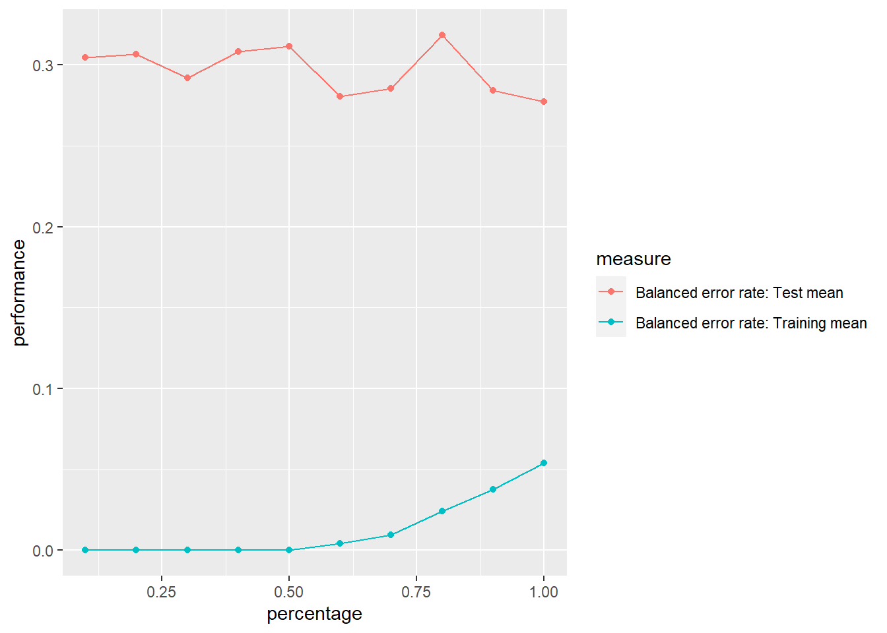
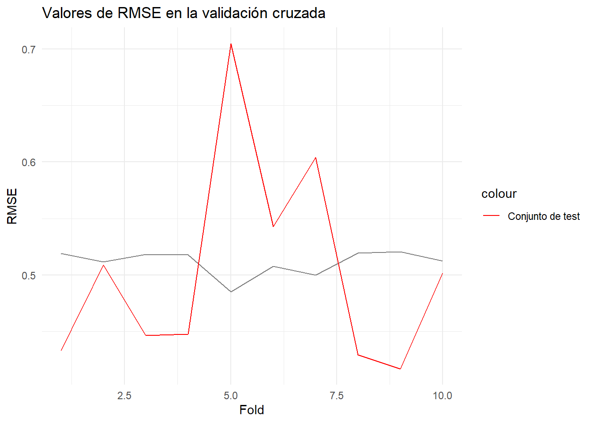

set.seed(123)
datos <- read.csv("train.csv")MD_HDT8
1. Dvisión de variables numéricas y obtención de data de prueba y entrenamiento
1.1 Transformación y división de variables
Al observar las variables se puede evidenciar que hay diferentes variables que tienen datos en diferentes escalas. Además, del análisis exploratorio previo se sabe que las variables no siguen distribuciones normales, así que se escalaron y normalizaron las variables.
Id MSSubClass MSZoning LotFrontage LotArea Street Alley LotShape LandContour
1 1 60 RL 65 8450 Pave <NA> Reg Lvl
2 2 20 RL 80 9600 Pave <NA> Reg Lvl
3 3 60 RL 68 11250 Pave <NA> IR1 Lvl
4 4 70 RL 60 9550 Pave <NA> IR1 Lvl
5 5 60 RL 84 14260 Pave <NA> IR1 Lvl
6 6 50 RL 85 14115 Pave <NA> IR1 Lvl
Utilities LotConfig LandSlope Neighborhood Condition1 Condition2 BldgType
1 AllPub Inside Gtl CollgCr Norm Norm 1Fam
2 AllPub FR2 Gtl Veenker Feedr Norm 1Fam
3 AllPub Inside Gtl CollgCr Norm Norm 1Fam
4 AllPub Corner Gtl Crawfor Norm Norm 1Fam
5 AllPub FR2 Gtl NoRidge Norm Norm 1Fam
6 AllPub Inside Gtl Mitchel Norm Norm 1Fam
HouseStyle OverallQual OverallCond YearBuilt YearRemodAdd RoofStyle RoofMatl
1 2Story 7 5 2003 2003 Gable CompShg
2 1Story 6 8 1976 1976 Gable CompShg
3 2Story 7 5 2001 2002 Gable CompShg
4 2Story 7 5 1915 1970 Gable CompShg
5 2Story 8 5 2000 2000 Gable CompShg
6 1.5Fin 5 5 1993 1995 Gable CompShg
Exterior1st Exterior2nd MasVnrType MasVnrArea ExterQual ExterCond Foundation
1 VinylSd VinylSd BrkFace 196 Gd TA PConc
2 MetalSd MetalSd None 0 TA TA CBlock
3 VinylSd VinylSd BrkFace 162 Gd TA PConc
4 Wd Sdng Wd Shng None 0 TA TA BrkTil
5 VinylSd VinylSd BrkFace 350 Gd TA PConc
6 VinylSd VinylSd None 0 TA TA Wood
BsmtQual BsmtCond BsmtExposure BsmtFinType1 BsmtFinSF1 BsmtFinType2
1 Gd TA No GLQ 706 Unf
2 Gd TA Gd ALQ 978 Unf
3 Gd TA Mn GLQ 486 Unf
4 TA Gd No ALQ 216 Unf
5 Gd TA Av GLQ 655 Unf
6 Gd TA No GLQ 732 Unf
BsmtFinSF2 BsmtUnfSF TotalBsmtSF Heating HeatingQC CentralAir Electrical
1 0 150 856 GasA Ex Y SBrkr
2 0 284 1262 GasA Ex Y SBrkr
3 0 434 920 GasA Ex Y SBrkr
4 0 540 756 GasA Gd Y SBrkr
5 0 490 1145 GasA Ex Y SBrkr
6 0 64 796 GasA Ex Y SBrkr
X1stFlrSF X2ndFlrSF LowQualFinSF GrLivArea BsmtFullBath BsmtHalfBath FullBath
1 856 854 0 1710 1 0 2
2 1262 0 0 1262 0 1 2
3 920 866 0 1786 1 0 2
4 961 756 0 1717 1 0 1
5 1145 1053 0 2198 1 0 2
6 796 566 0 1362 1 0 1
HalfBath BedroomAbvGr KitchenAbvGr KitchenQual TotRmsAbvGrd Functional
1 1 3 1 Gd 8 Typ
2 0 3 1 TA 6 Typ
3 1 3 1 Gd 6 Typ
4 0 3 1 Gd 7 Typ
5 1 4 1 Gd 9 Typ
6 1 1 1 TA 5 Typ
Fireplaces FireplaceQu GarageType GarageYrBlt GarageFinish GarageCars
1 0 <NA> Attchd 2003 RFn 2
2 1 TA Attchd 1976 RFn 2
3 1 TA Attchd 2001 RFn 2
4 1 Gd Detchd 1998 Unf 3
5 1 TA Attchd 2000 RFn 3
6 0 <NA> Attchd 1993 Unf 2
GarageArea GarageQual GarageCond PavedDrive WoodDeckSF OpenPorchSF
1 548 TA TA Y 0 61
2 460 TA TA Y 298 0
3 608 TA TA Y 0 42
4 642 TA TA Y 0 35
5 836 TA TA Y 192 84
6 480 TA TA Y 40 30
EnclosedPorch X3SsnPorch ScreenPorch PoolArea PoolQC Fence MiscFeature
1 0 0 0 0 <NA> <NA> <NA>
2 0 0 0 0 <NA> <NA> <NA>
3 0 0 0 0 <NA> <NA> <NA>
4 272 0 0 0 <NA> <NA> <NA>
5 0 0 0 0 <NA> <NA> <NA>
6 0 320 0 0 <NA> MnPrv Shed
MiscVal MoSold YrSold SaleType SaleCondition SalePrice
1 0 2 2008 WD Normal 208500
2 0 5 2007 WD Normal 181500
3 0 9 2008 WD Normal 223500
4 0 2 2006 WD Abnorml 140000
5 0 12 2008 WD Normal 250000
6 700 10 2009 WD Normal 1430001.2. Creación de clasificación de la variable de precios
p33 <- quantile(datos$SalePrice, 0.33)
p66 <- quantile(datos$SalePrice, 0.66)
datos <- datos %>%
mutate(clasificacion = ifelse(datos$SalePrice < p33, "Economicas",
ifelse(datos$SalePrice < p66, "Intermedias",
"Caras"
)
))
datos$clasificacion <- as.factor(datos$clasificacion)2. Uso de train y test previos
head(datos) SalePrice OverallQual MasVnrArea BsmtFinSF1 GrLivArea Fireplaces
1 0.35170267 0.65665106 0.5098397 0.57982575 0.3727132 -0.9515670
2 0.01116139 -0.06731047 -0.5726373 1.17715497 -0.4796010 0.6026234
3 0.54089227 0.65665106 0.3220631 0.09669182 0.5173022 0.6026234
4 -0.51226318 0.65665106 -0.5726373 -0.49624527 0.3860306 0.6026234
5 0.87512723 1.38061260 1.3603573 0.46782652 1.3011269 0.6026234
6 -0.47442526 -0.79127201 -0.5726373 0.63692339 -0.2893523 -0.9515670
WoodDeckSF OpenPorchSF TotalBsmtSF clasificacion
1 -0.7529618 0.2211932 -0.4561479 Caras
2 1.6235530 -0.7023689 0.4705408 Intermedias
3 -0.7529618 -0.0664737 -0.3100689 Caras
4 -0.7529618 -0.1724562 -0.6843964 Intermedias
5 0.7782156 0.5694215 0.2034901 Caras
6 -0.4339665 -0.2481580 -0.5930970 Intermediasporcentaje <- 0.7
set.seed(123)
corte <- sample(nrow(datos), nrow(datos) * porcentaje)
train <- datos[corte, ]
test <- datos[-corte, ]
train <- select(train, -SalePrice)
test <- select(test, -SalePrice)3. Generar dos modelos de redes neuronales, predicciones y matrices.
3.1 Primer modelo
Rprof(memory.profiling = TRUE)
modelo1 <- caret::train(clasificacion ~ ., data = train, method = "nnet", trace = F, tuneGrid = expand.grid(size = 4, decay = 0.1), nnet = list(droput = 0.5), activation = "logistic")
Rprof(NULL)
pm1 <- summaryRprof(memory = "both")3.2 Segundo modelo
Rprof(memory.profiling = TRUE)
modelo2 <- caret::train(clasificacion ~ ., data = train, method = "nnet", trace = F, tuneGrid = expand.grid(size = 16, decay = 0.1), nnet = list(droput = 0.5), activation = "sigmoid")
Rprof(NULL)
pm2 <- summaryRprof(memory = "both")4. Predicciones
4.1 Predicción con primer modelo
prediccion1 <- predict(modelo1, newdata = test)
cfm1 <- confusionMatrix(prediccion1, test$clasificacion)4.2 Predicción con segundo modelo
prediccion2 <- predict(modelo2, newdata = test)
cfm2 <- confusionMatrix(prediccion2, test$clasificacion)5. Matrices de confusión de modelos
5.1 Matriz de primer modelo
cfm1Confusion Matrix and Statistics
Reference
Prediction Caras Economicas Intermedias
Caras 126 4 16
Economicas 0 121 25
Intermedias 17 27 100
Overall Statistics
Accuracy : 0.7959
95% CI : (0.7549, 0.8327)
No Information Rate : 0.3486
P-Value [Acc > NIR] : <2e-16
Kappa : 0.6938
Mcnemar's Test P-Value : 0.2501
Statistics by Class:
Class: Caras Class: Economicas Class: Intermedias
Sensitivity 0.8811 0.7961 0.7092
Specificity 0.9317 0.9120 0.8508
Pos Pred Value 0.8630 0.8288 0.6944
Neg Pred Value 0.9414 0.8931 0.8596
Prevalence 0.3280 0.3486 0.3234
Detection Rate 0.2890 0.2775 0.2294
Detection Prevalence 0.3349 0.3349 0.3303
Balanced Accuracy 0.9064 0.8540 0.78005.2 Matriz de segundo modelo
La matriz para el segundo modelo
cfm2Confusion Matrix and Statistics
Reference
Prediction Caras Economicas Intermedias
Caras 121 3 21
Economicas 1 126 20
Intermedias 21 23 100
Overall Statistics
Accuracy : 0.7959
95% CI : (0.7549, 0.8327)
No Information Rate : 0.3486
P-Value [Acc > NIR] : <2e-16
Kappa : 0.6938
Mcnemar's Test P-Value : 0.7508
Statistics by Class:
Class: Caras Class: Economicas Class: Intermedias
Sensitivity 0.8462 0.8289 0.7092
Specificity 0.9181 0.9261 0.8508
Pos Pred Value 0.8345 0.8571 0.6944
Neg Pred Value 0.9244 0.9100 0.8596
Prevalence 0.3280 0.3486 0.3234
Detection Rate 0.2775 0.2890 0.2294
Detection Prevalence 0.3326 0.3372 0.3303
Balanced Accuracy 0.8821 0.8775 0.78006 Comparacion de resultados
Red neuronal 1
Este modelo obtuvo un accurracy de 0.754 Este modelo obtuvo un tiempo de procesamiento de 5.68 El modelo obtuvo un sensitivity de 0.855 y un specificity de 0.899 indicando asi que modelo no tiene tantas equivocaciones.
Red neuronal 2
Este modelo obtuvo un accurracy de 0.719 Este modelo obtuvo un tiempo de procesamiento de 17.66 El modelo obtuvo un sensitivity de 0.789 y un specificity de 0.919 indicando asi que modelo no tiene tantas equivocaciones.
Conclusion
Segun los datos que se observan anteriormente se puede definir que el mejor modelo de las dos redes neuronales es la primera, la cual tiene una solo una capa de 16 neuronas.
7. Análisis de overfitting
7.1 Primer modelo
datos.task = makeClassifTask(data = train, target = "clasificacion")
rin2 = makeResampleDesc(method = "CV", iters = 10, predict = "both")
lrn = makeLearner("classif.nnet", size = 4, decay = 1e-4, maxit = 1000, trace = FALSE)
lc2 = generateLearningCurveData(learners = lrn, task = datos.task,
percs = seq(0.1, 1, by = 0.1),
measures = list(ber, setAggregation(ber, train.mean)), resampling = rin2,
show.info = FALSE)
plotLearningCurve(lc2, facet = "learner")
Tras observar la curva de aprendizaje, se puede notar que la curva de training siempre va en ascenso, mientras mayor cantidad de datos mayor es la curva lo que indica que el modelo no posee un infra ajuste. Por otro lado, al observar la curva de test se nota que al final con el último grupo de datos en lugar de que la curva disminuye va en aumento lo que no debe de pasar, indicando así que el modelo posee sobreajuste. Además, se puede reforzar esta conclusión al notar que las dos curvas nunca llegan a converger y la distancia entre ellas es muy amplia.
7.2 Segundo modelo
datos.task = makeClassifTask(data = train, target = "clasificacion")
rin2 = makeResampleDesc(method = "CV", iters = 10, predict = "both")
lrn = makeLearner("classif.nnet", size = 16, decay = 1e-4, maxit = 1000, trace = FALSE)
lc2 = generateLearningCurveData(learners = lrn, task = datos.task,
percs = seq(0.1, 1, by = 0.1),
measures = list(ber, setAggregation(ber, train.mean)), resampling = rin2,
show.info = FALSE)
plotLearningCurve(lc2, facet = "learner")
El segundo modelo se evidencia en su curva de aprendizaje que tiene overfitting. Se aprecia que la curva de entrenamiento sube cuando se tienen más datos, lo cual indica que el modelo se está ajustando mucho a ellos. Además, existe un espacio demasiado grande entre curvas. Este sobreajuste se puede deber a que la complejidad del modelo es demasiado alta para los datos que se tienen. También es posible que se tengan muy pocos datos y/o features.
8. Tuneo de parametros
grid <- expand.grid(size = c(2, 4, 6, 10),
decay = c(0.01, 0.1, 0.5, 1.5, 1.25))
modelo_tuneado <- caret::train(clasificacion ~ .,
data = train,
method = "nnet",
trace = F,
tuneGrid = grid,
nnet = list(droput = 0.5),
maxit = 100)
modelo_tuneado$bestTune size decay
19 10 1.25summary(modelo_tuneado)a 8-10-3 network with 123 weights
options were - softmax modelling decay=1.25
b->h1 i1->h1 i2->h1 i3->h1 i4->h1 i5->h1 i6->h1 i7->h1 i8->h1
-0.43 -0.68 -0.09 -0.33 -0.42 -0.28 -0.53 0.11 -0.34
b->h2 i1->h2 i2->h2 i3->h2 i4->h2 i5->h2 i6->h2 i7->h2 i8->h2
0.17 0.88 0.08 0.24 0.34 0.08 0.16 -0.03 0.33
b->h3 i1->h3 i2->h3 i3->h3 i4->h3 i5->h3 i6->h3 i7->h3 i8->h3
-0.17 -0.90 -0.07 -0.25 -0.33 -0.07 -0.15 0.02 -0.33
b->h4 i1->h4 i2->h4 i3->h4 i4->h4 i5->h4 i6->h4 i7->h4 i8->h4
0.17 0.91 0.07 0.24 0.34 0.07 0.16 -0.03 0.33
b->h5 i1->h5 i2->h5 i3->h5 i4->h5 i5->h5 i6->h5 i7->h5 i8->h5
-1.46 -0.82 0.20 -0.49 -1.36 -0.32 -0.27 0.18 -0.58
b->h6 i1->h6 i2->h6 i3->h6 i4->h6 i5->h6 i6->h6 i7->h6 i8->h6
0.17 0.89 0.07 0.25 0.33 0.08 0.15 -0.03 0.33
b->h7 i1->h7 i2->h7 i3->h7 i4->h7 i5->h7 i6->h7 i7->h7 i8->h7
-0.28 -0.78 -0.08 -0.28 -0.36 -0.14 -0.28 0.05 -0.33
b->h8 i1->h8 i2->h8 i3->h8 i4->h8 i5->h8 i6->h8 i7->h8 i8->h8
0.80 -1.01 0.19 -0.17 -2.45 0.11 -0.28 -0.34 -1.34
b->h9 i1->h9 i2->h9 i3->h9 i4->h9 i5->h9 i6->h9 i7->h9 i8->h9
0.45 0.83 0.04 -0.24 0.74 -0.11 -0.29 1.42 0.24
b->h10 i1->h10 i2->h10 i3->h10 i4->h10 i5->h10 i6->h10 i7->h10 i8->h10
-0.20 -0.88 -0.07 -0.27 -0.33 -0.08 -0.14 0.02 -0.35
b->o1 h1->o1 h2->o1 h3->o1 h4->o1 h5->o1 h6->o1 h7->o1 h8->o1 h9->o1
0.00 -0.83 0.82 -0.83 0.84 -0.83 0.83 -0.78 -1.53 1.46
h10->o1
-0.81
b->o2 h1->o2 h2->o2 h3->o2 h4->o2 h5->o2 h6->o2 h7->o2 h8->o2 h9->o2
0.02 0.99 -0.84 0.87 -0.85 1.93 -0.85 0.88 -0.73 -1.31
h10->o2
0.88
b->o3 h1->o3 h2->o3 h3->o3 h4->o3 h5->o3 h6->o3 h7->o3 h8->o3 h9->o3
-0.02 -0.16 0.02 -0.03 0.01 -1.10 0.02 -0.10 2.27 -0.15
h10->o3
-0.07 # weights: 27
initial value 235.421286
iter 10 value 139.523192
iter 20 value 133.744438
iter 30 value 133.690387
final value 133.689227
converged
# weights: 27
initial value 205.957460
iter 10 value 172.649326
iter 20 value 151.225238
iter 30 value 144.695204
iter 40 value 142.399810
iter 50 value 138.715529
iter 60 value 138.436862
final value 138.436790
converged
# weights: 27
initial value 230.456214
iter 10 value 149.311557
iter 20 value 133.417707
iter 30 value 133.082042
final value 133.080153
converged
# weights: 27
initial value 237.938252
iter 10 value 146.365747
iter 20 value 137.709836
iter 30 value 136.926544
final value 136.914663
converged
# weights: 27
initial value 225.372603
iter 10 value 149.903982
iter 20 value 135.477117
iter 30 value 135.357363
final value 135.354568
converged
# weights: 27
initial value 232.786315
iter 10 value 143.222204
iter 20 value 131.198851
iter 30 value 130.953596
final value 130.948746
converged
# weights: 27
initial value 220.405619
iter 10 value 160.014711
iter 20 value 139.562650
iter 30 value 137.855732
iter 40 value 137.840855
final value 137.840847
converged
# weights: 27
initial value 220.079890
iter 10 value 144.038738
iter 20 value 131.384036
iter 30 value 130.763863
final value 130.761565
converged
# weights: 27
initial value 198.924196
iter 10 value 131.291677
iter 20 value 128.668069
final value 128.666689
converged
# weights: 27
initial value 198.446758
iter 10 value 141.943852
iter 20 value 134.865534
iter 30 value 134.538806
final value 134.538329
converged
# weights: 51
initial value 211.860162
iter 10 value 133.297796
iter 20 value 124.337292
iter 30 value 123.299310
iter 40 value 123.286879
iter 50 value 123.285143
iter 60 value 123.283962
iter 60 value 123.283961
iter 60 value 123.283961
final value 123.283961
converged
# weights: 51
initial value 211.492056
iter 10 value 147.712623
iter 20 value 128.523938
iter 30 value 128.086243
iter 40 value 127.918090
iter 50 value 127.845936
iter 60 value 127.824583
iter 70 value 127.821569
final value 127.821534
converged
# weights: 51
initial value 214.813539
iter 10 value 134.417241
iter 20 value 129.012274
iter 30 value 128.699319
iter 40 value 128.684190
iter 50 value 128.682511
iter 60 value 128.681604
final value 128.681591
converged
# weights: 51
initial value 223.291245
iter 10 value 133.143609
iter 20 value 128.424097
iter 30 value 128.361589
final value 128.361241
converged
# weights: 51
initial value 227.950157
iter 10 value 135.774770
iter 20 value 127.853714
iter 30 value 127.243358
iter 40 value 127.202104
iter 50 value 127.199389
final value 127.199351
converged
# weights: 51
initial value 225.780453
iter 10 value 139.327968
iter 20 value 127.837363
iter 30 value 127.197138
iter 40 value 126.809676
iter 50 value 126.778722
final value 126.777811
converged
# weights: 51
initial value 209.050583
iter 10 value 134.231484
iter 20 value 127.207135
iter 30 value 127.038437
iter 40 value 127.012143
iter 50 value 127.009921
final value 127.009846
converged
# weights: 51
initial value 213.582398
iter 10 value 132.447303
iter 20 value 125.429705
iter 30 value 125.184548
iter 40 value 125.176293
iter 50 value 125.174507
final value 125.174344
converged
# weights: 51
initial value 208.532463
iter 10 value 142.329440
iter 20 value 126.856794
iter 30 value 124.873965
iter 40 value 124.734487
iter 50 value 124.728079
iter 60 value 124.724673
final value 124.724468
converged
# weights: 51
initial value 213.043343
iter 10 value 130.987310
iter 20 value 125.472907
iter 30 value 125.232685
iter 40 value 125.223234
final value 125.222986
converged
# weights: 75
initial value 255.181328
iter 10 value 128.207479
iter 20 value 120.776934
iter 30 value 120.225908
iter 40 value 120.200880
iter 50 value 120.197982
iter 60 value 120.196300
iter 70 value 120.196144
final value 120.196131
converged
# weights: 75
initial value 217.997677
iter 10 value 152.640225
iter 20 value 127.702253
iter 30 value 126.751982
iter 40 value 126.563755
iter 50 value 126.518018
iter 60 value 126.510662
iter 70 value 126.509831
iter 80 value 126.509487
final value 126.509480
converged
# weights: 75
initial value 257.999697
iter 10 value 140.533950
iter 20 value 126.792758
iter 30 value 126.233396
iter 40 value 126.190377
iter 50 value 126.160484
iter 60 value 126.149367
iter 70 value 126.148064
iter 80 value 126.147888
final value 126.147864
converged
# weights: 75
initial value 203.900028
iter 10 value 137.073302
iter 20 value 125.843018
iter 30 value 125.514203
iter 40 value 125.499982
iter 50 value 125.497043
iter 60 value 125.496771
iter 60 value 125.496770
iter 60 value 125.496770
final value 125.496770
converged
# weights: 75
initial value 239.007409
iter 10 value 137.181357
iter 20 value 125.010869
iter 30 value 124.678619
iter 40 value 124.663390
iter 50 value 124.661692
iter 60 value 124.659795
iter 70 value 124.659558
final value 124.659554
converged
# weights: 75
initial value 206.627920
iter 10 value 127.665659
iter 20 value 122.938888
iter 30 value 122.812083
iter 40 value 122.788801
iter 50 value 122.756552
iter 60 value 122.750506
final value 122.750234
converged
# weights: 75
initial value 282.797270
iter 10 value 141.165764
iter 20 value 125.700305
iter 30 value 124.983846
iter 40 value 124.941846
iter 50 value 124.930754
iter 60 value 124.926157
iter 70 value 124.924988
iter 80 value 124.924885
iter 80 value 124.924884
iter 80 value 124.924883
final value 124.924883
converged
# weights: 75
initial value 216.697273
iter 10 value 130.493230
iter 20 value 124.512598
iter 30 value 123.990331
iter 40 value 123.851661
iter 50 value 123.811450
iter 60 value 123.794410
iter 70 value 123.792266
final value 123.792010
converged
# weights: 75
initial value 233.337572
iter 10 value 137.908531
iter 20 value 121.547115
iter 30 value 121.057449
iter 40 value 121.048577
iter 50 value 121.047935
final value 121.047885
converged
# weights: 75
initial value 230.518339
iter 10 value 125.722552
iter 20 value 121.747744
iter 30 value 121.573907
iter 40 value 121.569208
final value 121.569073
converged
# weights: 99
initial value 210.145347
iter 10 value 124.672050
iter 20 value 119.390775
iter 30 value 118.897687
iter 40 value 118.740379
iter 50 value 118.698659
final value 118.696298
converged
# weights: 99
initial value 217.589091
iter 10 value 129.184843
iter 20 value 125.038639
iter 30 value 124.818088
iter 40 value 124.809894
iter 50 value 124.803384
iter 60 value 124.786716
iter 70 value 124.786325
iter 70 value 124.786325
iter 70 value 124.786325
final value 124.786325
converged
# weights: 99
initial value 279.802643
iter 10 value 129.749946
iter 20 value 124.991335
iter 30 value 124.739368
iter 40 value 124.709730
iter 50 value 124.701461
iter 60 value 124.700657
iter 70 value 124.700498
final value 124.700466
converged
# weights: 99
initial value 203.285507
iter 10 value 128.816128
iter 20 value 124.903040
iter 30 value 124.844696
iter 40 value 124.828862
iter 50 value 124.824932
final value 124.824787
converged
# weights: 99
initial value 230.013548
iter 10 value 127.347482
iter 20 value 123.429478
iter 30 value 123.221137
iter 40 value 123.209527
iter 50 value 123.204589
iter 60 value 123.203348
iter 70 value 123.203181
iter 80 value 123.203078
iter 80 value 123.203077
iter 80 value 123.203077
final value 123.203077
converged
# weights: 99
initial value 201.915535
iter 10 value 126.315088
iter 20 value 121.596104
iter 30 value 121.504715
iter 40 value 121.489623
iter 50 value 121.486272
iter 60 value 121.485828
final value 121.485818
converged
# weights: 99
initial value 255.358173
iter 10 value 129.584147
iter 20 value 124.120541
iter 30 value 123.767029
iter 40 value 123.735557
iter 50 value 123.730685
iter 60 value 123.730030
iter 70 value 123.729917
final value 123.729902
converged
# weights: 99
initial value 207.440469
iter 10 value 128.126311
iter 20 value 122.068446
iter 30 value 121.972000
iter 40 value 121.966817
iter 50 value 121.963308
iter 60 value 121.961625
final value 121.961493
converged
# weights: 99
initial value 207.320783
iter 10 value 125.923827
iter 20 value 120.548428
iter 30 value 119.952012
iter 40 value 119.942143
iter 50 value 119.938892
iter 60 value 119.937987
final value 119.937943
converged
# weights: 99
initial value 219.875338
iter 10 value 126.474236
iter 20 value 122.001631
iter 30 value 121.764223
iter 40 value 121.741311
iter 50 value 121.739865
iter 60 value 121.739665
final value 121.739662
converged
# weights: 123
initial value 198.135445
iter 10 value 134.129030
iter 20 value 118.189750
iter 30 value 117.845180
iter 40 value 117.762838
iter 50 value 117.751309
iter 60 value 117.745980
iter 70 value 117.743425
iter 80 value 117.743200
iter 80 value 117.743200
iter 80 value 117.743200
final value 117.743200
converged
# weights: 123
initial value 232.332933
iter 10 value 135.292668
iter 20 value 124.862069
iter 30 value 124.402969
iter 40 value 124.161713
iter 50 value 124.134687
iter 60 value 124.129542
iter 70 value 124.126513
iter 80 value 124.126031
final value 124.125969
converged
# weights: 123
initial value 270.097903
iter 10 value 140.090879
iter 20 value 124.484018
iter 30 value 124.093811
iter 40 value 124.064100
iter 50 value 124.062417
iter 60 value 124.060862
iter 70 value 124.060597
iter 80 value 124.060550
final value 124.060548
converged
# weights: 123
initial value 231.192822
iter 10 value 127.939568
iter 20 value 124.153111
iter 30 value 123.901197
iter 40 value 123.838567
iter 50 value 123.819154
iter 60 value 123.817146
iter 70 value 123.816990
final value 123.816986
converged
# weights: 123
initial value 234.568842
iter 10 value 133.539718
iter 20 value 123.185539
iter 30 value 122.759981
iter 40 value 122.714189
iter 50 value 122.710896
iter 60 value 122.710170
iter 70 value 122.710081
final value 122.710064
converged
# weights: 123
initial value 226.557179
iter 10 value 128.001113
iter 20 value 121.260826
iter 30 value 120.864930
iter 40 value 120.699678
iter 50 value 120.677759
iter 60 value 120.671238
iter 70 value 120.668959
iter 80 value 120.668349
iter 90 value 120.668029
iter 90 value 120.668029
iter 90 value 120.668029
final value 120.668029
converged
# weights: 123
initial value 248.004265
iter 10 value 129.747608
iter 20 value 123.877815
iter 30 value 123.292081
iter 40 value 123.242844
iter 50 value 123.236219
iter 60 value 123.235484
iter 70 value 123.235392
final value 123.235390
converged
# weights: 123
initial value 181.801957
iter 10 value 129.238004
iter 20 value 121.533830
iter 30 value 121.285892
iter 40 value 121.272910
iter 50 value 121.272063
iter 60 value 121.271422
iter 70 value 121.267764
iter 80 value 121.267322
final value 121.267303
converged
# weights: 123
initial value 226.196028
iter 10 value 130.350803
iter 20 value 119.643860
iter 30 value 119.282157
iter 40 value 119.263251
iter 50 value 119.258638
iter 60 value 119.256643
iter 70 value 119.249252
iter 80 value 119.248109
iter 90 value 119.246742
iter 100 value 119.246331
final value 119.246331
stopped after 100 iterations
# weights: 123
initial value 281.388751
iter 10 value 125.249720
iter 20 value 120.046869
iter 30 value 119.951807
iter 40 value 119.933739
iter 50 value 119.931599
iter 60 value 119.931151
iter 70 value 119.931098
final value 119.931095
converged
# weights: 27
initial value 205.390939
iter 10 value 136.918630
iter 20 value 129.357715
iter 30 value 129.030386
final value 129.030194
converged
# weights: 27
initial value 199.288088
iter 10 value 149.115896
iter 20 value 134.945837
iter 30 value 133.872545
final value 133.823497
converged
# weights: 27
initial value 200.242941
iter 10 value 145.804629
iter 20 value 139.175966
iter 30 value 138.755412
iter 40 value 138.751528
iter 40 value 138.751528
iter 40 value 138.751528
final value 138.751528
converged
# weights: 27
initial value 200.501845
iter 10 value 153.329438
iter 20 value 138.672494
iter 30 value 137.823324
iter 40 value 137.685904
iter 40 value 137.685904
iter 40 value 137.685904
final value 137.685904
converged
# weights: 27
initial value 239.229164
iter 10 value 144.712382
iter 20 value 136.901185
iter 30 value 136.167310
final value 136.159947
converged
# weights: 27
initial value 209.488429
iter 10 value 146.861246
iter 20 value 138.188279
iter 30 value 136.885748
final value 136.814679
converged
# weights: 27
initial value 218.427610
iter 10 value 151.228869
iter 20 value 135.470208
iter 30 value 133.307925
iter 40 value 133.268276
final value 133.268272
converged
# weights: 27
initial value 204.980602
iter 10 value 136.770214
iter 20 value 131.475307
iter 30 value 131.437902
final value 131.437788
converged
# weights: 27
initial value 199.696646
iter 10 value 145.442819
iter 20 value 136.195686
iter 30 value 134.629503
final value 134.622576
converged
# weights: 27
initial value 196.711879
iter 10 value 134.824030
iter 20 value 130.049379
iter 30 value 130.008007
final value 130.007194
converged
# weights: 51
initial value 203.538453
iter 10 value 128.523601
iter 20 value 123.176453
iter 30 value 122.797089
iter 40 value 122.735815
iter 50 value 122.725398
iter 60 value 122.723506
iter 70 value 122.723235
iter 70 value 122.723234
iter 70 value 122.723234
final value 122.723234
converged
# weights: 51
initial value 229.224483
iter 10 value 140.434251
iter 20 value 128.689269
iter 30 value 128.493279
iter 40 value 128.455819
iter 50 value 128.449343
iter 60 value 128.448492
iter 60 value 128.448491
iter 60 value 128.448491
final value 128.448491
converged
# weights: 51
initial value 301.079742
iter 10 value 140.321653
iter 20 value 130.262919
iter 30 value 129.448354
iter 40 value 129.376732
iter 50 value 129.369538
iter 60 value 129.362227
final value 129.361789
converged
# weights: 51
initial value 214.429507
iter 10 value 145.333015
iter 20 value 128.994046
iter 30 value 128.066394
iter 40 value 128.042898
iter 50 value 128.040739
iter 60 value 128.040596
iter 60 value 128.040595
final value 128.040591
converged
# weights: 51
initial value 201.499390
iter 10 value 130.800014
iter 20 value 126.935089
iter 30 value 126.767984
iter 40 value 126.759196
final value 126.759189
converged
# weights: 51
initial value 241.499824
iter 10 value 135.294156
iter 20 value 127.744070
iter 30 value 126.735175
iter 40 value 126.722044
final value 126.721582
converged
# weights: 51
initial value 225.183204
iter 10 value 132.824628
iter 20 value 129.678457
iter 30 value 129.416770
iter 40 value 129.396325
iter 50 value 129.396007
final value 129.396005
converged
# weights: 51
initial value 209.563277
iter 10 value 133.719315
iter 20 value 127.669081
iter 30 value 127.531851
iter 40 value 127.523569
final value 127.523045
converged
# weights: 51
initial value 224.994244
iter 10 value 130.610905
iter 20 value 124.243274
iter 30 value 123.838650
iter 40 value 123.816401
iter 50 value 123.768009
iter 60 value 123.765243
final value 123.765231
converged
# weights: 51
initial value 213.740890
iter 10 value 133.865041
iter 20 value 126.181431
iter 30 value 125.908132
iter 40 value 125.886055
iter 50 value 125.884833
final value 125.884743
converged
# weights: 75
initial value 277.104488
iter 10 value 127.163159
iter 20 value 121.289991
iter 30 value 121.047882
iter 40 value 120.950536
iter 50 value 120.942705
final value 120.942033
converged
# weights: 75
initial value 227.583763
iter 10 value 132.059501
iter 20 value 127.401184
iter 30 value 127.129812
iter 40 value 127.120014
iter 50 value 127.119219
final value 127.119215
converged
# weights: 75
initial value 217.916632
iter 10 value 132.565894
iter 20 value 126.735352
iter 30 value 126.419761
iter 40 value 126.371094
iter 50 value 126.363845
iter 60 value 126.362922
final value 126.362772
converged
# weights: 75
initial value 210.931289
iter 10 value 131.876526
iter 20 value 126.360620
iter 30 value 126.156532
iter 40 value 126.127569
iter 50 value 126.123096
iter 60 value 126.122828
final value 126.122818
converged
# weights: 75
initial value 212.803136
iter 10 value 131.111185
iter 20 value 127.344056
iter 30 value 127.311189
iter 40 value 127.306972
iter 50 value 127.306761
iter 60 value 127.306721
final value 127.306720
converged
# weights: 75
initial value 251.474287
iter 10 value 129.710201
iter 20 value 124.054989
iter 30 value 123.912665
iter 40 value 123.896778
iter 50 value 123.892810
iter 60 value 123.889929
final value 123.889733
converged
# weights: 75
initial value 227.762007
iter 10 value 128.442968
iter 20 value 126.380892
iter 30 value 126.248821
iter 40 value 126.237050
iter 50 value 126.232834
iter 60 value 126.232219
final value 126.232134
converged
# weights: 75
initial value 249.414114
iter 10 value 129.096167
iter 20 value 124.363529
iter 30 value 124.198439
iter 40 value 124.186880
iter 50 value 124.183927
final value 124.183620
converged
# weights: 75
initial value 205.816021
iter 10 value 124.846518
iter 20 value 121.996253
iter 30 value 121.775581
iter 40 value 121.747601
iter 50 value 121.715561
iter 60 value 121.710525
final value 121.709706
converged
# weights: 75
initial value 200.642311
iter 10 value 126.035108
iter 20 value 122.416026
iter 30 value 122.259799
iter 40 value 122.229238
iter 50 value 122.205878
iter 60 value 122.199856
final value 122.199771
converged
# weights: 99
initial value 223.213313
iter 10 value 127.125853
iter 20 value 120.005140
iter 30 value 119.488713
iter 40 value 119.459177
iter 50 value 119.456152
iter 60 value 119.452373
iter 70 value 119.451322
iter 80 value 119.451107
final value 119.451103
converged
# weights: 99
initial value 243.434879
iter 10 value 135.666151
iter 20 value 126.852322
iter 30 value 125.877472
iter 40 value 125.739740
iter 50 value 125.729813
iter 60 value 125.728252
iter 70 value 125.727837
final value 125.727797
converged
# weights: 99
initial value 256.148836
iter 10 value 137.762856
iter 20 value 125.835016
iter 30 value 125.354725
iter 40 value 125.333018
iter 50 value 125.328870
iter 60 value 125.327858
iter 70 value 125.326048
iter 80 value 125.319462
final value 125.319355
converged
# weights: 99
initial value 249.677558
iter 10 value 127.803939
iter 20 value 125.119969
iter 30 value 125.058351
iter 40 value 125.055990
iter 50 value 125.055906
iter 50 value 125.055905
iter 50 value 125.055905
final value 125.055905
converged
# weights: 99
initial value 201.189184
iter 10 value 125.950564
iter 20 value 124.208949
iter 30 value 123.863687
iter 40 value 123.840981
iter 50 value 123.839013
iter 60 value 123.838544
final value 123.838498
converged
# weights: 99
initial value 290.602957
iter 10 value 125.977368
iter 20 value 122.551963
iter 30 value 122.182232
iter 40 value 122.160385
iter 50 value 122.158164
iter 60 value 122.157971
iter 70 value 122.157396
final value 122.157344
converged
# weights: 99
initial value 264.692059
iter 10 value 128.949270
iter 20 value 124.754430
iter 30 value 124.602443
iter 40 value 124.568639
iter 50 value 124.555208
iter 60 value 124.547272
iter 70 value 124.546533
final value 124.546499
converged
# weights: 99
initial value 224.604904
iter 10 value 127.007675
iter 20 value 122.898793
iter 30 value 122.639885
iter 40 value 122.598253
iter 50 value 122.585668
iter 60 value 122.583170
iter 70 value 122.581041
iter 80 value 122.580568
final value 122.580559
converged
# weights: 99
initial value 222.973533
iter 10 value 139.720248
iter 20 value 122.501753
iter 30 value 121.079888
iter 40 value 120.885416
iter 50 value 120.850889
iter 60 value 120.840123
iter 70 value 120.836159
iter 80 value 120.833886
iter 90 value 120.833280
iter 100 value 120.833229
final value 120.833229
stopped after 100 iterations
# weights: 99
initial value 234.581020
iter 10 value 127.028845
iter 20 value 121.327323
iter 30 value 121.062221
iter 40 value 121.057293
iter 50 value 121.051370
iter 60 value 121.050620
final value 121.050509
converged
# weights: 123
initial value 230.953203
iter 10 value 141.823346
iter 20 value 119.458289
iter 30 value 118.658563
iter 40 value 118.489545
iter 50 value 118.462080
iter 60 value 118.456969
iter 70 value 118.456198
iter 80 value 118.456034
final value 118.456029
converged
# weights: 123
initial value 230.747841
iter 10 value 131.043028
iter 20 value 125.031393
iter 30 value 124.745944
iter 40 value 124.727271
iter 50 value 124.713490
iter 60 value 124.704971
iter 70 value 124.704108
final value 124.704071
converged
# weights: 123
initial value 246.155790
iter 10 value 135.408076
iter 20 value 125.344931
iter 30 value 124.695606
iter 40 value 124.673596
iter 50 value 124.670129
iter 60 value 124.669398
iter 70 value 124.660645
iter 80 value 124.659052
iter 90 value 124.658521
iter 100 value 124.653416
final value 124.653416
stopped after 100 iterations
# weights: 123
initial value 214.184822
iter 10 value 130.763277
iter 20 value 125.277806
iter 30 value 124.491234
iter 40 value 124.436765
iter 50 value 124.418425
iter 60 value 124.413965
iter 70 value 124.413678
final value 124.413647
converged
# weights: 123
initial value 231.571920
iter 10 value 129.420515
iter 20 value 123.746000
iter 30 value 123.419298
iter 40 value 123.402076
iter 50 value 123.399400
iter 60 value 123.398765
iter 70 value 123.398615
final value 123.398604
converged
# weights: 123
initial value 205.956999
iter 10 value 129.484020
iter 20 value 122.035547
iter 30 value 121.500253
iter 40 value 121.450374
iter 50 value 121.434496
iter 60 value 121.432646
iter 70 value 121.432356
final value 121.432349
converged
# weights: 123
initial value 265.722739
iter 10 value 133.997628
iter 20 value 124.134745
iter 30 value 123.625781
iter 40 value 123.594190
iter 50 value 123.581647
iter 60 value 123.570837
iter 70 value 123.566559
iter 80 value 123.566078
final value 123.566020
converged
# weights: 123
initial value 232.824103
iter 10 value 133.734850
iter 20 value 123.249551
iter 30 value 122.652648
iter 40 value 122.624853
iter 50 value 122.609202
iter 60 value 122.606957
iter 70 value 122.606209
iter 80 value 122.606080
iter 80 value 122.606079
iter 80 value 122.606079
final value 122.606079
converged
# weights: 123
initial value 246.181360
iter 10 value 125.114421
iter 20 value 120.219052
iter 30 value 120.050537
iter 40 value 120.032700
iter 50 value 120.027642
iter 60 value 120.026775
iter 70 value 120.026508
iter 80 value 120.026462
final value 120.026457
converged
# weights: 123
initial value 212.978640
iter 10 value 124.600591
iter 20 value 120.610947
iter 30 value 120.552858
iter 40 value 120.547684
iter 50 value 120.546997
final value 120.546966
converged
# weights: 27
initial value 220.273835
iter 10 value 150.847936
iter 20 value 132.544808
iter 30 value 131.488779
iter 40 value 131.471545
iter 40 value 131.471544
iter 40 value 131.471544
final value 131.471544
converged
# weights: 27
initial value 209.771551
iter 10 value 136.780402
iter 20 value 134.480954
iter 30 value 134.473877
final value 134.473874
converged
# weights: 27
initial value 207.754543
iter 10 value 148.614452
iter 20 value 137.322403
iter 30 value 135.905801
final value 135.891324
converged
# weights: 27
initial value 236.990435
iter 10 value 144.260688
iter 20 value 139.625962
iter 30 value 139.515727
final value 139.507808
converged
# weights: 27
initial value 218.837491
iter 10 value 143.063119
iter 20 value 136.884061
iter 30 value 135.685876
iter 40 value 132.925760
final value 132.925608
converged
# weights: 27
initial value 220.594576
iter 10 value 140.901688
iter 20 value 132.665633
iter 30 value 132.377931
final value 132.374370
converged
# weights: 27
initial value 201.790646
iter 10 value 142.930075
iter 20 value 134.537699
iter 30 value 133.938570
iter 40 value 133.921576
iter 40 value 133.921575
iter 40 value 133.921575
final value 133.921575
converged
# weights: 27
initial value 205.465054
iter 10 value 137.228535
iter 20 value 132.414912
iter 30 value 132.127879
final value 132.116396
converged
# weights: 27
initial value 194.492357
iter 10 value 144.479071
iter 20 value 135.211064
iter 30 value 134.968047
final value 134.967891
converged
# weights: 27
initial value 212.431099
iter 10 value 145.740188
iter 20 value 136.255911
iter 30 value 136.041556
iter 40 value 136.024613
iter 40 value 136.024613
iter 40 value 136.024613
final value 136.024613
converged
# weights: 51
initial value 225.386805
iter 10 value 143.564932
iter 20 value 125.529224
iter 30 value 124.867520
iter 40 value 124.844213
iter 50 value 124.837450
iter 60 value 124.836276
final value 124.836262
converged
# weights: 51
initial value 208.967268
iter 10 value 134.746957
iter 20 value 131.144875
iter 30 value 130.803485
iter 40 value 130.795250
final value 130.794911
converged
# weights: 51
initial value 211.962145
iter 10 value 139.665175
iter 20 value 130.700838
iter 30 value 130.070179
iter 40 value 130.048875
iter 50 value 130.047002
iter 60 value 130.046347
iter 60 value 130.046346
iter 60 value 130.046346
final value 130.046346
converged
# weights: 51
initial value 197.233280
iter 10 value 137.967000
iter 20 value 131.280956
iter 30 value 128.879964
iter 40 value 128.698128
final value 128.697453
converged
# weights: 51
initial value 219.435871
iter 10 value 146.750587
iter 20 value 137.267393
iter 30 value 136.413995
iter 40 value 136.313086
iter 50 value 136.290467
iter 60 value 136.289764
final value 136.289647
converged
# weights: 51
initial value 236.175676
iter 10 value 132.725548
iter 20 value 127.704460
iter 30 value 127.460318
iter 40 value 127.438240
final value 127.436581
converged
# weights: 51
initial value 209.689569
iter 10 value 132.194824
iter 20 value 128.494662
iter 30 value 128.312581
iter 40 value 128.298988
iter 50 value 128.296473
iter 60 value 128.296381
final value 128.296379
converged
# weights: 51
initial value 209.004043
iter 10 value 138.635149
iter 20 value 135.009243
iter 30 value 134.863247
iter 40 value 134.861786
iter 50 value 134.859647
final value 134.859528
converged
# weights: 51
initial value 219.145943
iter 10 value 129.267239
iter 20 value 125.882031
iter 30 value 125.769112
iter 40 value 125.748529
iter 50 value 125.710989
iter 60 value 125.706053
final value 125.705782
converged
# weights: 51
initial value 231.448511
iter 10 value 136.711631
iter 20 value 127.077032
iter 30 value 126.567653
iter 40 value 126.551194
final value 126.550666
converged
# weights: 75
initial value 244.068441
iter 10 value 124.095320
iter 20 value 121.345681
iter 30 value 121.103460
iter 40 value 121.099421
final value 121.099303
converged
# weights: 75
initial value 251.197995
iter 10 value 132.093711
iter 20 value 127.375141
iter 30 value 127.088132
iter 40 value 127.080452
iter 50 value 127.080219
iter 50 value 127.080218
iter 50 value 127.080218
final value 127.080218
converged
# weights: 75
initial value 202.814258
iter 10 value 129.843340
iter 20 value 127.701204
iter 30 value 127.668043
iter 40 value 127.666539
iter 50 value 127.666440
iter 50 value 127.666439
iter 50 value 127.666439
final value 127.666439
converged
# weights: 75
initial value 247.657122
iter 10 value 130.073614
iter 20 value 127.237151
iter 30 value 127.147346
iter 40 value 127.142375
iter 50 value 127.141581
final value 127.141478
converged
# weights: 75
initial value 203.193828
iter 10 value 128.317236
iter 20 value 126.262333
iter 30 value 126.173812
iter 40 value 126.172550
iter 50 value 126.172396
iter 50 value 126.172395
iter 50 value 126.172395
final value 126.172395
converged
# weights: 75
initial value 203.127872
iter 10 value 130.443738
iter 20 value 124.373015
iter 30 value 124.173839
iter 40 value 124.109077
iter 50 value 124.093245
iter 60 value 124.091778
final value 124.091659
converged
# weights: 75
initial value 245.881069
iter 10 value 143.720480
iter 20 value 126.998074
iter 30 value 126.639482
iter 40 value 126.592984
iter 50 value 126.564393
iter 60 value 126.559595
iter 70 value 126.559231
iter 70 value 126.559231
iter 70 value 126.559230
final value 126.559230
converged
# weights: 75
initial value 254.352493
iter 10 value 138.615914
iter 20 value 125.851776
iter 30 value 125.177100
iter 40 value 125.112367
iter 50 value 125.085760
iter 60 value 125.076982
iter 70 value 125.074723
iter 80 value 125.074402
final value 125.074398
converged
# weights: 75
initial value 230.371013
iter 10 value 138.226418
iter 20 value 126.073675
iter 30 value 125.750256
iter 40 value 125.723617
iter 50 value 125.719026
iter 60 value 125.715783
final value 125.715616
converged
# weights: 75
initial value 240.438468
iter 10 value 126.899750
iter 20 value 123.735370
iter 30 value 123.353029
iter 40 value 123.321440
iter 50 value 123.316500
final value 123.316243
converged
# weights: 99
initial value 209.776179
iter 10 value 126.669715
iter 20 value 121.290476
iter 30 value 120.283147
iter 40 value 120.204178
iter 50 value 120.183140
iter 60 value 120.181316
iter 70 value 120.181180
final value 120.181176
converged
# weights: 99
initial value 228.230685
iter 10 value 129.222393
iter 20 value 126.160521
iter 30 value 125.997182
iter 40 value 125.987671
final value 125.987602
converged
# weights: 99
initial value 214.159726
iter 10 value 132.127942
iter 20 value 126.628184
iter 30 value 126.217982
iter 40 value 126.181194
iter 50 value 126.178749
iter 60 value 126.178606
final value 126.178598
converged
# weights: 99
initial value 264.239934
iter 10 value 132.713240
iter 20 value 126.445743
iter 30 value 125.778779
iter 40 value 125.698669
iter 50 value 125.687433
iter 60 value 125.682634
iter 70 value 125.672336
iter 80 value 125.669961
final value 125.669935
converged
# weights: 99
initial value 233.817957
iter 10 value 129.179888
iter 20 value 125.043308
iter 30 value 124.727419
iter 40 value 124.718353
iter 50 value 124.715878
iter 60 value 124.715243
final value 124.715213
converged
# weights: 99
initial value 249.539694
iter 10 value 129.867265
iter 20 value 124.923393
iter 30 value 124.617801
iter 40 value 124.572761
iter 50 value 124.560191
iter 60 value 124.557257
iter 70 value 124.556854
final value 124.556828
converged
# weights: 99
initial value 266.127640
iter 10 value 131.422040
iter 20 value 125.255766
iter 30 value 124.954981
iter 40 value 124.930233
iter 50 value 124.917616
iter 60 value 124.915693
iter 70 value 124.915509
final value 124.915480
converged
# weights: 99
initial value 208.079204
iter 10 value 126.321935
iter 20 value 123.767387
iter 30 value 123.472469
iter 40 value 123.447689
iter 50 value 123.443641
iter 60 value 123.442685
iter 70 value 123.442567
iter 70 value 123.442567
iter 70 value 123.442567
final value 123.442567
converged
# weights: 99
initial value 203.316661
iter 10 value 123.851776
iter 20 value 121.886973
iter 30 value 121.621439
iter 40 value 121.599866
iter 50 value 121.596215
iter 60 value 121.595722
iter 70 value 121.595651
final value 121.595647
converged
# weights: 99
initial value 284.705156
iter 10 value 128.023420
iter 20 value 122.163253
iter 30 value 121.985530
iter 40 value 121.974112
iter 50 value 121.971294
iter 60 value 121.959082
iter 70 value 121.957383
iter 80 value 121.957305
iter 90 value 121.957281
final value 121.957272
converged
# weights: 123
initial value 225.066702
iter 10 value 130.535900
iter 20 value 119.346662
iter 30 value 119.014000
iter 40 value 118.965141
iter 50 value 118.954315
iter 60 value 118.950449
iter 70 value 118.950011
final value 118.949970
converged
# weights: 123
initial value 239.045149
iter 10 value 132.436035
iter 20 value 125.772146
iter 30 value 125.470566
iter 40 value 125.462453
iter 50 value 125.461831
iter 60 value 125.461738
iter 70 value 125.456944
iter 80 value 125.443769
iter 90 value 125.443288
final value 125.443275
converged
# weights: 123
initial value 281.704229
iter 10 value 132.139816
iter 20 value 125.718150
iter 30 value 125.510837
iter 40 value 125.501010
iter 50 value 125.500367
iter 60 value 125.499029
iter 70 value 125.496963
iter 80 value 125.496480
final value 125.496461
converged
# weights: 123
initial value 235.327169
iter 10 value 134.833311
iter 20 value 125.567650
iter 30 value 125.059730
iter 40 value 125.024491
iter 50 value 125.019404
iter 60 value 125.018950
final value 125.018930
converged
# weights: 123
initial value 240.516990
iter 10 value 129.810394
iter 20 value 124.376358
iter 30 value 124.122632
iter 40 value 124.096285
iter 50 value 124.092678
iter 60 value 124.075169
iter 70 value 124.068118
iter 80 value 124.067327
iter 90 value 124.067063
final value 124.067030
converged
# weights: 123
initial value 333.831068
iter 10 value 132.422243
iter 20 value 122.554395
iter 30 value 122.179701
iter 40 value 122.106550
iter 50 value 122.097889
iter 60 value 122.096600
iter 70 value 122.095999
iter 80 value 122.095916
iter 80 value 122.095915
iter 80 value 122.095915
final value 122.095915
converged
# weights: 123
initial value 208.964393
iter 10 value 129.837684
iter 20 value 124.288633
iter 30 value 124.177272
iter 40 value 124.166062
iter 50 value 124.154320
iter 60 value 124.152462
iter 70 value 124.152138
final value 124.152121
converged
# weights: 123
initial value 250.376227
iter 10 value 125.994284
iter 20 value 122.811034
iter 30 value 122.500083
iter 40 value 122.476248
iter 50 value 122.470610
iter 60 value 122.468580
iter 70 value 122.468461
iter 70 value 122.468460
iter 70 value 122.468460
final value 122.468460
converged
# weights: 123
initial value 238.328866
iter 10 value 129.250761
iter 20 value 121.387281
iter 30 value 120.662527
iter 40 value 120.545848
iter 50 value 120.522220
iter 60 value 120.512059
iter 70 value 120.510878
iter 80 value 120.510091
iter 90 value 120.509869
final value 120.509831
converged
# weights: 123
initial value 219.343118
iter 10 value 123.664131
iter 20 value 121.920890
iter 30 value 121.207764
iter 40 value 121.145495
iter 50 value 121.139229
iter 60 value 121.137922
iter 70 value 121.137725
final value 121.137716
converged
# weights: 27
initial value 219.069345
iter 10 value 136.865324
iter 20 value 135.591179
iter 30 value 135.498752
final value 135.498009
converged
# weights: 27
initial value 197.619588
iter 10 value 142.196702
iter 20 value 140.616588
iter 30 value 140.588510
final value 140.588495
converged
# weights: 27
initial value 229.349972
iter 10 value 148.252252
iter 20 value 135.439141
iter 30 value 135.125011
final value 135.120542
converged
# weights: 27
initial value 208.412961
iter 10 value 139.863605
iter 20 value 134.748129
iter 30 value 134.679175
final value 134.679144
converged
# weights: 27
initial value 221.632890
iter 10 value 138.031670
iter 20 value 133.659939
iter 30 value 133.632332
final value 133.631979
converged
# weights: 27
initial value 220.181767
iter 10 value 149.198344
iter 20 value 133.617261
iter 30 value 133.095597
final value 133.091410
converged
# weights: 27
initial value 212.461003
iter 10 value 139.857914
iter 20 value 134.826925
iter 30 value 134.578445
final value 134.576884
converged
# weights: 27
initial value 201.662557
iter 10 value 136.802424
iter 20 value 132.978336
iter 30 value 132.798966
final value 132.797222
converged
# weights: 27
initial value 198.361964
iter 10 value 141.423365
iter 20 value 136.101827
iter 30 value 135.812658
final value 135.812259
converged
# weights: 27
initial value 224.565681
iter 10 value 141.235085
iter 20 value 131.724512
iter 30 value 131.437125
iter 40 value 131.367042
iter 40 value 131.367042
iter 40 value 131.367042
final value 131.367042
converged
# weights: 51
initial value 208.137400
iter 10 value 137.296431
iter 20 value 134.213652
iter 30 value 134.160063
iter 40 value 134.156557
final value 134.156472
converged
# weights: 51
initial value 202.571613
iter 10 value 139.954144
iter 20 value 130.056163
iter 30 value 129.723771
iter 40 value 129.716767
iter 50 value 129.714085
iter 60 value 129.713758
final value 129.713754
converged
# weights: 51
initial value 218.828748
iter 10 value 144.008448
iter 20 value 130.204610
iter 30 value 129.708112
iter 40 value 129.632560
iter 50 value 129.624408
iter 60 value 129.623919
final value 129.623897
converged
# weights: 51
initial value 217.760130
iter 10 value 141.206883
iter 20 value 130.732952
iter 30 value 130.400132
iter 40 value 130.393606
iter 50 value 130.389614
iter 60 value 130.388900
iter 60 value 130.388899
iter 60 value 130.388899
final value 130.388899
converged
# weights: 51
initial value 280.228042
iter 10 value 136.398236
iter 20 value 129.304503
iter 30 value 128.190865
iter 40 value 128.139853
iter 50 value 128.139470
final value 128.139465
converged
# weights: 51
initial value 215.433041
iter 10 value 137.091262
iter 20 value 129.117185
iter 30 value 128.353775
iter 40 value 128.178401
iter 50 value 128.155749
iter 60 value 128.154755
final value 128.154741
converged
# weights: 51
initial value 199.243951
iter 10 value 133.418073
iter 20 value 130.868032
iter 30 value 130.693007
iter 40 value 130.685937
iter 50 value 130.685775
final value 130.685770
converged
# weights: 51
initial value 208.579513
iter 10 value 132.979423
iter 20 value 127.196975
iter 30 value 127.163721
iter 40 value 127.158424
iter 50 value 127.156772
final value 127.156639
converged
# weights: 51
initial value 229.702491
iter 10 value 136.118746
iter 20 value 125.673047
iter 30 value 125.197327
iter 40 value 125.175904
iter 50 value 125.174909
final value 125.174885
converged
# weights: 51
initial value 260.268332
iter 10 value 136.995964
iter 20 value 128.143515
iter 30 value 125.861198
iter 40 value 125.663882
iter 50 value 125.618812
iter 60 value 125.615964
final value 125.615811
converged
# weights: 75
initial value 214.436516
iter 10 value 145.250229
iter 20 value 123.717888
iter 30 value 122.061310
iter 40 value 121.877846
iter 50 value 121.853048
iter 60 value 121.848891
iter 70 value 121.848454
final value 121.848439
converged
# weights: 75
initial value 213.448775
iter 10 value 137.439072
iter 20 value 128.461159
iter 30 value 128.164123
iter 40 value 128.130970
iter 50 value 128.126767
final value 128.126659
converged
# weights: 75
initial value 251.209724
iter 10 value 141.154146
iter 20 value 127.989308
iter 30 value 127.715811
iter 40 value 127.697102
iter 50 value 127.696052
iter 60 value 127.671232
iter 70 value 127.648265
iter 80 value 127.647283
final value 127.647275
converged
# weights: 75
initial value 231.642770
iter 10 value 129.973785
iter 20 value 127.456862
iter 30 value 127.427128
iter 40 value 127.405174
iter 50 value 127.389688
iter 60 value 127.389131
final value 127.389090
converged
# weights: 75
initial value 217.066314
iter 10 value 129.926219
iter 20 value 128.826474
iter 30 value 128.771522
iter 40 value 128.737850
iter 50 value 128.730837
iter 60 value 128.730331
final value 128.730317
converged
# weights: 75
initial value 226.839370
iter 10 value 128.652914
iter 20 value 125.123577
iter 30 value 124.812566
iter 40 value 124.780250
iter 50 value 124.771814
iter 60 value 124.770572
iter 70 value 124.770349
final value 124.770347
converged
# weights: 75
initial value 219.840953
iter 10 value 132.600862
iter 20 value 127.424897
iter 30 value 127.247723
iter 40 value 127.238104
iter 50 value 127.233383
iter 60 value 127.212279
iter 70 value 127.186205
iter 80 value 127.184392
final value 127.184375
converged
# weights: 75
initial value 206.505809
iter 10 value 127.899109
iter 20 value 125.079505
iter 30 value 125.056963
iter 40 value 125.025653
iter 50 value 125.010302
iter 60 value 125.002852
iter 70 value 125.001354
final value 125.001274
converged
# weights: 75
initial value 223.554136
iter 10 value 132.980549
iter 20 value 123.640946
iter 30 value 123.095744
iter 40 value 123.055324
iter 50 value 123.048761
iter 60 value 123.046849
final value 123.046733
converged
# weights: 75
initial value 233.831289
iter 10 value 131.109295
iter 20 value 123.593646
iter 30 value 123.491483
iter 40 value 123.479331
iter 50 value 123.477370
iter 60 value 123.476758
final value 123.476749
converged
# weights: 99
initial value 208.209991
iter 10 value 124.827032
iter 20 value 120.991918
iter 30 value 120.933212
iter 40 value 120.906998
iter 50 value 120.900338
iter 60 value 120.899448
final value 120.899332
converged
# weights: 99
initial value 242.972449
iter 10 value 133.263823
iter 20 value 127.311279
iter 30 value 126.875155
iter 40 value 126.852956
iter 50 value 126.852372
iter 60 value 126.841745
iter 70 value 126.837584
final value 126.837432
converged
# weights: 99
initial value 256.790744
iter 10 value 131.559491
iter 20 value 126.687470
iter 30 value 126.583904
iter 40 value 126.576712
final value 126.576591
converged
# weights: 99
initial value 236.166682
iter 10 value 134.796138
iter 20 value 126.691335
iter 30 value 126.543237
iter 40 value 126.538526
final value 126.538361
converged
# weights: 99
initial value 244.685046
iter 10 value 148.079999
iter 20 value 125.773693
iter 30 value 125.409121
iter 40 value 125.376352
iter 50 value 125.371314
iter 60 value 125.370933
final value 125.370903
converged
# weights: 99
initial value 206.106390
iter 10 value 127.398287
iter 20 value 123.616620
iter 30 value 123.467608
iter 40 value 123.455981
iter 50 value 123.453355
final value 123.453177
converged
# weights: 99
initial value 241.598384
iter 10 value 135.201248
iter 20 value 126.080106
iter 30 value 125.805088
iter 40 value 125.778200
iter 50 value 125.760532
iter 60 value 125.753930
final value 125.753703
converged
# weights: 99
initial value 236.547900
iter 10 value 131.786796
iter 20 value 123.894380
iter 30 value 123.827450
iter 40 value 123.824338
iter 50 value 123.822761
iter 60 value 123.822582
iter 60 value 123.822582
iter 60 value 123.822582
final value 123.822582
converged
# weights: 99
initial value 216.588590
iter 10 value 125.114576
iter 20 value 122.451659
iter 30 value 122.288842
iter 40 value 122.254208
iter 50 value 122.251156
final value 122.251034
converged
# weights: 99
initial value 224.035789
iter 10 value 132.242807
iter 20 value 122.464676
iter 30 value 122.318287
iter 40 value 122.299388
iter 50 value 122.295327
iter 60 value 122.294272
iter 70 value 122.294098
iter 70 value 122.294098
iter 70 value 122.294098
final value 122.294098
converged
# weights: 123
initial value 276.374578
iter 10 value 128.005702
iter 20 value 120.218178
iter 30 value 119.917141
iter 40 value 119.899952
iter 50 value 119.899527
final value 119.899504
converged
# weights: 123
initial value 233.405083
iter 10 value 129.216713
iter 20 value 126.063172
iter 30 value 125.909283
iter 40 value 125.897628
iter 50 value 125.882948
iter 60 value 125.877947
iter 70 value 125.877056
iter 80 value 125.876960
iter 80 value 125.876960
iter 80 value 125.876960
final value 125.876960
converged
# weights: 123
initial value 247.625944
iter 10 value 130.542600
iter 20 value 126.158633
iter 30 value 125.964875
iter 40 value 125.912071
iter 50 value 125.890835
iter 60 value 125.886469
iter 70 value 125.886062
iter 70 value 125.886061
iter 70 value 125.886061
final value 125.886061
converged
# weights: 123
initial value 216.307350
iter 10 value 128.500544
iter 20 value 125.817543
iter 30 value 125.680435
iter 40 value 125.631579
iter 50 value 125.628726
final value 125.628620
converged
# weights: 123
initial value 268.117192
iter 10 value 127.571498
iter 20 value 124.635295
iter 30 value 124.507184
iter 40 value 124.471207
iter 50 value 124.462654
iter 60 value 124.461454
iter 70 value 124.461221
final value 124.461216
converged
# weights: 123
initial value 213.878819
iter 10 value 126.141153
iter 20 value 122.715841
iter 30 value 122.611221
iter 40 value 122.603399
iter 50 value 122.599733
final value 122.599534
converged
# weights: 123
initial value 239.476946
iter 10 value 133.683712
iter 20 value 125.387353
iter 30 value 124.945996
iter 40 value 124.917738
iter 50 value 124.913121
iter 60 value 124.911419
iter 70 value 124.893685
iter 80 value 124.890696
final value 124.890461
converged
# weights: 123
initial value 224.273969
iter 10 value 128.513768
iter 20 value 123.493677
iter 30 value 123.258931
iter 40 value 123.245697
iter 50 value 123.244115
iter 60 value 123.243916
final value 123.243913
converged
# weights: 123
initial value 250.795216
iter 10 value 127.112266
iter 20 value 121.722376
iter 30 value 121.430295
iter 40 value 121.383094
iter 50 value 121.380541
iter 60 value 121.379364
iter 70 value 121.379247
iter 80 value 121.378541
iter 90 value 121.369634
iter 100 value 121.368319
final value 121.368319
stopped after 100 iterations
# weights: 123
initial value 274.431729
iter 10 value 127.887528
iter 20 value 121.890879
iter 30 value 121.801487
iter 40 value 121.773887
iter 50 value 121.765775
iter 60 value 121.764379
iter 70 value 121.764113
final value 121.764097
converged
# weights: 27
initial value 231.977885
iter 10 value 143.996063
iter 20 value 131.977296
iter 30 value 131.350958
final value 131.346315
converged
# weights: 27
initial value 213.996464
iter 10 value 145.581253
iter 20 value 140.510561
iter 30 value 140.479629
final value 140.479593
converged
# weights: 27
initial value 212.513352
iter 10 value 148.047598
iter 20 value 136.129335
iter 30 value 135.806260
final value 135.805651
converged
# weights: 27
initial value 218.513278
iter 10 value 138.385623
iter 20 value 135.399746
iter 30 value 135.359170
final value 135.359105
converged
# weights: 27
initial value 215.515757
iter 10 value 136.478920
iter 20 value 134.363705
iter 30 value 134.341028
final value 134.341007
converged
# weights: 27
initial value 212.561895
iter 10 value 138.667005
iter 20 value 133.826866
iter 30 value 133.811026
iter 30 value 133.811025
iter 30 value 133.811025
final value 133.811025
converged
# weights: 27
initial value 210.679605
iter 10 value 143.083691
iter 20 value 135.436618
iter 30 value 135.234280
final value 135.234053
converged
# weights: 27
initial value 243.269627
iter 10 value 142.605173
iter 20 value 138.475903
iter 30 value 138.385754
final value 138.385489
converged
# weights: 27
initial value 212.974423
iter 10 value 142.335117
iter 20 value 131.920632
iter 30 value 131.572364
final value 131.568605
converged
# weights: 27
initial value 246.789394
iter 10 value 138.800467
iter 20 value 132.151264
iter 30 value 132.051112
final value 132.051077
converged
# weights: 51
initial value 221.559600
iter 10 value 130.104079
iter 20 value 125.233871
iter 30 value 125.030156
iter 40 value 125.026053
iter 50 value 125.022512
iter 60 value 125.022113
final value 125.022100
converged
# weights: 51
initial value 218.136428
iter 10 value 134.997870
iter 20 value 130.495017
iter 30 value 130.369611
iter 40 value 130.357018
iter 50 value 130.352340
final value 130.351967
converged
# weights: 51
initial value 248.731125
iter 10 value 140.699389
iter 20 value 130.594694
iter 30 value 130.321188
iter 40 value 130.303292
iter 50 value 130.297779
iter 60 value 130.297521
final value 130.297519
converged
# weights: 51
initial value 198.007931
iter 10 value 140.294071
iter 20 value 131.777075
iter 30 value 131.179211
iter 40 value 131.089862
iter 50 value 131.073578
iter 60 value 131.073311
final value 131.073308
converged
# weights: 51
initial value 201.322941
iter 10 value 130.299917
iter 20 value 128.873060
iter 30 value 128.836636
iter 40 value 128.836185
final value 128.836178
converged
# weights: 51
initial value 245.821678
iter 10 value 136.803271
iter 20 value 128.243496
iter 30 value 127.773420
iter 40 value 127.757648
iter 50 value 127.755834
final value 127.755822
converged
# weights: 51
initial value 242.752130
iter 10 value 133.241447
iter 20 value 129.753615
iter 30 value 129.601532
iter 40 value 129.583767
iter 50 value 129.581052
final value 129.580863
converged
# weights: 51
initial value 222.452247
iter 10 value 146.205894
iter 20 value 128.793549
iter 30 value 127.864510
iter 40 value 127.828849
iter 50 value 127.825698
iter 60 value 127.824273
final value 127.824196
converged
# weights: 51
initial value 210.968767
iter 10 value 134.204866
iter 20 value 127.239218
iter 30 value 127.170685
iter 40 value 127.161892
iter 50 value 127.161350
final value 127.161346
converged
# weights: 51
initial value 220.687319
iter 10 value 130.327700
iter 20 value 126.385397
iter 30 value 126.285822
iter 40 value 126.284917
final value 126.284822
converged
# weights: 75
initial value 206.079269
iter 10 value 133.542947
iter 20 value 124.105040
iter 30 value 123.351643
iter 40 value 123.325949
iter 50 value 123.320804
final value 123.320659
converged
# weights: 75
initial value 249.283628
iter 10 value 134.695882
iter 20 value 128.574361
iter 30 value 128.352241
iter 40 value 128.318304
iter 50 value 128.312122
iter 60 value 128.311920
final value 128.311916
converged
# weights: 75
initial value 198.274805
iter 10 value 129.918142
iter 20 value 128.398584
iter 30 value 128.317244
iter 40 value 128.301875
iter 50 value 128.297277
iter 60 value 128.296298
iter 60 value 128.296297
iter 60 value 128.296297
final value 128.296297
converged
# weights: 75
initial value 214.002768
iter 10 value 130.084298
iter 20 value 128.192242
iter 30 value 128.057060
iter 40 value 128.034416
iter 50 value 128.030284
final value 128.030164
converged
# weights: 75
initial value 211.837095
iter 10 value 129.889456
iter 20 value 127.616859
iter 30 value 127.528101
iter 40 value 127.521202
final value 127.521123
converged
# weights: 75
initial value 195.304463
iter 10 value 129.569874
iter 20 value 126.435192
iter 30 value 126.262254
iter 40 value 126.244983
iter 50 value 126.240446
final value 126.240303
converged
# weights: 75
initial value 216.458368
iter 10 value 137.820071
iter 20 value 128.988701
iter 30 value 127.854032
iter 40 value 127.820177
iter 50 value 127.813922
iter 60 value 127.813605
final value 127.813600
converged
# weights: 75
initial value 253.174198
iter 10 value 147.705681
iter 20 value 127.288528
iter 30 value 126.434992
iter 40 value 126.394211
iter 50 value 126.383700
iter 60 value 126.377160
iter 70 value 126.372697
iter 80 value 126.372198
final value 126.372155
converged
# weights: 75
initial value 246.825722
iter 10 value 127.059732
iter 20 value 123.783149
iter 30 value 123.732047
iter 40 value 123.726788
iter 50 value 123.723230
iter 60 value 123.722195
final value 123.722149
converged
# weights: 75
initial value 230.195042
iter 10 value 126.523377
iter 20 value 124.196390
iter 30 value 124.127119
iter 40 value 124.122874
final value 124.122833
converged
# weights: 99
initial value 254.074918
iter 10 value 128.475711
iter 20 value 122.156310
iter 30 value 121.686503
iter 40 value 121.646868
iter 50 value 121.644183
final value 121.643918
converged
# weights: 99
initial value 296.186960
iter 10 value 146.757748
iter 20 value 127.779713
iter 30 value 127.214942
iter 40 value 127.180223
iter 50 value 127.168978
iter 60 value 127.167324
iter 70 value 127.167121
final value 127.167116
converged
# weights: 99
initial value 273.578949
iter 10 value 131.328429
iter 20 value 127.336794
iter 30 value 127.209759
iter 40 value 127.201798
iter 50 value 127.200299
iter 60 value 127.199275
iter 70 value 127.194025
iter 80 value 127.193383
final value 127.193321
converged
# weights: 99
initial value 234.522329
iter 10 value 133.104518
iter 20 value 127.778111
iter 30 value 127.041938
iter 40 value 127.003981
iter 50 value 126.963328
iter 60 value 126.931691
iter 70 value 126.928866
iter 80 value 126.921747
iter 90 value 126.914293
final value 126.914114
converged
# weights: 99
initial value 228.959648
iter 10 value 134.407616
iter 20 value 126.010496
iter 30 value 125.791096
iter 40 value 125.780957
iter 50 value 125.779815
final value 125.779761
converged
# weights: 99
initial value 221.942951
iter 10 value 128.382265
iter 20 value 125.548607
iter 30 value 125.478417
iter 40 value 125.468697
iter 50 value 125.467616
final value 125.467544
converged
# weights: 99
initial value 231.268075
iter 10 value 133.093185
iter 20 value 127.613773
iter 30 value 127.418756
iter 40 value 127.409596
iter 50 value 127.408219
iter 60 value 127.408085
iter 60 value 127.408084
iter 60 value 127.408084
final value 127.408084
converged
# weights: 99
initial value 222.768919
iter 10 value 130.552016
iter 20 value 125.188467
iter 30 value 124.555896
iter 40 value 124.491848
iter 50 value 124.472760
iter 60 value 124.466128
iter 70 value 124.460501
iter 80 value 124.459252
iter 90 value 124.459094
iter 90 value 124.459093
iter 90 value 124.459093
final value 124.459093
converged
# weights: 99
initial value 285.041858
iter 10 value 128.568109
iter 20 value 122.654727
iter 30 value 122.568492
iter 40 value 122.553435
iter 50 value 122.542714
final value 122.540808
converged
# weights: 99
initial value 254.080592
iter 10 value 137.926520
iter 20 value 123.656939
iter 30 value 123.274298
iter 40 value 123.252825
iter 50 value 123.245492
iter 60 value 123.237180
iter 70 value 123.227688
iter 80 value 123.226571
final value 123.226482
converged
# weights: 123
initial value 224.353021
iter 10 value 127.049253
iter 20 value 121.136794
iter 30 value 120.747481
iter 40 value 120.668916
iter 50 value 120.665826
iter 50 value 120.665825
iter 50 value 120.665825
final value 120.665825
converged
# weights: 123
initial value 215.814583
iter 10 value 129.146940
iter 20 value 126.758657
iter 30 value 126.652575
iter 40 value 126.639325
iter 50 value 126.635855
iter 60 value 126.635688
final value 126.635686
converged
# weights: 123
initial value 209.478667
iter 10 value 129.613370
iter 20 value 126.631481
iter 30 value 126.510014
iter 40 value 126.507806
final value 126.507738
converged
# weights: 123
initial value 247.802691
iter 10 value 135.889398
iter 20 value 126.475009
iter 30 value 126.408052
iter 40 value 126.403765
iter 50 value 126.400434
iter 60 value 126.396098
iter 70 value 126.395879
iter 80 value 126.395822
final value 126.395817
converged
# weights: 123
initial value 320.467380
iter 10 value 135.203023
iter 20 value 125.509937
iter 30 value 125.284089
iter 40 value 125.277911
iter 50 value 125.276932
iter 60 value 125.276607
iter 70 value 125.276545
iter 80 value 125.269050
iter 90 value 125.266686
iter 90 value 125.266685
iter 90 value 125.266685
final value 125.266685
converged
# weights: 123
initial value 282.415182
iter 10 value 130.001006
iter 20 value 124.592522
iter 30 value 123.552109
iter 40 value 123.434634
iter 50 value 123.408095
iter 60 value 123.404411
iter 70 value 123.404145
iter 80 value 123.404015
iter 80 value 123.404014
iter 80 value 123.404014
final value 123.404014
converged
# weights: 123
initial value 237.486331
iter 10 value 129.337599
iter 20 value 125.775654
iter 30 value 125.536065
iter 40 value 125.506114
iter 50 value 125.503250
iter 60 value 125.502926
iter 70 value 125.499764
iter 80 value 125.493150
iter 90 value 125.492618
final value 125.492596
converged
# weights: 123
initial value 230.500408
iter 10 value 126.368538
iter 20 value 123.816418
iter 30 value 123.725337
iter 40 value 123.718345
iter 50 value 123.706929
iter 60 value 123.706714
final value 123.706698
converged
# weights: 123
initial value 226.459681
iter 10 value 125.677611
iter 20 value 121.933960
iter 30 value 121.816117
iter 40 value 121.797488
iter 50 value 121.795624
final value 121.795427
converged
# weights: 123
initial value 245.818724
iter 10 value 127.681138
iter 20 value 122.816810
iter 30 value 122.278195
iter 40 value 122.195356
iter 50 value 122.190023
iter 60 value 122.189604
final value 122.189574
converged
# weights: 27
initial value 205.324396
iter 10 value 162.282940
iter 20 value 144.252979
iter 30 value 132.216748
iter 40 value 132.123328
final value 132.123326
converged
# weights: 27
initial value 217.661073
iter 10 value 163.795582
iter 20 value 150.028761
iter 30 value 141.500153
iter 40 value 141.230743
iter 40 value 141.230743
iter 40 value 141.230743
final value 141.230743
converged
# weights: 27
initial value 225.813282
iter 10 value 140.258948
iter 20 value 136.659523
iter 30 value 136.493447
final value 136.492922
converged
# weights: 27
initial value 203.874570
iter 10 value 146.752606
iter 20 value 136.104781
iter 30 value 136.041626
final value 136.041532
converged
# weights: 27
initial value 206.426557
iter 10 value 144.202021
iter 20 value 135.158905
iter 30 value 135.053247
final value 135.052515
converged
# weights: 27
initial value 223.379722
iter 10 value 144.459667
iter 20 value 138.885535
iter 30 value 138.811039
final value 138.810984
converged
# weights: 27
initial value 204.555345
iter 10 value 142.994996
iter 20 value 135.899196
iter 30 value 135.892946
final value 135.892943
converged
# weights: 27
initial value 208.207850
iter 10 value 141.907741
iter 20 value 139.902548
iter 30 value 139.847151
final value 139.846983
converged
# weights: 27
initial value 198.849190
iter 10 value 143.073126
iter 20 value 137.714666
iter 30 value 137.507074
final value 137.503815
converged
# weights: 27
initial value 224.661603
iter 10 value 135.546972
iter 20 value 132.744004
iter 30 value 132.737696
final value 132.737646
converged
# weights: 51
initial value 219.342269
iter 10 value 139.694861
iter 20 value 128.433824
iter 30 value 127.770030
iter 40 value 127.659529
iter 50 value 127.647972
iter 60 value 127.647182
final value 127.647180
converged
# weights: 51
initial value 202.313119
iter 10 value 139.278028
iter 20 value 131.646697
iter 30 value 131.293792
iter 40 value 131.261623
iter 50 value 131.052873
iter 60 value 131.002779
iter 70 value 130.994131
final value 130.993786
converged
# weights: 51
initial value 220.244545
iter 10 value 138.711411
iter 20 value 131.076993
iter 30 value 130.980081
iter 40 value 130.975115
final value 130.974853
converged
# weights: 51
initial value 224.095598
iter 10 value 138.762486
iter 20 value 131.020623
iter 30 value 130.696258
iter 40 value 130.690209
iter 50 value 130.689635
final value 130.689630
converged
# weights: 51
initial value 206.393051
iter 10 value 149.384511
iter 20 value 130.917131
iter 30 value 129.681416
iter 40 value 129.570400
iter 50 value 129.542772
iter 60 value 129.537185
final value 129.537077
converged
# weights: 51
initial value 217.079629
iter 10 value 142.222543
iter 20 value 131.199124
iter 30 value 129.711022
iter 40 value 129.640520
iter 50 value 129.611914
iter 60 value 129.605109
final value 129.604970
converged
# weights: 51
initial value 250.253160
iter 10 value 144.744755
iter 20 value 131.748195
iter 30 value 131.392108
iter 40 value 131.386615
iter 50 value 131.385878
iter 60 value 131.384225
iter 70 value 131.383848
final value 131.383844
converged
# weights: 51
initial value 211.226747
iter 10 value 137.938598
iter 20 value 128.943571
iter 30 value 128.736215
iter 40 value 128.525450
iter 50 value 128.499160
iter 60 value 128.495273
final value 128.494993
converged
# weights: 51
initial value 215.863500
iter 10 value 128.870461
iter 20 value 126.846230
iter 30 value 126.615475
iter 40 value 126.598170
final value 126.597639
converged
# weights: 51
initial value 219.486745
iter 10 value 132.131858
iter 20 value 127.035430
iter 30 value 126.958767
iter 40 value 126.957944
iter 50 value 126.957684
final value 126.957633
converged
# weights: 75
initial value 218.916647
iter 10 value 126.308232
iter 20 value 124.326660
iter 30 value 124.086098
iter 40 value 124.079814
final value 124.079595
converged
# weights: 75
initial value 211.015801
iter 10 value 133.281618
iter 20 value 129.102663
iter 30 value 128.946519
iter 40 value 128.934482
final value 128.934417
converged
# weights: 75
initial value 212.249241
iter 10 value 135.715556
iter 20 value 129.551691
iter 30 value 129.419993
iter 40 value 129.416486
iter 50 value 129.415882
final value 129.415781
converged
# weights: 75
initial value 235.720647
iter 10 value 132.957873
iter 20 value 129.160397
iter 30 value 128.733154
iter 40 value 128.702430
iter 50 value 128.693190
iter 60 value 128.677393
iter 70 value 128.675496
final value 128.675377
converged
# weights: 75
initial value 271.895877
iter 10 value 139.250058
iter 20 value 128.949206
iter 30 value 127.699748
iter 40 value 127.570525
iter 50 value 127.546147
iter 60 value 127.541899
iter 70 value 127.541516
final value 127.541504
converged
# weights: 75
initial value 228.917574
iter 10 value 131.996329
iter 20 value 126.868753
iter 30 value 126.686058
iter 40 value 126.644848
iter 50 value 126.612556
iter 60 value 126.602693
iter 70 value 126.599126
final value 126.598975
converged
# weights: 75
initial value 232.848767
iter 10 value 135.356313
iter 20 value 130.863708
iter 30 value 130.657273
iter 40 value 130.650817
iter 50 value 130.649794
iter 60 value 130.649585
final value 130.649578
converged
# weights: 75
initial value 263.088654
iter 10 value 132.021740
iter 20 value 126.403999
iter 30 value 126.326426
iter 40 value 126.317746
iter 50 value 126.307803
iter 60 value 126.295016
iter 70 value 126.294451
final value 126.294411
converged
# weights: 75
initial value 209.027836
iter 10 value 134.548722
iter 20 value 125.729209
iter 30 value 125.173946
iter 40 value 125.137963
iter 50 value 125.133167
iter 60 value 125.132475
final value 125.132461
converged
# weights: 75
initial value 320.883116
iter 10 value 135.757529
iter 20 value 125.247833
iter 30 value 124.798534
iter 40 value 124.775167
iter 50 value 124.774031
final value 124.773858
converged
# weights: 99
initial value 229.562935
iter 10 value 130.046775
iter 20 value 122.691779
iter 30 value 122.433918
iter 40 value 122.386083
iter 50 value 122.383671
final value 122.383648
converged
# weights: 99
initial value 266.650162
iter 10 value 150.224521
iter 20 value 129.658320
iter 30 value 128.072565
iter 40 value 128.045981
iter 50 value 128.042980
iter 60 value 128.042708
iter 60 value 128.042706
iter 60 value 128.042706
final value 128.042706
converged
# weights: 99
initial value 257.603940
iter 10 value 141.722027
iter 20 value 128.353134
iter 30 value 127.884794
iter 40 value 127.844097
iter 50 value 127.837701
iter 60 value 127.836124
iter 70 value 127.835191
iter 80 value 127.832246
iter 90 value 127.829916
final value 127.829806
converged
# weights: 99
initial value 221.412145
iter 10 value 131.425632
iter 20 value 127.946159
iter 30 value 127.815192
iter 40 value 127.806794
iter 50 value 127.801276
final value 127.800960
converged
# weights: 99
initial value 338.051196
iter 10 value 133.683622
iter 20 value 126.951645
iter 30 value 126.487192
iter 40 value 126.443936
iter 50 value 126.438632
iter 60 value 126.438176
final value 126.438145
converged
# weights: 99
initial value 250.023767
iter 10 value 133.621782
iter 20 value 125.366739
iter 30 value 124.825296
iter 40 value 124.794843
iter 50 value 124.794022
iter 60 value 124.793923
final value 124.793855
converged
# weights: 99
initial value 244.641094
iter 10 value 132.876596
iter 20 value 127.356410
iter 30 value 127.178018
iter 40 value 127.169412
iter 50 value 127.168481
iter 60 value 127.168158
iter 70 value 127.165961
iter 80 value 127.165721
final value 127.165668
converged
# weights: 99
initial value 259.733172
iter 10 value 130.707880
iter 20 value 125.615809
iter 30 value 125.500092
iter 40 value 125.485337
iter 50 value 125.482658
iter 60 value 125.482467
final value 125.482464
converged
# weights: 99
initial value 295.631526
iter 10 value 129.015721
iter 20 value 123.829754
iter 30 value 123.507251
iter 40 value 123.494341
iter 50 value 123.491423
iter 60 value 123.489989
iter 70 value 123.489419
final value 123.489315
converged
# weights: 99
initial value 275.826107
iter 10 value 130.263399
iter 20 value 125.072504
iter 30 value 123.983610
iter 40 value 123.935151
iter 50 value 123.916766
iter 60 value 123.909659
final value 123.909522
converged
# weights: 123
initial value 279.282456
iter 10 value 129.242710
iter 20 value 122.502667
iter 30 value 121.683662
iter 40 value 121.301523
iter 50 value 121.165903
iter 60 value 121.145162
final value 121.141881
converged
# weights: 123
initial value 233.650540
iter 10 value 129.881293
iter 20 value 127.155206
iter 30 value 127.093448
iter 40 value 127.092032
final value 127.091992
converged
# weights: 123
initial value 208.941166
iter 10 value 130.384398
iter 20 value 127.609104
iter 30 value 127.390417
iter 40 value 127.375295
iter 50 value 127.373060
iter 60 value 127.372859
iter 60 value 127.372859
iter 60 value 127.372859
final value 127.372859
converged
# weights: 123
initial value 229.063790
iter 10 value 142.604852
iter 20 value 127.355015
iter 30 value 127.126864
iter 40 value 127.109874
iter 50 value 127.109430
iter 60 value 127.097765
iter 70 value 127.091512
iter 80 value 127.089451
iter 90 value 127.083727
iter 100 value 127.083389
final value 127.083389
stopped after 100 iterations
# weights: 123
initial value 279.038207
iter 10 value 131.503083
iter 20 value 126.196118
iter 30 value 125.949288
iter 40 value 125.930421
iter 50 value 125.927704
iter 60 value 125.926997
iter 70 value 125.926801
final value 125.926783
converged
# weights: 123
initial value 234.797973
iter 10 value 128.821080
iter 20 value 124.174590
iter 30 value 124.091581
iter 40 value 124.082145
iter 50 value 124.075079
iter 60 value 124.073432
iter 70 value 124.073181
final value 124.073154
converged
# weights: 123
initial value 251.412112
iter 10 value 129.568134
iter 20 value 126.343959
iter 30 value 126.248373
iter 40 value 126.227758
iter 50 value 126.210460
iter 60 value 126.205245
iter 70 value 126.204084
final value 126.204019
converged
# weights: 123
initial value 257.875911
iter 10 value 141.161640
iter 20 value 124.800872
iter 30 value 124.375428
iter 40 value 124.348686
iter 50 value 124.337119
iter 60 value 124.333777
iter 70 value 124.333241
final value 124.333197
converged
# weights: 123
initial value 248.601825
iter 10 value 172.653392
iter 20 value 126.512966
iter 30 value 123.050157
iter 40 value 122.570993
iter 50 value 122.472718
iter 60 value 122.452389
iter 70 value 122.448354
iter 80 value 122.446751
iter 90 value 122.446327
iter 100 value 122.446016
final value 122.446016
stopped after 100 iterations
# weights: 123
initial value 227.018055
iter 10 value 127.905768
iter 20 value 122.970289
iter 30 value 122.830209
iter 40 value 122.817039
iter 50 value 122.816333
iter 60 value 122.816020
final value 122.816014
converged
# weights: 27
initial value 213.605421
iter 10 value 147.609947
iter 20 value 138.612787
iter 30 value 138.139487
iter 40 value 138.118789
iter 40 value 138.118789
iter 40 value 138.118789
final value 138.118789
converged
# weights: 27
initial value 205.358894
iter 10 value 143.868613
iter 20 value 137.162162
iter 30 value 137.100693
final value 137.099699
converged
# weights: 27
initial value 215.199646
iter 10 value 144.598897
iter 20 value 142.524770
iter 30 value 142.504978
final value 142.504835
converged
# weights: 27
initial value 233.730869
iter 10 value 160.482269
iter 20 value 143.705263
iter 30 value 142.495820
iter 40 value 142.491944
iter 40 value 142.491944
iter 40 value 142.491944
final value 142.491944
converged
# weights: 27
initial value 223.948724
iter 10 value 144.853519
iter 20 value 136.355351
iter 30 value 135.769568
final value 135.766325
converged
# weights: 27
initial value 208.866043
iter 10 value 152.701455
iter 20 value 140.252806
iter 30 value 139.681677
iter 40 value 139.633048
final value 139.632087
converged
# weights: 27
initial value 216.923606
iter 10 value 144.509261
iter 20 value 141.522433
iter 30 value 141.516996
final value 141.516992
converged
# weights: 27
initial value 230.770731
iter 10 value 137.386787
iter 20 value 134.923047
iter 30 value 134.851652
final value 134.851340
converged
# weights: 27
initial value 215.403591
iter 10 value 134.984536
iter 20 value 133.036630
iter 30 value 133.031188
final value 133.031170
converged
# weights: 27
initial value 209.552091
iter 10 value 140.262561
iter 20 value 134.842065
iter 30 value 134.705749
final value 134.705334
converged
# weights: 51
initial value 215.136755
iter 10 value 133.920848
iter 20 value 127.128656
iter 30 value 126.621712
iter 40 value 126.582743
iter 50 value 126.574732
iter 60 value 126.573823
final value 126.573687
converged
# weights: 51
initial value 228.077179
iter 10 value 146.101816
iter 20 value 133.188536
iter 30 value 132.828462
iter 40 value 132.813089
iter 50 value 132.803989
final value 132.803626
converged
# weights: 51
initial value 206.847592
iter 10 value 135.572937
iter 20 value 131.982544
iter 30 value 131.812046
iter 40 value 131.661910
iter 50 value 131.655692
final value 131.655671
converged
# weights: 51
initial value 221.575608
iter 10 value 136.530933
iter 20 value 133.264775
iter 30 value 133.127957
iter 40 value 133.123588
final value 133.123533
converged
# weights: 51
initial value 217.814084
iter 10 value 141.097158
iter 20 value 131.133236
iter 30 value 130.257730
iter 40 value 130.242948
iter 50 value 130.242064
final value 130.242002
converged
# weights: 51
initial value 224.820630
iter 10 value 142.763580
iter 20 value 129.694398
iter 30 value 129.201898
iter 40 value 129.189509
final value 129.187356
converged
# weights: 51
initial value 207.678863
iter 10 value 145.046101
iter 20 value 136.052906
iter 30 value 132.821693
iter 40 value 132.729366
iter 50 value 132.641333
iter 60 value 132.637120
final value 132.637057
converged
# weights: 51
initial value 222.331208
iter 10 value 134.322152
iter 20 value 131.165868
iter 30 value 131.028282
iter 40 value 130.975173
iter 50 value 130.892163
iter 60 value 130.888846
final value 130.888837
converged
# weights: 51
initial value 197.528621
iter 10 value 134.220806
iter 20 value 128.818083
iter 30 value 128.664186
iter 40 value 128.632578
iter 50 value 128.630320
iter 50 value 128.630319
iter 50 value 128.630319
final value 128.630319
converged
# weights: 51
initial value 212.250028
iter 10 value 144.719318
iter 20 value 128.885683
iter 30 value 127.667970
iter 40 value 127.637212
iter 50 value 127.634670
final value 127.634270
converged
# weights: 75
initial value 217.500409
iter 10 value 134.513617
iter 20 value 126.231713
iter 30 value 125.024505
iter 40 value 124.892661
iter 50 value 124.882656
iter 60 value 124.881525
final value 124.881485
converged
# weights: 75
initial value 219.294012
iter 10 value 132.789153
iter 20 value 129.700360
iter 30 value 129.571591
iter 40 value 129.562310
final value 129.561205
converged
# weights: 75
initial value 231.160428
iter 10 value 144.733407
iter 20 value 129.862812
iter 30 value 129.654806
iter 40 value 129.640576
iter 50 value 129.639645
iter 60 value 129.639354
iter 70 value 129.637942
iter 80 value 129.621405
iter 90 value 129.607706
iter 100 value 129.607173
final value 129.607173
stopped after 100 iterations
# weights: 75
initial value 251.673869
iter 10 value 135.322011
iter 20 value 130.122190
iter 30 value 129.775184
iter 40 value 129.758675
iter 50 value 129.754720
iter 60 value 129.754109
final value 129.754073
converged
# weights: 75
initial value 203.810630
iter 10 value 134.843259
iter 20 value 128.623163
iter 30 value 128.298080
iter 40 value 128.276164
iter 50 value 128.266962
final value 128.251005
converged
# weights: 75
initial value 222.784055
iter 10 value 131.269987
iter 20 value 126.906340
iter 30 value 126.839404
iter 40 value 126.836899
final value 126.836773
converged
# weights: 75
initial value 221.992356
iter 10 value 136.390086
iter 20 value 129.450245
iter 30 value 129.170278
iter 40 value 129.125308
iter 50 value 129.087965
iter 60 value 129.084157
iter 70 value 129.083835
final value 129.083828
converged
# weights: 75
initial value 231.789746
iter 10 value 130.023818
iter 20 value 127.512476
iter 30 value 127.469404
iter 40 value 127.459123
iter 50 value 127.457518
final value 127.457505
converged
# weights: 75
initial value 221.059924
iter 10 value 136.745736
iter 20 value 125.291504
iter 30 value 125.096772
iter 40 value 125.086302
iter 50 value 125.086061
final value 125.086019
converged
# weights: 75
initial value 251.335238
iter 10 value 134.780892
iter 20 value 125.894459
iter 30 value 125.465116
iter 40 value 125.435664
iter 50 value 125.430117
iter 60 value 125.429593
iter 60 value 125.429592
iter 60 value 125.429592
final value 125.429592
converged
# weights: 99
initial value 249.193417
iter 10 value 125.371596
iter 20 value 122.898949
iter 30 value 122.768079
iter 40 value 122.760256
iter 50 value 122.759659
final value 122.759644
converged
# weights: 99
initial value 302.093927
iter 10 value 137.629800
iter 20 value 129.979788
iter 30 value 128.796577
iter 40 value 128.690561
iter 50 value 128.666312
iter 60 value 128.662482
iter 70 value 128.661557
final value 128.661446
converged
# weights: 99
initial value 234.185844
iter 10 value 132.675301
iter 20 value 128.866140
iter 30 value 128.762156
iter 40 value 128.740512
iter 50 value 128.736637
iter 60 value 128.736134
iter 70 value 128.736074
iter 70 value 128.736073
iter 70 value 128.736073
final value 128.736073
converged
# weights: 99
initial value 251.386424
iter 10 value 131.742962
iter 20 value 128.505439
iter 30 value 128.473818
iter 40 value 128.463303
iter 50 value 128.442947
iter 60 value 128.441599
final value 128.441441
converged
# weights: 99
initial value 214.825925
iter 10 value 128.937630
iter 20 value 127.444797
iter 30 value 127.384597
iter 40 value 127.370805
iter 50 value 127.370391
iter 50 value 127.370391
iter 50 value 127.370391
final value 127.370391
converged
# weights: 99
initial value 229.720154
iter 10 value 131.113550
iter 20 value 127.560120
iter 30 value 127.338526
iter 40 value 127.325246
iter 50 value 127.324952
final value 127.324939
converged
# weights: 99
initial value 226.722051
iter 10 value 132.341603
iter 20 value 127.510644
iter 30 value 127.389446
iter 40 value 127.361583
iter 50 value 127.343460
iter 60 value 127.342701
iter 60 value 127.342700
iter 60 value 127.342700
final value 127.342700
converged
# weights: 99
initial value 209.132472
iter 10 value 129.549215
iter 20 value 126.258966
iter 30 value 126.148776
iter 40 value 126.131700
iter 50 value 126.125889
iter 60 value 126.125603
final value 126.125590
converged
# weights: 99
initial value 233.385744
iter 10 value 137.378212
iter 20 value 124.076152
iter 30 value 123.885601
iter 40 value 123.872858
iter 50 value 123.871492
iter 60 value 123.871260
final value 123.871250
converged
# weights: 99
initial value 230.101039
iter 10 value 127.539403
iter 20 value 124.664271
iter 30 value 124.561299
iter 40 value 124.553953
iter 50 value 124.553193
iter 50 value 124.553193
iter 50 value 124.553193
final value 124.553193
converged
# weights: 123
initial value 271.297612
iter 10 value 138.864484
iter 20 value 123.157792
iter 30 value 122.233838
iter 40 value 122.161821
iter 50 value 122.154260
iter 60 value 122.153921
final value 122.153873
converged
# weights: 123
initial value 242.544461
iter 10 value 137.703699
iter 20 value 128.677574
iter 30 value 127.721669
iter 40 value 127.679536
iter 50 value 127.677794
iter 60 value 127.676896
iter 70 value 127.675016
iter 80 value 127.668895
iter 90 value 127.668442
iter 100 value 127.668135
final value 127.668135
stopped after 100 iterations
# weights: 123
initial value 220.978015
iter 10 value 138.122010
iter 20 value 128.591802
iter 30 value 128.142773
iter 40 value 128.082669
iter 50 value 128.014033
iter 60 value 128.008117
iter 70 value 128.003824
iter 80 value 127.995184
iter 90 value 127.987736
iter 100 value 127.985739
final value 127.985739
stopped after 100 iterations
# weights: 123
initial value 273.171168
iter 10 value 130.303577
iter 20 value 127.543704
iter 30 value 127.497067
iter 40 value 127.493047
iter 50 value 127.491851
iter 60 value 127.491652
final value 127.491644
converged
# weights: 123
initial value 225.774140
iter 10 value 130.389997
iter 20 value 126.699804
iter 30 value 126.631481
iter 40 value 126.625128
iter 50 value 126.624064
final value 126.623934
converged
# weights: 123
initial value 278.620873
iter 10 value 130.809431
iter 20 value 124.980925
iter 30 value 124.786922
iter 40 value 124.761135
iter 50 value 124.755279
final value 124.755192
converged
# weights: 123
initial value 255.011872
iter 10 value 131.846885
iter 20 value 127.966435
iter 30 value 126.769438
iter 40 value 126.573658
iter 50 value 126.549908
iter 60 value 126.546877
iter 70 value 126.546404
final value 126.546321
converged
# weights: 123
initial value 236.218075
iter 10 value 132.224322
iter 20 value 125.698256
iter 30 value 125.246857
iter 40 value 125.162829
iter 50 value 125.137562
iter 60 value 125.133853
iter 70 value 125.133350
iter 80 value 125.133192
final value 125.133176
converged
# weights: 123
initial value 214.324933
iter 10 value 129.589115
iter 20 value 124.233272
iter 30 value 124.084516
iter 40 value 124.050658
iter 50 value 124.045087
iter 60 value 124.044099
iter 70 value 124.043579
iter 80 value 124.043395
final value 124.043378
converged
# weights: 123
initial value 224.102865
iter 10 value 125.975723
iter 20 value 123.595678
iter 30 value 123.478590
iter 40 value 123.453016
iter 50 value 123.448965
iter 60 value 123.448247
final value 123.448173
converged
# weights: 27
initial value 209.146642
iter 10 value 144.118438
iter 20 value 139.677600
iter 30 value 139.615507
final value 139.615152
converged
# weights: 27
initial value 207.930522
iter 10 value 144.753779
iter 20 value 137.895267
iter 30 value 137.761673
final value 137.761607
converged
# weights: 27
initial value 193.415167
iter 10 value 146.005103
iter 20 value 143.304203
iter 30 value 143.259445
final value 143.259421
converged
# weights: 27
initial value 200.547897
iter 10 value 145.106454
iter 20 value 138.894768
iter 30 value 138.756510
final value 138.755963
converged
# weights: 27
initial value 204.450009
iter 10 value 142.157932
iter 20 value 138.249590
iter 30 value 138.156927
final value 138.156883
converged
# weights: 27
initial value 198.458669
iter 10 value 149.057649
iter 20 value 138.536333
iter 30 value 136.018199
final value 135.983439
converged
# weights: 27
initial value 232.229488
iter 10 value 159.601735
iter 20 value 139.778836
iter 30 value 137.386857
iter 40 value 137.215707
final value 137.215346
converged
# weights: 27
initial value 234.945117
iter 10 value 149.891381
iter 20 value 140.880989
iter 30 value 140.756486
final value 140.751155
converged
# weights: 27
initial value 209.584701
iter 10 value 141.501434
iter 20 value 134.342386
iter 30 value 133.765447
final value 133.764864
converged
# weights: 27
initial value 199.130159
iter 10 value 140.767845
iter 20 value 135.461624
iter 30 value 135.381132
final value 135.379496
converged
# weights: 51
initial value 208.999289
iter 10 value 131.901730
iter 20 value 129.409982
iter 30 value 129.214271
iter 40 value 129.213034
final value 129.213027
converged
# weights: 51
initial value 212.460661
iter 10 value 138.858216
iter 20 value 132.401214
iter 30 value 132.296234
iter 40 value 132.289477
iter 50 value 132.287959
final value 132.287912
converged
# weights: 51
initial value 199.892389
iter 10 value 133.253010
iter 20 value 132.359027
iter 30 value 132.340923
iter 40 value 132.339828
final value 132.339820
converged
# weights: 51
initial value 247.448838
iter 10 value 141.370034
iter 20 value 134.068136
iter 30 value 133.801695
iter 40 value 133.798935
final value 133.798881
converged
# weights: 51
initial value 216.977417
iter 10 value 144.365181
iter 20 value 131.241121
iter 30 value 131.006949
iter 40 value 130.951862
iter 50 value 130.950801
final value 130.950782
converged
# weights: 51
initial value 209.328305
iter 10 value 140.093809
iter 20 value 131.505683
iter 30 value 131.159526
iter 40 value 131.138475
iter 50 value 131.113916
iter 60 value 131.071811
final value 131.070879
converged
# weights: 51
initial value 231.092011
iter 10 value 140.839842
iter 20 value 131.751277
iter 30 value 131.552685
iter 40 value 131.528523
iter 50 value 131.525905
iter 60 value 131.525747
final value 131.525647
converged
# weights: 51
initial value 211.632776
iter 10 value 133.603580
iter 20 value 130.029653
iter 30 value 129.950583
iter 40 value 129.854949
iter 50 value 129.847428
iter 60 value 129.845707
final value 129.845639
converged
# weights: 51
initial value 217.125422
iter 10 value 135.407108
iter 20 value 128.411526
iter 30 value 128.080981
iter 40 value 128.040271
iter 50 value 128.033192
iter 60 value 128.032062
final value 128.032060
converged
# weights: 51
initial value 255.280335
iter 10 value 141.746355
iter 20 value 129.449155
iter 30 value 128.604669
iter 40 value 128.494711
iter 50 value 128.327981
iter 60 value 128.315538
final value 128.314470
converged
# weights: 75
initial value 217.151604
iter 10 value 141.295340
iter 20 value 126.689544
iter 30 value 125.748036
iter 40 value 125.651623
iter 50 value 125.612069
iter 60 value 125.611333
final value 125.611263
converged
# weights: 75
initial value 349.930680
iter 10 value 136.213783
iter 20 value 130.324042
iter 30 value 130.213929
iter 40 value 130.205011
iter 50 value 130.202639
iter 60 value 130.202466
iter 70 value 130.195579
iter 80 value 130.192188
final value 130.192126
converged
# weights: 75
initial value 213.285416
iter 10 value 132.265238
iter 20 value 130.817976
iter 30 value 130.754531
iter 40 value 130.753917
iter 50 value 130.753870
final value 130.753845
converged
# weights: 75
initial value 236.298847
iter 10 value 134.900313
iter 20 value 130.681258
iter 30 value 130.454746
iter 40 value 130.421726
final value 130.419037
converged
# weights: 75
initial value 232.444533
iter 10 value 152.557626
iter 20 value 130.605616
iter 30 value 129.531552
iter 40 value 129.453024
iter 50 value 129.434397
iter 60 value 129.429958
iter 70 value 129.429359
final value 129.429337
converged
# weights: 75
initial value 211.360907
iter 10 value 135.294168
iter 20 value 128.674127
iter 30 value 128.366039
iter 40 value 128.341059
iter 50 value 128.339803
iter 60 value 128.339667
iter 60 value 128.339666
iter 60 value 128.339666
final value 128.339666
converged
# weights: 75
initial value 215.055215
iter 10 value 137.867688
iter 20 value 130.217767
iter 30 value 129.748068
iter 40 value 129.725748
iter 50 value 129.724711
final value 129.724619
converged
# weights: 75
initial value 235.307951
iter 10 value 140.619614
iter 20 value 127.844955
iter 30 value 127.637902
iter 40 value 127.623469
iter 50 value 127.620131
iter 60 value 127.619856
iter 60 value 127.619855
iter 60 value 127.619855
final value 127.619855
converged
# weights: 75
initial value 257.609626
iter 10 value 129.345137
iter 20 value 125.833442
iter 30 value 125.778159
iter 40 value 125.774831
iter 50 value 125.774396
iter 60 value 125.774218
final value 125.774216
converged
# weights: 75
initial value 210.346867
iter 10 value 133.574648
iter 20 value 126.262069
iter 30 value 126.104545
iter 40 value 126.094843
iter 50 value 126.090331
iter 60 value 126.089979
final value 126.089974
converged
# weights: 99
initial value 280.564987
iter 10 value 132.156813
iter 20 value 123.787704
iter 30 value 123.556769
iter 40 value 123.537751
iter 50 value 123.536078
iter 60 value 123.535137
iter 70 value 123.534567
iter 70 value 123.534567
iter 70 value 123.534567
final value 123.534567
converged
# weights: 99
initial value 215.913673
iter 10 value 131.943687
iter 20 value 129.310693
iter 30 value 129.285603
iter 40 value 129.284952
final value 129.284903
converged
# weights: 99
initial value 215.997956
iter 10 value 140.647305
iter 20 value 129.325129
iter 30 value 129.130226
iter 40 value 129.121649
iter 50 value 129.119397
iter 60 value 129.117340
iter 70 value 129.116895
iter 80 value 129.116795
final value 129.116787
converged
# weights: 99
initial value 212.871518
iter 10 value 132.516710
iter 20 value 129.167387
iter 30 value 129.095250
iter 40 value 129.089882
iter 50 value 129.088646
iter 60 value 129.088508
final value 129.088495
converged
# weights: 99
initial value 218.565455
iter 10 value 133.178243
iter 20 value 128.487295
iter 30 value 128.199287
iter 40 value 128.164187
iter 50 value 128.163357
final value 128.163321
converged
# weights: 99
initial value 222.089884
iter 10 value 134.533838
iter 20 value 126.572968
iter 30 value 126.197063
iter 40 value 126.177864
iter 50 value 126.160637
iter 60 value 126.157474
iter 70 value 126.156682
final value 126.156646
converged
# weights: 99
initial value 216.817735
iter 10 value 132.902779
iter 20 value 128.064954
iter 30 value 128.002169
iter 40 value 127.998252
iter 50 value 127.996802
iter 60 value 127.996308
iter 70 value 127.974606
iter 80 value 127.960928
iter 90 value 127.960672
final value 127.960669
converged
# weights: 99
initial value 246.040355
iter 10 value 143.871027
iter 20 value 126.767624
iter 30 value 126.457850
iter 40 value 126.384950
iter 50 value 126.373206
iter 60 value 126.370432
iter 70 value 126.370129
final value 126.370102
converged
# weights: 99
initial value 266.379319
iter 10 value 131.777842
iter 20 value 125.340743
iter 30 value 124.973317
iter 40 value 124.951806
iter 50 value 124.925349
iter 60 value 124.919316
iter 70 value 124.918937
iter 70 value 124.918936
iter 70 value 124.918936
final value 124.918936
converged
# weights: 99
initial value 238.806512
iter 10 value 135.820259
iter 20 value 125.479494
iter 30 value 125.231666
iter 40 value 125.209421
iter 50 value 125.202401
iter 60 value 125.201997
iter 70 value 125.201881
final value 125.201875
converged
# weights: 123
initial value 224.558639
iter 10 value 125.514761
iter 20 value 122.832823
iter 30 value 122.645877
iter 40 value 122.630591
iter 50 value 122.629624
final value 122.629526
converged
# weights: 123
initial value 265.203000
iter 10 value 137.013069
iter 20 value 129.768838
iter 30 value 129.153246
iter 40 value 129.110874
iter 50 value 129.104905
iter 60 value 129.096458
iter 70 value 129.094984
iter 80 value 129.094822
final value 129.094818
converged
# weights: 123
initial value 231.802113
iter 10 value 133.470254
iter 20 value 128.798185
iter 30 value 128.620637
iter 40 value 128.579464
iter 50 value 128.571051
iter 60 value 128.567768
iter 70 value 128.567343
final value 128.567284
converged
# weights: 123
initial value 240.343291
iter 10 value 130.189825
iter 20 value 128.512067
iter 30 value 128.382533
iter 40 value 128.354006
iter 50 value 128.351913
iter 60 value 128.351404
iter 70 value 128.346207
iter 80 value 128.345742
final value 128.345711
converged
# weights: 123
initial value 320.385961
iter 10 value 138.589310
iter 20 value 129.529679
iter 30 value 127.441137
iter 40 value 127.101639
iter 50 value 127.078154
iter 60 value 127.070248
iter 70 value 127.069039
iter 80 value 127.068853
final value 127.068842
converged
# weights: 123
initial value 228.906775
iter 10 value 133.946877
iter 20 value 125.884795
iter 30 value 125.322937
iter 40 value 125.301554
iter 50 value 125.292086
iter 60 value 125.277673
iter 70 value 125.272286
iter 80 value 125.271442
iter 90 value 125.271355
iter 90 value 125.271355
iter 90 value 125.271355
final value 125.271355
converged
# weights: 123
initial value 261.851498
iter 10 value 132.163651
iter 20 value 127.241193
iter 30 value 127.168426
iter 40 value 127.159875
iter 50 value 127.157434
iter 60 value 127.156930
final value 127.156926
converged
# weights: 123
initial value 218.468772
iter 10 value 128.725243
iter 20 value 126.051846
iter 30 value 125.654791
iter 40 value 125.616274
iter 50 value 125.611893
iter 60 value 125.602653
iter 70 value 125.600550
iter 80 value 125.600211
final value 125.600203
converged
# weights: 123
initial value 238.822164
iter 10 value 126.198347
iter 20 value 123.861361
iter 30 value 123.772357
iter 40 value 123.766640
iter 50 value 123.763592
iter 60 value 123.762835
iter 70 value 123.762674
final value 123.762667
converged
# weights: 123
initial value 235.118323
iter 10 value 129.431441
iter 20 value 124.417275
iter 30 value 124.309260
iter 40 value 124.298966
iter 50 value 124.296155
iter 60 value 124.295730
iter 70 value 124.291545
iter 80 value 124.288522
final value 124.288455
converged
# weights: 27
initial value 214.996324
iter 10 value 143.394476
iter 20 value 134.643937
iter 30 value 134.467336
final value 134.466567
converged
# weights: 27
initial value 202.166248
iter 10 value 147.212670
iter 20 value 144.246837
iter 30 value 144.197806
final value 144.197722
converged
# weights: 27
initial value 198.545765
iter 10 value 155.011999
iter 20 value 144.389972
iter 30 value 144.016567
final value 144.014572
converged
# weights: 27
initial value 200.941901
iter 10 value 146.050389
iter 20 value 138.209260
iter 30 value 138.102599
final value 138.102175
converged
# weights: 27
initial value 228.074045
iter 10 value 144.842317
iter 20 value 139.203212
iter 30 value 138.870457
final value 138.870184
converged
# weights: 27
initial value 200.854622
iter 10 value 152.171411
iter 20 value 137.366053
iter 30 value 136.712437
final value 136.711465
converged
# weights: 27
initial value 209.691693
iter 10 value 140.237715
iter 20 value 137.893886
iter 30 value 137.878688
final value 137.878611
converged
# weights: 27
initial value 226.810547
iter 10 value 143.673216
iter 20 value 136.264784
iter 30 value 136.229268
final value 136.228777
converged
# weights: 27
initial value 213.131244
iter 10 value 141.876582
iter 20 value 134.747716
iter 30 value 134.500249
final value 134.499966
converged
# weights: 27
initial value 215.607548
iter 10 value 159.119955
iter 20 value 138.066094
iter 30 value 134.960930
iter 40 value 134.811001
final value 134.810998
converged
# weights: 51
initial value 234.264773
iter 10 value 138.837467
iter 20 value 128.579029
iter 30 value 128.178306
iter 40 value 128.145689
iter 50 value 128.139924
iter 60 value 128.139093
final value 128.139046
converged
# weights: 51
initial value 214.005616
iter 10 value 135.734910
iter 20 value 133.042990
iter 30 value 132.941768
iter 40 value 132.939994
iter 40 value 132.939993
iter 40 value 132.939992
final value 132.939992
converged
# weights: 51
initial value 214.310767
iter 10 value 144.998388
iter 20 value 135.024924
iter 30 value 134.710411
iter 40 value 134.697557
final value 134.697231
converged
# weights: 51
initial value 263.308722
iter 10 value 136.932675
iter 20 value 134.559053
iter 30 value 134.478813
iter 40 value 134.477261
final value 134.477248
converged
# weights: 51
initial value 208.817924
iter 10 value 136.979322
iter 20 value 133.625245
iter 30 value 133.398896
iter 40 value 133.389384
final value 133.389301
converged
# weights: 51
initial value 213.553655
iter 10 value 134.121859
iter 20 value 131.888201
iter 30 value 131.810617
iter 40 value 131.809271
iter 40 value 131.809270
iter 40 value 131.809269
final value 131.809269
converged
# weights: 51
initial value 213.119408
iter 10 value 141.118881
iter 20 value 132.425974
iter 30 value 132.195866
iter 40 value 132.181658
iter 50 value 132.179351
iter 60 value 132.178663
final value 132.178660
converged
# weights: 51
initial value 226.380331
iter 10 value 144.623283
iter 20 value 131.034180
iter 30 value 130.549019
iter 40 value 130.528090
iter 50 value 130.526063
iter 60 value 130.525152
final value 130.525136
converged
# weights: 51
initial value 235.636027
iter 10 value 136.496869
iter 20 value 130.755793
iter 30 value 130.603651
iter 40 value 130.427454
iter 50 value 130.415550
iter 60 value 130.412964
iter 60 value 130.412963
iter 60 value 130.412963
final value 130.412963
converged
# weights: 51
initial value 250.514155
iter 10 value 136.600271
iter 20 value 129.375973
iter 30 value 129.051291
iter 40 value 129.000759
iter 50 value 128.998884
iter 60 value 128.998246
final value 128.998105
converged
# weights: 75
initial value 234.217084
iter 10 value 133.300712
iter 20 value 126.718584
iter 30 value 126.445718
iter 40 value 126.385140
iter 50 value 126.383691
final value 126.383663
converged
# weights: 75
initial value 263.715388
iter 10 value 139.786752
iter 20 value 131.904583
iter 30 value 131.533458
iter 40 value 131.507707
iter 50 value 131.506343
iter 60 value 131.506058
iter 70 value 131.504118
final value 131.503732
converged
# weights: 75
initial value 240.858006
iter 10 value 137.838315
iter 20 value 131.873326
iter 30 value 131.632716
iter 40 value 131.625701
iter 50 value 131.625562
final value 131.625558
converged
# weights: 75
initial value 204.880153
iter 10 value 131.463754
iter 20 value 130.682850
iter 30 value 130.635960
iter 40 value 130.623476
iter 50 value 130.622324
final value 130.622299
converged
# weights: 75
initial value 216.920537
iter 10 value 135.401437
iter 20 value 130.360095
iter 30 value 130.221455
iter 40 value 130.207125
iter 50 value 130.176395
iter 60 value 130.117882
iter 70 value 130.116881
iter 80 value 130.116734
iter 80 value 130.116733
iter 80 value 130.116733
final value 130.116733
converged
# weights: 75
initial value 212.173649
iter 10 value 134.755194
iter 20 value 128.312858
iter 30 value 128.244858
iter 40 value 128.239899
iter 50 value 128.238289
final value 128.238130
converged
# weights: 75
initial value 273.271062
iter 10 value 138.505386
iter 20 value 130.206522
iter 30 value 129.914204
iter 40 value 129.900707
iter 50 value 129.892790
iter 60 value 129.889523
iter 70 value 129.888604
iter 80 value 129.888457
iter 90 value 129.888379
final value 129.888374
converged
# weights: 75
initial value 225.641802
iter 10 value 133.648753
iter 20 value 129.102842
iter 30 value 129.012957
iter 40 value 129.010299
iter 50 value 129.010009
iter 60 value 129.009945
final value 129.009926
converged
# weights: 75
initial value 198.667164
iter 10 value 130.085725
iter 20 value 126.535753
iter 30 value 126.475233
iter 40 value 126.466774
iter 50 value 126.466373
final value 126.466301
converged
# weights: 75
initial value 215.513914
iter 10 value 132.664837
iter 20 value 127.669465
iter 30 value 127.435045
iter 40 value 127.414580
iter 50 value 127.411366
final value 127.410931
converged
# weights: 99
initial value 326.728182
iter 10 value 134.223677
iter 20 value 124.947865
iter 30 value 124.681285
iter 40 value 124.659246
iter 50 value 124.656548
iter 60 value 124.656126
final value 124.656086
converged
# weights: 99
initial value 233.184307
iter 10 value 132.728046
iter 20 value 130.056320
iter 30 value 130.016600
iter 40 value 130.014161
iter 50 value 130.013865
iter 50 value 130.013863
iter 50 value 130.013863
final value 130.013863
converged
# weights: 99
initial value 252.905006
iter 10 value 136.439031
iter 20 value 130.300284
iter 30 value 130.178866
iter 40 value 130.165915
iter 50 value 130.162275
final value 130.161894
converged
# weights: 99
initial value 264.708482
iter 10 value 137.457048
iter 20 value 130.007606
iter 30 value 129.774014
iter 40 value 129.757890
iter 50 value 129.752901
iter 60 value 129.750902
iter 70 value 129.742514
iter 80 value 129.740023
iter 90 value 129.739824
final value 129.739814
converged
# weights: 99
initial value 230.006151
iter 10 value 133.086399
iter 20 value 129.185055
iter 30 value 128.867407
iter 40 value 128.846276
iter 50 value 128.842264
iter 60 value 128.841995
iter 60 value 128.841994
iter 60 value 128.841994
final value 128.841994
converged
# weights: 99
initial value 259.347801
iter 10 value 130.256377
iter 20 value 127.309924
iter 30 value 127.138263
iter 40 value 127.120135
iter 50 value 127.114162
iter 60 value 127.113939
final value 127.113932
converged
# weights: 99
initial value 221.323932
iter 10 value 133.469289
iter 20 value 128.965313
iter 30 value 128.856088
iter 40 value 128.850305
final value 128.850159
converged
# weights: 99
initial value 258.883007
iter 10 value 131.175953
iter 20 value 127.624059
iter 30 value 127.446844
iter 40 value 127.426990
iter 50 value 127.423870
iter 60 value 127.423455
final value 127.423422
converged
# weights: 99
initial value 286.457911
iter 10 value 130.437225
iter 20 value 125.379959
iter 30 value 125.228356
iter 40 value 125.222995
iter 50 value 125.219194
iter 60 value 125.218845
final value 125.218826
converged
# weights: 99
initial value 248.655878
iter 10 value 127.629270
iter 20 value 125.955014
iter 30 value 125.838391
iter 40 value 125.835256
iter 50 value 125.828958
iter 60 value 125.828345
final value 125.828306
converged
# weights: 123
initial value 230.160115
iter 10 value 126.914323
iter 20 value 123.487460
iter 30 value 123.395895
iter 40 value 123.381557
final value 123.381507
converged
# weights: 123
initial value 216.802024
iter 10 value 131.764977
iter 20 value 129.075820
iter 30 value 128.915423
iter 40 value 128.901521
iter 50 value 128.899194
iter 60 value 128.893325
iter 60 value 128.893324
iter 60 value 128.893323
final value 128.893323
converged
# weights: 123
initial value 241.680840
iter 10 value 142.181107
iter 20 value 130.348580
iter 30 value 130.070003
iter 40 value 130.021103
iter 50 value 130.008091
iter 60 value 129.997131
iter 70 value 129.995078
final value 129.994995
converged
# weights: 123
initial value 269.972432
iter 10 value 156.375599
iter 20 value 130.622482
iter 30 value 128.854216
iter 40 value 128.766945
iter 50 value 128.762254
iter 60 value 128.761228
iter 70 value 128.760985
iter 70 value 128.760984
iter 70 value 128.760984
final value 128.760984
converged
# weights: 123
initial value 233.891435
iter 10 value 130.620349
iter 20 value 128.041552
iter 30 value 127.956753
iter 40 value 127.944860
iter 50 value 127.944385
final value 127.944341
converged
# weights: 123
initial value 241.201935
iter 10 value 128.927842
iter 20 value 126.328031
iter 30 value 126.252604
iter 40 value 126.249826
iter 50 value 126.249652
final value 126.249611
converged
# weights: 123
initial value 282.531158
iter 10 value 131.058488
iter 20 value 128.033582
iter 30 value 127.941572
iter 40 value 127.937383
iter 50 value 127.936323
iter 60 value 127.936022
final value 127.936001
converged
# weights: 123
initial value 256.334615
iter 10 value 131.059328
iter 20 value 126.407772
iter 30 value 126.276705
iter 40 value 126.257092
iter 50 value 126.245967
iter 60 value 126.241696
iter 70 value 126.240545
iter 80 value 126.240423
final value 126.240415
converged
# weights: 123
initial value 336.054082
iter 10 value 128.150157
iter 20 value 124.580772
iter 30 value 124.438186
iter 40 value 124.433482
iter 50 value 124.432774
iter 60 value 124.432479
final value 124.432467
converged
# weights: 123
initial value 263.269494
iter 10 value 137.339357
iter 20 value 125.479317
iter 30 value 124.967030
iter 40 value 124.940455
iter 50 value 124.939228
iter 60 value 124.939051
final value 124.939028
converged
# weights: 27
initial value 192.121906
iter 10 value 143.825542
iter 20 value 140.760249
iter 30 value 140.749332
final value 140.749308
converged
# weights: 27
initial value 202.200962
iter 10 value 143.230428
iter 20 value 139.136355
iter 30 value 139.091114
final value 139.091084
converged
# weights: 27
initial value 208.770221
iter 10 value 144.587070
iter 20 value 139.409817
iter 30 value 139.260881
final value 139.259634
converged
# weights: 27
initial value 241.189054
iter 10 value 151.321726
iter 20 value 138.980508
iter 30 value 138.794317
iter 40 value 138.793024
iter 40 value 138.793024
iter 40 value 138.793024
final value 138.793024
converged
# weights: 27
initial value 192.746956
iter 10 value 145.314296
iter 20 value 142.705643
iter 30 value 142.684223
final value 142.684130
converged
# weights: 27
initial value 214.467849
iter 10 value 153.903966
iter 20 value 144.199733
iter 30 value 142.194798
iter 40 value 142.101319
iter 40 value 142.101319
iter 40 value 142.101319
final value 142.101319
converged
# weights: 27
initial value 202.202583
iter 10 value 145.312737
iter 20 value 138.597336
iter 30 value 138.543140
final value 138.543093
converged
# weights: 27
initial value 219.083390
iter 10 value 145.472873
iter 20 value 136.957433
iter 30 value 136.919836
final value 136.919408
converged
# weights: 27
initial value 237.444221
iter 10 value 144.306463
iter 20 value 135.393261
iter 30 value 135.237555
final value 135.236336
converged
# weights: 27
initial value 203.055882
iter 10 value 143.039367
iter 20 value 140.968362
iter 30 value 140.960811
final value 140.960766
converged
# weights: 51
initial value 198.868508
iter 10 value 135.777390
iter 20 value 129.248795
iter 30 value 128.935821
iter 40 value 128.929961
iter 50 value 128.926825
iter 60 value 128.926504
final value 128.926455
converged
# weights: 51
initial value 228.391756
iter 10 value 139.077371
iter 20 value 134.910746
iter 30 value 134.847618
iter 40 value 134.847030
iter 50 value 134.846861
iter 60 value 134.846808
final value 134.846805
converged
# weights: 51
initial value 204.883978
iter 10 value 139.574628
iter 20 value 135.718765
iter 30 value 135.541423
iter 40 value 135.387579
iter 50 value 135.385776
final value 135.385768
converged
# weights: 51
initial value 204.011170
iter 10 value 137.465531
iter 20 value 135.359869
iter 30 value 135.166065
iter 40 value 135.158762
final value 135.158532
converged
# weights: 51
initial value 212.046667
iter 10 value 139.756949
iter 20 value 134.693625
iter 30 value 134.137634
iter 40 value 134.101859
final value 134.101777
converged
# weights: 51
initial value 197.574300
iter 10 value 135.978023
iter 20 value 132.635132
iter 30 value 132.563201
iter 40 value 132.551122
final value 132.551015
converged
# weights: 51
initial value 282.892091
iter 10 value 148.543489
iter 20 value 134.700440
iter 30 value 134.081259
iter 40 value 134.079682
iter 50 value 134.079333
final value 134.079258
converged
# weights: 51
initial value 227.951189
iter 10 value 136.722595
iter 20 value 133.184653
iter 30 value 132.945512
iter 40 value 132.941872
iter 50 value 132.941593
iter 50 value 132.941592
iter 50 value 132.941592
final value 132.941592
converged
# weights: 51
initial value 227.497198
iter 10 value 133.910438
iter 20 value 129.635236
iter 30 value 129.477755
iter 40 value 129.476938
final value 129.476806
converged
# weights: 51
initial value 204.146476
iter 10 value 136.831832
iter 20 value 131.717639
iter 30 value 131.319365
iter 40 value 131.316832
final value 131.316799
converged
# weights: 75
initial value 235.560290
iter 10 value 132.877853
iter 20 value 127.531814
iter 30 value 127.133084
iter 40 value 127.084279
iter 50 value 127.081107
final value 127.081053
converged
# weights: 75
initial value 244.818746
iter 10 value 136.500259
iter 20 value 132.170388
iter 30 value 131.977187
iter 40 value 131.956158
iter 50 value 131.955631
final value 131.955627
converged
# weights: 75
initial value 207.907912
iter 10 value 139.647179
iter 20 value 131.922982
iter 30 value 131.633931
iter 40 value 131.617455
iter 50 value 131.610432
iter 60 value 131.603557
iter 70 value 131.603151
final value 131.603137
converged
# weights: 75
initial value 222.033267
iter 10 value 136.126162
iter 20 value 131.403416
iter 30 value 131.306343
iter 40 value 131.301223
iter 50 value 131.300475
final value 131.300453
converged
# weights: 75
initial value 235.431012
iter 10 value 143.834238
iter 20 value 131.383446
iter 30 value 130.354702
iter 40 value 130.313312
iter 50 value 130.306688
iter 60 value 130.305367
final value 130.305175
converged
# weights: 75
initial value 217.760940
iter 10 value 139.665341
iter 20 value 130.260976
iter 30 value 129.541387
iter 40 value 129.452290
iter 50 value 129.425901
iter 60 value 129.424940
final value 129.424934
converged
# weights: 75
initial value 221.958154
iter 10 value 137.580929
iter 20 value 131.261840
iter 30 value 131.049058
iter 40 value 131.018899
iter 50 value 131.016891
final value 131.016850
converged
# weights: 75
initial value 242.003877
iter 10 value 139.358215
iter 20 value 129.722265
iter 30 value 129.487886
iter 40 value 129.483843
iter 50 value 129.483423
iter 60 value 129.472264
iter 70 value 129.469365
iter 80 value 129.469086
final value 129.469083
converged
# weights: 75
initial value 298.164576
iter 10 value 132.891236
iter 20 value 128.114962
iter 30 value 127.925641
iter 40 value 127.916113
iter 50 value 127.911160
iter 60 value 127.910369
final value 127.910311
converged
# weights: 75
initial value 284.893349
iter 10 value 133.720597
iter 20 value 128.158757
iter 30 value 127.466636
iter 40 value 127.426480
iter 50 value 127.424380
final value 127.424290
converged
# weights: 99
initial value 319.300763
iter 10 value 135.824961
iter 20 value 125.926598
iter 30 value 125.506140
iter 40 value 125.486444
iter 50 value 125.484185
iter 60 value 125.453600
iter 70 value 125.441464
final value 125.441346
converged
# weights: 99
initial value 289.271986
iter 10 value 135.862483
iter 20 value 130.396462
iter 30 value 130.289827
iter 40 value 130.274141
iter 50 value 130.265890
iter 60 value 130.256327
iter 70 value 130.254937
final value 130.254891
converged
# weights: 99
initial value 232.993059
iter 10 value 137.818010
iter 20 value 132.151686
iter 30 value 132.070993
iter 40 value 132.065585
iter 50 value 132.060750
iter 60 value 132.059884
final value 132.059849
converged
# weights: 99
initial value 246.351252
iter 10 value 134.125627
iter 20 value 130.318657
iter 30 value 130.164629
iter 40 value 130.132009
iter 50 value 130.127099
iter 60 value 130.117843
iter 70 value 130.114824
final value 130.114680
converged
# weights: 99
initial value 203.000308
iter 10 value 130.132373
iter 20 value 129.162396
iter 30 value 129.126927
iter 40 value 129.124684
final value 129.124579
converged
# weights: 99
initial value 236.360036
iter 10 value 139.407971
iter 20 value 128.454485
iter 30 value 127.625482
iter 40 value 127.565647
iter 50 value 127.551607
iter 60 value 127.542403
iter 70 value 127.540665
final value 127.540427
converged
# weights: 99
initial value 242.014895
iter 10 value 135.267026
iter 20 value 129.507923
iter 30 value 129.234906
iter 40 value 129.215665
final value 129.212191
converged
# weights: 99
initial value 265.773392
iter 10 value 140.320140
iter 20 value 128.333437
iter 30 value 127.985090
iter 40 value 127.964512
iter 50 value 127.960762
iter 60 value 127.960000
iter 70 value 127.959821
iter 80 value 127.959780
final value 127.959777
converged
# weights: 99
initial value 239.011266
iter 10 value 128.403091
iter 20 value 126.020449
iter 30 value 125.905574
iter 40 value 125.899903
iter 50 value 125.897625
iter 60 value 125.897241
final value 125.897164
converged
# weights: 99
initial value 222.870075
iter 10 value 154.348353
iter 20 value 126.815574
iter 30 value 126.527012
iter 40 value 126.497368
iter 50 value 126.493609
iter 60 value 126.492773
iter 70 value 126.491498
iter 80 value 126.491437
iter 80 value 126.491436
iter 80 value 126.491436
final value 126.491436
converged
# weights: 123
initial value 256.397374
iter 10 value 148.539183
iter 20 value 124.432965
iter 30 value 124.174850
iter 40 value 124.145759
iter 50 value 124.142063
iter 60 value 124.139179
iter 70 value 124.138592
final value 124.138534
converged
# weights: 123
initial value 223.295360
iter 10 value 132.135412
iter 20 value 129.698273
iter 30 value 129.560190
iter 40 value 129.540984
iter 50 value 129.518576
iter 60 value 129.513248
final value 129.512825
converged
# weights: 123
initial value 257.707726
iter 10 value 143.021368
iter 20 value 130.179586
iter 30 value 129.882071
iter 40 value 129.877731
iter 50 value 129.877294
iter 60 value 129.877170
final value 129.877168
converged
# weights: 123
initial value 286.949508
iter 10 value 136.895708
iter 20 value 129.598521
iter 30 value 129.418118
iter 40 value 129.404271
iter 50 value 129.403473
iter 50 value 129.403472
iter 50 value 129.403471
final value 129.403471
converged
# weights: 123
initial value 263.687897
iter 10 value 138.974790
iter 20 value 128.616122
iter 30 value 128.457276
iter 40 value 128.435251
iter 50 value 128.427143
iter 60 value 128.425744
iter 70 value 128.423886
iter 80 value 128.410837
iter 90 value 128.405345
final value 128.405289
converged
# weights: 123
initial value 275.442784
iter 10 value 133.041340
iter 20 value 126.992837
iter 30 value 126.686922
iter 40 value 126.644176
iter 50 value 126.642285
iter 60 value 126.641506
final value 126.641354
converged
# weights: 123
initial value 236.778587
iter 10 value 132.267514
iter 20 value 128.673111
iter 30 value 128.561374
iter 40 value 128.554771
iter 50 value 128.554408
final value 128.554359
converged
# weights: 123
initial value 310.507117
iter 10 value 134.702993
iter 20 value 127.014935
iter 30 value 126.901908
iter 40 value 126.893804
iter 50 value 126.886992
iter 60 value 126.885382
iter 70 value 126.884931
final value 126.884890
converged
# weights: 123
initial value 231.440490
iter 10 value 127.049614
iter 20 value 125.325004
iter 30 value 125.301592
iter 40 value 125.300929
iter 50 value 125.300486
iter 60 value 125.299410
iter 70 value 125.299290
final value 125.299264
converged
# weights: 123
initial value 250.631278
iter 10 value 130.688820
iter 20 value 125.544633
iter 30 value 125.398500
iter 40 value 125.391889
iter 50 value 125.391270
iter 60 value 125.390599
final value 125.390402
converged
# weights: 99
initial value 272.640527
iter 10 value 141.084040
iter 20 value 138.143846
iter 30 value 137.856079
iter 40 value 137.848377
iter 50 value 137.844885
iter 60 value 137.841892
final value 137.841621
converged
# weights: 27
initial value 220.872631
iter 10 value 143.469422
iter 20 value 133.894831
iter 30 value 132.992203
final value 132.986232
converged
# weights: 27
initial value 198.529757
iter 10 value 145.647803
iter 20 value 138.644879
iter 30 value 135.350191
iter 40 value 135.319416
iter 40 value 135.319415
iter 40 value 135.319415
final value 135.319415
converged
# weights: 27
initial value 207.185331
iter 10 value 145.642520
iter 20 value 132.764960
iter 30 value 131.271653
iter 40 value 131.260476
iter 40 value 131.260476
iter 40 value 131.260476
final value 131.260476
converged
# weights: 27
initial value 218.840724
iter 10 value 141.420606
iter 20 value 133.983012
iter 30 value 133.544513
final value 133.543265
converged
# weights: 27
initial value 216.368497
iter 10 value 139.087176
iter 20 value 134.469180
iter 30 value 134.332106
final value 134.328508
converged
# weights: 27
initial value 208.695579
iter 10 value 157.972037
iter 20 value 140.587195
iter 30 value 137.411538
iter 40 value 136.729072
final value 136.726389
converged
# weights: 27
initial value 226.496350
iter 10 value 133.669523
iter 20 value 129.122234
iter 30 value 128.414349
final value 128.375980
converged
# weights: 27
initial value 201.487016
iter 10 value 137.137442
iter 20 value 131.904970
iter 30 value 131.430735
final value 131.428092
converged
# weights: 27
initial value 216.798271
iter 10 value 137.501702
iter 20 value 133.878995
iter 30 value 133.706673
final value 133.701494
converged
# weights: 27
initial value 211.007621
iter 10 value 138.148407
iter 20 value 135.497332
iter 30 value 135.407526
final value 135.407263
converged
# weights: 51
initial value 249.714671
iter 10 value 130.870801
iter 20 value 126.474138
iter 30 value 126.276242
iter 40 value 126.270755
final value 126.270653
converged
# weights: 51
initial value 241.022255
iter 10 value 136.429452
iter 20 value 126.828861
iter 30 value 126.549324
iter 40 value 126.362895
iter 50 value 126.344534
iter 60 value 126.343814
final value 126.343811
converged
# weights: 51
initial value 223.887535
iter 10 value 132.585598
iter 20 value 126.153123
iter 30 value 125.877423
iter 40 value 125.788859
iter 50 value 125.784825
final value 125.784653
converged
# weights: 51
initial value 290.108825
iter 10 value 135.317538
iter 20 value 127.375255
iter 30 value 127.195804
iter 40 value 127.183948
iter 50 value 127.183334
final value 127.183284
converged
# weights: 51
initial value 209.879522
iter 10 value 133.230704
iter 20 value 125.714013
iter 30 value 125.261648
iter 40 value 125.150874
iter 50 value 125.055880
iter 60 value 125.053677
final value 125.053655
converged
# weights: 51
initial value 255.309588
iter 10 value 130.771548
iter 20 value 126.399422
iter 30 value 126.311048
iter 40 value 126.309259
final value 126.309243
converged
# weights: 51
initial value 244.008827
iter 10 value 127.525869
iter 20 value 123.476965
iter 30 value 123.219166
iter 40 value 123.216222
final value 123.216093
converged
# weights: 51
initial value 205.754868
iter 10 value 139.847298
iter 20 value 133.739733
iter 30 value 133.245682
iter 40 value 133.235342
iter 50 value 133.229856
iter 60 value 133.229428
final value 133.229182
converged
# weights: 51
initial value 254.339156
iter 10 value 133.772630
iter 20 value 124.907358
iter 30 value 124.418509
iter 40 value 124.346138
iter 50 value 124.343267
iter 60 value 124.342126
iter 60 value 124.342125
iter 60 value 124.342125
final value 124.342125
converged
# weights: 51
initial value 227.422050
iter 10 value 136.811169
iter 20 value 125.781733
iter 30 value 125.486828
iter 40 value 125.467822
iter 50 value 125.466244
final value 125.465502
converged
# weights: 75
initial value 208.842676
iter 10 value 128.461159
iter 20 value 125.018213
iter 30 value 124.954344
iter 40 value 124.951372
iter 50 value 124.951240
final value 124.951221
converged
# weights: 75
initial value 215.955489
iter 10 value 127.211623
iter 20 value 123.398192
iter 30 value 123.283121
iter 40 value 123.271171
iter 50 value 123.267785
iter 60 value 123.266064
final value 123.265806
converged
# weights: 75
initial value 252.987195
iter 10 value 127.311236
iter 20 value 123.870600
iter 30 value 123.674008
iter 40 value 123.669765
iter 50 value 123.668709
iter 60 value 123.668515
final value 123.668505
converged
# weights: 75
initial value 232.601169
iter 10 value 132.087286
iter 20 value 125.654906
iter 30 value 125.284486
iter 40 value 125.218709
iter 50 value 125.191856
iter 60 value 125.188366
final value 125.188193
converged
# weights: 75
initial value 212.480208
iter 10 value 126.638260
iter 20 value 121.602114
iter 30 value 121.407047
iter 40 value 121.388107
iter 50 value 121.384985
iter 60 value 121.384605
final value 121.384410
converged
# weights: 75
initial value 225.137587
iter 10 value 130.852274
iter 20 value 124.757865
iter 30 value 124.476110
iter 40 value 124.466768
iter 50 value 124.465083
final value 124.464642
converged
# weights: 75
initial value 255.566713
iter 10 value 123.370142
iter 20 value 120.413058
iter 30 value 120.287219
iter 40 value 120.279116
iter 50 value 120.277541
iter 60 value 120.277404
final value 120.277372
converged
# weights: 75
initial value 232.427250
iter 10 value 130.991076
iter 20 value 124.593277
iter 30 value 123.957918
iter 40 value 123.914492
iter 50 value 123.905901
iter 60 value 123.905350
final value 123.905335
converged
# weights: 75
initial value 235.328494
iter 10 value 129.329443
iter 20 value 121.407763
iter 30 value 120.922357
iter 40 value 120.899572
iter 50 value 120.897546
iter 60 value 120.897438
iter 60 value 120.897438
iter 60 value 120.897438
final value 120.897438
converged
# weights: 75
initial value 224.848283
iter 10 value 129.666121
iter 20 value 123.767346
iter 30 value 123.491773
iter 40 value 123.448502
iter 50 value 123.444975
final value 123.444958
converged
# weights: 99
initial value 222.945034
iter 10 value 128.027677
iter 20 value 123.573211
iter 30 value 123.509844
iter 40 value 123.493885
iter 50 value 123.488052
iter 60 value 123.487068
iter 70 value 123.486898
final value 123.486887
converged
# weights: 99
initial value 261.715458
iter 10 value 131.884440
iter 20 value 123.317721
iter 30 value 122.620325
iter 40 value 122.550651
iter 50 value 122.538276
iter 60 value 122.534492
iter 70 value 122.533295
iter 80 value 122.532974
final value 122.532964
converged
# weights: 99
initial value 247.213306
iter 10 value 129.718951
iter 20 value 122.672959
iter 30 value 122.505579
iter 40 value 122.500222
iter 50 value 122.497561
iter 60 value 122.497318
iter 70 value 122.496632
iter 80 value 122.494595
final value 122.494375
converged
# weights: 99
initial value 211.615403
iter 10 value 127.836172
iter 20 value 124.688223
iter 30 value 124.528822
iter 40 value 124.495122
iter 50 value 124.478719
iter 60 value 124.459403
iter 70 value 124.455216
iter 80 value 124.454731
final value 124.454707
converged
# weights: 99
initial value 257.188560
iter 10 value 127.894079
iter 20 value 120.817330
iter 30 value 120.518146
iter 40 value 120.494168
iter 50 value 120.488700
iter 60 value 120.487618
iter 70 value 120.487527
final value 120.487521
converged
# weights: 99
initial value 249.719031
iter 10 value 128.505178
iter 20 value 123.792642
iter 30 value 123.522999
iter 40 value 123.492295
iter 50 value 123.479447
iter 60 value 123.475339
final value 123.475234
converged
# weights: 99
initial value 219.365754
iter 10 value 121.623814
iter 20 value 118.707877
iter 30 value 118.599931
iter 40 value 118.589424
iter 50 value 118.585987
iter 60 value 118.583827
iter 70 value 118.580624
final value 118.580511
converged
# weights: 99
initial value 216.896897
iter 10 value 130.450291
iter 20 value 123.393572
iter 30 value 123.328547
iter 40 value 123.319288
iter 50 value 123.300819
iter 60 value 123.299828
iter 70 value 123.299662
iter 70 value 123.299661
iter 70 value 123.299661
final value 123.299661
converged
# weights: 99
initial value 220.291338
iter 10 value 122.758865
iter 20 value 119.923106
iter 30 value 119.805043
iter 40 value 119.795761
iter 50 value 119.793453
iter 60 value 119.783328
iter 70 value 119.782469
final value 119.782461
converged
# weights: 99
initial value 229.269126
iter 10 value 125.531527
iter 20 value 122.737481
iter 30 value 122.649097
iter 40 value 122.635760
iter 50 value 122.621195
iter 60 value 122.620110
final value 122.620007
converged
# weights: 123
initial value 258.646094
iter 10 value 138.646029
iter 20 value 123.190460
iter 30 value 122.723592
iter 40 value 122.693009
iter 50 value 122.690499
iter 60 value 122.689954
final value 122.689894
converged
# weights: 123
initial value 214.307818
iter 10 value 125.241863
iter 20 value 122.509539
iter 30 value 122.291320
iter 40 value 122.283738
iter 50 value 122.281760
iter 60 value 122.281342
iter 70 value 122.281203
final value 122.281196
converged
# weights: 123
initial value 301.386041
iter 10 value 138.141862
iter 20 value 123.325153
iter 30 value 121.852698
iter 40 value 121.795954
iter 50 value 121.776925
iter 60 value 121.766940
iter 70 value 121.764402
final value 121.764148
converged
# weights: 123
initial value 235.879122
iter 10 value 131.428327
iter 20 value 123.927334
iter 30 value 123.602628
iter 40 value 123.585023
iter 50 value 123.582890
iter 60 value 123.579059
iter 70 value 123.572442
iter 80 value 123.571914
final value 123.571881
converged
# weights: 123
initial value 251.354655
iter 10 value 128.118568
iter 20 value 120.379657
iter 30 value 119.605460
iter 40 value 119.556401
iter 50 value 119.550196
iter 60 value 119.549117
iter 70 value 119.548881
iter 80 value 119.548625
final value 119.548594
converged
# weights: 123
initial value 266.303524
iter 10 value 126.098657
iter 20 value 123.114300
iter 30 value 122.867995
iter 40 value 122.857951
iter 50 value 122.855760
iter 60 value 122.854129
iter 70 value 122.852157
iter 80 value 122.851842
final value 122.851800
converged
# weights: 123
initial value 255.984099
iter 10 value 122.445496
iter 20 value 117.570012
iter 30 value 117.461211
iter 40 value 117.448503
iter 50 value 117.426820
iter 60 value 117.423878
iter 70 value 117.422987
iter 80 value 117.422492
iter 90 value 117.418206
iter 100 value 117.413015
final value 117.413015
stopped after 100 iterations
# weights: 123
initial value 256.664958
iter 10 value 127.359773
iter 20 value 122.638786
iter 30 value 122.492142
iter 40 value 122.475688
final value 122.474739
converged
# weights: 123
initial value 233.863023
iter 10 value 157.925830
iter 20 value 119.462574
iter 30 value 119.117975
iter 40 value 119.094674
iter 50 value 119.087510
iter 60 value 119.085545
iter 70 value 119.085183
iter 70 value 119.085183
iter 70 value 119.085182
final value 119.085182
converged
# weights: 123
initial value 287.620971
iter 10 value 146.962987
iter 20 value 123.406815
iter 30 value 121.931340
iter 40 value 121.731698
iter 50 value 121.702578
iter 60 value 121.675950
iter 70 value 121.664792
iter 80 value 121.664010
iter 90 value 121.663954
final value 121.663952
converged
# weights: 27
initial value 212.363498
iter 10 value 150.210521
iter 20 value 137.515940
iter 30 value 136.862546
iter 40 value 136.841298
iter 40 value 136.841298
iter 40 value 136.841298
final value 136.841298
converged
# weights: 27
initial value 201.801001
iter 10 value 143.567087
iter 20 value 132.089908
iter 30 value 131.880484
final value 131.861783
converged
# weights: 27
initial value 195.802978
iter 10 value 138.323797
iter 20 value 136.762030
iter 30 value 136.755543
final value 136.755537
converged
# weights: 27
initial value 210.483349
iter 10 value 148.264881
iter 20 value 133.811058
iter 30 value 133.246141
final value 133.236712
converged
# weights: 27
initial value 205.834219
iter 10 value 144.359814
iter 20 value 131.581850
iter 30 value 131.416823
final value 131.416677
converged
# weights: 27
initial value 240.615307
iter 10 value 151.354219
iter 20 value 132.546534
iter 30 value 132.407286
final value 132.406439
converged
# weights: 27
initial value 196.414783
iter 10 value 137.702063
iter 20 value 133.135843
iter 30 value 133.100372
final value 133.100214
converged
# weights: 27
initial value 202.168180
iter 10 value 147.383909
iter 20 value 134.318848
iter 30 value 132.916646
final value 132.910269
converged
# weights: 27
initial value 273.108595
iter 10 value 135.443489
iter 20 value 129.293042
iter 30 value 129.217506
final value 129.215744
converged
# weights: 27
initial value 205.319616
iter 10 value 141.159408
iter 20 value 132.934807
iter 30 value 132.439638
final value 132.425221
converged
# weights: 51
initial value 198.129532
iter 10 value 133.377016
iter 20 value 128.402421
iter 30 value 128.188629
iter 40 value 128.186750
iter 50 value 128.183408
final value 128.183281
converged
# weights: 51
initial value 251.217173
iter 10 value 139.382187
iter 20 value 127.593789
iter 30 value 125.924030
iter 40 value 125.792988
iter 50 value 125.778860
iter 60 value 125.778004
iter 60 value 125.778003
iter 60 value 125.778003
final value 125.778003
converged
# weights: 51
initial value 216.182426
iter 10 value 132.422879
iter 20 value 126.637881
iter 30 value 126.362070
iter 40 value 126.353936
final value 126.352682
converged
# weights: 51
initial value 196.610664
iter 10 value 130.565281
iter 20 value 128.185209
iter 30 value 127.811131
iter 40 value 127.763740
iter 50 value 127.762412
iter 50 value 127.762412
iter 50 value 127.762412
final value 127.762412
converged
# weights: 51
initial value 217.196095
iter 10 value 137.393300
iter 20 value 126.278305
iter 30 value 125.490238
iter 40 value 125.480250
iter 50 value 125.478967
final value 125.478954
converged
# weights: 51
initial value 203.893327
iter 10 value 134.315070
iter 20 value 128.776251
iter 30 value 128.575112
iter 40 value 128.570210
iter 50 value 128.477111
iter 60 value 128.445735
final value 128.445435
converged
# weights: 51
initial value 208.439127
iter 10 value 129.942848
iter 20 value 122.848184
iter 30 value 122.600612
iter 40 value 122.590862
iter 50 value 122.589982
final value 122.589963
converged
# weights: 51
initial value 220.340110
iter 10 value 132.790905
iter 20 value 128.265690
iter 30 value 127.921743
iter 40 value 127.917342
iter 50 value 127.917009
iter 50 value 127.917008
iter 50 value 127.917008
final value 127.917008
converged
# weights: 51
initial value 211.406551
iter 10 value 127.938506
iter 20 value 123.781199
iter 30 value 123.604836
iter 40 value 123.599267
iter 50 value 123.598139
iter 60 value 123.591715
final value 123.590677
converged
# weights: 51
initial value 218.091783
iter 10 value 131.606161
iter 20 value 127.695913
iter 30 value 127.522831
iter 40 value 127.513956
iter 50 value 127.513588
final value 127.513578
converged
# weights: 75
initial value 216.411672
iter 10 value 127.235088
iter 20 value 125.397129
iter 30 value 125.368840
iter 40 value 125.368344
final value 125.368309
converged
# weights: 75
initial value 277.888653
iter 10 value 133.785108
iter 20 value 125.077619
iter 30 value 124.363100
final value 124.349706
converged
# weights: 75
initial value 209.190317
iter 10 value 126.080226
iter 20 value 124.249089
iter 30 value 124.223343
iter 40 value 124.216611
iter 50 value 124.215884
final value 124.215864
converged
# weights: 75
initial value 235.006923
iter 10 value 138.621192
iter 20 value 126.628164
iter 30 value 126.273201
iter 40 value 126.249558
iter 50 value 126.246753
iter 60 value 126.246452
final value 126.246412
converged
# weights: 75
initial value 207.730227
iter 10 value 129.321604
iter 20 value 124.981514
iter 30 value 124.866305
iter 40 value 124.848086
iter 50 value 124.846497
final value 124.846387
converged
# weights: 75
initial value 208.119233
iter 10 value 131.108948
iter 20 value 125.270660
iter 30 value 125.067363
iter 40 value 125.059631
iter 50 value 125.058119
iter 60 value 125.057917
final value 125.057901
converged
# weights: 75
initial value 219.669106
iter 10 value 125.212826
iter 20 value 121.257821
iter 30 value 121.136124
iter 40 value 120.990101
iter 50 value 120.943594
iter 60 value 120.938138
iter 70 value 120.937093
final value 120.937083
converged
# weights: 75
initial value 266.392647
iter 10 value 130.025867
iter 20 value 124.656162
iter 30 value 124.519526
iter 40 value 124.513869
iter 50 value 124.513343
final value 124.513270
converged
# weights: 75
initial value 301.416969
iter 10 value 126.804070
iter 20 value 122.326188
iter 30 value 122.191240
iter 40 value 122.120519
iter 50 value 122.111630
iter 60 value 122.111281
final value 122.111266
converged
# weights: 75
initial value 300.120372
iter 10 value 133.977820
iter 20 value 125.539266
iter 30 value 124.757885
iter 40 value 124.663596
iter 50 value 124.653175
iter 60 value 124.652276
final value 124.652236
converged
# weights: 99
initial value 227.089649
iter 10 value 128.701832
iter 20 value 124.366351
iter 30 value 124.060059
iter 40 value 124.042413
iter 50 value 124.040006
iter 60 value 124.039474
final value 124.039465
converged
# weights: 99
initial value 244.936874
iter 10 value 126.994306
iter 20 value 122.877359
iter 30 value 122.791903
iter 40 value 122.786438
iter 50 value 122.777278
iter 60 value 122.776465
final value 122.776184
converged
# weights: 99
initial value 288.509046
iter 10 value 130.215870
iter 20 value 123.902345
iter 30 value 123.306473
iter 40 value 123.292038
iter 50 value 123.287383
iter 60 value 123.285374
final value 123.285231
converged
# weights: 99
initial value 233.405215
iter 10 value 147.682296
iter 20 value 125.848430
iter 30 value 125.085232
iter 40 value 125.020691
iter 50 value 125.016499
iter 60 value 125.015706
iter 70 value 125.015571
iter 80 value 125.015445
final value 125.015441
converged
# weights: 99
initial value 224.288873
iter 10 value 122.676694
iter 20 value 120.789251
iter 30 value 120.749357
iter 40 value 120.746344
final value 120.746322
converged
# weights: 99
initial value 218.818515
iter 10 value 130.588788
iter 20 value 124.481317
iter 30 value 124.069687
iter 40 value 124.048937
iter 50 value 124.044841
iter 60 value 124.044094
iter 70 value 124.042620
iter 80 value 124.041009
final value 124.040955
converged
# weights: 99
initial value 237.162041
iter 10 value 125.964570
iter 20 value 119.272096
iter 30 value 118.966317
iter 40 value 118.936063
iter 50 value 118.933405
final value 118.933230
converged
# weights: 99
initial value 252.406164
iter 10 value 133.887686
iter 20 value 124.332517
iter 30 value 123.630853
iter 40 value 123.533044
iter 50 value 123.530145
iter 60 value 123.527186
iter 70 value 123.527043
iter 80 value 123.526990
final value 123.526985
converged
# weights: 99
initial value 215.122486
iter 10 value 134.964047
iter 20 value 121.558606
iter 30 value 120.769649
iter 40 value 120.729158
iter 50 value 120.720055
iter 60 value 120.717552
iter 70 value 120.716694
final value 120.716470
converged
# weights: 99
initial value 370.745195
iter 10 value 139.819164
iter 20 value 124.368160
iter 30 value 123.227858
iter 40 value 123.202418
iter 50 value 123.196944
iter 60 value 123.196212
final value 123.196177
converged
# weights: 123
initial value 219.071582
iter 10 value 127.529386
iter 20 value 123.434511
iter 30 value 123.154540
iter 40 value 123.116798
iter 50 value 123.104234
iter 60 value 123.102886
final value 123.102836
converged
# weights: 123
initial value 273.202595
iter 10 value 142.481583
iter 20 value 122.823930
iter 30 value 122.407893
iter 40 value 122.311907
iter 50 value 122.305442
iter 60 value 122.304025
iter 70 value 122.303674
iter 80 value 122.303469
final value 122.303459
converged
# weights: 123
initial value 233.624717
iter 10 value 127.980888
iter 20 value 122.705167
iter 30 value 122.481032
iter 40 value 122.457715
iter 50 value 122.449329
iter 60 value 122.441649
iter 70 value 122.440805
final value 122.440728
converged
# weights: 123
initial value 250.953524
iter 10 value 128.965022
iter 20 value 124.943732
iter 30 value 124.268511
iter 40 value 124.210155
iter 50 value 124.205040
iter 60 value 124.202971
iter 70 value 124.202719
final value 124.202688
converged
# weights: 123
initial value 208.702609
iter 10 value 123.355587
iter 20 value 120.099324
iter 30 value 119.961425
iter 40 value 119.946142
iter 50 value 119.941760
iter 60 value 119.941426
final value 119.941410
converged
# weights: 123
initial value 203.621410
iter 10 value 126.069026
iter 20 value 123.645952
iter 30 value 123.585269
iter 40 value 123.580898
iter 50 value 123.579834
final value 123.579717
converged
# weights: 123
initial value 253.725963
iter 10 value 132.982192
iter 20 value 119.831697
iter 30 value 118.399632
iter 40 value 118.265074
iter 50 value 118.245243
iter 60 value 118.242626
iter 70 value 118.242144
iter 80 value 118.241942
iter 90 value 118.241830
iter 100 value 118.241787
final value 118.241787
stopped after 100 iterations
# weights: 123
initial value 257.865633
iter 10 value 129.210780
iter 20 value 123.486887
iter 30 value 123.139789
iter 40 value 123.089481
iter 50 value 123.057780
iter 60 value 123.057210
final value 123.057134
converged
# weights: 123
initial value 220.169215
iter 10 value 124.097272
iter 20 value 120.065733
iter 30 value 119.722314
iter 40 value 119.690357
iter 50 value 119.678748
iter 60 value 119.677222
iter 70 value 119.670027
iter 80 value 119.668244
final value 119.668129
converged
# weights: 123
initial value 246.041758
iter 10 value 126.883632
iter 20 value 122.475000
iter 30 value 122.399722
iter 40 value 122.395421
iter 50 value 122.394963
iter 60 value 122.394823
iter 60 value 122.394823
iter 60 value 122.394822
final value 122.394822
converged
# weights: 27
initial value 210.383721
iter 10 value 147.350022
iter 20 value 133.474957
iter 30 value 133.160873
final value 133.157675
converged
# weights: 27
initial value 210.285659
iter 10 value 151.170372
iter 20 value 144.163488
iter 30 value 143.931931
iter 40 value 136.699636
final value 136.676123
converged
# weights: 27
initial value 216.199186
iter 10 value 151.382896
iter 20 value 134.169516
iter 30 value 132.510549
iter 40 value 132.443118
final value 132.443097
converged
# weights: 27
initial value 192.027179
iter 10 value 140.112400
iter 20 value 133.956503
iter 30 value 133.858351
final value 133.857699
converged
# weights: 27
initial value 230.349526
iter 10 value 137.966687
iter 20 value 135.776067
iter 30 value 135.763737
final value 135.763601
converged
# weights: 27
initial value 207.837235
iter 10 value 161.459517
iter 20 value 141.454604
iter 30 value 134.072475
iter 40 value 133.805991
final value 133.805944
converged
# weights: 27
initial value 204.147393
iter 10 value 143.958982
iter 20 value 134.402867
iter 30 value 134.322349
final value 134.319316
converged
# weights: 27
initial value 210.061769
iter 10 value 140.719966
iter 20 value 133.382155
iter 30 value 132.752369
iter 40 value 132.728493
final value 132.728489
converged
# weights: 27
initial value 235.904635
iter 10 value 133.289354
iter 20 value 130.758442
iter 30 value 130.686922
final value 130.686681
converged
# weights: 27
initial value 213.144864
iter 10 value 139.735630
iter 20 value 133.219606
iter 30 value 133.051572
final value 133.050119
converged
# weights: 51
initial value 242.489576
iter 10 value 144.122273
iter 20 value 129.235542
iter 30 value 128.702439
iter 40 value 128.669159
iter 50 value 128.649725
iter 60 value 128.640094
final value 128.639688
converged
# weights: 51
initial value 206.867927
iter 10 value 128.382791
iter 20 value 126.438741
iter 30 value 126.396401
iter 40 value 126.379665
final value 126.379397
converged
# weights: 51
initial value 207.818450
iter 10 value 133.127999
iter 20 value 127.122072
iter 30 value 126.947112
iter 40 value 126.927410
final value 126.926284
converged
# weights: 51
initial value 206.577796
iter 10 value 145.656182
iter 20 value 129.322691
iter 30 value 128.400997
iter 40 value 128.389406
iter 50 value 128.387154
final value 128.386999
converged
# weights: 51
initial value 235.893197
iter 10 value 135.689868
iter 20 value 127.611198
iter 30 value 126.482408
iter 40 value 126.339011
iter 50 value 126.326221
iter 60 value 126.325493
final value 126.325469
converged
# weights: 51
initial value 213.850013
iter 10 value 151.810285
iter 20 value 127.746856
iter 30 value 127.546491
iter 40 value 127.534689
final value 127.534552
converged
# weights: 51
initial value 219.531652
iter 10 value 133.022868
iter 20 value 124.076907
iter 30 value 123.324883
iter 40 value 123.272414
iter 50 value 123.271134
final value 123.271072
converged
# weights: 51
initial value 208.473966
iter 10 value 129.298341
iter 20 value 127.118026
iter 30 value 127.006881
iter 40 value 127.005168
final value 127.005166
converged
# weights: 51
initial value 233.070709
iter 10 value 137.566261
iter 20 value 125.004758
iter 30 value 124.248821
iter 40 value 124.219433
iter 50 value 124.218405
iter 60 value 124.218244
final value 124.218233
converged
# weights: 51
initial value 211.567970
iter 10 value 133.669470
iter 20 value 127.016260
iter 30 value 126.696295
iter 40 value 126.681167
iter 50 value 126.678103
iter 60 value 126.672431
final value 126.672379
converged
# weights: 75
initial value 219.390025
iter 10 value 130.740979
iter 20 value 125.848162
iter 30 value 125.514732
iter 40 value 125.495812
iter 50 value 125.490393
iter 60 value 125.489693
iter 70 value 125.489590
final value 125.489565
converged
# weights: 75
initial value 254.230610
iter 10 value 136.746106
iter 20 value 124.601865
iter 30 value 124.438386
iter 40 value 124.414969
iter 50 value 124.407954
iter 50 value 124.407953
iter 50 value 124.407953
final value 124.407953
converged
# weights: 75
initial value 232.481702
iter 10 value 129.110217
iter 20 value 125.564594
iter 30 value 125.449745
iter 40 value 125.442429
iter 50 value 125.439434
iter 60 value 125.424271
iter 70 value 125.422876
final value 125.422757
converged
# weights: 75
initial value 185.891882
iter 10 value 130.100159
iter 20 value 126.407584
iter 30 value 126.348796
iter 40 value 126.342161
iter 50 value 126.341714
final value 126.341534
converged
# weights: 75
initial value 284.119511
iter 10 value 129.729254
iter 20 value 123.489629
iter 30 value 123.225429
iter 40 value 123.185754
iter 50 value 123.185135
iter 60 value 123.184876
final value 123.184856
converged
# weights: 75
initial value 243.767708
iter 10 value 138.625036
iter 20 value 127.096579
iter 30 value 125.723487
iter 40 value 125.671598
iter 50 value 125.644409
iter 60 value 125.640649
iter 70 value 125.638918
final value 125.638812
converged
# weights: 75
initial value 204.670166
iter 10 value 128.101727
iter 20 value 121.807655
iter 30 value 121.623612
iter 40 value 121.610582
iter 50 value 121.603934
iter 60 value 121.601991
final value 121.601883
converged
# weights: 75
initial value 236.926542
iter 10 value 134.359465
iter 20 value 126.093232
iter 30 value 125.843948
iter 40 value 125.814197
iter 50 value 125.812457
iter 60 value 125.811234
final value 125.811167
converged
# weights: 75
initial value 208.579313
iter 10 value 126.804086
iter 20 value 122.826692
iter 30 value 122.787538
iter 40 value 122.752425
iter 50 value 122.730318
iter 60 value 122.729259
final value 122.729221
converged
# weights: 75
initial value 243.733052
iter 10 value 130.422321
iter 20 value 124.911262
iter 30 value 124.631488
iter 40 value 124.619345
iter 50 value 124.618714
iter 60 value 124.618578
final value 124.618560
converged
# weights: 99
initial value 238.975416
iter 10 value 127.880857
iter 20 value 124.502059
iter 30 value 124.401114
iter 40 value 124.385948
iter 50 value 124.384338
iter 60 value 124.384015
final value 124.384008
converged
# weights: 99
initial value 222.638326
iter 10 value 126.112358
iter 20 value 123.817741
iter 30 value 123.667723
iter 40 value 123.662133
iter 50 value 123.656907
iter 60 value 123.655720
iter 70 value 123.655580
iter 80 value 123.655344
final value 123.655251
converged
# weights: 99
initial value 317.607120
iter 10 value 133.199218
iter 20 value 124.371026
iter 30 value 123.626968
iter 40 value 123.584419
iter 50 value 123.574785
iter 60 value 123.573037
iter 70 value 123.572556
iter 80 value 123.571733
iter 90 value 123.571328
iter 100 value 123.571227
final value 123.571227
stopped after 100 iterations
# weights: 99
initial value 215.854199
iter 10 value 128.278713
iter 20 value 125.653856
iter 30 value 125.597389
iter 40 value 125.583431
final value 125.582090
converged
# weights: 99
initial value 224.081084
iter 10 value 125.899725
iter 20 value 123.019529
iter 30 value 122.879806
iter 40 value 122.849498
iter 50 value 122.842585
iter 60 value 122.841156
iter 70 value 122.840971
iter 70 value 122.840970
iter 70 value 122.840970
final value 122.840970
converged
# weights: 99
initial value 222.294762
iter 10 value 130.022207
iter 20 value 125.120765
iter 30 value 124.980303
iter 40 value 124.976428
iter 50 value 124.974954
iter 60 value 124.964243
iter 70 value 124.962578
iter 80 value 124.962213
final value 124.962210
converged
# weights: 99
initial value 251.124481
iter 10 value 126.657598
iter 20 value 119.800616
iter 30 value 119.603493
iter 40 value 119.578283
iter 50 value 119.575314
iter 60 value 119.574568
iter 70 value 119.574045
final value 119.573916
converged
# weights: 99
initial value 266.956276
iter 10 value 128.163327
iter 20 value 124.240030
iter 30 value 124.118115
iter 40 value 124.110215
iter 50 value 124.108461
iter 60 value 124.108179
iter 60 value 124.108179
iter 60 value 124.108179
final value 124.108179
converged
# weights: 99
initial value 208.400888
iter 10 value 124.286470
iter 20 value 121.508337
iter 30 value 121.329577
iter 40 value 121.319099
iter 50 value 121.318424
iter 60 value 121.318347
final value 121.318329
converged
# weights: 99
initial value 241.766009
iter 10 value 138.095056
iter 20 value 123.683983
iter 30 value 123.517100
iter 40 value 123.508436
iter 50 value 123.504755
iter 60 value 123.504274
final value 123.504205
converged
# weights: 123
initial value 283.421703
iter 10 value 135.308137
iter 20 value 126.169359
iter 30 value 124.647999
iter 40 value 124.423376
iter 50 value 124.413156
iter 60 value 124.412467
iter 70 value 124.412315
final value 124.412307
converged
# weights: 123
initial value 208.617598
iter 10 value 137.445223
iter 20 value 123.117155
iter 30 value 122.885619
iter 40 value 122.861341
iter 50 value 122.856257
iter 60 value 122.853989
iter 70 value 122.853413
final value 122.853397
converged
# weights: 123
initial value 265.344421
iter 10 value 128.457342
iter 20 value 123.129904
iter 30 value 122.872762
iter 40 value 122.833260
iter 50 value 122.826880
iter 60 value 122.826001
iter 70 value 122.825928
final value 122.825920
converged
# weights: 123
initial value 215.560410
iter 10 value 126.303423
iter 20 value 124.539169
iter 30 value 124.525416
final value 124.525188
converged
# weights: 123
initial value 308.392824
iter 10 value 134.389253
iter 20 value 122.627262
iter 30 value 121.268735
iter 40 value 120.808941
iter 50 value 120.717460
iter 60 value 120.705748
iter 70 value 120.700723
iter 80 value 120.700192
iter 90 value 120.700145
final value 120.700141
converged
# weights: 123
initial value 230.221509
iter 10 value 127.651410
iter 20 value 124.102296
iter 30 value 123.979954
iter 40 value 123.967101
iter 50 value 123.963044
iter 60 value 123.961024
iter 70 value 123.960816
final value 123.960806
converged
# weights: 123
initial value 299.817396
iter 10 value 131.802000
iter 20 value 119.414800
iter 30 value 118.757761
iter 40 value 118.697727
iter 50 value 118.692708
iter 60 value 118.690961
iter 70 value 118.681334
iter 80 value 118.677106
iter 90 value 118.676666
final value 118.676651
converged
# weights: 123
initial value 244.409870
iter 10 value 126.207374
iter 20 value 123.616182
iter 30 value 123.482515
iter 40 value 123.470964
iter 50 value 123.470481
iter 60 value 123.470429
final value 123.470425
converged
# weights: 123
initial value 254.641303
iter 10 value 124.411637
iter 20 value 120.560396
iter 30 value 120.440544
iter 40 value 120.430504
iter 50 value 120.428820
iter 60 value 120.428655
final value 120.428651
converged
# weights: 123
initial value 231.589439
iter 10 value 130.917028
iter 20 value 123.771960
iter 30 value 123.103791
iter 40 value 122.988283
iter 50 value 122.980662
iter 60 value 122.979765
iter 70 value 122.979603
final value 122.979561
converged
# weights: 27
initial value 211.708555
iter 10 value 152.537928
iter 20 value 134.750644
iter 30 value 133.819681
final value 133.802302
converged
# weights: 27
initial value 203.076263
iter 10 value 151.073645
iter 20 value 140.373536
iter 30 value 133.293803
iter 40 value 133.090637
final value 133.090589
converged
# weights: 27
initial value 199.687361
iter 10 value 142.015632
iter 20 value 138.431349
iter 30 value 138.264399
final value 138.262304
converged
# weights: 27
initial value 214.056320
iter 10 value 143.893576
iter 20 value 135.519105
iter 30 value 135.400743
final value 135.400187
converged
# weights: 27
initial value 218.163081
iter 10 value 147.303887
iter 20 value 136.642640
iter 30 value 136.485297
final value 136.484886
converged
# weights: 27
initial value 198.458144
iter 10 value 143.605930
iter 20 value 138.107159
iter 30 value 138.064723
final value 138.064626
converged
# weights: 27
initial value 213.127641
iter 10 value 145.032706
iter 20 value 131.530875
iter 30 value 130.470186
final value 130.459691
converged
# weights: 27
initial value 216.494108
iter 10 value 145.195119
iter 20 value 133.701293
iter 30 value 133.386005
final value 133.383884
converged
# weights: 27
initial value 197.474008
iter 10 value 139.080454
iter 20 value 132.068381
iter 30 value 130.546212
iter 40 value 130.508362
final value 130.508361
converged
# weights: 27
initial value 207.890223
iter 10 value 141.644446
iter 20 value 132.850496
iter 30 value 132.802187
final value 132.802049
converged
# weights: 51
initial value 215.099859
iter 10 value 132.867698
iter 20 value 129.455955
iter 30 value 129.304446
iter 40 value 129.297113
iter 50 value 129.295599
final value 129.295575
converged
# weights: 51
initial value 242.377828
iter 10 value 139.022544
iter 20 value 135.570412
iter 30 value 135.460493
iter 40 value 135.441658
iter 50 value 135.440719
iter 60 value 135.440560
iter 60 value 135.440560
iter 60 value 135.440560
final value 135.440560
converged
# weights: 51
initial value 263.335092
iter 10 value 138.377092
iter 20 value 127.942231
iter 30 value 127.518121
iter 40 value 127.504277
iter 50 value 127.503802
final value 127.503795
converged
# weights: 51
initial value 217.048862
iter 10 value 130.082791
iter 20 value 129.025339
iter 30 value 128.985651
iter 40 value 128.972351
final value 128.972319
converged
# weights: 51
initial value 215.012524
iter 10 value 130.418123
iter 20 value 127.142044
iter 30 value 126.885662
iter 40 value 126.821526
iter 50 value 126.808364
iter 60 value 126.807859
final value 126.807853
converged
# weights: 51
initial value 228.297293
iter 10 value 136.743016
iter 20 value 129.823630
iter 30 value 129.295225
iter 40 value 129.277378
iter 50 value 129.277240
final value 129.277234
converged
# weights: 51
initial value 265.420706
iter 10 value 127.589365
iter 20 value 125.894500
iter 30 value 125.618208
iter 40 value 125.605517
iter 50 value 125.605249
iter 50 value 125.605248
iter 50 value 125.605247
final value 125.605247
converged
# weights: 51
initial value 192.072899
iter 10 value 133.863547
iter 20 value 127.830748
iter 30 value 127.705638
iter 40 value 127.691036
iter 50 value 127.690742
final value 127.690739
converged
# weights: 51
initial value 217.979380
iter 10 value 129.604960
iter 20 value 125.026081
iter 30 value 124.853585
iter 40 value 124.850658
final value 124.850641
converged
# weights: 51
initial value 236.802804
iter 10 value 137.821203
iter 20 value 128.361746
iter 30 value 127.307374
iter 40 value 127.295458
iter 50 value 127.288149
iter 60 value 127.285502
final value 127.285479
converged
# weights: 75
initial value 220.522680
iter 10 value 136.208418
iter 20 value 126.934408
iter 30 value 126.834210
iter 40 value 126.795925
iter 50 value 126.780878
iter 60 value 126.777936
iter 70 value 126.777847
iter 70 value 126.777847
iter 70 value 126.777847
final value 126.777847
converged
# weights: 75
initial value 216.473611
iter 10 value 130.629620
iter 20 value 125.592838
iter 30 value 125.533961
iter 40 value 125.531400
iter 50 value 125.531206
final value 125.531203
converged
# weights: 75
initial value 215.674230
iter 10 value 127.348115
iter 20 value 125.423831
iter 30 value 125.329170
iter 40 value 125.328262
iter 50 value 125.327983
iter 60 value 125.327608
final value 125.327357
converged
# weights: 75
initial value 240.770715
iter 10 value 132.327997
iter 20 value 127.273406
iter 30 value 126.936824
iter 40 value 126.926534
iter 50 value 126.925525
iter 60 value 126.925182
final value 126.925146
converged
# weights: 75
initial value 231.730991
iter 10 value 128.396502
iter 20 value 123.383097
iter 30 value 123.231633
iter 40 value 123.228097
iter 50 value 123.223751
iter 60 value 123.220627
iter 70 value 123.220462
final value 123.220450
converged
# weights: 75
initial value 220.406132
iter 10 value 130.868856
iter 20 value 126.947478
iter 30 value 126.885657
final value 126.882114
converged
# weights: 75
initial value 221.175195
iter 10 value 126.005143
iter 20 value 121.752807
iter 30 value 121.600280
iter 40 value 121.587607
iter 50 value 121.586292
iter 60 value 121.585904
iter 70 value 121.585697
iter 70 value 121.585697
iter 80 value 121.585621
final value 121.585605
converged
# weights: 75
initial value 210.080185
iter 10 value 129.183205
iter 20 value 125.813094
iter 30 value 125.771238
iter 40 value 125.744195
iter 50 value 125.743055
iter 50 value 125.743054
iter 50 value 125.743054
final value 125.743054
converged
# weights: 75
initial value 235.034084
iter 10 value 127.810157
iter 20 value 123.596299
iter 30 value 123.424344
iter 40 value 123.370525
iter 50 value 123.355661
iter 60 value 123.352833
iter 70 value 123.352571
final value 123.352560
converged
# weights: 75
initial value 328.102743
iter 10 value 131.267720
iter 20 value 125.517860
iter 30 value 125.221314
iter 40 value 125.214616
iter 50 value 125.213992
final value 125.213980
converged
# weights: 99
initial value 236.203488
iter 10 value 129.684393
iter 20 value 125.363636
iter 30 value 125.334476
iter 40 value 125.332485
iter 50 value 125.331806
iter 60 value 125.331568
final value 125.331556
converged
# weights: 99
initial value 201.863049
iter 10 value 125.140771
iter 20 value 123.925667
iter 30 value 123.904546
iter 40 value 123.902797
iter 50 value 123.902658
final value 123.902634
converged
# weights: 99
initial value 222.486476
iter 10 value 130.420410
iter 20 value 124.596498
iter 30 value 124.492617
iter 40 value 124.487932
iter 50 value 124.487482
iter 60 value 124.487309
iter 70 value 124.487224
final value 124.487221
converged
# weights: 99
initial value 240.741824
iter 10 value 138.579226
iter 20 value 126.609388
iter 30 value 126.203317
iter 40 value 126.178748
iter 50 value 126.162200
iter 60 value 126.156845
iter 70 value 126.154646
iter 80 value 126.154192
final value 126.154179
converged
# weights: 99
initial value 224.077857
iter 10 value 126.001069
iter 20 value 122.496550
iter 30 value 122.266387
iter 40 value 122.239672
final value 122.239217
converged
# weights: 99
initial value 195.683499
iter 10 value 126.737382
iter 20 value 125.487002
iter 30 value 125.430810
iter 40 value 125.430155
iter 50 value 125.427491
iter 60 value 125.426586
final value 125.426545
converged
# weights: 99
initial value 312.431021
iter 10 value 131.382535
iter 20 value 121.127891
iter 30 value 120.300584
iter 40 value 120.227058
iter 50 value 120.222509
iter 60 value 120.221830
final value 120.221780
converged
# weights: 99
initial value 273.392304
iter 10 value 149.029669
iter 20 value 125.794004
iter 30 value 124.755248
iter 40 value 124.733992
iter 50 value 124.714786
iter 60 value 124.711394
final value 124.711120
converged
# weights: 99
initial value 264.800281
iter 10 value 129.626611
iter 20 value 122.118312
iter 30 value 121.644598
iter 40 value 121.590989
iter 50 value 121.568865
iter 60 value 121.565961
iter 70 value 121.565136
iter 80 value 121.564995
final value 121.564927
converged
# weights: 99
initial value 252.076565
iter 10 value 132.031891
iter 20 value 124.545683
iter 30 value 124.432315
iter 40 value 124.426902
iter 50 value 124.425720
iter 60 value 124.425589
final value 124.425586
converged
# weights: 123
initial value 222.103288
iter 10 value 146.501790
iter 20 value 125.702155
iter 30 value 124.617533
iter 40 value 124.479130
iter 50 value 124.469852
iter 60 value 124.463551
iter 70 value 124.459109
iter 80 value 124.453492
iter 90 value 124.451818
iter 100 value 124.451544
final value 124.451544
stopped after 100 iterations
# weights: 123
initial value 285.290830
iter 10 value 127.534752
iter 20 value 123.772011
iter 30 value 123.424926
iter 40 value 123.404071
iter 50 value 123.401381
iter 60 value 123.396742
iter 70 value 123.391291
iter 80 value 123.390628
final value 123.390577
converged
# weights: 123
initial value 282.774257
iter 10 value 131.779094
iter 20 value 123.469855
iter 30 value 123.388270
iter 40 value 123.374087
iter 50 value 123.371007
iter 60 value 123.367227
iter 70 value 123.366198
iter 80 value 123.366109
final value 123.366102
converged
# weights: 123
initial value 264.322411
iter 10 value 131.013799
iter 20 value 125.539275
iter 30 value 125.133915
iter 40 value 125.091319
iter 50 value 125.086721
iter 60 value 125.085612
final value 125.085511
converged
# weights: 123
initial value 250.829808
iter 10 value 132.367468
iter 20 value 122.111628
iter 30 value 121.464042
iter 40 value 121.371511
iter 50 value 121.355574
iter 60 value 121.354172
iter 70 value 121.353882
iter 80 value 121.353672
final value 121.353630
converged
# weights: 123
initial value 220.782773
iter 10 value 129.699591
iter 20 value 125.042988
iter 30 value 124.721953
iter 40 value 124.702199
iter 50 value 124.684851
iter 60 value 124.681661
iter 70 value 124.681253
final value 124.681227
converged
# weights: 123
initial value 251.111490
iter 10 value 123.745244
iter 20 value 119.552814
iter 30 value 119.343463
iter 40 value 119.325616
iter 50 value 119.319649
iter 60 value 119.318224
iter 70 value 119.317784
final value 119.317769
converged
# weights: 123
initial value 229.331839
iter 10 value 128.125932
iter 20 value 124.261430
iter 30 value 124.080726
iter 40 value 124.067859
iter 50 value 124.059561
iter 60 value 124.057886
iter 70 value 124.057508
final value 124.057479
converged
# weights: 123
initial value 323.962319
iter 10 value 127.584615
iter 20 value 121.331530
iter 30 value 121.067646
iter 40 value 121.027626
iter 50 value 121.025313
iter 60 value 121.025070
final value 121.025045
converged
# weights: 123
initial value 237.270459
iter 10 value 127.564282
iter 20 value 123.854232
iter 30 value 123.623451
iter 40 value 123.594455
iter 50 value 123.586518
iter 60 value 123.584176
final value 123.583908
converged
# weights: 27
initial value 214.087042
iter 10 value 139.716701
iter 20 value 134.525223
iter 30 value 134.451492
final value 134.450079
converged
# weights: 27
initial value 214.008220
iter 10 value 153.500146
iter 20 value 133.667652
iter 30 value 132.886556
final value 132.864555
converged
# weights: 27
initial value 212.996832
iter 10 value 135.470746
iter 20 value 133.646651
iter 30 value 133.642447
final value 133.642411
converged
# weights: 27
initial value 210.132267
iter 10 value 140.471643
iter 20 value 135.166864
iter 30 value 135.111347
final value 135.111315
converged
# weights: 27
initial value 211.034630
iter 10 value 142.387369
iter 20 value 137.717689
iter 30 value 137.214764
final value 137.208371
converged
# weights: 27
initial value 208.879496
iter 10 value 143.371793
iter 20 value 138.837298
iter 30 value 138.777592
final value 138.777509
converged
# weights: 27
initial value 199.788788
iter 10 value 147.142767
iter 20 value 137.043418
iter 30 value 135.898764
final value 135.876918
converged
# weights: 27
initial value 219.410336
iter 10 value 141.750016
iter 20 value 134.422373
iter 30 value 134.042796
final value 134.042565
converged
# weights: 27
initial value 216.239300
iter 10 value 141.237379
iter 20 value 136.765429
iter 30 value 136.359634
final value 136.335216
converged
# weights: 27
initial value 207.473466
iter 10 value 150.358531
iter 20 value 135.850049
iter 30 value 133.448912
final value 133.437957
converged
# weights: 51
initial value 253.473461
iter 10 value 132.083731
iter 20 value 130.024483
iter 30 value 129.963189
iter 40 value 129.955820
iter 50 value 129.955150
final value 129.955138
converged
# weights: 51
initial value 202.486430
iter 10 value 137.116941
iter 20 value 127.785116
iter 30 value 127.610550
iter 40 value 127.596208
iter 50 value 127.594014
final value 127.593981
converged
# weights: 51
initial value 203.114940
iter 10 value 132.152035
iter 20 value 129.662882
iter 30 value 129.623323
iter 40 value 129.576145
iter 50 value 129.555639
final value 129.554279
converged
# weights: 51
initial value 221.659416
iter 10 value 140.832078
iter 20 value 131.252406
iter 30 value 130.863279
iter 40 value 130.811408
iter 50 value 130.709609
final value 130.706024
converged
# weights: 51
initial value 200.189194
iter 10 value 132.959314
iter 20 value 126.372215
iter 30 value 126.162843
iter 40 value 126.150703
final value 126.150334
converged
# weights: 51
initial value 221.395536
iter 10 value 134.199576
iter 20 value 128.907515
iter 30 value 128.812599
iter 40 value 128.810616
final value 128.810517
converged
# weights: 51
initial value 252.676565
iter 10 value 144.615845
iter 20 value 126.473367
iter 30 value 126.309037
iter 40 value 126.304339
iter 50 value 126.304146
final value 126.304124
converged
# weights: 51
initial value 207.965185
iter 10 value 132.156011
iter 20 value 128.314893
iter 30 value 128.293623
final value 128.293357
converged
# weights: 51
initial value 225.135978
iter 10 value 130.654892
iter 20 value 125.752035
iter 30 value 125.497073
iter 40 value 125.488366
iter 50 value 125.487825
final value 125.487806
converged
# weights: 51
initial value 193.181233
iter 10 value 130.087209
iter 20 value 129.158472
iter 30 value 129.151266
final value 129.151129
converged
# weights: 75
initial value 223.583198
iter 10 value 139.888555
iter 20 value 130.468156
iter 30 value 129.992268
iter 40 value 129.918388
iter 50 value 129.911868
iter 60 value 129.909348
iter 70 value 129.909115
final value 129.909103
converged
# weights: 75
initial value 214.138851
iter 10 value 131.008811
iter 20 value 126.307203
iter 30 value 126.141312
iter 40 value 126.131637
iter 50 value 126.130664
iter 60 value 126.130389
final value 126.130361
converged
# weights: 75
initial value 222.164357
iter 10 value 132.765265
iter 20 value 129.259402
iter 30 value 128.983247
iter 40 value 128.971394
iter 50 value 128.965678
final value 128.962328
converged
# weights: 75
initial value 239.894354
iter 10 value 140.223109
iter 20 value 128.739076
iter 30 value 128.177340
iter 40 value 128.161060
iter 50 value 128.159913
final value 128.159871
converged
# weights: 75
initial value 263.832415
iter 10 value 133.962017
iter 20 value 123.940543
iter 30 value 123.835265
iter 40 value 123.830042
iter 50 value 123.828476
iter 50 value 123.828476
iter 60 value 123.828421
final value 123.828399
converged
# weights: 75
initial value 238.490109
iter 10 value 132.086932
iter 20 value 126.899060
iter 30 value 126.839976
iter 40 value 126.830707
iter 50 value 126.830152
iter 60 value 126.829871
final value 126.829848
converged
# weights: 75
initial value 219.897050
iter 10 value 127.943609
iter 20 value 123.019009
iter 30 value 122.889219
iter 40 value 122.884140
iter 50 value 122.882852
final value 122.882814
converged
# weights: 75
initial value 226.727896
iter 10 value 128.726287
iter 20 value 126.405057
iter 30 value 126.368762
iter 40 value 126.365467
iter 50 value 126.364859
final value 126.364845
converged
# weights: 75
initial value 260.823409
iter 10 value 126.574109
iter 20 value 123.487931
iter 30 value 123.349809
iter 40 value 123.342972
iter 50 value 123.342729
final value 123.342725
converged
# weights: 75
initial value 252.053817
iter 10 value 133.140511
iter 20 value 126.079746
iter 30 value 125.863004
iter 40 value 125.846995
iter 50 value 125.844638
final value 125.844533
converged
# weights: 99
initial value 222.479886
iter 10 value 129.315943
iter 20 value 125.946346
iter 30 value 125.841482
iter 40 value 125.838091
iter 50 value 125.834328
iter 60 value 125.833815
iter 60 value 125.833813
iter 60 value 125.833813
final value 125.833813
converged
# weights: 99
initial value 231.391680
iter 10 value 128.518925
iter 20 value 124.569196
iter 30 value 124.500558
iter 40 value 124.488744
iter 50 value 124.488029
final value 124.488017
converged
# weights: 99
initial value 246.527124
iter 10 value 129.435912
iter 20 value 125.248462
iter 30 value 124.970487
iter 40 value 124.955270
iter 50 value 124.951838
iter 60 value 124.950454
iter 70 value 124.950203
final value 124.950195
converged
# weights: 99
initial value 219.892818
iter 10 value 129.211097
iter 20 value 126.744348
iter 30 value 126.678470
iter 40 value 126.640640
iter 50 value 126.633845
final value 126.633563
converged
# weights: 99
initial value 225.287629
iter 10 value 126.377222
iter 20 value 123.002849
iter 30 value 122.850062
iter 40 value 122.845285
iter 50 value 122.844879
iter 60 value 122.844799
final value 122.844797
converged
# weights: 99
initial value 246.783561
iter 10 value 146.203762
iter 20 value 126.055159
iter 30 value 125.787871
iter 40 value 125.769819
iter 50 value 125.766873
iter 60 value 125.766246
iter 70 value 125.766052
final value 125.766033
converged
# weights: 99
initial value 257.681701
iter 10 value 128.612887
iter 20 value 121.658140
iter 30 value 121.315993
iter 40 value 121.260654
iter 50 value 121.213219
iter 60 value 121.201632
iter 70 value 121.200936
iter 80 value 121.200460
final value 121.200434
converged
# weights: 99
initial value 225.794985
iter 10 value 129.748744
iter 20 value 125.502033
iter 30 value 125.338898
iter 40 value 125.315934
iter 50 value 125.311152
iter 60 value 125.310771
final value 125.310746
converged
# weights: 99
initial value 198.494053
iter 10 value 124.954323
iter 20 value 122.622679
iter 30 value 122.556005
iter 40 value 122.553724
iter 50 value 122.553324
final value 122.553262
converged
# weights: 99
initial value 212.098587
iter 10 value 128.391792
iter 20 value 125.250789
iter 30 value 125.043473
iter 40 value 125.022323
iter 50 value 125.018792
iter 60 value 125.018164
iter 70 value 125.018017
final value 125.018010
converged
# weights: 123
initial value 228.230045
iter 10 value 129.507159
iter 20 value 125.921340
iter 30 value 125.746444
iter 40 value 125.736518
iter 50 value 125.731998
iter 60 value 125.730762
iter 70 value 125.730053
iter 80 value 125.729859
final value 125.729808
converged
# weights: 123
initial value 273.715587
iter 10 value 144.261492
iter 20 value 124.299154
iter 30 value 124.003311
iter 40 value 123.986261
iter 50 value 123.982968
iter 60 value 123.979262
final value 123.978565
converged
# weights: 123
initial value 207.312813
iter 10 value 127.121833
iter 20 value 124.186123
iter 30 value 124.089486
iter 40 value 124.076842
iter 50 value 124.071764
iter 60 value 124.071439
final value 124.071428
converged
# weights: 123
initial value 212.258376
iter 10 value 130.207320
iter 20 value 125.831320
iter 30 value 125.686890
iter 40 value 125.668649
iter 50 value 125.654525
iter 60 value 125.652018
final value 125.651940
converged
# weights: 123
initial value 207.671400
iter 10 value 127.450062
iter 20 value 122.868818
iter 30 value 122.601346
iter 40 value 122.577296
iter 50 value 122.566510
iter 60 value 122.562702
iter 70 value 122.561682
iter 70 value 122.561682
iter 70 value 122.561682
final value 122.561682
converged
# weights: 123
initial value 239.346392
iter 10 value 127.601877
iter 20 value 125.369397
iter 30 value 125.309578
iter 40 value 125.296907
iter 50 value 125.293734
iter 60 value 125.292949
iter 70 value 125.292479
iter 80 value 125.291808
iter 90 value 125.291484
iter 100 value 125.291415
final value 125.291415
stopped after 100 iterations
# weights: 123
initial value 255.442663
iter 10 value 123.142533
iter 20 value 120.098532
iter 30 value 119.971245
iter 40 value 119.965284
iter 50 value 119.964862
final value 119.964815
converged
# weights: 123
initial value 236.543205
iter 10 value 131.732115
iter 20 value 125.055443
iter 30 value 124.895224
iter 40 value 124.882443
iter 50 value 124.880891
iter 60 value 124.880490
final value 124.880449
converged
# weights: 123
initial value 243.806224
iter 10 value 127.236445
iter 20 value 121.780010
iter 30 value 121.486405
iter 40 value 121.459297
iter 50 value 121.455181
iter 60 value 121.452746
iter 70 value 121.451960
final value 121.451910
converged
# weights: 123
initial value 288.807169
iter 10 value 143.961089
iter 20 value 126.008894
iter 30 value 124.413225
iter 40 value 124.220110
iter 50 value 124.194574
iter 60 value 124.187425
iter 70 value 124.179657
iter 80 value 124.177890
iter 90 value 124.177467
iter 100 value 124.177222
final value 124.177222
stopped after 100 iterations
# weights: 27
initial value 208.413969
iter 10 value 147.003288
iter 20 value 139.917316
iter 30 value 139.804305
final value 139.800434
converged
# weights: 27
initial value 215.436076
iter 10 value 144.218353
iter 20 value 134.766440
iter 30 value 134.336783
final value 134.329417
converged
# weights: 27
initial value 203.288606
iter 10 value 148.095500
iter 20 value 139.794129
iter 30 value 139.601057
final value 139.599596
converged
# weights: 27
initial value 202.474879
iter 10 value 138.537078
iter 20 value 136.657314
iter 30 value 136.651316
iter 30 value 136.651314
iter 30 value 136.651314
final value 136.651314
converged
# weights: 27
initial value 203.352265
iter 10 value 151.787058
iter 20 value 134.685057
iter 30 value 132.818436
final value 132.785307
converged
# weights: 27
initial value 216.944845
iter 10 value 139.930682
iter 20 value 135.886027
iter 30 value 135.672176
final value 135.672095
converged
# weights: 27
initial value 203.725783
iter 10 value 146.098186
iter 20 value 136.494282
iter 30 value 136.342906
final value 136.334061
converged
# weights: 27
initial value 195.100858
iter 10 value 153.223003
iter 20 value 144.846022
iter 30 value 140.860340
iter 40 value 139.720484
final value 139.701120
converged
# weights: 27
initial value 227.463452
iter 10 value 147.779314
iter 20 value 132.805064
iter 30 value 132.604807
final value 132.603151
converged
# weights: 27
initial value 213.697588
iter 10 value 150.303804
iter 20 value 139.116282
iter 30 value 139.008743
iter 40 value 139.007916
iter 40 value 139.007915
iter 40 value 139.007915
final value 139.007915
converged
# weights: 51
initial value 239.123994
iter 10 value 140.144686
iter 20 value 131.744262
iter 30 value 131.083522
iter 40 value 131.038268
iter 50 value 131.037650
final value 131.037604
converged
# weights: 51
initial value 229.570455
iter 10 value 133.661375
iter 20 value 129.784937
iter 30 value 129.505881
iter 40 value 129.504532
final value 129.504528
converged
# weights: 51
initial value 248.316947
iter 10 value 135.171805
iter 20 value 130.330833
iter 30 value 130.153312
iter 40 value 130.151429
iter 50 value 130.150936
iter 50 value 130.150935
iter 50 value 130.150935
final value 130.150935
converged
# weights: 51
initial value 218.698196
iter 10 value 136.055056
iter 20 value 130.378298
iter 30 value 130.199196
iter 40 value 130.198760
final value 130.198748
converged
# weights: 51
initial value 261.438454
iter 10 value 132.451670
iter 20 value 127.354732
iter 30 value 126.826608
iter 40 value 126.799223
iter 50 value 126.795512
final value 126.795331
converged
# weights: 51
initial value 211.420610
iter 10 value 130.980857
iter 20 value 129.519293
iter 30 value 129.438365
iter 40 value 129.437670
final value 129.437660
converged
# weights: 51
initial value 196.038832
iter 10 value 128.396562
iter 20 value 125.356675
iter 30 value 125.343531
final value 125.343369
converged
# weights: 51
initial value 208.784656
iter 10 value 139.373592
iter 20 value 129.602076
iter 30 value 128.957925
iter 40 value 128.943913
iter 50 value 128.943440
final value 128.943437
converged
# weights: 51
initial value 241.685944
iter 10 value 132.819526
iter 20 value 127.062531
iter 30 value 126.153044
iter 40 value 126.134224
iter 50 value 126.129808
iter 50 value 126.129808
iter 50 value 126.129808
final value 126.129808
converged
# weights: 51
initial value 203.920739
iter 10 value 133.635671
iter 20 value 128.604987
iter 30 value 128.528211
iter 40 value 128.526845
final value 128.526814
converged
# weights: 75
initial value 242.428391
iter 10 value 133.561657
iter 20 value 127.798302
iter 30 value 127.352048
iter 40 value 127.342857
iter 50 value 127.333227
iter 60 value 127.327858
final value 127.327642
converged
# weights: 75
initial value 230.455252
iter 10 value 135.065665
iter 20 value 126.590902
iter 30 value 126.184923
iter 40 value 126.164065
iter 50 value 126.161676
iter 60 value 126.161430
final value 126.161419
converged
# weights: 75
initial value 224.868824
iter 10 value 138.113188
iter 20 value 127.528639
iter 30 value 127.144110
iter 40 value 127.128061
iter 50 value 127.126544
iter 60 value 127.126238
final value 127.126170
converged
# weights: 75
initial value 269.764643
iter 10 value 137.850115
iter 20 value 129.214607
iter 30 value 128.768388
iter 40 value 128.760492
iter 50 value 128.758060
iter 60 value 128.757455
final value 128.757433
converged
# weights: 75
initial value 212.379734
iter 10 value 128.911631
iter 20 value 125.268818
iter 30 value 125.120224
iter 40 value 125.089019
iter 50 value 125.075276
iter 60 value 125.075014
final value 125.074989
converged
# weights: 75
initial value 296.932737
iter 10 value 130.159115
iter 20 value 128.259227
iter 30 value 128.088944
iter 40 value 128.088256
iter 50 value 128.088110
iter 50 value 128.088109
iter 50 value 128.088109
final value 128.088109
converged
# weights: 75
initial value 300.532302
iter 10 value 134.340201
iter 20 value 124.502586
iter 30 value 123.688202
iter 40 value 123.581282
iter 50 value 123.568138
iter 60 value 123.566228
iter 70 value 123.565506
final value 123.565423
converged
# weights: 75
initial value 212.326215
iter 10 value 131.895694
iter 20 value 127.308834
iter 30 value 127.018044
iter 40 value 127.004984
iter 50 value 126.994114
iter 60 value 126.991455
iter 70 value 126.991179
iter 70 value 126.991178
iter 70 value 126.991178
final value 126.991178
converged
# weights: 75
initial value 252.880683
iter 10 value 128.012138
iter 20 value 124.600260
iter 30 value 124.551026
iter 40 value 124.546875
iter 50 value 124.546603
iter 60 value 124.546559
iter 60 value 124.546558
iter 60 value 124.546558
final value 124.546558
converged
# weights: 75
initial value 243.070647
iter 10 value 140.948692
iter 20 value 127.550999
iter 30 value 126.550287
iter 40 value 126.436169
iter 50 value 126.423391
iter 60 value 126.422094
iter 70 value 126.421878
final value 126.421842
converged
# weights: 99
initial value 252.389050
iter 10 value 134.388567
iter 20 value 127.465489
iter 30 value 126.296243
iter 40 value 126.180428
iter 50 value 126.170071
iter 60 value 126.168639
iter 70 value 126.168408
final value 126.168375
converged
# weights: 99
initial value 273.318212
iter 10 value 130.904131
iter 20 value 125.174239
iter 30 value 125.076047
iter 40 value 125.063191
iter 50 value 125.057695
iter 60 value 125.053898
iter 70 value 125.053449
final value 125.053407
converged
# weights: 99
initial value 204.606587
iter 10 value 128.790710
iter 20 value 125.365018
iter 30 value 125.242756
iter 40 value 125.238143
iter 50 value 125.234059
iter 60 value 125.232890
iter 70 value 125.232177
iter 80 value 125.231381
iter 90 value 125.231175
final value 125.231158
converged
# weights: 99
initial value 242.360642
iter 10 value 131.944250
iter 20 value 127.300664
iter 30 value 126.987348
iter 40 value 126.955033
iter 50 value 126.951438
iter 60 value 126.950983
final value 126.950960
converged
# weights: 99
initial value 206.334563
iter 10 value 124.619165
iter 20 value 123.556459
iter 30 value 123.518423
final value 123.517144
converged
# weights: 99
initial value 216.685364
iter 10 value 132.338888
iter 20 value 126.759916
iter 30 value 126.616673
iter 40 value 126.614208
iter 50 value 126.613970
iter 60 value 126.611542
final value 126.611228
converged
# weights: 99
initial value 217.358861
iter 10 value 126.632898
iter 20 value 122.131275
iter 30 value 121.901537
iter 40 value 121.870765
iter 50 value 121.868607
iter 60 value 121.867982
iter 70 value 121.867816
final value 121.867797
converged
# weights: 99
initial value 220.512736
iter 10 value 129.546275
iter 20 value 126.373383
iter 30 value 126.308135
iter 40 value 126.305870
iter 50 value 126.303729
iter 60 value 126.303290
iter 70 value 126.303186
final value 126.303183
converged
# weights: 99
initial value 221.101246
iter 10 value 129.397894
iter 20 value 123.287794
iter 30 value 123.112439
iter 40 value 123.094317
iter 50 value 123.088045
iter 60 value 123.087504
final value 123.087491
converged
# weights: 99
initial value 262.311697
iter 10 value 133.601100
iter 20 value 129.868249
iter 30 value 127.076611
iter 40 value 126.798263
iter 50 value 126.785103
iter 60 value 126.784240
iter 70 value 126.783841
final value 126.783811
converged
# weights: 123
initial value 224.227861
iter 10 value 130.710444
iter 20 value 125.721809
iter 30 value 125.632314
iter 40 value 125.609035
iter 50 value 125.604267
iter 60 value 125.603375
final value 125.603246
converged
# weights: 123
initial value 352.714657
iter 10 value 129.286661
iter 20 value 125.360475
iter 30 value 125.205098
iter 40 value 125.195608
iter 50 value 125.193672
iter 60 value 125.192612
iter 70 value 125.192210
final value 125.192181
converged
# weights: 123
initial value 205.818047
iter 10 value 125.952793
iter 20 value 124.486929
iter 30 value 124.466603
iter 40 value 124.465573
iter 50 value 124.465358
final value 124.465301
converged
# weights: 123
initial value 227.369401
iter 10 value 133.078602
iter 20 value 126.714510
iter 30 value 126.310827
iter 40 value 126.277915
iter 50 value 126.265081
iter 60 value 126.260465
iter 70 value 126.260069
iter 80 value 126.259904
final value 126.259894
converged
# weights: 123
initial value 239.461404
iter 10 value 132.371424
iter 20 value 122.845959
iter 30 value 122.353745
iter 40 value 122.317873
iter 50 value 122.315885
iter 60 value 122.315427
final value 122.315382
converged
# weights: 123
initial value 225.739078
iter 10 value 130.461858
iter 20 value 125.964755
iter 30 value 125.865521
iter 40 value 125.846480
iter 50 value 125.837864
iter 60 value 125.836432
iter 70 value 125.836174
iter 80 value 125.835573
final value 125.835434
converged
# weights: 123
initial value 239.964701
iter 10 value 123.358432
iter 20 value 120.711806
iter 30 value 120.641126
iter 40 value 120.620873
iter 50 value 120.618183
iter 60 value 120.617816
final value 120.617784
converged
# weights: 123
initial value 266.285217
iter 10 value 133.335266
iter 20 value 125.601387
iter 30 value 125.397134
iter 40 value 125.389037
iter 50 value 125.385622
iter 60 value 125.384288
iter 70 value 125.384103
iter 80 value 125.384071
iter 80 value 125.384071
iter 80 value 125.384071
final value 125.384071
converged
# weights: 123
initial value 208.214975
iter 10 value 124.539298
iter 20 value 122.399401
iter 30 value 122.310870
iter 40 value 122.304596
iter 50 value 122.301981
iter 60 value 122.297934
iter 70 value 122.297391
final value 122.297355
converged
# weights: 123
initial value 221.616728
iter 10 value 128.084505
iter 20 value 124.971481
iter 30 value 124.768480
iter 40 value 124.756946
iter 50 value 124.756458
iter 60 value 124.756373
iter 60 value 124.756372
iter 60 value 124.756372
final value 124.756372
converged
# weights: 27
initial value 214.094664
iter 10 value 142.873393
iter 20 value 141.393987
iter 30 value 141.331168
final value 141.330953
converged
# weights: 27
initial value 205.022059
iter 10 value 142.577858
iter 20 value 134.252674
iter 30 value 134.133986
final value 134.133863
converged
# weights: 27
initial value 216.267511
iter 10 value 147.723766
iter 20 value 135.845342
iter 30 value 135.605914
final value 135.596297
converged
# weights: 27
initial value 204.347929
iter 10 value 144.936917
iter 20 value 141.321317
iter 30 value 141.183975
final value 141.183556
converged
# weights: 27
initial value 214.681213
iter 10 value 142.922445
iter 20 value 135.255769
iter 30 value 133.541807
iter 40 value 133.445993
iter 40 value 133.445992
iter 40 value 133.445992
final value 133.445992
converged
# weights: 27
initial value 220.881635
iter 10 value 137.668627
iter 20 value 135.589649
iter 30 value 135.541103
final value 135.541090
converged
# weights: 27
initial value 227.952635
iter 10 value 147.446805
iter 20 value 138.286384
iter 30 value 137.167764
final value 137.148681
converged
# weights: 27
initial value 200.127116
iter 10 value 140.965927
iter 20 value 135.435319
iter 30 value 135.369381
final value 135.369228
converged
# weights: 27
initial value 232.235502
iter 10 value 137.443319
iter 20 value 132.566875
iter 30 value 132.475240
final value 132.474281
converged
# weights: 27
initial value 218.452288
iter 10 value 151.457894
iter 20 value 135.028432
iter 30 value 134.721887
final value 134.720681
converged
# weights: 51
initial value 238.366932
iter 10 value 138.345071
iter 20 value 130.694453
iter 30 value 130.094087
iter 40 value 130.085151
final value 130.085005
converged
# weights: 51
initial value 217.156435
iter 10 value 132.390029
iter 20 value 130.248699
iter 30 value 130.227546
iter 40 value 130.225005
final value 130.224783
converged
# weights: 51
initial value 244.108521
iter 10 value 130.669372
iter 20 value 129.299443
iter 30 value 129.268399
iter 40 value 129.267810
final value 129.267807
converged
# weights: 51
initial value 219.160809
iter 10 value 142.196870
iter 20 value 132.265348
iter 30 value 132.002797
iter 40 value 131.991929
final value 131.991784
converged
# weights: 51
initial value 210.861840
iter 10 value 144.889965
iter 20 value 129.776965
iter 30 value 129.008108
iter 40 value 128.917920
iter 50 value 128.909804
iter 60 value 128.857154
iter 70 value 128.828218
final value 128.827512
converged
# weights: 51
initial value 206.951455
iter 10 value 140.798208
iter 20 value 133.182233
iter 30 value 131.963634
iter 40 value 131.245247
iter 50 value 131.224144
iter 60 value 131.219479
final value 131.219404
converged
# weights: 51
initial value 221.823419
iter 10 value 138.224453
iter 20 value 126.440682
iter 30 value 126.058606
iter 40 value 126.043715
iter 50 value 126.043414
final value 126.043412
converged
# weights: 51
initial value 266.086881
iter 10 value 145.292292
iter 20 value 130.892009
iter 30 value 129.637608
iter 40 value 129.598321
iter 50 value 129.597497
final value 129.597461
converged
# weights: 51
initial value 243.909132
iter 10 value 129.655911
iter 20 value 128.400696
iter 30 value 128.300693
iter 40 value 128.299491
iter 50 value 128.285240
iter 60 value 128.281775
final value 128.281586
converged
# weights: 51
initial value 224.553524
iter 10 value 131.868451
iter 20 value 129.258317
iter 30 value 129.156420
iter 40 value 129.155043
final value 129.155002
converged
# weights: 75
initial value 215.693447
iter 10 value 133.640578
iter 20 value 128.326531
iter 30 value 127.963451
iter 40 value 127.957404
iter 50 value 127.952149
iter 60 value 127.947589
iter 70 value 127.947316
final value 127.947271
converged
# weights: 75
initial value 239.285949
iter 10 value 128.593137
iter 20 value 127.371546
iter 30 value 127.338816
iter 40 value 127.337514
final value 127.337356
converged
# weights: 75
initial value 233.853031
iter 10 value 132.619503
iter 20 value 127.773191
iter 30 value 127.588985
iter 40 value 127.575778
iter 50 value 127.574471
iter 60 value 127.569612
iter 70 value 127.567165
iter 80 value 127.566908
final value 127.566902
converged
# weights: 75
initial value 221.382778
iter 10 value 142.759562
iter 20 value 130.267079
iter 30 value 129.288378
iter 40 value 129.231678
iter 50 value 129.228791
iter 60 value 129.228263
iter 70 value 129.228016
iter 70 value 129.228016
iter 70 value 129.228016
final value 129.228016
converged
# weights: 75
initial value 232.101592
iter 10 value 130.187887
iter 20 value 125.956212
iter 30 value 125.694272
iter 40 value 125.674546
iter 50 value 125.673944
iter 50 value 125.673944
iter 50 value 125.673943
final value 125.673943
converged
# weights: 75
initial value 242.342171
iter 10 value 134.300164
iter 20 value 128.826258
iter 30 value 128.585943
iter 40 value 128.576255
iter 50 value 128.575525
iter 60 value 128.575344
iter 70 value 128.575276
iter 70 value 128.575275
iter 70 value 128.575275
final value 128.575275
converged
# weights: 75
initial value 230.640631
iter 10 value 128.378358
iter 20 value 124.423619
iter 30 value 124.336342
iter 40 value 124.325549
iter 50 value 124.320515
iter 60 value 124.311585
iter 70 value 124.310947
final value 124.310924
converged
# weights: 75
initial value 197.341058
iter 10 value 130.148059
iter 20 value 127.725266
iter 30 value 127.645857
iter 40 value 127.638981
iter 50 value 127.621929
iter 60 value 127.620559
final value 127.620554
converged
# weights: 75
initial value 212.702725
iter 10 value 127.671227
iter 20 value 124.690355
iter 30 value 124.600502
iter 40 value 124.597029
final value 124.597012
converged
# weights: 75
initial value 220.495659
iter 10 value 129.099175
iter 20 value 127.729717
iter 30 value 127.697923
iter 40 value 127.676996
iter 50 value 127.674613
final value 127.674529
converged
# weights: 99
initial value 222.735965
iter 10 value 132.462698
iter 20 value 126.949246
iter 30 value 126.782932
iter 40 value 126.767919
iter 50 value 126.765140
iter 60 value 126.764623
iter 70 value 126.764389
iter 80 value 126.764268
iter 90 value 126.764175
final value 126.764160
converged
# weights: 99
initial value 213.275075
iter 10 value 129.556501
iter 20 value 127.266607
iter 30 value 127.139045
iter 40 value 127.125827
iter 50 value 127.123559
iter 60 value 127.123240
final value 127.123220
converged
# weights: 99
initial value 199.465750
iter 10 value 127.687685
iter 20 value 125.827229
iter 30 value 125.805540
iter 40 value 125.799289
iter 50 value 125.797358
iter 60 value 125.797006
iter 70 value 125.796584
iter 80 value 125.796265
final value 125.796241
converged
# weights: 99
initial value 222.160832
iter 10 value 131.682356
iter 20 value 127.716030
iter 30 value 127.554799
iter 40 value 127.539812
iter 50 value 127.536889
iter 60 value 127.536791
final value 127.536772
converged
# weights: 99
initial value 199.979559
iter 10 value 125.923932
iter 20 value 123.811606
iter 30 value 123.768151
iter 40 value 123.756681
iter 50 value 123.754479
final value 123.754236
converged
# weights: 99
initial value 210.521550
iter 10 value 129.626960
iter 20 value 127.033430
iter 30 value 126.948856
iter 40 value 126.942846
iter 50 value 126.939996
iter 60 value 126.939749
iter 60 value 126.939749
iter 60 value 126.939749
final value 126.939749
converged
# weights: 99
initial value 239.219535
iter 10 value 138.096559
iter 20 value 123.718137
iter 30 value 122.363895
iter 40 value 122.223702
iter 50 value 122.207318
iter 60 value 122.201869
iter 70 value 122.200803
iter 80 value 122.200246
final value 122.200205
converged
# weights: 99
initial value 239.190102
iter 10 value 134.427851
iter 20 value 127.696016
iter 30 value 126.861912
iter 40 value 126.843877
iter 50 value 126.829542
iter 60 value 126.814984
iter 70 value 126.806964
iter 80 value 126.772822
iter 90 value 126.764292
iter 100 value 126.763113
final value 126.763113
stopped after 100 iterations
# weights: 99
initial value 272.113895
iter 10 value 130.739407
iter 20 value 123.998246
iter 30 value 123.725839
iter 40 value 123.717260
iter 50 value 123.710422
iter 60 value 123.709335
iter 70 value 123.709121
final value 123.709117
converged
# weights: 99
initial value 226.373998
iter 10 value 129.900748
iter 20 value 126.608626
iter 30 value 126.281219
iter 40 value 126.240918
iter 50 value 126.226169
iter 60 value 126.220347
final value 126.220307
converged
# weights: 123
initial value 236.983425
iter 10 value 130.381596
iter 20 value 126.101722
iter 30 value 126.027814
iter 40 value 126.019450
iter 50 value 126.018406
iter 60 value 126.016925
final value 126.016330
converged
# weights: 123
initial value 275.269934
iter 10 value 134.430310
iter 20 value 126.031985
iter 30 value 124.982641
iter 40 value 124.937834
iter 50 value 124.935498
iter 60 value 124.935051
iter 70 value 124.934564
final value 124.934486
converged
# weights: 123
initial value 259.293620
iter 10 value 131.188502
iter 20 value 125.349977
iter 30 value 125.218924
iter 40 value 125.204123
iter 50 value 125.199065
iter 60 value 125.191897
iter 70 value 125.189800
final value 125.189676
converged
# weights: 123
initial value 226.727783
iter 10 value 129.266447
iter 20 value 127.094934
iter 30 value 127.008770
iter 40 value 126.980382
iter 50 value 126.978974
final value 126.978782
converged
# weights: 123
initial value 216.201614
iter 10 value 124.456324
iter 20 value 122.973090
iter 30 value 122.929620
iter 40 value 122.924139
iter 50 value 122.923275
final value 122.923199
converged
# weights: 123
initial value 282.895108
iter 10 value 143.488552
iter 20 value 127.434823
iter 30 value 126.371150
iter 40 value 126.270037
iter 50 value 126.255207
iter 60 value 126.250663
iter 70 value 126.248749
iter 80 value 126.248154
iter 90 value 126.247926
iter 100 value 126.247688
final value 126.247688
stopped after 100 iterations
# weights: 123
initial value 329.801505
iter 10 value 150.545330
iter 20 value 122.392686
iter 30 value 121.438351
iter 40 value 121.299379
iter 50 value 121.285985
iter 60 value 121.279905
iter 70 value 121.277042
iter 80 value 121.276620
iter 90 value 121.276533
final value 121.276528
converged
# weights: 123
initial value 273.812439
iter 10 value 142.286161
iter 20 value 126.362215
iter 30 value 125.896145
iter 40 value 125.855897
iter 50 value 125.852045
iter 60 value 125.851240
iter 70 value 125.850766
iter 80 value 125.850398
iter 90 value 125.850320
final value 125.850316
converged
# weights: 123
initial value 247.466344
iter 10 value 127.601855
iter 20 value 123.077864
iter 30 value 122.915000
iter 40 value 122.912743
iter 50 value 122.912265
final value 122.912258
converged
# weights: 123
initial value 210.619693
iter 10 value 128.134273
iter 20 value 125.513427
iter 30 value 125.176600
iter 40 value 125.140161
iter 50 value 125.138268
iter 60 value 125.137678
final value 125.137596
converged
# weights: 27
initial value 200.650571
iter 10 value 145.168965
iter 20 value 136.538742
iter 30 value 136.411361
final value 136.411191
converged
# weights: 27
initial value 219.337000
iter 10 value 138.190606
iter 20 value 135.144335
iter 30 value 134.776608
final value 134.774014
converged
# weights: 27
initial value 254.822493
iter 10 value 139.559718
iter 20 value 136.222635
iter 30 value 136.193433
iter 40 value 136.192776
iter 40 value 136.192776
iter 40 value 136.192776
final value 136.192776
converged
# weights: 27
initial value 206.623497
iter 10 value 144.273371
iter 20 value 137.321061
iter 30 value 137.024004
final value 137.019222
converged
# weights: 27
initial value 224.798219
iter 10 value 140.522423
iter 20 value 135.385874
iter 30 value 135.291407
final value 135.289395
converged
# weights: 27
initial value 212.641274
iter 10 value 146.464963
iter 20 value 136.965809
iter 30 value 136.927450
final value 136.926943
converged
# weights: 27
initial value 208.546606
iter 10 value 148.112651
iter 20 value 140.664011
iter 30 value 138.375999
final value 138.231079
converged
# weights: 27
initial value 208.518390
iter 10 value 137.957523
iter 20 value 136.897789
final value 136.897092
converged
# weights: 27
initial value 204.632764
iter 10 value 168.159970
iter 20 value 140.205198
iter 30 value 134.969425
iter 40 value 133.138855
final value 133.136324
converged
# weights: 27
initial value 198.386553
iter 10 value 144.755524
iter 20 value 140.867379
iter 30 value 140.673662
final value 140.671515
converged
# weights: 51
initial value 203.387628
iter 10 value 133.312081
iter 20 value 130.920698
iter 30 value 130.756306
iter 40 value 130.734762
iter 50 value 130.731920
final value 130.731708
converged
# weights: 51
initial value 205.782637
iter 10 value 134.850679
iter 20 value 129.715968
iter 30 value 129.552454
iter 40 value 129.455891
iter 50 value 129.448432
final value 129.448301
converged
# weights: 51
initial value 209.264737
iter 10 value 136.415096
iter 20 value 129.942633
iter 30 value 129.869819
final value 129.865781
converged
# weights: 51
initial value 212.696741
iter 10 value 141.791300
iter 20 value 132.366659
iter 30 value 131.464714
iter 40 value 131.443253
iter 50 value 131.442168
final value 131.442137
converged
# weights: 51
initial value 224.029632
iter 10 value 133.162190
iter 20 value 128.191087
iter 30 value 128.099852
iter 40 value 128.097164
iter 50 value 128.096881
iter 50 value 128.096879
iter 50 value 128.096879
final value 128.096879
converged
# weights: 51
initial value 234.940090
iter 10 value 143.999274
iter 20 value 132.132361
iter 30 value 131.890871
iter 40 value 131.874877
iter 50 value 131.874172
final value 131.874146
converged
# weights: 51
initial value 219.145741
iter 10 value 133.845087
iter 20 value 127.166219
iter 30 value 126.977793
iter 40 value 126.879964
iter 50 value 126.749868
iter 60 value 126.747908
final value 126.747880
converged
# weights: 51
initial value 218.161179
iter 10 value 137.198745
iter 20 value 132.078659
iter 30 value 131.854804
iter 40 value 131.853224
final value 131.853174
converged
# weights: 51
initial value 221.436476
iter 10 value 137.145194
iter 20 value 128.235737
iter 30 value 127.554393
iter 40 value 127.476715
iter 50 value 127.428544
iter 60 value 127.427219
final value 127.427205
converged
# weights: 51
initial value 200.154784
iter 10 value 131.138152
iter 20 value 129.800596
iter 30 value 129.789101
iter 40 value 129.788183
final value 129.788155
converged
# weights: 75
initial value 216.361921
iter 10 value 141.067416
iter 20 value 129.350138
iter 30 value 129.271225
iter 40 value 129.266857
iter 50 value 129.266105
iter 60 value 129.265907
final value 129.265897
converged
# weights: 75
initial value 191.884398
iter 10 value 128.109375
iter 20 value 127.390539
iter 30 value 127.368013
iter 40 value 127.360693
iter 50 value 127.359899
final value 127.359843
converged
# weights: 75
initial value 211.795805
iter 10 value 134.343568
iter 20 value 127.967426
iter 30 value 127.626693
iter 40 value 127.615327
iter 50 value 127.614034
iter 60 value 127.612304
iter 70 value 127.611867
iter 80 value 127.611551
iter 90 value 127.611115
final value 127.611110
converged
# weights: 75
initial value 197.715856
iter 10 value 130.845815
iter 20 value 129.408244
iter 30 value 129.354098
iter 40 value 129.334929
iter 50 value 129.334062
iter 60 value 129.331753
final value 129.331673
converged
# weights: 75
initial value 223.215525
iter 10 value 136.465610
iter 20 value 126.074889
iter 30 value 125.762206
iter 40 value 125.736398
iter 50 value 125.718070
iter 60 value 125.716390
iter 70 value 125.714222
iter 80 value 125.713793
iter 80 value 125.713793
iter 80 value 125.713793
final value 125.713793
converged
# weights: 75
initial value 212.606429
iter 10 value 135.927797
iter 20 value 129.480511
iter 30 value 129.319611
iter 40 value 129.311982
iter 50 value 129.311110
iter 50 value 129.311109
iter 50 value 129.311109
final value 129.311109
converged
# weights: 75
initial value 245.155712
iter 10 value 137.127748
iter 20 value 124.677217
iter 30 value 124.409336
iter 40 value 124.324801
iter 50 value 124.299622
iter 60 value 124.297150
iter 70 value 124.296921
final value 124.296910
converged
# weights: 75
initial value 217.925436
iter 10 value 133.644287
iter 20 value 128.439827
iter 30 value 128.286283
iter 40 value 128.263739
iter 50 value 128.261090
iter 60 value 128.258684
iter 70 value 128.257356
final value 128.257277
converged
# weights: 75
initial value 210.524115
iter 10 value 128.721508
iter 20 value 126.042540
iter 30 value 125.924836
iter 40 value 125.903979
iter 50 value 125.899059
iter 60 value 125.898444
final value 125.898427
converged
# weights: 75
initial value 261.204193
iter 10 value 130.303138
iter 20 value 128.354062
iter 30 value 128.303857
iter 40 value 128.295560
iter 50 value 128.295338
final value 128.295332
converged
# weights: 99
initial value 213.628722
iter 10 value 136.787189
iter 20 value 127.971220
iter 30 value 127.755477
iter 40 value 127.747534
iter 50 value 127.741603
iter 60 value 127.739779
iter 70 value 127.739524
final value 127.739488
converged
# weights: 99
initial value 243.844480
iter 10 value 131.462262
iter 20 value 127.848300
iter 30 value 127.683353
iter 40 value 127.671316
iter 50 value 127.670241
iter 60 value 127.670071
final value 127.670035
converged
# weights: 99
initial value 259.504377
iter 10 value 143.624097
iter 20 value 126.981155
iter 30 value 126.747980
iter 40 value 126.743592
iter 50 value 126.742923
iter 60 value 126.742810
iter 70 value 126.742683
iter 80 value 126.742576
iter 90 value 126.742511
iter 90 value 126.742510
iter 90 value 126.742510
final value 126.742510
converged
# weights: 99
initial value 246.438166
iter 10 value 133.329788
iter 20 value 128.729286
iter 30 value 128.517665
iter 40 value 128.504111
iter 50 value 128.502108
iter 60 value 128.499862
iter 70 value 128.499534
final value 128.499527
converged
# weights: 99
initial value 213.580009
iter 10 value 127.375110
iter 20 value 124.478507
iter 30 value 124.384511
iter 40 value 124.375775
iter 50 value 124.375094
final value 124.375008
converged
# weights: 99
initial value 231.087413
iter 10 value 130.314374
iter 20 value 127.984205
iter 30 value 127.888924
iter 40 value 127.887007
iter 50 value 127.886439
iter 60 value 127.886361
iter 60 value 127.886361
iter 60 value 127.886361
final value 127.886361
converged
# weights: 99
initial value 242.703597
iter 10 value 128.620807
iter 20 value 123.430705
iter 30 value 123.232457
iter 40 value 123.228684
iter 50 value 123.221737
iter 60 value 123.219639
iter 70 value 123.219021
final value 123.218981
converged
# weights: 99
initial value 243.102440
iter 10 value 129.407382
iter 20 value 127.214826
iter 30 value 127.158992
iter 40 value 127.151923
iter 50 value 127.151217
final value 127.151171
converged
# weights: 99
initial value 298.702976
iter 10 value 128.226316
iter 20 value 124.546732
iter 30 value 124.439142
iter 40 value 124.427557
iter 50 value 124.415983
iter 60 value 124.411645
iter 70 value 124.411102
iter 80 value 124.410796
final value 124.410751
converged
# weights: 99
initial value 235.708190
iter 10 value 134.884232
iter 20 value 127.850393
iter 30 value 126.910966
iter 40 value 126.834151
iter 50 value 126.830984
iter 60 value 126.830135
final value 126.830060
converged
# weights: 123
initial value 209.399270
iter 10 value 129.631259
iter 20 value 126.859605
iter 30 value 126.813682
iter 40 value 126.806082
iter 50 value 126.804600
iter 60 value 126.804142
iter 70 value 126.803683
final value 126.803653
converged
# weights: 123
initial value 212.833486
iter 10 value 129.929870
iter 20 value 125.842936
iter 30 value 125.529477
iter 40 value 125.522234
iter 50 value 125.520398
iter 60 value 125.519874
iter 70 value 125.519789
final value 125.519783
converged
# weights: 123
initial value 210.616638
iter 10 value 129.430439
iter 20 value 125.824046
iter 30 value 125.596246
iter 40 value 125.588720
iter 50 value 125.587946
iter 60 value 125.587822
iter 70 value 125.587746
final value 125.587738
converged
# weights: 123
initial value 245.595399
iter 10 value 132.033164
iter 20 value 127.864571
iter 30 value 127.431094
iter 40 value 127.391429
iter 50 value 127.387666
iter 60 value 127.387470
iter 60 value 127.387470
iter 60 value 127.387470
final value 127.387470
converged
# weights: 123
initial value 264.247367
iter 10 value 143.834734
iter 20 value 124.556887
iter 30 value 123.800057
iter 40 value 123.746040
iter 50 value 123.741124
iter 60 value 123.728236
iter 70 value 123.721771
iter 80 value 123.717462
iter 90 value 123.715975
iter 100 value 123.715714
final value 123.715714
stopped after 100 iterations
# weights: 123
initial value 288.277192
iter 10 value 149.972508
iter 20 value 127.433824
iter 30 value 126.863164
iter 40 value 126.840911
iter 50 value 126.837543
iter 60 value 126.836619
iter 70 value 126.836212
final value 126.836174
converged
# weights: 123
initial value 256.462318
iter 10 value 147.733525
iter 20 value 123.022676
iter 30 value 122.248779
iter 40 value 122.217310
iter 50 value 122.185083
iter 60 value 122.171886
iter 70 value 122.169930
final value 122.169827
converged
# weights: 123
initial value 222.978145
iter 10 value 132.305670
iter 20 value 126.663275
iter 30 value 126.476008
iter 40 value 126.460238
iter 50 value 126.454528
iter 60 value 126.452586
final value 126.452511
converged
# weights: 123
initial value 215.186251
iter 10 value 128.333253
iter 20 value 123.773266
iter 30 value 123.495829
iter 40 value 123.469617
final value 123.469039
converged
# weights: 123
initial value 258.708420
iter 10 value 128.736785
iter 20 value 126.010033
iter 30 value 125.935312
iter 40 value 125.932908
iter 50 value 125.932286
iter 60 value 125.931892
iter 60 value 125.931892
iter 60 value 125.931892
final value 125.931892
converged
# weights: 27
initial value 214.719296
iter 10 value 145.157002
iter 20 value 137.173891
iter 30 value 137.070979
final value 137.070433
converged
# weights: 27
initial value 234.393121
iter 10 value 139.743352
iter 20 value 135.480386
iter 30 value 135.418664
final value 135.417675
converged
# weights: 27
initial value 217.708611
iter 10 value 143.100096
iter 20 value 136.311714
iter 30 value 136.091454
final value 136.088378
converged
# weights: 27
initial value 201.488194
iter 10 value 155.188648
iter 20 value 143.273026
iter 30 value 143.045476
final value 143.045292
converged
# weights: 27
initial value 211.865721
iter 10 value 146.406835
iter 20 value 135.043864
iter 30 value 134.775998
final value 134.775139
converged
# weights: 27
initial value 211.328151
iter 10 value 143.771498
iter 20 value 136.898811
iter 30 value 136.818947
final value 136.818535
converged
# weights: 27
initial value 214.138968
iter 10 value 139.889639
iter 20 value 134.230468
iter 30 value 133.990354
final value 133.990184
converged
# weights: 27
initial value 200.267469
iter 10 value 144.619315
iter 20 value 141.906532
iter 30 value 141.887068
final value 141.887047
converged
# weights: 27
initial value 217.185158
iter 10 value 151.478090
iter 20 value 139.634801
iter 30 value 139.607624
final value 139.607182
converged
# weights: 27
initial value 238.496256
iter 10 value 147.813366
iter 20 value 141.590494
iter 30 value 141.377632
final value 141.377194
converged
# weights: 51
initial value 260.954656
iter 10 value 140.294720
iter 20 value 133.315017
iter 30 value 132.994542
iter 40 value 132.992638
final value 132.992577
converged
# weights: 51
initial value 201.668630
iter 10 value 131.601433
iter 20 value 130.107452
iter 30 value 130.076448
iter 40 value 130.075352
final value 130.075345
converged
# weights: 51
initial value 213.061333
iter 10 value 138.449356
iter 20 value 130.660734
iter 30 value 130.506450
iter 40 value 130.475815
iter 50 value 130.468952
iter 60 value 130.468008
iter 60 value 130.468008
iter 60 value 130.468008
final value 130.468008
converged
# weights: 51
initial value 221.643680
iter 10 value 142.343222
iter 20 value 133.728319
iter 30 value 133.438137
iter 40 value 133.353032
iter 50 value 133.296077
iter 60 value 133.294163
final value 133.294147
converged
# weights: 51
initial value 199.691905
iter 10 value 129.790288
iter 20 value 128.776364
iter 30 value 128.754660
iter 40 value 128.753456
final value 128.753424
converged
# weights: 51
initial value 210.728025
iter 10 value 150.514933
iter 20 value 135.708057
iter 30 value 131.891151
iter 40 value 131.723443
iter 50 value 131.413478
iter 60 value 131.339437
iter 70 value 131.337268
final value 131.337184
converged
# weights: 51
initial value 219.186693
iter 10 value 138.692191
iter 20 value 129.383841
iter 30 value 129.026172
iter 40 value 129.014544
iter 50 value 129.012467
iter 60 value 129.012133
iter 60 value 129.012133
iter 60 value 129.012133
final value 129.012133
converged
# weights: 51
initial value 193.454643
iter 10 value 138.954487
iter 20 value 132.721385
iter 30 value 132.587438
iter 40 value 132.525928
iter 50 value 132.521357
final value 132.521290
converged
# weights: 51
initial value 227.864193
iter 10 value 137.368812
iter 20 value 129.838813
iter 30 value 129.527163
iter 40 value 129.521230
iter 50 value 129.520738
final value 129.520736
converged
# weights: 51
initial value 212.317644
iter 10 value 145.045216
iter 20 value 132.685552
iter 30 value 131.999569
iter 40 value 131.923984
iter 50 value 131.917720
iter 60 value 131.917273
final value 131.917263
converged
# weights: 75
initial value 257.033112
iter 10 value 145.023060
iter 20 value 130.396967
iter 30 value 129.808576
iter 40 value 129.745963
iter 50 value 129.744085
iter 60 value 129.743810
final value 129.743799
converged
# weights: 75
initial value 251.668056
iter 10 value 134.812715
iter 20 value 128.297862
iter 30 value 127.978138
iter 40 value 127.968733
iter 50 value 127.967410
final value 127.967345
converged
# weights: 75
initial value 260.702174
iter 10 value 140.824150
iter 20 value 129.243936
iter 30 value 128.803113
iter 40 value 128.769504
iter 50 value 128.759195
iter 60 value 128.756484
iter 70 value 128.755791
iter 80 value 128.755404
final value 128.755332
converged
# weights: 75
initial value 225.205533
iter 10 value 134.567573
iter 20 value 130.018677
iter 30 value 129.946723
iter 40 value 129.941318
iter 50 value 129.940603
iter 60 value 129.939532
final value 129.939503
converged
# weights: 75
initial value 211.293352
iter 10 value 137.108199
iter 20 value 127.161349
iter 30 value 127.020317
iter 40 value 127.010007
iter 50 value 127.008369
iter 60 value 127.008189
final value 127.008181
converged
# weights: 75
initial value 217.364189
iter 10 value 139.538063
iter 20 value 129.567417
iter 30 value 129.268473
iter 40 value 129.262365
iter 50 value 129.262280
iter 60 value 129.261982
iter 70 value 129.260384
iter 80 value 129.259935
final value 129.259879
converged
# weights: 75
initial value 232.689819
iter 10 value 143.247544
iter 20 value 126.103538
iter 30 value 125.678673
iter 40 value 125.645886
iter 50 value 125.643935
iter 60 value 125.643781
final value 125.643747
converged
# weights: 75
initial value 232.429213
iter 10 value 136.701192
iter 20 value 129.630222
iter 30 value 129.402753
iter 40 value 129.368617
iter 50 value 129.368094
final value 129.368091
converged
# weights: 75
initial value 223.058550
iter 10 value 139.962418
iter 20 value 126.646585
iter 30 value 125.916317
iter 40 value 125.880826
iter 50 value 125.873414
iter 60 value 125.871800
iter 70 value 125.871495
final value 125.871492
converged
# weights: 75
initial value 223.477276
iter 10 value 136.458955
iter 20 value 129.102382
iter 30 value 128.957302
iter 40 value 128.922130
iter 50 value 128.921638
final value 128.921629
converged
# weights: 99
initial value 219.344166
iter 10 value 131.390562
iter 20 value 128.186494
iter 30 value 128.008393
iter 40 value 127.993745
iter 50 value 127.989404
iter 60 value 127.984273
final value 127.983636
converged
# weights: 99
initial value 222.834169
iter 10 value 132.619423
iter 20 value 127.087478
iter 30 value 126.839399
iter 40 value 126.827138
iter 50 value 126.824640
iter 60 value 126.824310
final value 126.824287
converged
# weights: 99
initial value 405.234626
iter 10 value 137.366399
iter 20 value 127.246807
iter 30 value 126.984987
iter 40 value 126.949869
iter 50 value 126.946112
iter 60 value 126.944711
iter 70 value 126.944563
iter 80 value 126.944066
iter 90 value 126.943830
final value 126.943825
converged
# weights: 99
initial value 208.638511
iter 10 value 132.025248
iter 20 value 129.178221
iter 30 value 129.114528
iter 40 value 129.109178
iter 50 value 129.100385
iter 60 value 129.099764
final value 129.099710
converged
# weights: 99
initial value 224.607454
iter 10 value 130.338285
iter 20 value 125.162544
iter 30 value 125.006858
iter 40 value 125.001375
final value 125.001035
converged
# weights: 99
initial value 236.029125
iter 10 value 143.756816
iter 20 value 129.318731
iter 30 value 128.475915
iter 40 value 128.442967
iter 50 value 128.423480
iter 60 value 128.421001
iter 70 value 128.420525
iter 80 value 128.420404
iter 90 value 128.420380
final value 128.420377
converged
# weights: 99
initial value 203.778737
iter 10 value 126.568386
iter 20 value 123.647422
iter 30 value 123.570456
iter 40 value 123.557153
iter 50 value 123.547961
iter 60 value 123.547109
iter 70 value 123.547041
iter 70 value 123.547041
iter 70 value 123.547041
final value 123.547041
converged
# weights: 99
initial value 266.529346
iter 10 value 131.653508
iter 20 value 128.142472
iter 30 value 128.120511
iter 40 value 128.119242
iter 50 value 128.119081
final value 128.119071
converged
# weights: 99
initial value 224.153247
iter 10 value 126.913349
iter 20 value 124.777791
iter 30 value 124.673512
iter 40 value 124.670348
iter 50 value 124.666880
iter 60 value 124.661113
iter 70 value 124.658672
iter 80 value 124.658444
final value 124.658433
converged
# weights: 99
initial value 280.114202
iter 10 value 139.920867
iter 20 value 127.624149
iter 30 value 127.447053
iter 40 value 127.416039
iter 50 value 127.403197
iter 60 value 127.400898
final value 127.400695
converged
# weights: 123
initial value 266.529072
iter 10 value 132.068510
iter 20 value 127.389187
iter 30 value 127.223739
iter 40 value 127.220309
iter 50 value 127.220142
final value 127.220124
converged
# weights: 123
initial value 250.852356
iter 10 value 128.631573
iter 20 value 126.160309
iter 30 value 126.115295
iter 40 value 126.108867
iter 50 value 126.107993
final value 126.107955
converged
# weights: 123
initial value 240.626878
iter 10 value 133.033707
iter 20 value 126.399806
iter 30 value 126.344459
iter 40 value 126.340484
iter 50 value 126.339437
iter 60 value 126.333149
final value 126.332431
converged
# weights: 123
initial value 210.404936
iter 10 value 132.900218
iter 20 value 128.168808
iter 30 value 128.012661
iter 40 value 127.990011
iter 50 value 127.978272
iter 60 value 127.977891
final value 127.977860
converged
# weights: 123
initial value 224.270739
iter 10 value 139.788293
iter 20 value 125.241886
iter 30 value 124.532477
iter 40 value 124.240307
iter 50 value 124.176636
iter 60 value 124.168119
iter 70 value 124.165609
iter 80 value 124.157199
iter 90 value 124.155617
iter 100 value 124.155392
final value 124.155392
stopped after 100 iterations
# weights: 123
initial value 308.711165
iter 10 value 139.258769
iter 20 value 128.614822
iter 30 value 127.708129
iter 40 value 127.610254
iter 50 value 127.606991
iter 60 value 127.605813
iter 70 value 127.605512
iter 80 value 127.605381
iter 80 value 127.605380
final value 127.605378
converged
# weights: 123
initial value 235.831575
iter 10 value 137.087939
iter 20 value 123.058013
iter 30 value 122.668838
iter 40 value 122.632371
iter 50 value 122.625953
iter 60 value 122.624794
iter 70 value 122.623988
iter 80 value 122.616422
iter 90 value 122.611416
iter 100 value 122.610943
final value 122.610943
stopped after 100 iterations
# weights: 123
initial value 221.169792
iter 10 value 131.395314
iter 20 value 127.554294
iter 30 value 127.380059
iter 40 value 127.227499
iter 50 value 127.225772
iter 60 value 127.221771
iter 70 value 127.221367
iter 80 value 127.221268
final value 127.221258
converged
# weights: 123
initial value 246.682865
iter 10 value 128.816669
iter 20 value 124.485766
iter 30 value 124.180706
iter 40 value 124.162469
iter 50 value 124.159932
iter 60 value 124.159051
iter 70 value 124.158847
final value 124.158775
converged
# weights: 123
initial value 247.242549
iter 10 value 130.325945
iter 20 value 126.717007
iter 30 value 126.561208
iter 40 value 126.543472
iter 50 value 126.541408
iter 60 value 126.541090
iter 60 value 126.541090
iter 60 value 126.541090
final value 126.541090
converged
# weights: 27
initial value 211.550544
iter 10 value 149.722492
iter 20 value 143.588586
iter 30 value 143.504255
final value 143.503691
converged
# weights: 27
initial value 191.158123
iter 10 value 138.524827
iter 20 value 136.080104
iter 30 value 136.064735
final value 136.064724
converged
# weights: 27
initial value 198.449982
iter 10 value 141.663251
iter 20 value 137.415098
iter 30 value 137.027504
iter 40 value 136.709899
final value 136.709191
converged
# weights: 27
initial value 223.556925
iter 10 value 154.495103
iter 20 value 143.486876
iter 30 value 143.365134
final value 143.363600
converged
# weights: 27
initial value 217.230020
iter 10 value 148.567240
iter 20 value 141.204261
iter 30 value 141.049632
final value 141.047906
converged
# weights: 27
initial value 199.150345
iter 10 value 145.593249
iter 20 value 137.630441
iter 30 value 137.462364
final value 137.461807
converged
# weights: 27
initial value 214.856318
iter 10 value 139.391616
iter 20 value 135.792521
iter 30 value 135.776373
final value 135.775990
converged
# weights: 27
initial value 224.401359
iter 10 value 145.974559
iter 20 value 142.076039
iter 30 value 141.996121
final value 141.996106
converged
# weights: 27
initial value 240.605109
iter 10 value 142.437933
iter 20 value 135.442823
iter 30 value 135.187762
final value 135.185343
converged
# weights: 27
initial value 202.705298
iter 10 value 141.126494
iter 20 value 136.706984
iter 30 value 136.670395
final value 136.670267
converged
# weights: 51
initial value 226.341259
iter 10 value 145.363616
iter 20 value 134.418511
iter 30 value 133.699306
iter 40 value 133.654139
iter 50 value 133.650625
final value 133.650418
converged
# weights: 51
initial value 224.493588
iter 10 value 137.254728
iter 20 value 130.774943
iter 30 value 130.707301
final value 130.706859
converged
# weights: 51
initial value 215.134729
iter 10 value 144.339345
iter 20 value 131.239506
iter 30 value 131.078075
iter 40 value 131.075429
final value 131.075144
converged
# weights: 51
initial value 231.222584
iter 10 value 138.907161
iter 20 value 134.333276
iter 30 value 134.274846
iter 40 value 134.274217
final value 134.274177
converged
# weights: 51
initial value 238.263954
iter 10 value 143.808439
iter 20 value 131.242143
iter 30 value 130.940086
iter 40 value 130.899144
iter 50 value 130.877884
iter 60 value 130.877017
final value 130.876986
converged
# weights: 51
initial value 222.291609
iter 10 value 140.976314
iter 20 value 133.628434
iter 30 value 133.502688
iter 40 value 133.498854
final value 133.498813
converged
# weights: 51
initial value 213.730156
iter 10 value 140.220354
iter 20 value 130.403666
iter 30 value 129.948320
iter 40 value 129.869629
iter 50 value 129.854786
iter 60 value 129.854558
iter 60 value 129.854558
iter 60 value 129.854558
final value 129.854558
converged
# weights: 51
initial value 207.982497
iter 10 value 148.994105
iter 20 value 132.667223
iter 30 value 131.641621
iter 40 value 131.585748
iter 50 value 131.582767
final value 131.582650
converged
# weights: 51
initial value 199.195048
iter 10 value 132.701577
iter 20 value 130.314474
iter 30 value 130.307136
iter 40 value 130.307037
iter 40 value 130.307036
iter 40 value 130.307036
final value 130.307036
converged
# weights: 51
initial value 230.636933
iter 10 value 144.390385
iter 20 value 131.515358
iter 30 value 131.090464
iter 40 value 131.070495
iter 50 value 131.069127
final value 131.069071
converged
# weights: 75
initial value 221.077741
iter 10 value 140.304389
iter 20 value 130.214402
iter 30 value 129.849972
iter 40 value 129.833093
iter 50 value 129.829728
final value 129.829263
converged
# weights: 75
initial value 218.984232
iter 10 value 136.497180
iter 20 value 129.364671
iter 30 value 129.199903
iter 40 value 129.194054
iter 50 value 129.191019
iter 60 value 129.189325
final value 129.189259
converged
# weights: 75
initial value 234.062996
iter 10 value 138.786587
iter 20 value 129.707044
iter 30 value 129.490884
iter 40 value 129.481256
iter 50 value 129.479935
iter 60 value 129.472906
iter 70 value 129.471700
final value 129.471686
converged
# weights: 75
initial value 239.955977
iter 10 value 151.558552
iter 20 value 131.141881
iter 30 value 130.566404
iter 40 value 130.537430
iter 50 value 130.536403
iter 60 value 130.535580
iter 70 value 130.534685
final value 130.534644
converged
# weights: 75
initial value 209.807188
iter 10 value 133.301303
iter 20 value 127.887288
iter 30 value 127.695333
iter 40 value 127.692035
iter 50 value 127.683541
iter 60 value 127.664997
iter 70 value 127.661810
final value 127.661764
converged
# weights: 75
initial value 241.129789
iter 10 value 139.540148
iter 20 value 130.686172
iter 30 value 130.442142
iter 40 value 130.423447
iter 50 value 130.421040
iter 60 value 130.420855
final value 130.420849
converged
# weights: 75
initial value 236.866719
iter 10 value 131.680522
iter 20 value 129.118650
iter 30 value 128.978859
iter 40 value 128.964154
iter 50 value 128.960443
iter 60 value 128.959852
final value 128.959829
converged
# weights: 75
initial value 244.840404
iter 10 value 138.382450
iter 20 value 130.504321
iter 30 value 130.040593
iter 40 value 130.022479
iter 50 value 130.021473
final value 130.021459
converged
# weights: 75
initial value 277.848745
iter 10 value 129.145461
iter 20 value 126.608586
iter 30 value 126.521097
iter 40 value 126.516961
iter 50 value 126.516094
final value 126.516076
converged
# weights: 75
initial value 222.343735
iter 10 value 134.034048
iter 20 value 129.654665
iter 30 value 129.492455
iter 40 value 129.486779
final value 129.486704
converged
# weights: 99
initial value 211.639196
iter 10 value 130.863192
iter 20 value 128.962398
iter 30 value 128.927828
iter 40 value 128.921505
iter 50 value 128.912652
iter 60 value 128.910549
final value 128.910361
converged
# weights: 99
initial value 268.138602
iter 10 value 131.523214
iter 20 value 127.541634
iter 30 value 127.435220
iter 40 value 127.431955
iter 50 value 127.431202
iter 60 value 127.430065
iter 70 value 127.426458
final value 127.426254
converged
# weights: 99
initial value 249.633853
iter 10 value 132.081244
iter 20 value 127.757555
iter 30 value 127.533362
iter 40 value 127.530116
iter 50 value 127.527803
iter 60 value 127.527144
iter 70 value 127.526879
iter 80 value 127.526319
final value 127.526218
converged
# weights: 99
initial value 253.948443
iter 10 value 133.710702
iter 20 value 129.458579
iter 30 value 129.336139
iter 40 value 129.329488
iter 50 value 129.328974
iter 60 value 129.328878
final value 129.328872
converged
# weights: 99
initial value 235.995093
iter 10 value 132.670751
iter 20 value 125.750580
iter 30 value 125.644546
iter 40 value 125.634614
iter 50 value 125.634311
iter 60 value 125.632608
iter 70 value 125.632253
final value 125.632229
converged
# weights: 99
initial value 222.643264
iter 10 value 132.331003
iter 20 value 129.209250
iter 30 value 129.071198
iter 40 value 129.059160
iter 50 value 129.051003
iter 60 value 129.035914
iter 70 value 129.033800
iter 80 value 129.033402
iter 90 value 129.033267
iter 90 value 129.033266
iter 90 value 129.033266
final value 129.033266
converged
# weights: 99
initial value 231.887770
iter 10 value 132.266659
iter 20 value 124.635364
iter 30 value 124.320157
iter 40 value 124.270327
iter 50 value 124.233819
iter 60 value 124.229160
iter 70 value 124.228505
final value 124.228451
converged
# weights: 99
initial value 230.968149
iter 10 value 133.888075
iter 20 value 128.906189
iter 30 value 128.680187
iter 40 value 128.659840
iter 50 value 128.658739
iter 60 value 128.657656
final value 128.657472
converged
# weights: 99
initial value 209.161694
iter 10 value 128.135233
iter 20 value 125.557942
iter 30 value 125.357449
iter 40 value 125.299980
iter 50 value 125.294355
iter 60 value 125.293329
iter 70 value 125.293205
final value 125.293203
converged
# weights: 99
initial value 219.691990
iter 10 value 130.972287
iter 20 value 127.813127
iter 30 value 127.716523
iter 40 value 127.708888
iter 50 value 127.708426
final value 127.708367
converged
# weights: 123
initial value 233.799314
iter 10 value 130.962127
iter 20 value 128.125093
iter 30 value 128.053899
iter 40 value 128.049397
iter 50 value 128.048520
iter 60 value 128.048349
final value 128.048320
converged
# weights: 123
initial value 237.124195
iter 10 value 132.586501
iter 20 value 127.185621
iter 30 value 126.929524
iter 40 value 126.917827
iter 50 value 126.912897
iter 60 value 126.911481
iter 70 value 126.906127
iter 80 value 126.901198
iter 90 value 126.899094
iter 100 value 126.898871
final value 126.898871
stopped after 100 iterations
# weights: 123
initial value 228.769528
iter 10 value 129.310834
iter 20 value 127.175427
iter 30 value 126.767533
iter 40 value 126.740502
iter 50 value 126.736573
iter 60 value 126.735796
iter 70 value 126.735296
iter 80 value 126.734954
final value 126.734902
converged
# weights: 123
initial value 269.466582
iter 10 value 151.624485
iter 20 value 129.590836
iter 30 value 128.698272
iter 40 value 128.601314
iter 50 value 128.587480
iter 60 value 128.576238
iter 70 value 128.574370
iter 80 value 128.574160
iter 90 value 128.574076
final value 128.574073
converged
# weights: 123
initial value 242.612872
iter 10 value 130.950704
iter 20 value 126.177251
iter 30 value 125.813021
iter 40 value 125.805522
iter 50 value 125.802709
iter 60 value 125.800807
iter 70 value 125.800618
final value 125.800601
converged
# weights: 123
initial value 312.241616
iter 10 value 132.348325
iter 20 value 128.476353
iter 30 value 128.056485
iter 40 value 128.038817
iter 50 value 128.028026
iter 60 value 128.027319
iter 70 value 128.026232
iter 80 value 128.023566
iter 90 value 128.022803
iter 100 value 128.022705
final value 128.022705
stopped after 100 iterations
# weights: 123
initial value 241.933007
iter 10 value 127.996387
iter 20 value 123.646936
iter 30 value 123.535562
iter 40 value 123.519911
iter 50 value 123.517854
final value 123.517470
converged
# weights: 123
initial value 307.410210
iter 10 value 152.123182
iter 20 value 129.189273
iter 30 value 128.148125
iter 40 value 127.798663
iter 50 value 127.705194
iter 60 value 127.692948
iter 70 value 127.691581
iter 80 value 127.690527
final value 127.690499
converged
# weights: 123
initial value 286.351173
iter 10 value 137.803626
iter 20 value 125.418978
iter 30 value 124.562538
iter 40 value 124.543569
iter 50 value 124.540568
iter 60 value 124.538432
iter 70 value 124.538132
final value 124.538084
converged
# weights: 123
initial value 234.766244
iter 10 value 139.054126
iter 20 value 127.400787
iter 30 value 127.194927
iter 40 value 127.178698
iter 50 value 127.175095
final value 127.175019
converged
# weights: 75
initial value 232.787673
iter 10 value 147.552307
iter 20 value 139.659906
iter 30 value 138.682451
iter 40 value 138.599322
iter 50 value 138.535139
iter 60 value 138.493810
iter 70 value 138.486525
iter 80 value 138.485978
final value 138.485969
converged
# weights: 27
initial value 234.244049
iter 10 value 141.909583
iter 20 value 128.835042
iter 30 value 125.042813
iter 40 value 124.859113
final value 124.859106
converged
# weights: 27
initial value 196.879828
iter 10 value 132.666248
iter 20 value 126.460532
iter 30 value 126.002967
final value 126.000856
converged
# weights: 27
initial value 213.046873
iter 10 value 149.572925
iter 20 value 134.252653
iter 30 value 133.966852
iter 40 value 132.833427
final value 132.349601
converged
# weights: 27
initial value 248.701023
iter 10 value 133.860418
iter 20 value 128.097264
iter 30 value 127.711182
final value 127.706651
converged
# weights: 27
initial value 198.818735
iter 10 value 148.799823
iter 20 value 125.662815
iter 30 value 124.971144
final value 124.967607
converged
# weights: 27
initial value 208.987156
iter 10 value 148.231394
iter 20 value 130.328098
iter 30 value 128.075801
final value 128.051200
converged
# weights: 27
initial value 198.373737
iter 10 value 137.100276
iter 20 value 132.021241
iter 30 value 130.887506
iter 40 value 130.873304
final value 130.873301
converged
# weights: 27
initial value 217.744124
iter 10 value 132.943215
iter 20 value 125.190759
iter 30 value 124.829317
final value 124.827936
converged
# weights: 27
initial value 203.941296
iter 10 value 135.859794
iter 20 value 127.666447
iter 30 value 127.576623
final value 127.575552
converged
# weights: 27
initial value 221.608463
iter 10 value 143.698556
iter 20 value 128.515233
iter 30 value 125.120836
iter 40 value 124.783423
final value 124.783365
converged
# weights: 51
initial value 208.244071
iter 10 value 125.379247
iter 20 value 120.307904
iter 30 value 120.015905
iter 40 value 120.012403
iter 50 value 120.008847
final value 120.008553
converged
# weights: 51
initial value 212.327018
iter 10 value 132.021342
iter 20 value 129.371242
iter 30 value 129.339084
iter 40 value 129.337714
iter 50 value 129.336631
iter 60 value 129.336458
final value 129.336454
converged
# weights: 51
initial value 227.605495
iter 10 value 135.442523
iter 20 value 130.610873
iter 30 value 129.786257
iter 40 value 129.713330
iter 50 value 129.623863
iter 60 value 129.578450
iter 70 value 129.576778
final value 129.576753
converged
# weights: 51
initial value 202.986311
iter 10 value 124.118879
iter 20 value 120.037897
iter 30 value 119.979682
iter 40 value 119.976820
iter 50 value 119.976621
final value 119.976611
converged
# weights: 51
initial value 210.603689
iter 10 value 123.307361
iter 20 value 118.573931
iter 30 value 118.457652
iter 40 value 118.388657
iter 50 value 118.380483
iter 60 value 118.379379
final value 118.379377
converged
# weights: 51
initial value 217.209150
iter 10 value 129.199034
iter 20 value 123.436378
iter 30 value 123.414476
iter 40 value 123.413542
iter 50 value 123.413451
iter 50 value 123.413451
iter 50 value 123.413451
final value 123.413451
converged
# weights: 51
initial value 212.047847
iter 10 value 127.979876
iter 20 value 120.768312
iter 30 value 120.604734
iter 40 value 120.585389
final value 120.582583
converged
# weights: 51
initial value 199.995036
iter 10 value 122.638828
iter 20 value 118.422180
iter 30 value 118.290138
iter 40 value 118.280678
iter 50 value 118.279608
final value 118.279599
converged
# weights: 51
initial value 204.707679
iter 10 value 124.827370
iter 20 value 120.380298
iter 30 value 120.053361
iter 40 value 119.950661
iter 50 value 119.939930
iter 60 value 119.937980
final value 119.937846
converged
# weights: 51
initial value 219.807695
iter 10 value 122.654813
iter 20 value 118.486134
iter 30 value 118.277166
iter 40 value 118.270492
final value 118.270457
converged
# weights: 75
initial value 230.313078
iter 10 value 129.466748
iter 20 value 117.482055
iter 30 value 116.626653
iter 40 value 116.564071
iter 50 value 116.561442
iter 60 value 116.561267
final value 116.561265
converged
# weights: 75
initial value 259.399162
iter 10 value 125.758583
iter 20 value 118.993933
iter 30 value 117.331376
iter 40 value 117.098834
iter 50 value 117.067963
iter 60 value 117.059853
iter 70 value 117.059220
iter 80 value 117.059136
final value 117.059028
converged
# weights: 75
initial value 264.112551
iter 10 value 135.105371
iter 20 value 119.728805
iter 30 value 118.122408
iter 40 value 118.028666
iter 50 value 118.026144
final value 118.026015
converged
# weights: 75
initial value 231.235329
iter 10 value 126.987871
iter 20 value 118.506687
iter 30 value 118.164103
iter 40 value 118.089029
iter 50 value 118.082192
iter 60 value 118.080644
iter 70 value 118.079088
final value 118.079054
converged
# weights: 75
initial value 210.248464
iter 10 value 119.374733
iter 20 value 116.538124
iter 30 value 116.355568
iter 40 value 116.343911
iter 50 value 116.339786
iter 60 value 116.338349
iter 70 value 116.338160
iter 70 value 116.338159
iter 70 value 116.338159
final value 116.338159
converged
# weights: 75
initial value 229.508689
iter 10 value 124.174021
iter 20 value 120.424323
iter 30 value 120.131547
iter 40 value 120.122203
iter 50 value 120.118786
iter 60 value 120.117694
final value 120.117690
converged
# weights: 75
initial value 225.279683
iter 10 value 122.768010
iter 20 value 116.605029
iter 30 value 116.402064
iter 40 value 116.391535
iter 50 value 116.390646
iter 60 value 116.390283
iter 70 value 116.384160
iter 80 value 116.379467
iter 90 value 116.378994
final value 116.378989
converged
# weights: 75
initial value 250.184374
iter 10 value 117.828949
iter 20 value 115.819379
iter 30 value 115.671167
iter 40 value 115.660372
iter 50 value 115.647228
iter 60 value 115.646203
final value 115.646174
converged
# weights: 75
initial value 218.452427
iter 10 value 127.669948
iter 20 value 118.303884
iter 30 value 118.009373
iter 40 value 117.992468
iter 50 value 117.981482
iter 60 value 117.978889
iter 70 value 117.978778
final value 117.978761
converged
# weights: 75
initial value 260.401041
iter 10 value 120.319359
iter 20 value 116.072446
iter 30 value 115.888668
iter 40 value 115.871551
iter 50 value 115.869138
iter 60 value 115.843215
iter 70 value 115.840396
iter 70 value 115.840395
iter 70 value 115.840395
final value 115.840395
converged
# weights: 99
initial value 244.609375
iter 10 value 122.026693
iter 20 value 115.390699
iter 30 value 114.857443
iter 40 value 114.828513
iter 50 value 114.824744
iter 60 value 114.824010
iter 70 value 114.823678
iter 80 value 114.823485
iter 80 value 114.823484
iter 80 value 114.823484
final value 114.823484
converged
# weights: 99
initial value 199.924715
iter 10 value 124.957310
iter 20 value 115.820271
iter 30 value 115.600518
iter 40 value 115.566442
iter 50 value 115.563665
iter 60 value 115.563394
final value 115.563382
converged
# weights: 99
initial value 236.049022
iter 10 value 119.084299
iter 20 value 117.051976
iter 30 value 116.943953
iter 40 value 116.923180
iter 50 value 116.916244
iter 60 value 116.916065
iter 70 value 116.915939
iter 70 value 116.915938
final value 116.915915
converged
# weights: 99
initial value 243.070057
iter 10 value 123.700998
iter 20 value 116.285948
iter 30 value 115.833407
iter 40 value 115.822183
iter 50 value 115.820781
iter 60 value 115.820353
final value 115.820298
converged
# weights: 99
initial value 212.617619
iter 10 value 122.639942
iter 20 value 114.752063
iter 30 value 114.379301
iter 40 value 114.341235
iter 50 value 114.337921
iter 60 value 114.337292
iter 70 value 114.337162
final value 114.337125
converged
# weights: 99
initial value 264.468679
iter 10 value 122.152314
iter 20 value 118.258129
iter 30 value 118.106762
iter 40 value 118.099412
iter 50 value 118.098356
iter 60 value 118.096711
iter 70 value 118.096269
final value 118.096250
converged
# weights: 99
initial value 270.321577
iter 10 value 122.723385
iter 20 value 115.892212
iter 30 value 115.221746
iter 40 value 115.211452
iter 50 value 115.209126
iter 60 value 115.207902
iter 70 value 115.207707
final value 115.207692
converged
# weights: 99
initial value 252.025876
iter 10 value 121.499362
iter 20 value 114.894195
iter 30 value 114.516528
iter 40 value 114.487119
iter 50 value 114.482178
iter 60 value 114.481774
final value 114.481721
converged
# weights: 99
initial value 202.270318
iter 10 value 125.143105
iter 20 value 116.176896
iter 30 value 115.818721
iter 40 value 115.808560
iter 50 value 115.801609
iter 60 value 115.790920
iter 70 value 115.789519
iter 80 value 115.788877
final value 115.788844
converged
# weights: 99
initial value 229.512706
iter 10 value 118.480705
iter 20 value 114.631919
iter 30 value 114.502295
iter 40 value 114.483749
iter 50 value 114.474253
iter 60 value 114.472633
iter 70 value 114.469341
final value 114.468515
converged
# weights: 123
initial value 263.414710
iter 10 value 131.414141
iter 20 value 114.542082
iter 30 value 113.614603
iter 40 value 113.559610
iter 50 value 113.551155
iter 60 value 113.542828
iter 70 value 113.538261
iter 80 value 113.536616
iter 90 value 113.536405
iter 100 value 113.536321
final value 113.536321
stopped after 100 iterations
# weights: 123
initial value 224.435502
iter 10 value 119.914585
iter 20 value 115.144392
iter 30 value 114.853486
iter 40 value 114.829775
iter 50 value 114.826977
iter 60 value 114.826802
iter 70 value 114.826723
iter 80 value 114.826648
iter 80 value 114.826647
iter 80 value 114.826647
final value 114.826647
converged
# weights: 123
initial value 242.508184
iter 10 value 124.059401
iter 20 value 116.136754
iter 30 value 115.866500
iter 40 value 115.835664
iter 50 value 115.831144
iter 60 value 115.829688
final value 115.829445
converged
# weights: 123
initial value 218.317625
iter 10 value 125.122445
iter 20 value 116.452580
iter 30 value 115.874739
iter 40 value 115.771513
iter 50 value 115.745636
iter 60 value 115.740510
iter 70 value 115.740041
iter 80 value 115.739910
final value 115.739908
converged
# weights: 123
initial value 220.017144
iter 10 value 116.901386
iter 20 value 113.275266
iter 30 value 113.179525
iter 40 value 113.174715
iter 50 value 113.173406
iter 60 value 113.171731
final value 113.171491
converged
# weights: 123
initial value 222.994580
iter 10 value 119.629720
iter 20 value 117.418068
iter 30 value 117.239493
iter 40 value 117.209159
iter 50 value 117.203481
iter 60 value 117.203051
final value 117.203016
converged
# weights: 123
initial value 316.167584
iter 10 value 117.755050
iter 20 value 114.219727
iter 30 value 114.106867
iter 40 value 114.085607
iter 50 value 114.082999
iter 60 value 114.080314
iter 70 value 114.079464
iter 80 value 114.079236
final value 114.079172
converged
# weights: 123
initial value 221.343206
iter 10 value 118.960815
iter 20 value 113.585084
iter 30 value 113.435425
iter 40 value 113.419448
iter 50 value 113.414102
iter 60 value 113.412542
iter 70 value 113.411289
iter 80 value 113.410999
final value 113.410985
converged
# weights: 123
initial value 238.044560
iter 10 value 118.605575
iter 20 value 115.078462
iter 30 value 115.053173
iter 40 value 115.050224
iter 50 value 115.049807
final value 115.049724
converged
# weights: 123
initial value 236.664634
iter 10 value 117.657868
iter 20 value 113.891868
iter 30 value 113.807693
iter 40 value 113.788135
iter 50 value 113.782041
iter 60 value 113.781115
iter 70 value 113.781051
final value 113.781047
converged
# weights: 27
initial value 212.017446
iter 10 value 130.326511
iter 20 value 125.674382
iter 30 value 125.575463
final value 125.575014
converged
# weights: 27
initial value 208.356017
iter 10 value 130.564222
iter 20 value 126.692377
iter 30 value 126.686118
final value 126.686113
converged
# weights: 27
initial value 210.419327
iter 10 value 136.352591
iter 20 value 130.086567
iter 30 value 129.065725
final value 129.051707
converged
# weights: 27
initial value 228.610497
iter 10 value 140.041266
iter 20 value 132.436458
iter 30 value 132.341048
final value 132.340142
converged
# weights: 27
initial value 208.302433
iter 10 value 135.746002
iter 20 value 131.860609
iter 30 value 131.732302
final value 131.731961
converged
# weights: 27
initial value 228.544043
iter 10 value 158.377926
iter 20 value 136.605547
iter 30 value 134.726198
iter 40 value 134.292705
final value 134.292637
converged
# weights: 27
initial value 212.111086
iter 10 value 149.661293
iter 20 value 130.855575
iter 30 value 126.523812
iter 40 value 126.262064
iter 40 value 126.262063
iter 40 value 126.262063
final value 126.262063
converged
# weights: 27
initial value 200.812502
iter 10 value 131.805220
iter 20 value 127.030960
iter 30 value 126.933177
final value 126.933030
converged
# weights: 27
initial value 203.455031
iter 10 value 128.924200
iter 20 value 127.038435
iter 30 value 127.021996
final value 127.021984
converged
# weights: 27
initial value 208.281650
iter 10 value 138.109796
iter 20 value 131.133941
iter 30 value 130.691442
final value 130.689940
converged
# weights: 51
initial value 226.560351
iter 10 value 135.627933
iter 20 value 119.379068
iter 30 value 119.179192
iter 40 value 119.164941
iter 50 value 119.163123
final value 119.163099
converged
# weights: 51
initial value 202.516369
iter 10 value 129.574770
iter 20 value 122.301923
iter 30 value 122.015639
iter 40 value 121.993209
iter 50 value 121.982335
final value 121.981868
converged
# weights: 51
initial value 222.670612
iter 10 value 131.182056
iter 20 value 123.036088
iter 30 value 122.716330
iter 40 value 122.696867
iter 50 value 122.695225
final value 122.694965
converged
# weights: 51
initial value 210.287753
iter 10 value 128.877742
iter 20 value 122.257831
iter 30 value 122.106452
iter 40 value 122.105196
final value 122.104942
converged
# weights: 51
initial value 207.796364
iter 10 value 125.809862
iter 20 value 119.427110
iter 30 value 119.083323
iter 40 value 119.069130
iter 50 value 119.064980
final value 119.064834
converged
# weights: 51
initial value 269.053286
iter 10 value 139.880156
iter 20 value 125.288168
iter 30 value 124.317447
iter 40 value 124.235127
iter 50 value 124.225996
iter 60 value 124.225422
iter 60 value 124.225422
iter 60 value 124.225422
final value 124.225422
converged
# weights: 51
initial value 193.891988
iter 10 value 121.660791
iter 20 value 119.906626
iter 30 value 119.738377
iter 40 value 119.728868
iter 50 value 119.728035
iter 50 value 119.728035
iter 50 value 119.728035
final value 119.728035
converged
# weights: 51
initial value 239.428955
iter 10 value 127.022899
iter 20 value 120.697577
iter 30 value 120.435883
iter 40 value 120.418202
iter 50 value 120.415678
final value 120.415619
converged
# weights: 51
initial value 238.846558
iter 10 value 132.140147
iter 20 value 122.752621
iter 30 value 122.307614
iter 40 value 122.255255
iter 50 value 122.249402
iter 60 value 122.249122
iter 60 value 122.249121
iter 60 value 122.249121
final value 122.249121
converged
# weights: 51
initial value 208.242975
iter 10 value 131.533173
iter 20 value 122.611151
iter 30 value 120.618822
iter 40 value 120.576510
iter 50 value 120.555216
iter 60 value 120.542765
iter 70 value 120.541193
iter 70 value 120.541192
iter 70 value 120.541192
final value 120.541192
converged
# weights: 75
initial value 242.041187
iter 10 value 123.893870
iter 20 value 116.723734
iter 30 value 116.607282
iter 40 value 116.598915
iter 50 value 116.598483
iter 60 value 116.598388
final value 116.598344
converged
# weights: 75
initial value 293.353500
iter 10 value 134.976305
iter 20 value 122.727650
iter 30 value 121.410663
iter 40 value 121.198666
iter 50 value 121.161913
iter 60 value 121.158423
iter 70 value 121.154513
iter 80 value 121.154072
final value 121.154066
converged
# weights: 75
initial value 203.834930
iter 10 value 121.452878
iter 20 value 118.792084
iter 30 value 118.698071
iter 40 value 118.680113
iter 50 value 118.677377
iter 60 value 118.676935
iter 70 value 118.676041
iter 80 value 118.675654
final value 118.675649
converged
# weights: 75
initial value 289.933291
iter 10 value 128.226864
iter 20 value 118.845749
iter 30 value 118.749191
iter 40 value 118.740722
iter 50 value 118.732964
iter 60 value 118.731216
final value 118.731014
converged
# weights: 75
initial value 245.797902
iter 10 value 124.810006
iter 20 value 117.237283
iter 30 value 116.931393
iter 40 value 116.913108
iter 50 value 116.906564
iter 60 value 116.905336
final value 116.905232
converged
# weights: 75
initial value 257.956260
iter 10 value 143.690495
iter 20 value 121.699743
iter 30 value 120.718957
iter 40 value 120.351133
iter 50 value 120.253489
iter 60 value 120.243615
iter 70 value 120.202252
iter 80 value 120.178651
iter 90 value 120.170481
iter 100 value 120.170256
final value 120.170256
stopped after 100 iterations
# weights: 75
initial value 213.480185
iter 10 value 127.987856
iter 20 value 118.028062
iter 30 value 117.740450
iter 40 value 117.723417
iter 50 value 117.718481
iter 60 value 117.717235
iter 70 value 117.716960
final value 117.716957
converged
# weights: 75
initial value 240.295293
iter 10 value 120.343151
iter 20 value 116.396335
iter 30 value 116.314669
iter 40 value 116.307452
iter 50 value 116.306208
final value 116.306168
converged
# weights: 75
initial value 207.169734
iter 10 value 122.437948
iter 20 value 118.162217
iter 30 value 118.021134
iter 40 value 117.999021
iter 50 value 117.990986
iter 60 value 117.984285
iter 70 value 117.976009
final value 117.975772
converged
# weights: 75
initial value 226.729895
iter 10 value 133.320793
iter 20 value 117.189101
iter 30 value 116.548793
iter 40 value 116.540021
iter 50 value 116.534521
iter 60 value 116.533192
iter 70 value 116.532818
final value 116.532704
converged
# weights: 99
initial value 250.997136
iter 10 value 130.908675
iter 20 value 116.729510
iter 30 value 115.343019
iter 40 value 115.147532
iter 50 value 115.135599
iter 60 value 115.129185
iter 70 value 115.125697
iter 80 value 115.125096
final value 115.125044
converged
# weights: 99
initial value 266.519292
iter 10 value 124.178970
iter 20 value 117.028276
iter 30 value 116.586755
iter 40 value 116.555270
iter 50 value 116.550636
iter 60 value 116.549888
iter 70 value 116.549777
iter 80 value 116.549710
final value 116.549695
converged
# weights: 99
initial value 219.132847
iter 10 value 118.422070
iter 20 value 117.242118
iter 30 value 117.208673
iter 40 value 117.203413
iter 50 value 117.187119
iter 60 value 117.185789
iter 70 value 117.185706
final value 117.185704
converged
# weights: 99
initial value 214.191278
iter 10 value 135.423782
iter 20 value 117.738166
iter 30 value 116.889469
iter 40 value 116.778236
iter 50 value 116.762523
iter 60 value 116.758958
iter 70 value 116.758524
final value 116.758517
converged
# weights: 99
initial value 230.811095
iter 10 value 116.891816
iter 20 value 114.688238
iter 30 value 114.655862
iter 40 value 114.647020
iter 50 value 114.645473
iter 60 value 114.644630
iter 70 value 114.644043
iter 70 value 114.644042
iter 70 value 114.644042
final value 114.644042
converged
# weights: 99
initial value 219.582481
iter 10 value 122.835627
iter 20 value 119.192365
iter 30 value 119.141495
iter 40 value 119.133945
iter 50 value 119.132476
iter 60 value 119.129759
iter 70 value 119.128868
final value 119.128861
converged
# weights: 99
initial value 208.534929
iter 10 value 121.889484
iter 20 value 116.047932
iter 30 value 115.875490
iter 40 value 115.869207
iter 50 value 115.866497
iter 60 value 115.865397
iter 70 value 115.865207
final value 115.865198
converged
# weights: 99
initial value 225.880839
iter 10 value 119.897723
iter 20 value 115.272639
iter 30 value 115.169286
iter 40 value 115.156510
iter 50 value 115.134837
iter 60 value 115.131309
iter 70 value 115.131036
final value 115.131031
converged
# weights: 99
initial value 235.067063
iter 10 value 120.183626
iter 20 value 116.591685
iter 30 value 116.463795
iter 40 value 116.448605
iter 50 value 116.445019
iter 60 value 116.444339
iter 70 value 116.444126
final value 116.444100
converged
# weights: 99
initial value 218.542314
iter 10 value 121.869137
iter 20 value 115.833563
iter 30 value 115.566384
iter 40 value 115.553201
iter 50 value 115.550779
iter 60 value 115.547362
iter 70 value 115.544047
iter 80 value 115.543362
iter 90 value 115.543237
iter 100 value 115.541798
final value 115.541798
stopped after 100 iterations
# weights: 123
initial value 241.572124
iter 10 value 125.700634
iter 20 value 115.251704
iter 30 value 114.486721
iter 40 value 114.447516
iter 50 value 114.441018
iter 60 value 114.435897
iter 70 value 114.434645
iter 80 value 114.434130
iter 90 value 114.434019
final value 114.433961
converged
# weights: 123
initial value 258.127146
iter 10 value 124.307129
iter 20 value 116.572585
iter 30 value 116.279743
iter 40 value 116.259289
iter 50 value 116.253036
iter 60 value 116.252539
final value 116.252508
converged
# weights: 123
initial value 264.399163
iter 10 value 125.138649
iter 20 value 117.118680
iter 30 value 116.529288
iter 40 value 116.468340
iter 50 value 116.457336
iter 60 value 116.450641
iter 70 value 116.449669
iter 80 value 116.449590
final value 116.449586
converged
# weights: 123
initial value 227.666456
iter 10 value 117.753559
iter 20 value 115.818242
iter 30 value 115.744355
iter 40 value 115.740717
iter 50 value 115.740477
iter 60 value 115.740402
final value 115.740382
converged
# weights: 123
initial value 209.755140
iter 10 value 119.230597
iter 20 value 113.779676
iter 30 value 113.615989
iter 40 value 113.607008
iter 50 value 113.606065
iter 60 value 113.605697
iter 70 value 113.605576
iter 70 value 113.605575
iter 70 value 113.605575
final value 113.605575
converged
# weights: 123
initial value 224.551406
iter 10 value 122.572603
iter 20 value 119.154660
iter 30 value 118.874135
iter 40 value 118.853615
iter 50 value 118.850913
iter 60 value 118.849461
iter 70 value 118.849095
final value 118.849071
converged
# weights: 123
initial value 245.233553
iter 10 value 124.572874
iter 20 value 115.054170
iter 30 value 114.543308
iter 40 value 114.488851
iter 50 value 114.482949
iter 60 value 114.481056
iter 70 value 114.480006
iter 80 value 114.479798
iter 90 value 114.479736
final value 114.479731
converged
# weights: 123
initial value 221.247495
iter 10 value 119.542935
iter 20 value 113.921557
iter 30 value 113.815064
iter 40 value 113.803029
iter 50 value 113.800151
iter 60 value 113.799084
iter 70 value 113.798769
final value 113.798701
converged
# weights: 123
initial value 233.696362
iter 10 value 123.153468
iter 20 value 116.067900
iter 30 value 115.500818
iter 40 value 115.464305
iter 50 value 115.456869
iter 60 value 115.456204
iter 70 value 115.445895
iter 80 value 115.444734
final value 115.444622
converged
# weights: 123
initial value 241.856724
iter 10 value 122.749263
iter 20 value 114.847647
iter 30 value 114.517268
iter 40 value 114.502440
iter 50 value 114.499023
iter 60 value 114.498310
iter 70 value 114.498101
iter 80 value 114.497919
final value 114.497883
converged
# weights: 27
initial value 196.782405
iter 10 value 129.075284
iter 20 value 126.383694
iter 30 value 126.293501
final value 126.293230
converged
# weights: 27
initial value 209.010404
iter 10 value 136.176810
iter 20 value 133.329286
iter 30 value 133.287047
final value 133.286938
converged
# weights: 27
initial value 199.265974
iter 10 value 140.562006
iter 20 value 133.786242
iter 30 value 133.681934
final value 133.681654
converged
# weights: 27
initial value 203.801328
iter 10 value 138.997685
iter 20 value 129.148521
iter 30 value 129.029516
final value 129.025558
converged
# weights: 27
initial value 209.661555
iter 10 value 143.559994
iter 20 value 132.130103
iter 30 value 132.005450
final value 132.004444
converged
# weights: 27
initial value 299.104732
iter 10 value 141.218363
iter 20 value 135.370288
iter 30 value 135.090204
final value 135.087716
converged
# weights: 27
initial value 223.547668
iter 10 value 128.974678
iter 20 value 126.960040
iter 30 value 126.955559
final value 126.955488
converged
# weights: 27
initial value 244.243810
iter 10 value 129.969763
iter 20 value 126.278956
iter 30 value 126.232784
final value 126.232475
converged
# weights: 27
initial value 242.587328
iter 10 value 141.640789
iter 20 value 129.520032
iter 30 value 127.916672
iter 40 value 127.726243
final value 127.726227
converged
# weights: 27
initial value 207.579765
iter 10 value 139.639067
iter 20 value 132.451290
iter 30 value 131.841622
final value 131.822379
converged
# weights: 51
initial value 211.090290
iter 10 value 125.298905
iter 20 value 121.927971
iter 30 value 121.490781
iter 40 value 121.471530
iter 50 value 121.470628
iter 60 value 121.464433
iter 70 value 121.460045
final value 121.459869
converged
# weights: 51
initial value 224.195071
iter 10 value 128.971896
iter 20 value 122.761300
iter 30 value 122.551032
iter 40 value 122.546888
iter 50 value 122.542067
iter 60 value 122.541785
final value 122.541779
converged
# weights: 51
initial value 206.008469
iter 10 value 126.274914
iter 20 value 123.515438
iter 30 value 123.402580
iter 40 value 123.400161
final value 123.400119
converged
# weights: 51
initial value 221.957345
iter 10 value 136.838886
iter 20 value 123.517191
iter 30 value 122.816232
iter 40 value 122.783492
iter 50 value 122.781552
final value 122.781530
converged
# weights: 51
initial value 211.636557
iter 10 value 136.887833
iter 20 value 121.731786
iter 30 value 119.842061
iter 40 value 119.766859
iter 50 value 119.757475
iter 60 value 119.753494
final value 119.753485
converged
# weights: 51
initial value 292.179063
iter 10 value 134.049237
iter 20 value 123.749632
iter 30 value 123.339684
iter 40 value 123.330985
final value 123.330712
converged
# weights: 51
initial value 211.000684
iter 10 value 143.872211
iter 20 value 124.823536
iter 30 value 123.123353
iter 40 value 122.099161
iter 50 value 121.972159
iter 60 value 121.957591
iter 70 value 121.954439
final value 121.954416
converged
# weights: 51
initial value 193.132842
iter 10 value 123.796085
iter 20 value 121.149798
iter 30 value 121.118713
iter 40 value 121.116606
iter 40 value 121.116605
iter 40 value 121.116605
final value 121.116605
converged
# weights: 51
initial value 197.286670
iter 10 value 126.430472
iter 20 value 122.977371
iter 30 value 122.880382
iter 40 value 122.880238
final value 122.880235
converged
# weights: 51
initial value 219.936142
iter 10 value 133.387498
iter 20 value 120.047761
iter 30 value 119.757207
iter 40 value 119.714715
iter 50 value 119.712271
final value 119.712255
converged
# weights: 75
initial value 225.340668
iter 10 value 133.396178
iter 20 value 117.762355
iter 30 value 117.320031
iter 40 value 117.283823
iter 50 value 117.280645
iter 60 value 117.279661
iter 70 value 117.277850
iter 80 value 117.276943
final value 117.276932
converged
# weights: 75
initial value 236.769637
iter 10 value 122.995638
iter 20 value 119.211996
iter 30 value 119.069133
iter 40 value 119.059742
iter 50 value 119.058808
iter 60 value 119.058683
final value 119.058680
converged
# weights: 75
initial value 218.192920
iter 10 value 121.683056
iter 20 value 119.374839
iter 30 value 119.338594
iter 40 value 119.334083
iter 50 value 119.332730
iter 60 value 119.331936
iter 70 value 119.330319
final value 119.330233
converged
# weights: 75
initial value 273.216867
iter 10 value 128.225318
iter 20 value 120.180403
iter 30 value 119.305219
iter 40 value 119.247136
iter 50 value 119.222864
iter 60 value 119.219901
final value 119.219749
converged
# weights: 75
initial value 247.498470
iter 10 value 121.871956
iter 20 value 117.662618
iter 30 value 117.588951
iter 40 value 117.579325
iter 50 value 117.575906
final value 117.575773
converged
# weights: 75
initial value 234.974065
iter 10 value 126.282542
iter 20 value 121.086277
iter 30 value 120.874627
iter 40 value 120.847044
iter 50 value 120.832202
iter 60 value 120.829543
iter 70 value 120.829314
final value 120.829301
converged
# weights: 75
initial value 221.441384
iter 10 value 142.697049
iter 20 value 118.166008
iter 30 value 117.712897
iter 40 value 117.684043
iter 50 value 117.678178
iter 60 value 117.672107
iter 70 value 117.671301
iter 80 value 117.671117
iter 80 value 117.671116
iter 80 value 117.671116
final value 117.671116
converged
# weights: 75
initial value 196.852118
iter 10 value 121.543161
iter 20 value 117.807802
iter 30 value 117.725308
iter 40 value 117.707522
iter 50 value 117.704038
iter 60 value 117.703674
iter 70 value 117.703626
iter 70 value 117.703625
iter 70 value 117.703625
final value 117.703625
converged
# weights: 75
initial value 227.820736
iter 10 value 123.528004
iter 20 value 119.460482
iter 30 value 119.348979
iter 40 value 119.331583
iter 50 value 119.328837
iter 60 value 119.328560
iter 70 value 119.328490
final value 119.328488
converged
# weights: 75
initial value 228.764426
iter 10 value 127.165899
iter 20 value 117.850864
iter 30 value 117.263129
iter 40 value 117.232246
iter 50 value 117.229074
iter 60 value 117.228567
final value 117.228492
converged
# weights: 99
initial value 228.116762
iter 10 value 125.525180
iter 20 value 116.032677
iter 30 value 115.801640
iter 40 value 115.793189
iter 50 value 115.790826
iter 60 value 115.790118
iter 70 value 115.790087
iter 70 value 115.790086
iter 70 value 115.790086
final value 115.790086
converged
# weights: 99
initial value 216.936663
iter 10 value 121.262691
iter 20 value 118.632028
iter 30 value 118.514049
final value 118.511385
converged
# weights: 99
initial value 235.101695
iter 10 value 120.343413
iter 20 value 117.904432
iter 30 value 117.847298
iter 40 value 117.833781
iter 50 value 117.826929
iter 60 value 117.825924
final value 117.825861
converged
# weights: 99
initial value 208.454937
iter 10 value 121.566117
iter 20 value 117.801049
iter 30 value 117.445425
iter 40 value 117.402575
iter 50 value 117.391684
iter 60 value 117.390908
iter 70 value 117.390553
final value 117.390523
converged
# weights: 99
initial value 255.428756
iter 10 value 122.819840
iter 20 value 116.157205
iter 30 value 115.817752
iter 40 value 115.754882
iter 50 value 115.736827
iter 60 value 115.733557
iter 70 value 115.732892
iter 80 value 115.732659
iter 90 value 115.732570
final value 115.732568
converged
# weights: 99
initial value 241.509593
iter 10 value 124.465209
iter 20 value 120.033673
iter 30 value 119.782764
iter 40 value 119.766875
iter 50 value 119.763102
iter 60 value 119.762280
iter 70 value 119.759518
iter 80 value 119.759052
final value 119.759042
converged
# weights: 99
initial value 226.828571
iter 10 value 126.251548
iter 20 value 116.619767
iter 30 value 116.143398
iter 40 value 116.123254
iter 50 value 116.115736
iter 60 value 116.111317
iter 70 value 116.110230
iter 80 value 116.110111
final value 116.110102
converged
# weights: 99
initial value 231.173372
iter 10 value 124.207400
iter 20 value 115.927914
iter 30 value 115.484014
iter 40 value 115.458607
iter 50 value 115.445776
iter 60 value 115.440020
iter 70 value 115.439715
iter 80 value 115.439684
final value 115.439679
converged
# weights: 99
initial value 266.642230
iter 10 value 129.822327
iter 20 value 117.859779
iter 30 value 117.155881
iter 40 value 117.124691
iter 50 value 117.113865
iter 60 value 117.105348
iter 70 value 117.104157
iter 80 value 117.104001
final value 117.103996
converged
# weights: 99
initial value 218.688709
iter 10 value 123.965219
iter 20 value 117.682127
iter 30 value 117.603782
iter 40 value 117.590709
iter 50 value 117.586612
iter 60 value 117.585778
iter 70 value 117.585574
final value 117.585548
converged
# weights: 123
initial value 245.965099
iter 10 value 119.626157
iter 20 value 115.228960
iter 30 value 114.882772
iter 40 value 114.851778
iter 50 value 114.845427
iter 60 value 114.844662
iter 70 value 114.844288
iter 70 value 114.844288
iter 70 value 114.844288
final value 114.844288
converged
# weights: 123
initial value 303.409726
iter 10 value 124.053794
iter 20 value 116.621011
iter 30 value 115.909476
iter 40 value 115.857366
iter 50 value 115.849753
iter 60 value 115.848535
iter 70 value 115.848334
iter 80 value 115.848230
iter 90 value 115.848152
final value 115.848143
converged
# weights: 123
initial value 258.543264
iter 10 value 155.645078
iter 20 value 118.369325
iter 30 value 117.274550
iter 40 value 117.146073
iter 50 value 117.120062
iter 60 value 117.110628
iter 70 value 117.108530
iter 80 value 117.105995
iter 90 value 117.104391
iter 100 value 117.103807
final value 117.103807
stopped after 100 iterations
# weights: 123
initial value 222.636908
iter 10 value 124.311243
iter 20 value 117.350848
iter 30 value 116.428119
iter 40 value 116.295555
iter 50 value 116.275229
iter 60 value 116.271937
iter 70 value 116.270908
iter 80 value 116.269349
iter 90 value 116.269210
final value 116.269207
converged
# weights: 123
initial value 232.329690
iter 10 value 120.289825
iter 20 value 114.433248
iter 30 value 114.272560
iter 40 value 114.248317
iter 50 value 114.246908
iter 60 value 114.246718
iter 70 value 114.246500
final value 114.246432
converged
# weights: 123
initial value 245.682501
iter 10 value 123.666492
iter 20 value 118.691775
iter 30 value 118.534128
iter 40 value 118.501708
iter 50 value 118.498016
iter 60 value 118.496641
iter 70 value 118.496494
final value 118.496488
converged
# weights: 123
initial value 265.412119
iter 10 value 127.320466
iter 20 value 115.732668
iter 30 value 115.358810
iter 40 value 115.339210
iter 50 value 115.333632
iter 60 value 115.332990
final value 115.332919
converged
# weights: 123
initial value 229.518714
iter 10 value 121.744114
iter 20 value 114.636904
iter 30 value 114.455741
iter 40 value 114.449489
iter 50 value 114.447144
iter 60 value 114.441434
iter 70 value 114.439987
iter 80 value 114.439475
iter 90 value 114.439329
final value 114.439314
converged
# weights: 123
initial value 247.617644
iter 10 value 120.170504
iter 20 value 116.546430
iter 30 value 116.367612
iter 40 value 116.359669
iter 50 value 116.358381
iter 60 value 116.358161
final value 116.358141
converged
# weights: 123
initial value 241.671780
iter 10 value 120.722299
iter 20 value 115.359209
iter 30 value 115.156189
iter 40 value 115.125752
iter 50 value 115.122803
iter 60 value 115.121969
iter 70 value 115.121773
final value 115.121745
converged
# weights: 27
initial value 213.443909
iter 10 value 131.081405
iter 20 value 127.033759
iter 30 value 127.013897
final value 127.013577
converged
# weights: 27
initial value 207.484380
iter 10 value 141.576175
iter 20 value 129.636135
iter 30 value 128.071054
final value 128.063878
converged
# weights: 27
initial value 203.264528
iter 10 value 138.207851
iter 20 value 129.242748
iter 30 value 129.109727
final value 129.109583
converged
# weights: 27
initial value 201.226394
iter 10 value 138.665367
iter 20 value 134.118287
iter 30 value 133.876056
final value 133.875677
converged
# weights: 27
initial value 201.843791
iter 10 value 132.704141
iter 20 value 127.118143
iter 30 value 127.088324
final value 127.088302
converged
# weights: 27
initial value 238.757766
iter 10 value 137.260869
iter 20 value 130.875880
iter 30 value 130.201260
final value 130.193916
converged
# weights: 27
initial value 200.507987
iter 10 value 130.714855
iter 20 value 127.667776
iter 30 value 127.651573
final value 127.651415
converged
# weights: 27
initial value 210.549721
iter 10 value 137.676674
iter 20 value 127.190650
iter 30 value 126.940258
final value 126.938148
converged
# weights: 27
initial value 231.031830
iter 10 value 130.978397
iter 20 value 128.509406
iter 30 value 128.432821
final value 128.432669
converged
# weights: 27
initial value 198.045687
iter 10 value 133.674584
iter 20 value 132.319406
final value 132.311281
converged
# weights: 51
initial value 220.961594
iter 10 value 133.784318
iter 20 value 122.646228
iter 30 value 122.205856
iter 40 value 122.192464
iter 50 value 122.190925
iter 60 value 122.190121
final value 122.190002
converged
# weights: 51
initial value 220.551476
iter 10 value 134.058655
iter 20 value 121.985071
iter 30 value 121.735529
iter 40 value 121.699556
iter 50 value 121.694736
iter 50 value 121.694735
iter 50 value 121.694735
final value 121.694735
converged
# weights: 51
initial value 248.998791
iter 10 value 128.653887
iter 20 value 123.018686
iter 30 value 122.692379
iter 40 value 122.628882
iter 50 value 122.613162
iter 60 value 122.610436
final value 122.610328
converged
# weights: 51
initial value 235.518710
iter 10 value 130.120571
iter 20 value 122.310681
iter 30 value 122.062121
iter 40 value 121.985776
iter 50 value 121.983987
final value 121.983820
converged
# weights: 51
initial value 222.611568
iter 10 value 133.935363
iter 20 value 123.676896
iter 30 value 122.204219
iter 40 value 122.134664
iter 50 value 122.117109
iter 60 value 122.111815
final value 122.111270
converged
# weights: 51
initial value 220.915758
iter 10 value 135.741177
iter 20 value 125.791633
iter 30 value 125.615922
iter 40 value 125.586858
iter 50 value 125.582741
final value 125.582680
converged
# weights: 51
initial value 221.159281
iter 10 value 131.632297
iter 20 value 121.789395
iter 30 value 121.093520
iter 40 value 121.083988
iter 50 value 121.082842
final value 121.082736
converged
# weights: 51
initial value 219.698737
iter 10 value 125.377170
iter 20 value 120.442283
iter 30 value 120.353140
iter 40 value 120.352374
iter 40 value 120.352372
iter 40 value 120.352372
final value 120.352372
converged
# weights: 51
initial value 215.905415
iter 10 value 131.533749
iter 20 value 123.943686
iter 30 value 123.665959
iter 40 value 123.654545
iter 50 value 123.651298
final value 123.651271
converged
# weights: 51
initial value 206.063216
iter 10 value 127.873283
iter 20 value 122.146603
iter 30 value 122.047012
iter 40 value 122.034708
iter 50 value 122.032107
final value 122.031959
converged
# weights: 75
initial value 244.614642
iter 10 value 129.345407
iter 20 value 118.575142
iter 30 value 117.976843
iter 40 value 117.963383
iter 50 value 117.960076
iter 60 value 117.958559
iter 70 value 117.957824
iter 80 value 117.957343
final value 117.957340
converged
# weights: 75
initial value 207.668641
iter 10 value 124.464760
iter 20 value 119.073223
iter 30 value 118.987320
iter 40 value 118.986036
final value 118.985980
converged
# weights: 75
initial value 234.471579
iter 10 value 122.707475
iter 20 value 120.698809
iter 30 value 120.657999
iter 40 value 120.655048
iter 50 value 120.654745
final value 120.654707
converged
# weights: 75
initial value 235.954626
iter 10 value 124.875375
iter 20 value 120.237457
iter 30 value 120.060504
iter 40 value 120.051433
iter 50 value 120.047974
iter 60 value 120.047215
iter 60 value 120.047214
iter 60 value 120.047213
final value 120.047213
converged
# weights: 75
initial value 256.142410
iter 10 value 127.889373
iter 20 value 118.200055
iter 30 value 117.633487
iter 40 value 117.592618
iter 50 value 117.581811
iter 60 value 117.580544
iter 70 value 117.580353
final value 117.580341
converged
# weights: 75
initial value 231.927359
iter 10 value 132.414108
iter 20 value 125.406205
iter 30 value 124.969170
iter 40 value 124.923052
iter 50 value 124.919867
iter 60 value 124.919026
iter 70 value 124.900395
iter 80 value 124.898184
final value 124.898133
converged
# weights: 75
initial value 241.280835
iter 10 value 125.519695
iter 20 value 118.359049
iter 30 value 118.332293
iter 40 value 118.328050
iter 50 value 118.325115
iter 60 value 118.324260
iter 70 value 118.324060
final value 118.324018
converged
# weights: 75
initial value 241.243220
iter 10 value 130.067961
iter 20 value 118.871078
iter 30 value 118.429884
iter 40 value 118.388973
iter 50 value 118.383620
iter 60 value 118.381921
iter 70 value 118.381330
final value 118.381313
converged
# weights: 75
initial value 217.981088
iter 10 value 133.875803
iter 20 value 119.911717
iter 30 value 119.394299
iter 40 value 119.341279
iter 50 value 119.332225
iter 60 value 119.326698
final value 119.324707
converged
# weights: 75
initial value 246.524415
iter 10 value 121.247204
iter 20 value 118.616016
iter 30 value 118.579899
iter 40 value 118.577180
iter 50 value 118.576957
iter 60 value 118.576851
iter 70 value 118.576509
final value 118.576492
converged
# weights: 99
initial value 224.775567
iter 10 value 119.469834
iter 20 value 117.068449
iter 30 value 116.831182
iter 40 value 116.828756
iter 50 value 116.827976
iter 60 value 116.827009
iter 70 value 116.826035
iter 80 value 116.825319
iter 90 value 116.825057
final value 116.825044
converged
# weights: 99
initial value 249.369960
iter 10 value 121.531303
iter 20 value 117.689644
iter 30 value 117.471465
iter 40 value 117.453548
iter 50 value 117.452692
iter 60 value 117.452485
iter 70 value 117.452366
final value 117.452350
converged
# weights: 99
initial value 213.456281
iter 10 value 133.105830
iter 20 value 119.222283
iter 30 value 118.873198
iter 40 value 118.861837
iter 50 value 118.849456
iter 60 value 118.844432
iter 70 value 118.844122
final value 118.844092
converged
# weights: 99
initial value 215.541757
iter 10 value 131.374159
iter 20 value 119.784720
iter 30 value 119.327055
iter 40 value 119.301364
iter 50 value 119.297531
iter 60 value 119.296233
iter 70 value 119.296022
iter 70 value 119.296021
iter 70 value 119.296021
final value 119.296021
converged
# weights: 99
initial value 232.098878
iter 10 value 118.546977
iter 20 value 116.339883
iter 30 value 116.302597
iter 40 value 116.296708
iter 50 value 116.295845
iter 60 value 116.295741
final value 116.295738
converged
# weights: 99
initial value 287.049640
iter 10 value 127.462975
iter 20 value 121.212865
iter 30 value 120.518160
iter 40 value 120.475828
iter 50 value 120.461559
iter 60 value 120.460653
iter 70 value 120.460513
iter 80 value 120.460425
final value 120.460422
converged
# weights: 99
initial value 268.915757
iter 10 value 124.180039
iter 20 value 117.431100
iter 30 value 117.177847
iter 40 value 117.154338
iter 50 value 117.137234
iter 60 value 117.131962
iter 70 value 117.131399
iter 80 value 117.130738
iter 90 value 117.129184
final value 117.129040
converged
# weights: 99
initial value 247.002862
iter 10 value 122.376881
iter 20 value 117.751492
iter 30 value 116.655661
iter 40 value 116.514918
iter 50 value 116.507988
iter 60 value 116.506585
iter 70 value 116.506138
final value 116.506081
converged
# weights: 99
initial value 229.980041
iter 10 value 127.975435
iter 20 value 118.708187
iter 30 value 117.895711
iter 40 value 117.784003
iter 50 value 117.772230
iter 60 value 117.769544
iter 70 value 117.768636
iter 80 value 117.768415
final value 117.768411
converged
# weights: 99
initial value 217.419657
iter 10 value 121.139039
iter 20 value 116.627564
iter 30 value 116.522306
iter 40 value 116.510236
iter 50 value 116.508178
iter 60 value 116.507912
iter 70 value 116.507728
final value 116.507716
converged
# weights: 123
initial value 280.584495
iter 10 value 138.676876
iter 20 value 116.176199
iter 30 value 115.778601
iter 40 value 115.736665
iter 50 value 115.731317
iter 60 value 115.726155
iter 70 value 115.725155
iter 80 value 115.724557
iter 90 value 115.724233
final value 115.724207
converged
# weights: 123
initial value 290.277213
iter 10 value 129.484594
iter 20 value 118.595425
iter 30 value 116.930983
iter 40 value 116.506425
iter 50 value 116.479348
iter 60 value 116.477341
iter 70 value 116.476150
iter 80 value 116.475894
final value 116.475877
converged
# weights: 123
initial value 213.259292
iter 10 value 122.372733
iter 20 value 117.885899
iter 30 value 117.749754
iter 40 value 117.733262
iter 50 value 117.727471
iter 60 value 117.722259
iter 70 value 117.721838
final value 117.721805
converged
# weights: 123
initial value 219.550627
iter 10 value 119.508499
iter 20 value 117.041033
iter 30 value 116.908969
iter 40 value 116.897991
iter 50 value 116.897448
iter 60 value 116.897410
final value 116.896615
converged
# weights: 123
initial value 347.482730
iter 10 value 152.047142
iter 20 value 116.941301
iter 30 value 114.981776
iter 40 value 114.914259
iter 50 value 114.895074
iter 60 value 114.892559
iter 70 value 114.892341
iter 80 value 114.892242
iter 90 value 114.892118
iter 100 value 114.892042
final value 114.892042
stopped after 100 iterations
# weights: 123
initial value 236.246866
iter 10 value 121.282086
iter 20 value 119.184108
iter 30 value 119.156225
iter 40 value 119.151588
iter 50 value 119.150398
iter 60 value 119.150255
iter 70 value 119.150190
iter 70 value 119.150189
iter 70 value 119.150189
final value 119.150189
converged
# weights: 123
initial value 225.709127
iter 10 value 120.907850
iter 20 value 115.878569
iter 30 value 115.757072
iter 40 value 115.742691
iter 50 value 115.738859
iter 60 value 115.736021
iter 70 value 115.735663
final value 115.735618
converged
# weights: 123
initial value 217.698956
iter 10 value 129.039871
iter 20 value 115.506817
iter 30 value 115.364507
iter 40 value 115.351454
iter 50 value 115.349059
iter 60 value 115.348599
iter 70 value 115.348437
iter 80 value 115.348086
iter 90 value 115.345542
iter 100 value 115.345033
final value 115.345033
stopped after 100 iterations
# weights: 123
initial value 220.490689
iter 10 value 135.646675
iter 20 value 117.920722
iter 30 value 116.810208
iter 40 value 116.765078
iter 50 value 116.759926
iter 60 value 116.756121
iter 70 value 116.755842
iter 80 value 116.755758
final value 116.755739
converged
# weights: 123
initial value 216.136335
iter 10 value 120.907121
iter 20 value 115.963617
iter 30 value 115.860462
iter 40 value 115.855667
iter 50 value 115.853425
iter 60 value 115.853119
iter 70 value 115.852638
iter 80 value 115.852104
iter 90 value 115.852044
final value 115.852013
converged
# weights: 27
initial value 201.599191
iter 10 value 135.300929
iter 20 value 129.054736
iter 30 value 128.986483
final value 128.985448
converged
# weights: 27
initial value 212.096857
iter 10 value 150.084203
iter 20 value 140.554205
iter 30 value 134.962618
iter 40 value 134.843771
iter 40 value 134.843770
iter 40 value 134.843770
final value 134.843770
converged
# weights: 27
initial value 196.602125
iter 10 value 138.001128
iter 20 value 135.250362
iter 30 value 135.223539
final value 135.223049
converged
# weights: 27
initial value 201.502241
iter 10 value 132.188339
iter 20 value 129.110785
iter 30 value 129.096876
final value 129.096690
converged
# weights: 27
initial value 227.765806
iter 10 value 130.625862
iter 20 value 127.818478
iter 30 value 127.799832
final value 127.799808
converged
# weights: 27
initial value 232.075943
iter 10 value 143.428058
iter 20 value 132.100002
iter 30 value 130.921907
final value 130.912347
converged
# weights: 27
initial value 200.995370
iter 10 value 134.310685
iter 20 value 129.560241
iter 30 value 129.541283
final value 129.540355
converged
# weights: 27
initial value 199.019513
iter 10 value 134.723584
iter 20 value 127.909166
iter 30 value 127.646388
final value 127.645841
converged
# weights: 27
initial value 205.542509
iter 10 value 138.512887
iter 20 value 134.931666
iter 30 value 134.899354
final value 134.899307
converged
# weights: 27
initial value 226.770618
iter 10 value 133.600021
iter 20 value 127.750501
iter 30 value 127.685525
final value 127.685426
converged
# weights: 51
initial value 266.847811
iter 10 value 130.684604
iter 20 value 123.416932
iter 30 value 122.861875
iter 40 value 122.820709
final value 122.820625
converged
# weights: 51
initial value 218.702164
iter 10 value 127.747397
iter 20 value 124.226236
iter 30 value 124.032604
iter 40 value 124.030968
final value 124.030909
converged
# weights: 51
initial value 267.413557
iter 10 value 129.578654
iter 20 value 125.146738
iter 30 value 124.891686
iter 40 value 124.883067
final value 124.882870
converged
# weights: 51
initial value 200.414057
iter 10 value 129.856842
iter 20 value 122.933854
iter 30 value 122.668823
iter 40 value 122.661191
final value 122.659845
converged
# weights: 51
initial value 237.099135
iter 10 value 124.042244
iter 20 value 121.272749
iter 30 value 121.153490
iter 40 value 121.139544
iter 50 value 121.139173
final value 121.139133
converged
# weights: 51
initial value 215.453176
iter 10 value 130.318007
iter 20 value 124.869593
iter 30 value 124.759399
iter 40 value 124.736850
iter 50 value 124.733265
final value 124.733223
converged
# weights: 51
initial value 251.684950
iter 10 value 125.927936
iter 20 value 121.873928
iter 30 value 121.771673
iter 40 value 121.767150
iter 50 value 121.765265
final value 121.765113
converged
# weights: 51
initial value 284.811716
iter 10 value 128.084432
iter 20 value 121.190642
iter 30 value 121.074003
iter 40 value 121.051881
final value 121.050509
converged
# weights: 51
initial value 221.048728
iter 10 value 126.712477
iter 20 value 122.832560
iter 30 value 122.724688
iter 40 value 122.714277
final value 122.714138
converged
# weights: 51
initial value 213.169769
iter 10 value 139.891430
iter 20 value 122.923035
iter 30 value 122.682376
iter 40 value 122.675610
final value 122.675463
converged
# weights: 75
initial value 227.750961
iter 10 value 130.570939
iter 20 value 120.481793
iter 30 value 119.437991
iter 40 value 119.383124
iter 50 value 119.371855
iter 60 value 119.369809
iter 70 value 119.369392
final value 119.369379
converged
# weights: 75
initial value 223.084000
iter 10 value 127.348915
iter 20 value 120.491072
iter 30 value 119.694024
iter 40 value 119.637786
final value 119.636543
converged
# weights: 75
initial value 253.726761
iter 10 value 136.480756
iter 20 value 120.809765
iter 30 value 120.673355
iter 40 value 120.659181
iter 50 value 120.655676
iter 60 value 120.652482
iter 70 value 120.650787
iter 70 value 120.650786
iter 70 value 120.650786
final value 120.650786
converged
# weights: 75
initial value 237.936235
iter 10 value 125.598664
iter 20 value 120.249659
iter 30 value 119.929821
iter 40 value 119.917086
iter 50 value 119.914170
iter 60 value 119.913752
iter 70 value 119.913663
final value 119.913660
converged
# weights: 75
initial value 230.397830
iter 10 value 122.768343
iter 20 value 118.334366
iter 30 value 118.266113
iter 40 value 118.255459
iter 50 value 118.252253
iter 60 value 118.251985
final value 118.251981
converged
# weights: 75
initial value 225.173021
iter 10 value 141.390352
iter 20 value 123.598261
iter 30 value 123.322728
iter 40 value 122.889938
iter 50 value 122.863447
iter 60 value 122.853427
iter 70 value 122.847702
iter 80 value 122.847178
final value 122.847153
converged
# weights: 75
initial value 259.643832
iter 10 value 123.442079
iter 20 value 119.266353
iter 30 value 119.005863
iter 40 value 118.996217
iter 50 value 118.993939
iter 60 value 118.982490
iter 70 value 118.981503
final value 118.981313
converged
# weights: 75
initial value 226.794420
iter 10 value 123.649837
iter 20 value 118.423331
iter 30 value 118.318911
iter 40 value 118.314353
iter 50 value 118.312103
iter 60 value 118.311887
final value 118.311877
converged
# weights: 75
initial value 245.996303
iter 10 value 146.744084
iter 20 value 121.678252
iter 30 value 120.247835
iter 40 value 120.047562
iter 50 value 120.008847
iter 60 value 120.005649
iter 70 value 120.004623
final value 120.004467
converged
# weights: 75
initial value 222.299901
iter 10 value 135.164838
iter 20 value 119.042703
iter 30 value 118.669501
iter 40 value 118.645216
iter 50 value 118.638737
iter 60 value 118.630686
iter 70 value 118.629277
iter 80 value 118.629167
iter 90 value 118.628934
final value 118.628923
converged
# weights: 99
initial value 273.192274
iter 10 value 127.013853
iter 20 value 117.809452
iter 30 value 117.513417
iter 40 value 117.510981
iter 50 value 117.508952
iter 60 value 117.504290
iter 70 value 117.501686
iter 80 value 117.501421
iter 90 value 117.501252
final value 117.501223
converged
# weights: 99
initial value 237.328318
iter 10 value 121.188099
iter 20 value 118.576379
iter 30 value 118.480442
iter 40 value 118.471041
iter 50 value 118.470544
final value 118.470440
converged
# weights: 99
initial value 198.997437
iter 10 value 120.993101
iter 20 value 119.187957
iter 30 value 119.137580
iter 40 value 119.125690
final value 119.120526
converged
# weights: 99
initial value 236.682921
iter 10 value 125.171839
iter 20 value 119.064821
iter 30 value 118.810149
iter 40 value 118.802340
iter 50 value 118.800114
final value 118.799946
converged
# weights: 99
initial value 225.534975
iter 10 value 122.487764
iter 20 value 117.123257
iter 30 value 116.665641
iter 40 value 116.616769
iter 50 value 116.608381
iter 60 value 116.606725
iter 70 value 116.606457
final value 116.606438
converged
# weights: 99
initial value 243.252189
iter 10 value 129.476450
iter 20 value 121.367716
iter 30 value 121.163102
iter 40 value 121.138151
iter 50 value 121.132927
iter 60 value 121.132484
iter 70 value 121.132425
iter 70 value 121.132424
iter 70 value 121.132424
final value 121.132424
converged
# weights: 99
initial value 237.253242
iter 10 value 122.469364
iter 20 value 117.622922
iter 30 value 117.406124
iter 40 value 117.400127
iter 50 value 117.395625
final value 117.394953
converged
# weights: 99
initial value 214.491558
iter 10 value 130.364638
iter 20 value 117.392864
iter 30 value 117.184903
iter 40 value 117.174924
iter 50 value 117.172982
iter 60 value 117.169643
iter 70 value 117.169145
final value 117.169079
converged
# weights: 99
initial value 226.105948
iter 10 value 123.802691
iter 20 value 118.998394
iter 30 value 118.822875
iter 40 value 118.812913
final value 118.811562
converged
# weights: 99
initial value 224.015074
iter 10 value 122.837683
iter 20 value 117.955000
iter 30 value 117.566029
iter 40 value 117.545595
iter 50 value 117.543992
iter 60 value 117.543920
iter 60 value 117.543919
iter 60 value 117.543919
final value 117.543919
converged
# weights: 123
initial value 272.001761
iter 10 value 131.005964
iter 20 value 116.951458
iter 30 value 116.219500
iter 40 value 116.193253
iter 50 value 116.181398
iter 60 value 116.176640
iter 70 value 116.173938
iter 80 value 116.171462
iter 90 value 116.170780
final value 116.170738
converged
# weights: 123
initial value 238.499977
iter 10 value 125.682288
iter 20 value 117.595032
iter 30 value 117.153609
iter 40 value 117.113211
iter 50 value 117.110707
iter 60 value 117.110351
final value 117.110322
converged
# weights: 123
initial value 250.103190
iter 10 value 125.914163
iter 20 value 118.694091
iter 30 value 118.210062
iter 40 value 118.144934
iter 50 value 118.140057
final value 118.138957
converged
# weights: 123
initial value 234.376432
iter 10 value 132.377636
iter 20 value 118.070844
iter 30 value 117.666270
iter 40 value 117.627932
iter 50 value 117.625758
iter 60 value 117.625454
final value 117.625371
converged
# weights: 123
initial value 251.810553
iter 10 value 130.462638
iter 20 value 115.646507
iter 30 value 115.549659
iter 40 value 115.543098
iter 50 value 115.542677
iter 60 value 115.542558
iter 70 value 115.542390
iter 80 value 115.542342
final value 115.542269
converged
# weights: 123
initial value 247.120984
iter 10 value 126.022136
iter 20 value 120.320946
iter 30 value 120.086513
iter 40 value 120.038228
iter 50 value 120.026720
iter 60 value 120.025621
iter 70 value 120.025340
final value 120.025312
converged
# weights: 123
initial value 245.267952
iter 10 value 125.103647
iter 20 value 117.023399
iter 30 value 116.425509
iter 40 value 116.379102
iter 50 value 116.375006
iter 60 value 116.372565
iter 70 value 116.372173
iter 80 value 116.371890
iter 90 value 116.371444
final value 116.371379
converged
# weights: 123
initial value 278.961332
iter 10 value 129.882169
iter 20 value 117.718106
iter 30 value 116.833839
iter 40 value 116.745216
iter 50 value 116.733476
iter 60 value 116.730436
iter 70 value 116.729506
iter 80 value 116.729097
iter 90 value 116.728982
iter 90 value 116.728981
iter 90 value 116.728981
final value 116.728981
converged
# weights: 123
initial value 313.775437
iter 10 value 131.916376
iter 20 value 121.177258
iter 30 value 120.346543
iter 40 value 120.269961
iter 50 value 120.266332
iter 60 value 120.265639
iter 70 value 120.265468
final value 120.265449
converged
# weights: 123
initial value 283.068097
iter 10 value 120.689620
iter 20 value 116.855662
iter 30 value 116.323181
iter 40 value 116.281451
iter 50 value 116.276599
iter 60 value 116.274400
iter 70 value 116.274048
iter 80 value 116.273907
final value 116.273883
converged
# weights: 27
initial value 194.490329
iter 10 value 138.344657
iter 20 value 134.549802
iter 30 value 134.537512
final value 134.537506
converged
# weights: 27
initial value 196.095834
iter 10 value 136.681363
iter 20 value 135.628645
iter 30 value 135.620056
final value 135.619993
converged
# weights: 27
initial value 207.030752
iter 10 value 144.624814
iter 20 value 136.702211
iter 30 value 136.310892
final value 136.306804
converged
# weights: 27
initial value 214.730551
iter 10 value 130.830740
iter 20 value 129.796772
final value 129.796463
converged
# weights: 27
initial value 209.021277
iter 10 value 147.345518
iter 20 value 135.557542
iter 30 value 134.955035
iter 40 value 134.948301
final value 134.948297
converged
# weights: 27
initial value 204.497572
iter 10 value 137.288132
iter 20 value 131.639293
iter 30 value 131.632587
iter 30 value 131.632586
iter 30 value 131.632586
final value 131.632586
converged
# weights: 27
initial value 202.626414
iter 10 value 138.039787
iter 20 value 130.537904
iter 30 value 130.209396
iter 40 value 130.201552
iter 50 value 130.149737
iter 60 value 129.343872
iter 70 value 129.050284
final value 129.050206
converged
# weights: 27
initial value 197.941598
iter 10 value 131.807911
iter 20 value 128.365092
iter 30 value 128.355380
final value 128.355369
converged
# weights: 27
initial value 197.509909
iter 10 value 140.875905
iter 20 value 136.194191
iter 30 value 130.072168
iter 40 value 129.851578
final value 129.851574
converged
# weights: 27
initial value 214.740321
iter 10 value 140.302802
iter 20 value 134.169934
iter 30 value 133.943551
final value 133.940345
converged
# weights: 51
initial value 232.970720
iter 10 value 126.681200
iter 20 value 122.365574
iter 30 value 122.072711
iter 40 value 122.000484
final value 121.999329
converged
# weights: 51
initial value 266.191546
iter 10 value 127.232896
iter 20 value 124.732991
iter 30 value 124.644745
iter 40 value 124.639789
final value 124.639650
converged
# weights: 51
initial value 248.090738
iter 10 value 127.148591
iter 20 value 124.245232
iter 30 value 123.985356
iter 40 value 123.983045
iter 50 value 123.981281
final value 123.981257
converged
# weights: 51
initial value 208.504662
iter 10 value 131.333216
iter 20 value 125.296774
iter 30 value 125.099848
iter 40 value 125.092977
iter 50 value 125.091592
iter 60 value 125.090025
final value 125.089943
converged
# weights: 51
initial value 276.050158
iter 10 value 130.318179
iter 20 value 122.308307
iter 30 value 121.856637
iter 40 value 121.838320
iter 50 value 121.835608
final value 121.835437
converged
# weights: 51
initial value 213.308898
iter 10 value 133.879962
iter 20 value 125.985037
iter 30 value 125.528381
iter 40 value 125.447296
iter 50 value 125.439285
final value 125.439094
converged
# weights: 51
initial value 206.008220
iter 10 value 130.012624
iter 20 value 124.424333
iter 30 value 124.069892
iter 40 value 124.055663
iter 50 value 124.053123
iter 60 value 124.051484
final value 124.051467
converged
# weights: 51
initial value 201.362624
iter 10 value 129.657912
iter 20 value 121.848966
iter 30 value 121.766335
iter 40 value 121.751991
iter 50 value 121.751004
final value 121.750998
converged
# weights: 51
initial value 205.689248
iter 10 value 129.635410
iter 20 value 123.504383
iter 30 value 123.418739
iter 40 value 123.416240
final value 123.415834
converged
# weights: 51
initial value 215.395781
iter 10 value 126.644292
iter 20 value 122.185329
iter 30 value 121.914937
iter 40 value 121.897165
iter 50 value 121.895776
final value 121.895760
converged
# weights: 75
initial value 214.943989
iter 10 value 123.005612
iter 20 value 120.197932
iter 30 value 120.093454
iter 40 value 120.072404
iter 50 value 120.070377
iter 60 value 120.070147
final value 120.070144
converged
# weights: 75
initial value 209.055583
iter 10 value 133.250761
iter 20 value 120.588323
iter 30 value 120.313719
iter 40 value 120.290470
iter 50 value 120.289798
final value 120.289651
converged
# weights: 75
initial value 230.519763
iter 10 value 139.744266
iter 20 value 122.753144
iter 30 value 122.065472
iter 40 value 121.997524
iter 50 value 121.993357
iter 60 value 121.991953
iter 70 value 121.991653
iter 80 value 121.991505
iter 80 value 121.991504
iter 80 value 121.991504
final value 121.991504
converged
# weights: 75
initial value 262.907659
iter 10 value 130.097075
iter 20 value 121.562690
iter 30 value 121.387231
iter 40 value 121.382055
iter 50 value 121.381602
iter 60 value 121.379522
iter 70 value 121.379149
final value 121.379112
converged
# weights: 75
initial value 206.988611
iter 10 value 123.422171
iter 20 value 119.082049
iter 30 value 118.944613
iter 40 value 118.932149
iter 50 value 118.927858
iter 60 value 118.927485
iter 70 value 118.927414
iter 70 value 118.927414
iter 70 value 118.927414
final value 118.927414
converged
# weights: 75
initial value 287.803139
iter 10 value 148.046063
iter 20 value 124.175545
iter 30 value 122.988802
iter 40 value 122.889048
iter 50 value 122.875952
iter 60 value 122.871118
iter 70 value 122.870254
iter 80 value 122.869918
iter 90 value 122.869553
iter 90 value 122.869553
iter 90 value 122.869553
final value 122.869553
converged
# weights: 75
initial value 272.464220
iter 10 value 124.893860
iter 20 value 120.190900
iter 30 value 119.670627
iter 40 value 119.659263
iter 50 value 119.657302
iter 60 value 119.647367
iter 70 value 119.643108
final value 119.642870
converged
# weights: 75
initial value 231.167694
iter 10 value 124.194310
iter 20 value 119.740831
iter 30 value 119.675069
iter 40 value 119.670402
iter 50 value 119.665679
iter 60 value 119.665464
final value 119.665455
converged
# weights: 75
initial value 230.247261
iter 10 value 124.268572
iter 20 value 121.548650
iter 30 value 121.390403
iter 40 value 121.382996
iter 50 value 121.381211
iter 50 value 121.381210
iter 50 value 121.381210
final value 121.381210
converged
# weights: 75
initial value 240.316461
iter 10 value 126.237111
iter 20 value 119.402910
iter 30 value 119.358249
iter 40 value 119.352045
iter 50 value 119.343855
iter 60 value 119.340233
iter 70 value 119.335346
iter 80 value 119.334511
final value 119.334503
converged
# weights: 99
initial value 261.243515
iter 10 value 130.455029
iter 20 value 119.579478
iter 30 value 118.348392
iter 40 value 118.234472
iter 50 value 118.230976
iter 60 value 118.229533
iter 70 value 118.227211
iter 80 value 118.226834
final value 118.226756
converged
# weights: 99
initial value 230.367334
iter 10 value 123.107944
iter 20 value 118.801388
iter 30 value 118.745961
iter 40 value 118.739232
iter 50 value 118.737989
iter 60 value 118.737691
final value 118.737685
converged
# weights: 99
initial value 221.999711
iter 10 value 135.066099
iter 20 value 120.424868
iter 30 value 120.195960
iter 40 value 120.183194
iter 50 value 120.176167
iter 60 value 120.170220
iter 70 value 120.169622
final value 120.169274
converged
# weights: 99
initial value 246.467442
iter 10 value 126.051043
iter 20 value 120.206410
iter 30 value 119.500745
iter 40 value 119.456003
iter 50 value 119.449221
iter 60 value 119.448932
final value 119.448905
converged
# weights: 99
initial value 243.394968
iter 10 value 128.917546
iter 20 value 118.491721
iter 30 value 117.319387
iter 40 value 117.275590
iter 50 value 117.271487
iter 60 value 117.269692
iter 70 value 117.268982
iter 80 value 117.268838
final value 117.268828
converged
# weights: 99
initial value 231.629260
iter 10 value 131.338159
iter 20 value 122.353094
iter 30 value 121.818128
iter 40 value 121.811869
iter 50 value 121.811148
iter 60 value 121.810551
final value 121.808967
converged
# weights: 99
initial value 258.693394
iter 10 value 135.008828
iter 20 value 118.448677
iter 30 value 118.057349
iter 40 value 118.047166
iter 50 value 118.044914
iter 60 value 118.044585
iter 70 value 118.044359
iter 80 value 118.044159
iter 90 value 118.043999
final value 118.043985
converged
# weights: 99
initial value 237.602151
iter 10 value 130.928545
iter 20 value 119.358136
iter 30 value 117.971416
iter 40 value 117.795313
iter 50 value 117.786299
iter 60 value 117.782618
iter 70 value 117.773494
iter 80 value 117.772266
iter 90 value 117.772206
iter 90 value 117.772205
iter 90 value 117.772205
final value 117.772205
converged
# weights: 99
initial value 221.342488
iter 10 value 144.538319
iter 20 value 120.556329
iter 30 value 119.259406
iter 40 value 119.120598
iter 50 value 119.115099
iter 60 value 119.114053
iter 70 value 119.113690
iter 80 value 119.112692
iter 90 value 119.110671
final value 119.110297
converged
# weights: 99
initial value 248.806803
iter 10 value 132.988854
iter 20 value 118.572544
iter 30 value 118.252596
iter 40 value 118.242051
iter 50 value 118.241508
iter 60 value 118.241425
final value 118.241398
converged
# weights: 123
initial value 237.012804
iter 10 value 129.256837
iter 20 value 118.083877
iter 30 value 117.249344
iter 40 value 117.111888
iter 50 value 117.106963
iter 60 value 117.103853
iter 70 value 117.101737
iter 80 value 117.099769
iter 90 value 117.099453
iter 100 value 117.099369
final value 117.099369
stopped after 100 iterations
# weights: 123
initial value 236.737740
iter 10 value 123.864779
iter 20 value 118.063541
iter 30 value 117.807062
iter 40 value 117.755726
iter 50 value 117.751955
iter 60 value 117.751476
final value 117.751462
converged
# weights: 123
initial value 248.146958
iter 10 value 122.589801
iter 20 value 119.187045
iter 30 value 119.048880
iter 40 value 119.023382
iter 50 value 119.018598
iter 60 value 119.013457
iter 70 value 119.012800
iter 80 value 119.012751
final value 119.012747
converged
# weights: 123
initial value 225.510357
iter 10 value 128.147805
iter 20 value 118.145144
iter 30 value 117.979571
iter 40 value 117.971404
iter 50 value 117.970956
final value 117.970897
converged
# weights: 123
initial value 222.571466
iter 10 value 122.648427
iter 20 value 116.800312
iter 30 value 116.518614
iter 40 value 116.495692
iter 50 value 116.491662
iter 60 value 116.491250
final value 116.491200
converged
# weights: 123
initial value 279.865504
iter 10 value 125.461734
iter 20 value 120.943277
iter 30 value 120.513199
iter 40 value 120.482957
iter 50 value 120.471972
iter 60 value 120.470839
iter 70 value 120.470788
final value 120.470782
converged
# weights: 123
initial value 212.858312
iter 10 value 119.817810
iter 20 value 117.359680
iter 30 value 117.256015
final value 117.251583
converged
# weights: 123
initial value 243.397002
iter 10 value 123.002872
iter 20 value 116.522856
iter 30 value 116.402028
iter 40 value 116.394292
iter 50 value 116.389802
iter 60 value 116.389069
iter 70 value 116.388765
final value 116.388754
converged
# weights: 123
initial value 217.888053
iter 10 value 122.640834
iter 20 value 118.224224
iter 30 value 118.093851
iter 40 value 118.088824
iter 50 value 118.086678
iter 60 value 118.085473
final value 118.085388
converged
# weights: 123
initial value 274.828594
iter 10 value 170.951509
iter 20 value 120.501898
iter 30 value 117.857721
iter 40 value 117.339447
iter 50 value 117.273309
iter 60 value 117.246152
iter 70 value 117.232750
iter 80 value 117.229970
iter 90 value 117.227833
iter 100 value 117.227157
final value 117.227157
stopped after 100 iterations
# weights: 27
initial value 200.690866
iter 10 value 136.530196
iter 20 value 135.403449
iter 30 value 135.358620
final value 135.358502
converged
# weights: 27
initial value 248.657216
iter 10 value 136.181129
iter 20 value 131.126062
iter 30 value 130.150201
final value 130.146878
converged
# weights: 27
initial value 194.852849
iter 10 value 139.154764
iter 20 value 137.165699
iter 30 value 137.103471
final value 137.102466
converged
# weights: 27
initial value 201.371280
iter 10 value 133.187656
iter 20 value 130.561390
iter 30 value 130.498479
final value 130.498434
converged
# weights: 27
initial value 214.370182
iter 10 value 142.571053
iter 20 value 136.353391
iter 30 value 135.766733
final value 135.754567
converged
# weights: 27
initial value 204.500577
iter 10 value 139.436743
iter 20 value 138.710953
iter 30 value 138.614474
final value 138.614372
converged
# weights: 27
initial value 205.154758
iter 10 value 137.033301
iter 20 value 129.887684
iter 30 value 129.753904
final value 129.752792
converged
# weights: 27
initial value 252.590330
iter 10 value 139.389436
iter 20 value 129.141382
iter 30 value 129.067406
final value 129.066533
converged
# weights: 27
initial value 205.844184
iter 10 value 132.390534
iter 20 value 130.571688
iter 30 value 130.563813
final value 130.563765
converged
# weights: 27
initial value 205.933180
iter 10 value 146.329499
iter 20 value 135.093234
iter 30 value 134.762206
final value 134.757082
converged
# weights: 51
initial value 204.513214
iter 10 value 128.752617
iter 20 value 122.868774
iter 30 value 122.735461
iter 40 value 122.716399
final value 122.715542
converged
# weights: 51
initial value 236.478799
iter 10 value 131.618268
iter 20 value 124.471158
iter 30 value 123.729534
iter 40 value 123.720416
iter 50 value 123.719243
final value 123.719151
converged
# weights: 51
initial value 207.824425
iter 10 value 136.761178
iter 20 value 126.709644
iter 30 value 126.268042
iter 40 value 126.247934
iter 50 value 126.246603
iter 60 value 126.245587
final value 126.245581
converged
# weights: 51
initial value 267.234929
iter 10 value 130.333340
iter 20 value 124.258215
iter 30 value 124.030342
iter 40 value 124.022593
iter 50 value 124.021112
final value 124.021106
converged
# weights: 51
initial value 201.537792
iter 10 value 124.163650
iter 20 value 122.584633
iter 30 value 122.566676
iter 40 value 122.534493
iter 50 value 122.533472
final value 122.533469
converged
# weights: 51
initial value 247.314664
iter 10 value 129.585802
iter 20 value 127.957517
iter 30 value 127.788467
iter 40 value 127.780077
final value 127.780064
converged
# weights: 51
initial value 267.321574
iter 10 value 131.977731
iter 20 value 123.550320
iter 30 value 123.162680
iter 40 value 123.140201
iter 50 value 123.138957
final value 123.138908
converged
# weights: 51
initial value 232.717079
iter 10 value 136.620114
iter 20 value 123.294378
iter 30 value 122.496942
iter 40 value 122.483329
iter 50 value 122.457915
final value 122.454637
converged
# weights: 51
initial value 197.513109
iter 10 value 128.524115
iter 20 value 125.800979
iter 30 value 125.773520
iter 40 value 125.772535
final value 125.772520
converged
# weights: 51
initial value 215.692787
iter 10 value 130.537426
iter 20 value 123.031357
iter 30 value 122.662965
iter 40 value 122.631987
iter 50 value 122.629412
final value 122.629292
converged
# weights: 75
initial value 218.045420
iter 10 value 135.163588
iter 20 value 120.842968
iter 30 value 120.036654
iter 40 value 120.024242
iter 50 value 120.023221
iter 60 value 120.022637
iter 70 value 120.022550
iter 70 value 120.022549
iter 70 value 120.022549
final value 120.022549
converged
# weights: 75
initial value 228.268828
iter 10 value 125.596599
iter 20 value 122.027946
iter 30 value 121.710691
iter 40 value 121.695974
iter 50 value 121.694135
final value 121.694005
converged
# weights: 75
initial value 239.041482
iter 10 value 128.454958
iter 20 value 122.863998
iter 30 value 122.668420
iter 40 value 122.663930
iter 50 value 122.663311
iter 60 value 122.663251
final value 122.663248
converged
# weights: 75
initial value 240.702809
iter 10 value 133.840828
iter 20 value 123.239639
iter 30 value 122.124757
iter 40 value 122.058292
iter 50 value 122.051936
iter 60 value 122.051179
iter 70 value 122.050746
final value 122.050656
converged
# weights: 75
initial value 228.748870
iter 10 value 129.382810
iter 20 value 120.883501
iter 30 value 120.459018
iter 40 value 120.420931
iter 50 value 120.419038
final value 120.418960
converged
# weights: 75
initial value 210.722032
iter 10 value 129.118908
iter 20 value 124.617824
iter 30 value 124.297711
iter 40 value 124.290335
iter 50 value 124.289615
final value 124.289434
converged
# weights: 75
initial value 216.579338
iter 10 value 130.568256
iter 20 value 120.643319
iter 30 value 120.326158
iter 40 value 120.311905
iter 50 value 120.308854
iter 60 value 120.308696
final value 120.308554
converged
# weights: 75
initial value 202.397076
iter 10 value 134.000864
iter 20 value 123.251393
iter 30 value 123.054407
iter 40 value 123.050418
final value 123.049994
converged
# weights: 75
initial value 217.785500
iter 10 value 123.592716
iter 20 value 121.488905
iter 30 value 121.382149
iter 40 value 121.377088
iter 50 value 121.376578
iter 60 value 121.376432
iter 70 value 121.374687
final value 121.374547
converged
# weights: 75
initial value 218.168431
iter 10 value 129.094605
iter 20 value 121.091255
iter 30 value 120.727039
iter 40 value 120.717020
iter 50 value 120.716348
iter 60 value 120.715487
iter 70 value 120.715219
final value 120.714917
converged
# weights: 99
initial value 243.473871
iter 10 value 129.130740
iter 20 value 119.118162
iter 30 value 118.932778
iter 40 value 118.919648
iter 50 value 118.916250
iter 60 value 118.915278
iter 70 value 118.914420
iter 80 value 118.914151
final value 118.914099
converged
# weights: 99
initial value 224.166811
iter 10 value 123.988065
iter 20 value 119.471473
iter 30 value 119.396511
iter 40 value 119.390740
iter 50 value 119.390006
final value 119.389900
converged
# weights: 99
initial value 246.898594
iter 10 value 134.690005
iter 20 value 121.373813
iter 30 value 120.921203
iter 40 value 120.835122
iter 50 value 120.824757
iter 60 value 120.822931
iter 70 value 120.822453
iter 80 value 120.821653
final value 120.821427
converged
# weights: 99
initial value 200.009395
iter 10 value 121.344289
iter 20 value 119.686366
iter 30 value 119.640455
iter 40 value 119.637030
iter 50 value 119.636957
final value 119.636955
converged
# weights: 99
initial value 220.579155
iter 10 value 119.865028
iter 20 value 118.325914
iter 30 value 118.294752
iter 40 value 118.293171
iter 50 value 118.292663
final value 118.292640
converged
# weights: 99
initial value 230.326280
iter 10 value 135.867890
iter 20 value 123.213295
iter 30 value 122.576302
iter 40 value 122.494254
iter 50 value 122.488940
iter 60 value 122.488223
iter 70 value 122.488069
final value 122.488066
converged
# weights: 99
initial value 245.522698
iter 10 value 133.872536
iter 20 value 119.926363
iter 30 value 119.115997
iter 40 value 119.104063
iter 50 value 119.102623
iter 60 value 119.102347
final value 119.102328
converged
# weights: 99
initial value 260.171934
iter 10 value 122.424635
iter 20 value 118.142535
iter 30 value 118.088274
iter 40 value 118.081817
final value 118.081401
converged
# weights: 99
initial value 238.730201
iter 10 value 130.008644
iter 20 value 120.064911
iter 30 value 119.819987
iter 40 value 119.795943
iter 50 value 119.789702
iter 60 value 119.787686
iter 70 value 119.787603
final value 119.787544
converged
# weights: 99
initial value 318.973076
iter 10 value 126.218062
iter 20 value 119.210662
iter 30 value 119.032989
iter 40 value 119.022387
iter 50 value 119.020167
iter 60 value 119.018948
iter 70 value 119.018458
final value 119.018339
converged
# weights: 123
initial value 262.464804
iter 10 value 120.652533
iter 20 value 117.677472
iter 30 value 117.534283
iter 40 value 117.519867
iter 50 value 117.516570
iter 60 value 117.514892
iter 70 value 117.514594
final value 117.514559
converged
# weights: 123
initial value 226.845856
iter 10 value 123.512342
iter 20 value 118.980520
iter 30 value 118.680242
iter 40 value 118.645336
iter 50 value 118.640711
iter 60 value 118.639841
final value 118.639799
converged
# weights: 123
initial value 263.650833
iter 10 value 129.631144
iter 20 value 120.593330
iter 30 value 119.741234
iter 40 value 119.675829
iter 50 value 119.668503
iter 60 value 119.666153
iter 70 value 119.665173
iter 80 value 119.664896
final value 119.664871
converged
# weights: 123
initial value 221.781991
iter 10 value 122.449991
iter 20 value 119.143324
iter 30 value 118.668734
iter 40 value 118.620578
iter 50 value 118.611640
iter 60 value 118.610608
iter 70 value 118.610195
iter 80 value 118.610166
final value 118.610161
converged
# weights: 123
initial value 225.568702
iter 10 value 122.422565
iter 20 value 117.361011
iter 30 value 117.099546
iter 40 value 117.068614
iter 50 value 117.066961
final value 117.066770
converged
# weights: 123
initial value 345.845223
iter 10 value 133.274699
iter 20 value 122.424205
iter 30 value 121.451012
iter 40 value 121.368639
iter 50 value 121.362783
iter 60 value 121.361412
iter 70 value 121.361052
iter 80 value 121.360236
iter 90 value 121.359707
final value 121.359696
converged
# weights: 123
initial value 213.094463
iter 10 value 131.183210
iter 20 value 118.094901
iter 30 value 117.930906
iter 40 value 117.913622
iter 50 value 117.912110
iter 60 value 117.911249
iter 70 value 117.911031
final value 117.911011
converged
# weights: 123
initial value 234.875560
iter 10 value 123.310052
iter 20 value 117.854502
iter 30 value 117.368798
iter 40 value 117.323257
iter 50 value 117.319777
iter 60 value 117.318968
iter 70 value 117.318703
iter 80 value 117.317650
iter 90 value 117.316871
iter 100 value 117.316722
final value 117.316722
stopped after 100 iterations
# weights: 123
initial value 215.335850
iter 10 value 131.486417
iter 20 value 119.313283
iter 30 value 118.852364
iter 40 value 118.768802
iter 50 value 118.760183
iter 60 value 118.759750
iter 70 value 118.759295
iter 80 value 118.757782
iter 90 value 118.756960
iter 100 value 118.756885
final value 118.756885
stopped after 100 iterations
# weights: 123
initial value 314.476131
iter 10 value 138.613767
iter 20 value 118.407754
iter 30 value 117.950371
iter 40 value 117.869635
iter 50 value 117.866938
iter 60 value 117.865445
iter 70 value 117.864815
iter 80 value 117.864402
iter 90 value 117.864169
iter 100 value 117.864099
final value 117.864099
stopped after 100 iterations
# weights: 27
initial value 204.143073
iter 10 value 146.202933
iter 20 value 136.954389
iter 30 value 136.212800
final value 136.179953
converged
# weights: 27
initial value 205.680282
iter 10 value 155.653505
iter 20 value 136.534414
iter 30 value 131.373448
iter 40 value 130.846808
final value 130.845175
converged
# weights: 27
initial value 208.145364
iter 10 value 142.603054
iter 20 value 137.585615
iter 30 value 137.544767
final value 137.544696
converged
# weights: 27
initial value 210.932141
iter 10 value 136.127057
iter 20 value 131.222307
iter 30 value 131.202562
final value 131.202460
converged
# weights: 27
initial value 205.940770
iter 10 value 132.510494
iter 20 value 129.992028
iter 30 value 129.945894
final value 129.945870
converged
# weights: 27
initial value 205.527600
iter 10 value 142.679016
iter 20 value 133.490539
iter 30 value 133.078847
final value 133.077828
converged
# weights: 27
initial value 201.550123
iter 10 value 135.953798
iter 20 value 130.501645
iter 30 value 130.457912
final value 130.457331
converged
# weights: 27
initial value 214.430545
iter 10 value 146.539908
iter 20 value 130.689291
iter 30 value 129.788035
final value 129.779167
converged
# weights: 27
initial value 198.487201
iter 10 value 158.053738
iter 20 value 134.195648
iter 30 value 132.170693
iter 40 value 131.284684
final value 131.277612
converged
# weights: 27
initial value 213.211208
iter 10 value 138.833982
iter 20 value 135.609760
iter 30 value 135.574999
final value 135.574879
converged
# weights: 51
initial value 209.451449
iter 10 value 129.783136
iter 20 value 123.556190
iter 30 value 123.445487
iter 40 value 123.434192
final value 123.434073
converged
# weights: 51
initial value 211.249420
iter 10 value 140.195509
iter 20 value 135.011175
iter 30 value 134.800248
iter 40 value 134.793580
iter 50 value 134.791456
iter 60 value 134.790286
final value 134.790257
converged
# weights: 51
initial value 236.555824
iter 10 value 128.443476
iter 20 value 127.166286
iter 30 value 127.021279
iter 40 value 126.979993
iter 50 value 126.978511
final value 126.978504
converged
# weights: 51
initial value 279.898374
iter 10 value 128.579877
iter 20 value 126.299829
iter 30 value 126.218039
iter 40 value 126.210011
iter 50 value 126.208449
final value 126.208390
converged
# weights: 51
initial value 226.769983
iter 10 value 128.094491
iter 20 value 125.012501
iter 30 value 124.993722
iter 40 value 124.992811
iter 50 value 124.992553
final value 124.992534
converged
# weights: 51
initial value 195.275014
iter 10 value 132.322126
iter 20 value 128.593716
iter 30 value 128.533193
iter 40 value 128.517613
iter 50 value 128.509543
final value 128.509282
converged
# weights: 51
initial value 243.674933
iter 10 value 130.483503
iter 20 value 125.537211
iter 30 value 125.478840
iter 40 value 125.473180
iter 50 value 125.472660
final value 125.472657
converged
# weights: 51
initial value 196.941868
iter 10 value 126.765059
iter 20 value 123.232543
iter 30 value 123.165377
iter 40 value 123.160358
final value 123.160354
converged
# weights: 51
initial value 204.888418
iter 10 value 131.001624
iter 20 value 124.892371
iter 30 value 124.831507
iter 40 value 124.827526
iter 50 value 124.827308
final value 124.827297
converged
# weights: 51
initial value 206.056816
iter 10 value 130.441162
iter 20 value 125.043976
iter 30 value 124.902631
iter 40 value 124.901993
final value 124.901988
converged
# weights: 75
initial value 252.005823
iter 10 value 134.284277
iter 20 value 121.813411
iter 30 value 121.433697
iter 40 value 121.413831
iter 50 value 121.412636
iter 60 value 121.412199
final value 121.412150
converged
# weights: 75
initial value 232.854226
iter 10 value 129.320986
iter 20 value 122.047696
iter 30 value 121.649455
iter 40 value 121.616845
iter 50 value 121.612799
final value 121.611892
converged
# weights: 75
initial value 217.512245
iter 10 value 125.103188
iter 20 value 123.431668
iter 30 value 123.397258
iter 40 value 123.362180
iter 50 value 123.344043
iter 60 value 123.342204
final value 123.342139
converged
# weights: 75
initial value 298.586234
iter 10 value 127.117016
iter 20 value 122.798545
iter 30 value 122.545449
iter 40 value 122.526633
iter 50 value 122.525355
final value 122.525272
converged
# weights: 75
initial value 234.766788
iter 10 value 124.127067
iter 20 value 121.042686
iter 30 value 120.986542
iter 40 value 120.978920
iter 50 value 120.977342
iter 60 value 120.976932
final value 120.976789
converged
# weights: 75
initial value 238.651560
iter 10 value 133.969644
iter 20 value 124.901553
iter 30 value 124.266640
iter 40 value 124.248148
iter 50 value 124.246504
final value 124.246474
converged
# weights: 75
initial value 224.942526
iter 10 value 126.981860
iter 20 value 121.065921
iter 30 value 120.993182
iter 40 value 120.983125
iter 50 value 120.978461
iter 60 value 120.978225
final value 120.978202
converged
# weights: 75
initial value 183.065241
iter 10 value 125.873590
iter 20 value 121.090222
iter 30 value 121.045342
iter 40 value 121.039860
iter 50 value 121.038723
final value 121.038694
converged
# weights: 75
initial value 270.045739
iter 10 value 129.575627
iter 20 value 123.129642
iter 30 value 122.811295
iter 40 value 122.784918
iter 50 value 122.768994
iter 60 value 122.766964
final value 122.766773
converged
# weights: 75
initial value 236.829331
iter 10 value 127.883173
iter 20 value 121.971864
iter 30 value 121.581780
iter 40 value 121.551768
iter 50 value 121.549813
iter 60 value 121.549276
iter 70 value 121.548556
iter 80 value 121.542375
iter 90 value 121.539412
iter 100 value 121.538893
final value 121.538893
stopped after 100 iterations
# weights: 99
initial value 221.830230
iter 10 value 128.816272
iter 20 value 119.697279
iter 30 value 119.621460
iter 40 value 119.611287
iter 50 value 119.607705
iter 60 value 119.606667
iter 70 value 119.606266
iter 80 value 119.605288
iter 90 value 119.605138
iter 90 value 119.605136
iter 90 value 119.605136
final value 119.605136
converged
# weights: 99
initial value 253.987535
iter 10 value 135.000492
iter 20 value 120.949622
iter 30 value 120.546367
iter 40 value 120.447361
iter 50 value 120.444314
iter 60 value 120.444008
final value 120.443961
converged
# weights: 99
initial value 253.658039
iter 10 value 124.606148
iter 20 value 121.426827
iter 30 value 121.131679
iter 40 value 121.123646
iter 50 value 121.110314
iter 60 value 121.101610
iter 70 value 121.093388
iter 80 value 121.093089
final value 121.093058
converged
# weights: 99
initial value 293.247512
iter 10 value 148.538029
iter 20 value 121.363171
iter 30 value 120.807136
iter 40 value 120.766794
iter 50 value 120.762435
iter 60 value 120.760946
iter 70 value 120.760683
iter 80 value 120.760623
final value 120.760579
converged
# weights: 99
initial value 226.012359
iter 10 value 120.698632
iter 20 value 119.114048
iter 30 value 119.078122
iter 40 value 119.077004
iter 50 value 119.076775
final value 119.076713
converged
# weights: 99
initial value 225.142522
iter 10 value 133.509104
iter 20 value 123.441430
iter 30 value 123.184248
iter 40 value 123.173943
iter 50 value 123.172113
iter 60 value 123.171606
iter 70 value 123.171490
iter 80 value 123.171405
final value 123.171364
converged
# weights: 99
initial value 226.009129
iter 10 value 123.250569
iter 20 value 120.161331
iter 30 value 119.494167
iter 40 value 119.369213
iter 50 value 119.356540
iter 60 value 119.355755
iter 70 value 119.354813
iter 80 value 119.354710
iter 90 value 119.354629
iter 90 value 119.354628
iter 90 value 119.354628
final value 119.354628
converged
# weights: 99
initial value 301.672875
iter 10 value 130.297251
iter 20 value 119.747968
iter 30 value 119.149053
iter 40 value 119.126985
iter 50 value 119.120143
iter 60 value 119.118135
iter 70 value 119.117396
iter 80 value 119.117016
iter 90 value 119.116926
final value 119.116912
converged
# weights: 99
initial value 257.334626
iter 10 value 126.574985
iter 20 value 120.800056
iter 30 value 120.480874
iter 40 value 120.471051
iter 50 value 120.469539
final value 120.469399
converged
# weights: 99
initial value 262.993217
iter 10 value 126.270790
iter 20 value 121.447127
iter 30 value 121.190512
iter 40 value 121.169456
iter 50 value 121.166183
iter 60 value 121.164010
iter 70 value 121.163423
iter 80 value 121.163330
final value 121.163310
converged
# weights: 123
initial value 223.422715
iter 10 value 122.200324
iter 20 value 119.410610
iter 30 value 119.239809
iter 40 value 119.231222
iter 50 value 119.230457
iter 60 value 119.225517
iter 70 value 119.223491
iter 80 value 119.223354
final value 119.223333
converged
# weights: 123
initial value 282.300135
iter 10 value 130.741116
iter 20 value 120.310613
iter 30 value 119.392376
iter 40 value 119.314479
iter 50 value 119.299578
iter 60 value 119.298201
iter 70 value 119.297997
final value 119.297982
converged
# weights: 123
initial value 352.078737
iter 10 value 136.305216
iter 20 value 122.386820
iter 30 value 120.302623
iter 40 value 120.106483
iter 50 value 120.094301
iter 60 value 120.090974
iter 70 value 120.090567
iter 80 value 120.090483
final value 120.090451
converged
# weights: 123
initial value 246.619425
iter 10 value 128.826562
iter 20 value 119.898619
iter 30 value 119.528055
iter 40 value 119.459856
iter 50 value 119.451263
iter 60 value 119.450277
iter 70 value 119.450044
iter 70 value 119.450044
iter 70 value 119.450043
final value 119.450043
converged
# weights: 123
initial value 301.870613
iter 10 value 140.622505
iter 20 value 118.694468
iter 30 value 117.779395
iter 40 value 117.543736
iter 50 value 117.525813
iter 60 value 117.523027
iter 70 value 117.521660
iter 80 value 117.521381
final value 117.521379
converged
# weights: 123
initial value 266.970177
iter 10 value 154.887523
iter 20 value 123.372198
iter 30 value 121.988706
iter 40 value 121.820314
iter 50 value 121.809365
iter 60 value 121.808576
iter 70 value 121.808446
iter 80 value 121.808394
final value 121.808373
converged
# weights: 123
initial value 378.454563
iter 10 value 129.808377
iter 20 value 118.979110
iter 30 value 118.321418
iter 40 value 118.310055
iter 50 value 118.307669
iter 60 value 118.307543
final value 118.307521
converged
# weights: 123
initial value 256.562468
iter 10 value 129.259285
iter 20 value 117.959818
iter 30 value 117.726065
iter 40 value 117.715999
iter 50 value 117.711518
iter 60 value 117.709400
iter 70 value 117.708843
iter 80 value 117.708399
iter 90 value 117.708221
iter 100 value 117.708098
final value 117.708098
stopped after 100 iterations
# weights: 123
initial value 255.751975
iter 10 value 125.154610
iter 20 value 119.948959
iter 30 value 119.719782
iter 40 value 119.711522
iter 40 value 119.711522
iter 50 value 119.710866
iter 60 value 119.709889
final value 119.709745
converged
# weights: 123
initial value 393.135591
iter 10 value 130.425713
iter 20 value 119.974097
iter 30 value 118.478633
iter 40 value 118.363479
iter 50 value 118.354700
iter 60 value 118.351549
iter 70 value 118.350245
iter 80 value 118.349759
iter 90 value 118.349422
iter 100 value 118.349224
final value 118.349224
stopped after 100 iterations
# weights: 27
initial value 200.587587
iter 10 value 144.056584
iter 20 value 137.062762
iter 30 value 137.001651
iter 40 value 137.001520
final value 137.001499
converged
# weights: 27
initial value 207.676200
iter 10 value 143.239011
iter 20 value 132.966109
iter 30 value 132.183125
iter 40 value 131.545625
final value 131.545331
converged
# weights: 27
initial value 198.989176
iter 10 value 140.690921
iter 20 value 138.411868
iter 30 value 138.319933
final value 138.319616
converged
# weights: 27
initial value 224.153144
iter 10 value 137.886886
iter 20 value 132.054427
iter 30 value 131.910989
final value 131.908395
converged
# weights: 27
initial value 216.339242
iter 10 value 146.453049
iter 20 value 133.345042
iter 30 value 130.672668
final value 130.664565
converged
# weights: 27
initial value 228.493449
iter 10 value 139.681395
iter 20 value 133.838265
iter 30 value 133.802634
final value 133.802525
converged
# weights: 27
initial value 237.217134
iter 10 value 139.696621
iter 20 value 131.298981
iter 30 value 131.163934
final value 131.163699
converged
# weights: 27
initial value 208.073192
iter 10 value 148.213248
iter 20 value 136.843501
iter 30 value 136.772973
final value 136.772749
converged
# weights: 27
initial value 242.500589
iter 10 value 151.311320
iter 20 value 132.639226
iter 30 value 132.010509
iter 40 value 132.006346
final value 131.992996
converged
# weights: 27
initial value 190.629701
iter 10 value 134.015264
iter 20 value 131.079032
iter 30 value 130.627677
final value 130.627573
converged
# weights: 51
initial value 208.028115
iter 10 value 127.154929
iter 20 value 124.381292
iter 30 value 124.210251
iter 40 value 124.172720
iter 50 value 124.156104
iter 60 value 124.154726
final value 124.154723
converged
# weights: 51
initial value 221.698552
iter 10 value 129.681223
iter 20 value 126.765266
iter 30 value 126.744995
final value 126.744701
converged
# weights: 51
initial value 212.282026
iter 10 value 129.290025
iter 20 value 126.101021
iter 30 value 126.063836
iter 40 value 126.059047
final value 126.058830
converged
# weights: 51
initial value 210.660829
iter 10 value 140.969810
iter 20 value 135.280668
iter 30 value 135.128665
iter 40 value 135.125713
iter 50 value 135.125489
final value 135.125487
converged
# weights: 51
initial value 230.834676
iter 10 value 135.214037
iter 20 value 124.104443
iter 30 value 123.968597
iter 40 value 123.939203
iter 50 value 123.936549
iter 60 value 123.935899
final value 123.935874
converged
# weights: 51
initial value 228.056614
iter 10 value 138.061779
iter 20 value 128.621249
iter 30 value 127.620448
iter 40 value 127.585468
iter 50 value 127.573114
iter 60 value 127.572446
final value 127.572440
converged
# weights: 51
initial value 217.826150
iter 10 value 128.319027
iter 20 value 124.582863
iter 30 value 124.534039
iter 40 value 124.523453
iter 50 value 124.523201
final value 124.523179
converged
# weights: 51
initial value 226.984018
iter 10 value 132.518618
iter 20 value 124.267096
iter 30 value 123.877811
iter 40 value 123.869573
iter 50 value 123.868323
final value 123.868258
converged
# weights: 51
initial value 231.981217
iter 10 value 134.777021
iter 20 value 127.708255
iter 30 value 127.222560
iter 40 value 127.197394
iter 50 value 127.196500
final value 127.196435
converged
# weights: 51
initial value 240.676465
iter 10 value 131.645192
iter 20 value 124.302037
iter 30 value 124.153668
iter 40 value 124.118930
iter 50 value 124.106517
iter 60 value 124.104823
final value 124.104806
converged
# weights: 75
initial value 210.983114
iter 10 value 127.348372
iter 20 value 122.301241
iter 30 value 122.139905
iter 40 value 122.131073
iter 50 value 122.121432
iter 60 value 122.118801
final value 122.118736
converged
# weights: 75
initial value 233.102754
iter 10 value 127.511488
iter 20 value 122.564257
iter 30 value 122.296724
iter 40 value 122.284411
iter 50 value 122.281867
final value 122.281674
converged
# weights: 75
initial value 290.382452
iter 10 value 142.462287
iter 20 value 124.577194
iter 30 value 123.377728
iter 40 value 123.347369
iter 50 value 123.339811
iter 60 value 123.333351
iter 70 value 123.333155
iter 80 value 123.332783
iter 90 value 123.331101
final value 123.331043
converged
# weights: 75
initial value 254.031745
iter 10 value 129.496765
iter 20 value 122.896442
iter 30 value 122.594197
iter 40 value 122.563358
iter 50 value 122.561729
iter 60 value 122.561606
final value 122.561575
converged
# weights: 75
initial value 239.520888
iter 10 value 125.677263
iter 20 value 121.741966
iter 30 value 121.668277
iter 40 value 121.665065
iter 50 value 121.663958
final value 121.663574
converged
# weights: 75
initial value 300.847514
iter 10 value 130.430513
iter 20 value 126.027349
iter 30 value 125.645546
iter 40 value 125.630653
final value 125.630206
converged
# weights: 75
initial value 260.582403
iter 10 value 125.566958
iter 20 value 121.737713
iter 30 value 121.666054
iter 40 value 121.658263
iter 50 value 121.654707
iter 60 value 121.652382
iter 70 value 121.651721
final value 121.651665
converged
# weights: 75
initial value 198.966085
iter 10 value 130.982742
iter 20 value 124.861434
iter 30 value 124.730920
iter 40 value 124.730219
final value 124.730182
converged
# weights: 75
initial value 213.485704
iter 10 value 134.776928
iter 20 value 122.860329
iter 30 value 122.785451
iter 40 value 122.760854
iter 50 value 122.757991
final value 122.757834
converged
# weights: 75
initial value 228.874950
iter 10 value 127.760367
iter 20 value 122.588984
iter 30 value 122.189690
iter 40 value 122.162694
iter 50 value 122.160204
iter 60 value 122.159173
iter 70 value 122.158358
iter 80 value 122.157679
final value 122.157658
converged
# weights: 99
initial value 232.922465
iter 10 value 127.825148
iter 20 value 120.766504
iter 30 value 120.319700
iter 40 value 120.300186
iter 50 value 120.299862
final value 120.299800
converged
# weights: 99
initial value 289.135378
iter 10 value 126.112495
iter 20 value 121.214948
iter 30 value 120.766891
iter 40 value 120.722264
iter 50 value 120.714542
iter 60 value 120.713426
final value 120.713382
converged
# weights: 99
initial value 240.203026
iter 10 value 125.137788
iter 20 value 121.892741
iter 30 value 121.772793
iter 40 value 121.760191
iter 50 value 121.758754
iter 60 value 121.758664
final value 121.758661
converged
# weights: 99
initial value 299.445644
iter 10 value 133.939157
iter 20 value 122.224640
iter 30 value 121.007723
iter 40 value 120.955174
iter 50 value 120.947833
iter 60 value 120.946013
iter 70 value 120.945893
iter 70 value 120.945893
iter 70 value 120.945893
final value 120.945893
converged
# weights: 99
initial value 227.070867
iter 10 value 122.467042
iter 20 value 119.789548
iter 30 value 119.759520
iter 40 value 119.758924
iter 50 value 119.758672
iter 60 value 119.758637
final value 119.758629
converged
# weights: 99
initial value 235.767781
iter 10 value 135.036154
iter 20 value 124.383919
iter 30 value 123.494684
iter 40 value 123.446493
iter 50 value 123.443611
iter 60 value 123.443232
iter 70 value 123.442286
iter 70 value 123.442285
iter 70 value 123.442285
final value 123.442285
converged
# weights: 99
initial value 254.395950
iter 10 value 124.376554
iter 20 value 120.659728
iter 30 value 120.438443
iter 40 value 120.426453
iter 50 value 120.423172
final value 120.423026
converged
# weights: 99
initial value 221.702997
iter 10 value 120.854272
iter 20 value 119.449863
iter 30 value 119.426023
iter 40 value 119.422647
iter 50 value 119.422263
iter 60 value 119.422147
iter 70 value 119.421887
final value 119.421813
converged
# weights: 99
initial value 229.914598
iter 10 value 124.926562
iter 20 value 121.661913
iter 30 value 121.599500
iter 40 value 121.595394
iter 50 value 121.595041
iter 60 value 121.594464
iter 70 value 121.593981
final value 121.593900
converged
# weights: 99
initial value 300.205512
iter 10 value 133.982178
iter 20 value 120.368093
iter 30 value 120.032578
iter 40 value 120.003220
iter 50 value 120.000894
iter 60 value 119.999484
iter 70 value 119.998981
final value 119.998925
converged
# weights: 123
initial value 274.467036
iter 10 value 126.967615
iter 20 value 119.387257
iter 30 value 119.129730
iter 40 value 119.114155
iter 50 value 119.109623
iter 60 value 119.105622
iter 70 value 119.104664
iter 80 value 119.104531
final value 119.104512
converged
# weights: 123
initial value 220.190590
iter 10 value 127.498995
iter 20 value 120.736478
iter 30 value 119.796384
iter 40 value 119.719372
iter 50 value 119.715287
iter 60 value 119.715088
final value 119.715083
converged
# weights: 123
initial value 245.343008
iter 10 value 128.934371
iter 20 value 121.105351
iter 30 value 120.777740
iter 40 value 120.759792
iter 50 value 120.753291
iter 60 value 120.749685
final value 120.749433
converged
# weights: 123
initial value 237.638497
iter 10 value 126.891800
iter 20 value 121.717252
iter 30 value 121.171473
iter 40 value 121.114045
iter 50 value 121.111170
iter 50 value 121.111169
iter 50 value 121.111169
final value 121.111169
converged
# weights: 123
initial value 235.206367
iter 10 value 123.930848
iter 20 value 118.537664
iter 30 value 118.229312
iter 40 value 118.195690
iter 50 value 118.193498
iter 60 value 118.193091
final value 118.193041
converged
# weights: 123
initial value 242.661534
iter 10 value 126.704011
iter 20 value 122.807480
iter 30 value 122.718726
iter 40 value 122.711305
iter 50 value 122.709860
iter 60 value 122.709659
final value 122.709609
converged
# weights: 123
initial value 224.007244
iter 10 value 123.140250
iter 20 value 119.415053
iter 30 value 119.226672
iter 40 value 119.211958
iter 50 value 119.211162
final value 119.211150
converged
# weights: 123
initial value 233.764856
iter 10 value 120.367073
iter 20 value 118.427124
final value 118.377425
converged
# weights: 123
initial value 292.120024
iter 10 value 132.303634
iter 20 value 121.065514
iter 30 value 120.397191
iter 40 value 120.346445
iter 50 value 120.344055
final value 120.344007
converged
# weights: 123
initial value 235.396717
iter 10 value 123.159446
iter 20 value 119.393538
iter 30 value 119.086380
iter 40 value 119.060342
iter 50 value 119.055441
iter 60 value 119.052408
iter 70 value 119.050850
iter 80 value 119.050616
final value 119.050610
converged
# weights: 27
initial value 197.664009
iter 10 value 141.759122
iter 20 value 137.851806
iter 30 value 137.822774
final value 137.822766
converged
# weights: 27
initial value 199.799663
iter 10 value 155.103224
iter 20 value 140.436825
iter 30 value 139.157201
iter 40 value 138.782200
final value 138.773942
converged
# weights: 27
initial value 202.268971
iter 10 value 146.055009
iter 20 value 134.423446
iter 30 value 133.297492
final value 133.289582
converged
# weights: 27
initial value 200.608355
iter 10 value 136.065892
iter 20 value 132.624079
iter 30 value 132.616178
final value 132.616168
converged
# weights: 27
initial value 217.535689
iter 10 value 135.646269
iter 20 value 131.463340
iter 30 value 131.385347
final value 131.384699
converged
# weights: 27
initial value 252.615055
iter 10 value 142.164486
iter 20 value 141.078476
iter 30 value 141.054053
final value 141.053986
converged
# weights: 27
initial value 216.931090
iter 10 value 139.819866
iter 20 value 132.056166
iter 30 value 131.872011
final value 131.871773
converged
# weights: 27
initial value 210.928829
iter 10 value 154.309856
iter 20 value 131.773641
iter 30 value 131.216217
final value 131.208136
converged
# weights: 27
initial value 217.011319
iter 10 value 136.035418
iter 20 value 133.644840
iter 30 value 132.726546
final value 132.709809
converged
# weights: 27
initial value 241.048746
iter 10 value 144.205378
iter 20 value 137.760151
iter 30 value 137.653851
final value 137.653805
converged
# weights: 51
initial value 242.899580
iter 10 value 130.105804
iter 20 value 125.026553
iter 30 value 124.880314
iter 40 value 124.877480
iter 50 value 124.877153
final value 124.877149
converged
# weights: 51
initial value 237.970890
iter 10 value 137.500079
iter 20 value 125.862252
iter 30 value 125.769054
iter 40 value 125.765098
iter 50 value 125.764931
final value 125.764889
converged
# weights: 51
initial value 208.848256
iter 10 value 129.264054
iter 20 value 126.823397
iter 30 value 126.768608
iter 40 value 126.756420
final value 126.756224
converged
# weights: 51
initial value 252.863827
iter 10 value 128.443151
iter 20 value 126.223365
iter 30 value 126.087164
iter 40 value 126.083979
final value 126.083946
converged
# weights: 51
initial value 224.658982
iter 10 value 130.484820
iter 20 value 126.273877
iter 30 value 126.230691
iter 40 value 126.229105
final value 126.229046
converged
# weights: 51
initial value 203.488553
iter 10 value 136.006191
iter 20 value 130.154897
iter 30 value 129.995975
iter 40 value 129.991086
iter 50 value 129.983996
iter 60 value 129.983189
final value 129.983179
converged
# weights: 51
initial value 215.085209
iter 10 value 128.891727
iter 20 value 126.927292
iter 30 value 126.860153
iter 40 value 126.854690
final value 126.854364
converged
# weights: 51
initial value 225.436086
iter 10 value 130.899161
iter 20 value 124.971169
iter 30 value 124.622530
iter 40 value 124.592447
iter 50 value 124.580272
iter 60 value 124.577871
final value 124.577836
converged
# weights: 51
initial value 268.292635
iter 10 value 132.614714
iter 20 value 126.255558
iter 30 value 126.248822
iter 40 value 126.248466
iter 40 value 126.248465
iter 40 value 126.248465
final value 126.248465
converged
# weights: 51
initial value 202.871174
iter 10 value 130.139134
iter 20 value 126.469309
iter 30 value 126.403911
iter 40 value 126.400131
final value 126.399860
converged
# weights: 75
initial value 231.466145
iter 10 value 126.061482
iter 20 value 123.014324
iter 30 value 122.913368
iter 40 value 122.908715
iter 50 value 122.906557
iter 60 value 122.905774
iter 70 value 122.905712
iter 70 value 122.905711
iter 70 value 122.905711
final value 122.905711
converged
# weights: 75
initial value 228.723074
iter 10 value 128.883548
iter 20 value 123.174692
iter 30 value 122.963634
iter 40 value 122.957494
iter 50 value 122.957275
final value 122.957272
converged
# weights: 75
initial value 226.361988
iter 10 value 129.424321
iter 20 value 124.158745
iter 30 value 124.012084
iter 40 value 124.008527
iter 50 value 124.008190
final value 124.008186
converged
# weights: 75
initial value 211.109485
iter 10 value 126.962769
iter 20 value 124.033821
iter 30 value 123.883880
iter 40 value 123.871424
iter 50 value 123.871244
final value 123.871228
converged
# weights: 75
initial value 218.298934
iter 10 value 129.755571
iter 20 value 125.414460
iter 30 value 125.230425
iter 40 value 125.228809
iter 50 value 125.228677
iter 60 value 125.228606
final value 125.228584
converged
# weights: 75
initial value 250.129322
iter 10 value 129.527499
iter 20 value 126.379511
iter 30 value 126.341333
iter 40 value 126.333550
iter 50 value 126.332938
final value 126.332897
converged
# weights: 75
initial value 218.461348
iter 10 value 134.267398
iter 20 value 126.038652
iter 30 value 125.966101
iter 40 value 125.963385
iter 50 value 125.962279
iter 60 value 125.962091
final value 125.962060
converged
# weights: 75
initial value 205.823505
iter 10 value 125.556461
iter 20 value 122.476540
iter 30 value 122.422933
iter 40 value 122.421988
iter 50 value 122.421911
final value 122.421902
converged
# weights: 75
initial value 219.758234
iter 10 value 127.362152
iter 20 value 123.719510
iter 30 value 123.461865
iter 40 value 123.454035
final value 123.453398
converged
# weights: 75
initial value 258.780279
iter 10 value 132.280915
iter 20 value 123.321526
iter 30 value 123.032933
iter 40 value 123.010892
iter 50 value 123.002417
iter 60 value 122.999017
iter 70 value 122.998258
final value 122.998159
converged
# weights: 99
initial value 257.215256
iter 10 value 126.309521
iter 20 value 121.248596
iter 30 value 121.007710
iter 40 value 121.000500
iter 50 value 120.998844
iter 60 value 120.998221
iter 70 value 120.998054
final value 120.998019
converged
# weights: 99
initial value 284.867176
iter 10 value 134.047864
iter 20 value 122.827970
iter 30 value 121.491683
iter 40 value 121.391683
iter 50 value 121.385780
iter 60 value 121.384710
final value 121.384625
converged
# weights: 99
initial value 223.451455
iter 10 value 124.055711
iter 20 value 122.466247
iter 30 value 122.430716
iter 40 value 122.428016
iter 50 value 122.427913
iter 50 value 122.427912
iter 50 value 122.427911
final value 122.427911
converged
# weights: 99
initial value 228.400781
iter 10 value 129.665176
iter 20 value 122.656716
iter 30 value 122.127479
iter 40 value 122.098119
iter 50 value 122.094748
iter 60 value 122.094548
final value 122.094541
converged
# weights: 99
initial value 252.517578
iter 10 value 142.681952
iter 20 value 120.888257
iter 30 value 120.401575
iter 40 value 120.331023
iter 50 value 120.327324
iter 60 value 120.326510
iter 70 value 120.326083
iter 80 value 120.325970
final value 120.325968
converged
# weights: 99
initial value 218.125689
iter 10 value 129.400479
iter 20 value 124.240629
iter 30 value 124.142554
iter 40 value 124.129368
iter 50 value 124.127383
iter 60 value 124.127173
final value 124.127159
converged
# weights: 99
initial value 184.716592
iter 10 value 123.062823
iter 20 value 121.104138
iter 30 value 121.097786
iter 40 value 121.097422
iter 50 value 121.097178
final value 121.097161
converged
# weights: 99
initial value 262.666818
iter 10 value 125.396264
iter 20 value 120.512357
iter 30 value 120.108317
iter 40 value 120.102283
iter 50 value 120.099244
iter 60 value 120.098007
iter 70 value 120.097597
iter 70 value 120.097597
iter 70 value 120.097597
final value 120.097597
converged
# weights: 99
initial value 253.565330
iter 10 value 125.251038
iter 20 value 121.903109
iter 30 value 121.846210
iter 40 value 121.844390
iter 50 value 121.843761
iter 60 value 121.843265
iter 70 value 121.843049
final value 121.843023
converged
# weights: 99
initial value 221.513639
iter 10 value 128.170811
iter 20 value 121.355610
iter 30 value 121.168089
iter 40 value 121.161665
iter 50 value 121.161048
iter 60 value 121.160694
iter 70 value 121.160345
final value 121.160300
converged
# weights: 123
initial value 299.104621
iter 10 value 130.490792
iter 20 value 120.408003
iter 30 value 119.621024
iter 40 value 119.573548
iter 50 value 119.563131
iter 60 value 119.560868
iter 70 value 119.560440
final value 119.560400
converged
# weights: 123
initial value 283.771023
iter 10 value 129.549440
iter 20 value 120.603435
iter 30 value 120.402149
iter 40 value 120.384369
iter 50 value 120.383007
iter 50 value 120.383006
iter 50 value 120.383006
final value 120.383006
converged
# weights: 123
initial value 239.240711
iter 10 value 128.447016
iter 20 value 121.611350
iter 30 value 121.423755
iter 40 value 121.413254
iter 50 value 121.412423
iter 60 value 121.412296
final value 121.412277
converged
# weights: 123
initial value 264.929976
iter 10 value 126.829467
iter 20 value 120.826237
iter 30 value 120.586301
iter 40 value 120.567945
iter 50 value 120.566811
final value 120.566630
converged
# weights: 123
initial value 263.301353
iter 10 value 128.897543
iter 20 value 119.156481
iter 30 value 118.902527
iter 40 value 118.874306
iter 50 value 118.871550
iter 60 value 118.871041
final value 118.870988
converged
# weights: 123
initial value 214.849077
iter 10 value 125.329199
iter 20 value 124.281448
iter 30 value 124.264790
iter 40 value 124.263394
iter 50 value 124.262761
iter 60 value 124.262593
iter 70 value 124.262523
final value 124.262507
converged
# weights: 123
initial value 268.527144
iter 10 value 126.830223
iter 20 value 120.243692
iter 30 value 119.893197
iter 40 value 119.880548
iter 50 value 119.879594
iter 60 value 119.879355
iter 70 value 119.879231
iter 80 value 119.879171
final value 119.879138
converged
# weights: 123
initial value 244.766846
iter 10 value 123.425502
iter 20 value 119.085365
iter 30 value 119.045345
iter 40 value 119.043877
iter 50 value 119.043549
iter 60 value 119.043420
iter 70 value 119.043278
final value 119.043265
converged
# weights: 123
initial value 226.344820
iter 10 value 123.210253
iter 20 value 121.128645
iter 30 value 121.083500
iter 40 value 121.080671
iter 50 value 121.080275
final value 121.080235
converged
# weights: 123
initial value 234.409162
iter 10 value 124.778446
iter 20 value 120.118976
iter 30 value 119.978242
iter 40 value 119.973938
iter 50 value 119.972593
iter 60 value 119.971418
iter 70 value 119.971229
iter 80 value 119.971183
iter 90 value 119.970632
iter 100 value 119.969768
final value 119.969768
stopped after 100 iterations
# weights: 123
initial value 236.425914
iter 10 value 129.405852
iter 20 value 125.334852
iter 30 value 125.012443
iter 40 value 124.996448
iter 50 value 124.989592
iter 60 value 124.984423
iter 70 value 124.981274
iter 80 value 124.980262
iter 90 value 124.979930
iter 90 value 124.979929
iter 90 value 124.979929
final value 124.979929
converged
# weights: 27
initial value 214.284734
iter 10 value 136.213272
iter 20 value 128.243209
iter 30 value 127.991289
final value 127.990071
converged
# weights: 27
initial value 208.463915
iter 10 value 150.237370
iter 20 value 137.284410
iter 30 value 136.679784
final value 136.673339
converged
# weights: 27
initial value 195.577933
iter 10 value 141.151541
iter 20 value 137.821461
iter 30 value 137.716263
final value 137.715452
converged
# weights: 27
initial value 204.161800
iter 10 value 148.517845
iter 20 value 141.846720
iter 30 value 141.437939
final value 141.434748
converged
# weights: 27
initial value 208.027766
iter 10 value 139.113321
iter 20 value 135.779770
iter 30 value 135.759324
final value 135.759274
converged
# weights: 27
initial value 217.319314
iter 10 value 140.967467
iter 20 value 132.113414
iter 30 value 131.828384
final value 131.827236
converged
# weights: 27
initial value 200.218255
iter 10 value 149.455668
iter 20 value 130.532584
iter 30 value 129.503553
iter 40 value 129.474545
final value 129.474538
converged
# weights: 27
initial value 223.964238
iter 10 value 142.219700
iter 20 value 134.947368
iter 30 value 134.699142
final value 134.683662
converged
# weights: 27
initial value 209.139222
iter 10 value 146.280445
iter 20 value 136.742330
iter 30 value 135.337606
iter 40 value 135.233966
final value 135.233961
converged
# weights: 27
initial value 231.453232
iter 10 value 150.101094
iter 20 value 138.765717
iter 30 value 137.521606
iter 40 value 137.496555
iter 40 value 137.496555
iter 40 value 137.496555
final value 137.496555
converged
# weights: 51
initial value 233.431541
iter 10 value 138.018062
iter 20 value 122.956279
iter 30 value 122.438351
iter 40 value 122.407968
iter 50 value 122.319021
iter 60 value 122.312350
final value 122.312153
converged
# weights: 51
initial value 220.414748
iter 10 value 137.617954
iter 20 value 127.504162
iter 30 value 127.108533
iter 40 value 127.055214
iter 50 value 127.038927
iter 60 value 127.033946
final value 127.033925
converged
# weights: 51
initial value 226.865247
iter 10 value 133.504161
iter 20 value 128.901720
iter 30 value 128.631966
iter 40 value 128.545233
iter 50 value 128.542106
final value 128.541960
converged
# weights: 51
initial value 207.863516
iter 10 value 135.194407
iter 20 value 131.227082
iter 30 value 131.028589
iter 40 value 131.021562
iter 50 value 131.020129
final value 131.020088
converged
# weights: 51
initial value 209.477505
iter 10 value 139.532415
iter 20 value 135.355492
iter 30 value 135.000314
iter 40 value 134.994232
final value 134.994121
converged
# weights: 51
initial value 206.279982
iter 10 value 132.503517
iter 20 value 127.618155
iter 30 value 127.062943
iter 40 value 127.037223
iter 50 value 127.028455
iter 60 value 127.026738
final value 127.026736
converged
# weights: 51
initial value 205.932024
iter 10 value 142.481471
iter 20 value 124.551684
iter 30 value 123.561378
iter 40 value 123.523155
iter 50 value 123.498620
iter 60 value 123.493874
final value 123.493848
converged
# weights: 51
initial value 209.504702
iter 10 value 133.235151
iter 20 value 125.484736
iter 30 value 125.164562
iter 40 value 125.145294
iter 50 value 125.144938
final value 125.144920
converged
# weights: 51
initial value 229.647107
iter 10 value 132.791758
iter 20 value 125.644274
iter 30 value 125.419887
iter 40 value 125.382132
iter 50 value 125.377750
final value 125.377641
converged
# weights: 51
initial value 220.150092
iter 10 value 132.155868
iter 20 value 127.177419
iter 30 value 126.774090
iter 40 value 126.747640
final value 126.746541
converged
# weights: 75
initial value 237.979075
iter 10 value 132.726197
iter 20 value 119.691947
iter 30 value 119.125378
iter 40 value 119.054254
iter 50 value 119.000642
iter 60 value 118.984555
iter 70 value 118.978662
final value 118.977794
converged
# weights: 75
initial value 270.231280
iter 10 value 133.287935
iter 20 value 125.065712
iter 30 value 123.964336
iter 40 value 123.915809
iter 50 value 123.896093
iter 60 value 123.884516
iter 70 value 123.881617
iter 80 value 123.880927
final value 123.880923
converged
# weights: 75
initial value 235.766167
iter 10 value 134.075608
iter 20 value 126.525027
iter 30 value 125.123286
iter 40 value 124.953196
iter 50 value 124.942493
iter 60 value 124.941216
final value 124.941179
converged
# weights: 75
initial value 229.092055
iter 10 value 132.893083
iter 20 value 129.653038
iter 30 value 129.606624
iter 40 value 129.603507
iter 40 value 129.603506
iter 40 value 129.603505
final value 129.603505
converged
# weights: 75
initial value 220.019738
iter 10 value 134.853841
iter 20 value 124.702962
iter 30 value 124.623831
iter 40 value 124.621295
final value 124.620904
converged
# weights: 75
initial value 235.297515
iter 10 value 130.625899
iter 20 value 124.091787
iter 30 value 123.878301
iter 40 value 123.865668
iter 50 value 123.856279
iter 60 value 123.852010
iter 70 value 123.851695
final value 123.851686
converged
# weights: 75
initial value 264.749614
iter 10 value 133.598844
iter 20 value 123.186766
iter 30 value 121.581058
iter 40 value 121.504391
iter 50 value 121.498778
final value 121.498763
converged
# weights: 75
initial value 214.292950
iter 10 value 129.904174
iter 20 value 123.709916
iter 30 value 123.299957
iter 40 value 123.291945
final value 123.291836
converged
# weights: 75
initial value 227.293112
iter 10 value 128.092238
iter 20 value 123.906101
iter 30 value 123.783901
iter 40 value 123.775065
iter 50 value 123.773984
final value 123.773931
converged
# weights: 75
initial value 243.752442
iter 10 value 136.350551
iter 20 value 125.575988
iter 30 value 124.788431
iter 40 value 124.761730
iter 50 value 124.755733
iter 60 value 124.754813
final value 124.754738
converged
# weights: 99
initial value 253.582629
iter 10 value 128.589255
iter 20 value 118.825265
iter 30 value 118.240796
iter 40 value 118.196887
iter 50 value 118.187971
iter 60 value 118.184565
iter 70 value 118.173294
iter 80 value 118.170811
iter 90 value 118.170744
iter 90 value 118.170743
iter 90 value 118.170743
final value 118.170743
converged
# weights: 99
initial value 211.953118
iter 10 value 126.732983
iter 20 value 122.788418
iter 30 value 122.725427
iter 40 value 122.717348
iter 50 value 122.699866
iter 60 value 122.691488
iter 70 value 122.690204
iter 80 value 122.690050
final value 122.690043
converged
# weights: 99
initial value 216.957869
iter 10 value 130.485154
iter 20 value 124.392155
iter 30 value 124.303077
iter 40 value 124.274985
iter 50 value 124.268163
iter 60 value 124.266663
iter 70 value 124.265992
final value 124.265906
converged
# weights: 99
initial value 224.517829
iter 10 value 137.798330
iter 20 value 129.363168
iter 30 value 128.610071
iter 40 value 128.481380
iter 50 value 128.456964
iter 60 value 128.452000
iter 70 value 128.450586
final value 128.450556
converged
# weights: 99
initial value 270.039867
iter 10 value 126.304214
iter 20 value 123.328918
iter 30 value 123.126972
iter 40 value 123.049809
iter 50 value 123.036016
iter 60 value 123.034249
iter 70 value 123.033681
final value 123.033668
converged
# weights: 99
initial value 254.527649
iter 10 value 126.107333
iter 20 value 123.138816
iter 30 value 123.071723
iter 40 value 123.034992
iter 50 value 123.029559
iter 60 value 123.029162
iter 70 value 123.024900
iter 80 value 123.023835
iter 90 value 123.023726
final value 123.023710
converged
# weights: 99
initial value 240.997084
iter 10 value 125.255377
iter 20 value 120.707630
iter 30 value 120.427606
iter 40 value 120.395877
iter 50 value 120.389415
iter 60 value 120.388484
final value 120.388409
converged
# weights: 99
initial value 221.800011
iter 10 value 127.349789
iter 20 value 122.362439
iter 30 value 122.323504
iter 40 value 122.311111
iter 50 value 122.299869
iter 60 value 122.297606
iter 70 value 122.297465
iter 70 value 122.297464
iter 70 value 122.297464
final value 122.297464
converged
# weights: 99
initial value 233.456786
iter 10 value 125.526263
iter 20 value 122.296453
iter 30 value 122.104358
iter 40 value 122.088624
iter 50 value 122.087754
final value 122.087639
converged
# weights: 99
initial value 241.961102
iter 10 value 133.843652
iter 20 value 123.930800
iter 30 value 123.682567
iter 40 value 123.661846
iter 50 value 123.660726
iter 60 value 123.660647
iter 70 value 123.660587
iter 80 value 123.659986
final value 123.659825
converged
# weights: 123
initial value 218.807096
iter 10 value 121.268644
iter 20 value 117.428176
iter 30 value 117.270567
iter 40 value 117.237673
iter 50 value 117.217960
iter 60 value 117.208356
iter 70 value 117.207085
iter 80 value 117.206832
final value 117.206823
converged
# weights: 123
initial value 243.629478
iter 10 value 127.973879
iter 20 value 122.453114
iter 30 value 122.176855
iter 40 value 122.156528
iter 50 value 122.152232
iter 60 value 122.149761
iter 70 value 122.149005
final value 122.148979
converged
# weights: 123
initial value 208.029951
iter 10 value 125.935014
iter 20 value 123.451410
iter 30 value 123.279538
iter 40 value 123.242571
iter 50 value 123.235922
iter 60 value 123.232279
final value 123.232048
converged
# weights: 123
initial value 302.234898
iter 10 value 135.659672
iter 20 value 128.164754
iter 30 value 127.890900
iter 40 value 127.802231
iter 50 value 127.789596
iter 60 value 127.787259
iter 70 value 127.782011
iter 80 value 127.781465
iter 90 value 127.781390
final value 127.781387
converged
# weights: 123
initial value 278.308089
iter 10 value 127.952935
iter 20 value 122.726909
iter 30 value 122.376816
iter 40 value 122.341760
iter 50 value 122.339193
iter 60 value 122.338509
final value 122.338500
converged
# weights: 123
initial value 266.711290
iter 10 value 138.679545
iter 20 value 122.964907
iter 30 value 121.982544
iter 40 value 121.932948
iter 50 value 121.920972
iter 60 value 121.916437
iter 70 value 121.912816
iter 80 value 121.912185
iter 90 value 121.911692
iter 100 value 121.911540
final value 121.911540
stopped after 100 iterations
# weights: 123
initial value 229.490499
iter 10 value 152.212617
iter 20 value 120.934157
iter 30 value 120.533821
iter 40 value 120.408130
iter 50 value 120.398660
iter 60 value 120.396834
iter 70 value 120.396434
final value 120.396351
converged
# weights: 123
initial value 241.453668
iter 10 value 132.648238
iter 20 value 122.391850
iter 30 value 121.741236
iter 40 value 121.663486
iter 50 value 121.636208
iter 60 value 121.629754
iter 70 value 121.628808
iter 80 value 121.628703
final value 121.628693
converged
# weights: 123
initial value 296.188357
iter 10 value 135.000620
iter 20 value 122.166512
iter 30 value 121.607690
iter 40 value 121.533576
iter 50 value 121.525521
iter 60 value 121.520866
iter 70 value 121.520355
iter 80 value 121.520277
final value 121.520274
converged
# weights: 123
initial value 236.302406
iter 10 value 134.292823
iter 20 value 123.568073
iter 30 value 123.219852
iter 40 value 123.182906
iter 50 value 123.179051
iter 60 value 123.177336
iter 70 value 123.175666
iter 80 value 123.174734
iter 90 value 123.174486
final value 123.174460
converged
# weights: 27
initial value 229.704530
iter 10 value 139.490623
iter 20 value 129.165466
iter 30 value 128.733608
final value 128.723834
converged
# weights: 27
initial value 211.617940
iter 10 value 147.988620
iter 20 value 137.832833
iter 30 value 137.446042
final value 137.438225
converged
# weights: 27
initial value 225.289043
iter 10 value 139.387778
iter 20 value 133.931073
iter 30 value 133.727499
final value 133.715964
converged
# weights: 27
initial value 204.697333
iter 10 value 150.078155
iter 20 value 139.119473
iter 30 value 138.692507
iter 40 value 138.677815
iter 40 value 138.677814
iter 40 value 138.677814
final value 138.677814
converged
# weights: 27
initial value 213.183470
iter 10 value 140.788362
iter 20 value 133.037245
iter 30 value 132.887190
final value 132.884967
converged
# weights: 27
initial value 197.976913
iter 10 value 144.043346
iter 20 value 137.585580
iter 30 value 137.443614
final value 137.442819
converged
# weights: 27
initial value 226.541473
iter 10 value 144.658696
iter 20 value 130.556151
iter 30 value 130.165429
final value 130.162448
converged
# weights: 27
initial value 210.845347
iter 10 value 141.122751
iter 20 value 132.372714
iter 30 value 132.170508
final value 132.168633
converged
# weights: 27
initial value 218.285083
iter 10 value 144.076036
iter 20 value 132.784202
iter 30 value 132.236086
final value 132.233914
converged
# weights: 27
initial value 203.189177
iter 10 value 136.265140
iter 20 value 133.089947
iter 30 value 133.008432
final value 133.008127
converged
# weights: 51
initial value 216.984928
iter 10 value 131.467619
iter 20 value 124.424040
iter 30 value 123.594883
iter 40 value 123.586941
iter 50 value 123.586059
final value 123.586041
converged
# weights: 51
initial value 217.589136
iter 10 value 137.190961
iter 20 value 127.049743
iter 30 value 126.627349
iter 40 value 126.617135
final value 126.616796
converged
# weights: 51
initial value 209.088963
iter 10 value 136.077981
iter 20 value 128.968733
iter 30 value 128.682233
iter 40 value 128.663417
iter 50 value 128.662075
iter 60 value 128.661539
final value 128.661537
converged
# weights: 51
initial value 237.205856
iter 10 value 135.418768
iter 20 value 131.921963
iter 30 value 131.717953
iter 40 value 131.700785
final value 131.700416
converged
# weights: 51
initial value 206.351413
iter 10 value 131.473942
iter 20 value 127.889071
iter 30 value 127.863124
iter 40 value 127.862218
final value 127.862190
converged
# weights: 51
initial value 205.825363
iter 10 value 136.946694
iter 20 value 126.925850
iter 30 value 126.584626
iter 40 value 126.584272
iter 50 value 126.584183
final value 126.584180
converged
# weights: 51
initial value 219.383029
iter 10 value 132.574869
iter 20 value 124.908634
iter 30 value 124.262884
iter 40 value 124.240759
iter 50 value 124.227012
final value 124.226268
converged
# weights: 51
initial value 232.259524
iter 10 value 134.224442
iter 20 value 127.667118
iter 30 value 127.495756
iter 40 value 127.494348
iter 40 value 127.494348
iter 40 value 127.494348
final value 127.494348
converged
# weights: 51
initial value 220.579118
iter 10 value 132.231569
iter 20 value 127.246667
iter 30 value 127.220271
iter 40 value 127.219649
final value 127.219620
converged
# weights: 51
initial value 227.282568
iter 10 value 130.895292
iter 20 value 128.541137
iter 30 value 128.497943
iter 40 value 128.495318
iter 50 value 128.494669
final value 128.494650
converged
# weights: 75
initial value 250.867220
iter 10 value 136.524256
iter 20 value 120.199030
iter 30 value 119.738656
iter 40 value 119.714821
iter 50 value 119.706705
iter 60 value 119.703660
iter 70 value 119.702930
final value 119.702923
converged
# weights: 75
initial value 230.277138
iter 10 value 128.765881
iter 20 value 124.633560
iter 30 value 124.560428
iter 40 value 124.552699
iter 50 value 124.543303
iter 60 value 124.537634
iter 70 value 124.537015
final value 124.536976
converged
# weights: 75
initial value 238.876677
iter 10 value 132.545681
iter 20 value 126.465689
iter 30 value 126.139917
iter 40 value 126.081725
iter 50 value 126.078694
final value 126.078666
converged
# weights: 75
initial value 231.621574
iter 10 value 137.003631
iter 20 value 130.120727
iter 30 value 129.913921
iter 40 value 129.897461
iter 50 value 129.896524
final value 129.896456
converged
# weights: 75
initial value 264.007732
iter 10 value 142.477195
iter 20 value 126.374910
iter 30 value 125.582067
iter 40 value 125.516086
iter 50 value 125.509394
iter 60 value 125.508956
final value 125.508919
converged
# weights: 75
initial value 226.729038
iter 10 value 135.878250
iter 20 value 125.539030
iter 30 value 125.170133
iter 40 value 125.150571
iter 50 value 125.148140
iter 60 value 125.147585
final value 125.147572
converged
# weights: 75
initial value 221.745553
iter 10 value 129.766062
iter 20 value 123.016626
iter 30 value 122.655950
iter 40 value 122.647603
iter 50 value 122.644073
iter 60 value 122.643263
final value 122.643209
converged
# weights: 75
initial value 251.306718
iter 10 value 130.193941
iter 20 value 124.294069
iter 30 value 123.991956
iter 40 value 123.957163
iter 50 value 123.945896
iter 60 value 123.944635
final value 123.944622
converged
# weights: 75
initial value 226.401152
iter 10 value 128.030811
iter 20 value 124.736483
iter 30 value 124.468964
iter 40 value 124.428179
iter 50 value 124.425266
final value 124.424923
converged
# weights: 75
initial value 217.264690
iter 10 value 131.718560
iter 20 value 126.114310
iter 30 value 125.817019
iter 40 value 125.801300
iter 50 value 125.798735
iter 60 value 125.795430
final value 125.794912
converged
# weights: 99
initial value 250.928204
iter 10 value 130.447654
iter 20 value 118.938202
iter 30 value 118.553458
iter 40 value 118.496678
iter 50 value 118.491560
iter 60 value 118.490748
iter 70 value 118.489426
iter 80 value 118.486374
final value 118.486323
converged
# weights: 99
initial value 234.385404
iter 10 value 127.313543
iter 20 value 123.864964
iter 30 value 123.608834
iter 40 value 123.574550
iter 50 value 123.537181
iter 60 value 123.529725
iter 70 value 123.527042
iter 80 value 123.526457
final value 123.526447
converged
# weights: 99
initial value 217.745625
iter 10 value 126.571296
iter 20 value 125.117415
iter 30 value 124.988979
iter 40 value 124.923463
iter 50 value 124.903786
iter 60 value 124.902142
iter 70 value 124.901218
final value 124.901053
converged
# weights: 99
initial value 240.213384
iter 10 value 136.731964
iter 20 value 129.569266
iter 30 value 129.260013
iter 40 value 129.238350
iter 50 value 129.236569
iter 60 value 129.236298
final value 129.236278
converged
# weights: 99
initial value 230.235851
iter 10 value 126.929525
iter 20 value 123.809728
iter 30 value 123.684523
iter 40 value 123.660786
iter 50 value 123.654246
iter 60 value 123.653589
iter 60 value 123.653588
iter 60 value 123.653588
final value 123.653588
converged
# weights: 99
initial value 269.855109
iter 10 value 130.439627
iter 20 value 123.659683
iter 30 value 123.520501
iter 40 value 123.502724
iter 50 value 123.500229
iter 60 value 123.499316
iter 70 value 123.499120
final value 123.499111
converged
# weights: 99
initial value 222.147861
iter 10 value 133.910233
iter 20 value 121.938618
iter 30 value 121.273710
iter 40 value 121.254431
iter 50 value 121.253009
iter 60 value 121.252773
final value 121.252768
converged
# weights: 99
initial value 236.305250
iter 10 value 131.767581
iter 20 value 123.907078
iter 30 value 123.354139
iter 40 value 123.278352
iter 50 value 123.267746
iter 60 value 123.239347
iter 70 value 123.235042
iter 80 value 123.234853
final value 123.234851
converged
# weights: 99
initial value 206.544021
iter 10 value 127.118556
iter 20 value 123.105558
iter 30 value 123.006857
iter 40 value 122.994680
iter 50 value 122.993882
iter 60 value 122.993580
final value 122.993573
converged
# weights: 99
initial value 248.559327
iter 10 value 129.213231
iter 20 value 124.635675
iter 30 value 124.469629
iter 40 value 124.457184
iter 50 value 124.456515
final value 124.456444
converged
# weights: 123
initial value 233.132879
iter 10 value 127.410972
iter 20 value 118.025489
iter 30 value 117.740939
iter 40 value 117.719188
iter 50 value 117.714323
iter 60 value 117.713190
iter 70 value 117.713075
final value 117.713070
converged
# weights: 123
initial value 269.886969
iter 10 value 128.495567
iter 20 value 123.100190
iter 30 value 122.839092
iter 40 value 122.825751
iter 50 value 122.824164
iter 60 value 122.823678
iter 70 value 122.823379
iter 80 value 122.823004
iter 90 value 122.822641
iter 100 value 122.822544
final value 122.822544
stopped after 100 iterations
# weights: 123
initial value 230.032179
iter 10 value 126.337913
iter 20 value 124.022405
iter 30 value 123.877205
iter 40 value 123.863843
iter 50 value 123.862148
iter 60 value 123.861901
final value 123.861881
converged
# weights: 123
initial value 269.961886
iter 10 value 167.156057
iter 20 value 129.007379
iter 30 value 128.463069
iter 40 value 128.428003
iter 50 value 128.410653
iter 60 value 128.400067
iter 70 value 128.398757
iter 80 value 128.398479
iter 90 value 128.398335
final value 128.398311
converged
# weights: 123
initial value 259.554401
iter 10 value 132.753749
iter 20 value 123.899822
iter 30 value 123.010660
iter 40 value 122.947624
iter 50 value 122.937517
iter 60 value 122.934420
iter 70 value 122.933819
final value 122.933774
converged
# weights: 123
initial value 212.828965
iter 10 value 128.133992
iter 20 value 122.681686
iter 30 value 122.511413
iter 40 value 122.503749
iter 50 value 122.502521
iter 60 value 122.501831
iter 70 value 122.501706
iter 80 value 122.501663
final value 122.501653
converged
# weights: 123
initial value 261.135678
iter 10 value 135.622370
iter 20 value 121.602499
iter 30 value 121.224576
iter 40 value 121.170857
iter 50 value 121.155659
iter 60 value 121.151318
iter 70 value 121.150082
iter 80 value 121.149741
iter 90 value 121.149550
final value 121.149536
converged
# weights: 123
initial value 243.089087
iter 10 value 125.909056
iter 20 value 122.318945
iter 30 value 122.247158
iter 40 value 122.238373
iter 50 value 122.237530
iter 60 value 122.237419
final value 122.237417
converged
# weights: 123
initial value 240.488091
iter 10 value 125.968807
iter 20 value 122.441302
iter 30 value 122.251793
iter 40 value 122.216046
iter 50 value 122.192980
iter 60 value 122.183567
iter 70 value 122.182530
iter 80 value 122.182385
final value 122.182383
converged
# weights: 123
initial value 208.301058
iter 10 value 125.651866
iter 20 value 123.750317
iter 30 value 123.535754
iter 40 value 123.523734
iter 50 value 123.520765
iter 60 value 123.520420
iter 60 value 123.520420
iter 60 value 123.520420
final value 123.520420
converged
# weights: 27
initial value 197.894753
iter 10 value 144.424248
iter 20 value 134.661568
iter 30 value 134.463860
final value 134.460735
converged
# weights: 27
initial value 220.513823
iter 10 value 141.251773
iter 20 value 134.163533
iter 30 value 133.629752
final value 133.629146
converged
# weights: 27
initial value 222.311690
iter 10 value 145.976422
iter 20 value 135.789712
iter 30 value 135.533031
final value 135.529093
converged
# weights: 27
initial value 209.463505
iter 10 value 142.335228
iter 20 value 138.174581
iter 30 value 138.057664
final value 138.056286
converged
# weights: 27
initial value 202.583812
iter 10 value 142.009790
iter 20 value 138.684954
iter 30 value 138.651707
final value 138.651569
converged
# weights: 27
initial value 199.910329
iter 10 value 140.384396
iter 20 value 138.221715
iter 30 value 138.195308
final value 138.195142
converged
# weights: 27
initial value 202.876627
iter 10 value 138.011908
iter 20 value 130.916351
iter 30 value 130.852606
final value 130.852501
converged
# weights: 27
initial value 198.731446
iter 10 value 146.508355
iter 20 value 137.356901
iter 30 value 137.298643
final value 137.297738
converged
# weights: 27
initial value 216.515351
iter 10 value 144.978713
iter 20 value 133.253146
iter 30 value 132.900018
final value 132.897306
converged
# weights: 27
initial value 199.270271
iter 10 value 141.965062
iter 20 value 138.958637
iter 30 value 138.919594
final value 138.919582
converged
# weights: 51
initial value 220.500928
iter 10 value 134.296130
iter 20 value 122.978337
iter 30 value 122.606756
iter 40 value 122.587360
iter 50 value 122.586876
final value 122.586813
converged
# weights: 51
initial value 232.353703
iter 10 value 141.017043
iter 20 value 136.293260
iter 30 value 135.933148
iter 40 value 135.909312
iter 50 value 135.908792
final value 135.908771
converged
# weights: 51
initial value 260.217328
iter 10 value 141.188953
iter 20 value 129.406889
iter 30 value 129.353388
iter 40 value 129.348502
iter 50 value 129.348106
final value 129.348087
converged
# weights: 51
initial value 198.982256
iter 10 value 138.098127
iter 20 value 133.467454
iter 30 value 133.302218
iter 40 value 133.301225
final value 133.301221
converged
# weights: 51
initial value 203.790456
iter 10 value 134.190672
iter 20 value 127.639145
iter 30 value 127.558772
iter 40 value 127.556149
iter 50 value 127.534123
iter 60 value 127.529649
iter 60 value 127.529649
iter 60 value 127.529649
final value 127.529649
converged
# weights: 51
initial value 233.905209
iter 10 value 131.140229
iter 20 value 127.294869
iter 30 value 127.239701
iter 40 value 127.237325
iter 50 value 127.236833
final value 127.236815
converged
# weights: 51
initial value 192.088629
iter 10 value 128.695954
iter 20 value 124.967630
iter 30 value 124.902884
iter 40 value 124.902150
final value 124.902138
converged
# weights: 51
initial value 218.815723
iter 10 value 138.461442
iter 20 value 128.525832
iter 30 value 127.789463
iter 40 value 127.771200
iter 50 value 127.740637
final value 127.740113
converged
# weights: 51
initial value 223.778833
iter 10 value 130.713860
iter 20 value 127.153307
iter 30 value 126.747486
iter 40 value 126.726491
iter 50 value 126.713378
final value 126.712914
converged
# weights: 51
initial value 216.316295
iter 10 value 136.768008
iter 20 value 129.186996
iter 30 value 128.146603
iter 40 value 128.073572
iter 50 value 128.070514
iter 60 value 128.069139
final value 128.069121
converged
# weights: 75
initial value 209.115151
iter 10 value 128.742020
iter 20 value 121.268457
iter 30 value 120.422140
iter 40 value 120.394723
iter 50 value 120.392560
final value 120.392408
converged
# weights: 75
initial value 243.317384
iter 10 value 133.925614
iter 20 value 125.540457
iter 30 value 125.213159
iter 40 value 125.197916
iter 50 value 125.193806
iter 60 value 125.193025
iter 70 value 125.191987
final value 125.191816
converged
# weights: 75
initial value 213.233669
iter 10 value 134.969808
iter 20 value 127.396527
iter 30 value 126.547569
iter 40 value 126.398077
iter 50 value 126.347985
iter 60 value 126.290808
iter 70 value 126.264516
final value 126.264085
converged
# weights: 75
initial value 219.737886
iter 10 value 136.274926
iter 20 value 131.674913
iter 30 value 131.262371
iter 40 value 131.214400
iter 50 value 131.211893
iter 60 value 131.211661
final value 131.211657
converged
# weights: 75
initial value 225.987656
iter 10 value 131.932449
iter 20 value 125.680734
iter 30 value 125.430145
iter 40 value 125.420390
iter 50 value 125.420223
final value 125.420213
converged
# weights: 75
initial value 241.851715
iter 10 value 131.832875
iter 20 value 125.462530
iter 30 value 125.130765
iter 40 value 125.109690
iter 50 value 125.105491
iter 60 value 125.103123
final value 125.103005
converged
# weights: 75
initial value 229.056602
iter 10 value 131.711317
iter 20 value 123.811459
iter 30 value 123.543851
iter 40 value 123.527958
iter 50 value 123.521893
iter 60 value 123.521773
final value 123.521767
converged
# weights: 75
initial value 233.555434
iter 10 value 131.130150
iter 20 value 124.908986
iter 30 value 124.636019
iter 40 value 124.585476
iter 50 value 124.583982
final value 124.583939
converged
# weights: 75
initial value 273.855987
iter 10 value 128.603227
iter 20 value 124.711483
iter 30 value 124.564174
iter 40 value 124.544733
iter 50 value 124.542861
final value 124.542813
converged
# weights: 75
initial value 209.113090
iter 10 value 128.726421
iter 20 value 126.065364
iter 30 value 125.976222
iter 40 value 125.958451
iter 50 value 125.954712
final value 125.954558
converged
# weights: 99
initial value 265.947107
iter 10 value 132.508896
iter 20 value 119.855677
iter 30 value 119.523010
iter 40 value 119.457737
iter 50 value 119.448702
iter 60 value 119.446941
iter 70 value 119.446808
final value 119.446802
converged
# weights: 99
initial value 297.038885
iter 10 value 126.605423
iter 20 value 124.516575
iter 30 value 124.367745
iter 40 value 124.360858
iter 50 value 124.360336
iter 60 value 124.360117
iter 70 value 124.360012
final value 124.360002
converged
# weights: 99
initial value 294.369659
iter 10 value 153.011042
iter 20 value 127.120266
iter 30 value 125.585802
iter 40 value 125.208249
iter 50 value 125.192338
iter 60 value 125.188076
iter 70 value 125.185806
iter 80 value 125.185419
final value 125.185406
converged
# weights: 99
initial value 229.185424
iter 10 value 139.934635
iter 20 value 130.220105
iter 30 value 129.891756
iter 40 value 129.873868
iter 50 value 129.872346
final value 129.872096
converged
# weights: 99
initial value 227.268523
iter 10 value 127.909105
iter 20 value 124.743847
iter 30 value 124.677508
iter 40 value 124.667685
iter 50 value 124.665218
final value 124.664882
converged
# weights: 99
initial value 212.734605
iter 10 value 132.596255
iter 20 value 124.568284
iter 30 value 124.155131
iter 40 value 124.124038
iter 50 value 124.117859
iter 60 value 124.116408
iter 70 value 124.114637
final value 124.114328
converged
# weights: 99
initial value 227.640850
iter 10 value 126.500686
iter 20 value 122.000700
iter 30 value 121.730768
iter 40 value 121.674558
iter 50 value 121.647551
iter 60 value 121.646304
iter 70 value 121.646203
final value 121.646201
converged
# weights: 99
initial value 212.566545
iter 10 value 126.707546
iter 20 value 123.849607
iter 30 value 123.763243
iter 40 value 123.761987
iter 50 value 123.761616
final value 123.761587
converged
# weights: 99
initial value 247.677988
iter 10 value 128.658452
iter 20 value 123.788155
iter 30 value 123.652776
iter 40 value 123.643708
iter 50 value 123.642110
iter 60 value 123.631004
iter 70 value 123.627296
iter 80 value 123.626949
final value 123.626940
converged
# weights: 99
initial value 226.134033
iter 10 value 128.099120
iter 20 value 124.879708
iter 30 value 124.819386
iter 40 value 124.812398
iter 50 value 124.811630
final value 124.811572
converged
# weights: 123
initial value 219.061329
iter 10 value 121.408957
iter 20 value 118.747148
iter 30 value 118.605315
iter 40 value 118.584110
iter 50 value 118.571989
iter 60 value 118.571591
iter 60 value 118.571591
iter 60 value 118.571590
final value 118.571590
converged
# weights: 123
initial value 278.881940
iter 10 value 130.832030
iter 20 value 123.636008
iter 30 value 123.462567
iter 40 value 123.435483
iter 50 value 123.432375
iter 60 value 123.425065
iter 70 value 123.416861
iter 80 value 123.413460
iter 90 value 123.412276
iter 100 value 123.412047
final value 123.412047
stopped after 100 iterations
# weights: 123
initial value 255.991272
iter 10 value 132.335807
iter 20 value 125.543847
iter 30 value 124.767826
iter 40 value 124.703063
iter 50 value 124.693214
iter 60 value 124.691186
iter 70 value 124.690857
final value 124.690849
converged
# weights: 123
initial value 240.170525
iter 10 value 132.029165
iter 20 value 129.033025
iter 30 value 128.913614
iter 40 value 128.884359
final value 128.882986
converged
# weights: 123
initial value 254.537015
iter 10 value 133.276488
iter 20 value 124.025083
iter 30 value 123.749162
iter 40 value 123.705060
iter 50 value 123.694680
iter 60 value 123.691856
iter 70 value 123.691071
iter 80 value 123.690702
final value 123.690684
converged
# weights: 123
initial value 367.351373
iter 10 value 147.652948
iter 20 value 124.059519
iter 30 value 123.354346
iter 40 value 123.323435
iter 50 value 123.320032
iter 60 value 123.318732
iter 70 value 123.317786
iter 80 value 123.317368
iter 90 value 123.317195
final value 123.317190
converged
# weights: 123
initial value 289.191241
iter 10 value 128.806405
iter 20 value 122.224000
iter 30 value 121.196650
iter 40 value 121.106538
iter 50 value 121.095902
iter 60 value 121.094394
iter 70 value 121.093698
iter 80 value 121.089443
final value 121.088915
converged
# weights: 123
initial value 268.575852
iter 10 value 140.441876
iter 20 value 124.356827
iter 30 value 123.735052
iter 40 value 123.597197
iter 50 value 123.236537
iter 60 value 123.054544
iter 70 value 123.022053
iter 80 value 123.016005
iter 90 value 123.015545
iter 100 value 123.015272
final value 123.015272
stopped after 100 iterations
# weights: 123
initial value 242.549404
iter 10 value 126.386278
iter 20 value 122.836039
iter 30 value 122.779305
iter 40 value 122.775325
iter 50 value 122.766045
iter 60 value 122.764063
iter 70 value 122.763941
final value 122.763932
converged
# weights: 123
initial value 273.713107
iter 10 value 129.524189
iter 20 value 124.321501
iter 30 value 124.111881
iter 40 value 124.090006
iter 50 value 124.087968
iter 60 value 124.087282
iter 70 value 124.086374
iter 80 value 124.085620
iter 90 value 124.084980
iter 100 value 124.084891
final value 124.084891
stopped after 100 iterations
# weights: 27
initial value 205.485781
iter 10 value 139.533181
iter 20 value 135.533662
iter 30 value 135.265963
final value 135.265292
converged
# weights: 27
initial value 231.206209
iter 10 value 140.907854
iter 20 value 134.844525
iter 30 value 134.319293
final value 134.312550
converged
# weights: 27
initial value 252.853141
iter 10 value 143.346249
iter 20 value 136.932677
iter 30 value 136.234296
iter 40 value 136.231572
final value 136.231568
converged
# weights: 27
initial value 239.958818
iter 10 value 147.994697
iter 20 value 143.757470
iter 30 value 143.625611
final value 143.625491
converged
# weights: 27
initial value 228.204822
iter 10 value 156.206562
iter 20 value 135.170954
iter 30 value 134.245441
final value 134.233816
converged
# weights: 27
initial value 246.416526
iter 10 value 150.486832
iter 20 value 139.407025
iter 30 value 139.107419
final value 138.949521
converged
# weights: 27
initial value 231.218950
iter 10 value 136.207531
iter 20 value 131.557175
iter 30 value 131.544619
final value 131.544511
converged
# weights: 27
initial value 219.981837
iter 10 value 138.920933
iter 20 value 133.545873
iter 30 value 133.521202
final value 133.521120
converged
# weights: 27
initial value 192.063648
iter 10 value 136.814922
iter 20 value 133.579421
iter 30 value 133.563602
final value 133.563399
converged
# weights: 27
initial value 203.095921
iter 10 value 150.409355
iter 20 value 135.648512
iter 30 value 135.539266
final value 135.535842
converged
# weights: 51
initial value 203.108130
iter 10 value 131.810395
iter 20 value 124.971468
iter 30 value 124.649280
iter 40 value 124.629244
iter 50 value 124.628708
iter 50 value 124.628708
iter 50 value 124.628708
final value 124.628708
converged
# weights: 51
initial value 226.407533
iter 10 value 141.493083
iter 20 value 128.664846
iter 30 value 128.068568
iter 40 value 128.004141
iter 50 value 127.996059
iter 60 value 127.995038
final value 127.995032
converged
# weights: 51
initial value 239.171711
iter 10 value 136.091349
iter 20 value 129.149198
iter 30 value 128.975041
iter 40 value 128.970317
final value 128.970165
converged
# weights: 51
initial value 205.888153
iter 10 value 139.645950
iter 20 value 134.663529
iter 30 value 134.630667
iter 40 value 134.629743
final value 134.629679
converged
# weights: 51
initial value 254.396089
iter 10 value 131.502436
iter 20 value 128.223581
iter 30 value 128.195237
iter 40 value 128.193899
final value 128.193880
converged
# weights: 51
initial value 210.568968
iter 10 value 139.267350
iter 20 value 135.867457
iter 30 value 135.688891
iter 40 value 135.678407
iter 50 value 135.676956
final value 135.676888
converged
# weights: 51
initial value 243.068606
iter 10 value 144.032714
iter 20 value 127.750270
iter 30 value 125.586926
iter 40 value 125.542620
iter 50 value 125.539471
iter 60 value 125.538358
final value 125.538281
converged
# weights: 51
initial value 215.954830
iter 10 value 135.663988
iter 20 value 128.793877
iter 30 value 128.474529
iter 40 value 128.466796
iter 50 value 128.465092
final value 128.464954
converged
# weights: 51
initial value 210.461529
iter 10 value 134.518348
iter 20 value 128.823089
iter 30 value 128.530376
iter 40 value 128.521990
iter 50 value 128.519816
final value 128.519622
converged
# weights: 51
initial value 220.582835
iter 10 value 137.864693
iter 20 value 128.976776
iter 30 value 128.737940
iter 40 value 128.712282
iter 50 value 128.709383
iter 60 value 128.708930
final value 128.708901
converged
# weights: 75
initial value 210.372215
iter 10 value 125.573412
iter 20 value 121.481196
iter 30 value 121.163081
iter 40 value 121.131782
iter 50 value 121.124943
iter 60 value 121.124319
iter 60 value 121.124318
iter 60 value 121.124318
final value 121.124318
converged
# weights: 75
initial value 248.266791
iter 10 value 134.250637
iter 20 value 126.755237
iter 30 value 126.642437
iter 40 value 126.628738
iter 50 value 126.624379
iter 60 value 126.613241
iter 70 value 126.604354
final value 126.603436
converged
# weights: 75
initial value 210.196077
iter 10 value 129.112319
iter 20 value 126.975270
iter 30 value 126.931146
iter 40 value 126.930357
final value 126.930336
converged
# weights: 75
initial value 222.993425
iter 10 value 136.888786
iter 20 value 134.336367
iter 30 value 134.297184
iter 40 value 134.293775
iter 50 value 134.292782
final value 134.292739
converged
# weights: 75
initial value 208.285164
iter 10 value 130.033868
iter 20 value 126.195345
iter 30 value 126.072240
iter 40 value 126.065751
final value 126.065564
converged
# weights: 75
initial value 237.479748
iter 10 value 130.508768
iter 20 value 126.280146
iter 30 value 126.184399
iter 40 value 126.180162
iter 50 value 126.179890
final value 126.179878
converged
# weights: 75
initial value 219.280312
iter 10 value 131.049876
iter 20 value 126.550095
iter 30 value 124.734583
iter 40 value 124.045907
iter 50 value 123.982767
iter 60 value 123.979387
iter 70 value 123.968633
iter 80 value 123.964435
final value 123.964279
converged
# weights: 75
initial value 221.143303
iter 10 value 128.744967
iter 20 value 125.854174
iter 30 value 125.702998
iter 40 value 125.699159
iter 50 value 125.697870
final value 125.697801
converged
# weights: 75
initial value 202.534833
iter 10 value 127.707365
iter 20 value 125.335296
iter 30 value 125.222964
iter 40 value 125.189535
iter 50 value 125.187905
final value 125.187889
converged
# weights: 75
initial value 230.709052
iter 10 value 129.489016
iter 20 value 127.276422
iter 30 value 127.237460
iter 40 value 127.236918
final value 127.236904
converged
# weights: 99
initial value 254.468852
iter 10 value 127.147368
iter 20 value 121.892578
iter 30 value 121.599180
iter 40 value 121.581340
iter 50 value 121.567509
iter 60 value 121.566457
iter 70 value 121.566370
final value 121.566367
converged
# weights: 99
initial value 235.284927
iter 10 value 132.498572
iter 20 value 125.360098
iter 30 value 124.899167
iter 40 value 124.868173
iter 50 value 124.850877
iter 60 value 124.836629
iter 70 value 124.830987
iter 80 value 124.830457
final value 124.830450
converged
# weights: 99
initial value 238.010557
iter 10 value 132.851584
iter 20 value 126.248217
iter 30 value 125.872383
iter 40 value 125.839323
iter 50 value 125.834224
iter 60 value 125.831022
iter 70 value 125.830693
iter 80 value 125.830307
final value 125.830227
converged
# weights: 99
initial value 196.984166
iter 10 value 131.792222
iter 20 value 130.251011
iter 30 value 130.176882
iter 40 value 130.166961
iter 50 value 130.162679
iter 60 value 130.159975
iter 70 value 130.150216
iter 80 value 130.149194
iter 80 value 130.149193
iter 80 value 130.149192
final value 130.149192
converged
# weights: 99
initial value 224.061253
iter 10 value 134.155754
iter 20 value 125.393238
iter 30 value 125.160364
iter 40 value 125.148576
iter 50 value 125.147366
final value 125.147277
converged
# weights: 99
initial value 280.044025
iter 10 value 133.835357
iter 20 value 125.013129
iter 30 value 124.512046
iter 40 value 124.499392
iter 50 value 124.493665
iter 60 value 124.491825
iter 70 value 124.491333
iter 80 value 124.491138
iter 90 value 124.491075
final value 124.491060
converged
# weights: 99
initial value 204.382969
iter 10 value 128.818635
iter 20 value 122.742216
iter 30 value 122.570490
iter 40 value 122.556667
iter 50 value 122.553858
iter 60 value 122.550091
iter 70 value 122.539629
iter 80 value 122.538319
final value 122.538299
converged
# weights: 99
initial value 301.699067
iter 10 value 131.004746
iter 20 value 124.385992
iter 30 value 124.211374
iter 40 value 124.179440
iter 50 value 124.171651
iter 60 value 124.170451
final value 124.170340
converged
# weights: 99
initial value 243.981832
iter 10 value 130.971398
iter 20 value 124.138222
iter 30 value 124.008922
iter 40 value 123.999574
iter 50 value 123.997876
final value 123.997835
converged
# weights: 99
initial value 228.367996
iter 10 value 128.873141
iter 20 value 125.711864
iter 30 value 125.646517
iter 40 value 125.640614
iter 50 value 125.640085
iter 60 value 125.639949
final value 125.639896
converged
# weights: 123
initial value 243.656662
iter 10 value 127.657506
iter 20 value 119.735550
iter 30 value 119.349146
iter 40 value 119.296025
iter 50 value 119.287160
iter 60 value 119.278910
iter 70 value 119.275696
iter 70 value 119.275695
iter 70 value 119.275695
final value 119.275695
converged
# weights: 123
initial value 232.654305
iter 10 value 128.384303
iter 20 value 124.379664
iter 30 value 124.102427
iter 40 value 124.086668
iter 50 value 124.081780
iter 60 value 124.081225
iter 70 value 124.081060
iter 80 value 124.081006
final value 124.081003
converged
# weights: 123
initial value 218.716239
iter 10 value 131.849156
iter 20 value 125.587388
iter 30 value 125.304253
iter 40 value 125.267824
iter 50 value 125.264054
iter 60 value 125.263806
final value 125.263790
converged
# weights: 123
initial value 237.514154
iter 10 value 137.218507
iter 20 value 130.063297
iter 30 value 129.771403
iter 40 value 129.745263
iter 50 value 129.717977
iter 60 value 129.708462
iter 70 value 129.703637
iter 80 value 129.703348
iter 90 value 129.703128
iter 100 value 129.703089
final value 129.703089
stopped after 100 iterations
# weights: 123
initial value 257.339115
iter 10 value 132.442363
iter 20 value 124.831243
iter 30 value 124.246469
iter 40 value 124.185063
iter 50 value 124.174591
iter 60 value 124.168082
iter 70 value 124.166872
final value 124.166784
converged
# weights: 123
initial value 216.573606
iter 10 value 128.380286
iter 20 value 124.154526
iter 30 value 123.989105
iter 40 value 123.956699
iter 50 value 123.950083
iter 60 value 123.931215
iter 70 value 123.926147
iter 80 value 123.924258
iter 90 value 123.923537
iter 100 value 123.923162
final value 123.923162
stopped after 100 iterations
# weights: 123
initial value 261.295783
iter 10 value 126.820881
iter 20 value 122.371656
iter 30 value 121.859012
iter 40 value 121.784012
iter 50 value 121.772513
iter 60 value 121.770967
iter 70 value 121.770793
iter 70 value 121.770793
iter 70 value 121.770793
final value 121.770793
converged
# weights: 123
initial value 297.480987
iter 10 value 133.030035
iter 20 value 123.800653
iter 30 value 123.526131
iter 40 value 123.487296
iter 50 value 123.483226
iter 60 value 123.482341
iter 70 value 123.482202
final value 123.482190
converged
# weights: 123
initial value 258.333646
iter 10 value 132.448279
iter 20 value 123.709332
iter 30 value 123.244910
iter 40 value 123.223828
iter 50 value 123.222048
iter 60 value 123.221521
iter 70 value 123.220221
iter 80 value 123.216123
iter 90 value 123.215509
final value 123.215491
converged
# weights: 123
initial value 279.177487
iter 10 value 129.927644
iter 20 value 125.004308
iter 30 value 124.874687
iter 40 value 124.861807
iter 50 value 124.858710
iter 60 value 124.857285
iter 70 value 124.857060
iter 80 value 124.856755
iter 90 value 124.856503
iter 90 value 124.856503
iter 90 value 124.856503
final value 124.856503
converged
# weights: 27
initial value 198.742821
iter 10 value 142.184420
iter 20 value 136.334526
iter 30 value 136.075072
final value 136.072380
converged
# weights: 27
initial value 211.936056
iter 10 value 162.896138
iter 20 value 144.885971
iter 30 value 141.846506
iter 40 value 139.746706
final value 139.746608
converged
# weights: 27
initial value 205.249227
iter 10 value 146.461078
iter 20 value 140.995657
iter 30 value 140.724261
final value 140.722747
converged
# weights: 27
initial value 236.912414
iter 10 value 156.944349
iter 20 value 144.911803
iter 30 value 144.369948
final value 144.360755
converged
# weights: 27
initial value 223.564027
iter 10 value 147.919156
iter 20 value 136.866891
iter 30 value 135.993067
iter 40 value 135.985279
iter 40 value 135.985279
iter 40 value 135.985279
final value 135.985279
converged
# weights: 27
initial value 212.065496
iter 10 value 143.925461
iter 20 value 134.582688
iter 30 value 134.523851
final value 134.523790
converged
# weights: 27
initial value 195.245778
iter 10 value 135.607781
iter 20 value 132.285091
iter 30 value 132.238420
final value 132.238390
converged
# weights: 27
initial value 219.141410
iter 10 value 147.758405
iter 20 value 139.211957
iter 30 value 138.807042
iter 40 value 138.798963
final value 138.798957
converged
# weights: 27
initial value 194.859946
iter 10 value 138.420765
iter 20 value 135.563791
iter 30 value 135.445759
final value 135.444511
converged
# weights: 27
initial value 228.132431
iter 10 value 148.640548
iter 20 value 140.688495
iter 30 value 140.370802
final value 140.348343
converged
# weights: 51
initial value 268.087337
iter 10 value 134.703688
iter 20 value 125.895261
iter 30 value 125.431279
iter 40 value 125.408682
final value 125.407515
converged
# weights: 51
initial value 221.723334
iter 10 value 134.889238
iter 20 value 128.874067
iter 30 value 128.827231
iter 40 value 128.743464
iter 50 value 128.689600
final value 128.688917
converged
# weights: 51
initial value 232.530796
iter 10 value 146.940735
iter 20 value 130.546369
iter 30 value 129.698127
iter 40 value 129.669168
iter 50 value 129.668626
final value 129.668592
converged
# weights: 51
initial value 218.801307
iter 10 value 140.735946
iter 20 value 134.765696
iter 30 value 134.695266
iter 40 value 134.691151
iter 50 value 134.689917
final value 134.689819
converged
# weights: 51
initial value 209.914003
iter 10 value 134.317831
iter 20 value 128.998178
iter 30 value 128.875664
iter 40 value 128.873180
final value 128.873177
converged
# weights: 51
initial value 203.982529
iter 10 value 135.901864
iter 20 value 130.510335
iter 30 value 130.285212
iter 40 value 130.235842
iter 50 value 130.232884
final value 130.232817
converged
# weights: 51
initial value 239.091501
iter 10 value 132.018518
iter 20 value 127.987421
iter 30 value 127.886536
final value 127.885726
converged
# weights: 51
initial value 280.343790
iter 10 value 146.290903
iter 20 value 128.145555
iter 30 value 127.914592
iter 40 value 127.909906
final value 127.909713
converged
# weights: 51
initial value 209.274673
iter 10 value 135.349396
iter 20 value 128.432434
iter 30 value 128.283246
iter 40 value 128.105584
iter 50 value 128.065662
iter 60 value 128.064035
final value 128.064029
converged
# weights: 51
initial value 219.838946
iter 10 value 134.134261
iter 20 value 129.530574
iter 30 value 129.290120
iter 40 value 129.276754
final value 129.276695
converged
# weights: 75
initial value 193.154595
iter 10 value 125.030393
iter 20 value 122.631827
iter 30 value 122.606409
iter 40 value 122.604291
final value 122.604149
converged
# weights: 75
initial value 225.129018
iter 10 value 137.897005
iter 20 value 127.466012
iter 30 value 127.288754
iter 40 value 127.281172
iter 50 value 127.277358
iter 60 value 127.273309
iter 70 value 127.271527
iter 80 value 127.271272
final value 127.271258
converged
# weights: 75
initial value 226.630158
iter 10 value 133.570531
iter 20 value 127.766242
iter 30 value 127.610613
iter 40 value 127.599860
final value 127.599680
converged
# weights: 75
initial value 204.677812
iter 10 value 136.795064
iter 20 value 134.216347
iter 30 value 134.186862
iter 40 value 134.185995
iter 50 value 134.185555
iter 60 value 134.169571
iter 70 value 134.149264
iter 80 value 134.147987
final value 134.147951
converged
# weights: 75
initial value 215.391714
iter 10 value 130.426835
iter 20 value 126.969582
iter 30 value 126.740733
iter 40 value 126.717425
final value 126.716070
converged
# weights: 75
initial value 199.857127
iter 10 value 134.091779
iter 20 value 127.263783
iter 30 value 127.101539
iter 40 value 127.082357
iter 50 value 127.076156
iter 60 value 127.075517
iter 70 value 127.074904
iter 80 value 127.074742
final value 127.074725
converged
# weights: 75
initial value 199.328611
iter 10 value 127.560499
iter 20 value 124.957806
iter 30 value 124.788027
iter 40 value 124.779641
iter 50 value 124.778678
final value 124.778666
converged
# weights: 75
initial value 212.098048
iter 10 value 140.558709
iter 20 value 129.049537
iter 30 value 126.837760
iter 40 value 126.701688
iter 50 value 126.637277
iter 60 value 126.632398
iter 70 value 126.629702
iter 80 value 126.628990
final value 126.628983
converged
# weights: 75
initial value 212.340947
iter 10 value 131.914449
iter 20 value 126.780496
iter 30 value 126.468306
iter 40 value 126.423340
iter 50 value 126.364090
iter 60 value 126.347486
iter 70 value 126.345012
final value 126.344426
converged
# weights: 75
initial value 228.779114
iter 10 value 137.004261
iter 20 value 127.301183
iter 30 value 127.180967
iter 40 value 127.167021
iter 50 value 127.166191
iter 60 value 127.166112
final value 127.166090
converged
# weights: 99
initial value 211.863218
iter 10 value 127.662585
iter 20 value 121.176270
iter 30 value 121.030222
iter 40 value 121.015343
iter 50 value 121.009590
iter 60 value 121.008724
final value 121.008682
converged
# weights: 99
initial value 246.664902
iter 10 value 134.937624
iter 20 value 126.545997
iter 30 value 125.726123
iter 40 value 125.538043
iter 50 value 125.507960
iter 60 value 125.493567
iter 70 value 125.490047
iter 80 value 125.489354
final value 125.489192
converged
# weights: 99
initial value 226.859699
iter 10 value 131.275325
iter 20 value 127.052631
iter 30 value 126.879356
iter 40 value 126.839173
iter 50 value 126.835185
iter 60 value 126.834821
final value 126.834806
converged
# weights: 99
initial value 251.195495
iter 10 value 139.894704
iter 20 value 135.235330
iter 30 value 135.128386
iter 40 value 135.099134
iter 50 value 135.095609
iter 60 value 135.095023
final value 135.094961
converged
# weights: 99
initial value 226.970561
iter 10 value 131.882753
iter 20 value 126.484928
iter 30 value 126.061604
iter 40 value 125.965078
iter 50 value 125.948861
iter 60 value 125.941055
iter 70 value 125.939362
iter 80 value 125.939305
final value 125.939302
converged
# weights: 99
initial value 254.047632
iter 10 value 129.806771
iter 20 value 125.172391
iter 30 value 125.111660
iter 40 value 125.107944
iter 50 value 125.107483
iter 60 value 125.107263
iter 70 value 125.107215
final value 125.107191
converged
# weights: 99
initial value 225.184109
iter 10 value 125.975803
iter 20 value 123.290301
iter 30 value 123.217877
iter 40 value 123.214094
final value 123.213951
converged
# weights: 99
initial value 235.604302
iter 10 value 129.746944
iter 20 value 124.907354
iter 30 value 124.826400
iter 40 value 124.824771
iter 50 value 124.824656
iter 60 value 124.824596
final value 124.824566
converged
# weights: 99
initial value 208.905191
iter 10 value 129.286021
iter 20 value 125.078887
iter 30 value 124.912688
iter 40 value 124.908049
iter 50 value 124.902733
iter 60 value 124.900576
final value 124.900494
converged
# weights: 99
initial value 260.973233
iter 10 value 133.648351
iter 20 value 126.551547
iter 30 value 126.017240
iter 40 value 125.989494
iter 50 value 125.985304
iter 60 value 125.984667
iter 70 value 125.984471
final value 125.984463
converged
# weights: 123
initial value 264.235307
iter 10 value 129.289704
iter 20 value 120.621508
iter 30 value 120.022666
iter 40 value 119.993479
iter 50 value 119.984963
iter 60 value 119.983601
final value 119.983578
converged
# weights: 123
initial value 238.500579
iter 10 value 133.229408
iter 20 value 124.991395
iter 30 value 124.644768
iter 40 value 124.596040
iter 50 value 124.588702
iter 60 value 124.587475
iter 70 value 124.586969
iter 80 value 124.586808
iter 90 value 124.586723
final value 124.586693
converged
# weights: 123
initial value 247.497194
iter 10 value 131.179699
iter 20 value 126.385917
iter 30 value 125.816989
iter 40 value 125.773395
iter 50 value 125.759707
iter 60 value 125.742241
iter 70 value 125.736922
iter 80 value 125.736398
final value 125.736365
converged
# weights: 123
initial value 257.838804
iter 10 value 139.417657
iter 20 value 130.468666
iter 30 value 130.192434
iter 40 value 130.144526
iter 50 value 130.128213
iter 60 value 130.123883
iter 70 value 130.123233
iter 80 value 130.122940
iter 90 value 130.121236
iter 100 value 130.113571
final value 130.113571
stopped after 100 iterations
# weights: 123
initial value 265.602703
iter 10 value 131.431177
iter 20 value 125.207358
iter 30 value 124.962697
iter 40 value 124.947645
iter 50 value 124.944163
iter 60 value 124.943277
iter 70 value 124.943114
iter 70 value 124.943113
iter 70 value 124.943113
final value 124.943113
converged
# weights: 123
initial value 308.093896
iter 10 value 132.752715
iter 20 value 124.765566
iter 30 value 124.338263
iter 40 value 124.311211
iter 50 value 124.308438
iter 60 value 124.307306
iter 70 value 124.307156
final value 124.307120
converged
# weights: 123
initial value 212.940101
iter 10 value 126.162776
iter 20 value 122.513216
iter 30 value 122.365095
iter 40 value 122.354825
iter 50 value 122.353520
iter 60 value 122.353214
final value 122.353169
converged
# weights: 123
initial value 250.844207
iter 10 value 128.878608
iter 20 value 124.442868
iter 30 value 124.128078
iter 40 value 124.113861
iter 50 value 124.110678
iter 60 value 124.102645
iter 70 value 124.100680
final value 124.100580
converged
# weights: 123
initial value 229.359293
iter 10 value 129.920367
iter 20 value 124.120586
iter 30 value 123.867299
iter 40 value 123.847632
iter 50 value 123.844387
iter 60 value 123.843784
final value 123.843751
converged
# weights: 123
initial value 225.993439
iter 10 value 130.963678
iter 20 value 125.389637
iter 30 value 125.245362
iter 40 value 125.233011
iter 50 value 125.231630
iter 60 value 125.231356
final value 125.231332
converged
# weights: 27
initial value 268.517131
iter 10 value 138.740746
iter 20 value 133.569673
iter 30 value 132.938948
final value 132.933581
converged
# weights: 27
initial value 211.029333
iter 10 value 158.802592
iter 20 value 145.776131
iter 30 value 142.207563
iter 40 value 140.522515
final value 140.519760
converged
# weights: 27
initial value 242.407204
iter 10 value 146.987726
iter 20 value 136.600015
iter 30 value 136.453980
final value 136.453038
converged
# weights: 27
initial value 236.217646
iter 10 value 161.065643
iter 20 value 140.535396
iter 30 value 140.070881
final value 140.068768
converged
# weights: 27
initial value 205.786866
iter 10 value 139.701313
iter 20 value 135.611302
iter 30 value 135.594427
final value 135.594332
converged
# weights: 27
initial value 199.192187
iter 10 value 143.561483
iter 20 value 135.261651
iter 30 value 135.204227
final value 135.203671
converged
# weights: 27
initial value 212.616312
iter 10 value 139.396344
iter 20 value 133.023786
iter 30 value 132.933979
final value 132.933955
converged
# weights: 27
initial value 204.569505
iter 10 value 141.102214
iter 20 value 134.927830
iter 30 value 134.882960
final value 134.882836
converged
# weights: 27
initial value 231.437663
iter 10 value 166.833933
iter 20 value 139.792174
iter 30 value 139.287752
iter 40 value 139.048639
final value 139.048634
converged
# weights: 27
initial value 232.353210
iter 10 value 143.584768
iter 20 value 140.408895
iter 30 value 140.392875
final value 140.392814
converged
# weights: 51
initial value 216.191164
iter 10 value 134.654690
iter 20 value 126.571828
iter 30 value 126.196424
iter 40 value 126.188908
final value 126.188847
converged
# weights: 51
initial value 219.104021
iter 10 value 139.327011
iter 20 value 129.614069
iter 30 value 129.414743
iter 40 value 129.388012
final value 129.385824
converged
# weights: 51
initial value 215.133960
iter 10 value 140.952485
iter 20 value 130.573204
iter 30 value 130.384978
iter 40 value 130.369812
iter 50 value 130.369128
final value 130.369057
converged
# weights: 51
initial value 216.932725
iter 10 value 151.349190
iter 20 value 135.858620
iter 30 value 135.398939
iter 40 value 135.393518
final value 135.393472
converged
# weights: 51
initial value 222.421368
iter 10 value 137.968584
iter 20 value 129.929755
iter 30 value 129.566802
iter 40 value 129.555339
final value 129.555181
converged
# weights: 51
initial value 286.084457
iter 10 value 133.979941
iter 20 value 129.699590
iter 30 value 129.245886
iter 40 value 129.221464
iter 50 value 129.218894
final value 129.218800
converged
# weights: 51
initial value 208.263029
iter 10 value 133.135477
iter 20 value 128.713079
iter 30 value 128.580105
final value 128.577582
converged
# weights: 51
initial value 213.672775
iter 10 value 133.010883
iter 20 value 128.849381
iter 30 value 128.611138
iter 40 value 128.607992
final value 128.607917
converged
# weights: 51
initial value 218.643566
iter 10 value 138.786913
iter 20 value 131.117241
iter 30 value 130.420646
iter 40 value 130.378864
iter 50 value 130.378112
iter 60 value 130.377973
final value 130.377967
converged
# weights: 51
initial value 197.990332
iter 10 value 134.146615
iter 20 value 130.100842
iter 30 value 129.921293
iter 40 value 129.915256
final value 129.915105
converged
# weights: 75
initial value 208.639910
iter 10 value 125.869212
iter 20 value 122.724822
iter 30 value 122.641346
iter 40 value 122.635664
final value 122.635614
converged
# weights: 75
initial value 205.169705
iter 10 value 129.872580
iter 20 value 127.248254
iter 30 value 127.201616
iter 40 value 127.194199
iter 50 value 127.188539
iter 60 value 127.186655
iter 70 value 127.185935
final value 127.185923
converged
# weights: 75
initial value 221.177514
iter 10 value 144.358632
iter 20 value 128.612695
iter 30 value 128.293926
iter 40 value 128.275340
iter 50 value 128.272582
iter 60 value 128.272034
final value 128.271996
converged
# weights: 75
initial value 219.482677
iter 10 value 135.967447
iter 20 value 132.581098
iter 30 value 132.462106
iter 40 value 132.449702
final value 132.449310
converged
# weights: 75
initial value 248.716163
iter 10 value 137.265008
iter 20 value 127.700658
iter 30 value 127.404068
iter 40 value 127.379634
iter 50 value 127.374071
iter 60 value 127.371871
final value 127.371654
converged
# weights: 75
initial value 215.021118
iter 10 value 132.533424
iter 20 value 127.781774
iter 30 value 127.555037
iter 40 value 127.502713
iter 50 value 127.479429
iter 60 value 127.477707
iter 70 value 127.477532
final value 127.477517
converged
# weights: 75
initial value 240.552727
iter 10 value 132.023726
iter 20 value 125.629404
iter 30 value 124.794336
iter 40 value 124.766353
iter 50 value 124.760808
iter 60 value 124.760232
final value 124.760205
converged
# weights: 75
initial value 227.933482
iter 10 value 130.187322
iter 20 value 127.279744
iter 30 value 127.084497
iter 40 value 127.065072
iter 50 value 127.057804
iter 60 value 127.057239
final value 127.057236
converged
# weights: 75
initial value 212.471063
iter 10 value 130.708015
iter 20 value 127.118359
iter 30 value 127.012354
iter 40 value 127.006907
iter 50 value 127.006310
final value 127.006224
converged
# weights: 75
initial value 216.339422
iter 10 value 146.259569
iter 20 value 128.597905
iter 30 value 127.845388
iter 40 value 127.795967
iter 50 value 127.783690
iter 60 value 127.782378
iter 70 value 127.782103
final value 127.782073
converged
# weights: 99
initial value 268.540997
iter 10 value 130.088682
iter 20 value 121.552968
iter 30 value 121.352601
iter 40 value 121.336896
iter 50 value 121.336360
iter 60 value 121.336040
iter 70 value 121.335880
iter 70 value 121.335879
iter 70 value 121.335879
final value 121.335879
converged
# weights: 99
initial value 241.669474
iter 10 value 132.214931
iter 20 value 127.715466
iter 30 value 127.261989
iter 40 value 127.221665
iter 50 value 127.216371
iter 60 value 127.215300
iter 70 value 127.214950
final value 127.214779
converged
# weights: 99
initial value 232.434834
iter 10 value 141.790999
iter 20 value 128.033805
iter 30 value 127.446481
iter 40 value 127.406670
iter 50 value 127.405877
iter 60 value 127.405284
iter 70 value 127.405042
iter 80 value 127.404994
final value 127.404951
converged
# weights: 99
initial value 225.769595
iter 10 value 153.168174
iter 20 value 132.286337
iter 30 value 131.749320
iter 40 value 131.657748
iter 50 value 131.642524
iter 60 value 131.641281
iter 70 value 131.641006
final value 131.641002
converged
# weights: 99
initial value 213.580616
iter 10 value 134.339903
iter 20 value 126.920267
iter 30 value 126.703319
iter 40 value 126.694278
iter 50 value 126.621405
iter 60 value 126.590541
iter 70 value 126.584862
final value 126.584500
converged
# weights: 99
initial value 224.202138
iter 10 value 128.933500
iter 20 value 125.904649
iter 30 value 125.747092
iter 40 value 125.733937
iter 50 value 125.730674
iter 60 value 125.729528
iter 70 value 125.728986
iter 80 value 125.728802
final value 125.728754
converged
# weights: 99
initial value 231.405705
iter 10 value 128.963272
iter 20 value 124.148597
iter 30 value 123.963829
iter 40 value 123.950147
iter 50 value 123.946618
iter 60 value 123.946368
final value 123.946345
converged
# weights: 99
initial value 223.561876
iter 10 value 129.280955
iter 20 value 126.015276
iter 30 value 125.865105
iter 40 value 125.853339
iter 50 value 125.827702
iter 60 value 125.821789
iter 70 value 125.820797
final value 125.820754
converged
# weights: 99
initial value 305.871539
iter 10 value 129.480474
iter 20 value 125.356516
iter 30 value 125.286079
iter 40 value 125.282959
iter 50 value 125.266805
iter 60 value 125.256158
iter 70 value 125.255424
final value 125.255356
converged
# weights: 99
initial value 261.661690
iter 10 value 133.979934
iter 20 value 126.664281
iter 30 value 126.586847
iter 40 value 126.581928
iter 50 value 126.577542
iter 60 value 126.575504
iter 70 value 126.575257
iter 80 value 126.575146
iter 90 value 126.575124
iter 90 value 126.575123
iter 90 value 126.575123
final value 126.575123
converged
# weights: 123
initial value 247.187079
iter 10 value 124.835946
iter 20 value 120.988878
iter 30 value 120.801206
iter 40 value 120.749478
iter 50 value 120.738474
iter 60 value 120.734674
iter 70 value 120.731525
iter 80 value 120.729493
iter 90 value 120.729212
final value 120.729207
converged
# weights: 123
initial value 264.229196
iter 10 value 130.601061
iter 20 value 125.714918
iter 30 value 125.394900
iter 40 value 125.362302
iter 50 value 125.360572
iter 60 value 125.359867
iter 70 value 125.359618
iter 80 value 125.358620
iter 90 value 125.355597
iter 100 value 125.354657
final value 125.354657
stopped after 100 iterations
# weights: 123
initial value 232.298151
iter 10 value 130.118525
iter 20 value 126.720787
iter 30 value 126.638119
iter 40 value 126.630524
iter 50 value 126.617425
iter 60 value 126.610561
iter 70 value 126.609687
final value 126.609597
converged
# weights: 123
initial value 229.902069
iter 10 value 154.599548
iter 20 value 131.591986
iter 30 value 131.038450
iter 40 value 130.999994
iter 50 value 130.966902
iter 60 value 130.957998
iter 70 value 130.955262
iter 80 value 130.954793
iter 90 value 130.954739
final value 130.954721
converged
# weights: 123
initial value 265.872359
iter 10 value 130.957686
iter 20 value 125.722360
iter 30 value 125.456130
iter 40 value 125.424527
iter 50 value 125.423386
iter 60 value 125.423150
iter 70 value 125.423060
final value 125.423050
converged
# weights: 123
initial value 226.139939
iter 10 value 131.776362
iter 20 value 125.191956
iter 30 value 124.961470
iter 40 value 124.935417
iter 50 value 124.929599
iter 60 value 124.927969
iter 70 value 124.923127
iter 80 value 124.920329
iter 90 value 124.920190
final value 124.920162
converged
# weights: 123
initial value 220.968224
iter 10 value 124.899529
iter 20 value 123.084353
iter 30 value 123.003659
iter 40 value 122.993680
iter 50 value 122.991465
iter 60 value 122.991286
final value 122.991259
converged
# weights: 123
initial value 236.080029
iter 10 value 137.588978
iter 20 value 126.292405
iter 30 value 125.202270
iter 40 value 124.985891
iter 50 value 124.968338
iter 60 value 124.965621
iter 70 value 124.965148
iter 80 value 124.964905
iter 90 value 124.964776
final value 124.964763
converged
# weights: 123
initial value 304.957102
iter 10 value 128.150838
iter 20 value 124.756936
iter 30 value 124.667552
iter 40 value 124.663953
final value 124.663714
converged
# weights: 123
initial value 222.149247
iter 10 value 128.848325
iter 20 value 125.878498
iter 30 value 125.818892
iter 40 value 125.813091
iter 50 value 125.812115
iter 60 value 125.811894
final value 125.811832
converged
# weights: 27
initial value 205.685906
iter 10 value 140.640739
iter 20 value 136.870421
iter 30 value 136.829316
final value 136.828061
converged
# weights: 27
initial value 214.669490
iter 10 value 146.194570
iter 20 value 141.710254
iter 30 value 141.296995
final value 141.294304
converged
# weights: 27
initial value 222.158914
iter 10 value 142.865789
iter 20 value 137.242065
iter 30 value 137.143159
final value 137.142112
converged
# weights: 27
initial value 200.888901
iter 10 value 147.246814
iter 20 value 142.120918
iter 30 value 142.110046
final value 142.110012
converged
# weights: 27
initial value 212.848769
iter 10 value 148.489686
iter 20 value 142.007968
iter 30 value 141.670842
final value 141.670722
converged
# weights: 27
initial value 255.625209
iter 10 value 140.051168
iter 20 value 137.489781
iter 30 value 137.120987
final value 137.116366
converged
# weights: 27
initial value 203.653878
iter 10 value 143.258961
iter 20 value 133.666668
iter 30 value 133.631119
final value 133.631082
converged
# weights: 27
initial value 242.125324
iter 10 value 153.340415
iter 20 value 140.889423
iter 30 value 139.406244
final value 139.399247
converged
# weights: 27
initial value 210.679572
iter 10 value 141.050304
iter 20 value 139.838948
iter 30 value 139.819072
final value 139.819051
converged
# weights: 27
initial value 208.943055
iter 10 value 141.697400
iter 20 value 137.618349
iter 30 value 137.465884
final value 137.464385
converged
# weights: 51
initial value 238.640863
iter 10 value 128.067449
iter 20 value 125.798388
iter 30 value 125.688760
iter 40 value 125.688327
final value 125.688323
converged
# weights: 51
initial value 227.529068
iter 10 value 142.661089
iter 20 value 130.628253
iter 30 value 130.101150
iter 40 value 130.085969
iter 50 value 130.085620
iter 50 value 130.085618
iter 50 value 130.085618
final value 130.085618
converged
# weights: 51
initial value 214.559204
iter 10 value 138.507052
iter 20 value 132.613475
iter 30 value 132.235491
iter 40 value 132.229452
final value 132.229262
converged
# weights: 51
initial value 226.413318
iter 10 value 143.204093
iter 20 value 136.500700
iter 30 value 136.153378
iter 40 value 136.104272
iter 50 value 136.097164
iter 60 value 136.096680
iter 60 value 136.096679
iter 60 value 136.096679
final value 136.096679
converged
# weights: 51
initial value 263.035066
iter 10 value 147.423466
iter 20 value 131.106392
iter 30 value 130.973611
iter 40 value 130.418610
iter 50 value 130.250019
iter 60 value 130.240806
iter 70 value 130.239764
iter 70 value 130.239763
iter 70 value 130.239763
final value 130.239763
converged
# weights: 51
initial value 227.357507
iter 10 value 134.958082
iter 20 value 129.995302
iter 30 value 129.893027
iter 40 value 129.887294
final value 129.887288
converged
# weights: 51
initial value 225.707038
iter 10 value 128.518729
iter 20 value 127.640872
iter 30 value 127.634980
final value 127.634908
converged
# weights: 51
initial value 220.994935
iter 10 value 142.538759
iter 20 value 129.602099
iter 30 value 129.373206
iter 40 value 129.309584
iter 50 value 129.302523
final value 129.302371
converged
# weights: 51
initial value 226.536512
iter 10 value 139.463544
iter 20 value 129.802319
iter 30 value 129.442620
iter 40 value 129.423138
iter 50 value 129.422504
final value 129.422485
converged
# weights: 51
initial value 217.132623
iter 10 value 135.671021
iter 20 value 132.163535
iter 30 value 132.098016
iter 40 value 132.094913
final value 132.094878
converged
# weights: 75
initial value 239.789394
iter 10 value 128.543247
iter 20 value 123.615759
iter 30 value 123.358862
iter 40 value 123.340858
iter 50 value 123.339494
final value 123.339424
converged
# weights: 75
initial value 214.618532
iter 10 value 137.459055
iter 20 value 128.124943
iter 30 value 127.868852
iter 40 value 127.859548
iter 50 value 127.858351
iter 60 value 127.858131
iter 60 value 127.858131
iter 60 value 127.858131
final value 127.858131
converged
# weights: 75
initial value 217.164962
iter 10 value 138.777754
iter 20 value 129.333791
iter 30 value 128.971604
iter 40 value 128.952351
iter 50 value 128.947397
final value 128.947231
converged
# weights: 75
initial value 205.874526
iter 10 value 141.205605
iter 20 value 133.327959
iter 30 value 133.210052
iter 40 value 133.119663
iter 50 value 133.107930
final value 133.107780
converged
# weights: 75
initial value 223.414406
iter 10 value 135.389828
iter 20 value 131.807413
iter 30 value 131.539544
iter 40 value 131.527403
iter 50 value 131.526843
final value 131.526768
converged
# weights: 75
initial value 223.182088
iter 10 value 132.978346
iter 20 value 128.258182
iter 30 value 128.153151
iter 40 value 128.134764
iter 50 value 128.133222
final value 128.133030
converged
# weights: 75
initial value 224.714884
iter 10 value 130.747096
iter 20 value 126.006670
iter 30 value 125.971545
iter 40 value 125.967477
iter 50 value 125.967273
final value 125.967267
converged
# weights: 75
initial value 245.498000
iter 10 value 138.084850
iter 20 value 127.410716
iter 30 value 127.253916
iter 40 value 127.241598
iter 50 value 127.238108
iter 60 value 127.236945
final value 127.236913
converged
# weights: 75
initial value 231.923884
iter 10 value 132.354197
iter 20 value 127.313002
iter 30 value 127.169501
iter 40 value 127.152529
iter 50 value 127.151829
final value 127.151791
converged
# weights: 75
initial value 252.106382
iter 10 value 136.978253
iter 20 value 128.884905
iter 30 value 128.403417
iter 40 value 128.385604
iter 50 value 128.384762
final value 128.384724
converged
# weights: 99
initial value 273.135725
iter 10 value 125.419294
iter 20 value 122.581706
iter 30 value 122.477259
iter 40 value 122.450038
iter 50 value 122.442626
iter 60 value 122.440518
final value 122.440288
converged
# weights: 99
initial value 284.232924
iter 10 value 133.979306
iter 20 value 127.489183
iter 30 value 126.906575
iter 40 value 126.829285
iter 50 value 126.821236
iter 60 value 126.820038
final value 126.819947
converged
# weights: 99
initial value 269.462951
iter 10 value 139.013041
iter 20 value 127.843977
iter 30 value 127.812513
iter 40 value 127.810836
iter 50 value 127.810372
iter 60 value 127.810125
iter 70 value 127.809997
final value 127.809994
converged
# weights: 99
initial value 249.119447
iter 10 value 139.706074
iter 20 value 132.774689
iter 30 value 132.314663
iter 40 value 132.293502
iter 50 value 132.288996
iter 60 value 132.288505
iter 70 value 132.288331
final value 132.288318
converged
# weights: 99
initial value 225.499949
iter 10 value 128.971134
iter 20 value 126.967118
iter 30 value 126.835902
iter 40 value 126.831483
iter 50 value 126.830693
final value 126.830682
converged
# weights: 99
initial value 292.158135
iter 10 value 133.792523
iter 20 value 127.110955
iter 30 value 126.792434
iter 40 value 126.761541
iter 50 value 126.746665
iter 60 value 126.745192
iter 70 value 126.744910
iter 80 value 126.744729
iter 80 value 126.744729
iter 80 value 126.744729
final value 126.744729
converged
# weights: 99
initial value 284.932530
iter 10 value 128.651106
iter 20 value 124.407125
iter 30 value 124.232779
iter 40 value 124.211956
iter 50 value 124.208981
iter 60 value 124.208751
final value 124.208742
converged
# weights: 99
initial value 270.821004
iter 10 value 132.402685
iter 20 value 127.829417
iter 30 value 127.748259
iter 40 value 127.729107
iter 50 value 127.727332
final value 127.727221
converged
# weights: 99
initial value 218.574893
iter 10 value 129.033759
iter 20 value 126.036807
iter 30 value 125.905900
iter 40 value 125.903781
final value 125.903737
converged
# weights: 99
initial value 304.848980
iter 10 value 131.631174
iter 20 value 127.398774
iter 30 value 127.209764
iter 40 value 127.191239
iter 50 value 127.177427
iter 60 value 127.174520
iter 70 value 127.171965
iter 80 value 127.171124
iter 90 value 127.170249
final value 127.170241
converged
# weights: 123
initial value 238.892751
iter 10 value 123.263943
iter 20 value 121.530076
iter 30 value 121.435509
iter 40 value 121.426510
iter 50 value 121.425730
iter 50 value 121.425730
iter 60 value 121.425685
iter 60 value 121.425684
iter 60 value 121.425684
final value 121.425684
converged
# weights: 123
initial value 257.505667
iter 10 value 128.914874
iter 20 value 125.832534
iter 30 value 125.751108
iter 40 value 125.741472
iter 50 value 125.738331
iter 60 value 125.738023
iter 70 value 125.737820
iter 80 value 125.737407
final value 125.737340
converged
# weights: 123
initial value 263.053179
iter 10 value 133.600612
iter 20 value 127.486875
iter 30 value 127.089128
iter 40 value 127.041069
iter 50 value 127.023198
iter 60 value 127.022083
final value 127.022028
converged
# weights: 123
initial value 214.434177
iter 10 value 134.131091
iter 20 value 131.657123
iter 30 value 131.386943
iter 40 value 131.365988
iter 50 value 131.364030
iter 60 value 131.363875
final value 131.363854
converged
# weights: 123
initial value 296.693312
iter 10 value 145.986724
iter 20 value 126.317130
iter 30 value 126.086487
iter 40 value 126.068267
iter 50 value 126.061236
iter 60 value 126.059792
iter 70 value 126.059608
final value 126.059569
converged
# weights: 123
initial value 227.774870
iter 10 value 138.285300
iter 20 value 126.136064
iter 30 value 125.804824
iter 40 value 125.774838
iter 50 value 125.771788
iter 60 value 125.770858
iter 70 value 125.770415
iter 80 value 125.770309
final value 125.770295
converged
# weights: 123
initial value 216.745501
iter 10 value 125.612586
iter 20 value 123.704169
iter 30 value 123.674514
iter 40 value 123.657174
iter 50 value 123.655019
iter 60 value 123.654368
iter 70 value 123.654096
final value 123.654077
converged
# weights: 123
initial value 254.768683
iter 10 value 135.271962
iter 20 value 125.982024
iter 30 value 125.444603
iter 40 value 125.394131
iter 50 value 125.391228
iter 60 value 125.390920
final value 125.390847
converged
# weights: 123
initial value 237.106291
iter 10 value 129.860527
iter 20 value 125.291529
iter 30 value 125.136900
iter 40 value 125.126566
iter 50 value 125.125342
iter 60 value 125.124899
iter 70 value 125.121559
iter 80 value 125.119931
final value 125.119885
converged
# weights: 123
initial value 220.922613
iter 10 value 128.506946
iter 20 value 126.468474
iter 30 value 126.409782
iter 40 value 126.401865
iter 50 value 126.397907
iter 60 value 126.397211
iter 70 value 126.396690
iter 80 value 126.396363
final value 126.396321
converged
# weights: 27
initial value 200.926453
iter 10 value 142.273458
iter 20 value 137.821310
iter 30 value 137.674067
final value 137.672567
converged
# weights: 27
initial value 208.567971
iter 10 value 148.037656
iter 20 value 137.119611
iter 30 value 137.066808
final value 137.066476
converged
# weights: 27
initial value 208.047880
iter 10 value 155.550133
iter 20 value 140.434345
iter 30 value 139.192647
iter 40 value 139.040534
final value 139.040245
converged
# weights: 27
initial value 231.547492
iter 10 value 153.078739
iter 20 value 145.378695
iter 30 value 145.205938
final value 145.203034
converged
# weights: 27
initial value 203.775604
iter 10 value 139.860909
iter 20 value 137.040126
iter 30 value 136.965072
final value 136.965013
converged
# weights: 27
initial value 202.563725
iter 10 value 141.481384
iter 20 value 136.638633
iter 30 value 136.569219
final value 136.569149
converged
# weights: 27
initial value 221.229206
iter 10 value 146.806188
iter 20 value 140.027239
iter 30 value 139.942150
final value 139.942134
converged
# weights: 27
initial value 205.828558
iter 10 value 152.596306
iter 20 value 136.644286
iter 30 value 136.253616
final value 136.252500
converged
# weights: 27
initial value 203.410913
iter 10 value 144.391133
iter 20 value 141.167757
iter 30 value 140.594155
final value 140.591253
converged
# weights: 27
initial value 202.130012
iter 10 value 142.194791
iter 20 value 137.193779
iter 30 value 136.905094
final value 136.904575
converged
# weights: 51
initial value 220.795410
iter 10 value 134.923462
iter 20 value 126.656397
iter 30 value 126.420769
iter 40 value 126.418139
final value 126.418093
converged
# weights: 51
initial value 247.722926
iter 10 value 138.280847
iter 20 value 130.915355
iter 30 value 130.793547
iter 40 value 130.788249
final value 130.788231
converged
# weights: 51
initial value 213.052527
iter 10 value 141.548215
iter 20 value 132.403426
iter 30 value 131.786862
iter 40 value 131.775696
iter 50 value 131.775489
final value 131.775486
converged
# weights: 51
initial value 220.005048
iter 10 value 142.278358
iter 20 value 135.831457
iter 30 value 135.762553
iter 40 value 135.760632
final value 135.760596
converged
# weights: 51
initial value 227.238267
iter 10 value 152.309504
iter 20 value 133.239620
iter 30 value 131.489326
iter 40 value 130.954980
iter 50 value 130.928520
iter 60 value 130.927175
iter 70 value 130.926862
iter 70 value 130.926861
iter 70 value 130.926861
final value 130.926861
converged
# weights: 51
initial value 247.816782
iter 10 value 139.213346
iter 20 value 132.361475
iter 30 value 132.263101
iter 40 value 132.256044
iter 50 value 132.255353
final value 132.255214
converged
# weights: 51
initial value 236.569594
iter 10 value 140.229232
iter 20 value 128.978164
iter 30 value 128.342282
iter 40 value 128.328470
iter 50 value 128.325322
final value 128.325245
converged
# weights: 51
initial value 261.109677
iter 10 value 138.817236
iter 20 value 131.728713
iter 30 value 131.669215
iter 40 value 131.664456
final value 131.664420
converged
# weights: 51
initial value 221.350487
iter 10 value 135.094922
iter 20 value 130.251875
iter 30 value 130.103267
iter 40 value 130.101514
iter 50 value 130.101327
final value 130.101323
converged
# weights: 51
initial value 215.240120
iter 10 value 134.343320
iter 20 value 132.608507
iter 30 value 132.495765
iter 40 value 132.485279
final value 132.485205
converged
# weights: 75
initial value 226.835238
iter 10 value 129.908870
iter 20 value 124.369669
iter 30 value 124.161281
iter 40 value 124.131147
iter 50 value 124.120579
iter 60 value 124.118961
iter 70 value 124.118351
final value 124.118274
converged
# weights: 75
initial value 210.574250
iter 10 value 132.035597
iter 20 value 128.587908
iter 30 value 128.537143
iter 40 value 128.534322
iter 50 value 128.534095
final value 128.534049
converged
# weights: 75
initial value 236.475960
iter 10 value 137.624801
iter 20 value 130.018488
iter 30 value 129.697098
iter 40 value 129.646227
iter 50 value 129.627575
iter 60 value 129.625369
final value 129.625328
converged
# weights: 75
initial value 222.820059
iter 10 value 136.854231
iter 20 value 134.338638
iter 30 value 134.251946
iter 40 value 134.244355
iter 50 value 134.243248
iter 60 value 134.243174
iter 60 value 134.243173
iter 60 value 134.243173
final value 134.243173
converged
# weights: 75
initial value 228.334853
iter 10 value 134.929214
iter 20 value 129.364229
iter 30 value 129.205950
iter 40 value 129.187762
iter 50 value 129.185979
iter 60 value 129.185647
final value 129.185641
converged
# weights: 75
initial value 222.678899
iter 10 value 132.726748
iter 20 value 128.498317
iter 30 value 128.293504
iter 40 value 128.287766
iter 50 value 128.280581
final value 128.279532
converged
# weights: 75
initial value 279.714033
iter 10 value 131.610943
iter 20 value 127.048758
iter 30 value 126.662831
iter 40 value 126.655159
iter 50 value 126.654736
final value 126.654700
converged
# weights: 75
initial value 207.015143
iter 10 value 130.981121
iter 20 value 128.071903
iter 30 value 127.938461
iter 40 value 127.914253
iter 50 value 127.910385
iter 60 value 127.908916
iter 70 value 127.908092
final value 127.908084
converged
# weights: 75
initial value 236.698166
iter 10 value 133.797373
iter 20 value 128.914975
iter 30 value 128.398201
iter 40 value 128.358885
iter 50 value 128.349964
iter 60 value 128.343288
iter 70 value 128.342800
final value 128.342776
converged
# weights: 75
initial value 242.854882
iter 10 value 133.538016
iter 20 value 129.630053
iter 30 value 129.529698
iter 40 value 129.526059
iter 50 value 129.525351
final value 129.525181
converged
# weights: 99
initial value 260.481478
iter 10 value 128.067648
iter 20 value 123.114656
iter 30 value 122.797274
iter 40 value 122.778695
iter 50 value 122.777681
final value 122.777636
converged
# weights: 99
initial value 239.248198
iter 10 value 132.393876
iter 20 value 127.751737
iter 30 value 127.681609
iter 40 value 127.676955
iter 50 value 127.675485
iter 60 value 127.675105
iter 70 value 127.674659
final value 127.674581
converged
# weights: 99
initial value 219.424383
iter 10 value 141.797793
iter 20 value 128.962412
iter 30 value 128.824874
iter 40 value 128.814189
iter 50 value 128.812985
final value 128.812748
converged
# weights: 99
initial value 254.986495
iter 10 value 140.708364
iter 20 value 132.922507
iter 30 value 132.712920
iter 40 value 132.696808
iter 50 value 132.695611
iter 60 value 132.695462
iter 70 value 132.695354
final value 132.695330
converged
# weights: 99
initial value 245.815731
iter 10 value 133.832594
iter 20 value 128.273678
iter 30 value 127.943033
iter 40 value 127.900790
iter 50 value 127.892297
iter 60 value 127.890182
final value 127.889947
converged
# weights: 99
initial value 259.879865
iter 10 value 134.462686
iter 20 value 127.257627
iter 30 value 127.001305
iter 40 value 126.992412
iter 50 value 126.988542
iter 60 value 126.987771
final value 126.987741
converged
# weights: 99
initial value 224.216884
iter 10 value 126.928801
iter 20 value 124.944698
iter 30 value 124.872541
iter 40 value 124.863367
iter 50 value 124.863046
iter 50 value 124.863045
iter 50 value 124.863045
final value 124.863045
converged
# weights: 99
initial value 202.122162
iter 10 value 129.138619
iter 20 value 126.976045
iter 30 value 126.790061
iter 40 value 126.764066
iter 50 value 126.761909
iter 60 value 126.761691
iter 70 value 126.761525
final value 126.761513
converged
# weights: 99
initial value 236.765986
iter 10 value 133.652269
iter 20 value 127.082046
iter 30 value 126.875422
iter 40 value 126.868789
iter 50 value 126.865633
iter 60 value 126.864216
iter 70 value 126.859993
iter 80 value 126.855095
iter 90 value 126.854107
final value 126.854078
converged
# weights: 99
initial value 225.587781
iter 10 value 132.467352
iter 20 value 127.983809
iter 30 value 127.804940
iter 40 value 127.778508
iter 50 value 127.772588
iter 60 value 127.771265
iter 70 value 127.770517
iter 80 value 127.770192
iter 90 value 127.769465
final value 127.769371
converged
# weights: 123
initial value 264.377021
iter 10 value 126.693002
iter 20 value 122.179321
iter 30 value 121.927772
iter 40 value 121.905852
iter 50 value 121.903941
iter 60 value 121.903735
final value 121.903722
converged
# weights: 123
initial value 305.864472
iter 10 value 145.305038
iter 20 value 127.485040
iter 30 value 126.481995
iter 40 value 126.407073
iter 50 value 126.396894
iter 60 value 126.392958
iter 70 value 126.388499
iter 80 value 126.386411
iter 90 value 126.385995
iter 100 value 126.385887
final value 126.385887
stopped after 100 iterations
# weights: 123
initial value 280.521964
iter 10 value 131.214218
iter 20 value 127.752217
iter 30 value 127.675425
iter 40 value 127.672864
iter 50 value 127.672779
final value 127.672765
converged
# weights: 123
initial value 264.117239
iter 10 value 140.704128
iter 20 value 132.530523
iter 30 value 132.064435
iter 40 value 132.008765
iter 50 value 132.000218
iter 60 value 131.999097
iter 70 value 131.998944
final value 131.998939
converged
# weights: 123
initial value 254.819772
iter 10 value 131.207284
iter 20 value 127.121027
iter 30 value 126.993517
iter 40 value 126.965486
iter 50 value 126.961804
final value 126.961629
converged
# weights: 123
initial value 280.644766
iter 10 value 136.281994
iter 20 value 127.504249
iter 30 value 127.068630
iter 40 value 127.012430
iter 50 value 126.993234
iter 60 value 126.991887
final value 126.991192
converged
# weights: 123
initial value 246.285532
iter 10 value 131.380368
iter 20 value 124.474031
iter 30 value 124.156414
iter 40 value 124.115012
iter 50 value 124.105559
iter 60 value 124.101936
iter 70 value 124.100312
iter 80 value 124.099078
final value 124.098641
converged
# weights: 123
initial value 207.777442
iter 10 value 127.816849
iter 20 value 126.093696
iter 30 value 126.031178
iter 40 value 126.018622
iter 50 value 126.016883
iter 60 value 126.016667
final value 126.016654
converged
# weights: 123
initial value 295.159780
iter 10 value 131.655021
iter 20 value 126.182172
iter 30 value 125.968289
iter 40 value 125.952787
iter 50 value 125.945218
iter 60 value 125.944791
final value 125.944695
converged
# weights: 123
initial value 241.284895
iter 10 value 133.044212
iter 20 value 127.204123
iter 30 value 126.999211
iter 40 value 126.985975
iter 50 value 126.984931
iter 60 value 126.984310
iter 70 value 126.984118
iter 80 value 126.984008
iter 80 value 126.984007
iter 80 value 126.984007
final value 126.984007
converged
# weights: 27
initial value 204.274314
iter 10 value 137.184940
iter 20 value 133.937869
iter 30 value 133.923186
final value 133.923172
converged
# weights: 27
initial value 215.845546
iter 10 value 145.036594
iter 20 value 137.796373
iter 30 value 137.759333
final value 137.759311
converged
# weights: 27
initial value 234.915865
iter 10 value 150.294711
iter 20 value 138.826364
iter 30 value 138.542936
final value 138.524967
converged
# weights: 27
initial value 222.291059
iter 10 value 147.677563
iter 20 value 142.166351
iter 30 value 142.100640
final value 142.100620
converged
# weights: 27
initial value 215.173884
iter 10 value 145.716494
iter 20 value 138.915442
iter 30 value 138.749581
final value 138.747715
converged
# weights: 27
initial value 226.650231
iter 10 value 151.673989
iter 20 value 143.336723
iter 30 value 142.754289
final value 142.742609
converged
# weights: 27
initial value 198.121878
iter 10 value 143.988843
iter 20 value 139.800245
iter 30 value 139.748995
final value 139.748845
converged
# weights: 27
initial value 212.333770
iter 10 value 145.086271
iter 20 value 136.968921
iter 30 value 136.939910
final value 136.939897
converged
# weights: 27
initial value 208.482987
iter 10 value 154.227852
iter 20 value 137.203680
iter 30 value 136.932006
iter 40 value 136.926744
final value 136.926742
converged
# weights: 27
initial value 221.316641
iter 10 value 143.638200
iter 20 value 142.656754
iter 30 value 142.645777
final value 142.645671
converged
# weights: 51
initial value 228.794276
iter 10 value 137.968165
iter 20 value 127.516062
iter 30 value 127.245005
iter 40 value 127.200138
iter 50 value 127.191696
iter 60 value 127.190992
final value 127.190983
converged
# weights: 51
initial value 208.993105
iter 10 value 136.406202
iter 20 value 132.865763
iter 30 value 132.750279
iter 40 value 132.731106
iter 50 value 132.729662
iter 60 value 132.729498
iter 60 value 132.729497
iter 60 value 132.729497
final value 132.729497
converged
# weights: 51
initial value 210.476509
iter 10 value 136.472068
iter 20 value 133.719192
iter 30 value 133.674558
iter 40 value 133.663043
iter 50 value 133.661059
final value 133.661021
converged
# weights: 51
initial value 225.790368
iter 10 value 147.734838
iter 20 value 136.818483
iter 30 value 136.473328
iter 40 value 136.448498
iter 50 value 136.446362
iter 60 value 136.445729
final value 136.445703
converged
# weights: 51
initial value 230.448306
iter 10 value 141.419677
iter 20 value 132.990100
iter 30 value 132.779414
iter 40 value 132.775538
iter 50 value 132.775024
final value 132.775017
converged
# weights: 51
initial value 213.759054
iter 10 value 134.437139
iter 20 value 132.665791
iter 30 value 132.509594
iter 40 value 132.498298
iter 50 value 132.497438
final value 132.497407
converged
# weights: 51
initial value 262.742530
iter 10 value 140.498697
iter 20 value 129.346657
iter 30 value 129.023025
iter 40 value 129.011040
iter 50 value 129.009473
final value 129.009410
converged
# weights: 51
initial value 221.505481
iter 10 value 134.745262
iter 20 value 130.855854
iter 30 value 130.710624
iter 40 value 130.706597
final value 130.706561
converged
# weights: 51
initial value 289.026809
iter 10 value 135.879691
iter 20 value 131.035560
iter 30 value 130.804941
iter 40 value 130.792187
final value 130.790233
converged
# weights: 51
initial value 229.154989
iter 10 value 136.195625
iter 20 value 131.976087
iter 30 value 131.858632
iter 40 value 131.843784
final value 131.843690
converged
# weights: 75
initial value 274.526953
iter 10 value 153.458518
iter 20 value 127.277815
iter 30 value 125.436911
iter 40 value 124.928382
iter 50 value 124.854220
iter 60 value 124.835261
iter 70 value 124.831668
iter 80 value 124.830768
final value 124.830695
converged
# weights: 75
initial value 233.994153
iter 10 value 133.090107
iter 20 value 130.250054
iter 30 value 130.005064
iter 40 value 129.989833
iter 50 value 129.983026
iter 60 value 129.982189
final value 129.982068
converged
# weights: 75
initial value 208.990723
iter 10 value 143.920185
iter 20 value 130.446132
iter 30 value 130.326239
iter 40 value 130.309395
iter 50 value 130.306966
iter 60 value 130.306450
final value 130.306283
converged
# weights: 75
initial value 219.340671
iter 10 value 138.235697
iter 20 value 134.513397
iter 30 value 134.438357
iter 40 value 134.436167
final value 134.436074
converged
# weights: 75
initial value 241.944542
iter 10 value 137.999955
iter 20 value 130.604699
iter 30 value 130.149211
iter 40 value 130.129490
iter 50 value 130.128104
iter 60 value 130.127911
final value 130.127905
converged
# weights: 75
initial value 231.357953
iter 10 value 134.436972
iter 20 value 129.777555
iter 30 value 129.692501
iter 40 value 129.689322
iter 50 value 129.689022
final value 129.688970
converged
# weights: 75
initial value 235.468970
iter 10 value 134.182008
iter 20 value 128.002426
iter 30 value 127.515831
iter 40 value 127.491931
iter 50 value 127.488874
iter 60 value 127.488786
final value 127.488766
converged
# weights: 75
initial value 257.792035
iter 10 value 137.448512
iter 20 value 129.375746
iter 30 value 129.127170
iter 40 value 129.121482
iter 50 value 129.120924
iter 50 value 129.120924
iter 50 value 129.120923
final value 129.120923
converged
# weights: 75
initial value 235.877639
iter 10 value 134.456721
iter 20 value 129.522799
iter 30 value 129.238321
iter 40 value 129.216633
iter 50 value 129.215273
final value 129.215243
converged
# weights: 75
initial value 243.820011
iter 10 value 133.141577
iter 20 value 129.679443
iter 30 value 129.623510
iter 40 value 129.621101
iter 50 value 129.619019
iter 60 value 129.617855
iter 70 value 129.617538
final value 129.617419
converged
# weights: 99
initial value 250.751847
iter 10 value 135.934490
iter 20 value 124.569672
iter 30 value 123.879556
iter 40 value 123.856195
iter 50 value 123.828790
iter 60 value 123.826959
iter 70 value 123.826611
final value 123.826547
converged
# weights: 99
initial value 236.021470
iter 10 value 145.052433
iter 20 value 128.870048
iter 30 value 128.206513
iter 40 value 127.940725
iter 50 value 127.913343
iter 60 value 127.908396
iter 70 value 127.905845
iter 80 value 127.904717
iter 90 value 127.904449
iter 100 value 127.904388
final value 127.904388
stopped after 100 iterations
# weights: 99
initial value 245.037006
iter 10 value 135.014404
iter 20 value 129.492609
iter 30 value 129.430187
iter 40 value 129.403609
iter 50 value 129.402316
iter 60 value 129.402181
iter 70 value 129.401808
final value 129.401745
converged
# weights: 99
initial value 214.882710
iter 10 value 138.739808
iter 20 value 133.861027
iter 30 value 133.739583
iter 40 value 133.719627
iter 50 value 133.718332
iter 60 value 133.718182
final value 133.718157
converged
# weights: 99
initial value 266.287726
iter 10 value 140.818949
iter 20 value 128.708743
iter 30 value 128.228377
iter 40 value 128.141410
iter 50 value 128.136384
iter 60 value 128.135379
iter 70 value 128.135291
iter 70 value 128.135290
iter 70 value 128.135290
final value 128.135290
converged
# weights: 99
initial value 225.627804
iter 10 value 129.140011
iter 20 value 127.731265
iter 30 value 127.645118
iter 40 value 127.631379
iter 50 value 127.627052
final value 127.625347
converged
# weights: 99
initial value 232.635996
iter 10 value 140.746450
iter 20 value 126.452005
iter 30 value 125.901930
iter 40 value 125.866407
iter 50 value 125.852909
iter 60 value 125.841282
iter 70 value 125.839452
iter 80 value 125.839301
final value 125.839294
converged
# weights: 99
initial value 264.089875
iter 10 value 133.644664
iter 20 value 127.933122
iter 30 value 127.819710
iter 40 value 127.792949
final value 127.791974
converged
# weights: 99
initial value 246.703817
iter 10 value 131.913842
iter 20 value 127.499146
iter 30 value 127.231340
iter 40 value 127.215995
iter 50 value 127.214335
iter 60 value 127.213844
final value 127.213794
converged
# weights: 99
initial value 246.718853
iter 10 value 138.046998
iter 20 value 128.597690
iter 30 value 128.379441
iter 40 value 128.374605
iter 50 value 128.374066
iter 60 value 128.373308
iter 70 value 128.372746
iter 80 value 128.372633
final value 128.372575
converged
# weights: 123
initial value 283.370045
iter 10 value 125.953264
iter 20 value 122.999355
iter 30 value 122.872517
iter 40 value 122.854177
iter 50 value 122.851233
final value 122.850945
converged
# weights: 123
initial value 222.122943
iter 10 value 133.290423
iter 20 value 127.412081
iter 30 value 127.320541
iter 40 value 127.313501
iter 50 value 127.312450
final value 127.312334
converged
# weights: 123
initial value 223.916688
iter 10 value 137.288858
iter 20 value 128.540453
iter 30 value 128.395345
iter 40 value 128.342631
iter 50 value 128.330154
iter 60 value 128.328835
final value 128.328759
converged
# weights: 123
initial value 279.205876
iter 10 value 143.384088
iter 20 value 132.866271
iter 30 value 132.674780
iter 40 value 132.659380
iter 50 value 132.657518
iter 60 value 132.656673
iter 70 value 132.656343
final value 132.656311
converged
# weights: 123
initial value 267.551830
iter 10 value 130.362645
iter 20 value 127.573232
iter 30 value 127.523576
iter 40 value 127.518400
iter 50 value 127.514687
iter 60 value 127.514364
final value 127.514321
converged
# weights: 123
initial value 252.743794
iter 10 value 136.818417
iter 20 value 127.275627
iter 30 value 126.990199
iter 40 value 126.976122
iter 50 value 126.975350
iter 60 value 126.973213
final value 126.971990
converged
# weights: 123
initial value 211.262475
iter 10 value 129.880137
iter 20 value 125.036300
iter 30 value 124.764563
iter 40 value 124.745660
iter 50 value 124.744928
final value 124.744841
converged
# weights: 123
initial value 219.474830
iter 10 value 128.684815
iter 20 value 126.829757
iter 30 value 126.694157
iter 40 value 126.673003
iter 50 value 126.666686
final value 126.666457
converged
# weights: 123
initial value 250.793952
iter 10 value 135.848309
iter 20 value 126.813233
iter 30 value 126.456209
iter 40 value 126.412364
iter 50 value 126.410706
iter 60 value 126.410121
iter 70 value 126.410065
final value 126.410061
converged
# weights: 123
initial value 293.007759
iter 10 value 129.401610
iter 20 value 127.783797
iter 30 value 127.768719
iter 40 value 127.767600
iter 50 value 127.766044
iter 60 value 127.765305
final value 127.765280
converged
# weights: 27
initial value 198.109283
iter 10 value 144.305102
iter 20 value 139.477351
iter 30 value 139.370808
final value 139.366342
converged
# weights: 27
initial value 225.511157
iter 10 value 150.345776
iter 20 value 143.781501
iter 30 value 143.627822
final value 143.623515
converged
# weights: 27
initial value 213.389245
iter 10 value 145.659131
iter 20 value 139.249788
iter 30 value 139.218471
final value 139.218431
converged
# weights: 27
initial value 207.677177
iter 10 value 145.810628
iter 20 value 142.805220
iter 30 value 142.781557
final value 142.781386
converged
# weights: 27
initial value 245.508238
iter 10 value 146.882181
iter 20 value 140.083571
iter 30 value 139.513933
final value 139.437613
converged
# weights: 27
initial value 203.668700
iter 10 value 149.478038
iter 20 value 142.661441
iter 30 value 142.604897
final value 142.604182
converged
# weights: 27
initial value 218.176000
iter 10 value 141.128569
iter 20 value 135.779995
iter 30 value 135.730408
final value 135.730293
converged
# weights: 27
initial value 200.322479
iter 10 value 146.399596
iter 20 value 139.011455
iter 30 value 138.629766
final value 138.613490
converged
# weights: 27
initial value 208.386270
iter 10 value 139.553786
iter 20 value 137.663778
iter 30 value 137.605123
final value 137.604384
converged
# weights: 27
initial value 228.267496
iter 10 value 143.262065
iter 20 value 138.370877
iter 30 value 138.222175
final value 138.218575
converged
# weights: 51
initial value 189.204669
iter 10 value 129.963004
iter 20 value 128.018382
iter 30 value 128.010013
final value 128.009962
converged
# weights: 51
initial value 213.885212
iter 10 value 141.075394
iter 20 value 133.756733
iter 30 value 133.459483
iter 40 value 133.454872
final value 133.454680
converged
# weights: 51
initial value 203.472371
iter 10 value 137.258973
iter 20 value 133.300366
iter 30 value 133.191043
iter 40 value 133.188389
final value 133.188349
converged
# weights: 51
initial value 201.746868
iter 10 value 140.246028
iter 20 value 137.346584
iter 30 value 137.157925
iter 40 value 137.137112
final value 137.137038
converged
# weights: 51
initial value 251.331335
iter 10 value 141.960870
iter 20 value 134.172281
iter 30 value 134.094778
iter 40 value 134.091458
final value 134.091375
converged
# weights: 51
initial value 287.802776
iter 10 value 145.131498
iter 20 value 134.225573
iter 30 value 133.221388
iter 40 value 133.196478
final value 133.196250
converged
# weights: 51
initial value 217.503848
iter 10 value 133.429791
iter 20 value 129.827023
iter 30 value 129.714835
iter 40 value 129.714121
final value 129.714108
converged
# weights: 51
initial value 211.083248
iter 10 value 141.621894
iter 20 value 139.661966
iter 30 value 139.588418
iter 40 value 139.581291
final value 139.581265
converged
# weights: 51
initial value 198.678951
iter 10 value 132.033278
iter 20 value 131.486304
iter 30 value 131.477569
iter 40 value 131.475042
iter 50 value 131.473836
final value 131.473830
converged
# weights: 51
initial value 234.830839
iter 10 value 143.103312
iter 20 value 134.130037
iter 30 value 133.854294
iter 40 value 133.835453
final value 133.835312
converged
# weights: 75
initial value 237.622610
iter 10 value 140.197325
iter 20 value 129.601024
iter 30 value 129.166117
iter 40 value 129.104454
iter 50 value 129.063181
iter 60 value 129.060603
final value 129.060487
converged
# weights: 75
initial value 225.437695
iter 10 value 139.054008
iter 20 value 130.612656
iter 30 value 130.425480
iter 40 value 130.406653
iter 50 value 130.397648
iter 60 value 130.396220
final value 130.396180
converged
# weights: 75
initial value 218.898303
iter 10 value 144.750087
iter 20 value 132.002752
iter 30 value 131.544520
iter 40 value 131.522888
iter 50 value 131.509052
iter 60 value 131.505537
iter 70 value 131.505254
final value 131.505241
converged
# weights: 75
initial value 246.570103
iter 10 value 142.302125
iter 20 value 136.158768
iter 30 value 135.867334
iter 40 value 135.852514
iter 50 value 135.850509
iter 60 value 135.838132
iter 70 value 135.832697
iter 80 value 135.832471
iter 90 value 135.831293
final value 135.831132
converged
# weights: 75
initial value 225.939943
iter 10 value 133.947058
iter 20 value 130.652318
iter 30 value 130.582060
iter 40 value 130.549020
iter 50 value 130.543717
final value 130.543613
converged
# weights: 75
initial value 276.857283
iter 10 value 135.464287
iter 20 value 130.497887
iter 30 value 130.353594
iter 40 value 130.351346
iter 50 value 130.349652
iter 60 value 130.349061
iter 70 value 130.348668
iter 80 value 130.348574
final value 130.348572
converged
# weights: 75
initial value 245.578664
iter 10 value 129.660630
iter 20 value 127.493468
iter 30 value 127.442657
iter 40 value 127.441700
final value 127.441675
converged
# weights: 75
initial value 234.424863
iter 10 value 134.180518
iter 20 value 130.291120
iter 30 value 129.993372
iter 40 value 129.975628
iter 50 value 129.974319
iter 60 value 129.972251
final value 129.972168
converged
# weights: 75
initial value 214.354671
iter 10 value 133.915784
iter 20 value 129.485012
iter 30 value 129.171637
iter 40 value 129.155155
iter 50 value 129.154533
final value 129.154524
converged
# weights: 75
initial value 209.122078
iter 10 value 133.264837
iter 20 value 130.907918
iter 30 value 130.860800
iter 40 value 130.856026
iter 50 value 130.855802
iter 60 value 130.855739
iter 60 value 130.855738
iter 60 value 130.855738
final value 130.855738
converged
# weights: 99
initial value 257.380566
iter 10 value 136.897249
iter 20 value 125.485421
iter 30 value 124.762236
iter 40 value 124.643755
iter 50 value 124.635831
iter 60 value 124.631867
iter 70 value 124.628959
iter 80 value 124.626374
iter 90 value 124.625908
iter 100 value 124.625813
final value 124.625813
stopped after 100 iterations
# weights: 99
initial value 250.241715
iter 10 value 130.127832
iter 20 value 128.644119
iter 30 value 128.585180
iter 40 value 128.577194
iter 50 value 128.576828
iter 60 value 128.576672
iter 70 value 128.576564
iter 80 value 128.576353
iter 90 value 128.576054
final value 128.576048
converged
# weights: 99
initial value 255.839541
iter 10 value 133.673657
iter 20 value 130.165284
iter 30 value 130.089925
iter 40 value 130.064075
iter 50 value 130.061269
iter 50 value 130.061269
iter 60 value 130.061083
iter 70 value 130.061051
final value 130.061048
converged
# weights: 99
initial value 268.872735
iter 10 value 144.856437
iter 20 value 134.448796
iter 30 value 134.057337
iter 40 value 134.012925
iter 50 value 134.004465
iter 60 value 134.002486
iter 70 value 134.001853
iter 80 value 134.001662
final value 134.001628
converged
# weights: 99
initial value 226.716886
iter 10 value 131.459715
iter 20 value 129.188591
iter 30 value 128.837984
iter 40 value 128.810820
iter 50 value 128.805292
iter 60 value 128.804814
final value 128.804642
converged
# weights: 99
initial value 207.607600
iter 10 value 141.530386
iter 20 value 128.680902
iter 30 value 128.603275
iter 40 value 128.594418
iter 50 value 128.585899
iter 60 value 128.569028
iter 70 value 128.563329
iter 80 value 128.562631
iter 90 value 128.562432
final value 128.562395
converged
# weights: 99
initial value 269.800195
iter 10 value 131.691532
iter 20 value 127.096547
iter 30 value 126.592966
iter 40 value 126.579517
iter 50 value 126.576666
iter 60 value 126.576102
iter 70 value 126.575917
iter 80 value 126.574931
iter 90 value 126.574695
iter 90 value 126.574694
iter 90 value 126.574694
final value 126.574694
converged
# weights: 99
initial value 263.653173
iter 10 value 133.307383
iter 20 value 128.165462
iter 30 value 128.086224
iter 40 value 128.083037
iter 50 value 128.080976
iter 60 value 128.079800
final value 128.079698
converged
# weights: 99
initial value 227.015422
iter 10 value 130.212988
iter 20 value 128.406993
iter 30 value 128.275959
iter 40 value 128.266560
iter 50 value 128.264567
final value 128.264442
converged
# weights: 99
initial value 240.246471
iter 10 value 140.301575
iter 20 value 129.307401
iter 30 value 129.030002
iter 40 value 128.994919
iter 50 value 128.985034
iter 60 value 128.981056
iter 70 value 128.980704
iter 80 value 128.980128
iter 80 value 128.980127
iter 90 value 128.979978
iter 100 value 128.979843
final value 128.979843
stopped after 100 iterations
# weights: 123
initial value 256.540048
iter 10 value 130.193787
iter 20 value 124.111175
iter 30 value 123.613446
iter 40 value 123.584151
iter 50 value 123.577928
iter 60 value 123.574902
iter 70 value 123.573387
iter 80 value 123.573246
final value 123.573235
converged
# weights: 123
initial value 223.497342
iter 10 value 132.083279
iter 20 value 127.855389
iter 30 value 127.721648
iter 40 value 127.714530
iter 50 value 127.711822
iter 60 value 127.710975
final value 127.710914
converged
# weights: 123
initial value 283.841210
iter 10 value 140.243317
iter 20 value 129.560965
iter 30 value 129.204522
iter 40 value 129.176811
iter 50 value 129.174905
final value 129.174668
converged
# weights: 123
initial value 238.412321
iter 10 value 136.637467
iter 20 value 134.335705
iter 30 value 134.240525
iter 40 value 134.225642
iter 50 value 134.223275
iter 60 value 134.222306
iter 70 value 134.221569
iter 70 value 134.221569
iter 70 value 134.221569
final value 134.221569
converged
# weights: 123
initial value 228.602840
iter 10 value 145.747344
iter 20 value 128.502699
iter 30 value 128.264345
iter 40 value 128.199743
iter 50 value 128.177868
iter 60 value 128.170362
iter 70 value 128.170064
final value 128.170057
converged
# weights: 123
initial value 242.081133
iter 10 value 129.064738
iter 20 value 127.468317
iter 30 value 127.431378
iter 40 value 127.426309
iter 50 value 127.421261
iter 60 value 127.420046
iter 70 value 127.419917
final value 127.419910
converged
# weights: 123
initial value 236.644202
iter 10 value 128.553342
iter 20 value 125.537871
iter 30 value 125.432102
iter 40 value 125.414520
iter 50 value 125.399364
iter 60 value 125.395672
final value 125.395557
converged
# weights: 123
initial value 247.628933
iter 10 value 135.165066
iter 20 value 127.581405
iter 30 value 127.399572
iter 40 value 127.384587
iter 50 value 127.382321
iter 60 value 127.349868
iter 70 value 127.344664
iter 80 value 127.337824
iter 90 value 127.321822
iter 100 value 127.321482
final value 127.321482
stopped after 100 iterations
# weights: 123
initial value 232.384164
iter 10 value 140.247333
iter 20 value 127.701196
iter 30 value 127.202511
iter 40 value 127.120551
iter 50 value 127.075520
iter 60 value 127.063549
iter 70 value 127.062744
iter 80 value 127.062600
final value 127.062597
converged
# weights: 123
initial value 265.591364
iter 10 value 133.273266
iter 20 value 128.508926
iter 30 value 128.397732
iter 40 value 128.383314
iter 50 value 128.372461
iter 60 value 128.370700
iter 70 value 128.369893
iter 80 value 128.369543
final value 128.369516
converged
# weights: 51
initial value 247.278020
iter 10 value 150.106650
iter 20 value 140.918410
iter 30 value 140.402576
iter 40 value 140.387861
final value 140.387802
converged
# weights: 27
initial value 240.610358
iter 10 value 134.291604
iter 20 value 131.816306
iter 30 value 129.942031
final value 129.797591
converged
# weights: 27
initial value 203.834769
iter 10 value 139.840011
iter 20 value 133.734777
iter 30 value 133.446116
final value 133.425871
converged
# weights: 27
initial value 195.774175
iter 10 value 130.192746
iter 20 value 126.829620
iter 30 value 126.744642
final value 126.744237
converged
# weights: 27
initial value 204.932264
iter 10 value 138.978488
iter 20 value 136.600480
iter 30 value 136.575698
final value 136.575332
converged
# weights: 27
initial value 209.218047
iter 10 value 137.434760
iter 20 value 129.927413
iter 30 value 129.858496
final value 129.858220
converged
# weights: 27
initial value 238.688657
iter 10 value 146.164686
iter 20 value 135.161124
iter 30 value 134.938132
final value 134.935477
converged
# weights: 27
initial value 199.593624
iter 10 value 139.168983
iter 20 value 132.726852
iter 30 value 131.797673
final value 131.797400
converged
# weights: 27
initial value 204.538006
iter 10 value 148.413730
iter 20 value 137.450573
iter 30 value 136.056459
final value 136.043639
converged
# weights: 27
initial value 197.962004
iter 10 value 136.698369
iter 20 value 131.518715
iter 30 value 131.397991
final value 131.397645
converged
# weights: 27
initial value 222.438142
iter 10 value 135.004563
iter 20 value 129.921093
iter 30 value 129.831648
final value 129.829556
converged
# weights: 51
initial value 215.328242
iter 10 value 130.205765
iter 20 value 124.234362
iter 30 value 123.601951
iter 40 value 123.499821
iter 50 value 123.495734
iter 50 value 123.495734
iter 50 value 123.495734
final value 123.495734
converged
# weights: 51
initial value 213.030235
iter 10 value 128.401518
iter 20 value 123.567271
iter 30 value 123.251576
iter 40 value 123.234475
iter 50 value 123.208977
iter 60 value 123.207362
final value 123.207341
converged
# weights: 51
initial value 198.106527
iter 10 value 131.066851
iter 20 value 129.273118
iter 30 value 129.203636
iter 40 value 129.200407
final value 129.200255
converged
# weights: 51
initial value 203.331142
iter 10 value 127.837829
iter 20 value 125.781848
iter 30 value 125.738587
iter 40 value 125.734019
iter 50 value 125.733255
final value 125.733208
converged
# weights: 51
initial value 202.258789
iter 10 value 133.142698
iter 20 value 123.944383
iter 30 value 123.603694
iter 40 value 123.584698
iter 50 value 123.584232
final value 123.584148
converged
# weights: 51
initial value 213.907727
iter 10 value 131.119553
iter 20 value 125.310288
iter 30 value 125.103824
iter 40 value 125.095483
iter 50 value 125.092709
final value 125.092500
converged
# weights: 51
initial value 200.931914
iter 10 value 127.740823
iter 20 value 123.829371
iter 30 value 122.783737
iter 40 value 122.652137
iter 50 value 122.645464
iter 60 value 122.641247
final value 122.641233
converged
# weights: 51
initial value 207.247599
iter 10 value 139.824168
iter 20 value 128.451223
iter 30 value 126.781185
iter 40 value 126.706080
iter 50 value 126.705042
final value 126.705014
converged
# weights: 51
initial value 224.818410
iter 10 value 131.962536
iter 20 value 121.208597
iter 30 value 120.158314
iter 40 value 120.070219
iter 50 value 120.065776
final value 120.065548
converged
# weights: 51
initial value 243.126755
iter 10 value 127.573635
iter 20 value 123.576666
iter 30 value 123.550563
iter 40 value 123.549700
final value 123.549674
converged
# weights: 75
initial value 268.310548
iter 10 value 129.015234
iter 20 value 122.820299
iter 30 value 121.967137
iter 40 value 121.917701
iter 50 value 121.907409
iter 60 value 121.905684
final value 121.905506
converged
# weights: 75
initial value 228.380762
iter 10 value 134.800018
iter 20 value 119.906449
iter 30 value 119.419106
iter 40 value 119.389744
iter 50 value 119.386387
iter 60 value 119.385037
iter 70 value 119.384849
iter 70 value 119.384848
iter 70 value 119.384848
final value 119.384848
converged
# weights: 75
initial value 214.413083
iter 10 value 128.615058
iter 20 value 118.339193
iter 30 value 117.873144
iter 40 value 117.834286
iter 50 value 117.829899
iter 60 value 117.828902
final value 117.828844
converged
# weights: 75
initial value 228.291614
iter 10 value 131.593823
iter 20 value 124.233198
iter 30 value 123.653895
iter 40 value 123.641911
iter 50 value 123.633157
iter 60 value 123.631018
iter 70 value 123.630905
final value 123.630875
converged
# weights: 75
initial value 240.176458
iter 10 value 130.038293
iter 20 value 121.507530
iter 30 value 121.181671
iter 40 value 121.163783
iter 50 value 121.158144
iter 60 value 121.156590
final value 121.156480
converged
# weights: 75
initial value 220.079403
iter 10 value 125.680405
iter 20 value 123.286200
iter 30 value 123.132073
iter 40 value 123.105885
iter 50 value 123.086760
iter 60 value 123.085514
iter 70 value 123.082811
iter 80 value 123.019916
iter 90 value 122.986609
final value 122.986456
converged
# weights: 75
initial value 257.133158
iter 10 value 123.129346
iter 20 value 120.158889
iter 30 value 119.985639
iter 40 value 119.968237
iter 50 value 119.967139
final value 119.967127
converged
# weights: 75
initial value 209.574343
iter 10 value 126.190165
iter 20 value 122.831296
iter 30 value 122.712704
iter 40 value 122.706857
final value 122.706751
converged
# weights: 75
initial value 208.026675
iter 10 value 122.408576
iter 20 value 118.496155
iter 30 value 118.322825
iter 40 value 118.300605
iter 50 value 118.299257
final value 118.299224
converged
# weights: 75
initial value 230.354120
iter 10 value 125.786177
iter 20 value 122.229089
iter 30 value 122.135009
iter 40 value 122.061671
iter 50 value 122.030304
iter 60 value 122.024324
iter 70 value 122.022614
final value 122.022559
converged
# weights: 99
initial value 240.798450
iter 10 value 128.395337
iter 20 value 122.214945
iter 30 value 121.819911
iter 40 value 121.720943
iter 50 value 121.707972
iter 60 value 121.706657
iter 70 value 121.706452
final value 121.706442
converged
# weights: 99
initial value 237.799436
iter 10 value 122.299030
iter 20 value 118.385891
iter 30 value 118.069125
iter 40 value 118.037344
iter 50 value 118.027715
iter 60 value 118.020040
iter 70 value 118.018307
final value 118.018236
converged
# weights: 99
initial value 233.249556
iter 10 value 123.825017
iter 20 value 116.754232
iter 30 value 116.487904
iter 40 value 116.472875
iter 50 value 116.471439
iter 60 value 116.470425
iter 70 value 116.470311
final value 116.470308
converged
# weights: 99
initial value 232.896436
iter 10 value 128.732548
iter 20 value 122.751110
iter 30 value 122.480519
iter 40 value 122.460960
iter 50 value 122.459556
iter 60 value 122.458513
iter 70 value 122.458300
final value 122.458293
converged
# weights: 99
initial value 212.373227
iter 10 value 125.058245
iter 20 value 120.257191
iter 30 value 120.189486
iter 40 value 120.180568
iter 50 value 120.179525
iter 60 value 120.179140
final value 120.179083
converged
# weights: 99
initial value 237.174214
iter 10 value 126.669538
iter 20 value 121.966633
iter 30 value 121.830740
iter 40 value 121.827770
iter 50 value 121.826657
iter 60 value 121.823368
iter 70 value 121.774055
iter 80 value 121.771273
final value 121.771234
converged
# weights: 99
initial value 210.275367
iter 10 value 124.543457
iter 20 value 118.272560
iter 30 value 118.012943
iter 40 value 117.970823
iter 50 value 117.963933
iter 60 value 117.963636
final value 117.963574
converged
# weights: 99
initial value 214.655247
iter 10 value 138.870911
iter 20 value 122.291263
iter 30 value 121.849442
iter 40 value 121.804804
iter 50 value 121.796312
iter 60 value 121.795017
final value 121.794980
converged
# weights: 99
initial value 319.433550
iter 10 value 127.705250
iter 20 value 118.612963
iter 30 value 117.452101
iter 40 value 116.947141
iter 50 value 116.885716
iter 60 value 116.877001
iter 70 value 116.874491
iter 80 value 116.873647
iter 90 value 116.873457
iter 100 value 116.873336
final value 116.873336
stopped after 100 iterations
# weights: 99
initial value 222.907011
iter 10 value 125.198420
iter 20 value 120.824523
iter 30 value 120.411842
iter 40 value 120.361752
iter 50 value 120.344967
iter 60 value 120.339034
iter 70 value 120.337601
iter 80 value 120.337309
final value 120.337293
converged
# weights: 123
initial value 228.025100
iter 10 value 123.035168
iter 20 value 120.065417
iter 30 value 119.557237
iter 40 value 119.475129
iter 50 value 119.424953
final value 119.423457
converged
# weights: 123
initial value 209.021479
iter 10 value 119.699989
iter 20 value 117.516469
iter 30 value 117.375686
iter 40 value 117.363815
iter 50 value 117.348792
final value 117.347687
converged
# weights: 123
initial value 243.486777
iter 10 value 120.617983
iter 20 value 115.969453
iter 30 value 115.648631
iter 40 value 115.622850
iter 50 value 115.596428
iter 60 value 115.591754
iter 70 value 115.585312
iter 80 value 115.579010
iter 90 value 115.578121
final value 115.578107
converged
# weights: 123
initial value 225.003275
iter 10 value 126.762901
iter 20 value 122.325465
iter 30 value 121.777833
iter 40 value 121.705660
iter 50 value 121.696786
iter 60 value 121.695559
iter 70 value 121.694372
iter 80 value 121.694106
final value 121.694090
converged
# weights: 123
initial value 250.786099
iter 10 value 128.131267
iter 20 value 119.088270
iter 30 value 118.884184
iter 40 value 118.864430
iter 50 value 118.848628
iter 60 value 118.843056
iter 70 value 118.840989
final value 118.840865
converged
# weights: 123
initial value 313.394983
iter 10 value 132.202435
iter 20 value 121.615591
iter 30 value 121.339309
iter 40 value 121.319949
iter 50 value 121.276433
iter 60 value 121.270306
iter 70 value 121.269631
final value 121.269593
converged
# weights: 123
initial value 228.088831
iter 10 value 121.061001
iter 20 value 117.467550
iter 30 value 117.207449
iter 40 value 117.159556
iter 50 value 117.129988
iter 60 value 117.126027
iter 70 value 117.125772
final value 117.125768
converged
# weights: 123
initial value 275.513140
iter 10 value 131.023027
iter 20 value 121.269927
iter 30 value 120.671591
iter 40 value 120.614105
iter 50 value 120.603689
iter 60 value 120.601615
iter 70 value 120.599620
iter 80 value 120.587902
iter 90 value 120.587594
iter 100 value 120.587572
final value 120.587572
stopped after 100 iterations
# weights: 123
initial value 224.718784
iter 10 value 121.957968
iter 20 value 116.192884
iter 30 value 115.986165
iter 40 value 115.961780
iter 50 value 115.952841
iter 60 value 115.944024
iter 70 value 115.943232
final value 115.943177
converged
# weights: 123
initial value 258.331859
iter 10 value 134.769094
iter 20 value 120.204657
iter 30 value 119.426377
iter 40 value 119.312566
iter 50 value 119.306793
iter 60 value 119.306285
iter 70 value 119.305964
iter 80 value 119.305733
iter 90 value 119.305593
final value 119.305588
converged
# weights: 27
initial value 198.959208
iter 10 value 134.949041
iter 20 value 130.553414
iter 30 value 130.531871
final value 130.531843
converged
# weights: 27
initial value 229.626261
iter 10 value 146.187920
iter 20 value 134.542075
iter 30 value 134.060628
final value 134.056050
converged
# weights: 27
initial value 224.077360
iter 10 value 148.437953
iter 20 value 127.753165
iter 30 value 127.464487
final value 127.456516
converged
# weights: 27
initial value 218.670914
iter 10 value 138.644782
iter 20 value 136.361483
iter 30 value 136.258299
final value 136.256387
converged
# weights: 27
initial value 214.535903
iter 10 value 134.520576
iter 20 value 130.646718
iter 30 value 130.516762
final value 130.515768
converged
# weights: 27
initial value 229.791220
iter 10 value 157.058684
iter 20 value 136.546976
iter 30 value 135.735609
final value 135.727465
converged
# weights: 27
initial value 204.645349
iter 10 value 142.836215
iter 20 value 132.359755
iter 30 value 129.167674
final value 129.146966
converged
# weights: 27
initial value 217.836738
iter 10 value 141.271033
iter 20 value 137.067990
iter 30 value 136.796112
final value 136.795739
converged
# weights: 27
initial value 215.147085
iter 10 value 146.778978
iter 20 value 128.347226
iter 30 value 127.372896
iter 40 value 127.353120
final value 127.353116
converged
# weights: 27
initial value 259.123084
iter 10 value 138.024517
iter 20 value 135.978507
iter 30 value 135.889257
final value 135.889003
converged
# weights: 51
initial value 206.617642
iter 10 value 137.993928
iter 20 value 126.835575
iter 30 value 126.358601
iter 40 value 126.283669
iter 50 value 125.991399
iter 60 value 125.962727
iter 70 value 125.962020
iter 70 value 125.962020
iter 70 value 125.962020
final value 125.962020
converged
# weights: 51
initial value 211.730717
iter 10 value 126.218319
iter 20 value 123.034490
iter 30 value 122.542297
iter 40 value 122.478831
iter 50 value 122.477441
iter 60 value 122.475341
iter 60 value 122.475340
iter 60 value 122.475340
final value 122.475340
converged
# weights: 51
initial value 208.523367
iter 10 value 126.030541
iter 20 value 121.172221
iter 30 value 120.903953
iter 40 value 120.899293
final value 120.898934
converged
# weights: 51
initial value 220.381205
iter 10 value 138.040730
iter 20 value 126.706881
iter 30 value 126.396611
iter 40 value 126.380579
iter 50 value 126.377104
final value 126.376709
converged
# weights: 51
initial value 209.169717
iter 10 value 134.810131
iter 20 value 124.578804
iter 30 value 124.236628
iter 40 value 124.231468
iter 50 value 124.231150
final value 124.231052
converged
# weights: 51
initial value 212.339967
iter 10 value 139.388899
iter 20 value 128.038538
iter 30 value 127.700258
iter 40 value 127.636829
iter 50 value 127.630008
iter 60 value 127.629638
iter 60 value 127.629637
iter 60 value 127.629637
final value 127.629637
converged
# weights: 51
initial value 250.842538
iter 10 value 128.403235
iter 20 value 122.830331
iter 30 value 122.223017
iter 40 value 122.186690
iter 50 value 122.184076
iter 60 value 122.183480
final value 122.183420
converged
# weights: 51
initial value 239.473082
iter 10 value 132.623054
iter 20 value 126.455237
iter 30 value 125.758467
iter 40 value 125.681363
iter 50 value 125.660005
iter 60 value 125.647686
iter 70 value 125.646553
final value 125.646520
converged
# weights: 51
initial value 228.568014
iter 10 value 122.374299
iter 20 value 120.794720
iter 30 value 120.760225
iter 40 value 120.758652
final value 120.758605
converged
# weights: 51
initial value 216.954198
iter 10 value 137.786042
iter 20 value 125.691233
iter 30 value 125.260890
iter 40 value 125.244369
iter 50 value 125.243690
final value 125.243437
converged
# weights: 75
initial value 216.803478
iter 10 value 134.450299
iter 20 value 123.013407
iter 30 value 122.060017
iter 40 value 122.038488
final value 122.036684
converged
# weights: 75
initial value 260.408358
iter 10 value 129.414605
iter 20 value 123.693406
iter 30 value 123.397132
iter 40 value 123.381242
iter 50 value 123.380537
final value 123.380514
converged
# weights: 75
initial value 224.273277
iter 10 value 126.082675
iter 20 value 122.248436
iter 30 value 122.054482
iter 40 value 122.019823
iter 50 value 122.009687
final value 122.009493
converged
# weights: 75
initial value 250.641064
iter 10 value 128.888789
iter 20 value 124.362570
iter 30 value 124.256834
iter 40 value 124.250811
iter 50 value 124.250361
final value 124.250316
converged
# weights: 75
initial value 218.404053
iter 10 value 126.972960
iter 20 value 122.450611
iter 30 value 122.354232
iter 40 value 122.350722
iter 50 value 122.350516
iter 60 value 122.350401
final value 122.350374
converged
# weights: 75
initial value 239.503429
iter 10 value 137.320116
iter 20 value 124.905304
iter 30 value 124.431979
iter 40 value 124.372838
iter 50 value 124.368384
iter 60 value 124.368138
final value 124.368135
converged
# weights: 75
initial value 234.150271
iter 10 value 125.676821
iter 20 value 120.584579
iter 30 value 119.922331
iter 40 value 119.878638
iter 50 value 119.859668
iter 60 value 119.856691
final value 119.856599
converged
# weights: 75
initial value 221.194165
iter 10 value 133.901822
iter 20 value 126.675543
iter 30 value 124.402899
iter 40 value 124.072748
iter 50 value 124.055293
iter 60 value 124.054569
final value 124.054470
converged
# weights: 75
initial value 212.847520
iter 10 value 122.578828
iter 20 value 118.801505
iter 30 value 118.484880
iter 40 value 118.453787
iter 50 value 118.452212
final value 118.452183
converged
# weights: 75
initial value 221.227935
iter 10 value 125.634036
iter 20 value 121.980357
iter 30 value 121.875654
iter 40 value 121.855409
iter 50 value 121.846440
iter 60 value 121.844655
iter 70 value 121.844538
iter 70 value 121.844538
iter 70 value 121.844538
final value 121.844538
converged
# weights: 99
initial value 229.330938
iter 10 value 125.004193
iter 20 value 121.572817
iter 30 value 120.958454
iter 40 value 120.867247
iter 50 value 120.859711
iter 60 value 120.857600
final value 120.857500
converged
# weights: 99
initial value 264.716706
iter 10 value 132.427835
iter 20 value 119.935975
iter 30 value 119.107055
iter 40 value 119.035803
iter 50 value 119.024983
iter 60 value 119.023906
iter 70 value 119.023745
iter 70 value 119.023745
iter 70 value 119.023745
final value 119.023745
converged
# weights: 99
initial value 296.753912
iter 10 value 120.863167
iter 20 value 117.796857
iter 30 value 117.546310
iter 40 value 117.518279
iter 50 value 117.516031
iter 60 value 117.515360
iter 70 value 117.515177
final value 117.515175
converged
# weights: 99
initial value 282.461556
iter 10 value 132.327268
iter 20 value 124.679609
iter 30 value 124.403431
iter 40 value 124.369678
iter 50 value 124.366617
iter 60 value 124.365819
final value 124.365761
converged
# weights: 99
initial value 239.431388
iter 10 value 125.133964
iter 20 value 120.804468
iter 30 value 120.682848
iter 40 value 120.670543
iter 50 value 120.668380
iter 60 value 120.667876
iter 70 value 120.667771
final value 120.667760
converged
# weights: 99
initial value 241.465944
iter 10 value 128.686767
iter 20 value 122.753481
iter 30 value 122.667406
iter 40 value 122.661891
iter 50 value 122.660941
final value 122.660902
converged
# weights: 99
initial value 223.817491
iter 10 value 123.486075
iter 20 value 119.260036
iter 30 value 118.846835
iter 40 value 118.818050
iter 50 value 118.812845
iter 60 value 118.812206
iter 70 value 118.812155
final value 118.812152
converged
# weights: 99
initial value 354.267132
iter 10 value 133.564290
iter 20 value 122.672313
iter 30 value 122.137831
iter 40 value 122.076830
iter 50 value 122.070617
iter 60 value 122.066067
iter 70 value 122.044130
iter 80 value 122.041698
final value 122.041645
converged
# weights: 99
initial value 230.002546
iter 10 value 123.315046
iter 20 value 117.653197
iter 30 value 117.269749
iter 40 value 117.208541
iter 50 value 117.199829
iter 60 value 117.195804
iter 70 value 117.194744
iter 70 value 117.194744
iter 70 value 117.194744
final value 117.194744
converged
# weights: 99
initial value 260.374237
iter 10 value 131.494672
iter 20 value 121.227775
iter 30 value 120.539729
iter 40 value 120.498770
iter 50 value 120.496242
iter 60 value 120.496007
final value 120.495995
converged
# weights: 123
initial value 216.528310
iter 10 value 125.694627
iter 20 value 120.520286
iter 30 value 120.141220
iter 40 value 120.100541
iter 50 value 120.096038
iter 60 value 120.087706
iter 70 value 120.084021
iter 80 value 120.083734
iter 80 value 120.083733
iter 80 value 120.083733
final value 120.083733
converged
# weights: 123
initial value 216.055818
iter 10 value 121.549892
iter 20 value 117.885168
iter 30 value 117.822589
iter 40 value 117.819920
iter 50 value 117.814967
iter 60 value 117.810978
iter 70 value 117.810238
final value 117.810209
converged
# weights: 123
initial value 237.820917
iter 10 value 122.337826
iter 20 value 116.500352
iter 30 value 116.299122
iter 40 value 116.277050
iter 50 value 116.245698
iter 60 value 116.230732
iter 70 value 116.226435
final value 116.226358
converged
# weights: 123
initial value 319.389420
iter 10 value 128.433821
iter 20 value 122.971543
iter 30 value 122.517654
iter 40 value 122.485938
iter 50 value 122.474679
iter 60 value 122.471972
iter 70 value 122.471433
iter 80 value 122.469321
iter 90 value 122.468497
final value 122.468467
converged
# weights: 123
initial value 216.180698
iter 10 value 124.014083
iter 20 value 119.525760
iter 30 value 119.453147
iter 40 value 119.446390
iter 50 value 119.444444
iter 60 value 119.444174
final value 119.444163
converged
# weights: 123
initial value 232.546257
iter 10 value 125.822765
iter 20 value 122.152611
iter 30 value 121.855342
iter 40 value 121.832708
iter 50 value 121.829702
iter 60 value 121.829273
final value 121.829228
converged
# weights: 123
initial value 347.652379
iter 10 value 133.521580
iter 20 value 118.675945
iter 30 value 117.751047
iter 40 value 117.725514
iter 50 value 117.717784
iter 60 value 117.715774
iter 70 value 117.715605
final value 117.715593
converged
# weights: 123
initial value 271.915809
iter 10 value 124.876951
iter 20 value 121.553612
iter 30 value 121.420906
iter 40 value 121.397931
iter 50 value 121.395247
iter 60 value 121.394941
final value 121.394865
converged
# weights: 123
initial value 223.950940
iter 10 value 121.433026
iter 20 value 116.708490
iter 30 value 116.629603
iter 40 value 116.603983
iter 50 value 116.600026
iter 60 value 116.598667
iter 70 value 116.598578
final value 116.598573
converged
# weights: 123
initial value 244.391390
iter 10 value 135.784264
iter 20 value 121.445475
iter 30 value 119.999660
iter 40 value 119.917889
iter 50 value 119.908096
iter 60 value 119.906575
iter 70 value 119.906395
final value 119.906344
converged
# weights: 27
initial value 221.450046
iter 10 value 135.010581
iter 20 value 131.283486
iter 30 value 131.268451
final value 131.268432
converged
# weights: 27
initial value 199.771975
iter 10 value 132.526694
iter 20 value 130.702805
iter 30 value 130.683980
final value 130.683794
converged
# weights: 27
initial value 224.709007
iter 10 value 131.739528
iter 20 value 128.264020
iter 30 value 128.171532
final value 128.171525
converged
# weights: 27
initial value 222.681931
iter 10 value 145.703514
iter 20 value 133.332898
iter 30 value 132.779190
final value 132.770070
converged
# weights: 27
initial value 214.299624
iter 10 value 139.549103
iter 20 value 131.299166
iter 30 value 131.176883
final value 131.176527
converged
# weights: 27
initial value 217.302232
iter 10 value 143.307666
iter 20 value 132.950200
iter 30 value 132.547858
final value 132.538305
converged
# weights: 27
initial value 188.105421
iter 10 value 134.813642
iter 20 value 129.885481
iter 30 value 129.808388
final value 129.808195
converged
# weights: 27
initial value 195.798662
iter 10 value 140.026457
iter 20 value 132.515370
iter 30 value 132.425359
final value 132.423759
converged
# weights: 27
initial value 205.328241
iter 10 value 136.983069
iter 20 value 132.998493
iter 30 value 132.943320
final value 132.938611
converged
# weights: 27
initial value 234.784345
iter 10 value 149.209387
iter 20 value 137.262640
iter 30 value 136.665274
final value 136.648238
converged
# weights: 51
initial value 219.370025
iter 10 value 130.557322
iter 20 value 125.039465
iter 30 value 124.952309
iter 40 value 124.948926
final value 124.948872
converged
# weights: 51
initial value 205.258309
iter 10 value 129.465448
iter 20 value 125.305838
iter 30 value 124.819726
iter 40 value 124.801795
iter 50 value 124.800868
final value 124.800858
converged
# weights: 51
initial value 200.886741
iter 10 value 129.188161
iter 20 value 121.882678
iter 30 value 121.632789
iter 40 value 121.607700
iter 50 value 121.606988
final value 121.606986
converged
# weights: 51
initial value 240.780355
iter 10 value 134.389716
iter 20 value 127.827956
iter 30 value 127.035170
iter 40 value 127.026810
iter 50 value 127.024323
final value 127.023964
converged
# weights: 51
initial value 270.173188
iter 10 value 134.336311
iter 20 value 125.686366
iter 30 value 124.947453
iter 40 value 124.900808
iter 50 value 124.885162
iter 60 value 124.882463
final value 124.882453
converged
# weights: 51
initial value 226.537625
iter 10 value 136.977339
iter 20 value 129.240172
iter 30 value 128.338601
iter 40 value 128.328401
iter 50 value 128.328184
iter 50 value 128.328184
iter 50 value 128.328184
final value 128.328184
converged
# weights: 51
initial value 201.736702
iter 10 value 137.183287
iter 20 value 124.784988
iter 30 value 124.639567
iter 40 value 124.635396
iter 50 value 124.635061
final value 124.635054
converged
# weights: 51
initial value 208.355136
iter 10 value 139.591827
iter 20 value 127.577443
iter 30 value 127.460975
iter 40 value 127.457946
iter 50 value 127.457194
final value 127.457150
converged
# weights: 51
initial value 202.527951
iter 10 value 128.124831
iter 20 value 123.369481
iter 30 value 123.048221
iter 40 value 122.958440
iter 50 value 122.956198
final value 122.956120
converged
# weights: 51
initial value 204.932147
iter 10 value 138.087759
iter 20 value 132.650811
iter 30 value 132.519988
iter 40 value 132.516758
iter 50 value 132.504913
iter 60 value 132.498101
final value 132.498029
converged
# weights: 75
initial value 268.077699
iter 10 value 132.275182
iter 20 value 122.998210
iter 30 value 122.784434
iter 40 value 122.742478
iter 50 value 122.741255
final value 122.741231
converged
# weights: 75
initial value 220.134511
iter 10 value 127.246976
iter 20 value 121.230798
iter 30 value 120.755029
iter 40 value 120.730575
iter 50 value 120.728953
iter 60 value 120.728552
final value 120.728500
converged
# weights: 75
initial value 255.503411
iter 10 value 130.508037
iter 20 value 120.276009
iter 30 value 119.970541
iter 40 value 119.919162
iter 50 value 119.901398
iter 60 value 119.890202
final value 119.889861
converged
# weights: 75
initial value 258.196077
iter 10 value 133.980538
iter 20 value 125.957244
iter 30 value 125.630329
iter 40 value 125.584069
iter 50 value 125.580273
iter 60 value 125.579810
final value 125.579803
converged
# weights: 75
initial value 245.695383
iter 10 value 142.592622
iter 20 value 123.018711
iter 30 value 122.462123
iter 40 value 122.421074
iter 50 value 122.413277
iter 60 value 122.411509
iter 70 value 122.411211
final value 122.411206
converged
# weights: 75
initial value 202.999705
iter 10 value 127.688152
iter 20 value 125.106436
iter 30 value 125.065674
iter 40 value 125.039260
iter 50 value 125.037297
final value 125.037290
converged
# weights: 75
initial value 222.905413
iter 10 value 127.620417
iter 20 value 120.809939
iter 30 value 120.506616
iter 40 value 120.482119
iter 50 value 120.478730
iter 60 value 120.478451
final value 120.478441
converged
# weights: 75
initial value 208.454587
iter 10 value 126.200603
iter 20 value 124.204671
iter 30 value 124.050144
iter 40 value 124.043757
iter 50 value 124.043227
final value 124.043044
converged
# weights: 75
initial value 197.556951
iter 10 value 122.222413
iter 20 value 119.914628
iter 30 value 119.802955
iter 40 value 119.796524
iter 50 value 119.795581
iter 60 value 119.794854
iter 70 value 119.794725
iter 70 value 119.794725
iter 70 value 119.794725
final value 119.794725
converged
# weights: 75
initial value 211.839196
iter 10 value 125.537996
iter 20 value 122.977407
iter 30 value 122.911894
iter 40 value 122.907781
iter 50 value 122.907427
iter 60 value 122.907134
final value 122.907131
converged
# weights: 99
initial value 299.616259
iter 10 value 127.674414
iter 20 value 121.874734
iter 30 value 121.576068
iter 40 value 121.559693
iter 50 value 121.558932
iter 60 value 121.558469
iter 70 value 121.558006
final value 121.557972
converged
# weights: 99
initial value 226.016691
iter 10 value 124.334328
iter 20 value 119.468361
iter 30 value 119.365716
iter 40 value 119.360173
iter 50 value 119.359508
iter 60 value 119.358829
final value 119.358723
converged
# weights: 99
initial value 211.687771
iter 10 value 124.809414
iter 20 value 118.627482
iter 30 value 118.230725
iter 40 value 118.204530
iter 50 value 118.200150
iter 60 value 118.199498
iter 70 value 118.199349
iter 80 value 118.197745
iter 90 value 118.183962
iter 100 value 118.182531
final value 118.182531
stopped after 100 iterations
# weights: 99
initial value 220.057076
iter 10 value 140.725716
iter 20 value 124.770955
iter 30 value 124.070141
iter 40 value 123.965796
iter 50 value 123.947842
iter 60 value 123.944587
iter 70 value 123.944126
iter 80 value 123.944011
iter 90 value 123.943450
iter 100 value 123.942883
final value 123.942883
stopped after 100 iterations
# weights: 99
initial value 267.583969
iter 10 value 125.690488
iter 20 value 121.138344
iter 30 value 121.017320
iter 40 value 120.999862
iter 50 value 120.998211
iter 60 value 120.997226
iter 70 value 120.988749
iter 80 value 120.985028
final value 120.985000
converged
# weights: 99
initial value 227.194251
iter 10 value 130.072971
iter 20 value 123.809926
iter 30 value 123.355288
iter 40 value 123.337163
iter 50 value 123.334025
final value 123.333927
converged
# weights: 99
initial value 253.099526
iter 10 value 123.087437
iter 20 value 119.238004
iter 30 value 119.174556
iter 40 value 119.170014
iter 50 value 119.168648
iter 60 value 119.168327
final value 119.168286
converged
# weights: 99
initial value 240.358097
iter 10 value 132.462397
iter 20 value 123.343801
iter 30 value 123.003520
iter 40 value 122.956903
iter 50 value 122.952827
iter 60 value 122.952121
final value 122.952077
converged
# weights: 99
initial value 226.449545
iter 10 value 123.141130
iter 20 value 118.630260
iter 30 value 118.214211
iter 40 value 118.195257
iter 50 value 118.192729
iter 60 value 118.191803
iter 70 value 118.191619
iter 70 value 118.191618
iter 70 value 118.191617
final value 118.191617
converged
# weights: 99
initial value 226.565879
iter 10 value 127.493924
iter 20 value 121.419751
iter 30 value 121.132953
iter 40 value 121.124025
final value 121.123372
converged
# weights: 123
initial value 280.169349
iter 10 value 125.009942
iter 20 value 121.108441
iter 30 value 120.988526
iter 40 value 120.980470
iter 50 value 120.978970
iter 60 value 120.974779
iter 70 value 120.965134
final value 120.964511
converged
# weights: 123
initial value 226.757834
iter 10 value 127.598093
iter 20 value 119.594151
iter 30 value 119.436821
iter 40 value 119.395731
iter 50 value 119.386457
iter 60 value 119.383768
final value 119.383429
converged
# weights: 123
initial value 253.485338
iter 10 value 123.585268
iter 20 value 117.207920
iter 30 value 116.899853
iter 40 value 116.881297
iter 50 value 116.880615
iter 60 value 116.880425
final value 116.880411
converged
# weights: 123
initial value 234.128958
iter 10 value 127.154841
iter 20 value 123.513006
iter 30 value 123.080046
iter 40 value 123.074982
iter 50 value 123.073303
final value 123.073079
converged
# weights: 123
initial value 233.633112
iter 10 value 125.094542
iter 20 value 120.170811
iter 30 value 120.071217
iter 40 value 120.058120
iter 50 value 120.054195
iter 60 value 120.053654
final value 120.053629
converged
# weights: 123
initial value 253.086493
iter 10 value 129.198952
iter 20 value 122.846096
iter 30 value 122.601370
iter 40 value 122.591736
iter 50 value 122.591131
iter 60 value 122.590972
final value 122.590943
converged
# weights: 123
initial value 282.908229
iter 10 value 128.257929
iter 20 value 118.807009
iter 30 value 118.395466
iter 40 value 118.347610
iter 50 value 118.330831
iter 60 value 118.329114
iter 70 value 118.312247
iter 80 value 118.310844
final value 118.310820
converged
# weights: 123
initial value 225.465266
iter 10 value 127.296971
iter 20 value 122.292042
iter 30 value 122.037469
iter 40 value 122.024372
iter 50 value 122.021187
iter 60 value 122.020738
iter 60 value 122.020737
iter 60 value 122.020737
final value 122.020737
converged
# weights: 123
initial value 232.942571
iter 10 value 121.235271
iter 20 value 117.356399
iter 30 value 117.084246
iter 40 value 117.045836
iter 50 value 117.040601
iter 60 value 117.039940
iter 70 value 117.039873
final value 117.039870
converged
# weights: 123
initial value 249.611372
iter 10 value 128.336153
iter 20 value 121.178219
iter 30 value 120.282677
iter 40 value 120.243178
iter 50 value 120.233629
iter 60 value 120.226719
iter 70 value 120.225767
iter 80 value 120.225638
final value 120.225630
converged
# weights: 27
initial value 207.910951
iter 10 value 147.119053
iter 20 value 136.446916
iter 30 value 136.087261
final value 136.086227
converged
# weights: 27
initial value 205.962328
iter 10 value 138.943947
iter 20 value 135.779139
iter 30 value 135.748470
final value 135.748111
converged
# weights: 27
initial value 217.803449
iter 10 value 134.763404
iter 20 value 129.265573
iter 30 value 128.913482
final value 128.889076
converged
# weights: 27
initial value 206.745122
iter 10 value 144.056108
iter 20 value 138.927242
iter 30 value 138.795956
final value 138.795054
converged
# weights: 27
initial value 204.382042
iter 10 value 143.485351
iter 20 value 133.629447
iter 30 value 132.940193
iter 40 value 132.910015
final value 132.910013
converged
# weights: 27
initial value 238.993634
iter 10 value 143.404186
iter 20 value 138.718416
iter 30 value 138.640387
final value 138.636653
converged
# weights: 27
initial value 198.208996
iter 10 value 133.439821
iter 20 value 129.596735
iter 30 value 129.558805
final value 129.558785
converged
# weights: 27
initial value 222.796630
iter 10 value 141.611958
iter 20 value 138.335770
iter 30 value 138.307248
final value 138.306477
converged
# weights: 27
initial value 235.718951
iter 10 value 137.531938
iter 20 value 133.739735
iter 30 value 133.714156
final value 133.714146
converged
# weights: 27
initial value 208.957318
iter 10 value 144.476211
iter 20 value 132.857560
iter 30 value 132.007748
iter 40 value 131.846400
final value 131.846386
converged
# weights: 51
initial value 230.617249
iter 10 value 137.102799
iter 20 value 127.612441
iter 30 value 126.918417
iter 40 value 126.901509
final value 126.900777
converged
# weights: 51
initial value 199.213280
iter 10 value 125.434703
iter 20 value 123.877653
iter 30 value 123.867244
iter 40 value 123.866969
final value 123.866812
converged
# weights: 51
initial value 212.006770
iter 10 value 132.431391
iter 20 value 124.211020
iter 30 value 124.118913
iter 40 value 124.114225
final value 124.113992
converged
# weights: 51
initial value 215.432469
iter 10 value 137.467386
iter 20 value 129.191003
iter 30 value 128.817191
iter 40 value 128.807745
iter 50 value 128.802715
iter 60 value 128.800772
final value 128.800763
converged
# weights: 51
initial value 199.664384
iter 10 value 128.435338
iter 20 value 125.606570
iter 30 value 125.543994
iter 40 value 125.538486
iter 50 value 125.538268
final value 125.538264
converged
# weights: 51
initial value 231.852894
iter 10 value 138.588040
iter 20 value 127.310931
iter 30 value 127.169403
iter 40 value 127.157412
iter 50 value 127.150938
final value 127.150696
converged
# weights: 51
initial value 220.401347
iter 10 value 136.141472
iter 20 value 126.287506
iter 30 value 125.510360
iter 40 value 125.478134
iter 50 value 125.315097
iter 60 value 125.291100
iter 70 value 125.290550
final value 125.290539
converged
# weights: 51
initial value 205.770204
iter 10 value 131.181108
iter 20 value 127.228763
iter 30 value 127.068264
iter 40 value 127.000341
iter 50 value 126.974506
iter 60 value 126.972131
final value 126.971754
converged
# weights: 51
initial value 257.381524
iter 10 value 133.764820
iter 20 value 122.645485
iter 30 value 122.176527
iter 40 value 122.161721
iter 50 value 122.159705
final value 122.159510
converged
# weights: 51
initial value 234.526901
iter 10 value 133.765837
iter 20 value 125.807123
iter 30 value 125.541073
iter 40 value 125.535575
iter 50 value 125.534994
final value 125.534970
converged
# weights: 75
initial value 248.628566
iter 10 value 130.759010
iter 20 value 124.302139
iter 30 value 124.090346
iter 40 value 124.076767
iter 50 value 124.072645
final value 124.072395
converged
# weights: 75
initial value 210.262794
iter 10 value 127.364029
iter 20 value 124.848985
iter 30 value 124.732027
iter 40 value 124.690142
iter 50 value 124.688326
final value 124.688181
converged
# weights: 75
initial value 220.695191
iter 10 value 122.600142
iter 20 value 120.154914
iter 30 value 119.917849
iter 40 value 119.897376
final value 119.897075
converged
# weights: 75
initial value 216.521409
iter 10 value 127.578354
iter 20 value 125.557244
iter 30 value 125.529113
iter 40 value 125.517114
iter 50 value 125.504026
iter 60 value 125.503265
iter 70 value 125.502914
final value 125.502902
converged
# weights: 75
initial value 234.771095
iter 10 value 152.305270
iter 20 value 125.044899
iter 30 value 123.918513
iter 40 value 123.834930
iter 50 value 123.827791
iter 60 value 123.822108
iter 70 value 123.804543
iter 80 value 123.801641
final value 123.801587
converged
# weights: 75
initial value 215.807403
iter 10 value 134.774134
iter 20 value 125.717303
iter 30 value 125.413787
iter 40 value 125.403209
iter 50 value 125.402840
final value 125.402837
converged
# weights: 75
initial value 218.435425
iter 10 value 125.808593
iter 20 value 121.220081
iter 30 value 121.119320
iter 40 value 121.108435
iter 50 value 121.105057
iter 60 value 121.104696
final value 121.104692
converged
# weights: 75
initial value 259.238969
iter 10 value 145.732377
iter 20 value 125.460979
iter 30 value 124.729948
iter 40 value 124.692910
iter 50 value 124.646337
iter 60 value 124.636386
iter 70 value 124.628423
final value 124.627783
converged
# weights: 75
initial value 205.305993
iter 10 value 130.271139
iter 20 value 120.654000
iter 30 value 120.515081
iter 40 value 120.493565
iter 50 value 120.486177
iter 60 value 120.485444
final value 120.485414
converged
# weights: 75
initial value 211.202661
iter 10 value 127.946672
iter 20 value 124.218637
iter 30 value 124.064272
iter 40 value 124.035019
iter 50 value 123.958362
iter 60 value 123.954996
final value 123.954706
converged
# weights: 99
initial value 295.544616
iter 10 value 131.051127
iter 20 value 122.796250
iter 30 value 122.587755
iter 40 value 122.572845
iter 50 value 122.570824
iter 60 value 122.570427
iter 70 value 122.566909
iter 80 value 122.559305
final value 122.558928
converged
# weights: 99
initial value 234.804790
iter 10 value 123.293742
iter 20 value 120.538701
iter 30 value 120.444146
iter 40 value 120.431104
iter 50 value 120.426036
iter 60 value 120.411764
iter 70 value 120.408036
iter 80 value 120.407923
final value 120.407921
converged
# weights: 99
initial value 233.352973
iter 10 value 120.369611
iter 20 value 118.704978
iter 30 value 118.498736
iter 40 value 118.466367
iter 50 value 118.461638
iter 60 value 118.460249
final value 118.460209
converged
# weights: 99
initial value 207.986163
iter 10 value 128.800226
iter 20 value 125.333781
iter 30 value 124.719726
iter 40 value 124.666481
iter 50 value 124.662158
iter 60 value 124.660777
iter 70 value 124.660598
final value 124.660593
converged
# weights: 99
initial value 284.967409
iter 10 value 159.807271
iter 20 value 123.119551
iter 30 value 122.170415
iter 40 value 121.732541
iter 50 value 121.640510
iter 60 value 121.614568
iter 70 value 121.608737
iter 80 value 121.607488
final value 121.607128
converged
# weights: 99
initial value 233.736152
iter 10 value 133.376905
iter 20 value 124.716210
iter 30 value 124.016370
iter 40 value 124.003899
iter 50 value 124.003359
iter 60 value 124.003258
iter 60 value 124.003257
iter 60 value 124.003257
final value 124.003257
converged
# weights: 99
initial value 204.150504
iter 10 value 122.768538
iter 20 value 121.293569
iter 30 value 121.166405
iter 40 value 121.164011
iter 50 value 121.163489
iter 60 value 121.162877
final value 121.162833
converged
# weights: 99
initial value 238.815489
iter 10 value 127.683571
iter 20 value 123.615701
iter 30 value 123.315159
iter 40 value 123.309310
final value 123.309066
converged
# weights: 99
initial value 223.706206
iter 10 value 125.252224
iter 20 value 118.820884
iter 30 value 118.567821
iter 40 value 118.551202
iter 50 value 118.548515
iter 60 value 118.548369
iter 70 value 118.547160
iter 80 value 118.545433
iter 90 value 118.545341
final value 118.545272
converged
# weights: 99
initial value 234.225514
iter 10 value 129.389479
iter 20 value 122.161185
iter 30 value 122.000429
iter 40 value 121.981142
iter 50 value 121.977919
iter 60 value 121.977312
iter 60 value 121.977311
iter 60 value 121.977310
final value 121.977310
converged
# weights: 123
initial value 261.274925
iter 10 value 130.358520
iter 20 value 122.320750
iter 30 value 121.740920
iter 40 value 121.674627
iter 50 value 121.661920
iter 60 value 121.653364
iter 70 value 121.652013
iter 80 value 121.651819
final value 121.651811
converged
# weights: 123
initial value 231.787324
iter 10 value 120.712010
iter 20 value 119.510411
iter 30 value 119.413812
iter 40 value 119.402368
iter 50 value 119.398667
iter 60 value 119.397902
final value 119.397831
converged
# weights: 123
initial value 228.378194
iter 10 value 124.027973
iter 20 value 117.762766
iter 30 value 117.600955
iter 40 value 117.554217
iter 50 value 117.544468
iter 60 value 117.540532
iter 70 value 117.540178
final value 117.540126
converged
# weights: 123
initial value 216.312012
iter 10 value 129.217930
iter 20 value 123.834965
iter 30 value 123.700123
iter 40 value 123.685074
iter 50 value 123.682999
iter 60 value 123.682807
iter 70 value 123.682721
iter 70 value 123.682721
iter 70 value 123.682721
final value 123.682721
converged
# weights: 123
initial value 227.019267
iter 10 value 123.166568
iter 20 value 121.033579
iter 30 value 120.954341
iter 40 value 120.938486
iter 50 value 120.934884
iter 60 value 120.934401
final value 120.934368
converged
# weights: 123
initial value 221.158908
iter 10 value 126.578781
iter 20 value 123.096964
iter 30 value 122.985979
iter 40 value 122.972671
iter 50 value 122.969141
iter 60 value 122.966709
iter 70 value 122.966453
final value 122.966442
converged
# weights: 123
initial value 248.700857
iter 10 value 128.689738
iter 20 value 119.952015
iter 30 value 119.279628
iter 40 value 119.185728
iter 50 value 119.159043
iter 60 value 119.152014
iter 70 value 119.147727
iter 80 value 119.147016
final value 119.146941
converged
# weights: 123
initial value 269.538863
iter 10 value 132.625542
iter 20 value 123.796569
iter 30 value 122.765813
iter 40 value 122.690896
iter 50 value 122.686466
iter 60 value 122.685830
final value 122.685760
converged
# weights: 123
initial value 286.047782
iter 10 value 125.812217
iter 20 value 118.692492
iter 30 value 117.965329
iter 40 value 117.919985
iter 50 value 117.907184
iter 60 value 117.902475
iter 70 value 117.901025
iter 80 value 117.900824
final value 117.900815
converged
# weights: 123
initial value 246.332067
iter 10 value 128.492376
iter 20 value 122.068754
iter 30 value 121.284209
iter 40 value 121.163142
iter 50 value 121.150809
iter 60 value 121.144810
iter 70 value 121.144500
final value 121.144436
converged
# weights: 27
initial value 210.826605
iter 10 value 148.540323
iter 20 value 138.293064
iter 30 value 136.984257
final value 136.942350
converged
# weights: 27
initial value 206.476217
iter 10 value 136.055908
iter 20 value 131.090809
iter 30 value 130.869025
final value 130.868438
converged
# weights: 27
initial value 205.398820
iter 10 value 134.393129
iter 20 value 129.819438
iter 30 value 129.609161
final value 129.608984
converged
# weights: 27
initial value 227.070490
iter 10 value 150.083859
iter 20 value 139.910785
iter 30 value 139.537639
final value 139.537534
converged
# weights: 27
initial value 209.914366
iter 10 value 142.330446
iter 20 value 132.530294
iter 30 value 132.507270
final value 132.507203
converged
# weights: 27
initial value 198.359473
iter 10 value 137.268158
iter 20 value 133.965194
iter 30 value 133.936172
final value 133.936153
converged
# weights: 27
initial value 218.257520
iter 10 value 132.607252
iter 20 value 131.159621
iter 30 value 131.131575
final value 131.131555
converged
# weights: 27
initial value 225.117744
iter 10 value 143.059760
iter 20 value 134.030543
iter 30 value 133.779108
final value 133.778700
converged
# weights: 27
initial value 214.243006
iter 10 value 150.575706
iter 20 value 135.467459
iter 30 value 134.314582
iter 40 value 134.097181
final value 134.097001
converged
# weights: 27
initial value 201.709864
iter 10 value 138.094864
iter 20 value 132.582955
iter 30 value 132.523941
final value 132.523561
converged
# weights: 51
initial value 220.208735
iter 10 value 132.724953
iter 20 value 126.658210
iter 30 value 126.420801
iter 40 value 126.418454
final value 126.418436
converged
# weights: 51
initial value 214.700765
iter 10 value 126.837060
iter 20 value 124.630040
iter 30 value 124.577946
iter 40 value 124.568833
final value 124.568718
converged
# weights: 51
initial value 264.454543
iter 10 value 133.155797
iter 20 value 123.514684
iter 30 value 123.094374
iter 40 value 123.047390
iter 50 value 123.036248
iter 60 value 123.035647
final value 123.035642
converged
# weights: 51
initial value 244.001815
iter 10 value 135.490115
iter 20 value 129.032193
iter 30 value 128.439302
iter 40 value 128.362517
iter 50 value 128.331154
iter 60 value 128.329600
final value 128.329582
converged
# weights: 51
initial value 212.244869
iter 10 value 138.615516
iter 20 value 129.222350
iter 30 value 127.917059
iter 40 value 127.892057
iter 50 value 127.888540
final value 127.888412
converged
# weights: 51
initial value 208.920610
iter 10 value 138.753948
iter 20 value 129.879555
iter 30 value 129.745566
iter 40 value 129.736561
final value 129.736391
converged
# weights: 51
initial value 196.222393
iter 10 value 127.714423
iter 20 value 124.327766
iter 30 value 124.136286
iter 40 value 124.128091
iter 50 value 124.127241
final value 124.127164
converged
# weights: 51
initial value 221.829652
iter 10 value 135.766158
iter 20 value 129.266756
iter 30 value 128.895096
iter 40 value 128.860521
iter 50 value 128.850946
iter 60 value 128.850319
final value 128.850314
converged
# weights: 51
initial value 226.707736
iter 10 value 131.617641
iter 20 value 123.018883
iter 30 value 122.871214
iter 40 value 122.867330
final value 122.867269
converged
# weights: 51
initial value 208.737785
iter 10 value 140.627030
iter 20 value 127.169900
iter 30 value 126.372309
iter 40 value 126.243191
iter 50 value 126.207800
iter 60 value 126.204940
final value 126.204879
converged
# weights: 75
initial value 219.249348
iter 10 value 126.694100
iter 20 value 124.410920
iter 30 value 124.205441
iter 40 value 124.165475
iter 50 value 124.165113
final value 124.165111
converged
# weights: 75
initial value 240.046840
iter 10 value 127.192075
iter 20 value 122.672276
iter 30 value 122.170236
iter 40 value 122.105987
iter 50 value 122.097241
iter 60 value 122.094060
final value 122.093892
converged
# weights: 75
initial value 220.335998
iter 10 value 123.322780
iter 20 value 121.317580
iter 30 value 121.216327
iter 40 value 121.191866
iter 50 value 121.169441
iter 60 value 121.168708
final value 121.168630
converged
# weights: 75
initial value 222.543043
iter 10 value 128.083892
iter 20 value 126.689997
iter 30 value 126.665178
iter 40 value 126.664230
iter 50 value 126.664087
final value 126.663956
converged
# weights: 75
initial value 214.633461
iter 10 value 132.066088
iter 20 value 124.709958
iter 30 value 124.478605
iter 40 value 124.450589
iter 50 value 124.446598
iter 60 value 124.445522
iter 70 value 124.445301
iter 70 value 124.445300
iter 70 value 124.445300
final value 124.445300
converged
# weights: 75
initial value 245.694794
iter 10 value 141.807751
iter 20 value 128.935985
iter 30 value 126.390617
iter 40 value 125.727077
iter 50 value 125.621275
iter 60 value 125.611826
iter 70 value 125.610788
final value 125.610715
converged
# weights: 75
initial value 265.468135
iter 10 value 127.197888
iter 20 value 122.323692
iter 30 value 121.781343
iter 40 value 121.737959
iter 50 value 121.735594
iter 60 value 121.735350
final value 121.735325
converged
# weights: 75
initial value 251.834030
iter 10 value 134.714375
iter 20 value 128.526371
iter 30 value 128.133851
iter 40 value 128.102932
iter 50 value 128.089613
iter 60 value 128.087997
iter 70 value 128.087915
iter 70 value 128.087914
iter 70 value 128.087914
final value 128.087914
converged
# weights: 75
initial value 213.150084
iter 10 value 125.249605
iter 20 value 121.334697
iter 30 value 121.071917
iter 40 value 121.058107
iter 50 value 121.057269
final value 121.057227
converged
# weights: 75
initial value 229.086680
iter 10 value 133.106643
iter 20 value 124.894424
iter 30 value 124.267052
iter 40 value 124.226049
iter 50 value 124.215985
iter 60 value 124.213671
iter 70 value 124.212494
final value 124.212189
converged
# weights: 99
initial value 270.263252
iter 10 value 130.826419
iter 20 value 123.314275
iter 30 value 123.016229
iter 40 value 122.957589
iter 50 value 122.944981
iter 60 value 122.943419
final value 122.943355
converged
# weights: 99
initial value 237.462196
iter 10 value 124.637863
iter 20 value 121.207520
iter 30 value 121.118733
iter 40 value 121.094070
iter 50 value 121.088028
iter 60 value 121.086654
iter 70 value 121.086550
final value 121.086548
converged
# weights: 99
initial value 233.252774
iter 10 value 127.396363
iter 20 value 119.748100
iter 30 value 119.204492
iter 40 value 119.143379
iter 50 value 119.137083
iter 60 value 119.134655
iter 70 value 119.134375
final value 119.134366
converged
# weights: 99
initial value 225.336932
iter 10 value 132.544821
iter 20 value 125.492881
iter 30 value 125.308336
iter 40 value 125.292067
iter 50 value 125.284898
iter 60 value 125.283193
final value 125.283146
converged
# weights: 99
initial value 221.012666
iter 10 value 129.464725
iter 20 value 122.750329
iter 30 value 122.253613
iter 40 value 122.239077
iter 50 value 122.235487
final value 122.235028
converged
# weights: 99
initial value 264.483847
iter 10 value 131.434493
iter 20 value 125.275117
iter 30 value 124.710201
iter 40 value 124.679430
iter 50 value 124.673624
iter 60 value 124.663041
iter 70 value 124.660702
final value 124.660633
converged
# weights: 99
initial value 221.516555
iter 10 value 123.755202
iter 20 value 120.450740
iter 30 value 120.397775
iter 40 value 120.391125
iter 50 value 120.390554
iter 60 value 120.390475
final value 120.390473
converged
# weights: 99
initial value 254.988619
iter 10 value 137.486239
iter 20 value 124.874647
iter 30 value 124.342201
iter 40 value 124.280045
iter 50 value 124.275926
iter 60 value 124.275214
iter 70 value 124.275092
iter 70 value 124.275091
iter 70 value 124.275091
final value 124.275091
converged
# weights: 99
initial value 241.420576
iter 10 value 128.555032
iter 20 value 120.228366
iter 30 value 119.588673
iter 40 value 119.547651
iter 50 value 119.543712
iter 60 value 119.543249
iter 70 value 119.543148
iter 80 value 119.542814
iter 90 value 119.542224
iter 100 value 119.532254
final value 119.532254
stopped after 100 iterations
# weights: 99
initial value 259.722154
iter 10 value 127.254563
iter 20 value 123.059831
iter 30 value 122.893286
iter 40 value 122.877394
iter 50 value 122.868095
iter 60 value 122.860450
iter 70 value 122.858518
final value 122.858391
converged
# weights: 123
initial value 354.669689
iter 10 value 150.745894
iter 20 value 123.175714
iter 30 value 122.547257
iter 40 value 122.392322
iter 50 value 122.363025
iter 60 value 122.351857
iter 70 value 122.350908
iter 80 value 122.350731
iter 90 value 122.350643
final value 122.350619
converged
# weights: 123
initial value 279.685230
iter 10 value 141.494397
iter 20 value 120.573397
iter 30 value 120.129424
iter 40 value 120.092024
iter 50 value 120.078803
iter 60 value 120.071130
iter 70 value 120.067875
iter 80 value 120.067375
iter 90 value 120.067338
iter 90 value 120.067337
iter 90 value 120.067337
final value 120.067337
converged
# weights: 123
initial value 256.759746
iter 10 value 123.122472
iter 20 value 118.639141
iter 30 value 118.245953
iter 40 value 118.223978
iter 50 value 118.211275
iter 60 value 118.205545
iter 70 value 118.205363
final value 118.205354
converged
# weights: 123
initial value 215.834634
iter 10 value 127.692357
iter 20 value 124.421421
iter 30 value 124.315544
iter 40 value 124.299028
iter 50 value 124.298035
iter 60 value 124.297866
iter 70 value 124.297800
final value 124.297797
converged
# weights: 123
initial value 239.005057
iter 10 value 125.865554
iter 20 value 121.566097
iter 30 value 121.334018
iter 40 value 121.308834
iter 50 value 121.298143
iter 60 value 121.291468
iter 70 value 121.290764
final value 121.290722
converged
# weights: 123
initial value 332.610918
iter 10 value 134.131864
iter 20 value 124.372565
iter 30 value 123.946756
iter 40 value 123.870230
iter 50 value 123.863626
iter 60 value 123.862115
final value 123.861990
converged
# weights: 123
initial value 222.518932
iter 10 value 126.173671
iter 20 value 120.014430
iter 30 value 119.809481
iter 40 value 119.772878
iter 50 value 119.757536
iter 60 value 119.755067
iter 70 value 119.754941
final value 119.754936
converged
# weights: 123
initial value 246.446351
iter 10 value 129.279682
iter 20 value 124.284671
iter 30 value 124.083019
iter 40 value 124.067076
iter 50 value 124.065811
iter 60 value 124.065606
final value 124.065591
converged
# weights: 123
initial value 246.615103
iter 10 value 122.731926
iter 20 value 118.845241
iter 30 value 118.592608
iter 40 value 118.572486
iter 50 value 118.568979
iter 50 value 118.568978
iter 60 value 118.567271
iter 70 value 118.566346
final value 118.566259
converged
# weights: 123
initial value 215.460946
iter 10 value 124.720063
iter 20 value 121.589951
iter 30 value 121.501988
iter 40 value 121.494546
iter 50 value 121.477451
iter 60 value 121.472571
iter 70 value 121.471463
final value 121.471281
converged
# weights: 27
initial value 231.220530
iter 10 value 156.159198
iter 20 value 139.084351
iter 30 value 137.868392
final value 137.799824
converged
# weights: 27
initial value 204.631329
iter 10 value 139.817142
iter 20 value 137.304532
iter 30 value 137.266067
final value 137.265863
converged
# weights: 27
initial value 218.691650
iter 10 value 151.538346
iter 20 value 139.399315
iter 30 value 135.640501
final value 135.632687
converged
# weights: 27
initial value 200.160215
iter 10 value 147.862902
iter 20 value 136.446284
iter 30 value 134.775988
final value 134.758377
converged
# weights: 27
initial value 205.593148
iter 10 value 144.510707
iter 20 value 134.746240
iter 30 value 134.266296
final value 134.243540
converged
# weights: 27
initial value 208.725662
iter 10 value 150.083543
iter 20 value 139.316030
iter 30 value 138.929419
final value 138.925378
converged
# weights: 27
initial value 216.242296
iter 10 value 145.555615
iter 20 value 133.141198
iter 30 value 131.850219
iter 40 value 131.793299
final value 131.793295
converged
# weights: 27
initial value 212.128887
iter 10 value 147.192958
iter 20 value 139.881398
iter 30 value 139.273595
final value 139.258479
converged
# weights: 27
initial value 197.346326
iter 10 value 156.725750
iter 20 value 136.298318
iter 30 value 135.016792
iter 40 value 134.908287
final value 134.908285
converged
# weights: 27
initial value 201.313045
iter 10 value 142.449105
iter 20 value 137.418456
iter 30 value 137.374808
final value 137.374755
converged
# weights: 51
initial value 226.218565
iter 10 value 134.170331
iter 20 value 128.570078
iter 30 value 128.502111
iter 40 value 128.501166
iter 50 value 128.494862
final value 128.494183
converged
# weights: 51
initial value 244.807290
iter 10 value 132.227089
iter 20 value 125.549068
iter 30 value 125.303345
iter 40 value 125.279415
iter 50 value 125.275005
final value 125.274598
converged
# weights: 51
initial value 214.589156
iter 10 value 133.765123
iter 20 value 124.768835
iter 30 value 123.809519
iter 40 value 123.770664
iter 50 value 123.756464
iter 60 value 123.755867
final value 123.755862
converged
# weights: 51
initial value 253.070253
iter 10 value 135.190865
iter 20 value 129.316871
iter 30 value 128.998595
iter 40 value 128.988692
iter 50 value 128.987788
final value 128.987773
converged
# weights: 51
initial value 203.819329
iter 10 value 135.564932
iter 20 value 126.917191
iter 30 value 126.869102
iter 40 value 126.862796
final value 126.862749
converged
# weights: 51
initial value 214.581814
iter 10 value 138.238499
iter 20 value 129.796593
iter 30 value 129.656772
iter 40 value 129.617521
iter 50 value 129.611203
final value 129.611086
converged
# weights: 51
initial value 239.708999
iter 10 value 130.731152
iter 20 value 125.467841
iter 30 value 124.787280
iter 40 value 124.783548
iter 50 value 124.782723
final value 124.782685
converged
# weights: 51
initial value 203.472743
iter 10 value 132.964805
iter 20 value 128.390752
iter 30 value 128.330780
iter 40 value 128.319199
iter 50 value 128.314027
final value 128.313553
converged
# weights: 51
initial value 222.937320
iter 10 value 128.758211
iter 20 value 123.895085
iter 30 value 123.628160
iter 40 value 123.583493
iter 50 value 123.579868
final value 123.579741
converged
# weights: 51
initial value 212.344499
iter 10 value 138.843418
iter 20 value 128.542991
iter 30 value 127.993171
iter 40 value 127.979618
iter 50 value 127.975424
iter 60 value 127.974836
iter 60 value 127.974835
iter 60 value 127.974835
final value 127.974835
converged
# weights: 75
initial value 242.674889
iter 10 value 128.960819
iter 20 value 124.998806
iter 30 value 124.886519
iter 40 value 124.884200
final value 124.884159
converged
# weights: 75
initial value 260.628672
iter 10 value 135.488434
iter 20 value 124.834404
iter 30 value 123.484119
iter 40 value 123.441374
iter 50 value 123.438889
iter 60 value 123.436969
final value 123.436834
converged
# weights: 75
initial value 209.909067
iter 10 value 126.227104
iter 20 value 122.333550
iter 30 value 122.014649
iter 40 value 121.979880
iter 50 value 121.976793
final value 121.976700
converged
# weights: 75
initial value 207.343035
iter 10 value 129.473259
iter 20 value 126.819408
iter 30 value 126.788414
iter 40 value 126.775221
iter 50 value 126.773401
iter 60 value 126.773231
final value 126.773176
converged
# weights: 75
initial value 179.114176
iter 10 value 128.377350
iter 20 value 125.583258
iter 30 value 125.174719
iter 40 value 125.130309
iter 50 value 125.094863
iter 60 value 125.094092
final value 125.094039
converged
# weights: 75
initial value 226.429045
iter 10 value 135.379227
iter 20 value 127.151146
iter 30 value 126.841025
iter 40 value 126.824429
final value 126.823458
converged
# weights: 75
initial value 253.105081
iter 10 value 128.324679
iter 20 value 122.630819
iter 30 value 122.425779
iter 40 value 122.406575
iter 50 value 122.399811
iter 60 value 122.397552
iter 70 value 122.397339
final value 122.397323
converged
# weights: 75
initial value 228.430655
iter 10 value 131.079722
iter 20 value 126.241665
iter 30 value 126.015605
iter 40 value 125.948519
iter 50 value 125.935315
iter 60 value 125.933787
final value 125.933700
converged
# weights: 75
initial value 247.561324
iter 10 value 127.201835
iter 20 value 121.639801
iter 30 value 121.247466
iter 40 value 121.197815
iter 50 value 121.184659
iter 60 value 121.182124
iter 70 value 121.182039
final value 121.182036
converged
# weights: 75
initial value 229.384319
iter 10 value 131.398987
iter 20 value 124.609457
iter 30 value 124.439528
iter 40 value 124.430751
iter 50 value 124.426339
iter 60 value 124.425523
final value 124.425428
converged
# weights: 99
initial value 235.976282
iter 10 value 141.608694
iter 20 value 124.056143
iter 30 value 123.713695
iter 40 value 123.681042
iter 50 value 123.646935
iter 60 value 123.644253
final value 123.644188
converged
# weights: 99
initial value 221.597483
iter 10 value 126.067380
iter 20 value 121.610834
iter 30 value 121.376409
iter 40 value 121.364725
iter 50 value 121.354640
iter 60 value 121.351944
final value 121.351820
converged
# weights: 99
initial value 256.019991
iter 10 value 127.930889
iter 20 value 120.693689
iter 30 value 119.862571
iter 40 value 119.816864
iter 50 value 119.814193
iter 60 value 119.813770
final value 119.813700
converged
# weights: 99
initial value 265.845970
iter 10 value 131.175967
iter 20 value 126.151660
iter 30 value 125.834070
iter 40 value 125.826849
iter 50 value 125.822116
iter 60 value 125.820796
iter 70 value 125.820217
iter 80 value 125.820119
final value 125.820094
converged
# weights: 99
initial value 238.870911
iter 10 value 128.047294
iter 20 value 123.001206
iter 30 value 122.903007
iter 40 value 122.879754
iter 50 value 122.872279
iter 60 value 122.868628
final value 122.868605
converged
# weights: 99
initial value 288.587772
iter 10 value 153.675212
iter 20 value 126.762904
iter 30 value 125.751946
iter 40 value 125.522563
iter 50 value 125.483760
iter 60 value 125.470797
iter 70 value 125.467646
iter 80 value 125.467142
final value 125.467135
converged
# weights: 99
initial value 217.117090
iter 10 value 128.281373
iter 20 value 121.651547
iter 30 value 121.039166
iter 40 value 121.011797
iter 50 value 121.010010
iter 60 value 121.009221
iter 70 value 121.009111
final value 121.009082
converged
# weights: 99
initial value 222.772822
iter 10 value 126.992043
iter 20 value 124.692253
iter 30 value 124.583674
iter 40 value 124.573379
iter 50 value 124.572853
iter 50 value 124.572852
iter 50 value 124.572852
final value 124.572852
converged
# weights: 99
initial value 230.528240
iter 10 value 124.837153
iter 20 value 120.051544
iter 30 value 119.881103
iter 40 value 119.874494
iter 50 value 119.873645
final value 119.873547
converged
# weights: 99
initial value 240.353075
iter 10 value 130.959074
iter 20 value 123.421469
iter 30 value 123.073068
iter 40 value 123.034735
iter 50 value 123.030139
iter 60 value 123.025789
iter 70 value 123.016635
iter 80 value 123.016278
final value 123.016265
converged
# weights: 123
initial value 270.874060
iter 10 value 126.558602
iter 20 value 123.250678
iter 30 value 123.157938
iter 40 value 123.065698
iter 50 value 123.045721
iter 60 value 123.043653
iter 70 value 123.043204
final value 123.043153
converged
# weights: 123
initial value 236.769184
iter 10 value 150.939443
iter 20 value 121.608371
iter 30 value 120.527279
iter 40 value 120.489532
iter 50 value 120.485225
iter 60 value 120.481702
iter 70 value 120.475261
iter 80 value 120.467257
iter 90 value 120.464799
iter 100 value 120.459551
final value 120.459551
stopped after 100 iterations
# weights: 123
initial value 279.708806
iter 10 value 136.657322
iter 20 value 119.719016
iter 30 value 119.238084
iter 40 value 119.168908
iter 50 value 119.146309
iter 60 value 119.136440
iter 70 value 119.121744
iter 80 value 119.120441
iter 90 value 119.118438
iter 100 value 119.115884
final value 119.115884
stopped after 100 iterations
# weights: 123
initial value 246.520084
iter 10 value 129.199385
iter 20 value 125.054214
iter 30 value 124.938148
iter 40 value 124.924494
iter 50 value 124.921582
iter 60 value 124.918347
iter 70 value 124.918072
final value 124.918058
converged
# weights: 123
initial value 239.270192
iter 10 value 127.849845
iter 20 value 122.346736
iter 30 value 122.206605
iter 40 value 122.191336
iter 50 value 122.184822
iter 60 value 122.184453
final value 122.184413
converged
# weights: 123
initial value 286.068680
iter 10 value 146.065252
iter 20 value 124.587508
iter 30 value 124.290907
iter 40 value 124.282935
final value 124.282591
converged
# weights: 123
initial value 220.040509
iter 10 value 124.987162
iter 20 value 120.780977
iter 30 value 120.212084
iter 40 value 120.146844
iter 50 value 120.131814
iter 60 value 120.129027
iter 70 value 120.128135
final value 120.128023
converged
# weights: 123
initial value 248.198186
iter 10 value 140.754133
iter 20 value 123.934925
iter 30 value 123.737475
iter 40 value 123.715743
iter 50 value 123.712492
iter 60 value 123.708229
iter 70 value 123.702705
iter 80 value 123.702016
iter 90 value 123.701960
iter 90 value 123.701959
iter 90 value 123.701959
final value 123.701959
converged
# weights: 123
initial value 258.207708
iter 10 value 131.342066
iter 20 value 119.555502
iter 30 value 119.277655
iter 40 value 119.246026
iter 50 value 119.242151
iter 60 value 119.238975
iter 70 value 119.238131
iter 80 value 119.238005
final value 119.237996
converged
# weights: 123
initial value 244.157650
iter 10 value 132.130017
iter 20 value 122.805250
iter 30 value 122.449955
iter 40 value 122.412773
iter 50 value 122.406702
iter 60 value 122.405388
iter 70 value 122.404982
final value 122.404936
converged
# weights: 27
initial value 212.518381
iter 10 value 146.624356
iter 20 value 134.776154
iter 30 value 134.242703
final value 134.234895
converged
# weights: 27
initial value 202.205979
iter 10 value 149.623011
iter 20 value 133.986512
iter 30 value 132.325516
iter 40 value 132.295672
iter 40 value 132.295671
iter 40 value 132.295671
final value 132.295671
converged
# weights: 27
initial value 219.660053
iter 10 value 137.763762
iter 20 value 136.489028
iter 30 value 136.451376
final value 136.451265
converged
# weights: 27
initial value 205.877516
iter 10 value 148.394440
iter 20 value 140.478856
iter 30 value 140.121554
final value 140.095454
converged
# weights: 27
initial value 194.726882
iter 10 value 138.616686
iter 20 value 133.965098
iter 30 value 133.849624
final value 133.849299
converged
# weights: 27
initial value 196.619666
iter 10 value 137.633823
iter 20 value 135.358540
iter 30 value 135.344520
final value 135.344517
converged
# weights: 27
initial value 213.771529
iter 10 value 141.805209
iter 20 value 131.674256
iter 30 value 131.566134
final value 131.565118
converged
# weights: 27
initial value 235.454785
iter 10 value 136.596649
iter 20 value 135.145345
iter 30 value 135.143715
final value 135.143704
converged
# weights: 27
initial value 227.644669
iter 10 value 142.658139
iter 20 value 131.085761
iter 30 value 130.923303
final value 130.923286
converged
# weights: 27
initial value 236.234831
iter 10 value 137.097189
iter 20 value 133.897857
iter 30 value 133.884392
final value 133.884377
converged
# weights: 51
initial value 209.131586
iter 10 value 140.160850
iter 20 value 136.630467
iter 30 value 136.507006
iter 40 value 136.506232
final value 136.506216
converged
# weights: 51
initial value 221.096916
iter 10 value 134.009595
iter 20 value 128.200459
iter 30 value 127.669123
iter 40 value 127.640435
final value 127.640104
converged
# weights: 51
initial value 202.784190
iter 10 value 130.236132
iter 20 value 126.460866
iter 30 value 126.297222
iter 40 value 126.285087
iter 50 value 126.284443
final value 126.284437
converged
# weights: 51
initial value 245.120867
iter 10 value 137.569949
iter 20 value 129.910807
iter 30 value 129.656659
iter 40 value 129.649480
final value 129.649425
converged
# weights: 51
initial value 254.287022
iter 10 value 142.252833
iter 20 value 136.570870
iter 30 value 136.387015
iter 40 value 136.379699
iter 50 value 136.375278
iter 60 value 136.373458
final value 136.373444
converged
# weights: 51
initial value 209.668415
iter 10 value 136.428775
iter 20 value 131.652679
iter 30 value 131.410228
iter 40 value 131.170667
iter 50 value 131.158532
iter 60 value 131.158407
final value 131.158402
converged
# weights: 51
initial value 212.211817
iter 10 value 131.343179
iter 20 value 126.858209
iter 30 value 126.699251
final value 126.698645
converged
# weights: 51
initial value 222.241968
iter 10 value 135.016928
iter 20 value 129.148582
iter 30 value 128.994365
iter 40 value 128.991811
iter 50 value 128.990578
final value 128.990409
converged
# weights: 51
initial value 213.162677
iter 10 value 128.411343
iter 20 value 124.509430
iter 30 value 124.320685
iter 40 value 124.300219
iter 50 value 124.296943
final value 124.296907
converged
# weights: 51
initial value 199.995961
iter 10 value 131.155450
iter 20 value 127.699696
iter 30 value 127.567131
iter 40 value 127.556457
final value 127.556227
converged
# weights: 75
initial value 254.637117
iter 10 value 136.862015
iter 20 value 126.580805
iter 30 value 126.309126
iter 40 value 126.300154
final value 126.299804
converged
# weights: 75
initial value 233.848112
iter 10 value 131.693676
iter 20 value 123.702899
iter 30 value 123.488236
iter 40 value 123.476767
iter 50 value 123.470111
iter 60 value 123.469047
final value 123.468910
converged
# weights: 75
initial value 211.199034
iter 10 value 125.738674
iter 20 value 122.663301
iter 30 value 122.587078
iter 40 value 122.582055
iter 50 value 122.580718
iter 60 value 122.580414
iter 60 value 122.580413
iter 60 value 122.580413
final value 122.580413
converged
# weights: 75
initial value 236.046073
iter 10 value 133.921275
iter 20 value 127.714620
iter 30 value 127.425736
iter 40 value 127.415942
iter 50 value 127.415119
iter 60 value 127.414745
final value 127.414699
converged
# weights: 75
initial value 224.239767
iter 10 value 127.268559
iter 20 value 125.017336
iter 30 value 124.987274
iter 40 value 124.984683
iter 50 value 124.983256
final value 124.983062
converged
# weights: 75
initial value 207.312355
iter 10 value 130.824846
iter 20 value 127.946204
iter 30 value 127.769569
iter 40 value 127.764409
iter 50 value 127.764214
final value 127.764202
converged
# weights: 75
initial value 238.062006
iter 10 value 133.525831
iter 20 value 123.427383
iter 30 value 123.037834
iter 40 value 123.017524
iter 50 value 123.011170
iter 60 value 123.009438
final value 123.009302
converged
# weights: 75
initial value 246.277046
iter 10 value 141.951147
iter 20 value 127.564958
iter 30 value 126.655749
iter 40 value 126.640736
iter 50 value 126.633507
iter 60 value 126.630140
iter 70 value 126.629966
final value 126.629956
converged
# weights: 75
initial value 215.493289
iter 10 value 129.382239
iter 20 value 122.897948
iter 30 value 122.666591
iter 40 value 122.579294
iter 50 value 122.566713
iter 60 value 122.565244
iter 70 value 122.565066
final value 122.565051
converged
# weights: 75
initial value 258.645692
iter 10 value 131.439207
iter 20 value 125.779061
iter 30 value 125.616065
iter 40 value 125.603247
iter 50 value 125.574253
iter 60 value 125.548456
iter 70 value 125.537458
iter 80 value 125.536022
final value 125.535982
converged
# weights: 99
initial value 312.653836
iter 10 value 143.594617
iter 20 value 127.196212
iter 30 value 125.819622
iter 40 value 124.843513
iter 50 value 124.703607
iter 60 value 124.691214
iter 70 value 124.689210
iter 80 value 124.688671
final value 124.688612
converged
# weights: 99
initial value 234.499526
iter 10 value 136.663177
iter 20 value 122.779852
iter 30 value 122.509158
iter 40 value 122.480103
iter 50 value 122.471414
iter 60 value 122.463261
iter 70 value 122.459044
final value 122.458661
converged
# weights: 99
initial value 248.277093
iter 10 value 124.650816
iter 20 value 120.724174
iter 30 value 120.522348
iter 40 value 120.509476
iter 50 value 120.502753
iter 60 value 120.498244
iter 70 value 120.498031
final value 120.498026
converged
# weights: 99
initial value 252.573054
iter 10 value 137.691624
iter 20 value 126.819117
iter 30 value 126.559694
iter 40 value 126.548727
iter 50 value 126.542844
iter 60 value 126.542072
iter 70 value 126.541963
final value 126.541951
converged
# weights: 99
initial value 200.813525
iter 10 value 129.257144
iter 20 value 124.078607
iter 30 value 123.636081
iter 40 value 123.557696
iter 50 value 123.519082
iter 60 value 123.509306
iter 70 value 123.508172
iter 80 value 123.507774
final value 123.507701
converged
# weights: 99
initial value 238.617618
iter 10 value 131.860958
iter 20 value 126.218938
iter 30 value 126.176416
iter 40 value 126.148199
iter 50 value 126.144027
final value 126.143591
converged
# weights: 99
initial value 208.687604
iter 10 value 125.646035
iter 20 value 122.118108
iter 30 value 122.066751
iter 40 value 122.060137
iter 50 value 122.059292
final value 122.059248
converged
# weights: 99
initial value 227.578070
iter 10 value 134.188797
iter 20 value 126.979366
iter 30 value 126.736419
iter 40 value 126.730368
iter 50 value 126.727876
final value 126.727632
converged
# weights: 99
initial value 234.520720
iter 10 value 127.667600
iter 20 value 121.317013
iter 30 value 120.984926
iter 40 value 120.940179
iter 50 value 120.918246
iter 60 value 120.915925
iter 70 value 120.915666
iter 80 value 120.914156
iter 90 value 120.908621
iter 100 value 120.907334
final value 120.907334
stopped after 100 iterations
# weights: 99
initial value 270.837414
iter 10 value 130.027920
iter 20 value 124.261541
iter 30 value 124.155511
iter 40 value 124.152010
iter 50 value 124.150430
iter 60 value 124.149787
final value 124.149698
converged
# weights: 123
initial value 265.925261
iter 10 value 132.605995
iter 20 value 123.863705
iter 30 value 123.555614
iter 40 value 123.528365
iter 50 value 123.522179
iter 60 value 123.521040
iter 70 value 123.520746
iter 80 value 123.520641
final value 123.520636
converged
# weights: 123
initial value 265.432570
iter 10 value 124.728571
iter 20 value 121.743663
iter 30 value 121.367174
iter 40 value 121.328003
iter 50 value 121.324315
iter 60 value 121.323978
final value 121.323958
converged
# weights: 123
initial value 241.621949
iter 10 value 123.268319
iter 20 value 119.953100
iter 30 value 119.831160
iter 40 value 119.812899
iter 50 value 119.802136
iter 60 value 119.799486
iter 70 value 119.796508
iter 80 value 119.796107
final value 119.796093
converged
# weights: 123
initial value 292.173104
iter 10 value 131.892467
iter 20 value 125.632816
iter 30 value 125.380051
iter 40 value 125.351453
iter 50 value 125.347355
final value 125.347119
converged
# weights: 123
initial value 230.644189
iter 10 value 127.145096
iter 20 value 122.978579
iter 30 value 122.588815
iter 40 value 122.571343
iter 50 value 122.569520
iter 60 value 122.562950
iter 70 value 122.562733
iter 80 value 122.557778
iter 90 value 122.551713
iter 100 value 122.551447
final value 122.551447
stopped after 100 iterations
# weights: 123
initial value 258.287927
iter 10 value 137.145435
iter 20 value 125.596453
iter 30 value 125.259686
iter 40 value 125.237585
iter 50 value 125.213931
iter 60 value 125.192610
iter 70 value 125.191298
iter 80 value 125.191083
final value 125.191071
converged
# weights: 123
initial value 255.532670
iter 10 value 127.313722
iter 20 value 121.536530
iter 30 value 121.034767
iter 40 value 120.991883
iter 50 value 120.987929
iter 60 value 120.986318
iter 70 value 120.986090
final value 120.986076
converged
# weights: 123
initial value 379.744796
iter 10 value 169.751231
iter 20 value 125.510127
iter 30 value 124.874409
iter 40 value 124.647801
iter 50 value 124.602949
iter 60 value 124.594565
iter 70 value 124.592952
iter 80 value 124.592460
iter 90 value 124.592096
final value 124.592084
converged
# weights: 123
initial value 249.073959
iter 10 value 125.656574
iter 20 value 120.072726
iter 30 value 119.958615
iter 40 value 119.950675
iter 50 value 119.950398
final value 119.950336
converged
# weights: 123
initial value 269.396095
iter 10 value 134.051228
iter 20 value 123.081717
iter 30 value 122.783685
iter 40 value 122.746987
iter 50 value 122.740283
iter 60 value 122.739372
iter 70 value 122.739216
iter 70 value 122.739215
iter 70 value 122.739215
final value 122.739215
converged
# weights: 27
initial value 203.940048
iter 10 value 153.041913
iter 20 value 140.747385
iter 30 value 140.181815
iter 40 value 140.169749
iter 40 value 140.169748
iter 40 value 140.169748
final value 140.169748
converged
# weights: 27
initial value 228.538959
iter 10 value 142.042618
iter 20 value 138.893065
iter 30 value 138.870081
final value 138.870078
converged
# weights: 27
initial value 206.356613
iter 10 value 148.011806
iter 20 value 137.620773
iter 30 value 137.271003
final value 137.270827
converged
# weights: 27
initial value 211.864603
iter 10 value 145.750896
iter 20 value 136.640546
iter 30 value 136.096996
final value 136.094302
converged
# weights: 27
initial value 215.284635
iter 10 value 150.212064
iter 20 value 137.333476
iter 30 value 134.550948
iter 40 value 134.524330
iter 40 value 134.524330
iter 40 value 134.524330
final value 134.524330
converged
# weights: 27
initial value 220.844253
iter 10 value 152.722990
iter 20 value 136.660185
iter 30 value 136.056170
final value 136.052188
converged
# weights: 27
initial value 213.068861
iter 10 value 147.423461
iter 20 value 133.231533
iter 30 value 132.262429
iter 40 value 132.238515
iter 40 value 132.238514
iter 40 value 132.238514
final value 132.238514
converged
# weights: 27
initial value 211.611382
iter 10 value 146.139164
iter 20 value 140.924340
iter 30 value 140.840193
final value 140.840057
converged
# weights: 27
initial value 226.113413
iter 10 value 175.623415
iter 20 value 143.826124
iter 30 value 140.773403
iter 40 value 137.690764
iter 50 value 136.845249
iter 50 value 136.845249
iter 50 value 136.845249
final value 136.845249
converged
# weights: 27
initial value 222.625354
iter 10 value 142.376353
iter 20 value 136.229592
iter 30 value 135.683525
iter 40 value 135.680551
iter 40 value 135.680550
iter 40 value 135.680550
final value 135.680550
converged
# weights: 51
initial value 214.046449
iter 10 value 135.822072
iter 20 value 130.136113
iter 30 value 129.982251
iter 40 value 129.979276
final value 129.979168
converged
# weights: 51
initial value 224.611383
iter 10 value 134.614728
iter 20 value 128.327904
iter 30 value 128.288952
iter 40 value 128.288166
iter 50 value 128.288094
iter 50 value 128.288093
iter 50 value 128.288093
final value 128.288093
converged
# weights: 51
initial value 234.330466
iter 10 value 130.927520
iter 20 value 126.798990
iter 30 value 126.608100
iter 40 value 126.595913
iter 50 value 126.584928
final value 126.584683
converged
# weights: 51
initial value 224.855490
iter 10 value 138.691465
iter 20 value 131.631417
iter 30 value 131.554544
iter 40 value 131.553378
iter 50 value 131.550980
iter 60 value 131.546310
iter 70 value 131.545601
final value 131.545592
converged
# weights: 51
initial value 222.014202
iter 10 value 129.481095
iter 20 value 128.221547
iter 30 value 128.203985
iter 40 value 128.203688
iter 40 value 128.203687
iter 40 value 128.203687
final value 128.203687
converged
# weights: 51
initial value 214.778557
iter 10 value 140.042645
iter 20 value 130.803654
iter 30 value 130.042438
iter 40 value 129.997614
iter 50 value 129.965552
iter 60 value 129.955823
iter 70 value 129.954619
final value 129.954609
converged
# weights: 51
initial value 243.776752
iter 10 value 139.148478
iter 20 value 126.547992
iter 30 value 126.137903
iter 40 value 126.105641
iter 50 value 126.104465
final value 126.104402
converged
# weights: 51
initial value 202.731399
iter 10 value 133.596543
iter 20 value 131.021020
iter 30 value 130.998703
iter 40 value 130.977135
iter 50 value 130.966325
final value 130.966035
converged
# weights: 51
initial value 216.860286
iter 10 value 132.641137
iter 20 value 125.162386
iter 30 value 125.024007
iter 40 value 125.019296
iter 50 value 125.018666
final value 125.018661
converged
# weights: 51
initial value 195.911852
iter 10 value 132.305721
iter 20 value 129.469158
iter 30 value 129.400652
iter 40 value 129.394692
iter 50 value 129.367864
iter 60 value 129.363029
final value 129.363006
converged
# weights: 75
initial value 213.275627
iter 10 value 137.791915
iter 20 value 127.522261
iter 30 value 127.101042
iter 40 value 127.031521
iter 50 value 127.030153
final value 127.030105
converged
# weights: 75
initial value 234.506036
iter 10 value 129.308264
iter 20 value 124.241947
iter 30 value 124.182983
iter 40 value 124.172962
iter 50 value 124.171388
final value 124.171372
converged
# weights: 75
initial value 230.630062
iter 10 value 129.638880
iter 20 value 122.887620
iter 30 value 122.668746
iter 40 value 122.663250
iter 50 value 122.660575
iter 60 value 122.660390
final value 122.660380
converged
# weights: 75
initial value 210.905935
iter 10 value 129.685592
iter 20 value 128.100998
iter 30 value 128.062155
iter 40 value 128.060488
iter 50 value 128.060314
final value 128.060311
converged
# weights: 75
initial value 212.148098
iter 10 value 137.363463
iter 20 value 126.470111
iter 30 value 125.695175
iter 40 value 125.641567
iter 50 value 125.638828
iter 60 value 125.638591
iter 70 value 125.638430
final value 125.638418
converged
# weights: 75
initial value 222.821227
iter 10 value 134.428274
iter 20 value 128.805295
iter 30 value 128.251265
iter 40 value 128.234807
iter 50 value 128.230256
iter 60 value 128.229864
final value 128.229854
converged
# weights: 75
initial value 236.697144
iter 10 value 130.325436
iter 20 value 124.050134
iter 30 value 123.686279
iter 40 value 123.675441
iter 50 value 123.654632
iter 60 value 123.652580
final value 123.652462
converged
# weights: 75
initial value 221.803414
iter 10 value 132.335720
iter 20 value 127.519035
iter 30 value 127.337705
iter 40 value 127.324712
iter 50 value 127.284387
iter 60 value 127.261092
iter 70 value 127.258688
final value 127.258666
converged
# weights: 75
initial value 240.480605
iter 10 value 129.499624
iter 20 value 122.866403
iter 30 value 122.587250
iter 40 value 122.582599
iter 50 value 122.581995
final value 122.581983
converged
# weights: 75
initial value 245.276657
iter 10 value 135.206712
iter 20 value 126.909265
iter 30 value 126.619307
iter 40 value 126.600291
iter 50 value 126.595253
final value 126.595095
converged
# weights: 99
initial value 215.892648
iter 10 value 131.808005
iter 20 value 125.737635
iter 30 value 125.444578
iter 40 value 125.423425
iter 50 value 125.422628
final value 125.422557
converged
# weights: 99
initial value 300.778573
iter 10 value 145.514339
iter 20 value 123.925868
iter 30 value 123.156321
iter 40 value 123.097557
iter 50 value 123.091164
iter 60 value 123.087611
iter 70 value 123.085242
iter 80 value 123.084226
iter 90 value 123.083664
final value 123.083660
converged
# weights: 99
initial value 296.259892
iter 10 value 128.470975
iter 20 value 121.925379
iter 30 value 121.629867
iter 40 value 121.600296
iter 50 value 121.598426
iter 60 value 121.598343
final value 121.598336
converged
# weights: 99
initial value 213.769231
iter 10 value 129.753799
iter 20 value 127.539979
iter 30 value 127.105144
iter 40 value 127.097502
iter 50 value 127.095688
iter 60 value 127.095229
final value 127.095209
converged
# weights: 99
initial value 301.022526
iter 10 value 157.113075
iter 20 value 124.939463
iter 30 value 124.237808
iter 40 value 124.162180
iter 50 value 124.156120
iter 60 value 124.153435
iter 70 value 124.152565
iter 80 value 124.152366
final value 124.152327
converged
# weights: 99
initial value 212.981750
iter 10 value 128.782628
iter 20 value 126.488398
iter 30 value 126.433802
iter 40 value 126.432167
final value 126.432111
converged
# weights: 99
initial value 229.089888
iter 10 value 130.838580
iter 20 value 122.877830
iter 30 value 122.707312
iter 40 value 122.698739
iter 50 value 122.694983
iter 60 value 122.692147
final value 122.692095
converged
# weights: 99
initial value 252.459309
iter 10 value 131.020143
iter 20 value 126.485407
iter 30 value 125.913864
iter 40 value 125.896781
iter 50 value 125.884510
iter 60 value 125.871621
iter 70 value 125.870929
final value 125.870895
converged
# weights: 99
initial value 302.557976
iter 10 value 126.830690
iter 20 value 121.803732
iter 30 value 121.630307
iter 40 value 121.596386
final value 121.595480
converged
# weights: 99
initial value 268.746700
iter 10 value 139.787817
iter 20 value 124.645075
iter 30 value 124.340190
iter 40 value 124.318061
iter 50 value 124.316488
iter 60 value 124.315198
iter 70 value 124.309772
iter 80 value 124.308409
final value 124.308385
converged
# weights: 123
initial value 235.439510
iter 10 value 134.096614
iter 20 value 124.473238
iter 30 value 124.270069
iter 40 value 124.252386
iter 50 value 124.240557
iter 60 value 124.227374
iter 70 value 124.224815
iter 80 value 124.224552
final value 124.224534
converged
# weights: 123
initial value 259.219104
iter 10 value 131.109637
iter 20 value 123.186973
iter 30 value 122.095141
iter 40 value 122.025303
iter 50 value 122.010717
iter 60 value 122.006419
iter 70 value 122.005575
iter 80 value 122.005259
final value 122.005253
converged
# weights: 123
initial value 258.473688
iter 10 value 127.220628
iter 20 value 121.194527
iter 30 value 120.424605
iter 40 value 120.249040
iter 50 value 120.242846
iter 60 value 120.235355
iter 70 value 120.232890
iter 80 value 120.232543
final value 120.232525
converged
# weights: 123
initial value 216.098964
iter 10 value 132.465926
iter 20 value 126.464240
iter 30 value 126.200684
iter 40 value 126.183642
iter 50 value 126.179537
iter 60 value 126.176709
iter 70 value 126.174955
iter 80 value 126.173815
iter 90 value 126.173708
final value 126.173697
converged
# weights: 123
initial value 240.261386
iter 10 value 130.391820
iter 20 value 124.247211
iter 30 value 123.427484
iter 40 value 123.401771
iter 50 value 123.398359
iter 60 value 123.397710
iter 70 value 123.397449
final value 123.397431
converged
# weights: 123
initial value 223.235089
iter 10 value 130.292873
iter 20 value 126.551383
iter 30 value 126.470980
iter 40 value 126.460113
iter 50 value 126.459374
iter 60 value 126.449687
iter 70 value 126.446528
final value 126.446413
converged
# weights: 123
initial value 362.026646
iter 10 value 128.336299
iter 20 value 121.762040
iter 30 value 121.596193
iter 40 value 121.579057
iter 50 value 121.573929
iter 60 value 121.572141
iter 70 value 121.565209
iter 80 value 121.553878
iter 90 value 121.553377
final value 121.553364
converged
# weights: 123
initial value 252.226742
iter 10 value 133.725143
iter 20 value 125.458654
iter 30 value 125.282860
iter 40 value 125.244201
iter 50 value 125.239144
iter 60 value 125.238797
iter 70 value 125.238580
final value 125.238558
converged
# weights: 123
initial value 300.892752
iter 10 value 132.045123
iter 20 value 122.372219
iter 30 value 121.585330
iter 40 value 121.394283
iter 50 value 121.383094
iter 60 value 121.380230
iter 70 value 121.376147
iter 80 value 121.374166
iter 90 value 121.359123
iter 100 value 121.355882
final value 121.355882
stopped after 100 iterations
# weights: 123
initial value 259.095617
iter 10 value 128.603433
iter 20 value 123.461886
iter 30 value 123.400245
iter 40 value 123.393538
iter 50 value 123.385453
iter 60 value 123.382104
iter 70 value 123.381498
iter 80 value 123.381298
final value 123.381289
converged
# weights: 27
initial value 209.184825
iter 10 value 150.767417
iter 20 value 142.044622
iter 30 value 141.059789
final value 140.995205
converged
# weights: 27
initial value 200.429906
iter 10 value 143.406027
iter 20 value 133.886816
iter 30 value 133.733026
final value 133.732644
converged
# weights: 27
initial value 206.230044
iter 10 value 153.801254
iter 20 value 134.618125
iter 30 value 132.573095
iter 40 value 132.508450
final value 132.508429
converged
# weights: 27
initial value 214.117923
iter 10 value 149.750593
iter 20 value 136.915165
iter 30 value 136.766503
final value 136.765062
converged
# weights: 27
initial value 231.160882
iter 10 value 151.872123
iter 20 value 141.460484
iter 30 value 140.969383
final value 140.959805
converged
# weights: 27
initial value 203.910002
iter 10 value 138.105817
iter 20 value 136.775605
iter 30 value 136.761948
final value 136.761943
converged
# weights: 27
initial value 221.059353
iter 10 value 136.209284
iter 20 value 133.848119
iter 30 value 133.778089
final value 133.776850
converged
# weights: 27
initial value 207.770954
iter 10 value 144.940394
iter 20 value 137.168344
iter 30 value 136.528402
final value 136.517711
converged
# weights: 27
initial value 198.429704
iter 10 value 145.123031
iter 20 value 137.982325
iter 30 value 137.669597
final value 137.634195
converged
# weights: 27
initial value 204.877991
iter 10 value 145.517615
iter 20 value 139.763343
iter 30 value 139.705804
final value 139.705506
converged
# weights: 51
initial value 200.752536
iter 10 value 133.085681
iter 20 value 129.585523
iter 30 value 129.411497
iter 40 value 129.402418
final value 129.402325
converged
# weights: 51
initial value 252.526805
iter 10 value 133.154840
iter 20 value 127.788820
iter 30 value 127.425488
iter 40 value 127.414526
final value 127.414437
converged
# weights: 51
initial value 199.713637
iter 10 value 132.698486
iter 20 value 128.048296
iter 30 value 127.777605
iter 40 value 127.749140
iter 50 value 127.747775
final value 127.747751
converged
# weights: 51
initial value 211.834643
iter 10 value 141.995096
iter 20 value 139.688377
iter 30 value 139.639880
iter 40 value 139.604147
iter 50 value 139.600386
final value 139.600308
converged
# weights: 51
initial value 201.764593
iter 10 value 136.885303
iter 20 value 129.060037
iter 30 value 128.893010
iter 40 value 128.886399
iter 50 value 128.880249
iter 60 value 128.880036
iter 60 value 128.880036
iter 60 value 128.880036
final value 128.880036
converged
# weights: 51
initial value 225.549947
iter 10 value 135.874229
iter 20 value 130.877025
iter 30 value 130.679668
iter 40 value 130.670993
iter 50 value 130.665597
final value 130.665235
converged
# weights: 51
initial value 232.034646
iter 10 value 138.083550
iter 20 value 129.088777
iter 30 value 127.339269
iter 40 value 126.805410
iter 50 value 126.775669
iter 60 value 126.770801
iter 70 value 126.770326
final value 126.770320
converged
# weights: 51
initial value 220.156360
iter 10 value 141.575634
iter 20 value 132.353694
iter 30 value 131.694052
iter 40 value 131.678096
iter 50 value 131.677626
iter 50 value 131.677625
iter 50 value 131.677624
final value 131.677624
converged
# weights: 51
initial value 204.045792
iter 10 value 132.594876
iter 20 value 127.425623
iter 30 value 127.119493
iter 40 value 127.117428
iter 50 value 127.116970
final value 127.116936
converged
# weights: 51
initial value 219.466583
iter 10 value 137.220150
iter 20 value 129.294319
iter 30 value 128.933293
iter 40 value 128.922348
iter 50 value 128.922062
final value 128.922017
converged
# weights: 75
initial value 220.220321
iter 10 value 133.832200
iter 20 value 128.060544
iter 30 value 127.720442
iter 40 value 127.716154
iter 50 value 127.716007
iter 60 value 127.715866
final value 127.715843
converged
# weights: 75
initial value 222.652933
iter 10 value 127.906681
iter 20 value 124.945933
iter 30 value 124.880810
iter 40 value 124.879120
iter 50 value 124.870474
iter 60 value 124.863509
iter 70 value 124.862266
final value 124.862240
converged
# weights: 75
initial value 222.232367
iter 10 value 127.978227
iter 20 value 124.075043
iter 30 value 124.013676
iter 40 value 124.009512
iter 50 value 124.008998
iter 50 value 124.008997
iter 50 value 124.008997
final value 124.008997
converged
# weights: 75
initial value 209.645916
iter 10 value 130.998849
iter 20 value 129.532504
iter 30 value 129.442131
iter 40 value 129.439434
final value 129.439253
converged
# weights: 75
initial value 222.725624
iter 10 value 140.964052
iter 20 value 127.948587
iter 30 value 127.118799
iter 40 value 126.967545
iter 50 value 126.904042
iter 60 value 126.879096
iter 70 value 126.869967
iter 80 value 126.869090
final value 126.869064
converged
# weights: 75
initial value 226.372534
iter 10 value 132.859351
iter 20 value 129.239113
iter 30 value 129.172439
iter 40 value 129.159185
iter 50 value 129.156183
final value 129.156054
converged
# weights: 75
initial value 214.034093
iter 10 value 128.560465
iter 20 value 124.420428
iter 30 value 124.320536
iter 40 value 124.308422
iter 50 value 124.300837
iter 60 value 124.299617
final value 124.299578
converged
# weights: 75
initial value 235.833996
iter 10 value 131.840668
iter 20 value 128.780635
iter 30 value 128.517091
iter 40 value 128.485873
iter 50 value 128.483734
final value 128.483530
converged
# weights: 75
initial value 311.524295
iter 10 value 135.252100
iter 20 value 123.646112
iter 30 value 123.310461
iter 40 value 123.291449
iter 50 value 123.290349
iter 60 value 123.290275
final value 123.290273
converged
# weights: 75
initial value 227.153609
iter 10 value 129.123166
iter 20 value 127.320975
iter 30 value 127.286241
iter 40 value 127.270601
iter 50 value 127.266215
final value 127.266089
converged
# weights: 99
initial value 290.907569
iter 10 value 139.434629
iter 20 value 126.212021
iter 30 value 125.867843
iter 40 value 125.789853
iter 50 value 125.788403
iter 50 value 125.788402
iter 60 value 125.788224
iter 70 value 125.787412
iter 80 value 125.787259
final value 125.787249
converged
# weights: 99
initial value 222.202119
iter 10 value 131.862990
iter 20 value 124.192027
iter 30 value 123.802425
iter 40 value 123.782080
iter 50 value 123.777721
iter 60 value 123.777467
iter 70 value 123.777416
iter 70 value 123.777415
iter 70 value 123.777415
final value 123.777415
converged
# weights: 99
initial value 294.313542
iter 10 value 126.431811
iter 20 value 122.055451
iter 30 value 121.912909
iter 40 value 121.903852
iter 50 value 121.888109
iter 60 value 121.882229
iter 70 value 121.880931
final value 121.880915
converged
# weights: 99
initial value 264.443787
iter 10 value 130.912495
iter 20 value 127.792866
iter 30 value 127.747236
iter 40 value 127.743356
iter 50 value 127.739882
iter 60 value 127.739530
iter 70 value 127.739494
final value 127.739483
converged
# weights: 99
initial value 250.330820
iter 10 value 135.251954
iter 20 value 125.022120
iter 30 value 124.835728
iter 40 value 124.806521
iter 50 value 124.802862
iter 60 value 124.802533
iter 70 value 124.802338
final value 124.802318
converged
# weights: 99
initial value 219.384724
iter 10 value 129.895361
iter 20 value 127.487965
iter 30 value 127.398726
iter 40 value 127.395601
iter 50 value 127.394162
final value 127.393937
converged
# weights: 99
initial value 228.601402
iter 10 value 129.575248
iter 20 value 123.645186
iter 30 value 123.213077
iter 40 value 123.204918
iter 50 value 123.204636
iter 60 value 123.204448
iter 70 value 123.204422
iter 70 value 123.204421
iter 70 value 123.204421
final value 123.204421
converged
# weights: 99
initial value 278.020276
iter 10 value 132.204504
iter 20 value 126.871154
iter 30 value 126.540565
iter 40 value 126.528136
iter 50 value 126.527704
final value 126.527663
converged
# weights: 99
initial value 234.469456
iter 10 value 125.971331
iter 20 value 122.373442
iter 30 value 122.314031
iter 40 value 122.312440
iter 50 value 122.312341
iter 60 value 122.310433
iter 70 value 122.307480
final value 122.307283
converged
# weights: 99
initial value 222.965624
iter 10 value 127.446525
iter 20 value 124.991079
iter 30 value 124.976554
iter 40 value 124.968235
iter 50 value 124.963108
iter 60 value 124.962091
final value 124.962071
converged
# weights: 123
initial value 247.833476
iter 10 value 134.670530
iter 20 value 125.750097
iter 30 value 125.193126
iter 40 value 125.169074
iter 50 value 125.166781
final value 125.166752
converged
# weights: 123
initial value 275.153643
iter 10 value 132.107208
iter 20 value 123.793743
iter 30 value 122.819591
iter 40 value 122.719468
iter 50 value 122.714121
iter 60 value 122.713801
iter 70 value 122.713754
iter 80 value 122.701425
iter 90 value 122.693916
iter 100 value 122.691611
final value 122.691611
stopped after 100 iterations
# weights: 123
initial value 236.497221
iter 10 value 123.919226
iter 20 value 121.230288
iter 30 value 121.154054
iter 40 value 121.146265
iter 50 value 121.144829
iter 60 value 121.144314
final value 121.144255
converged
# weights: 123
initial value 304.324781
iter 10 value 134.646948
iter 20 value 127.339005
iter 30 value 126.831095
iter 40 value 126.814369
iter 50 value 126.812928
iter 60 value 126.812327
iter 70 value 126.811437
final value 126.811293
converged
# weights: 123
initial value 246.797311
iter 10 value 134.401497
iter 20 value 124.472970
iter 30 value 123.857424
iter 40 value 123.849804
iter 50 value 123.849179
iter 60 value 123.848754
iter 70 value 123.848518
final value 123.848412
converged
# weights: 123
initial value 272.728822
iter 10 value 133.045553
iter 20 value 126.666633
iter 30 value 126.503058
iter 40 value 126.477737
iter 50 value 126.475376
iter 60 value 126.473287
iter 70 value 126.473087
final value 126.473078
converged
# weights: 123
initial value 221.648882
iter 10 value 125.655392
iter 20 value 122.077635
iter 30 value 122.005599
iter 40 value 121.992939
iter 50 value 121.991428
iter 60 value 121.990609
iter 70 value 121.990544
final value 121.990543
converged
# weights: 123
initial value 211.883516
iter 10 value 127.750987
iter 20 value 125.934698
iter 30 value 125.871457
iter 40 value 125.866126
iter 50 value 125.865773
iter 50 value 125.865773
iter 50 value 125.865772
final value 125.865772
converged
# weights: 123
initial value 254.289234
iter 10 value 126.303365
iter 20 value 121.189198
iter 30 value 121.089235
iter 40 value 121.071888
iter 50 value 121.069346
iter 60 value 121.069177
final value 121.069170
converged
# weights: 123
initial value 229.182373
iter 10 value 130.837596
iter 20 value 124.324806
iter 30 value 124.206809
iter 40 value 124.192424
final value 124.190963
converged
# weights: 27
initial value 216.717221
iter 10 value 147.518817
iter 20 value 141.400237
iter 30 value 141.240361
final value 141.236822
converged
# weights: 27
initial value 231.130042
iter 10 value 139.141225
iter 20 value 135.721032
iter 30 value 135.569411
final value 135.568924
converged
# weights: 27
initial value 227.932614
iter 10 value 143.952340
iter 20 value 133.262898
iter 30 value 133.237359
final value 133.237300
converged
# weights: 27
initial value 204.591341
iter 10 value 141.544217
iter 20 value 137.468079
iter 30 value 137.437661
final value 137.437551
converged
# weights: 27
initial value 249.382578
iter 10 value 139.753332
iter 20 value 135.886935
iter 30 value 135.881755
iter 30 value 135.881754
iter 30 value 135.881754
final value 135.881754
converged
# weights: 27
initial value 210.721249
iter 10 value 144.078238
iter 20 value 137.491757
iter 30 value 137.473607
final value 137.473597
converged
# weights: 27
initial value 210.529787
iter 10 value 138.562921
iter 20 value 134.675328
iter 30 value 134.437073
final value 134.436935
converged
# weights: 27
initial value 223.306830
iter 10 value 153.999764
iter 20 value 143.414271
iter 30 value 142.430320
final value 142.424859
converged
# weights: 27
initial value 216.469964
iter 10 value 138.179656
iter 20 value 133.106054
iter 30 value 133.099261
final value 133.099258
converged
# weights: 27
initial value 204.794817
iter 10 value 151.192743
iter 20 value 140.725018
iter 30 value 140.483680
final value 140.483521
converged
# weights: 51
initial value 231.425782
iter 10 value 136.589166
iter 20 value 130.449686
iter 30 value 130.161014
iter 40 value 130.156980
iter 50 value 130.156732
final value 130.156689
converged
# weights: 51
initial value 215.723243
iter 10 value 135.084848
iter 20 value 128.565629
iter 30 value 128.317452
iter 40 value 128.172454
iter 50 value 128.142131
iter 60 value 128.135333
iter 70 value 128.134513
final value 128.134492
converged
# weights: 51
initial value 247.743800
iter 10 value 131.051559
iter 20 value 128.206830
iter 30 value 128.092083
iter 40 value 128.090715
iter 50 value 128.090622
final value 128.090616
converged
# weights: 51
initial value 212.401484
iter 10 value 134.672487
iter 20 value 133.355214
iter 30 value 133.344117
final value 133.344021
converged
# weights: 51
initial value 234.870457
iter 10 value 139.365496
iter 20 value 130.066407
iter 30 value 129.569879
iter 40 value 129.561072
iter 50 value 129.560190
final value 129.560157
converged
# weights: 51
initial value 238.722705
iter 10 value 135.654045
iter 20 value 131.564276
iter 30 value 131.399279
iter 40 value 131.381177
iter 50 value 131.379428
final value 131.379386
converged
# weights: 51
initial value 248.631538
iter 10 value 131.336230
iter 20 value 127.597780
iter 30 value 127.451148
iter 40 value 127.440741
final value 127.439461
converged
# weights: 51
initial value 212.413437
iter 10 value 137.599450
iter 20 value 132.507851
iter 30 value 132.416880
iter 40 value 132.407482
iter 50 value 132.393049
iter 60 value 132.392129
iter 60 value 132.392128
iter 60 value 132.392128
final value 132.392128
converged
# weights: 51
initial value 262.994508
iter 10 value 136.332091
iter 20 value 128.201993
iter 30 value 127.917232
iter 40 value 127.915792
iter 50 value 127.915349
final value 127.915322
converged
# weights: 51
initial value 223.780816
iter 10 value 140.992007
iter 20 value 138.033814
iter 30 value 138.000048
iter 40 value 137.984850
iter 50 value 137.983671
iter 50 value 137.983670
iter 50 value 137.983670
final value 137.983670
converged
# weights: 75
initial value 241.324025
iter 10 value 137.822450
iter 20 value 128.839857
iter 30 value 127.817528
iter 40 value 127.804703
iter 50 value 127.804263
final value 127.804240
converged
# weights: 75
initial value 214.860261
iter 10 value 128.307561
iter 20 value 125.705267
iter 30 value 125.588787
iter 40 value 125.584174
iter 50 value 125.581993
iter 60 value 125.571857
iter 70 value 125.565734
final value 125.565495
converged
# weights: 75
initial value 208.320531
iter 10 value 133.129647
iter 20 value 125.070346
iter 30 value 124.137519
iter 40 value 124.099170
iter 50 value 124.087604
iter 60 value 124.086823
iter 70 value 124.086137
iter 80 value 124.080309
iter 90 value 124.079724
final value 124.079719
converged
# weights: 75
initial value 198.870428
iter 10 value 132.209604
iter 20 value 130.173556
iter 30 value 130.108839
iter 40 value 130.107305
iter 50 value 130.106443
iter 60 value 130.096659
iter 70 value 130.096054
final value 130.096050
converged
# weights: 75
initial value 209.558541
iter 10 value 143.195641
iter 20 value 127.440878
iter 30 value 126.980489
iter 40 value 126.963743
final value 126.963210
converged
# weights: 75
initial value 217.464280
iter 10 value 138.362706
iter 20 value 130.125014
iter 30 value 129.891921
iter 40 value 129.862758
iter 50 value 129.858629
final value 129.858537
converged
# weights: 75
initial value 217.118936
iter 10 value 128.614678
iter 20 value 125.859381
iter 30 value 125.721264
iter 40 value 125.716419
iter 50 value 125.715700
iter 60 value 125.715598
final value 125.715593
converged
# weights: 75
initial value 204.492151
iter 10 value 131.753437
iter 20 value 129.323650
iter 30 value 129.170759
iter 40 value 129.166883
iter 50 value 129.166668
iter 50 value 129.166667
iter 50 value 129.166667
final value 129.166667
converged
# weights: 75
initial value 259.318399
iter 10 value 127.829738
iter 20 value 124.813003
iter 30 value 124.717151
iter 40 value 124.696194
iter 50 value 124.694923
final value 124.694860
converged
# weights: 75
initial value 223.449521
iter 10 value 131.161347
iter 20 value 127.263483
iter 30 value 127.086680
iter 40 value 127.081993
iter 50 value 127.080024
iter 60 value 127.079934
final value 127.079930
converged
# weights: 99
initial value 232.684159
iter 10 value 133.675738
iter 20 value 127.608689
iter 30 value 126.999692
iter 40 value 126.913228
iter 50 value 126.890293
iter 60 value 126.869904
iter 70 value 126.868514
iter 80 value 126.868424
final value 126.868422
converged
# weights: 99
initial value 278.440882
iter 10 value 134.644254
iter 20 value 124.772026
iter 30 value 124.183875
iter 40 value 124.140296
iter 50 value 124.130425
iter 60 value 124.120646
iter 70 value 124.111964
iter 80 value 124.109870
iter 90 value 124.109469
iter 90 value 124.109468
iter 90 value 124.109468
final value 124.109468
converged
# weights: 99
initial value 234.724063
iter 10 value 125.941911
iter 20 value 123.097370
iter 30 value 122.986770
iter 40 value 122.976459
iter 50 value 122.975353
iter 60 value 122.972220
final value 122.971960
converged
# weights: 99
initial value 250.193215
iter 10 value 135.883200
iter 20 value 128.303528
iter 30 value 128.097573
iter 40 value 128.075528
iter 50 value 128.073956
iter 60 value 128.071422
iter 70 value 128.067494
iter 80 value 128.067059
final value 128.067050
converged
# weights: 99
initial value 296.020934
iter 10 value 126.975631
iter 20 value 125.496814
iter 30 value 125.473950
iter 40 value 125.473083
iter 50 value 125.472125
iter 60 value 125.458216
iter 70 value 125.457564
iter 70 value 125.457563
iter 70 value 125.457563
final value 125.457563
converged
# weights: 99
initial value 263.661702
iter 10 value 134.009356
iter 20 value 128.257736
iter 30 value 128.097605
iter 40 value 128.091320
iter 50 value 128.089441
iter 60 value 128.088639
iter 70 value 128.088552
final value 128.088550
converged
# weights: 99
initial value 226.351184
iter 10 value 128.649054
iter 20 value 125.285299
iter 30 value 125.094303
iter 40 value 125.085802
iter 50 value 125.082842
final value 125.082531
converged
# weights: 99
initial value 258.460715
iter 10 value 132.155976
iter 20 value 127.830602
iter 30 value 127.530198
iter 40 value 127.525645
iter 50 value 127.523921
final value 127.523876
converged
# weights: 99
initial value 269.738745
iter 10 value 145.022283
iter 20 value 123.043325
iter 30 value 122.662524
iter 40 value 122.650516
iter 50 value 122.650003
iter 60 value 122.649801
iter 70 value 122.649363
iter 80 value 122.648859
final value 122.648805
converged
# weights: 99
initial value 236.318006
iter 10 value 130.469044
iter 20 value 126.413624
iter 30 value 126.156309
iter 40 value 126.135049
iter 50 value 126.130589
iter 60 value 126.123946
iter 70 value 126.123076
iter 80 value 126.122898
iter 90 value 126.122766
final value 126.122707
converged
# weights: 123
initial value 232.349084
iter 10 value 133.039186
iter 20 value 126.282133
iter 30 value 125.950932
iter 40 value 125.891430
iter 50 value 125.888745
final value 125.888640
converged
# weights: 123
initial value 258.543723
iter 10 value 133.529031
iter 20 value 123.288839
iter 30 value 123.202272
iter 40 value 123.197183
iter 50 value 123.194676
iter 60 value 123.191925
iter 70 value 123.191451
iter 80 value 123.191174
final value 123.191148
converged
# weights: 123
initial value 205.601331
iter 10 value 127.327080
iter 20 value 121.720766
iter 30 value 121.618412
iter 40 value 121.611847
iter 50 value 121.609369
iter 60 value 121.608675
iter 70 value 121.608426
final value 121.608410
converged
# weights: 123
initial value 266.652534
iter 10 value 135.860158
iter 20 value 127.787032
iter 30 value 127.478052
iter 40 value 127.451404
iter 50 value 127.449141
iter 60 value 127.448868
final value 127.448807
converged
# weights: 123
initial value 294.884684
iter 10 value 135.484778
iter 20 value 125.012607
iter 30 value 124.717422
iter 40 value 124.699304
final value 124.698286
converged
# weights: 123
initial value 243.132004
iter 10 value 135.226399
iter 20 value 127.154302
iter 30 value 126.987147
iter 40 value 126.975167
iter 50 value 126.973899
iter 60 value 126.973031
final value 126.972984
converged
# weights: 123
initial value 313.592803
iter 10 value 127.077286
iter 20 value 123.123582
iter 30 value 122.658919
iter 40 value 122.638935
iter 50 value 122.637961
iter 60 value 122.623940
iter 70 value 122.621725
iter 80 value 122.621012
final value 122.620985
converged
# weights: 123
initial value 255.055635
iter 10 value 135.182200
iter 20 value 127.273973
iter 30 value 126.358652
iter 40 value 126.325574
iter 50 value 126.318055
iter 60 value 126.305054
iter 70 value 126.300138
iter 80 value 126.294555
final value 126.294095
converged
# weights: 123
initial value 229.486798
iter 10 value 127.443987
iter 20 value 122.204556
iter 30 value 122.041380
iter 40 value 122.007361
iter 50 value 121.993798
iter 60 value 121.992528
iter 70 value 121.988779
iter 80 value 121.986409
iter 90 value 121.986102
final value 121.985951
converged
# weights: 123
initial value 272.507037
iter 10 value 132.408754
iter 20 value 125.300831
iter 30 value 125.022406
iter 40 value 125.003173
iter 50 value 124.999546
iter 60 value 124.992987
iter 70 value 124.990499
final value 124.990405
converged
# weights: 27
initial value 226.279689
iter 10 value 154.559336
iter 20 value 142.793112
iter 30 value 141.851355
final value 141.847834
converged
# weights: 27
initial value 210.490667
iter 10 value 151.189228
iter 20 value 138.795578
iter 30 value 136.094213
iter 40 value 135.960668
iter 40 value 135.960667
iter 40 value 135.960667
final value 135.960667
converged
# weights: 27
initial value 229.607103
iter 10 value 164.334472
iter 20 value 152.046461
iter 30 value 141.451526
iter 40 value 135.110981
final value 135.104272
converged
# weights: 27
initial value 219.747098
iter 10 value 145.931922
iter 20 value 134.255362
iter 30 value 132.775764
final value 132.765893
converged
# weights: 27
initial value 203.217155
iter 10 value 137.106245
iter 20 value 132.867141
iter 30 value 132.852201
final value 132.852118
converged
# weights: 27
initial value 209.949690
iter 10 value 147.047380
iter 20 value 135.518699
iter 30 value 135.410170
final value 135.403815
converged
# weights: 27
initial value 217.340568
iter 10 value 138.506065
iter 20 value 133.126911
iter 30 value 132.906406
iter 40 value 132.900403
iter 40 value 132.900403
iter 40 value 132.900403
final value 132.900403
converged
# weights: 27
initial value 196.977987
iter 10 value 137.716097
iter 20 value 132.797417
iter 30 value 132.667964
final value 132.666387
converged
# weights: 27
initial value 200.362676
iter 10 value 139.273133
iter 20 value 135.125145
iter 30 value 135.090953
final value 135.090903
converged
# weights: 27
initial value 207.172245
iter 10 value 149.077371
iter 20 value 133.215274
iter 30 value 130.677784
final value 130.656931
converged
# weights: 27
initial value 259.549014
iter 10 value 137.526329
iter 20 value 133.859671
iter 30 value 133.130330
final value 133.125919
converged
# weights: 51
initial value 207.301494
iter 10 value 146.211295
iter 20 value 125.457035
iter 30 value 125.165602
iter 40 value 125.153783
iter 50 value 125.152187
final value 125.151496
converged
# weights: 51
initial value 237.542677
iter 10 value 134.048336
iter 20 value 125.750259
iter 30 value 124.752527
iter 40 value 124.562896
iter 50 value 124.557876
iter 60 value 124.556510
final value 124.556455
converged
# weights: 51
initial value 215.137274
iter 10 value 135.593911
iter 20 value 127.663219
iter 30 value 127.299630
iter 40 value 127.287800
iter 50 value 127.287336
final value 127.287323
converged
# weights: 51
initial value 227.737158
iter 10 value 134.474128
iter 20 value 128.660220
iter 30 value 128.471492
iter 40 value 128.469065
iter 50 value 128.449012
iter 60 value 128.426469
iter 70 value 128.418030
final value 128.418011
converged
# weights: 51
initial value 226.670659
iter 10 value 138.802859
iter 20 value 127.657339
iter 30 value 127.077776
iter 40 value 126.270897
iter 50 value 126.222905
iter 60 value 126.218782
final value 126.218629
converged
# weights: 51
initial value 209.047668
iter 10 value 128.899773
iter 20 value 126.411034
iter 30 value 126.346250
iter 40 value 126.324880
final value 126.324170
converged
# weights: 51
initial value 253.372460
iter 10 value 134.899772
iter 20 value 128.044377
iter 30 value 127.197965
iter 40 value 127.182228
iter 50 value 127.180419
iter 60 value 127.180017
iter 60 value 127.180016
iter 60 value 127.180016
final value 127.180016
converged
# weights: 51
initial value 209.441112
iter 10 value 138.186635
iter 20 value 124.775266
iter 30 value 124.053474
iter 40 value 123.967447
iter 50 value 123.956908
iter 60 value 123.956328
final value 123.956316
converged
# weights: 51
initial value 208.001165
iter 10 value 129.105467
iter 20 value 126.357866
iter 30 value 126.317819
iter 40 value 126.316967
iter 50 value 126.316841
final value 126.316838
converged
# weights: 51
initial value 249.450516
iter 10 value 139.410082
iter 20 value 126.895744
iter 30 value 126.558962
iter 40 value 126.536465
iter 50 value 126.533410
final value 126.533342
converged
# weights: 75
initial value 227.752348
iter 10 value 128.167247
iter 20 value 123.245408
iter 30 value 123.082679
iter 40 value 123.062402
iter 50 value 123.057727
iter 60 value 123.056703
iter 70 value 123.055622
final value 123.055569
converged
# weights: 75
initial value 229.797099
iter 10 value 132.931306
iter 20 value 123.758771
iter 30 value 123.052323
iter 40 value 123.009013
iter 50 value 122.999528
iter 60 value 122.994333
iter 70 value 122.993927
iter 70 value 122.993926
iter 70 value 122.993926
final value 122.993926
converged
# weights: 75
initial value 276.128353
iter 10 value 138.648709
iter 20 value 126.420369
iter 30 value 125.475734
iter 40 value 125.314282
iter 50 value 125.296252
iter 60 value 125.295388
iter 70 value 125.294306
final value 125.294235
converged
# weights: 75
initial value 289.535216
iter 10 value 133.755801
iter 20 value 125.868286
iter 30 value 125.214667
iter 40 value 125.185871
iter 50 value 125.175229
iter 60 value 125.174517
final value 125.174510
converged
# weights: 75
initial value 259.160756
iter 10 value 131.505931
iter 20 value 123.062780
iter 30 value 122.470000
iter 40 value 122.436497
iter 50 value 122.429692
iter 60 value 122.415102
iter 70 value 122.410602
iter 80 value 122.410301
iter 80 value 122.410301
iter 80 value 122.410301
final value 122.410301
converged
# weights: 75
initial value 208.735806
iter 10 value 132.260122
iter 20 value 125.562950
iter 30 value 124.443860
iter 40 value 124.371068
iter 50 value 124.358790
iter 60 value 124.357813
final value 124.357576
converged
# weights: 75
initial value 240.102914
iter 10 value 130.419876
iter 20 value 126.080263
iter 30 value 125.810618
iter 40 value 125.785889
iter 50 value 125.779800
iter 60 value 125.778072
final value 125.778026
converged
# weights: 75
initial value 248.738726
iter 10 value 126.737389
iter 20 value 122.756571
iter 30 value 121.737833
iter 40 value 121.704663
iter 50 value 121.698530
iter 60 value 121.696752
final value 121.696675
converged
# weights: 75
initial value 221.715616
iter 10 value 139.336801
iter 20 value 124.406161
iter 30 value 123.643202
iter 40 value 123.439681
iter 50 value 123.398612
iter 60 value 123.382359
iter 70 value 123.380805
iter 80 value 123.380447
iter 90 value 123.380397
final value 123.380393
converged
# weights: 75
initial value 253.476077
iter 10 value 130.974521
iter 20 value 124.888356
iter 30 value 124.567543
iter 40 value 124.542910
iter 50 value 124.541565
final value 124.541409
converged
# weights: 99
initial value 229.599599
iter 10 value 131.905737
iter 20 value 122.477739
iter 30 value 121.943847
iter 40 value 121.914420
iter 50 value 121.910811
iter 60 value 121.910242
final value 121.910166
converged
# weights: 99
initial value 209.790075
iter 10 value 127.896021
iter 20 value 121.902785
iter 30 value 121.463650
iter 40 value 121.438846
iter 50 value 121.431286
iter 60 value 121.429518
iter 70 value 121.429183
final value 121.429128
converged
# weights: 99
initial value 270.888344
iter 10 value 147.088844
iter 20 value 125.084925
iter 30 value 124.562617
iter 40 value 124.539179
iter 50 value 124.528183
iter 60 value 124.518037
iter 70 value 124.516663
iter 80 value 124.516511
final value 124.516507
converged
# weights: 99
initial value 255.425320
iter 10 value 131.084150
iter 20 value 124.266806
iter 30 value 124.065211
iter 40 value 124.045647
final value 124.045142
converged
# weights: 99
initial value 235.769834
iter 10 value 125.055928
iter 20 value 121.360951
iter 30 value 121.218809
iter 40 value 121.176228
iter 50 value 121.155153
iter 60 value 121.154353
final value 121.154337
converged
# weights: 99
initial value 223.616558
iter 10 value 131.922975
iter 20 value 124.084704
iter 30 value 123.329793
iter 40 value 123.283158
iter 50 value 123.280814
iter 60 value 123.280589
final value 123.280579
converged
# weights: 99
initial value 256.582013
iter 10 value 126.767948
iter 20 value 124.149805
iter 30 value 124.063724
iter 40 value 124.050892
iter 50 value 124.048574
iter 60 value 124.048377
final value 124.048351
converged
# weights: 99
initial value 257.107036
iter 10 value 132.080277
iter 20 value 121.124841
iter 30 value 120.817548
iter 40 value 120.788676
iter 50 value 120.773291
iter 60 value 120.769216
iter 70 value 120.768610
final value 120.768573
converged
# weights: 99
initial value 237.369194
iter 10 value 129.783318
iter 20 value 123.744550
iter 30 value 123.168459
iter 40 value 123.041054
iter 50 value 123.036500
iter 60 value 123.035638
final value 123.035383
converged
# weights: 99
initial value 218.063647
iter 10 value 135.074577
iter 20 value 124.406173
iter 30 value 123.848481
iter 40 value 123.792477
iter 50 value 123.786225
iter 60 value 123.784584
iter 70 value 123.784386
final value 123.784383
converged
# weights: 123
initial value 247.059373
iter 10 value 132.063870
iter 20 value 121.712859
iter 30 value 121.441256
iter 40 value 121.413549
iter 50 value 121.408536
iter 60 value 121.403202
iter 70 value 121.402182
iter 80 value 121.402138
final value 121.402136
converged
# weights: 123
initial value 288.363979
iter 10 value 136.927117
iter 20 value 123.570036
iter 30 value 121.605974
iter 40 value 120.729942
iter 50 value 120.593337
iter 60 value 120.565882
iter 70 value 120.556281
iter 80 value 120.541259
iter 90 value 120.533787
iter 100 value 120.532149
final value 120.532149
stopped after 100 iterations
# weights: 123
initial value 248.161401
iter 10 value 134.580865
iter 20 value 124.366812
iter 30 value 123.728431
iter 40 value 123.537443
iter 50 value 123.520378
iter 60 value 123.517894
iter 70 value 123.517350
final value 123.517299
converged
# weights: 123
initial value 257.745188
iter 10 value 129.086713
iter 20 value 124.158093
iter 30 value 123.434354
iter 40 value 123.342609
iter 50 value 123.334255
iter 60 value 123.333514
final value 123.333441
converged
# weights: 123
initial value 246.818169
iter 10 value 143.568198
iter 20 value 121.604777
iter 30 value 120.513066
iter 40 value 120.408608
iter 50 value 120.390954
iter 60 value 120.386675
iter 70 value 120.385401
final value 120.385324
converged
# weights: 123
initial value 308.375738
iter 10 value 133.265006
iter 20 value 124.036452
iter 30 value 122.877203
iter 40 value 122.645245
iter 50 value 122.615214
iter 60 value 122.608672
iter 70 value 122.605768
iter 80 value 122.605433
final value 122.605356
converged
# weights: 123
initial value 198.734465
iter 10 value 124.891427
iter 20 value 123.579295
iter 30 value 123.534900
iter 40 value 123.527504
iter 50 value 123.526119
iter 60 value 123.526000
final value 123.525994
converged
# weights: 123
initial value 226.087471
iter 10 value 124.356779
iter 20 value 120.031448
iter 30 value 119.931095
iter 40 value 119.924323
iter 50 value 119.919116
iter 60 value 119.918704
final value 119.918678
converged
# weights: 123
initial value 229.045116
iter 10 value 126.784646
iter 20 value 121.980973
iter 30 value 121.726748
iter 40 value 121.713297
iter 50 value 121.711382
iter 60 value 121.709846
iter 70 value 121.706895
iter 80 value 121.706357
final value 121.706307
converged
# weights: 123
initial value 217.040563
iter 10 value 124.290960
iter 20 value 123.049905
iter 30 value 122.979940
iter 40 value 122.968293
iter 50 value 122.962756
iter 60 value 122.952345
iter 70 value 122.950672
iter 80 value 122.950454
final value 122.950444
converged
# weights: 27
initial value 218.570793
iter 10 value 140.833552
iter 20 value 131.918468
iter 30 value 131.333070
final value 131.330717
converged
# weights: 27
initial value 207.006968
iter 10 value 145.979189
iter 20 value 133.328331
iter 30 value 132.367183
final value 132.331179
converged
# weights: 27
initial value 221.463875
iter 10 value 151.154522
iter 20 value 137.102279
iter 30 value 134.588936
iter 40 value 134.477729
final value 134.477680
converged
# weights: 27
initial value 195.363110
iter 10 value 135.809135
iter 20 value 134.573632
iter 30 value 134.558663
iter 30 value 134.558663
iter 30 value 134.558663
final value 134.558663
converged
# weights: 27
initial value 193.740012
iter 10 value 141.176045
iter 20 value 136.363508
iter 30 value 136.169199
final value 136.168402
converged
# weights: 27
initial value 215.906465
iter 10 value 145.719732
iter 20 value 134.563110
iter 30 value 133.039866
iter 40 value 132.549070
final value 132.549065
converged
# weights: 27
initial value 204.263244
iter 10 value 141.595867
iter 20 value 133.429004
iter 30 value 133.313172
final value 133.312894
converged
# weights: 27
initial value 211.165884
iter 10 value 143.863928
iter 20 value 132.345442
iter 30 value 131.600924
iter 40 value 131.591948
iter 40 value 131.591947
iter 40 value 131.591947
final value 131.591947
converged
# weights: 27
initial value 244.068700
iter 10 value 133.438901
iter 20 value 131.306419
iter 30 value 131.299734
final value 131.299640
converged
# weights: 27
initial value 201.825662
iter 10 value 140.709580
iter 20 value 137.188797
iter 30 value 137.113466
final value 137.113050
converged
# weights: 51
initial value 207.611297
iter 10 value 133.482019
iter 20 value 127.214958
iter 30 value 126.914439
iter 40 value 126.897213
final value 126.896845
converged
# weights: 51
initial value 229.888516
iter 10 value 138.007601
iter 20 value 126.528803
iter 30 value 125.413722
iter 40 value 125.269517
iter 50 value 125.233249
iter 60 value 125.230065
final value 125.229917
converged
# weights: 51
initial value 239.988317
iter 10 value 137.820361
iter 20 value 129.402439
iter 30 value 128.093715
iter 40 value 127.918464
iter 50 value 127.905660
iter 60 value 127.904928
final value 127.904893
converged
# weights: 51
initial value 241.667205
iter 10 value 140.301973
iter 20 value 130.888605
iter 30 value 129.419241
iter 40 value 129.365827
iter 50 value 129.365226
final value 129.365204
converged
# weights: 51
initial value 217.125698
iter 10 value 129.997954
iter 20 value 127.096580
iter 30 value 126.886484
iter 40 value 126.876438
iter 50 value 126.875342
final value 126.875320
converged
# weights: 51
initial value 241.057222
iter 10 value 134.087755
iter 20 value 127.233776
iter 30 value 127.014001
iter 40 value 126.981892
iter 50 value 126.973651
final value 126.973525
converged
# weights: 51
initial value 272.264077
iter 10 value 134.858554
iter 20 value 129.206415
iter 30 value 129.008419
iter 40 value 128.996419
iter 50 value 128.995508
final value 128.995469
converged
# weights: 51
initial value 232.545513
iter 10 value 137.181110
iter 20 value 126.724837
iter 30 value 126.085741
iter 40 value 126.075023
iter 50 value 126.074719
final value 126.074709
converged
# weights: 51
initial value 207.590132
iter 10 value 129.108304
iter 20 value 125.648007
iter 30 value 125.538187
iter 40 value 125.534476
iter 50 value 125.531985
final value 125.531787
converged
# weights: 51
initial value 205.663317
iter 10 value 129.225353
iter 20 value 127.209769
iter 30 value 127.173983
final value 127.173565
converged
# weights: 75
initial value 216.524348
iter 10 value 132.344765
iter 20 value 124.575967
iter 30 value 123.666560
iter 40 value 123.652564
iter 50 value 123.649916
iter 60 value 123.649045
iter 70 value 123.648878
final value 123.648853
converged
# weights: 75
initial value 209.441242
iter 10 value 134.646076
iter 20 value 123.220780
iter 30 value 123.077882
iter 40 value 123.015977
iter 50 value 123.012754
iter 60 value 123.012390
final value 123.012343
converged
# weights: 75
initial value 273.109553
iter 10 value 132.750496
iter 20 value 126.644654
iter 30 value 126.468858
iter 40 value 126.437131
iter 50 value 126.409024
iter 60 value 126.406031
iter 70 value 126.405575
final value 126.405571
converged
# weights: 75
initial value 199.543990
iter 10 value 129.854066
iter 20 value 126.478100
iter 30 value 126.382077
iter 40 value 126.376600
iter 50 value 126.375740
final value 126.375720
converged
# weights: 75
initial value 212.675777
iter 10 value 134.294544
iter 20 value 123.814927
iter 30 value 123.536297
iter 40 value 123.520113
final value 123.519115
converged
# weights: 75
initial value 204.930413
iter 10 value 135.396725
iter 20 value 126.103105
iter 30 value 125.655628
iter 40 value 125.619101
iter 50 value 125.616933
iter 60 value 125.616649
final value 125.616641
converged
# weights: 75
initial value 226.526067
iter 10 value 135.985628
iter 20 value 126.585776
iter 30 value 126.334744
iter 40 value 126.308457
iter 50 value 126.299995
iter 60 value 126.296965
final value 126.296708
converged
# weights: 75
initial value 194.504238
iter 10 value 125.324149
iter 20 value 123.012576
iter 30 value 122.986626
iter 40 value 122.986223
final value 122.986218
converged
# weights: 75
initial value 206.961428
iter 10 value 126.783971
iter 20 value 123.600868
iter 30 value 123.462162
iter 40 value 123.417621
iter 50 value 123.376885
iter 60 value 123.374809
iter 70 value 123.374604
final value 123.374565
converged
# weights: 75
initial value 204.624674
iter 10 value 128.217071
iter 20 value 125.930681
iter 30 value 125.833300
iter 40 value 125.815561
iter 50 value 125.809709
iter 60 value 125.809102
final value 125.809071
converged
# weights: 99
initial value 220.950101
iter 10 value 149.868135
iter 20 value 122.897510
iter 30 value 122.774976
iter 40 value 122.764396
iter 50 value 122.759712
iter 60 value 122.758254
iter 70 value 122.758043
final value 122.757979
converged
# weights: 99
initial value 208.288310
iter 10 value 124.512991
iter 20 value 121.924548
iter 30 value 121.791946
iter 40 value 121.769769
final value 121.769369
converged
# weights: 99
initial value 192.860949
iter 10 value 129.171501
iter 20 value 125.397388
iter 30 value 124.874444
iter 40 value 124.804768
iter 50 value 124.783425
iter 60 value 124.779332
iter 70 value 124.775682
iter 80 value 124.775289
final value 124.775286
converged
# weights: 99
initial value 233.192445
iter 10 value 133.830882
iter 20 value 125.245399
iter 30 value 124.696705
iter 40 value 124.641389
iter 50 value 124.637761
iter 60 value 124.637581
final value 124.637574
converged
# weights: 99
initial value 215.679380
iter 10 value 128.400695
iter 20 value 122.471706
iter 30 value 122.152174
iter 40 value 122.134124
iter 50 value 122.133136
final value 122.133129
converged
# weights: 99
initial value 230.672602
iter 10 value 127.619737
iter 20 value 124.052094
iter 30 value 123.907399
iter 40 value 123.891453
iter 50 value 123.886993
iter 60 value 123.885199
iter 70 value 123.884771
final value 123.884742
converged
# weights: 99
initial value 214.037515
iter 10 value 132.013059
iter 20 value 125.230226
iter 30 value 124.951247
iter 40 value 124.935501
iter 50 value 124.920762
iter 60 value 124.915638
iter 70 value 124.914519
iter 80 value 124.914193
final value 124.914188
converged
# weights: 99
initial value 229.866938
iter 10 value 126.457111
iter 20 value 121.802591
iter 30 value 121.148200
iter 40 value 121.093561
iter 50 value 121.088274
iter 60 value 121.085413
iter 70 value 121.085182
final value 121.085179
converged
# weights: 99
initial value 240.769837
iter 10 value 129.939038
iter 20 value 122.825267
iter 30 value 122.545195
iter 40 value 122.508788
iter 50 value 122.502742
iter 60 value 122.502245
final value 122.502212
converged
# weights: 99
initial value 264.587677
iter 10 value 161.713417
iter 20 value 124.913597
iter 30 value 124.229347
iter 40 value 124.109905
iter 50 value 124.053910
iter 60 value 124.037273
iter 70 value 124.032103
iter 80 value 124.031123
iter 90 value 124.030900
final value 124.030862
converged
# weights: 123
initial value 367.806324
iter 10 value 134.836444
iter 20 value 122.548429
iter 30 value 121.813599
iter 40 value 121.770781
iter 50 value 121.764438
iter 60 value 121.760812
iter 70 value 121.758771
iter 80 value 121.758479
final value 121.758477
converged
# weights: 123
initial value 261.242885
iter 10 value 140.329976
iter 20 value 121.941535
iter 30 value 121.291700
iter 40 value 121.219305
iter 50 value 121.211082
iter 60 value 121.164268
iter 70 value 121.144455
iter 80 value 121.142054
iter 90 value 121.141337
iter 100 value 121.141138
final value 121.141138
stopped after 100 iterations
# weights: 123
initial value 240.369257
iter 10 value 129.808235
iter 20 value 124.299258
iter 30 value 124.112536
iter 40 value 124.096188
iter 50 value 124.093817
iter 60 value 124.090205
iter 70 value 124.086380
iter 80 value 124.085971
final value 124.085948
converged
# weights: 123
initial value 251.487668
iter 10 value 130.052825
iter 20 value 124.051232
iter 30 value 123.927501
iter 40 value 123.914388
iter 50 value 123.912792
iter 60 value 123.912292
iter 60 value 123.912291
iter 60 value 123.912291
final value 123.912291
converged
# weights: 123
initial value 271.998894
iter 10 value 131.392231
iter 20 value 121.835387
iter 30 value 121.154229
iter 40 value 121.038587
iter 50 value 121.031142
iter 60 value 121.016864
iter 70 value 120.986748
iter 80 value 120.981160
iter 90 value 120.979952
final value 120.979947
converged
# weights: 123
initial value 204.257053
iter 10 value 124.892509
iter 20 value 123.307085
iter 30 value 123.232345
iter 40 value 123.208056
iter 50 value 123.202851
iter 60 value 123.199945
iter 70 value 123.199779
final value 123.199774
converged
# weights: 123
initial value 295.892701
iter 10 value 131.323569
iter 20 value 124.395086
iter 30 value 123.958290
iter 40 value 123.922942
iter 50 value 123.918784
iter 60 value 123.918365
final value 123.918304
converged
# weights: 123
initial value 286.732365
iter 10 value 128.610132
iter 20 value 120.724453
iter 30 value 120.510022
iter 40 value 120.489959
iter 50 value 120.488705
final value 120.488486
converged
# weights: 123
initial value 221.981354
iter 10 value 129.678003
iter 20 value 122.221826
iter 30 value 121.522260
iter 40 value 121.445299
iter 50 value 121.440925
iter 60 value 121.437168
iter 70 value 121.427047
iter 80 value 121.426703
final value 121.426690
converged
# weights: 123
initial value 290.800546
iter 10 value 142.904927
iter 20 value 123.989091
iter 30 value 123.562797
iter 40 value 123.526761
iter 50 value 123.516802
iter 60 value 123.511547
iter 70 value 123.509347
iter 80 value 123.506831
iter 90 value 123.506570
final value 123.506558
converged
# weights: 27
initial value 201.288225
iter 10 value 134.558218
iter 20 value 133.014627
iter 30 value 132.961674
final value 132.960853
converged
# weights: 27
initial value 207.910207
iter 10 value 147.144764
iter 20 value 137.251427
iter 30 value 136.707533
final value 136.704511
converged
# weights: 27
initial value 213.048525
iter 10 value 169.320740
iter 20 value 141.931218
iter 30 value 135.683392
iter 40 value 135.115310
final value 135.115128
converged
# weights: 27
initial value 212.198565
iter 10 value 146.059066
iter 20 value 134.168235
iter 30 value 134.138874
final value 134.138734
converged
# weights: 27
initial value 232.384621
iter 10 value 136.785113
iter 20 value 133.029351
iter 30 value 132.994197
final value 132.993539
converged
# weights: 27
initial value 214.428862
iter 10 value 144.919772
iter 20 value 133.334720
iter 30 value 133.217859
final value 133.217175
converged
# weights: 27
initial value 216.738512
iter 10 value 140.918521
iter 20 value 133.987910
iter 30 value 133.962207
final value 133.962169
converged
# weights: 27
initial value 202.040001
iter 10 value 135.610464
iter 20 value 131.218996
iter 30 value 131.086274
final value 131.085606
converged
# weights: 27
initial value 206.124374
iter 10 value 142.141465
iter 20 value 137.142286
iter 30 value 136.888402
iter 40 value 136.867708
iter 40 value 136.867708
iter 40 value 136.867708
final value 136.867708
converged
# weights: 27
initial value 209.624479
iter 10 value 145.672627
iter 20 value 138.420147
iter 30 value 137.946438
iter 40 value 137.860887
iter 40 value 137.860886
iter 40 value 137.860886
final value 137.860886
converged
# weights: 51
initial value 213.008956
iter 10 value 135.513225
iter 20 value 126.951483
iter 30 value 126.406923
iter 40 value 126.389117
iter 50 value 126.388581
iter 60 value 126.388202
final value 126.388193
converged
# weights: 51
initial value 210.912757
iter 10 value 140.305434
iter 20 value 134.892841
iter 30 value 134.576749
iter 40 value 134.533085
iter 50 value 134.526829
final value 134.526591
converged
# weights: 51
initial value 206.309142
iter 10 value 133.728647
iter 20 value 129.888499
iter 30 value 129.762820
iter 40 value 129.761343
final value 129.761333
converged
# weights: 51
initial value 226.608839
iter 10 value 133.738989
iter 20 value 128.745201
iter 30 value 128.535380
iter 40 value 128.513443
iter 50 value 128.506961
iter 60 value 128.506113
iter 60 value 128.506112
final value 128.506107
converged
# weights: 51
initial value 220.798097
iter 10 value 130.463726
iter 20 value 126.229753
iter 30 value 125.907672
iter 40 value 125.887429
iter 50 value 125.885776
final value 125.885711
converged
# weights: 51
initial value 226.297107
iter 10 value 133.060060
iter 20 value 127.733596
iter 30 value 127.637235
iter 40 value 127.627451
iter 50 value 127.626894
final value 127.626844
converged
# weights: 51
initial value 213.799448
iter 10 value 133.384888
iter 20 value 129.870671
iter 30 value 129.711129
iter 40 value 129.700535
iter 50 value 129.664535
iter 60 value 129.658910
final value 129.658693
converged
# weights: 51
initial value 213.641459
iter 10 value 132.659548
iter 20 value 126.950862
iter 30 value 126.753500
iter 40 value 126.747611
iter 50 value 126.747374
iter 50 value 126.747373
iter 50 value 126.747372
final value 126.747372
converged
# weights: 51
initial value 224.594859
iter 10 value 132.655203
iter 20 value 126.732304
iter 30 value 126.242259
iter 40 value 126.185103
iter 50 value 126.173884
iter 60 value 126.172064
final value 126.171898
converged
# weights: 51
initial value 211.064864
iter 10 value 136.383408
iter 20 value 128.679801
iter 30 value 127.844508
iter 40 value 127.816011
iter 50 value 127.812753
final value 127.812648
converged
# weights: 75
initial value 226.446283
iter 10 value 133.320495
iter 20 value 125.434075
iter 30 value 124.764433
iter 40 value 124.755527
iter 50 value 124.753993
iter 60 value 124.751144
iter 70 value 124.750140
final value 124.750117
converged
# weights: 75
initial value 237.591058
iter 10 value 131.900311
iter 20 value 124.459128
iter 30 value 123.685038
iter 40 value 123.669210
iter 50 value 123.666142
final value 123.664760
converged
# weights: 75
initial value 203.134131
iter 10 value 128.577581
iter 20 value 126.645948
iter 30 value 126.501288
iter 40 value 126.486877
iter 50 value 126.486635
iter 60 value 126.486400
final value 126.486311
converged
# weights: 75
initial value 221.304120
iter 10 value 130.643207
iter 20 value 126.492426
iter 30 value 126.397937
iter 40 value 126.393103
iter 50 value 126.392829
final value 126.392763
converged
# weights: 75
initial value 234.419080
iter 10 value 125.784901
iter 20 value 124.217819
iter 30 value 124.153707
final value 124.153357
converged
# weights: 75
initial value 233.332933
iter 10 value 133.961179
iter 20 value 125.977692
iter 30 value 125.618583
iter 40 value 125.613916
iter 50 value 125.608877
iter 60 value 125.607374
iter 70 value 125.607216
iter 70 value 125.607215
iter 70 value 125.607215
final value 125.607215
converged
# weights: 75
initial value 213.162428
iter 10 value 142.704696
iter 20 value 127.195198
iter 30 value 127.012780
iter 40 value 127.005211
iter 50 value 127.002490
iter 60 value 127.002223
final value 127.002185
converged
# weights: 75
initial value 246.189137
iter 10 value 126.846654
iter 20 value 123.279019
iter 30 value 123.005947
iter 40 value 122.996765
iter 50 value 122.996193
iter 60 value 122.993843
iter 70 value 122.979935
iter 80 value 122.979674
final value 122.979667
converged
# weights: 75
initial value 207.066132
iter 10 value 127.763117
iter 20 value 124.706281
iter 30 value 124.586097
iter 40 value 124.576338
iter 50 value 124.573857
iter 60 value 124.572482
iter 70 value 124.572247
final value 124.572242
converged
# weights: 75
initial value 192.442385
iter 10 value 127.507293
iter 20 value 126.282465
iter 30 value 126.263343
iter 40 value 126.254503
iter 50 value 126.253486
final value 126.253465
converged
# weights: 99
initial value 221.909085
iter 10 value 127.249502
iter 20 value 123.273971
iter 30 value 123.101404
iter 40 value 123.072092
iter 50 value 123.067661
iter 60 value 123.065266
iter 70 value 123.064679
final value 123.064622
converged
# weights: 99
initial value 231.503694
iter 10 value 127.214992
iter 20 value 122.805959
iter 30 value 122.719452
iter 40 value 122.715278
iter 50 value 122.714857
iter 60 value 122.714529
iter 70 value 122.714024
iter 80 value 122.713804
final value 122.713798
converged
# weights: 99
initial value 307.755728
iter 10 value 131.187194
iter 20 value 126.041863
iter 30 value 125.725332
iter 40 value 125.702909
iter 50 value 125.695634
iter 60 value 125.689570
iter 70 value 125.688224
iter 80 value 125.685084
final value 125.684961
converged
# weights: 99
initial value 240.254361
iter 10 value 132.208682
iter 20 value 126.693599
iter 30 value 125.688376
iter 40 value 125.601176
iter 50 value 125.587051
iter 60 value 125.582053
iter 70 value 125.581120
iter 80 value 125.581010
final value 125.580994
converged
# weights: 99
initial value 281.277467
iter 10 value 124.423829
iter 20 value 122.865216
iter 30 value 122.716706
iter 40 value 122.668222
iter 50 value 122.664827
final value 122.664734
converged
# weights: 99
initial value 322.578798
iter 10 value 139.173262
iter 20 value 127.098882
iter 30 value 125.249269
iter 40 value 124.671983
iter 50 value 124.527786
iter 60 value 124.505670
iter 70 value 124.498171
iter 80 value 124.494382
iter 90 value 124.494161
iter 100 value 124.494110
final value 124.494110
stopped after 100 iterations
# weights: 99
initial value 220.845668
iter 10 value 134.466945
iter 20 value 125.860909
iter 30 value 125.568143
iter 40 value 125.561300
iter 50 value 125.560728
iter 60 value 125.560053
final value 125.559976
converged
# weights: 99
initial value 213.177453
iter 10 value 125.477698
iter 20 value 122.284807
iter 30 value 122.109610
iter 40 value 122.100538
iter 50 value 122.095722
iter 60 value 122.093301
iter 70 value 122.093025
final value 122.093020
converged
# weights: 99
initial value 198.525850
iter 10 value 124.940319
iter 20 value 122.901284
iter 30 value 122.800037
iter 40 value 122.792463
final value 122.791458
converged
# weights: 99
initial value 252.210527
iter 10 value 134.434468
iter 20 value 125.250500
iter 30 value 124.994478
iter 40 value 124.984059
iter 50 value 124.983706
iter 60 value 124.982225
iter 70 value 124.978211
iter 80 value 124.977541
final value 124.977468
converged
# weights: 123
initial value 246.145919
iter 10 value 125.221649
iter 20 value 122.420253
iter 30 value 122.348061
iter 40 value 122.340031
iter 50 value 122.331447
iter 60 value 122.329622
iter 70 value 122.329025
final value 122.328968
converged
# weights: 123
initial value 239.452218
iter 10 value 151.625616
iter 20 value 123.410300
iter 30 value 121.873576
iter 40 value 121.796543
iter 50 value 121.782957
iter 60 value 121.775652
iter 70 value 121.774195
iter 80 value 121.772750
iter 90 value 121.772436
final value 121.772416
converged
# weights: 123
initial value 241.320626
iter 10 value 133.282273
iter 20 value 124.846334
iter 30 value 124.678700
iter 40 value 124.663297
iter 50 value 124.660415
iter 60 value 124.660209
final value 124.660196
converged
# weights: 123
initial value 291.087472
iter 10 value 136.141898
iter 20 value 124.867906
iter 30 value 124.530780
iter 40 value 124.505604
iter 50 value 124.502787
final value 124.502550
converged
# weights: 123
initial value 264.186480
iter 10 value 136.542100
iter 20 value 122.634675
iter 30 value 121.717285
iter 40 value 121.618911
iter 50 value 121.586522
iter 60 value 121.581147
iter 70 value 121.580277
final value 121.580266
converged
# weights: 123
initial value 219.285437
iter 10 value 127.423834
iter 20 value 124.016408
iter 30 value 123.812535
iter 40 value 123.805230
iter 50 value 123.801392
iter 60 value 123.799887
iter 70 value 123.799562
final value 123.799546
converged
# weights: 123
initial value 236.759849
iter 10 value 129.034542
iter 20 value 124.613068
iter 30 value 124.533883
iter 40 value 124.516596
iter 50 value 124.504942
iter 60 value 124.503101
final value 124.502966
converged
# weights: 123
initial value 222.474358
iter 10 value 126.924683
iter 20 value 121.010145
iter 30 value 120.945438
iter 40 value 120.937531
iter 50 value 120.936691
iter 60 value 120.936541
final value 120.936525
converged
# weights: 123
initial value 225.121605
iter 10 value 130.867731
iter 20 value 124.356316
iter 30 value 122.900879
iter 40 value 122.328223
iter 50 value 122.267320
iter 60 value 122.232638
iter 70 value 122.225662
iter 80 value 122.216536
iter 90 value 122.211679
iter 100 value 122.210959
final value 122.210959
stopped after 100 iterations
# weights: 123
initial value 218.819101
iter 10 value 128.275152
iter 20 value 124.559659
iter 30 value 124.021709
iter 40 value 123.949582
iter 50 value 123.939902
iter 60 value 123.923207
iter 70 value 123.920804
iter 80 value 123.919314
iter 90 value 123.916084
iter 100 value 123.915968
final value 123.915968
stopped after 100 iterations
# weights: 27
initial value 229.570319
iter 10 value 142.645378
iter 20 value 137.514034
iter 30 value 137.457448
final value 137.456889
converged
# weights: 27
initial value 209.578881
iter 10 value 147.548736
iter 20 value 137.800715
iter 30 value 137.512248
final value 137.508412
converged
# weights: 27
initial value 216.486960
iter 10 value 138.700016
iter 20 value 134.721720
iter 30 value 134.686668
final value 134.686248
converged
# weights: 27
initial value 217.364743
iter 10 value 156.479753
iter 20 value 136.327941
iter 30 value 135.912619
iter 40 value 135.832734
final value 135.832728
converged
# weights: 27
initial value 188.385886
iter 10 value 136.153382
iter 20 value 132.506438
iter 30 value 132.442894
final value 132.442405
converged
# weights: 27
initial value 212.243433
iter 10 value 150.352790
iter 20 value 138.972852
iter 30 value 138.613872
final value 138.592134
converged
# weights: 27
initial value 220.920603
iter 10 value 143.215110
iter 20 value 139.914481
iter 30 value 139.846354
final value 139.846148
converged
# weights: 27
initial value 218.194067
iter 10 value 133.005444
iter 20 value 131.792632
iter 30 value 131.768196
final value 131.768014
converged
# weights: 27
initial value 201.750227
iter 10 value 134.609044
iter 20 value 132.596098
final value 132.590662
converged
# weights: 27
initial value 208.928702
iter 10 value 142.471025
iter 20 value 134.902007
iter 30 value 134.115210
iter 40 value 134.094117
iter 40 value 134.094116
iter 40 value 134.094116
final value 134.094116
converged
# weights: 51
initial value 222.060862
iter 10 value 138.858241
iter 20 value 127.718922
iter 30 value 127.069354
iter 40 value 127.017753
iter 50 value 127.011364
final value 127.011316
converged
# weights: 51
initial value 218.075604
iter 10 value 144.206352
iter 20 value 128.761951
iter 30 value 128.302974
iter 40 value 128.222012
iter 50 value 128.175046
iter 60 value 128.173894
final value 128.173850
converged
# weights: 51
initial value 252.981638
iter 10 value 143.527491
iter 20 value 131.108840
iter 30 value 130.454671
iter 40 value 130.418876
iter 50 value 130.415694
final value 130.415554
converged
# weights: 51
initial value 242.703879
iter 10 value 135.033899
iter 20 value 129.468070
iter 30 value 129.198069
iter 40 value 129.166514
iter 50 value 129.147225
iter 60 value 129.142249
final value 129.142065
converged
# weights: 51
initial value 246.509158
iter 10 value 133.837247
iter 20 value 128.356657
iter 30 value 128.198237
iter 40 value 128.197584
final value 128.197575
converged
# weights: 51
initial value 200.547376
iter 10 value 132.577550
iter 20 value 128.352933
iter 30 value 128.325179
iter 40 value 128.320202
iter 50 value 128.284770
final value 128.283941
converged
# weights: 51
initial value 223.061804
iter 10 value 132.468096
iter 20 value 130.739146
iter 30 value 130.677204
iter 40 value 130.676785
final value 130.676776
converged
# weights: 51
initial value 202.464100
iter 10 value 134.286227
iter 20 value 126.345953
iter 30 value 125.967119
iter 40 value 125.952945
iter 50 value 125.952436
final value 125.952419
converged
# weights: 51
initial value 223.967300
iter 10 value 133.585296
iter 20 value 127.063908
iter 30 value 126.821982
iter 40 value 126.815527
iter 50 value 126.815267
iter 60 value 126.815047
iter 60 value 126.815046
iter 60 value 126.815046
final value 126.815046
converged
# weights: 51
initial value 223.049814
iter 10 value 130.059534
iter 20 value 128.583155
iter 30 value 128.456264
iter 40 value 128.451673
final value 128.451518
converged
# weights: 75
initial value 223.593222
iter 10 value 128.548945
iter 20 value 124.951775
iter 30 value 124.848335
iter 40 value 124.846211
iter 50 value 124.845721
iter 60 value 124.845497
final value 124.845480
converged
# weights: 75
initial value 265.620772
iter 10 value 136.529413
iter 20 value 125.381403
iter 30 value 125.000049
iter 40 value 124.995298
iter 50 value 124.987649
iter 60 value 124.980440
iter 70 value 124.969184
iter 80 value 124.968720
iter 80 value 124.968719
iter 80 value 124.968719
final value 124.968719
converged
# weights: 75
initial value 212.017392
iter 10 value 129.921853
iter 20 value 127.200743
iter 30 value 127.118479
iter 40 value 127.110420
iter 50 value 127.096139
iter 60 value 127.094080
iter 70 value 127.090758
iter 80 value 127.089925
final value 127.089825
converged
# weights: 75
initial value 241.726127
iter 10 value 132.632918
iter 20 value 127.395915
iter 30 value 127.032601
iter 40 value 127.009823
iter 50 value 127.008642
final value 127.008570
converged
# weights: 75
initial value 233.269151
iter 10 value 128.419777
iter 20 value 124.481139
iter 30 value 124.281476
iter 40 value 124.271218
final value 124.269910
converged
# weights: 75
initial value 234.686217
iter 10 value 130.856680
iter 20 value 126.932788
iter 30 value 126.773821
iter 40 value 126.763142
iter 50 value 126.762367
iter 60 value 126.761409
final value 126.761222
converged
# weights: 75
initial value 251.785575
iter 10 value 137.122109
iter 20 value 128.210039
iter 30 value 127.793310
iter 40 value 127.656033
iter 50 value 127.631316
iter 60 value 127.623077
iter 70 value 127.620626
iter 80 value 127.620424
iter 80 value 127.620422
iter 80 value 127.620422
final value 127.620422
converged
# weights: 75
initial value 226.227805
iter 10 value 130.043569
iter 20 value 123.886305
iter 30 value 123.640119
iter 40 value 123.629673
iter 50 value 123.628374
final value 123.628261
converged
# weights: 75
initial value 229.312503
iter 10 value 129.915431
iter 20 value 125.293460
iter 30 value 125.212358
iter 40 value 125.209602
iter 50 value 125.208389
iter 60 value 125.207975
final value 125.207952
converged
# weights: 75
initial value 200.330501
iter 10 value 129.094033
iter 20 value 126.416848
iter 30 value 126.390250
iter 40 value 126.383303
iter 50 value 126.379901
iter 60 value 126.368954
iter 70 value 126.366802
final value 126.366758
converged
# weights: 99
initial value 253.952099
iter 10 value 130.507095
iter 20 value 124.014930
iter 30 value 123.670972
iter 40 value 123.661306
iter 50 value 123.655962
iter 60 value 123.649231
iter 70 value 123.648412
final value 123.648342
converged
# weights: 99
initial value 281.955832
iter 10 value 135.209385
iter 20 value 123.142253
iter 30 value 123.067408
iter 40 value 123.047844
iter 50 value 123.047387
final value 123.047343
converged
# weights: 99
initial value 260.546317
iter 10 value 127.902795
iter 20 value 126.356210
iter 30 value 126.275034
iter 40 value 126.266520
iter 50 value 126.264356
iter 60 value 126.263963
final value 126.263956
converged
# weights: 99
initial value 224.405183
iter 10 value 133.193329
iter 20 value 126.585814
iter 30 value 125.980218
iter 40 value 125.853692
iter 50 value 125.842235
iter 60 value 125.840933
iter 70 value 125.838398
iter 80 value 125.837956
final value 125.837928
converged
# weights: 99
initial value 226.949257
iter 10 value 136.578575
iter 20 value 123.487816
iter 30 value 123.058865
iter 40 value 123.038673
iter 50 value 123.034425
final value 123.034201
converged
# weights: 99
initial value 237.249433
iter 10 value 138.480207
iter 20 value 126.004788
iter 30 value 125.329331
iter 40 value 125.116078
iter 50 value 125.109180
iter 60 value 125.108537
final value 125.108521
converged
# weights: 99
initial value 214.562031
iter 10 value 128.305201
iter 20 value 125.958275
iter 30 value 125.824466
iter 40 value 125.817263
iter 50 value 125.816074
final value 125.816017
converged
# weights: 99
initial value 208.002233
iter 10 value 124.221271
iter 20 value 122.779736
iter 30 value 122.739248
iter 40 value 122.736948
iter 50 value 122.736571
iter 50 value 122.736570
iter 50 value 122.736569
final value 122.736569
converged
# weights: 99
initial value 264.259138
iter 10 value 129.549603
iter 20 value 124.264431
iter 30 value 123.479569
iter 40 value 123.429347
iter 50 value 123.411376
iter 60 value 123.406590
iter 70 value 123.404961
iter 80 value 123.403590
final value 123.403558
converged
# weights: 99
initial value 250.340179
iter 10 value 137.539414
iter 20 value 126.056720
iter 30 value 125.608343
iter 40 value 125.583031
iter 50 value 125.581424
iter 60 value 125.580671
iter 70 value 125.580558
final value 125.580548
converged
# weights: 123
initial value 247.524061
iter 10 value 128.713926
iter 20 value 123.131338
iter 30 value 122.923937
iter 40 value 122.918039
iter 50 value 122.909655
iter 60 value 122.905554
iter 70 value 122.903929
final value 122.903809
converged
# weights: 123
initial value 271.352519
iter 10 value 151.325056
iter 20 value 123.241109
iter 30 value 122.567024
iter 40 value 122.277179
iter 50 value 122.247784
iter 60 value 122.240423
iter 70 value 122.223092
iter 80 value 122.211763
iter 90 value 122.210847
iter 100 value 122.210729
final value 122.210729
stopped after 100 iterations
# weights: 123
initial value 208.696779
iter 10 value 133.341129
iter 20 value 125.522769
iter 30 value 125.439314
iter 40 value 125.434102
iter 50 value 125.432849
iter 60 value 125.432557
final value 125.432500
converged
# weights: 123
initial value 242.967515
iter 10 value 131.141400
iter 20 value 125.464008
iter 30 value 125.129980
iter 40 value 125.098179
iter 50 value 125.094284
iter 60 value 125.092945
iter 70 value 125.092743
final value 125.092733
converged
# weights: 123
initial value 258.064704
iter 10 value 129.174838
iter 20 value 123.424254
iter 30 value 122.549981
iter 40 value 122.442380
iter 50 value 122.416920
iter 60 value 122.409111
final value 122.408982
converged
# weights: 123
initial value 246.861102
iter 10 value 132.601219
iter 20 value 125.831492
iter 30 value 124.540314
iter 40 value 124.444730
iter 50 value 124.419603
iter 60 value 124.410593
iter 70 value 124.407250
iter 80 value 124.404910
iter 90 value 124.404487
final value 124.404481
converged
# weights: 123
initial value 260.779671
iter 10 value 141.644976
iter 20 value 125.727538
iter 30 value 125.172387
iter 40 value 125.111772
iter 50 value 125.099754
iter 60 value 125.093728
iter 70 value 125.092980
iter 80 value 125.092817
final value 125.092812
converged
# weights: 123
initial value 283.293609
iter 10 value 132.939755
iter 20 value 121.982273
iter 30 value 121.593528
iter 40 value 121.576206
iter 50 value 121.574306
iter 60 value 121.571861
iter 70 value 121.570585
final value 121.570553
converged
# weights: 123
initial value 233.247365
iter 10 value 125.585430
iter 20 value 122.719241
iter 30 value 122.658987
iter 40 value 122.644004
iter 50 value 122.640440
iter 60 value 122.631939
iter 70 value 122.626053
iter 80 value 122.625815
final value 122.625811
converged
# weights: 123
initial value 245.235271
iter 10 value 131.350159
iter 20 value 124.900914
iter 30 value 124.546509
iter 40 value 124.523116
iter 50 value 124.514738
iter 60 value 124.511852
iter 70 value 124.511030
iter 80 value 124.508031
iter 90 value 124.506575
final value 124.506547
converged
# weights: 27
initial value 248.847657
iter 10 value 138.083310
iter 20 value 133.374036
iter 30 value 133.245199
final value 133.244017
converged
# weights: 27
initial value 211.276930
iter 10 value 138.301834
iter 20 value 133.595209
iter 30 value 133.439504
final value 133.438851
converged
# weights: 27
initial value 272.409336
iter 10 value 140.463236
iter 20 value 135.343750
iter 30 value 135.332568
final value 135.332485
converged
# weights: 27
initial value 237.341081
iter 10 value 144.325970
iter 20 value 136.256413
iter 30 value 135.439600
final value 135.435622
converged
# weights: 27
initial value 229.221086
iter 10 value 142.539552
iter 20 value 139.316908
iter 30 value 138.722437
final value 138.713916
converged
# weights: 27
initial value 201.344341
iter 10 value 147.883858
iter 20 value 140.641320
iter 30 value 139.899654
iter 40 value 139.743017
final value 139.742988
converged
# weights: 27
initial value 204.526479
iter 10 value 146.683411
iter 20 value 141.013900
iter 30 value 140.315935
iter 40 value 140.309616
iter 40 value 140.309616
iter 40 value 140.309616
final value 140.309616
converged
# weights: 27
initial value 201.024385
iter 10 value 139.752869
iter 20 value 133.811549
iter 30 value 132.480875
final value 132.453192
converged
# weights: 27
initial value 230.308653
iter 10 value 142.176835
iter 20 value 138.384180
iter 30 value 138.348893
final value 138.348204
converged
# weights: 27
initial value 215.530206
iter 10 value 146.894293
iter 20 value 139.408260
iter 30 value 139.361260
final value 139.360396
converged
# weights: 51
initial value 245.219227
iter 10 value 135.068902
iter 20 value 128.073283
iter 30 value 127.641927
iter 40 value 127.637946
iter 50 value 127.637661
iter 60 value 127.637475
iter 70 value 127.637329
iter 70 value 127.637328
iter 70 value 127.637328
final value 127.637328
converged
# weights: 51
initial value 223.678619
iter 10 value 132.795862
iter 20 value 128.857599
iter 30 value 128.713335
final value 128.707590
converged
# weights: 51
initial value 210.015304
iter 10 value 135.245645
iter 20 value 131.842579
iter 30 value 131.242628
iter 40 value 131.240116
final value 131.240087
converged
# weights: 51
initial value 209.382189
iter 10 value 137.780177
iter 20 value 130.405977
iter 30 value 129.858993
iter 40 value 129.791991
iter 50 value 129.782563
iter 60 value 129.781676
final value 129.781652
converged
# weights: 51
initial value 230.611645
iter 10 value 133.090344
iter 20 value 127.364286
iter 30 value 127.194432
iter 40 value 127.186126
iter 50 value 127.186026
final value 127.186021
converged
# weights: 51
initial value 208.323638
iter 10 value 139.084322
iter 20 value 129.125060
iter 30 value 128.954673
iter 40 value 128.945422
iter 50 value 128.944696
final value 128.944681
converged
# weights: 51
initial value 218.091723
iter 10 value 140.579501
iter 20 value 130.047937
iter 30 value 129.735358
iter 40 value 129.726619
iter 50 value 129.722787
iter 60 value 129.721026
iter 70 value 129.720922
iter 70 value 129.720921
iter 70 value 129.720921
final value 129.720921
converged
# weights: 51
initial value 195.995442
iter 10 value 128.870849
iter 20 value 126.773601
iter 30 value 126.682848
iter 40 value 126.630859
iter 50 value 126.625672
final value 126.625556
converged
# weights: 51
initial value 234.727647
iter 10 value 138.612458
iter 20 value 129.134554
iter 30 value 128.935725
iter 40 value 128.927862
final value 128.927747
converged
# weights: 51
initial value 207.823368
iter 10 value 133.177060
iter 20 value 129.279979
iter 30 value 129.096845
iter 40 value 129.092669
iter 50 value 129.092528
final value 129.092520
converged
# weights: 75
initial value 265.195460
iter 10 value 135.374735
iter 20 value 127.228244
iter 30 value 126.288412
iter 40 value 126.174974
iter 50 value 126.149101
iter 60 value 126.134383
iter 70 value 126.132519
final value 126.132422
converged
# weights: 75
initial value 244.981642
iter 10 value 129.059177
iter 20 value 125.707606
iter 30 value 125.646089
iter 40 value 125.639207
iter 50 value 125.636177
iter 60 value 125.635815
iter 70 value 125.635731
final value 125.635727
converged
# weights: 75
initial value 247.962838
iter 10 value 141.473236
iter 20 value 128.785043
iter 30 value 128.334925
iter 40 value 128.305734
iter 50 value 128.304299
final value 128.304246
converged
# weights: 75
initial value 216.040366
iter 10 value 157.011606
iter 20 value 130.511775
iter 30 value 128.194996
iter 40 value 127.816296
iter 50 value 127.697423
iter 60 value 127.648434
iter 70 value 127.636084
iter 80 value 127.630027
iter 90 value 127.628774
final value 127.628771
converged
# weights: 75
initial value 242.381624
iter 10 value 128.312250
iter 20 value 125.061478
iter 30 value 124.911912
iter 40 value 124.901189
iter 50 value 124.899270
iter 60 value 124.898967
final value 124.898964
converged
# weights: 75
initial value 248.774060
iter 10 value 134.011145
iter 20 value 130.318115
iter 30 value 130.124930
iter 40 value 130.118858
iter 50 value 130.116291
iter 60 value 130.115714
final value 130.115692
converged
# weights: 75
initial value 239.462595
iter 10 value 136.031043
iter 20 value 127.995720
iter 30 value 127.619066
iter 40 value 127.604685
iter 50 value 127.602262
iter 60 value 127.602116
iter 60 value 127.602116
iter 60 value 127.602116
final value 127.602116
converged
# weights: 75
initial value 249.512157
iter 10 value 137.099710
iter 20 value 125.242735
iter 30 value 124.340696
iter 40 value 124.285349
iter 50 value 124.280433
iter 60 value 124.279481
iter 70 value 124.279341
final value 124.279286
converged
# weights: 75
initial value 195.972498
iter 10 value 128.883078
iter 20 value 125.928492
iter 30 value 125.856789
iter 40 value 125.853490
iter 50 value 125.852621
iter 60 value 125.852552
iter 60 value 125.852552
iter 60 value 125.852552
final value 125.852552
converged
# weights: 75
initial value 238.958508
iter 10 value 137.605407
iter 20 value 127.849722
iter 30 value 127.669052
iter 40 value 127.662462
iter 50 value 127.661496
final value 127.661461
converged
# weights: 99
initial value 255.171788
iter 10 value 138.580246
iter 20 value 124.595440
iter 30 value 124.257330
iter 40 value 124.245226
iter 50 value 124.237690
iter 60 value 124.236268
final value 124.236211
converged
# weights: 99
initial value 255.641902
iter 10 value 129.313259
iter 20 value 124.327628
iter 30 value 124.093504
iter 40 value 124.060907
iter 50 value 124.056765
iter 60 value 124.055943
iter 70 value 124.055663
iter 80 value 124.055559
iter 80 value 124.055558
iter 80 value 124.055558
final value 124.055558
converged
# weights: 99
initial value 247.427682
iter 10 value 143.207699
iter 20 value 127.183613
iter 30 value 126.895959
iter 40 value 126.873845
iter 50 value 126.861717
iter 60 value 126.857469
final value 126.857152
converged
# weights: 99
initial value 226.001622
iter 10 value 148.151348
iter 20 value 127.206963
iter 30 value 126.849370
iter 40 value 126.794642
iter 50 value 126.780346
iter 60 value 126.749164
iter 70 value 126.745157
iter 80 value 126.744477
final value 126.744471
converged
# weights: 99
initial value 217.580792
iter 10 value 137.739190
iter 20 value 123.900049
iter 30 value 123.650565
iter 40 value 123.616378
iter 50 value 123.604284
iter 60 value 123.601486
final value 123.601336
converged
# weights: 99
initial value 260.337382
iter 10 value 135.559398
iter 20 value 126.719675
iter 30 value 125.803078
iter 40 value 125.740270
iter 50 value 125.731344
iter 60 value 125.728407
iter 70 value 125.727919
final value 125.727809
converged
# weights: 99
initial value 264.299618
iter 10 value 132.317442
iter 20 value 127.133091
iter 30 value 126.794103
iter 40 value 126.773716
iter 50 value 126.770938
iter 60 value 126.770833
final value 126.770816
converged
# weights: 99
initial value 226.150713
iter 10 value 140.307684
iter 20 value 123.301950
iter 30 value 123.035949
iter 40 value 123.015624
iter 50 value 123.011666
iter 60 value 123.009133
iter 70 value 123.003056
iter 80 value 123.002581
final value 123.002567
converged
# weights: 99
initial value 261.038733
iter 10 value 132.102056
iter 20 value 124.596109
iter 30 value 124.409795
iter 40 value 124.377319
iter 50 value 124.366779
iter 60 value 124.359169
iter 70 value 124.355374
iter 80 value 124.354978
final value 124.354959
converged
# weights: 99
initial value 206.368716
iter 10 value 130.095923
iter 20 value 126.327150
iter 30 value 125.864650
iter 40 value 125.842674
iter 50 value 125.833033
iter 60 value 125.830634
iter 70 value 125.830050
final value 125.829911
converged
# weights: 123
initial value 235.110314
iter 10 value 125.038829
iter 20 value 123.576987
iter 30 value 123.496372
iter 40 value 123.487063
iter 50 value 123.483295
iter 60 value 123.482940
final value 123.482877
converged
# weights: 123
initial value 206.902518
iter 10 value 132.982293
iter 20 value 123.937648
iter 30 value 123.818206
iter 40 value 123.806769
iter 50 value 123.803990
iter 60 value 123.803248
final value 123.803226
converged
# weights: 123
initial value 255.637783
iter 10 value 132.610692
iter 20 value 126.564469
iter 30 value 125.905334
iter 40 value 125.854803
iter 50 value 125.836440
iter 60 value 125.827235
iter 70 value 125.825205
final value 125.824908
converged
# weights: 123
initial value 433.583663
iter 10 value 138.650018
iter 20 value 126.638244
iter 30 value 125.786925
iter 40 value 125.716228
iter 50 value 125.711272
iter 60 value 125.709427
final value 125.708891
converged
# weights: 123
initial value 289.898238
iter 10 value 139.402534
iter 20 value 123.126187
iter 30 value 122.893506
iter 40 value 122.859427
iter 50 value 122.813312
iter 60 value 122.799878
iter 70 value 122.797958
final value 122.797796
converged
# weights: 123
initial value 262.382482
iter 10 value 130.674904
iter 20 value 125.365313
iter 30 value 125.258946
iter 40 value 125.238747
iter 50 value 125.228930
iter 60 value 125.227229
iter 70 value 125.226981
final value 125.226954
converged
# weights: 123
initial value 232.760754
iter 10 value 130.683448
iter 20 value 126.643018
iter 30 value 125.969670
iter 40 value 125.917887
iter 50 value 125.892545
iter 60 value 125.888618
iter 70 value 125.888243
iter 80 value 125.888139
final value 125.888131
converged
# weights: 123
initial value 251.728137
iter 10 value 135.707320
iter 20 value 122.498436
iter 30 value 122.214803
iter 40 value 122.206969
iter 50 value 122.205057
iter 60 value 122.204546
iter 70 value 122.204397
iter 70 value 122.204397
iter 70 value 122.204397
final value 122.204397
converged
# weights: 123
initial value 225.324731
iter 10 value 127.112288
iter 20 value 123.423125
iter 30 value 123.261721
iter 40 value 123.237480
iter 50 value 123.233495
iter 60 value 123.232921
iter 60 value 123.232920
iter 60 value 123.232920
final value 123.232920
converged
# weights: 123
initial value 318.918876
iter 10 value 131.123397
iter 20 value 125.487877
iter 30 value 125.137232
iter 40 value 125.120147
iter 50 value 125.113098
final value 125.110529
converged
# weights: 27
initial value 235.627435
iter 10 value 138.214965
iter 20 value 133.908823
iter 30 value 133.886225
final value 133.886202
converged
# weights: 27
initial value 205.856488
iter 10 value 144.999056
iter 20 value 134.263035
iter 30 value 134.133360
final value 134.131974
converged
# weights: 27
initial value 210.113518
iter 10 value 148.946461
iter 20 value 136.443884
iter 30 value 135.983508
final value 135.981542
converged
# weights: 27
initial value 213.313361
iter 10 value 142.387678
iter 20 value 136.276975
iter 30 value 136.090432
final value 136.087617
converged
# weights: 27
initial value 209.662616
iter 10 value 146.201045
iter 20 value 139.525457
iter 30 value 139.460419
final value 139.459766
converged
# weights: 27
initial value 228.465157
iter 10 value 146.118333
iter 20 value 135.346016
iter 30 value 135.234665
final value 135.234088
converged
# weights: 27
initial value 207.017024
iter 10 value 141.959836
iter 20 value 136.066359
iter 30 value 135.926451
final value 135.925726
converged
# weights: 27
initial value 207.124949
iter 10 value 142.753814
iter 20 value 139.201093
iter 30 value 138.873476
final value 138.871247
converged
# weights: 27
initial value 236.546827
iter 10 value 157.696692
iter 20 value 135.807534
iter 30 value 134.742567
iter 40 value 134.674991
final value 134.674973
converged
# weights: 27
initial value 214.661898
iter 10 value 148.596128
iter 20 value 141.361213
iter 30 value 140.835298
iter 40 value 140.788534
final value 140.788508
converged
# weights: 51
initial value 230.737898
iter 10 value 136.736072
iter 20 value 129.929435
iter 30 value 129.529839
iter 40 value 129.515381
final value 129.513639
converged
# weights: 51
initial value 218.465934
iter 10 value 136.519403
iter 20 value 129.998310
iter 30 value 129.566076
iter 40 value 129.559934
iter 50 value 129.559332
final value 129.559320
converged
# weights: 51
initial value 237.560904
iter 10 value 140.465504
iter 20 value 130.590485
iter 30 value 130.421440
iter 40 value 130.418782
final value 130.418779
converged
# weights: 51
initial value 208.078955
iter 10 value 143.304888
iter 20 value 139.538885
iter 30 value 139.284579
iter 40 value 139.236539
iter 50 value 139.233113
iter 60 value 139.232791
final value 139.232779
converged
# weights: 51
initial value 203.140700
iter 10 value 132.592159
iter 20 value 129.604102
iter 30 value 129.531201
iter 40 value 129.531004
iter 40 value 129.531003
iter 40 value 129.531003
final value 129.531003
converged
# weights: 51
initial value 225.341802
iter 10 value 142.507225
iter 20 value 130.386917
iter 30 value 129.662912
iter 40 value 129.609248
iter 50 value 129.608903
final value 129.608883
converged
# weights: 51
initial value 233.716477
iter 10 value 137.070798
iter 20 value 131.926381
iter 30 value 131.694310
iter 40 value 131.689591
iter 50 value 131.673688
iter 60 value 131.667084
final value 131.666783
converged
# weights: 51
initial value 227.465867
iter 10 value 133.176094
iter 20 value 129.027453
iter 30 value 128.791677
iter 40 value 128.787753
iter 40 value 128.787753
iter 40 value 128.787753
final value 128.787753
converged
# weights: 51
initial value 217.668535
iter 10 value 139.924996
iter 20 value 128.704144
iter 30 value 128.184175
iter 40 value 128.125698
iter 50 value 128.111578
iter 60 value 128.109955
final value 128.109712
converged
# weights: 51
initial value 258.165861
iter 10 value 134.083206
iter 20 value 129.865441
iter 30 value 129.744110
iter 40 value 129.737675
iter 50 value 129.734365
iter 60 value 129.734070
final value 129.734046
converged
# weights: 75
initial value 254.585896
iter 10 value 131.174833
iter 20 value 127.301360
iter 30 value 126.760261
iter 40 value 126.745358
iter 50 value 126.744169
iter 60 value 126.743923
final value 126.743921
converged
# weights: 75
initial value 210.517565
iter 10 value 130.231694
iter 20 value 125.927212
iter 30 value 125.691661
iter 40 value 125.659827
iter 50 value 125.651657
iter 60 value 125.649728
iter 70 value 125.649514
final value 125.649507
converged
# weights: 75
initial value 275.109151
iter 10 value 135.576803
iter 20 value 128.649990
iter 30 value 128.314218
iter 40 value 128.309978
final value 128.309841
converged
# weights: 75
initial value 240.580111
iter 10 value 138.413142
iter 20 value 128.971536
iter 30 value 128.285752
iter 40 value 128.261381
iter 50 value 128.260901
iter 50 value 128.260901
iter 50 value 128.260901
final value 128.260901
converged
# weights: 75
initial value 225.669985
iter 10 value 132.122439
iter 20 value 125.674317
iter 30 value 125.553797
iter 40 value 125.548168
iter 50 value 125.547021
iter 60 value 125.546308
final value 125.546280
converged
# weights: 75
initial value 260.349544
iter 10 value 132.921832
iter 20 value 128.023102
iter 30 value 127.547155
iter 40 value 127.518090
iter 50 value 127.515219
iter 60 value 127.514765
iter 70 value 127.513966
final value 127.513942
converged
# weights: 75
initial value 219.705647
iter 10 value 134.734502
iter 20 value 129.077050
iter 30 value 128.879119
iter 40 value 128.872778
iter 50 value 128.870025
iter 60 value 128.868967
final value 128.868916
converged
# weights: 75
initial value 278.073129
iter 10 value 135.738712
iter 20 value 126.937419
iter 30 value 125.715533
iter 40 value 125.580158
iter 50 value 125.575528
iter 60 value 125.572420
iter 70 value 125.571760
final value 125.571740
converged
# weights: 75
initial value 227.646845
iter 10 value 131.632414
iter 20 value 126.742049
iter 30 value 126.500210
iter 40 value 126.489363
final value 126.489037
converged
# weights: 75
initial value 229.253696
iter 10 value 128.871287
iter 20 value 127.654879
iter 30 value 127.606308
iter 40 value 127.603832
final value 127.603527
converged
# weights: 99
initial value 267.175331
iter 10 value 129.222574
iter 20 value 125.403357
iter 30 value 125.155118
iter 40 value 125.131654
iter 50 value 125.125410
iter 60 value 125.124435
final value 125.124388
converged
# weights: 99
initial value 223.675485
iter 10 value 128.265887
iter 20 value 124.806290
iter 30 value 124.723073
iter 40 value 124.715475
iter 50 value 124.711290
iter 60 value 124.710303
iter 70 value 124.710118
iter 80 value 124.710026
final value 124.710022
converged
# weights: 99
initial value 242.366727
iter 10 value 145.767163
iter 20 value 127.690967
iter 30 value 127.492697
iter 40 value 127.482009
iter 50 value 127.480628
iter 60 value 127.479259
iter 70 value 127.474446
iter 80 value 127.467334
iter 90 value 127.466767
final value 127.466745
converged
# weights: 99
initial value 298.295429
iter 10 value 135.008091
iter 20 value 127.884814
iter 30 value 127.391788
iter 40 value 127.361392
iter 50 value 127.358902
iter 60 value 127.358488
final value 127.358480
converged
# weights: 99
initial value 227.230797
iter 10 value 136.120720
iter 20 value 124.907714
iter 30 value 124.402820
iter 40 value 124.298342
iter 50 value 124.241574
iter 60 value 124.227110
final value 124.226252
converged
# weights: 99
initial value 215.419385
iter 10 value 131.346958
iter 20 value 126.450541
iter 30 value 126.361392
iter 40 value 126.352625
iter 50 value 126.351946
final value 126.351864
converged
# weights: 99
initial value 225.042720
iter 10 value 133.269574
iter 20 value 127.440486
iter 30 value 127.091070
iter 40 value 127.032857
iter 50 value 127.028206
iter 60 value 127.026947
iter 70 value 127.026840
final value 127.026837
converged
# weights: 99
initial value 213.479260
iter 10 value 129.287791
iter 20 value 124.380475
iter 30 value 124.057439
iter 40 value 124.047899
iter 50 value 124.040336
iter 60 value 124.038763
final value 124.038548
converged
# weights: 99
initial value 218.065096
iter 10 value 142.832063
iter 20 value 124.962140
iter 30 value 124.662880
iter 40 value 124.647458
iter 50 value 124.643233
iter 60 value 124.641875
iter 70 value 124.641590
iter 80 value 124.641482
iter 80 value 124.641481
iter 80 value 124.641481
final value 124.641481
converged
# weights: 99
initial value 194.136036
iter 10 value 130.046273
iter 20 value 126.793978
iter 30 value 126.746656
iter 40 value 126.738879
iter 50 value 126.732337
iter 60 value 126.732175
iter 70 value 126.731770
iter 80 value 126.730923
iter 90 value 126.730739
final value 126.730736
converged
# weights: 123
initial value 233.531683
iter 10 value 130.706328
iter 20 value 124.870915
iter 30 value 124.282303
iter 40 value 124.258026
iter 50 value 124.255539
iter 60 value 124.253511
iter 70 value 124.252510
iter 80 value 124.252314
iter 80 value 124.252313
iter 80 value 124.252313
final value 124.252313
converged
# weights: 123
initial value 328.317108
iter 10 value 132.139875
iter 20 value 124.422138
iter 30 value 123.830736
iter 40 value 123.716101
iter 50 value 123.702332
iter 60 value 123.699959
iter 70 value 123.698596
iter 80 value 123.698219
final value 123.698098
converged
# weights: 123
initial value 224.136921
iter 10 value 132.572077
iter 20 value 127.201111
iter 30 value 126.665178
iter 40 value 126.643315
iter 50 value 126.633648
iter 60 value 126.619488
iter 70 value 126.616104
iter 80 value 126.615674
iter 90 value 126.615540
iter 100 value 126.615338
final value 126.615338
stopped after 100 iterations
# weights: 123
initial value 249.657373
iter 10 value 139.638497
iter 20 value 127.130217
iter 30 value 126.425954
iter 40 value 126.313107
iter 50 value 126.298961
iter 60 value 126.295820
iter 70 value 126.294528
iter 80 value 126.294071
iter 90 value 126.293910
final value 126.293894
converged
# weights: 123
initial value 281.225104
iter 10 value 128.570078
iter 20 value 123.802739
iter 30 value 123.672219
iter 40 value 123.650623
iter 50 value 123.642349
iter 60 value 123.641154
final value 123.641033
converged
# weights: 123
initial value 255.167343
iter 10 value 135.654443
iter 20 value 125.946262
iter 30 value 125.821304
iter 40 value 125.806466
iter 50 value 125.804983
iter 60 value 125.804162
iter 70 value 125.803829
iter 80 value 125.803749
final value 125.803711
converged
# weights: 123
initial value 244.322961
iter 10 value 131.685474
iter 20 value 126.432876
iter 30 value 126.302125
iter 40 value 126.288833
iter 50 value 126.287787
iter 60 value 126.287682
final value 126.287677
converged
# weights: 123
initial value 336.781028
iter 10 value 152.275353
iter 20 value 123.410293
iter 30 value 122.892616
iter 40 value 122.854301
iter 50 value 122.850069
iter 60 value 122.847351
iter 70 value 122.846139
final value 122.846072
converged
# weights: 123
initial value 237.330616
iter 10 value 127.871143
iter 20 value 124.352837
iter 30 value 124.067908
iter 40 value 124.037909
iter 50 value 124.035171
iter 60 value 124.035087
final value 124.035081
converged
# weights: 123
initial value 206.585909
iter 10 value 126.892944
iter 20 value 125.742874
iter 30 value 125.706322
iter 40 value 125.704765
iter 50 value 125.703803
iter 60 value 125.701895
iter 70 value 125.701076
iter 80 value 125.700951
final value 125.700947
converged
# weights: 27
initial value 216.863570
iter 10 value 139.845372
iter 20 value 134.556414
iter 30 value 134.530429
final value 134.530392
converged
# weights: 27
initial value 219.346683
iter 10 value 142.233046
iter 20 value 136.208021
iter 30 value 135.848224
iter 40 value 135.815119
final value 135.815117
converged
# weights: 27
initial value 197.109464
iter 10 value 148.634788
iter 20 value 137.007867
iter 30 value 136.676803
final value 136.633270
converged
# weights: 27
initial value 205.614174
iter 10 value 139.616380
iter 20 value 136.788242
iter 30 value 136.741932
final value 136.741821
converged
# weights: 27
initial value 210.825208
iter 10 value 146.385442
iter 20 value 140.373873
iter 30 value 140.205786
final value 140.205434
converged
# weights: 27
initial value 239.601062
iter 10 value 165.902705
iter 20 value 137.378769
iter 30 value 135.940202
iter 40 value 135.910022
final value 135.910018
converged
# weights: 27
initial value 209.578308
iter 10 value 146.906073
iter 20 value 141.913027
iter 30 value 141.842917
final value 141.842526
converged
# weights: 27
initial value 219.816469
iter 10 value 144.426723
iter 20 value 134.438568
iter 30 value 133.840921
final value 133.831281
converged
# weights: 27
initial value 217.978405
iter 10 value 147.134010
iter 20 value 135.110484
iter 30 value 134.550877
final value 134.538532
converged
# weights: 27
initial value 214.967175
iter 10 value 140.911507
iter 20 value 136.509778
iter 30 value 136.042745
final value 136.023045
converged
# weights: 51
initial value 203.897784
iter 10 value 131.771313
iter 20 value 128.976211
iter 30 value 128.908427
iter 40 value 128.899401
iter 50 value 128.897975
final value 128.897891
converged
# weights: 51
initial value 192.801930
iter 10 value 132.008916
iter 20 value 128.670850
iter 30 value 128.657649
iter 40 value 128.657512
iter 40 value 128.657511
iter 40 value 128.657511
final value 128.657511
converged
# weights: 51
initial value 217.869813
iter 10 value 144.273311
iter 20 value 131.611219
iter 30 value 131.171568
iter 40 value 131.072259
iter 50 value 131.059075
iter 60 value 131.057589
iter 60 value 131.057588
iter 60 value 131.057588
final value 131.057588
converged
# weights: 51
initial value 250.477875
iter 10 value 138.487711
iter 20 value 131.399573
iter 30 value 131.088923
iter 40 value 131.072621
iter 50 value 131.071377
final value 131.071167
converged
# weights: 51
initial value 237.343951
iter 10 value 134.190334
iter 20 value 128.920275
iter 30 value 128.533677
iter 40 value 128.509301
iter 50 value 128.500955
final value 128.500695
converged
# weights: 51
initial value 238.057704
iter 10 value 137.670024
iter 20 value 131.620437
iter 30 value 131.583198
iter 40 value 131.582215
iter 50 value 131.581459
final value 131.581410
converged
# weights: 51
initial value 210.672433
iter 10 value 135.759984
iter 20 value 131.560354
iter 30 value 131.028265
iter 40 value 131.016651
iter 50 value 131.012648
iter 60 value 131.011832
final value 131.011773
converged
# weights: 51
initial value 202.094969
iter 10 value 130.901079
iter 20 value 128.066138
iter 30 value 127.988822
iter 40 value 127.982687
iter 50 value 127.982396
final value 127.982392
converged
# weights: 51
initial value 229.985024
iter 10 value 134.484041
iter 20 value 129.065564
iter 30 value 128.790307
iter 40 value 128.768155
iter 50 value 128.763167
iter 60 value 128.760963
final value 128.760842
converged
# weights: 51
initial value 227.862913
iter 10 value 139.965185
iter 20 value 132.078548
iter 30 value 131.626951
iter 40 value 131.619491
iter 50 value 131.618445
final value 131.618180
converged
# weights: 75
initial value 251.043737
iter 10 value 134.052325
iter 20 value 126.879349
iter 30 value 126.669241
iter 40 value 126.666445
iter 50 value 126.664971
iter 60 value 126.664782
iter 70 value 126.664583
final value 126.664578
converged
# weights: 75
initial value 244.454496
iter 10 value 130.255433
iter 20 value 126.538680
iter 30 value 126.342433
iter 40 value 126.330808
iter 50 value 126.322502
iter 60 value 126.319825
final value 126.319721
converged
# weights: 75
initial value 226.175277
iter 10 value 141.949642
iter 20 value 130.005718
iter 30 value 129.568015
iter 40 value 129.546804
iter 50 value 129.544742
iter 60 value 129.544567
final value 129.544526
converged
# weights: 75
initial value 244.597615
iter 10 value 133.649393
iter 20 value 129.842274
iter 30 value 129.532891
iter 40 value 129.490920
iter 50 value 129.487019
iter 60 value 129.486716
final value 129.486710
converged
# weights: 75
initial value 238.230084
iter 10 value 135.851189
iter 20 value 127.305903
iter 30 value 126.935025
iter 40 value 126.863495
iter 50 value 126.853817
iter 60 value 126.853191
final value 126.853123
converged
# weights: 75
initial value 245.950306
iter 10 value 147.666202
iter 20 value 128.861615
iter 30 value 128.184077
iter 40 value 128.160819
iter 50 value 128.158511
iter 60 value 128.158336
iter 70 value 128.157822
iter 80 value 128.157512
final value 128.157509
converged
# weights: 75
initial value 238.641434
iter 10 value 132.323521
iter 20 value 129.622927
iter 30 value 129.448592
iter 40 value 129.420103
iter 50 value 129.413141
iter 60 value 129.411831
final value 129.411771
converged
# weights: 75
initial value 209.959063
iter 10 value 127.651234
iter 20 value 125.681194
iter 30 value 125.631150
iter 40 value 125.606320
iter 50 value 125.601711
iter 60 value 125.599093
iter 70 value 125.598467
final value 125.598437
converged
# weights: 75
initial value 242.077013
iter 10 value 131.961927
iter 20 value 126.578517
iter 30 value 126.518846
iter 40 value 126.513436
iter 50 value 126.508928
final value 126.508001
converged
# weights: 75
initial value 222.085497
iter 10 value 134.059092
iter 20 value 129.205056
iter 30 value 128.945511
iter 40 value 128.917461
iter 50 value 128.915191
iter 60 value 128.914815
final value 128.914780
converged
# weights: 99
initial value 271.118895
iter 10 value 132.363035
iter 20 value 125.746810
iter 30 value 125.449702
iter 40 value 125.430994
iter 50 value 125.425237
iter 60 value 125.424109
iter 70 value 125.423908
final value 125.423856
converged
# weights: 99
initial value 219.474018
iter 10 value 130.611354
iter 20 value 125.324560
iter 30 value 125.026201
iter 40 value 125.002010
iter 50 value 124.997682
iter 60 value 124.995970
iter 70 value 124.994628
iter 80 value 124.994452
final value 124.994444
converged
# weights: 99
initial value 229.775083
iter 10 value 130.972949
iter 20 value 128.108501
iter 30 value 128.080847
iter 40 value 128.079280
iter 50 value 128.079066
iter 50 value 128.079065
iter 50 value 128.079065
final value 128.079065
converged
# weights: 99
initial value 265.659199
iter 10 value 136.101404
iter 20 value 128.286365
iter 30 value 128.054990
iter 40 value 128.037717
iter 50 value 128.034204
iter 60 value 128.020462
iter 70 value 128.017628
final value 128.017588
converged
# weights: 99
initial value 244.764343
iter 10 value 130.368767
iter 20 value 125.300111
iter 30 value 124.907716
iter 40 value 124.892901
iter 50 value 124.860174
iter 60 value 124.856245
final value 124.856226
converged
# weights: 99
initial value 263.988659
iter 10 value 133.650463
iter 20 value 127.944964
iter 30 value 127.118588
iter 40 value 126.992136
iter 50 value 126.981976
iter 60 value 126.980630
iter 70 value 126.980509
final value 126.980489
converged
# weights: 99
initial value 251.206521
iter 10 value 136.606536
iter 20 value 129.377667
iter 30 value 129.236831
iter 40 value 129.215745
iter 50 value 129.213228
final value 129.212997
converged
# weights: 99
initial value 204.204186
iter 10 value 128.083042
iter 20 value 124.831038
iter 30 value 124.646942
iter 40 value 124.630369
iter 50 value 124.626636
iter 60 value 124.626458
final value 124.626453
converged
# weights: 99
initial value 217.477310
iter 10 value 129.683805
iter 20 value 125.756022
iter 30 value 125.621935
iter 40 value 125.610335
iter 50 value 125.608349
final value 125.608103
converged
# weights: 99
initial value 209.827278
iter 10 value 130.619126
iter 20 value 128.543848
iter 30 value 128.485137
iter 40 value 128.479898
iter 50 value 128.477617
iter 60 value 128.477296
iter 70 value 128.476816
iter 80 value 128.476600
final value 128.476531
converged
# weights: 123
initial value 344.474070
iter 10 value 132.053317
iter 20 value 125.421703
iter 30 value 124.865460
iter 40 value 124.846091
iter 50 value 124.843730
iter 60 value 124.842461
iter 70 value 124.841894
iter 80 value 124.841734
final value 124.841722
converged
# weights: 123
initial value 241.898734
iter 10 value 136.452894
iter 20 value 125.435450
iter 30 value 125.145743
iter 40 value 125.121092
iter 50 value 125.117654
iter 60 value 125.114827
iter 70 value 125.114053
final value 125.113989
converged
# weights: 123
initial value 244.725247
iter 10 value 130.884293
iter 20 value 127.311945
iter 30 value 127.245875
iter 40 value 127.241650
iter 50 value 127.237533
iter 60 value 127.218243
iter 70 value 127.214760
iter 80 value 127.214529
iter 90 value 127.214431
iter 90 value 127.214430
iter 90 value 127.214430
final value 127.214430
converged
# weights: 123
initial value 246.278258
iter 10 value 130.948586
iter 20 value 127.308814
iter 30 value 127.154852
iter 40 value 127.142698
iter 50 value 127.141232
iter 60 value 127.140980
final value 127.140973
converged
# weights: 123
initial value 250.069857
iter 10 value 128.085587
iter 20 value 124.307352
iter 30 value 124.253968
iter 40 value 124.251588
iter 50 value 124.247535
final value 124.247415
converged
# weights: 123
initial value 256.295083
iter 10 value 132.277798
iter 20 value 126.955698
iter 30 value 126.535694
iter 40 value 126.494556
iter 50 value 126.480567
iter 60 value 126.468829
iter 70 value 126.466349
iter 80 value 126.466018
iter 90 value 126.465990
iter 90 value 126.465988
iter 90 value 126.465988
final value 126.465988
converged
# weights: 123
initial value 244.956760
iter 10 value 137.484670
iter 20 value 127.201686
iter 30 value 126.924264
iter 40 value 126.897522
iter 50 value 126.893885
iter 60 value 126.892716
iter 70 value 126.892518
final value 126.892515
converged
# weights: 123
initial value 237.280743
iter 10 value 129.649223
iter 20 value 123.873836
iter 30 value 123.513646
iter 40 value 123.497318
iter 50 value 123.495512
iter 60 value 123.493417
iter 70 value 123.492822
iter 80 value 123.491753
iter 90 value 123.490936
final value 123.490883
converged
# weights: 123
initial value 281.941253
iter 10 value 135.346618
iter 20 value 125.441307
iter 30 value 124.493602
iter 40 value 124.463683
iter 50 value 124.460069
iter 60 value 124.458976
iter 70 value 124.458823
final value 124.458818
converged
# weights: 123
initial value 277.978636
iter 10 value 136.288439
iter 20 value 126.699143
iter 30 value 126.358726
iter 40 value 126.326310
iter 50 value 126.317848
iter 60 value 126.308320
iter 70 value 126.305341
iter 80 value 126.304570
final value 126.304505
converged
# weights: 27
initial value 227.594715
iter 10 value 140.088025
iter 20 value 136.350156
iter 30 value 136.049092
iter 40 value 135.960974
iter 50 value 135.661691
iter 60 value 135.178027
final value 135.176466
converged
# weights: 27
initial value 229.812881
iter 10 value 141.073999
iter 20 value 136.807922
iter 30 value 136.513899
final value 136.509472
converged
# weights: 27
initial value 249.427832
iter 10 value 147.730245
iter 20 value 137.535148
iter 30 value 137.288071
final value 137.287517
converged
# weights: 27
initial value 223.431927
iter 10 value 153.028901
iter 20 value 139.643864
iter 30 value 137.413420
final value 137.398123
converged
# weights: 27
initial value 214.193284
iter 10 value 140.965787
iter 20 value 135.673039
iter 30 value 135.128876
final value 135.124577
converged
# weights: 27
initial value 217.993685
iter 10 value 145.512452
iter 20 value 137.017844
iter 30 value 136.589000
final value 136.587477
converged
# weights: 27
initial value 214.264148
iter 10 value 155.109081
iter 20 value 143.006957
iter 30 value 142.616521
final value 142.609825
converged
# weights: 27
initial value 205.282016
iter 10 value 142.843296
iter 20 value 140.449605
iter 30 value 140.392033
final value 140.391826
converged
# weights: 27
initial value 221.963516
iter 10 value 145.304619
iter 20 value 136.243531
iter 30 value 135.929500
final value 135.923313
converged
# weights: 27
initial value 226.749733
iter 10 value 147.770458
iter 20 value 141.854809
iter 30 value 141.616326
final value 141.614394
converged
# weights: 51
initial value 253.272116
iter 10 value 133.071161
iter 20 value 129.761289
iter 30 value 129.541286
iter 40 value 129.532886
iter 50 value 129.532001
final value 129.531932
converged
# weights: 51
initial value 241.008939
iter 10 value 132.901507
iter 20 value 129.630488
iter 30 value 129.358213
iter 40 value 129.354049
final value 129.353750
converged
# weights: 51
initial value 219.613807
iter 10 value 141.959540
iter 20 value 133.281937
iter 30 value 133.034741
iter 40 value 133.032520
final value 133.032515
converged
# weights: 51
initial value 227.849533
iter 10 value 137.719978
iter 20 value 133.486746
iter 30 value 133.140865
iter 40 value 133.135632
iter 50 value 133.134110
iter 60 value 133.133458
final value 133.133454
converged
# weights: 51
initial value 208.392339
iter 10 value 132.689682
iter 20 value 129.261930
iter 30 value 129.165587
iter 40 value 129.163269
final value 129.163239
converged
# weights: 51
initial value 234.056518
iter 10 value 142.254844
iter 20 value 131.812266
iter 30 value 131.005660
iter 40 value 130.948585
iter 50 value 130.946863
final value 130.946816
converged
# weights: 51
initial value 247.156137
iter 10 value 135.019360
iter 20 value 133.301856
iter 30 value 133.271324
iter 40 value 133.270913
iter 40 value 133.270913
iter 40 value 133.270912
final value 133.270912
converged
# weights: 51
initial value 227.717871
iter 10 value 139.449168
iter 20 value 128.792051
iter 30 value 128.668711
iter 40 value 128.665933
iter 50 value 128.665686
final value 128.665677
converged
# weights: 51
initial value 216.538251
iter 10 value 148.933636
iter 20 value 130.837409
iter 30 value 129.468094
iter 40 value 129.420146
iter 50 value 129.417203
iter 60 value 129.414343
final value 129.414248
converged
# weights: 51
initial value 227.018377
iter 10 value 142.385544
iter 20 value 132.045622
iter 30 value 131.092270
iter 40 value 131.027348
iter 50 value 131.023952
iter 60 value 131.023634
final value 131.023631
converged
# weights: 75
initial value 208.341762
iter 10 value 133.455095
iter 20 value 128.166547
iter 30 value 128.031572
iter 40 value 127.983362
iter 50 value 127.978977
iter 60 value 127.976874
final value 127.976564
converged
# weights: 75
initial value 214.479450
iter 10 value 132.295894
iter 20 value 127.975857
iter 30 value 127.676449
iter 40 value 127.673961
final value 127.673945
converged
# weights: 75
initial value 219.214372
iter 10 value 155.273658
iter 20 value 131.109987
iter 30 value 129.666927
iter 40 value 129.569437
iter 50 value 129.550670
iter 60 value 129.548443
iter 70 value 129.547113
iter 80 value 129.545344
final value 129.545212
converged
# weights: 75
initial value 215.971641
iter 10 value 131.989410
iter 20 value 129.687205
iter 30 value 129.540508
iter 40 value 129.525492
iter 50 value 129.518902
iter 60 value 129.515488
iter 70 value 129.514670
final value 129.514646
converged
# weights: 75
initial value 239.114884
iter 10 value 144.685569
iter 20 value 127.495444
iter 30 value 126.861130
iter 40 value 126.819757
iter 50 value 126.814791
iter 60 value 126.813862
final value 126.813711
converged
# weights: 75
initial value 263.447860
iter 10 value 141.477237
iter 20 value 129.962901
iter 30 value 129.502611
iter 40 value 129.485318
iter 50 value 129.480665
final value 129.479868
converged
# weights: 75
initial value 272.021282
iter 10 value 140.533481
iter 20 value 130.796057
iter 30 value 130.285044
iter 40 value 130.137380
iter 50 value 130.134718
iter 60 value 130.133142
final value 130.132940
converged
# weights: 75
initial value 213.392456
iter 10 value 130.821685
iter 20 value 126.484148
iter 30 value 126.292530
iter 40 value 126.287603
iter 50 value 126.271751
iter 60 value 126.267935
iter 70 value 126.264858
final value 126.264687
converged
# weights: 75
initial value 241.949917
iter 10 value 134.768877
iter 20 value 128.026439
iter 30 value 127.843045
iter 40 value 127.808372
iter 50 value 127.790840
iter 60 value 127.785443
iter 70 value 127.782650
iter 80 value 127.782525
final value 127.782521
converged
# weights: 75
initial value 211.268180
iter 10 value 135.638966
iter 20 value 131.975272
iter 30 value 131.727036
iter 40 value 131.717651
iter 50 value 131.717045
final value 131.717030
converged
# weights: 99
initial value 259.883216
iter 10 value 136.068850
iter 20 value 127.028939
iter 30 value 126.452967
iter 40 value 126.412061
iter 50 value 126.409205
final value 126.408857
converged
# weights: 99
initial value 235.183532
iter 10 value 128.268004
iter 20 value 125.699052
iter 30 value 125.662305
iter 40 value 125.658625
iter 50 value 125.655412
final value 125.654507
converged
# weights: 99
initial value 225.890719
iter 10 value 133.734184
iter 20 value 128.644409
iter 30 value 128.367332
iter 40 value 128.353952
iter 50 value 128.353162
final value 128.352995
converged
# weights: 99
initial value 296.592888
iter 10 value 137.479662
iter 20 value 128.815856
iter 30 value 128.631695
iter 40 value 128.605880
iter 50 value 128.600824
iter 60 value 128.600152
final value 128.600109
converged
# weights: 99
initial value 296.456917
iter 10 value 141.994828
iter 20 value 127.756274
iter 30 value 126.113668
iter 40 value 125.523847
iter 50 value 125.495042
iter 60 value 125.491491
iter 70 value 125.491257
final value 125.491216
converged
# weights: 99
initial value 244.008109
iter 10 value 131.813166
iter 20 value 128.027554
iter 30 value 127.923262
iter 40 value 127.919052
iter 50 value 127.918252
iter 60 value 127.917092
iter 70 value 127.914695
iter 80 value 127.914417
final value 127.914401
converged
# weights: 99
initial value 228.020992
iter 10 value 132.791617
iter 20 value 128.449917
iter 30 value 128.277192
iter 40 value 128.260427
iter 50 value 128.257067
iter 60 value 128.256655
final value 128.256635
converged
# weights: 99
initial value 244.759680
iter 10 value 136.643798
iter 20 value 125.243760
iter 30 value 124.977851
iter 40 value 124.966602
iter 50 value 124.964847
iter 60 value 124.963224
iter 70 value 124.962722
iter 80 value 124.961459
final value 124.961194
converged
# weights: 99
initial value 252.617691
iter 10 value 131.150970
iter 20 value 126.115823
iter 30 value 125.916751
iter 40 value 125.894510
iter 50 value 125.889528
iter 60 value 125.888820
iter 70 value 125.888084
iter 80 value 125.887816
final value 125.887804
converged
# weights: 99
initial value 214.934661
iter 10 value 142.290219
iter 20 value 128.158853
iter 30 value 127.989347
iter 40 value 127.981382
iter 50 value 127.980375
iter 60 value 127.978982
iter 70 value 127.971287
iter 80 value 127.970530
iter 90 value 127.968890
iter 100 value 127.967903
final value 127.967903
stopped after 100 iterations
# weights: 123
initial value 278.832409
iter 10 value 131.477294
iter 20 value 127.670980
iter 30 value 126.807978
iter 40 value 126.137475
iter 50 value 126.113646
iter 60 value 126.109141
iter 70 value 126.108597
iter 80 value 126.108174
iter 90 value 126.107628
iter 100 value 126.107411
final value 126.107411
stopped after 100 iterations
# weights: 123
initial value 204.617440
iter 10 value 128.268949
iter 20 value 125.854636
iter 30 value 125.746246
iter 40 value 125.739572
iter 50 value 125.738808
final value 125.738589
converged
# weights: 123
initial value 224.120065
iter 10 value 132.905435
iter 20 value 127.798541
iter 30 value 127.624514
iter 40 value 127.619185
iter 50 value 127.612564
iter 60 value 127.610985
iter 70 value 127.610887
final value 127.610885
converged
# weights: 123
initial value 231.515255
iter 10 value 132.401861
iter 20 value 127.909647
iter 30 value 127.714146
iter 40 value 127.704866
iter 50 value 127.703290
iter 60 value 127.699092
iter 70 value 127.697062
iter 80 value 127.693074
final value 127.692933
converged
# weights: 123
initial value 216.246287
iter 10 value 126.986235
iter 20 value 124.772837
iter 30 value 124.680790
iter 40 value 124.668187
iter 50 value 124.665380
iter 50 value 124.665380
iter 50 value 124.665380
final value 124.665380
converged
# weights: 123
initial value 239.070840
iter 10 value 130.658016
iter 20 value 126.950089
iter 30 value 126.881561
iter 40 value 126.874458
final value 126.873606
converged
# weights: 123
initial value 231.340476
iter 10 value 131.957008
iter 20 value 128.187117
iter 30 value 127.562236
iter 40 value 127.516802
iter 50 value 127.504327
iter 60 value 127.502563
iter 70 value 127.502201
final value 127.502172
converged
# weights: 123
initial value 234.976101
iter 10 value 128.414488
iter 20 value 124.397518
iter 30 value 124.335714
iter 40 value 124.332465
iter 50 value 124.331725
final value 124.331643
converged
# weights: 123
initial value 210.361812
iter 10 value 128.299443
iter 20 value 125.453606
iter 30 value 125.289762
iter 40 value 125.275407
iter 50 value 125.274156
final value 125.274052
converged
# weights: 123
initial value 215.972812
iter 10 value 134.051980
iter 20 value 127.256307
iter 30 value 127.155529
iter 40 value 127.140089
iter 50 value 127.130466
iter 60 value 127.129350
iter 70 value 127.128908
iter 80 value 127.128659
iter 90 value 127.128581
final value 127.128569
converged
# weights: 27
initial value 191.929830
iter 10 value 138.171698
iter 20 value 135.831832
iter 30 value 135.824313
final value 135.824308
converged
# weights: 27
initial value 214.585395
iter 10 value 148.480862
iter 20 value 136.532441
iter 30 value 136.222038
final value 136.221459
converged
# weights: 27
initial value 242.304992
iter 10 value 147.152936
iter 20 value 143.237534
iter 30 value 143.219920
final value 143.219648
converged
# weights: 27
initial value 208.134492
iter 10 value 147.285017
iter 20 value 138.819249
iter 30 value 138.056898
final value 138.056412
converged
# weights: 27
initial value 236.895547
iter 10 value 145.170942
iter 20 value 136.847676
iter 30 value 135.992703
iter 40 value 135.799326
final value 135.799313
converged
# weights: 27
initial value 216.170960
iter 10 value 144.912958
iter 20 value 137.348463
iter 30 value 137.266407
final value 137.266300
converged
# weights: 27
initial value 232.644604
iter 10 value 147.372235
iter 20 value 143.582313
iter 30 value 143.504569
final value 143.502855
converged
# weights: 27
initial value 198.184503
iter 10 value 142.682008
iter 20 value 141.386022
final value 141.381785
converged
# weights: 27
initial value 219.990835
iter 10 value 141.845322
iter 20 value 135.851437
final value 135.842767
converged
# weights: 27
initial value 197.271356
iter 10 value 151.421120
iter 20 value 143.123928
iter 30 value 142.965385
final value 142.963478
converged
# weights: 51
initial value 204.458841
iter 10 value 134.919500
iter 20 value 130.334373
iter 30 value 130.171473
iter 40 value 130.169471
iter 50 value 130.168554
final value 130.168415
converged
# weights: 51
initial value 210.645230
iter 10 value 141.504664
iter 20 value 139.256348
iter 30 value 139.225180
iter 40 value 139.222228
final value 139.222219
converged
# weights: 51
initial value 237.639803
iter 10 value 138.278865
iter 20 value 133.970909
iter 30 value 133.835873
iter 40 value 133.835111
final value 133.835104
converged
# weights: 51
initial value 281.907961
iter 10 value 137.830247
iter 20 value 132.825479
iter 30 value 132.439429
iter 40 value 132.383662
iter 50 value 132.375029
iter 60 value 132.373719
final value 132.373642
converged
# weights: 51
initial value 251.392600
iter 10 value 133.233203
iter 20 value 129.978628
iter 30 value 129.830732
iter 40 value 129.829170
final value 129.829164
converged
# weights: 51
initial value 226.769442
iter 10 value 143.999591
iter 20 value 132.772425
iter 30 value 131.858583
iter 40 value 131.665147
iter 50 value 131.624604
iter 60 value 131.620288
final value 131.620155
converged
# weights: 51
initial value 213.158752
iter 10 value 140.760186
iter 20 value 133.888512
iter 30 value 133.705532
iter 40 value 133.699485
iter 50 value 133.699087
final value 133.698869
converged
# weights: 51
initial value 212.719561
iter 10 value 135.182458
iter 20 value 130.927325
iter 30 value 130.859031
iter 40 value 130.858236
final value 130.858233
converged
# weights: 51
initial value 202.797117
iter 10 value 138.700530
iter 20 value 131.676727
iter 30 value 131.511397
iter 40 value 131.506028
iter 50 value 131.505773
iter 50 value 131.505772
iter 50 value 131.505772
final value 131.505772
converged
# weights: 51
initial value 231.923024
iter 10 value 136.995693
iter 20 value 131.844625
iter 30 value 131.674982
iter 40 value 131.672468
final value 131.672227
converged
# weights: 75
initial value 250.721313
iter 10 value 135.165151
iter 20 value 128.725499
iter 30 value 128.603057
iter 40 value 128.597553
iter 50 value 128.597414
final value 128.597408
converged
# weights: 75
initial value 230.265818
iter 10 value 135.297184
iter 20 value 127.856408
iter 30 value 127.707939
iter 40 value 127.698073
iter 50 value 127.688446
iter 60 value 127.682439
iter 70 value 127.674146
iter 80 value 127.672051
iter 90 value 127.671921
iter 90 value 127.671920
iter 90 value 127.671920
final value 127.671920
converged
# weights: 75
initial value 214.119462
iter 10 value 137.244177
iter 20 value 130.358515
iter 30 value 130.174738
iter 40 value 130.172060
iter 50 value 130.169785
iter 60 value 130.169539
final value 130.169537
converged
# weights: 75
initial value 206.450943
iter 10 value 134.057053
iter 20 value 130.230797
iter 30 value 130.157277
iter 40 value 130.151718
iter 50 value 130.151013
final value 130.151002
converged
# weights: 75
initial value 237.223457
iter 10 value 137.894226
iter 20 value 128.728689
iter 30 value 128.215551
iter 40 value 128.161166
iter 50 value 128.153653
iter 60 value 128.153370
final value 128.153342
converged
# weights: 75
initial value 230.540251
iter 10 value 135.587880
iter 20 value 130.268362
iter 30 value 130.027030
iter 40 value 130.017945
iter 50 value 130.016752
iter 60 value 130.016186
final value 130.016016
converged
# weights: 75
initial value 227.579252
iter 10 value 147.400561
iter 20 value 134.022132
iter 30 value 133.652677
iter 40 value 131.862029
iter 50 value 131.033061
iter 60 value 130.853799
iter 70 value 130.806214
iter 80 value 130.782083
iter 90 value 130.771680
iter 100 value 130.770563
final value 130.770563
stopped after 100 iterations
# weights: 75
initial value 214.963227
iter 10 value 131.054190
iter 20 value 126.986384
iter 30 value 126.946911
iter 40 value 126.941710
iter 50 value 126.937043
iter 60 value 126.935379
final value 126.935220
converged
# weights: 75
initial value 229.710376
iter 10 value 131.416520
iter 20 value 127.929769
iter 30 value 127.791573
iter 40 value 127.782665
iter 50 value 127.781979
final value 127.781972
converged
# weights: 75
initial value 197.537037
iter 10 value 132.544692
iter 20 value 129.523433
iter 30 value 129.494545
iter 40 value 129.486610
final value 129.485006
converged
# weights: 99
initial value 238.912808
iter 10 value 134.964620
iter 20 value 127.126855
iter 30 value 127.021692
iter 40 value 127.014792
iter 50 value 127.014332
iter 60 value 127.014244
final value 127.014234
converged
# weights: 99
initial value 232.012311
iter 10 value 130.973850
iter 20 value 126.820801
iter 30 value 126.716806
iter 40 value 126.711273
iter 50 value 126.703189
iter 60 value 126.699653
final value 126.699348
converged
# weights: 99
initial value 210.710564
iter 10 value 132.862481
iter 20 value 129.041427
iter 30 value 128.974863
iter 40 value 128.974151
iter 50 value 128.970466
iter 60 value 128.966718
final value 128.966620
converged
# weights: 99
initial value 231.630438
iter 10 value 132.049494
iter 20 value 129.409890
iter 30 value 129.240797
iter 40 value 129.229030
iter 50 value 129.227627
final value 129.227576
converged
# weights: 99
initial value 245.623188
iter 10 value 133.730180
iter 20 value 126.923545
iter 30 value 126.568128
iter 40 value 126.524333
iter 50 value 126.511052
iter 60 value 126.510158
final value 126.510146
converged
# weights: 99
initial value 264.361229
iter 10 value 136.833960
iter 20 value 128.852321
iter 30 value 128.294848
iter 40 value 128.266085
iter 50 value 128.260357
iter 60 value 128.252583
iter 70 value 128.250821
final value 128.250769
converged
# weights: 99
initial value 273.624476
iter 10 value 148.353670
iter 20 value 129.914239
iter 30 value 128.964116
iter 40 value 128.901913
iter 50 value 128.884627
iter 60 value 128.880425
iter 70 value 128.878677
iter 80 value 128.878370
final value 128.878347
converged
# weights: 99
initial value 235.948282
iter 10 value 131.862570
iter 20 value 125.739467
iter 30 value 125.627290
iter 40 value 125.624449
iter 50 value 125.623727
iter 60 value 125.623364
final value 125.623355
converged
# weights: 99
initial value 230.223121
iter 10 value 130.741084
iter 20 value 126.626861
iter 30 value 126.521582
iter 40 value 126.517385
iter 50 value 126.516951
iter 60 value 126.515671
iter 70 value 126.515472
final value 126.515461
converged
# weights: 99
initial value 252.432446
iter 10 value 133.201808
iter 20 value 128.675729
iter 30 value 128.602942
iter 40 value 128.601069
iter 50 value 128.600584
iter 60 value 128.600094
iter 70 value 128.599821
iter 80 value 128.591497
iter 90 value 128.589407
final value 128.589319
converged
# weights: 123
initial value 286.422452
iter 10 value 141.999761
iter 20 value 127.320210
iter 30 value 126.201353
iter 40 value 126.074337
iter 50 value 126.068565
iter 60 value 126.068176
final value 126.068129
converged
# weights: 123
initial value 279.742150
iter 10 value 138.131106
iter 20 value 126.555980
iter 30 value 125.712255
iter 40 value 125.495167
iter 50 value 125.462115
iter 60 value 125.456614
iter 70 value 125.448983
iter 80 value 125.447159
iter 90 value 125.446616
iter 100 value 125.446558
final value 125.446558
stopped after 100 iterations
# weights: 123
initial value 268.850964
iter 10 value 137.191998
iter 20 value 128.751970
iter 30 value 128.242451
iter 40 value 128.223762
iter 50 value 128.217728
iter 60 value 128.216339
final value 128.216121
converged
# weights: 123
initial value 211.103596
iter 10 value 131.934517
iter 20 value 128.282515
iter 30 value 128.164507
iter 40 value 128.142716
iter 50 value 128.137607
iter 60 value 128.136345
iter 70 value 128.136067
iter 80 value 128.133406
final value 128.132822
converged
# weights: 123
initial value 247.026029
iter 10 value 128.480784
iter 20 value 126.339158
iter 30 value 126.236167
iter 40 value 126.223232
iter 50 value 126.222239
iter 60 value 126.222106
final value 126.222102
converged
# weights: 123
initial value 305.082403
iter 10 value 135.236526
iter 20 value 127.787255
iter 30 value 127.522682
iter 40 value 127.509404
iter 50 value 127.505136
iter 60 value 127.502800
final value 127.502325
converged
# weights: 123
initial value 257.170935
iter 10 value 147.683631
iter 20 value 128.831305
iter 30 value 128.344111
iter 40 value 128.329077
iter 50 value 128.328400
iter 60 value 128.328081
iter 70 value 128.327951
final value 128.327938
converged
# weights: 123
initial value 260.206948
iter 10 value 131.221105
iter 20 value 125.134280
iter 30 value 124.815300
iter 40 value 124.804813
final value 124.804152
converged
# weights: 123
initial value 284.893114
iter 10 value 136.682852
iter 20 value 126.278427
iter 30 value 125.757496
iter 40 value 125.714213
iter 50 value 125.710443
final value 125.710123
converged
# weights: 123
initial value 239.195462
iter 10 value 131.283892
iter 20 value 127.689168
iter 30 value 127.540428
iter 40 value 127.532871
iter 50 value 127.531335
iter 60 value 127.528095
iter 70 value 127.526123
iter 80 value 127.523559
iter 90 value 127.523202
iter 100 value 127.523109
final value 127.523109
stopped after 100 iterations
# weights: 27
initial value 203.788886
iter 10 value 147.588665
iter 20 value 141.972219
iter 30 value 141.951548
final value 141.951005
converged
# weights: 27
initial value 200.118635
iter 10 value 146.003932
iter 20 value 142.426257
iter 30 value 142.363847
final value 142.363193
converged
# weights: 27
initial value 205.592063
iter 10 value 144.304453
iter 20 value 138.767508
iter 30 value 138.603166
final value 138.602945
converged
# weights: 27
initial value 204.653211
iter 10 value 143.536011
iter 20 value 138.744693
iter 30 value 138.716594
final value 138.716583
converged
# weights: 27
initial value 232.203931
iter 10 value 144.412872
iter 20 value 136.709808
iter 30 value 136.477450
final value 136.475490
converged
# weights: 27
initial value 212.431420
iter 10 value 152.339342
iter 20 value 139.039833
iter 30 value 138.931532
final value 138.929993
converged
# weights: 27
initial value 215.490841
iter 10 value 145.477500
iter 20 value 138.885776
iter 30 value 138.576354
final value 138.575856
converged
# weights: 27
initial value 205.619054
iter 10 value 148.330617
iter 20 value 137.755501
iter 30 value 136.181083
iter 40 value 135.916024
final value 135.915648
converged
# weights: 27
initial value 225.133771
iter 10 value 151.792783
iter 20 value 136.585662
iter 30 value 136.496101
final value 136.496063
converged
# weights: 27
initial value 201.914739
iter 10 value 148.673076
iter 20 value 139.218115
iter 30 value 138.108735
iter 40 value 137.965621
final value 137.965600
converged
# weights: 51
initial value 222.340177
iter 10 value 133.898883
iter 20 value 132.490990
iter 30 value 132.460442
final value 132.460188
converged
# weights: 51
initial value 206.671337
iter 10 value 137.090201
iter 20 value 132.452203
iter 30 value 132.369588
iter 40 value 132.364799
final value 132.364793
converged
# weights: 51
initial value 214.244897
iter 10 value 145.127477
iter 20 value 134.636883
iter 30 value 134.397235
iter 40 value 134.390546
iter 50 value 134.368653
iter 60 value 134.367131
final value 134.367120
converged
# weights: 51
initial value 230.602289
iter 10 value 143.609848
iter 20 value 135.155515
iter 30 value 134.577806
iter 40 value 134.574194
final value 134.574134
converged
# weights: 51
initial value 228.503745
iter 10 value 136.504856
iter 20 value 130.729910
iter 30 value 130.505240
iter 40 value 130.498583
iter 50 value 130.498390
iter 50 value 130.498389
iter 50 value 130.498389
final value 130.498389
converged
# weights: 51
initial value 240.216883
iter 10 value 135.570383
iter 20 value 132.522018
iter 30 value 132.307884
iter 40 value 132.296580
final value 132.296134
converged
# weights: 51
initial value 225.222107
iter 10 value 141.705298
iter 20 value 134.792590
iter 30 value 134.584921
final value 134.584513
converged
# weights: 51
initial value 228.939526
iter 10 value 147.550738
iter 20 value 130.647576
iter 30 value 130.089044
iter 40 value 130.044508
iter 50 value 130.041325
iter 60 value 130.040956
final value 130.040910
converged
# weights: 51
initial value 204.760679
iter 10 value 146.229553
iter 20 value 133.676331
iter 30 value 132.315630
iter 40 value 132.245030
iter 50 value 132.238336
iter 60 value 132.237540
iter 60 value 132.237540
iter 60 value 132.237540
final value 132.237540
converged
# weights: 51
initial value 226.262849
iter 10 value 137.007793
iter 20 value 132.452291
iter 30 value 132.336902
iter 40 value 132.323363
final value 132.323040
converged
# weights: 75
initial value 260.506759
iter 10 value 150.020763
iter 20 value 129.122477
iter 30 value 128.577772
iter 40 value 128.519234
iter 50 value 128.510936
iter 60 value 128.508274
iter 70 value 128.507656
iter 80 value 128.505458
iter 90 value 128.504383
final value 128.504375
converged
# weights: 75
initial value 215.662078
iter 10 value 132.978942
iter 20 value 131.840042
iter 30 value 131.780585
iter 40 value 131.773732
iter 50 value 131.773589
final value 131.773574
converged
# weights: 75
initial value 216.406678
iter 10 value 133.691322
iter 20 value 131.519694
iter 30 value 131.451230
iter 40 value 131.440478
iter 50 value 131.437474
final value 131.437406
converged
# weights: 75
initial value 253.898593
iter 10 value 138.833229
iter 20 value 131.351938
iter 30 value 130.801999
iter 40 value 130.791781
iter 50 value 130.791267
final value 130.791184
converged
# weights: 75
initial value 236.844523
iter 10 value 139.142931
iter 20 value 128.357745
iter 30 value 128.154959
iter 40 value 128.120500
iter 50 value 128.112927
iter 60 value 128.112487
final value 128.112477
converged
# weights: 75
initial value 213.838266
iter 10 value 132.465232
iter 20 value 130.858357
iter 30 value 130.802149
iter 40 value 130.797530
iter 50 value 130.796988
final value 130.796982
converged
# weights: 75
initial value 209.530078
iter 10 value 133.132108
iter 20 value 131.403977
iter 30 value 131.363243
iter 40 value 131.344825
iter 50 value 131.344487
iter 50 value 131.344486
iter 50 value 131.344486
final value 131.344486
converged
# weights: 75
initial value 235.762045
iter 10 value 139.703194
iter 20 value 128.627538
iter 30 value 127.652094
iter 40 value 127.626300
iter 50 value 127.616888
iter 60 value 127.612600
iter 70 value 127.610343
iter 80 value 127.609892
final value 127.609879
converged
# weights: 75
initial value 211.164577
iter 10 value 135.447460
iter 20 value 129.404972
iter 30 value 129.081179
iter 40 value 129.068463
iter 50 value 129.067301
iter 60 value 129.067115
final value 129.067061
converged
# weights: 75
initial value 214.856776
iter 10 value 138.001344
iter 20 value 130.916088
iter 30 value 130.822217
iter 40 value 130.818952
iter 50 value 130.818648
iter 60 value 130.818526
final value 130.818515
converged
# weights: 99
initial value 216.275510
iter 10 value 130.812306
iter 20 value 127.672349
iter 30 value 127.554967
iter 40 value 127.550038
iter 50 value 127.549059
iter 60 value 127.548605
final value 127.548557
converged
# weights: 99
initial value 279.652469
iter 10 value 143.274641
iter 20 value 128.031842
iter 30 value 127.394533
iter 40 value 127.355965
iter 50 value 127.353614
iter 60 value 127.353392
final value 127.353380
converged
# weights: 99
initial value 236.077807
iter 10 value 135.394748
iter 20 value 130.330024
iter 30 value 129.947887
iter 40 value 129.938837
iter 50 value 129.931197
iter 60 value 129.930504
final value 129.930497
converged
# weights: 99
initial value 268.207063
iter 10 value 136.508643
iter 20 value 129.785413
iter 30 value 129.595407
iter 40 value 129.556699
iter 50 value 129.551385
iter 60 value 129.550987
iter 70 value 129.548347
iter 80 value 129.534337
iter 90 value 129.530871
iter 100 value 129.530644
final value 129.530644
stopped after 100 iterations
# weights: 99
initial value 246.865142
iter 10 value 136.019621
iter 20 value 127.330228
iter 30 value 127.183352
iter 40 value 127.157383
iter 50 value 127.155013
iter 60 value 127.154900
iter 60 value 127.154899
iter 60 value 127.154898
final value 127.154898
converged
# weights: 99
initial value 233.279873
iter 10 value 132.448196
iter 20 value 129.183788
iter 30 value 128.907338
iter 40 value 128.895136
iter 50 value 128.892715
iter 60 value 128.892059
final value 128.892050
converged
# weights: 99
initial value 313.034065
iter 10 value 137.845054
iter 20 value 130.037138
iter 30 value 129.545415
iter 40 value 129.506532
iter 50 value 129.504604
final value 129.504524
converged
# weights: 99
initial value 251.513462
iter 10 value 128.012903
iter 20 value 126.425960
iter 30 value 126.306725
iter 40 value 126.299765
iter 50 value 126.293833
iter 60 value 126.291887
iter 70 value 126.290080
final value 126.289924
converged
# weights: 99
initial value 219.035464
iter 10 value 134.119544
iter 20 value 127.739070
iter 30 value 127.530137
iter 40 value 127.524886
iter 50 value 127.512450
iter 60 value 127.511577
final value 127.511550
converged
# weights: 99
initial value 249.616228
iter 10 value 135.696079
iter 20 value 129.166543
iter 30 value 128.923578
iter 40 value 128.910099
iter 50 value 128.907112
iter 60 value 128.906102
iter 70 value 128.901167
iter 80 value 128.898661
iter 90 value 128.897572
final value 128.897540
converged
# weights: 123
initial value 247.236717
iter 10 value 129.140081
iter 20 value 126.716972
iter 30 value 126.675754
iter 40 value 126.670266
iter 50 value 126.669273
iter 60 value 126.669102
final value 126.669086
converged
# weights: 123
initial value 251.210715
iter 10 value 131.232715
iter 20 value 126.604050
iter 30 value 126.353289
iter 40 value 126.339101
iter 50 value 126.335126
iter 60 value 126.334102
iter 70 value 126.333818
iter 80 value 126.333742
final value 126.333732
converged
# weights: 123
initial value 274.478437
iter 10 value 148.899296
iter 20 value 129.330699
iter 30 value 128.878802
iter 40 value 128.837475
iter 50 value 128.832618
iter 60 value 128.828744
iter 70 value 128.827028
iter 80 value 128.826388
iter 90 value 128.826340
final value 128.826327
converged
# weights: 123
initial value 291.498925
iter 10 value 137.888561
iter 20 value 129.515194
iter 30 value 128.779513
iter 40 value 128.758172
iter 50 value 128.755549
final value 128.755310
converged
# weights: 123
initial value 257.679985
iter 10 value 130.397308
iter 20 value 126.273713
iter 30 value 125.959150
iter 40 value 125.937624
iter 50 value 125.937031
final value 125.936997
converged
# weights: 123
initial value 309.305532
iter 10 value 136.268330
iter 20 value 129.227629
iter 30 value 128.273588
iter 40 value 128.167935
iter 50 value 128.145552
iter 60 value 128.141633
iter 70 value 128.140982
iter 80 value 128.140009
iter 90 value 128.138735
iter 100 value 128.136330
final value 128.136330
stopped after 100 iterations
# weights: 123
initial value 269.569243
iter 10 value 142.622180
iter 20 value 129.542080
iter 30 value 128.791782
iter 40 value 128.753578
iter 50 value 128.744799
iter 60 value 128.737335
iter 70 value 128.735761
iter 80 value 128.735593
final value 128.735577
converged
# weights: 123
initial value 320.759550
iter 10 value 132.373959
iter 20 value 125.849951
iter 30 value 125.665104
iter 40 value 125.652694
iter 50 value 125.651635
final value 125.651569
converged
# weights: 123
initial value 217.902561
iter 10 value 132.121232
iter 20 value 126.835535
iter 30 value 126.555290
iter 40 value 126.532453
iter 50 value 126.527004
iter 60 value 126.526012
final value 126.525950
converged
# weights: 123
initial value 231.209143
iter 10 value 130.986291
iter 20 value 128.382756
iter 30 value 128.346373
iter 40 value 128.340315
final value 128.340211
converged
# weights: 123
initial value 280.608606
iter 10 value 147.151622
iter 20 value 139.607661
iter 30 value 139.427307
iter 40 value 139.410303
iter 50 value 139.397781
iter 60 value 139.396890
iter 70 value 139.396823
iter 70 value 139.396821
iter 70 value 139.396821
final value 139.396821
converged
# weights: 27
initial value 220.659489
iter 10 value 144.816142
iter 20 value 134.215550
iter 30 value 134.038348
final value 134.038169
converged
# weights: 27
initial value 214.023397
iter 10 value 150.664881
iter 20 value 136.599326
iter 30 value 135.956084
final value 135.938872
converged
# weights: 27
initial value 204.668292
iter 10 value 152.188530
iter 20 value 138.857403
iter 30 value 138.248157
final value 138.240837
converged
# weights: 27
initial value 210.074169
iter 10 value 142.386782
iter 20 value 131.097737
iter 30 value 130.837090
final value 130.835613
converged
# weights: 27
initial value 198.176052
iter 10 value 147.108456
iter 20 value 137.839231
iter 30 value 137.299452
iter 40 value 137.295692
iter 40 value 137.295691
iter 40 value 137.295691
final value 137.295691
converged
# weights: 27
initial value 203.776780
iter 10 value 141.762114
iter 20 value 137.800750
iter 30 value 137.587230
final value 137.585034
converged
# weights: 27
initial value 209.845379
iter 10 value 150.018991
iter 20 value 138.587443
iter 30 value 137.615223
final value 137.598209
converged
# weights: 27
initial value 215.023202
iter 10 value 144.152842
iter 20 value 135.475618
iter 30 value 135.350546
final value 135.350402
converged
# weights: 27
initial value 203.430456
iter 10 value 141.147542
iter 20 value 138.282331
iter 30 value 138.269132
final value 138.268680
converged
# weights: 27
initial value 246.117230
iter 10 value 138.551763
iter 20 value 130.164400
iter 30 value 130.004460
final value 130.003664
converged
# weights: 51
initial value 211.248077
iter 10 value 137.482341
iter 20 value 129.192732
iter 30 value 127.655219
iter 40 value 127.406556
iter 50 value 127.401855
final value 127.401845
converged
# weights: 51
initial value 217.040748
iter 10 value 137.320912
iter 20 value 126.451922
iter 30 value 125.110578
iter 40 value 124.993886
iter 50 value 124.990196
iter 60 value 124.989773
iter 60 value 124.989772
iter 60 value 124.989772
final value 124.989772
converged
# weights: 51
initial value 205.498730
iter 10 value 139.270304
iter 20 value 130.680815
iter 30 value 128.869900
iter 40 value 128.604304
iter 50 value 128.569573
iter 60 value 128.564616
iter 70 value 128.564223
iter 70 value 128.564222
iter 70 value 128.564222
final value 128.564222
converged
# weights: 51
initial value 251.072974
iter 10 value 135.197723
iter 20 value 127.005322
iter 30 value 126.441372
iter 40 value 126.334704
iter 50 value 126.327412
final value 126.327312
converged
# weights: 51
initial value 205.678241
iter 10 value 133.192198
iter 20 value 127.414600
iter 30 value 127.197039
iter 40 value 127.020435
iter 50 value 127.002787
final value 127.002200
converged
# weights: 51
initial value 213.183003
iter 10 value 132.007819
iter 20 value 129.194936
iter 30 value 129.137663
final value 129.137280
converged
# weights: 51
initial value 219.898448
iter 10 value 136.995811
iter 20 value 128.633110
iter 30 value 128.143238
iter 40 value 128.132988
iter 50 value 128.132383
final value 128.132375
converged
# weights: 51
initial value 220.028612
iter 10 value 133.483468
iter 20 value 130.256554
iter 30 value 130.074734
iter 40 value 130.051238
iter 50 value 130.037234
iter 60 value 130.036615
final value 130.036576
converged
# weights: 51
initial value 206.940848
iter 10 value 138.621054
iter 20 value 129.736508
iter 30 value 128.458229
iter 40 value 128.439272
iter 50 value 128.438593
final value 128.438564
converged
# weights: 51
initial value 270.102284
iter 10 value 129.520507
iter 20 value 124.522867
iter 30 value 124.394715
iter 40 value 124.390043
iter 50 value 124.389881
iter 50 value 124.389880
iter 50 value 124.389880
final value 124.389880
converged
# weights: 75
initial value 222.008181
iter 10 value 129.047037
iter 20 value 126.157604
iter 30 value 126.054863
iter 40 value 126.045985
iter 50 value 126.045907
iter 60 value 126.045745
final value 126.045740
converged
# weights: 75
initial value 266.811448
iter 10 value 128.469197
iter 20 value 123.106499
iter 30 value 122.922334
iter 40 value 122.919638
iter 50 value 122.919139
iter 60 value 122.918798
iter 70 value 122.918672
final value 122.918670
converged
# weights: 75
initial value 224.526052
iter 10 value 144.050964
iter 20 value 127.571367
iter 30 value 127.200778
iter 40 value 127.162051
iter 50 value 127.160325
final value 127.160284
converged
# weights: 75
initial value 217.008821
iter 10 value 130.748106
iter 20 value 124.066236
iter 30 value 123.678412
iter 40 value 123.668324
final value 123.668112
converged
# weights: 75
initial value 211.970897
iter 10 value 128.542782
iter 20 value 125.812553
iter 30 value 125.680356
iter 40 value 125.640196
iter 50 value 125.630158
final value 125.629863
converged
# weights: 75
initial value 206.244336
iter 10 value 134.219625
iter 20 value 127.356842
iter 30 value 126.461645
iter 40 value 126.433702
iter 50 value 126.428503
iter 60 value 126.424719
iter 70 value 126.424281
final value 126.424157
converged
# weights: 75
initial value 206.408574
iter 10 value 131.787839
iter 20 value 125.822106
iter 30 value 125.489441
iter 40 value 125.479990
iter 50 value 125.477806
iter 60 value 125.476644
iter 70 value 125.476479
final value 125.476469
converged
# weights: 75
initial value 241.517149
iter 10 value 130.870149
iter 20 value 128.713344
iter 30 value 128.657652
iter 40 value 128.649066
iter 50 value 128.648487
iter 60 value 128.648204
final value 128.648199
converged
# weights: 75
initial value 202.057030
iter 10 value 128.800616
iter 20 value 127.168239
iter 30 value 127.080446
final value 127.077697
converged
# weights: 75
initial value 213.214316
iter 10 value 125.253554
iter 20 value 122.942974
iter 30 value 122.844549
iter 40 value 122.837121
iter 50 value 122.836212
iter 60 value 122.835740
final value 122.835663
converged
# weights: 99
initial value 277.899192
iter 10 value 127.968741
iter 20 value 124.626851
iter 30 value 124.419599
iter 40 value 124.404778
iter 50 value 124.404012
iter 60 value 124.403849
iter 70 value 124.402235
iter 80 value 124.401654
final value 124.401610
converged
# weights: 99
initial value 262.355679
iter 10 value 131.891739
iter 20 value 122.815903
iter 30 value 122.070838
iter 40 value 122.021732
iter 50 value 122.019615
iter 60 value 122.019234
final value 122.019218
converged
# weights: 99
initial value 225.471379
iter 10 value 133.172040
iter 20 value 126.146179
iter 30 value 125.989567
iter 40 value 125.974770
iter 50 value 125.969153
iter 60 value 125.968776
final value 125.968764
converged
# weights: 99
initial value 269.785929
iter 10 value 126.091889
iter 20 value 122.246776
iter 30 value 122.073771
iter 40 value 122.032652
iter 50 value 122.027488
iter 60 value 122.026709
final value 122.026638
converged
# weights: 99
initial value 225.176574
iter 10 value 130.451945
iter 20 value 124.261227
iter 30 value 124.107400
iter 40 value 124.093116
iter 50 value 124.092373
final value 124.092307
converged
# weights: 99
initial value 203.997433
iter 10 value 126.367188
iter 20 value 125.211469
iter 30 value 125.115122
iter 40 value 125.111039
iter 50 value 125.110879
final value 125.110875
converged
# weights: 99
initial value 215.274600
iter 10 value 127.316718
iter 20 value 124.252332
iter 30 value 124.041736
iter 40 value 124.024688
iter 50 value 124.020564
final value 124.020406
converged
# weights: 99
initial value 218.811090
iter 10 value 133.138944
iter 20 value 127.503368
iter 30 value 127.391648
iter 40 value 127.382295
iter 50 value 127.381480
iter 60 value 127.381425
final value 127.381410
converged
# weights: 99
initial value 253.362594
iter 10 value 130.017741
iter 20 value 126.040100
iter 30 value 125.846816
iter 40 value 125.827080
iter 50 value 125.824053
final value 125.823767
converged
# weights: 99
initial value 270.863258
iter 10 value 135.256348
iter 20 value 122.085097
iter 30 value 121.435612
iter 40 value 121.361706
iter 50 value 121.354619
iter 60 value 121.351719
iter 70 value 121.350117
iter 80 value 121.349659
final value 121.349624
converged
# weights: 123
initial value 310.503860
iter 10 value 148.755468
iter 20 value 125.084709
iter 30 value 123.815669
iter 40 value 123.743113
iter 50 value 123.732737
iter 60 value 123.730023
iter 70 value 123.727509
iter 80 value 123.726741
iter 90 value 123.726316
final value 123.726236
converged
# weights: 123
initial value 288.302114
iter 10 value 129.359513
iter 20 value 121.829546
iter 30 value 121.257020
iter 40 value 121.188966
iter 50 value 121.176455
iter 60 value 121.170475
iter 70 value 121.169604
final value 121.169512
converged
# weights: 123
initial value 230.595382
iter 10 value 132.207675
iter 20 value 125.578898
iter 30 value 125.253681
iter 40 value 125.235173
iter 50 value 125.229853
final value 125.229628
converged
# weights: 123
initial value 328.360929
iter 10 value 139.387609
iter 20 value 121.931318
iter 30 value 121.405393
iter 40 value 121.377441
iter 50 value 121.375929
iter 60 value 121.374645
final value 121.374444
converged
# weights: 123
initial value 276.203925
iter 10 value 135.960332
iter 20 value 124.492891
iter 30 value 124.200424
iter 40 value 124.175372
iter 50 value 124.171359
iter 60 value 124.169618
iter 70 value 124.165416
final value 124.165177
converged
# weights: 123
initial value 203.948360
iter 10 value 127.779146
iter 20 value 124.462518
iter 30 value 124.372236
iter 40 value 124.361632
iter 50 value 124.359513
iter 60 value 124.357520
iter 70 value 124.353458
final value 124.353327
converged
# weights: 123
initial value 368.546668
iter 10 value 138.147348
iter 20 value 123.808632
iter 30 value 123.253695
iter 40 value 123.190598
iter 50 value 123.179168
iter 60 value 123.173316
iter 70 value 123.157994
iter 80 value 123.157285
final value 123.157264
converged
# weights: 123
initial value 286.957480
iter 10 value 137.123321
iter 20 value 126.709632
iter 30 value 126.596784
iter 40 value 126.584923
iter 50 value 126.584205
final value 126.584162
converged
# weights: 123
initial value 272.977630
iter 10 value 129.953573
iter 20 value 125.347774
iter 30 value 125.084923
iter 40 value 125.039128
iter 50 value 125.033913
iter 60 value 125.032390
final value 125.032284
converged
# weights: 123
initial value 241.650005
iter 10 value 124.059313
iter 20 value 120.544909
iter 30 value 120.442328
iter 40 value 120.434924
iter 50 value 120.432376
iter 60 value 120.428796
iter 70 value 120.427275
final value 120.427152
converged
# weights: 27
initial value 234.179550
iter 10 value 159.191412
iter 20 value 141.602759
iter 30 value 138.389267
iter 40 value 138.218334
final value 138.218299
converged
# weights: 27
initial value 214.078504
iter 10 value 141.160608
iter 20 value 136.696262
iter 30 value 136.669274
final value 136.669257
converged
# weights: 27
initial value 222.334446
iter 10 value 142.401462
iter 20 value 139.324338
iter 30 value 139.131424
final value 139.131394
converged
# weights: 27
initial value 202.688033
iter 10 value 141.506670
iter 20 value 136.085406
iter 30 value 136.025814
final value 136.025497
converged
# weights: 27
initial value 216.055999
iter 10 value 141.134577
iter 20 value 137.834378
iter 30 value 137.765899
final value 137.765490
converged
# weights: 27
initial value 181.424007
iter 10 value 135.187571
iter 20 value 133.628177
final value 133.625925
converged
# weights: 27
initial value 201.053255
iter 10 value 144.538008
iter 20 value 138.580346
iter 30 value 138.039322
final value 138.037788
converged
# weights: 27
initial value 189.386106
iter 10 value 138.155523
iter 20 value 135.982658
iter 30 value 135.975845
iter 30 value 135.975844
iter 30 value 135.975844
final value 135.975844
converged
# weights: 27
initial value 236.546617
iter 10 value 147.853838
iter 20 value 139.404004
iter 30 value 138.774462
final value 138.769106
converged
# weights: 27
initial value 206.737396
iter 10 value 135.954962
iter 20 value 130.709012
iter 30 value 130.601813
final value 130.599645
converged
# weights: 51
initial value 216.375734
iter 10 value 143.262367
iter 20 value 128.296543
iter 30 value 128.053426
iter 40 value 128.038747
iter 50 value 128.038161
final value 128.038136
converged
# weights: 51
initial value 234.645886
iter 10 value 137.088848
iter 20 value 127.578547
iter 30 value 127.303693
iter 40 value 127.223112
iter 50 value 127.219266
final value 127.219194
converged
# weights: 51
initial value 199.947637
iter 10 value 137.721406
iter 20 value 131.059234
iter 30 value 130.517230
iter 40 value 130.489958
iter 50 value 130.487871
final value 130.487805
converged
# weights: 51
initial value 208.141831
iter 10 value 131.212217
iter 20 value 127.476134
iter 30 value 127.268043
iter 40 value 127.260345
final value 127.260286
converged
# weights: 51
initial value 211.183672
iter 10 value 136.654298
iter 20 value 129.196970
iter 30 value 129.051277
iter 40 value 129.047189
final value 129.047037
converged
# weights: 51
initial value 231.751476
iter 10 value 137.254734
iter 20 value 129.090785
iter 30 value 128.508410
iter 40 value 128.422500
iter 50 value 128.413633
iter 60 value 128.413101
iter 60 value 128.413101
iter 60 value 128.413101
final value 128.413101
converged
# weights: 51
initial value 219.677564
iter 10 value 141.048375
iter 20 value 129.297343
iter 30 value 128.277830
iter 40 value 127.793476
iter 50 value 127.660943
iter 60 value 127.603066
iter 70 value 127.585937
final value 127.585493
converged
# weights: 51
initial value 221.705623
iter 10 value 137.592555
iter 20 value 131.771764
iter 30 value 130.700332
iter 40 value 130.662635
iter 50 value 130.656448
iter 60 value 130.652620
final value 130.652580
converged
# weights: 51
initial value 261.019797
iter 10 value 136.180934
iter 20 value 130.622529
iter 30 value 130.373341
iter 40 value 130.362088
iter 50 value 130.361355
final value 130.361345
converged
# weights: 51
initial value 237.623951
iter 10 value 132.994103
iter 20 value 125.351725
iter 30 value 124.988399
iter 40 value 124.974164
iter 50 value 124.973812
final value 124.973784
converged
# weights: 75
initial value 202.472349
iter 10 value 132.212345
iter 20 value 126.964840
iter 30 value 126.684694
iter 40 value 126.656095
iter 50 value 126.653275
iter 60 value 126.652757
final value 126.652692
converged
# weights: 75
initial value 232.373472
iter 10 value 128.804053
iter 20 value 123.789357
iter 30 value 123.589314
iter 40 value 123.566783
iter 50 value 123.561829
iter 60 value 123.560403
iter 70 value 123.560035
final value 123.560020
converged
# weights: 75
initial value 261.157185
iter 10 value 131.815128
iter 20 value 127.425272
iter 30 value 127.291892
iter 40 value 127.273423
iter 50 value 127.257375
final value 127.257040
converged
# weights: 75
initial value 233.437266
iter 10 value 131.674399
iter 20 value 127.007305
iter 30 value 126.592878
iter 40 value 126.574023
iter 50 value 126.572433
iter 60 value 126.571930
final value 126.571738
converged
# weights: 75
initial value 231.578009
iter 10 value 132.468232
iter 20 value 126.322836
iter 30 value 126.209330
iter 40 value 126.200642
iter 50 value 126.199300
iter 60 value 126.199184
iter 60 value 126.199183
iter 60 value 126.199183
final value 126.199183
converged
# weights: 75
initial value 227.557794
iter 10 value 133.169184
iter 20 value 126.673508
iter 30 value 126.479011
iter 40 value 126.467044
iter 50 value 126.460189
iter 60 value 126.459324
final value 126.459307
converged
# weights: 75
initial value 214.851108
iter 10 value 128.276153
iter 20 value 126.301301
iter 30 value 126.104770
iter 40 value 126.100350
iter 50 value 126.095699
iter 60 value 126.094617
final value 126.094582
converged
# weights: 75
initial value 265.896789
iter 10 value 136.982641
iter 20 value 128.872975
iter 30 value 128.740641
iter 40 value 128.732982
iter 50 value 128.731666
iter 60 value 128.731416
iter 70 value 128.730256
iter 80 value 128.712907
final value 128.712588
converged
# weights: 75
initial value 214.939795
iter 10 value 134.286290
iter 20 value 127.262333
iter 30 value 127.121636
iter 40 value 127.113119
iter 50 value 127.112425
final value 127.112399
converged
# weights: 75
initial value 202.560171
iter 10 value 135.053221
iter 20 value 123.311830
iter 30 value 122.877419
iter 40 value 122.827887
iter 50 value 122.812018
iter 60 value 122.798943
iter 70 value 122.798224
final value 122.798153
converged
# weights: 99
initial value 216.386850
iter 10 value 129.070006
iter 20 value 125.190928
iter 30 value 125.015373
iter 40 value 124.996853
iter 50 value 124.991658
iter 60 value 124.991311
iter 70 value 124.991206
iter 80 value 124.990964
final value 124.990931
converged
# weights: 99
initial value 290.105102
iter 10 value 142.587697
iter 20 value 124.291811
iter 30 value 122.863545
iter 40 value 122.415166
iter 50 value 122.380520
iter 60 value 122.373216
iter 70 value 122.371319
iter 80 value 122.370525
iter 90 value 122.370357
iter 100 value 122.370329
final value 122.370329
stopped after 100 iterations
# weights: 99
initial value 249.059070
iter 10 value 145.053205
iter 20 value 126.641481
iter 30 value 126.279987
iter 40 value 126.250305
iter 50 value 126.245880
iter 60 value 126.245574
iter 70 value 126.245298
final value 126.245264
converged
# weights: 99
initial value 218.439871
iter 10 value 127.724727
iter 20 value 122.928484
iter 30 value 122.705228
iter 40 value 122.693093
iter 50 value 122.691184
iter 60 value 122.690858
final value 122.690847
converged
# weights: 99
initial value 213.780858
iter 10 value 127.983320
iter 20 value 125.032577
iter 30 value 124.984661
iter 40 value 124.930415
iter 50 value 124.926878
final value 124.926625
converged
# weights: 99
initial value 286.966852
iter 10 value 131.422491
iter 20 value 125.761053
iter 30 value 125.426391
iter 40 value 125.416715
iter 50 value 125.413919
iter 60 value 125.412899
iter 70 value 125.412300
iter 80 value 125.412050
final value 125.412045
converged
# weights: 99
initial value 247.662964
iter 10 value 131.699022
iter 20 value 124.921955
iter 30 value 124.635233
iter 40 value 124.612376
iter 50 value 124.610287
final value 124.610188
converged
# weights: 99
initial value 319.412025
iter 10 value 130.248793
iter 20 value 127.951136
iter 30 value 127.935143
iter 40 value 127.934111
final value 127.934036
converged
# weights: 99
initial value 260.415219
iter 10 value 137.796209
iter 20 value 127.259705
iter 30 value 126.477118
iter 40 value 126.356420
iter 50 value 126.343065
iter 60 value 126.342558
final value 126.342551
converged
# weights: 99
initial value 222.274285
iter 10 value 127.063908
iter 20 value 122.070711
iter 30 value 121.896928
iter 40 value 121.886049
iter 50 value 121.880263
iter 60 value 121.879541
final value 121.879491
converged
# weights: 123
initial value 249.038477
iter 10 value 133.727044
iter 20 value 125.020544
iter 30 value 124.512886
iter 40 value 124.489215
iter 50 value 124.487113
iter 60 value 124.486498
iter 70 value 124.486389
iter 80 value 124.485910
iter 90 value 124.485578
final value 124.485530
converged
# weights: 123
initial value 226.383029
iter 10 value 123.382155
iter 20 value 121.954769
iter 30 value 121.872944
iter 40 value 121.868249
iter 50 value 121.867963
final value 121.867949
converged
# weights: 123
initial value 276.459587
iter 10 value 129.541762
iter 20 value 125.755255
iter 30 value 125.614909
iter 40 value 125.595660
iter 50 value 125.591430
iter 60 value 125.591250
iter 60 value 125.591248
iter 60 value 125.591248
final value 125.591248
converged
# weights: 123
initial value 261.157405
iter 10 value 125.585543
iter 20 value 122.306792
iter 30 value 122.202489
iter 40 value 122.194612
iter 50 value 122.193919
iter 60 value 122.193716
iter 70 value 122.193639
final value 122.193630
converged
# weights: 123
initial value 277.304508
iter 10 value 127.420124
iter 20 value 124.593675
iter 30 value 124.194689
iter 40 value 124.167042
iter 50 value 124.164194
iter 60 value 124.164011
final value 124.164006
converged
# weights: 123
initial value 258.446207
iter 10 value 131.256890
iter 20 value 125.143567
iter 30 value 124.948285
iter 40 value 124.941017
iter 50 value 124.938479
iter 60 value 124.937656
final value 124.937582
converged
# weights: 123
initial value 299.653898
iter 10 value 132.300421
iter 20 value 123.742371
iter 30 value 123.579757
iter 40 value 123.569256
iter 50 value 123.566309
iter 60 value 123.565819
final value 123.565801
converged
# weights: 123
initial value 231.513443
iter 10 value 132.006367
iter 20 value 127.144387
iter 30 value 127.023565
iter 40 value 127.010956
iter 50 value 127.008113
iter 60 value 127.002971
iter 70 value 127.002383
final value 127.002372
converged
# weights: 123
initial value 241.404236
iter 10 value 131.840804
iter 20 value 126.001144
iter 30 value 125.666627
iter 40 value 125.657076
iter 50 value 125.649335
final value 125.648268
converged
# weights: 123
initial value 266.420127
iter 10 value 127.657859
iter 20 value 120.997627
iter 30 value 120.809396
iter 40 value 120.797729
iter 50 value 120.792893
iter 60 value 120.792175
iter 70 value 120.792050
final value 120.792045
converged
# weights: 27
initial value 212.262408
iter 10 value 137.662371
iter 20 value 134.198573
iter 30 value 134.180666
final value 134.180651
converged
# weights: 27
initial value 225.158166
iter 10 value 142.340510
iter 20 value 137.666017
iter 30 value 137.404520
final value 137.401833
converged
# weights: 27
initial value 227.688772
iter 10 value 137.929175
iter 20 value 134.833889
iter 30 value 134.748957
final value 134.748336
converged
# weights: 27
initial value 205.510914
iter 10 value 139.012971
iter 20 value 136.832083
iter 30 value 136.792997
final value 136.792405
converged
# weights: 27
initial value 193.270236
iter 10 value 137.766325
iter 20 value 134.186996
iter 30 value 134.158915
iter 40 value 134.158794
final value 134.158707
converged
# weights: 27
initial value 207.370220
iter 10 value 144.923061
iter 20 value 139.495202
iter 30 value 139.258206
final value 139.256865
converged
# weights: 27
initial value 221.293781
iter 10 value 144.304897
iter 20 value 134.049258
iter 30 value 133.878369
final value 133.877570
converged
# weights: 27
initial value 211.660338
iter 10 value 148.048447
iter 20 value 141.577479
iter 30 value 141.237057
final value 141.231048
converged
# weights: 27
initial value 218.979440
iter 10 value 146.779103
iter 20 value 135.080312
iter 30 value 134.974015
final value 134.973954
converged
# weights: 27
initial value 206.159848
iter 10 value 145.324723
iter 20 value 136.805835
iter 30 value 135.852019
iter 40 value 135.826781
final value 135.826773
converged
# weights: 51
initial value 227.997873
iter 10 value 132.757190
iter 20 value 130.251484
iter 30 value 130.095043
iter 40 value 130.087340
final value 130.087165
converged
# weights: 51
initial value 231.110529
iter 10 value 136.124076
iter 20 value 126.542079
iter 30 value 126.373289
iter 40 value 126.354211
iter 50 value 126.348831
final value 126.348703
converged
# weights: 51
initial value 210.407850
iter 10 value 139.507326
iter 20 value 131.700522
iter 30 value 131.024212
iter 40 value 131.015284
iter 50 value 131.014964
final value 131.014954
converged
# weights: 51
initial value 220.272250
iter 10 value 130.386684
iter 20 value 128.102567
iter 30 value 127.949134
iter 40 value 127.943716
final value 127.943676
converged
# weights: 51
initial value 202.827840
iter 10 value 132.955724
iter 20 value 128.549838
iter 30 value 128.179241
iter 40 value 128.164919
final value 128.164642
converged
# weights: 51
initial value 271.178775
iter 10 value 146.011611
iter 20 value 129.398575
iter 30 value 129.051669
iter 40 value 129.026870
iter 50 value 129.025459
iter 60 value 129.024764
final value 129.024652
converged
# weights: 51
initial value 217.042712
iter 10 value 140.845524
iter 20 value 129.817301
iter 30 value 129.520888
iter 40 value 129.477015
iter 50 value 129.467784
final value 129.466984
converged
# weights: 51
initial value 210.349637
iter 10 value 136.884302
iter 20 value 131.713158
iter 30 value 131.280304
iter 40 value 131.274215
iter 50 value 131.272582
final value 131.272467
converged
# weights: 51
initial value 204.443360
iter 10 value 131.693796
iter 20 value 129.738448
iter 30 value 129.676071
iter 40 value 129.665564
iter 50 value 129.664447
final value 129.664321
converged
# weights: 51
initial value 204.044639
iter 10 value 130.148792
iter 20 value 127.189193
iter 30 value 126.926443
iter 40 value 126.854826
iter 50 value 126.852573
final value 126.852541
converged
# weights: 75
initial value 210.150180
iter 10 value 132.947892
iter 20 value 127.447796
iter 30 value 127.287511
iter 40 value 127.266759
iter 50 value 127.264763
iter 60 value 127.263875
final value 127.263839
converged
# weights: 75
initial value 233.404782
iter 10 value 127.409776
iter 20 value 124.967491
iter 30 value 124.765980
iter 40 value 124.749777
iter 50 value 124.749054
final value 124.749007
converged
# weights: 75
initial value 209.143824
iter 10 value 137.591330
iter 20 value 128.013601
iter 30 value 127.870552
iter 40 value 127.865667
iter 50 value 127.844083
iter 60 value 127.839325
iter 70 value 127.839226
final value 127.839223
converged
# weights: 75
initial value 236.833429
iter 10 value 136.123401
iter 20 value 124.926917
iter 30 value 124.439294
iter 40 value 124.408045
iter 50 value 124.404586
final value 124.404223
converged
# weights: 75
initial value 209.743828
iter 10 value 130.241532
iter 20 value 126.390139
iter 30 value 126.254933
iter 40 value 126.231831
iter 50 value 126.230567
final value 126.230563
converged
# weights: 75
initial value 282.854850
iter 10 value 144.569038
iter 20 value 127.552250
iter 30 value 127.075772
iter 40 value 127.055218
iter 50 value 127.052702
final value 127.052424
converged
# weights: 75
initial value 208.153716
iter 10 value 130.866817
iter 20 value 126.195325
iter 30 value 126.104524
iter 40 value 126.102179
iter 50 value 126.097993
final value 126.097897
converged
# weights: 75
initial value 239.198155
iter 10 value 142.779758
iter 20 value 132.499263
iter 30 value 131.986337
iter 40 value 131.970025
iter 50 value 131.968076
iter 60 value 131.968004
final value 131.968000
converged
# weights: 75
initial value 224.159701
iter 10 value 132.019285
iter 20 value 127.809510
iter 30 value 127.721690
iter 40 value 127.709335
final value 127.708999
converged
# weights: 75
initial value 229.037600
iter 10 value 135.489090
iter 20 value 123.879954
iter 30 value 123.381645
iter 40 value 123.369881
iter 50 value 123.367297
final value 123.367279
converged
# weights: 99
initial value 240.481736
iter 10 value 136.706926
iter 20 value 126.789808
iter 30 value 125.938881
iter 40 value 125.887532
iter 50 value 125.883982
final value 125.883744
converged
# weights: 99
initial value 236.436413
iter 10 value 133.233770
iter 20 value 123.331592
iter 30 value 123.044798
iter 40 value 123.021927
iter 50 value 122.973654
iter 60 value 122.967673
iter 70 value 122.967163
final value 122.967142
converged
# weights: 99
initial value 278.312045
iter 10 value 144.471238
iter 20 value 128.160605
iter 30 value 127.311752
iter 40 value 127.125670
iter 50 value 127.091668
iter 60 value 127.065779
iter 70 value 127.063233
final value 127.062885
converged
# weights: 99
initial value 210.889704
iter 10 value 146.502278
iter 20 value 125.166621
iter 30 value 124.845079
iter 40 value 124.820192
iter 50 value 124.801301
iter 60 value 124.779732
iter 70 value 124.775262
iter 80 value 124.773939
final value 124.773866
converged
# weights: 99
initial value 299.823460
iter 10 value 134.505626
iter 20 value 127.567754
iter 30 value 126.731527
iter 40 value 126.528274
iter 50 value 126.500348
iter 60 value 126.492119
iter 70 value 126.491332
final value 126.491308
converged
# weights: 99
initial value 253.025382
iter 10 value 130.951455
iter 20 value 126.312294
iter 30 value 126.299304
iter 40 value 126.294680
iter 50 value 126.291358
iter 60 value 126.284024
iter 70 value 126.283576
final value 126.283561
converged
# weights: 99
initial value 270.114236
iter 10 value 146.566426
iter 20 value 126.036802
iter 30 value 125.066227
iter 40 value 124.918947
iter 50 value 124.913009
iter 60 value 124.912050
iter 70 value 124.911726
final value 124.911698
converged
# weights: 99
initial value 224.280759
iter 10 value 132.050741
iter 20 value 128.371242
iter 30 value 128.254132
iter 40 value 128.246469
iter 50 value 128.246238
final value 128.246211
converged
# weights: 99
initial value 203.535096
iter 10 value 128.850241
iter 20 value 127.083013
iter 30 value 127.000951
iter 40 value 126.931894
iter 50 value 126.929094
final value 126.929053
converged
# weights: 99
initial value 268.241592
iter 10 value 132.340680
iter 20 value 122.863284
iter 30 value 122.172410
iter 40 value 122.145190
iter 50 value 122.136488
iter 60 value 122.133669
iter 70 value 122.132920
final value 122.132787
converged
# weights: 123
initial value 227.583028
iter 10 value 130.230400
iter 20 value 125.951313
iter 30 value 125.703983
iter 40 value 125.695903
iter 50 value 125.694193
iter 60 value 125.692032
iter 70 value 125.690545
iter 80 value 125.690349
final value 125.690308
converged
# weights: 123
initial value 215.265569
iter 10 value 127.469000
iter 20 value 122.921230
iter 30 value 122.507405
iter 40 value 122.467042
iter 50 value 122.457793
iter 60 value 122.454923
iter 70 value 122.454607
final value 122.454598
converged
# weights: 123
initial value 275.635897
iter 10 value 146.639928
iter 20 value 126.691751
iter 30 value 126.364100
iter 40 value 126.339803
iter 50 value 126.322939
iter 60 value 126.320358
final value 126.320210
converged
# weights: 123
initial value 216.722780
iter 10 value 129.274334
iter 20 value 123.052069
iter 30 value 122.858714
iter 40 value 122.847534
iter 50 value 122.845711
iter 60 value 122.845177
final value 122.845169
converged
# weights: 123
initial value 233.220524
iter 10 value 129.855580
iter 20 value 125.093358
iter 30 value 124.752717
iter 40 value 124.713338
iter 50 value 124.711284
final value 124.711144
converged
# weights: 123
initial value 292.262299
iter 10 value 135.675141
iter 20 value 125.977727
iter 30 value 125.432344
iter 40 value 125.332272
iter 50 value 125.330104
iter 60 value 125.329489
iter 70 value 125.329389
iter 80 value 125.329343
final value 125.329338
converged
# weights: 123
initial value 221.376025
iter 10 value 126.669358
iter 20 value 124.319706
iter 30 value 124.200828
iter 40 value 124.157287
iter 50 value 124.150109
iter 60 value 124.149866
iter 70 value 124.149800
final value 124.149797
converged
# weights: 123
initial value 217.593622
iter 10 value 133.421281
iter 20 value 128.164221
iter 30 value 127.823708
iter 40 value 127.778286
iter 50 value 127.776438
iter 60 value 127.776068
iter 70 value 127.775933
iter 70 value 127.775933
iter 70 value 127.775933
final value 127.775933
converged
# weights: 123
initial value 270.704276
iter 10 value 133.274900
iter 20 value 126.510610
iter 30 value 126.271284
iter 40 value 126.238380
iter 50 value 126.231877
iter 60 value 126.225492
final value 126.224993
converged
# weights: 123
initial value 233.963544
iter 10 value 146.710808
iter 20 value 122.616560
iter 30 value 121.603752
iter 40 value 121.556465
iter 50 value 121.532056
iter 60 value 121.527613
iter 70 value 121.525636
iter 80 value 121.525246
final value 121.525150
converged
# weights: 27
initial value 225.388270
iter 10 value 145.463952
iter 20 value 135.238031
iter 30 value 134.825522
final value 134.825243
converged
# weights: 27
initial value 237.772672
iter 10 value 148.640655
iter 20 value 138.313958
iter 30 value 138.136927
final value 138.136325
converged
# weights: 27
initial value 215.393477
iter 10 value 152.544055
iter 20 value 136.690114
iter 30 value 135.385479
final value 135.375064
converged
# weights: 27
initial value 207.703568
iter 10 value 149.865510
iter 20 value 137.766917
iter 30 value 137.561677
final value 137.561133
converged
# weights: 27
initial value 197.557459
iter 10 value 147.197032
iter 20 value 134.018319
iter 30 value 133.990974
final value 133.990310
converged
# weights: 27
initial value 206.909305
iter 10 value 143.872313
iter 20 value 135.014675
iter 30 value 134.880239
final value 134.880107
converged
# weights: 27
initial value 204.856353
iter 10 value 145.302280
iter 20 value 139.791097
iter 30 value 139.706997
final value 139.706728
converged
# weights: 27
initial value 237.454752
iter 10 value 148.377718
iter 20 value 137.566807
iter 30 value 137.236142
final value 137.234902
converged
# weights: 27
initial value 225.034846
iter 10 value 143.654163
iter 20 value 135.671402
iter 30 value 135.610543
final value 135.609730
converged
# weights: 27
initial value 210.112998
iter 10 value 147.942898
iter 20 value 133.259895
iter 30 value 131.804951
final value 131.800039
converged
# weights: 51
initial value 205.056243
iter 10 value 139.057876
iter 20 value 130.689777
iter 30 value 130.598756
iter 40 value 130.597871
iter 40 value 130.597870
iter 40 value 130.597870
final value 130.597870
converged
# weights: 51
initial value 225.731672
iter 10 value 136.656181
iter 20 value 129.333810
iter 30 value 128.595614
iter 40 value 128.580947
final value 128.580903
converged
# weights: 51
initial value 273.402471
iter 10 value 149.484666
iter 20 value 132.480895
iter 30 value 130.814402
iter 40 value 130.488298
iter 50 value 130.375851
iter 60 value 130.368050
final value 130.367729
converged
# weights: 51
initial value 227.605383
iter 10 value 140.196914
iter 20 value 136.013885
iter 30 value 135.820190
iter 40 value 135.814733
iter 50 value 135.810729
iter 60 value 135.733244
iter 70 value 135.713568
final value 135.712085
converged
# weights: 51
initial value 237.865011
iter 10 value 142.451765
iter 20 value 131.666364
iter 30 value 130.378979
iter 40 value 130.232185
iter 50 value 130.228285
final value 130.228271
converged
# weights: 51
initial value 230.022353
iter 10 value 138.544283
iter 20 value 130.266520
iter 30 value 129.887061
iter 40 value 129.745634
iter 50 value 129.647179
iter 60 value 129.640644
final value 129.640334
converged
# weights: 51
initial value 218.118962
iter 10 value 138.537785
iter 20 value 130.393947
iter 30 value 129.325404
iter 40 value 128.909246
iter 50 value 128.867642
iter 60 value 128.866138
final value 128.866117
converged
# weights: 51
initial value 211.357172
iter 10 value 136.856399
iter 20 value 133.679194
iter 30 value 133.305414
iter 40 value 133.288536
final value 133.288133
converged
# weights: 51
initial value 225.595454
iter 10 value 146.162167
iter 20 value 132.579632
iter 30 value 131.600018
iter 40 value 131.565072
iter 50 value 131.551860
iter 60 value 131.550856
final value 131.550840
converged
# weights: 51
initial value 193.063068
iter 10 value 127.049397
iter 20 value 126.157801
iter 30 value 126.153661
final value 126.153633
converged
# weights: 75
initial value 230.361245
iter 10 value 130.472839
iter 20 value 128.028505
iter 30 value 127.897365
iter 40 value 127.885861
iter 50 value 127.879900
final value 127.879414
converged
# weights: 75
initial value 211.129147
iter 10 value 126.692213
iter 20 value 125.446516
iter 30 value 125.396764
iter 40 value 125.392994
final value 125.392917
converged
# weights: 75
initial value 203.094143
iter 10 value 129.891370
iter 20 value 128.507546
iter 30 value 128.449163
iter 40 value 128.443500
iter 50 value 128.436131
final value 128.436009
converged
# weights: 75
initial value 210.618708
iter 10 value 129.126984
iter 20 value 125.366253
iter 30 value 125.164567
iter 40 value 125.150022
iter 50 value 125.078558
iter 60 value 125.064558
iter 70 value 125.063494
final value 125.063491
converged
# weights: 75
initial value 268.160600
iter 10 value 144.217187
iter 20 value 127.353936
iter 30 value 126.879452
iter 40 value 126.819014
iter 50 value 126.802100
iter 60 value 126.799674
iter 70 value 126.799361
final value 126.799349
converged
# weights: 75
initial value 228.873114
iter 10 value 133.061039
iter 20 value 127.870635
iter 30 value 127.689076
iter 40 value 127.673074
iter 50 value 127.652205
iter 60 value 127.650125
final value 127.650020
converged
# weights: 75
initial value 286.263289
iter 10 value 130.783099
iter 20 value 127.477162
iter 30 value 127.342386
iter 40 value 127.330461
iter 50 value 127.329273
final value 127.329266
converged
# weights: 75
initial value 218.016287
iter 10 value 135.777861
iter 20 value 130.083788
iter 30 value 129.946830
iter 40 value 129.927999
iter 50 value 129.919856
final value 129.919381
converged
# weights: 75
initial value 219.919589
iter 10 value 137.790653
iter 20 value 128.765829
iter 30 value 128.395250
iter 40 value 128.340006
iter 50 value 128.311513
iter 60 value 128.310696
final value 128.310672
converged
# weights: 75
initial value 253.569384
iter 10 value 127.253579
iter 20 value 124.040113
iter 30 value 123.944143
iter 40 value 123.940857
final value 123.940802
converged
# weights: 99
initial value 223.441393
iter 10 value 130.145515
iter 20 value 126.590320
iter 30 value 126.504159
iter 40 value 126.502509
iter 50 value 126.502052
iter 60 value 126.501929
iter 60 value 126.501929
iter 60 value 126.501929
final value 126.501929
converged
# weights: 99
initial value 285.182793
iter 10 value 126.035952
iter 20 value 123.701977
iter 30 value 123.592659
iter 40 value 123.589903
iter 50 value 123.589700
final value 123.589688
converged
# weights: 99
initial value 211.703534
iter 10 value 130.884090
iter 20 value 127.837482
iter 30 value 127.657787
iter 40 value 127.640787
iter 50 value 127.639805
final value 127.639761
converged
# weights: 99
initial value 249.849245
iter 10 value 130.557371
iter 20 value 124.058385
iter 30 value 123.974117
iter 40 value 123.970377
iter 50 value 123.953958
iter 60 value 123.948687
iter 70 value 123.948321
final value 123.948307
converged
# weights: 99
initial value 233.119796
iter 10 value 131.852828
iter 20 value 126.398929
iter 30 value 126.116229
iter 40 value 126.106149
iter 50 value 126.103467
iter 60 value 126.102881
iter 70 value 126.102820
final value 126.102818
converged
# weights: 99
initial value 227.773609
iter 10 value 129.808325
iter 20 value 126.951406
iter 30 value 126.883556
iter 40 value 126.871713
iter 50 value 126.863445
iter 60 value 126.861247
final value 126.861055
converged
# weights: 99
initial value 250.754832
iter 10 value 149.646028
iter 20 value 126.705772
iter 30 value 126.052241
iter 40 value 125.939207
iter 50 value 125.924511
iter 60 value 125.918384
iter 70 value 125.917118
iter 80 value 125.917055
final value 125.917053
converged
# weights: 99
initial value 232.001919
iter 10 value 134.082066
iter 20 value 129.096617
iter 30 value 128.855882
iter 40 value 128.843092
iter 50 value 128.840807
final value 128.840640
converged
# weights: 99
initial value 253.183495
iter 10 value 136.330696
iter 20 value 127.685042
iter 30 value 127.326264
iter 40 value 127.295106
iter 50 value 127.293338
iter 60 value 127.292457
iter 70 value 127.292365
final value 127.292361
converged
# weights: 99
initial value 252.292644
iter 10 value 130.017635
iter 20 value 124.911571
iter 30 value 124.324468
iter 40 value 124.236805
iter 50 value 124.230285
iter 60 value 124.228920
iter 70 value 124.228537
final value 124.228535
converged
# weights: 123
initial value 213.823562
iter 10 value 127.500523
iter 20 value 125.818303
iter 30 value 125.712343
iter 40 value 125.692218
iter 50 value 125.684808
iter 60 value 125.683247
iter 70 value 125.682733
iter 80 value 125.682642
final value 125.682630
converged
# weights: 123
initial value 263.237389
iter 10 value 132.849459
iter 20 value 124.078698
iter 30 value 123.118464
iter 40 value 123.103125
iter 50 value 123.100469
iter 60 value 123.079808
iter 70 value 123.072321
iter 80 value 123.072037
final value 123.072029
converged
# weights: 123
initial value 272.450789
iter 10 value 135.608188
iter 20 value 127.785486
iter 30 value 127.478901
iter 40 value 127.445733
iter 50 value 127.442411
iter 60 value 127.440094
iter 70 value 127.439737
final value 127.439706
converged
# weights: 123
initial value 261.549566
iter 10 value 132.684054
iter 20 value 124.439065
iter 30 value 124.191730
iter 40 value 124.174175
iter 50 value 124.160212
iter 60 value 124.134567
iter 70 value 124.131454
iter 80 value 124.130060
iter 90 value 124.129918
iter 90 value 124.129918
iter 90 value 124.129918
final value 124.129918
converged
# weights: 123
initial value 285.139913
iter 10 value 132.555571
iter 20 value 126.450856
iter 30 value 125.976352
iter 40 value 125.918585
iter 50 value 125.907576
iter 60 value 125.902987
iter 70 value 125.902584
final value 125.902573
converged
# weights: 123
initial value 239.266458
iter 10 value 130.225143
iter 20 value 126.175637
iter 30 value 126.108815
iter 40 value 126.100684
iter 50 value 126.090529
iter 60 value 126.089689
final value 126.089642
converged
# weights: 123
initial value 284.203378
iter 10 value 141.619083
iter 20 value 125.789921
iter 30 value 124.995255
iter 40 value 124.806499
iter 50 value 124.778106
iter 60 value 124.773252
iter 70 value 124.772872
iter 80 value 124.772787
final value 124.772784
converged
# weights: 123
initial value 217.090830
iter 10 value 129.388015
iter 20 value 128.213299
iter 30 value 128.170044
iter 40 value 128.167844
iter 50 value 128.167472
iter 60 value 128.162847
iter 70 value 128.160542
final value 128.160266
converged
# weights: 123
initial value 217.249667
iter 10 value 129.982037
iter 20 value 126.842331
iter 30 value 126.781530
iter 40 value 126.778202
iter 50 value 126.777894
final value 126.777854
converged
# weights: 123
initial value 293.116350
iter 10 value 136.702130
iter 20 value 122.357324
iter 30 value 121.922645
iter 40 value 121.906518
iter 50 value 121.902835
iter 60 value 121.898371
iter 70 value 121.897727
final value 121.897704
converged
# weights: 27
initial value 197.994238
iter 10 value 142.801919
iter 20 value 135.515386
iter 30 value 135.472385
final value 135.472116
converged
# weights: 27
initial value 215.481506
iter 10 value 146.619438
iter 20 value 134.486869
iter 30 value 133.515635
final value 133.512988
converged
# weights: 27
initial value 197.078687
iter 10 value 142.174995
iter 20 value 140.939021
final value 140.938358
converged
# weights: 27
initial value 228.780811
iter 10 value 139.633814
iter 20 value 134.883147
iter 30 value 134.676220
final value 134.671263
converged
# weights: 27
initial value 230.754695
iter 10 value 144.717785
iter 20 value 134.863926
iter 30 value 134.595110
final value 134.592314
converged
# weights: 27
initial value 227.143692
iter 10 value 142.200220
iter 20 value 140.391814
iter 30 value 140.353213
final value 140.352856
converged
# weights: 27
initial value 198.405360
iter 10 value 136.443399
iter 20 value 135.176840
final value 135.176528
converged
# weights: 27
initial value 208.199384
iter 10 value 146.782718
iter 20 value 142.697194
iter 30 value 142.687253
final value 142.687111
converged
# weights: 27
initial value 205.117854
iter 10 value 153.067298
iter 20 value 138.285745
iter 30 value 136.288050
final value 136.248479
converged
# weights: 27
initial value 222.143766
iter 10 value 145.811089
iter 20 value 137.649710
iter 30 value 137.159733
final value 137.155935
converged
# weights: 51
initial value 221.483904
iter 10 value 141.393040
iter 20 value 130.561747
iter 30 value 129.986497
iter 40 value 129.972313
iter 50 value 129.971705
final value 129.971665
converged
# weights: 51
initial value 245.446567
iter 10 value 142.164389
iter 20 value 129.830316
iter 30 value 129.311645
iter 40 value 129.261528
iter 50 value 129.259529
final value 129.259445
converged
# weights: 51
initial value 190.994689
iter 10 value 134.135530
iter 20 value 132.429839
iter 30 value 132.300793
iter 40 value 132.299757
final value 132.299736
converged
# weights: 51
initial value 228.727680
iter 10 value 133.708896
iter 20 value 129.308564
iter 30 value 129.167438
iter 40 value 129.162936
final value 129.162899
converged
# weights: 51
initial value 204.401157
iter 10 value 133.277646
iter 20 value 130.933045
iter 30 value 130.825079
final value 130.823894
converged
# weights: 51
initial value 248.597333
iter 10 value 140.218176
iter 20 value 138.527857
iter 30 value 138.463520
iter 40 value 138.459996
final value 138.459833
converged
# weights: 51
initial value 213.963967
iter 10 value 140.216636
iter 20 value 131.486538
iter 30 value 131.147143
iter 40 value 131.134707
iter 50 value 131.134528
final value 131.134478
converged
# weights: 51
initial value 190.098697
iter 10 value 135.400737
iter 20 value 132.649581
iter 30 value 132.525347
iter 40 value 132.523689
final value 132.523658
converged
# weights: 51
initial value 206.692454
iter 10 value 141.329427
iter 20 value 131.611051
iter 30 value 130.932140
iter 40 value 130.912111
iter 50 value 130.908131
final value 130.907777
converged
# weights: 51
initial value 193.617718
iter 10 value 133.705868
iter 20 value 128.367615
iter 30 value 128.057738
iter 40 value 128.050939
final value 128.050852
converged
# weights: 75
initial value 225.917147
iter 10 value 132.526390
iter 20 value 128.044123
iter 30 value 127.939630
iter 40 value 127.933569
iter 50 value 127.932547
iter 60 value 127.921280
iter 70 value 127.914925
iter 80 value 127.914074
final value 127.914022
converged
# weights: 75
initial value 245.865825
iter 10 value 133.314063
iter 20 value 126.531336
iter 30 value 126.126920
iter 40 value 126.067668
iter 50 value 126.044477
iter 60 value 126.040883
iter 70 value 126.040426
iter 70 value 126.040425
iter 70 value 126.040424
final value 126.040424
converged
# weights: 75
initial value 210.490565
iter 10 value 132.996357
iter 20 value 129.150542
iter 30 value 129.034338
iter 40 value 129.027615
iter 50 value 129.018364
iter 60 value 129.017924
iter 60 value 129.017923
iter 60 value 129.017923
final value 129.017923
converged
# weights: 75
initial value 211.721597
iter 10 value 130.199423
iter 20 value 126.406732
iter 30 value 125.792711
iter 40 value 125.743116
iter 50 value 125.727713
final value 125.727320
converged
# weights: 75
initial value 204.451540
iter 10 value 131.273411
iter 20 value 128.063487
iter 30 value 127.940964
iter 40 value 127.938150
final value 127.937957
converged
# weights: 75
initial value 242.675845
iter 10 value 137.669868
iter 20 value 128.606776
iter 30 value 128.305350
iter 40 value 128.285948
iter 50 value 128.285400
iter 60 value 128.280554
iter 70 value 128.277667
iter 80 value 128.276460
iter 90 value 128.253140
final value 128.251974
converged
# weights: 75
initial value 258.194327
iter 10 value 138.249952
iter 20 value 128.750793
iter 30 value 128.019563
iter 40 value 127.979560
iter 50 value 127.976123
iter 60 value 127.975087
iter 70 value 127.975015
iter 70 value 127.975014
iter 70 value 127.975014
final value 127.975014
converged
# weights: 75
initial value 215.449716
iter 10 value 136.923425
iter 20 value 131.232514
iter 30 value 131.090069
iter 40 value 131.087753
final value 131.087632
converged
# weights: 75
initial value 253.367717
iter 10 value 130.968193
iter 20 value 128.951553
iter 30 value 128.918196
final value 128.917385
converged
# weights: 75
initial value 245.986575
iter 10 value 135.402458
iter 20 value 128.075528
iter 30 value 127.584082
iter 40 value 127.553032
iter 50 value 127.546926
iter 60 value 127.545401
final value 127.545280
converged
# weights: 99
initial value 268.555684
iter 10 value 132.183646
iter 20 value 126.940541
iter 30 value 126.793270
iter 40 value 126.787052
iter 50 value 126.785151
iter 60 value 126.783814
iter 70 value 126.783547
final value 126.783510
converged
# weights: 99
initial value 282.799828
iter 10 value 129.759687
iter 20 value 124.473330
iter 30 value 124.256252
iter 40 value 124.224029
iter 50 value 124.217766
iter 60 value 124.217236
final value 124.217165
converged
# weights: 99
initial value 220.173410
iter 10 value 133.009318
iter 20 value 129.600458
iter 30 value 129.403638
iter 40 value 129.394094
iter 50 value 129.393320
final value 129.393280
converged
# weights: 99
initial value 230.481540
iter 10 value 139.589672
iter 20 value 125.795127
iter 30 value 125.009844
iter 40 value 124.958669
iter 50 value 124.956129
iter 60 value 124.952022
iter 70 value 124.950300
final value 124.950105
converged
# weights: 99
initial value 248.660129
iter 10 value 131.079128
iter 20 value 126.889259
iter 30 value 126.688613
iter 40 value 126.672390
iter 50 value 126.660885
iter 60 value 126.660160
iter 70 value 126.659950
iter 80 value 126.657762
iter 90 value 126.619204
final value 126.616597
converged
# weights: 99
initial value 210.776943
iter 10 value 134.339203
iter 20 value 127.203087
iter 30 value 127.160241
iter 40 value 127.157265
iter 50 value 127.156595
iter 60 value 127.156375
final value 127.156345
converged
# weights: 99
initial value 307.306280
iter 10 value 127.954253
iter 20 value 126.516807
iter 30 value 126.474000
iter 40 value 126.473287
final value 126.473275
converged
# weights: 99
initial value 225.708652
iter 10 value 134.100610
iter 20 value 129.688440
iter 30 value 129.467272
iter 40 value 129.446639
iter 50 value 129.441371
iter 60 value 129.440108
iter 70 value 129.439847
iter 70 value 129.439847
iter 70 value 129.439847
final value 129.439847
converged
# weights: 99
initial value 230.259415
iter 10 value 133.531113
iter 20 value 128.671257
iter 30 value 128.148015
iter 40 value 128.120175
iter 50 value 128.117780
final value 128.117550
converged
# weights: 99
initial value 249.503194
iter 10 value 132.303658
iter 20 value 124.208785
iter 30 value 123.687542
iter 40 value 123.640247
iter 50 value 123.616415
final value 123.615075
converged
# weights: 123
initial value 346.712941
iter 10 value 143.983910
iter 20 value 128.483386
iter 30 value 126.276772
iter 40 value 126.118814
iter 50 value 126.100622
iter 60 value 126.091180
iter 70 value 126.084219
iter 80 value 126.077594
iter 90 value 126.076579
iter 100 value 126.076502
final value 126.076502
stopped after 100 iterations
# weights: 123
initial value 291.656134
iter 10 value 144.413818
iter 20 value 124.428520
iter 30 value 123.578315
iter 40 value 123.493777
iter 50 value 123.481228
iter 60 value 123.480718
iter 70 value 123.480432
iter 80 value 123.480345
final value 123.480342
converged
# weights: 123
initial value 270.890530
iter 10 value 130.670845
iter 20 value 127.651880
iter 30 value 127.530068
iter 40 value 127.523456
iter 50 value 127.522934
final value 127.522918
converged
# weights: 123
initial value 252.520912
iter 10 value 130.644679
iter 20 value 124.327915
iter 30 value 123.972865
iter 40 value 123.909912
iter 50 value 123.899795
iter 60 value 123.898796
iter 70 value 123.898185
iter 80 value 123.898091
iter 80 value 123.898091
iter 80 value 123.898091
final value 123.898091
converged
# weights: 123
initial value 267.287525
iter 10 value 132.479773
iter 20 value 126.756405
iter 30 value 126.446032
iter 40 value 126.408459
iter 50 value 126.402197
iter 60 value 126.399580
final value 126.399246
converged
# weights: 123
initial value 217.601469
iter 10 value 133.369894
iter 20 value 126.856712
iter 30 value 126.687984
iter 40 value 126.657466
iter 50 value 126.654928
iter 60 value 126.652620
iter 70 value 126.651929
final value 126.651677
converged
# weights: 123
initial value 248.793020
iter 10 value 128.581623
iter 20 value 125.695952
iter 30 value 125.585925
iter 40 value 125.578783
iter 50 value 125.578309
iter 50 value 125.578308
iter 50 value 125.578308
final value 125.578308
converged
# weights: 123
initial value 243.259021
iter 10 value 138.305963
iter 20 value 128.909858
iter 30 value 128.777829
iter 40 value 128.757434
iter 50 value 128.756691
final value 128.756666
converged
# weights: 123
initial value 233.634524
iter 10 value 135.756106
iter 20 value 127.580435
iter 30 value 127.402634
iter 40 value 127.371852
iter 50 value 127.362834
iter 60 value 127.361831
iter 70 value 127.361689
iter 80 value 127.361625
iter 80 value 127.361624
iter 80 value 127.361624
final value 127.361624
converged
# weights: 123
initial value 294.216637
iter 10 value 132.300658
iter 20 value 123.013396
iter 30 value 122.546510
iter 40 value 122.467271
iter 50 value 122.463849
iter 60 value 122.461376
iter 70 value 122.458271
iter 80 value 122.457925
final value 122.457908
converged
# weights: 27
initial value 215.963564
iter 10 value 145.370848
iter 20 value 141.121184
iter 30 value 141.049468
final value 141.049440
converged
# weights: 27
initial value 202.210969
iter 10 value 140.994335
iter 20 value 134.260275
iter 30 value 134.183617
final value 134.183547
converged
# weights: 27
initial value 218.719153
iter 10 value 145.883261
iter 20 value 136.708795
iter 30 value 136.638010
final value 136.637723
converged
# weights: 27
initial value 217.109989
iter 10 value 138.473516
iter 20 value 134.352784
iter 30 value 134.288741
final value 134.288564
converged
# weights: 27
initial value 201.766246
iter 10 value 143.992613
iter 20 value 135.281292
iter 30 value 135.197679
final value 135.197143
converged
# weights: 27
initial value 204.175785
iter 10 value 145.234003
iter 20 value 137.429191
iter 30 value 137.337445
final value 137.336213
converged
# weights: 27
initial value 198.180669
iter 10 value 138.308517
iter 20 value 136.962383
iter 30 value 136.942259
iter 30 value 136.942258
iter 30 value 136.942258
final value 136.942258
converged
# weights: 27
initial value 211.500507
iter 10 value 149.091788
iter 20 value 143.478794
iter 30 value 143.277703
final value 143.275759
converged
# weights: 27
initial value 312.806126
iter 10 value 172.658251
iter 20 value 144.679908
iter 30 value 140.152583
iter 40 value 138.720793
iter 50 value 137.946785
final value 137.946721
converged
# weights: 27
initial value 217.146026
iter 10 value 150.049214
iter 20 value 134.219808
iter 30 value 133.132233
iter 40 value 133.010890
final value 133.010869
converged
# weights: 51
initial value 236.543732
iter 10 value 138.962425
iter 20 value 131.224049
iter 30 value 130.729032
iter 40 value 130.621157
iter 50 value 130.606796
iter 60 value 130.606562
iter 60 value 130.606562
iter 60 value 130.606562
final value 130.606562
converged
# weights: 51
initial value 243.325757
iter 10 value 136.332267
iter 20 value 128.872398
iter 30 value 128.408482
iter 40 value 128.381490
iter 50 value 128.379971
iter 60 value 128.375431
iter 70 value 128.374709
final value 128.374702
converged
# weights: 51
initial value 260.092619
iter 10 value 135.334686
iter 20 value 131.672132
iter 30 value 131.595822
iter 40 value 131.591658
final value 131.591369
converged
# weights: 51
initial value 196.312567
iter 10 value 131.748390
iter 20 value 128.604045
iter 30 value 128.528173
iter 40 value 128.521844
iter 50 value 128.518428
iter 60 value 128.518039
final value 128.518023
converged
# weights: 51
initial value 206.139038
iter 10 value 136.436285
iter 20 value 130.144858
iter 30 value 129.941354
iter 40 value 129.937954
final value 129.937942
converged
# weights: 51
initial value 237.002648
iter 10 value 142.074954
iter 20 value 131.319551
iter 30 value 130.906252
iter 40 value 130.883787
iter 50 value 130.883545
final value 130.883536
converged
# weights: 51
initial value 199.333115
iter 10 value 133.851811
iter 20 value 130.200921
iter 30 value 130.165170
iter 40 value 130.161331
iter 50 value 130.161117
final value 130.161113
converged
# weights: 51
initial value 223.394803
iter 10 value 141.083570
iter 20 value 133.521841
iter 30 value 133.174269
iter 40 value 133.155104
iter 50 value 133.154741
iter 60 value 133.154559
iter 60 value 133.154559
iter 60 value 133.154559
final value 133.154559
converged
# weights: 51
initial value 216.721212
iter 10 value 141.845294
iter 20 value 132.220264
iter 30 value 131.548178
iter 40 value 131.536942
iter 50 value 131.535989
final value 131.535937
converged
# weights: 51
initial value 219.393202
iter 10 value 130.786138
iter 20 value 128.710505
iter 30 value 128.655908
final value 128.655261
converged
# weights: 75
initial value 233.524201
iter 10 value 130.543266
iter 20 value 128.650620
iter 30 value 128.548196
iter 40 value 128.540888
iter 50 value 128.536397
iter 60 value 128.534847
final value 128.534775
converged
# weights: 75
initial value 241.128948
iter 10 value 135.272443
iter 20 value 127.499081
iter 30 value 126.850363
iter 40 value 126.783430
iter 50 value 126.779475
final value 126.779233
converged
# weights: 75
initial value 233.861368
iter 10 value 133.664009
iter 20 value 129.740853
iter 30 value 129.619884
iter 40 value 129.614782
iter 50 value 129.614263
final value 129.614216
converged
# weights: 75
initial value 211.419427
iter 10 value 128.826261
iter 20 value 126.493646
iter 30 value 126.407049
iter 40 value 126.395293
iter 50 value 126.395169
iter 50 value 126.395167
iter 50 value 126.395167
final value 126.395167
converged
# weights: 75
initial value 241.271553
iter 10 value 135.195345
iter 20 value 128.325934
iter 30 value 127.956739
iter 40 value 127.950664
iter 50 value 127.950417
final value 127.950414
converged
# weights: 75
initial value 229.514203
iter 10 value 131.671345
iter 20 value 129.514258
iter 30 value 129.412023
iter 40 value 129.409862
final value 129.409840
converged
# weights: 75
initial value 231.858478
iter 10 value 133.600569
iter 20 value 128.182848
iter 30 value 128.023807
iter 40 value 128.018083
iter 50 value 128.014574
iter 60 value 128.013632
final value 128.013596
converged
# weights: 75
initial value 244.865787
iter 10 value 144.617173
iter 20 value 132.402623
iter 30 value 131.739866
iter 40 value 131.710644
iter 50 value 131.706945
iter 60 value 131.706596
final value 131.706584
converged
# weights: 75
initial value 241.924517
iter 10 value 136.130216
iter 20 value 130.564944
iter 30 value 130.187392
iter 40 value 130.148247
iter 50 value 130.138048
iter 60 value 130.136300
final value 130.136231
converged
# weights: 75
initial value 254.079295
iter 10 value 131.638704
iter 20 value 125.901373
iter 30 value 125.670948
iter 40 value 125.665823
iter 50 value 125.664846
final value 125.664721
converged
# weights: 99
initial value 236.701516
iter 10 value 133.724299
iter 20 value 127.594369
iter 30 value 127.415689
iter 40 value 127.395273
iter 50 value 127.391875
iter 60 value 127.391419
iter 70 value 127.391340
iter 80 value 127.391225
final value 127.391219
converged
# weights: 99
initial value 249.105083
iter 10 value 131.615370
iter 20 value 125.551759
iter 30 value 124.937677
iter 40 value 124.878608
iter 50 value 124.874379
iter 60 value 124.873932
final value 124.873899
converged
# weights: 99
initial value 226.281946
iter 10 value 138.326756
iter 20 value 129.329351
iter 30 value 128.913022
iter 40 value 128.883250
iter 50 value 128.869239
iter 60 value 128.867353
final value 128.867296
converged
# weights: 99
initial value 237.028535
iter 10 value 130.154510
iter 20 value 125.790725
iter 30 value 125.621454
iter 40 value 125.610070
iter 50 value 125.608506
final value 125.608363
converged
# weights: 99
initial value 256.906419
iter 10 value 130.892382
iter 20 value 127.393319
iter 30 value 127.254142
iter 40 value 127.201628
iter 50 value 127.190360
iter 60 value 127.190189
iter 70 value 127.190157
final value 127.190148
converged
# weights: 99
initial value 246.835275
iter 10 value 130.761047
iter 20 value 127.871736
iter 30 value 127.764008
iter 40 value 127.758850
final value 127.758771
converged
# weights: 99
initial value 220.403287
iter 10 value 132.155367
iter 20 value 126.970493
iter 30 value 126.774182
iter 40 value 126.767674
final value 126.767000
converged
# weights: 99
initial value 245.798158
iter 10 value 137.191165
iter 20 value 130.440672
iter 30 value 130.341609
iter 40 value 130.333225
iter 50 value 130.332822
final value 130.332819
converged
# weights: 99
initial value 227.878148
iter 10 value 146.405805
iter 20 value 130.603988
iter 30 value 128.916167
iter 40 value 128.532293
iter 50 value 128.480710
iter 60 value 128.472378
iter 70 value 128.470891
iter 80 value 128.469163
iter 90 value 128.468565
final value 128.468553
converged
# weights: 99
initial value 222.729426
iter 10 value 145.424035
iter 20 value 124.289155
iter 30 value 123.885529
iter 40 value 123.849392
iter 50 value 123.839963
iter 60 value 123.836137
iter 70 value 123.833655
iter 80 value 123.832446
final value 123.832363
converged
# weights: 123
initial value 256.199902
iter 10 value 134.550334
iter 20 value 127.205342
iter 30 value 126.730533
iter 40 value 126.696893
iter 50 value 126.686537
iter 60 value 126.684975
iter 70 value 126.679491
iter 80 value 126.677492
iter 90 value 126.676878
iter 100 value 126.676819
final value 126.676819
stopped after 100 iterations
# weights: 123
initial value 229.021232
iter 10 value 128.811484
iter 20 value 124.164037
iter 30 value 124.072957
iter 40 value 124.067846
iter 50 value 124.067452
final value 124.067444
converged
# weights: 123
initial value 362.233172
iter 10 value 140.018465
iter 20 value 128.757578
iter 30 value 128.066511
iter 40 value 128.037355
iter 50 value 128.034287
iter 60 value 128.014327
iter 70 value 128.007033
iter 80 value 128.005526
iter 90 value 128.005362
final value 128.005359
converged
# weights: 123
initial value 315.168303
iter 10 value 130.321019
iter 20 value 124.984934
iter 30 value 124.783016
iter 40 value 124.759701
iter 50 value 124.751445
iter 60 value 124.750905
iter 70 value 124.750817
iter 70 value 124.750817
iter 70 value 124.750817
final value 124.750817
converged
# weights: 123
initial value 244.335392
iter 10 value 131.891581
iter 20 value 126.578499
iter 30 value 126.408575
iter 40 value 126.390681
iter 50 value 126.387000
iter 60 value 126.385708
final value 126.385563
converged
# weights: 123
initial value 306.656087
iter 10 value 139.123664
iter 20 value 128.038576
iter 30 value 127.140823
iter 40 value 127.073995
iter 50 value 127.060969
iter 60 value 127.059458
final value 127.059290
converged
# weights: 123
initial value 252.390507
iter 10 value 151.161384
iter 20 value 126.932696
iter 30 value 126.230369
iter 40 value 126.204346
iter 50 value 126.195906
iter 60 value 126.186436
iter 70 value 126.184107
final value 126.183703
converged
# weights: 123
initial value 218.899646
iter 10 value 132.787622
iter 20 value 129.962111
iter 30 value 129.582750
iter 40 value 129.545155
iter 50 value 129.539820
iter 60 value 129.539192
iter 70 value 129.534044
iter 80 value 129.526607
iter 90 value 129.526304
iter 90 value 129.526302
iter 90 value 129.526302
final value 129.526302
converged
# weights: 123
initial value 238.322719
iter 10 value 138.812362
iter 20 value 128.278966
iter 30 value 128.055500
iter 40 value 128.025976
iter 50 value 128.009624
iter 60 value 127.996373
iter 70 value 127.989383
iter 80 value 127.988932
final value 127.988903
converged
# weights: 123
initial value 231.982232
iter 10 value 125.778253
iter 20 value 123.268972
iter 30 value 123.215854
iter 40 value 123.210545
iter 50 value 123.208955
iter 60 value 123.208618
iter 70 value 123.208575
final value 123.208563
converged
# weights: 27
initial value 199.094801
iter 10 value 143.818143
iter 20 value 137.016137
iter 30 value 136.774009
final value 136.772073
converged
# weights: 27
initial value 241.290672
iter 10 value 145.931538
iter 20 value 140.617791
iter 30 value 140.366670
final value 140.348438
converged
# weights: 27
initial value 222.501176
iter 10 value 144.387274
iter 20 value 139.053095
iter 30 value 137.278809
final value 137.273383
converged
# weights: 27
initial value 222.145407
iter 10 value 145.898084
iter 20 value 140.302335
iter 30 value 140.253170
final value 140.253139
converged
# weights: 27
initial value 199.523242
iter 10 value 142.231371
iter 20 value 135.837209
iter 30 value 135.804739
final value 135.804725
converged
# weights: 27
initial value 199.417561
iter 10 value 141.086169
iter 20 value 136.808013
iter 30 value 136.781811
final value 136.781605
converged
# weights: 27
initial value 206.123086
iter 10 value 146.167678
iter 20 value 141.895747
iter 30 value 141.799085
final value 141.798908
converged
# weights: 27
initial value 206.815465
iter 10 value 155.982517
iter 20 value 144.455188
iter 30 value 144.151180
final value 144.150738
converged
# weights: 27
initial value 228.932599
iter 10 value 143.603225
iter 20 value 137.679701
iter 30 value 137.534416
final value 137.534342
converged
# weights: 27
initial value 189.992493
iter 10 value 136.656657
iter 20 value 133.629546
iter 30 value 133.619900
final value 133.619895
converged
# weights: 51
initial value 208.308865
iter 10 value 141.110357
iter 20 value 132.945534
iter 30 value 132.652949
iter 40 value 132.613716
iter 50 value 132.609938
iter 60 value 132.608088
final value 132.608083
converged
# weights: 51
initial value 199.272556
iter 10 value 135.563603
iter 20 value 130.873657
iter 30 value 130.566671
iter 40 value 130.564433
final value 130.564420
converged
# weights: 51
initial value 227.680025
iter 10 value 136.890933
iter 20 value 132.325759
iter 30 value 132.211916
iter 40 value 132.209469
final value 132.209369
converged
# weights: 51
initial value 268.811881
iter 10 value 140.757686
iter 20 value 129.486945
iter 30 value 129.219454
iter 40 value 129.211271
iter 50 value 129.208694
iter 60 value 129.207954
final value 129.207937
converged
# weights: 51
initial value 246.265501
iter 10 value 136.744023
iter 20 value 130.960439
iter 30 value 130.758305
iter 40 value 130.585193
iter 50 value 130.539638
iter 60 value 130.536889
final value 130.536845
converged
# weights: 51
initial value 241.673085
iter 10 value 136.091694
iter 20 value 132.888035
iter 30 value 132.872368
iter 30 value 132.872367
iter 30 value 132.872367
final value 132.872367
converged
# weights: 51
initial value 219.272786
iter 10 value 141.779263
iter 20 value 130.883462
iter 30 value 130.815148
iter 40 value 130.813877
final value 130.813868
converged
# weights: 51
initial value 226.732544
iter 10 value 137.460462
iter 20 value 134.005242
iter 30 value 133.817769
iter 40 value 133.790391
iter 50 value 133.789153
iter 60 value 133.788994
final value 133.788986
converged
# weights: 51
initial value 233.144794
iter 10 value 135.310693
iter 20 value 132.399154
iter 30 value 132.180771
iter 40 value 132.168856
iter 50 value 132.168289
final value 132.168282
converged
# weights: 51
initial value 216.115539
iter 10 value 144.307416
iter 20 value 128.639029
iter 30 value 127.986397
iter 40 value 127.952747
final value 127.951909
converged
# weights: 75
initial value 204.630942
iter 10 value 135.729691
iter 20 value 129.878450
iter 30 value 129.758803
iter 40 value 129.752022
iter 50 value 129.751094
final value 129.751066
converged
# weights: 75
initial value 228.626403
iter 10 value 136.980615
iter 20 value 126.925414
iter 30 value 126.796721
iter 40 value 126.763367
iter 50 value 126.758842
iter 60 value 126.757402
final value 126.757261
converged
# weights: 75
initial value 250.729362
iter 10 value 147.790552
iter 20 value 130.725075
iter 30 value 130.243558
iter 40 value 130.228220
iter 50 value 130.224580
iter 60 value 130.223275
final value 130.223179
converged
# weights: 75
initial value 197.258734
iter 10 value 129.464385
iter 20 value 127.713200
iter 30 value 127.674352
iter 40 value 127.665806
iter 50 value 127.664012
final value 127.663946
converged
# weights: 75
initial value 248.771302
iter 10 value 132.829594
iter 20 value 128.757521
iter 30 value 128.575221
iter 40 value 128.536074
iter 50 value 128.532846
final value 128.532668
converged
# weights: 75
initial value 224.224538
iter 10 value 134.385913
iter 20 value 129.560603
iter 30 value 129.482670
iter 40 value 129.476514
iter 50 value 129.468549
final value 129.468287
converged
# weights: 75
initial value 287.474034
iter 10 value 145.686124
iter 20 value 129.927977
iter 30 value 128.698299
iter 40 value 128.626670
iter 50 value 128.622025
iter 60 value 128.621877
final value 128.621844
converged
# weights: 75
initial value 314.372249
iter 10 value 134.213513
iter 20 value 131.874412
iter 30 value 131.777999
iter 40 value 131.771003
iter 50 value 131.763954
iter 60 value 131.763565
final value 131.763559
converged
# weights: 75
initial value 203.935423
iter 10 value 136.359560
iter 20 value 130.783834
iter 30 value 130.680912
iter 40 value 130.670428
final value 130.670351
converged
# weights: 75
initial value 209.985210
iter 10 value 127.701023
iter 20 value 125.770436
iter 30 value 125.700476
iter 40 value 125.690819
iter 50 value 125.688489
iter 60 value 125.688319
iter 70 value 125.686789
iter 80 value 125.686388
final value 125.686370
converged
# weights: 99
initial value 252.271614
iter 10 value 137.978455
iter 20 value 128.407773
iter 30 value 128.057529
iter 40 value 128.036970
iter 50 value 128.013458
iter 60 value 128.010172
iter 70 value 128.008768
iter 80 value 128.004790
iter 90 value 128.003591
final value 128.003542
converged
# weights: 99
initial value 241.884144
iter 10 value 131.189097
iter 20 value 126.137781
iter 30 value 125.838390
iter 40 value 125.804602
iter 50 value 125.800246
iter 60 value 125.799883
iter 70 value 125.799847
iter 70 value 125.799847
iter 70 value 125.799847
final value 125.799847
converged
# weights: 99
initial value 230.814499
iter 10 value 137.795022
iter 20 value 129.620761
iter 30 value 129.405956
iter 40 value 129.399741
iter 50 value 129.399084
iter 60 value 129.398972
final value 129.398954
converged
# weights: 99
initial value 233.441074
iter 10 value 141.703121
iter 20 value 126.452787
iter 30 value 126.242753
iter 40 value 126.218460
iter 50 value 126.215669
final value 126.215509
converged
# weights: 99
initial value 279.160800
iter 10 value 134.245048
iter 20 value 127.812456
iter 30 value 127.488194
iter 40 value 127.466554
iter 50 value 127.463997
final value 127.463918
converged
# weights: 99
initial value 237.162014
iter 10 value 133.684168
iter 20 value 128.824690
iter 30 value 128.692797
iter 40 value 128.678701
iter 50 value 128.675078
iter 60 value 128.672128
iter 70 value 128.669249
final value 128.669048
converged
# weights: 99
initial value 232.185573
iter 10 value 147.336022
iter 20 value 127.647826
iter 30 value 127.393066
iter 40 value 127.379224
iter 50 value 127.376971
iter 60 value 127.376679
final value 127.376654
converged
# weights: 99
initial value 214.223112
iter 10 value 136.626138
iter 20 value 130.937825
iter 30 value 130.667902
iter 40 value 130.650445
iter 50 value 130.647071
iter 60 value 130.646265
final value 130.646253
converged
# weights: 99
initial value 230.816901
iter 10 value 131.530020
iter 20 value 129.148808
iter 30 value 129.085843
iter 40 value 129.083222
iter 50 value 129.082293
iter 60 value 129.070157
final value 129.069661
converged
# weights: 99
initial value 253.606850
iter 10 value 132.766068
iter 20 value 124.946039
iter 30 value 124.735363
iter 40 value 124.728390
iter 50 value 124.727501
iter 60 value 124.722888
iter 70 value 124.722675
final value 124.722555
converged
# weights: 123
initial value 273.926229
iter 10 value 138.585228
iter 20 value 127.677297
iter 30 value 127.515958
iter 40 value 127.497254
iter 50 value 127.496098
iter 60 value 127.495952
iter 70 value 127.495889
iter 70 value 127.495888
iter 70 value 127.495888
final value 127.495888
converged
# weights: 123
initial value 254.474795
iter 10 value 130.195770
iter 20 value 125.099936
iter 30 value 124.986772
iter 40 value 124.978550
iter 50 value 124.955682
iter 60 value 124.953956
final value 124.953908
converged
# weights: 123
initial value 298.072341
iter 10 value 131.998951
iter 20 value 128.736931
iter 30 value 128.462544
iter 40 value 128.444408
iter 50 value 128.442184
iter 60 value 128.441635
iter 60 value 128.441634
iter 60 value 128.441634
final value 128.441634
converged
# weights: 123
initial value 238.894534
iter 10 value 138.732338
iter 20 value 126.005926
iter 30 value 125.527175
iter 40 value 125.431149
iter 50 value 125.417127
iter 60 value 125.415206
iter 70 value 125.409922
iter 80 value 125.405036
iter 90 value 125.402667
iter 100 value 125.402607
final value 125.402607
stopped after 100 iterations
# weights: 123
initial value 215.403177
iter 10 value 129.633246
iter 20 value 126.825567
iter 30 value 126.770837
iter 40 value 126.769120
final value 126.768974
converged
# weights: 123
initial value 309.318664
iter 10 value 136.304464
iter 20 value 128.035268
iter 30 value 127.868752
iter 40 value 127.850408
iter 50 value 127.839161
iter 60 value 127.830642
iter 70 value 127.828463
iter 80 value 127.828020
final value 127.827993
converged
# weights: 123
initial value 284.192329
iter 10 value 132.182101
iter 20 value 126.783838
iter 30 value 126.632071
iter 40 value 126.621197
iter 50 value 126.619874
iter 60 value 126.619038
final value 126.618951
converged
# weights: 123
initial value 335.729968
iter 10 value 135.150524
iter 20 value 130.372782
iter 30 value 129.981593
iter 40 value 129.952671
iter 50 value 129.950698
iter 60 value 129.950246
final value 129.950187
converged
# weights: 123
initial value 213.763318
iter 10 value 134.164394
iter 20 value 128.647503
iter 30 value 128.552969
iter 40 value 128.543198
iter 50 value 128.542280
iter 60 value 128.542101
final value 128.542093
converged
# weights: 123
initial value 250.462140
iter 10 value 136.466635
iter 20 value 124.485896
iter 30 value 123.640412
iter 40 value 123.604816
iter 50 value 123.597701
iter 60 value 123.594273
iter 70 value 123.592718
iter 80 value 123.592452
iter 80 value 123.592451
iter 80 value 123.592451
final value 123.592451
converged
# weights: 27
initial value 212.584991
iter 10 value 145.727784
iter 20 value 137.481313
iter 30 value 137.424956
final value 137.424861
converged
# weights: 27
initial value 248.862513
iter 10 value 159.786327
iter 20 value 144.331284
iter 30 value 141.216443
iter 40 value 141.087725
final value 141.087717
converged
# weights: 27
initial value 201.973484
iter 10 value 141.038374
iter 20 value 138.004659
iter 30 value 137.914268
final value 137.911749
converged
# weights: 27
initial value 204.116103
iter 10 value 144.418164
iter 20 value 136.323490
iter 30 value 135.688330
final value 135.683256
converged
# weights: 27
initial value 229.530091
iter 10 value 142.590792
iter 20 value 137.110066
iter 30 value 137.058482
final value 137.056764
converged
# weights: 27
initial value 230.263063
iter 10 value 152.604595
iter 20 value 137.626244
iter 30 value 137.420647
final value 137.420298
converged
# weights: 27
initial value 250.923766
iter 10 value 151.567033
iter 20 value 142.986691
iter 30 value 142.551100
final value 142.541489
converged
# weights: 27
initial value 208.384623
iter 10 value 162.673662
iter 20 value 145.998882
iter 30 value 141.174129
iter 40 value 141.025700
final value 141.025675
converged
# weights: 27
initial value 208.149944
iter 10 value 147.920048
iter 20 value 139.370287
iter 30 value 139.224630
final value 139.224100
converged
# weights: 27
initial value 218.461800
iter 10 value 142.440919
iter 20 value 135.296827
iter 30 value 134.876142
final value 134.855455
converged
# weights: 51
initial value 236.958590
iter 10 value 136.766312
iter 20 value 132.202273
iter 30 value 131.967095
iter 40 value 131.907343
iter 50 value 131.904014
final value 131.903948
converged
# weights: 51
initial value 221.996764
iter 10 value 138.431963
iter 20 value 131.673133
iter 30 value 131.261117
iter 40 value 131.259290
iter 50 value 131.248170
iter 60 value 131.246400
final value 131.246373
converged
# weights: 51
initial value 251.149190
iter 10 value 137.646913
iter 20 value 133.150765
iter 30 value 132.867403
iter 40 value 132.831605
iter 50 value 132.831360
final value 132.831349
converged
# weights: 51
initial value 223.896320
iter 10 value 136.808931
iter 20 value 131.445868
iter 30 value 131.410437
final value 131.410391
converged
# weights: 51
initial value 202.933587
iter 10 value 133.844188
iter 20 value 131.249537
iter 30 value 131.140082
final value 131.139611
converged
# weights: 51
initial value 220.935758
iter 10 value 139.139180
iter 20 value 133.741684
iter 30 value 133.530666
iter 40 value 133.525276
iter 50 value 133.524680
final value 133.524654
converged
# weights: 51
initial value 195.908514
iter 10 value 132.441079
iter 20 value 131.500303
iter 30 value 131.470151
iter 40 value 131.469960
final value 131.469913
converged
# weights: 51
initial value 225.887380
iter 10 value 136.903284
iter 20 value 135.823669
iter 30 value 135.810189
final value 135.810158
converged
# weights: 51
initial value 249.761511
iter 10 value 135.687359
iter 20 value 134.220488
iter 30 value 134.200126
iter 40 value 134.196035
final value 134.195913
converged
# weights: 51
initial value 217.964012
iter 10 value 134.383584
iter 20 value 130.210943
iter 30 value 130.090592
iter 40 value 130.086957
iter 50 value 130.083528
final value 130.083461
converged
# weights: 75
initial value 216.153064
iter 10 value 136.683511
iter 20 value 130.337680
iter 30 value 129.803716
iter 40 value 129.795335
iter 50 value 129.792501
iter 60 value 129.789755
iter 70 value 129.788590
final value 129.788437
converged
# weights: 75
initial value 244.053091
iter 10 value 130.524801
iter 20 value 127.631040
iter 30 value 127.452077
iter 40 value 127.416456
iter 50 value 127.409903
iter 60 value 127.409761
final value 127.409755
converged
# weights: 75
initial value 242.763038
iter 10 value 138.491919
iter 20 value 131.083285
iter 30 value 130.842224
iter 40 value 130.827391
iter 50 value 130.826217
iter 60 value 130.824383
final value 130.824259
converged
# weights: 75
initial value 229.175362
iter 10 value 135.569657
iter 20 value 128.552731
iter 30 value 128.354475
iter 40 value 128.344884
iter 50 value 128.344105
final value 128.344090
converged
# weights: 75
initial value 261.780734
iter 10 value 133.738623
iter 20 value 129.537742
iter 30 value 129.177426
iter 40 value 129.120117
iter 50 value 129.119399
final value 129.119368
converged
# weights: 75
initial value 226.567971
iter 10 value 131.421253
iter 20 value 130.649759
iter 30 value 130.642439
final value 130.642366
converged
# weights: 75
initial value 275.773875
iter 10 value 136.860225
iter 20 value 130.177902
iter 30 value 129.864631
iter 40 value 129.850424
iter 50 value 129.850159
final value 129.850143
converged
# weights: 75
initial value 203.035299
iter 10 value 135.021822
iter 20 value 132.424562
iter 30 value 132.396610
iter 40 value 132.390757
iter 50 value 132.386966
iter 60 value 132.386706
final value 132.386698
converged
# weights: 75
initial value 220.643485
iter 10 value 145.252238
iter 20 value 131.601624
iter 30 value 131.416991
iter 40 value 131.395826
iter 50 value 131.392580
final value 131.392480
converged
# weights: 75
initial value 235.996840
iter 10 value 129.747070
iter 20 value 126.542788
iter 30 value 126.279101
iter 40 value 126.275961
final value 126.275866
converged
# weights: 99
initial value 228.150345
iter 10 value 133.604227
iter 20 value 129.097719
iter 30 value 128.987169
iter 40 value 128.976403
iter 50 value 128.971607
iter 60 value 128.969389
iter 70 value 128.969286
final value 128.969283
converged
# weights: 99
initial value 248.402630
iter 10 value 135.253850
iter 20 value 126.982752
iter 30 value 126.495364
iter 40 value 126.452536
iter 50 value 126.445542
final value 126.445383
converged
# weights: 99
initial value 210.013854
iter 10 value 134.586292
iter 20 value 129.841065
iter 30 value 129.721976
iter 40 value 129.717261
iter 50 value 129.715999
iter 60 value 129.715880
final value 129.715873
converged
# weights: 99
initial value 262.084521
iter 10 value 138.280234
iter 20 value 126.692401
iter 30 value 126.589241
iter 40 value 126.577135
iter 50 value 126.575049
iter 60 value 126.574870
iter 60 value 126.574870
iter 60 value 126.574870
final value 126.574870
converged
# weights: 99
initial value 245.348752
iter 10 value 132.704251
iter 20 value 128.263318
iter 30 value 128.052885
iter 40 value 128.042978
iter 50 value 128.039814
final value 128.039710
converged
# weights: 99
initial value 231.149277
iter 10 value 135.109971
iter 20 value 129.360750
iter 30 value 129.267628
iter 40 value 129.262860
iter 50 value 129.262358
iter 60 value 129.257508
iter 70 value 129.256666
iter 80 value 129.256165
final value 129.256108
converged
# weights: 99
initial value 212.955328
iter 10 value 132.719264
iter 20 value 128.672933
iter 30 value 128.401688
iter 40 value 128.368591
iter 50 value 128.365549
iter 60 value 128.362023
final value 128.361336
converged
# weights: 99
initial value 224.888934
iter 10 value 134.377004
iter 20 value 131.309759
iter 30 value 131.262315
iter 40 value 131.257781
iter 50 value 131.256757
final value 131.256642
converged
# weights: 99
initial value 306.234016
iter 10 value 142.675084
iter 20 value 130.213101
iter 30 value 130.051217
iter 40 value 130.032356
iter 50 value 130.023983
iter 60 value 130.017501
final value 130.016064
converged
# weights: 99
initial value 252.720677
iter 10 value 149.031416
iter 20 value 125.213625
iter 30 value 125.006329
iter 40 value 124.994071
iter 50 value 124.992181
iter 60 value 124.991971
iter 70 value 124.991946
iter 80 value 124.991442
iter 90 value 124.988473
final value 124.988032
converged
# weights: 123
initial value 256.221227
iter 10 value 132.760807
iter 20 value 128.481448
iter 30 value 128.105529
iter 40 value 128.081219
iter 50 value 128.077200
iter 60 value 128.076407
iter 70 value 128.075691
final value 128.075599
converged
# weights: 123
initial value 230.786805
iter 10 value 131.035030
iter 20 value 126.203047
iter 30 value 125.634215
iter 40 value 125.599098
iter 50 value 125.591038
iter 60 value 125.590837
final value 125.590833
converged
# weights: 123
initial value 250.517211
iter 10 value 135.335003
iter 20 value 129.697196
iter 30 value 129.043457
iter 40 value 129.028141
iter 50 value 129.027201
iter 60 value 129.027065
final value 129.027058
converged
# weights: 123
initial value 221.939035
iter 10 value 128.466768
iter 20 value 126.114692
iter 30 value 125.848800
iter 40 value 125.838295
iter 50 value 125.837656
final value 125.837605
converged
# weights: 123
initial value 249.042795
iter 10 value 131.634394
iter 20 value 127.655031
iter 30 value 127.530667
iter 40 value 127.525355
iter 50 value 127.523440
iter 60 value 127.522888
final value 127.522811
converged
# weights: 123
initial value 257.852849
iter 10 value 132.450479
iter 20 value 128.376688
iter 30 value 128.254096
iter 40 value 128.244555
iter 50 value 128.242825
iter 60 value 128.242647
final value 128.242592
converged
# weights: 123
initial value 229.447801
iter 10 value 128.996419
iter 20 value 127.484400
iter 30 value 127.449778
iter 40 value 127.444749
iter 50 value 127.444495
final value 127.444492
converged
# weights: 123
initial value 230.856385
iter 10 value 134.291644
iter 20 value 131.061590
iter 30 value 130.789714
iter 40 value 130.769114
iter 50 value 130.766057
final value 130.765516
converged
# weights: 123
initial value 243.303439
iter 10 value 136.210554
iter 20 value 129.218473
iter 30 value 128.989477
iter 40 value 128.976156
iter 50 value 128.975460
final value 128.975433
converged
# weights: 123
initial value 260.659272
iter 10 value 130.200990
iter 20 value 124.810580
iter 30 value 124.390661
iter 40 value 124.357505
iter 50 value 124.355223
iter 60 value 124.354342
iter 70 value 124.354107
final value 124.354079
converged
# weights: 27
initial value 211.193868
iter 10 value 147.366261
iter 20 value 143.608412
iter 30 value 143.576130
final value 143.575966
converged
# weights: 27
initial value 230.146991
iter 10 value 144.101664
iter 20 value 141.877984
iter 30 value 141.828142
final value 141.827457
converged
# weights: 27
initial value 206.116956
iter 10 value 152.093256
iter 20 value 138.700106
iter 30 value 138.555030
final value 138.552677
converged
# weights: 27
initial value 217.401843
iter 10 value 143.984864
iter 20 value 136.576651
iter 30 value 136.384185
final value 136.382730
converged
# weights: 27
initial value 237.172301
iter 10 value 154.267083
iter 20 value 144.001884
iter 30 value 142.818433
iter 40 value 142.802532
final value 142.802524
converged
# weights: 27
initial value 191.447078
iter 10 value 140.544872
iter 20 value 138.098499
iter 30 value 138.061207
final value 138.061200
converged
# weights: 27
initial value 215.304193
iter 10 value 152.458731
iter 20 value 143.472817
iter 30 value 143.312832
final value 143.312147
converged
# weights: 27
initial value 219.565024
iter 10 value 142.788648
iter 20 value 140.439019
iter 30 value 140.423103
final value 140.423048
converged
# weights: 27
initial value 250.235327
iter 10 value 142.470099
iter 20 value 138.887586
iter 30 value 138.830417
final value 138.830393
converged
# weights: 27
initial value 209.798815
iter 10 value 137.189201
iter 20 value 134.876734
iter 30 value 134.844887
final value 134.844572
converged
# weights: 51
initial value 239.168806
iter 10 value 138.642654
iter 20 value 133.032615
iter 30 value 132.586199
iter 40 value 132.556414
iter 50 value 132.556069
final value 132.556061
converged
# weights: 51
initial value 233.909255
iter 10 value 137.991841
iter 20 value 132.187177
iter 30 value 131.958183
iter 40 value 131.945929
iter 50 value 131.945665
final value 131.945450
converged
# weights: 51
initial value 215.029074
iter 10 value 139.156027
iter 20 value 133.682751
iter 30 value 133.471776
iter 40 value 133.458433
iter 50 value 133.457151
final value 133.457141
converged
# weights: 51
initial value 236.626857
iter 10 value 136.441780
iter 20 value 132.141188
iter 30 value 132.046417
final value 132.045823
converged
# weights: 51
initial value 218.416276
iter 10 value 138.396462
iter 20 value 131.963128
iter 30 value 131.764412
iter 40 value 131.746308
final value 131.746175
converged
# weights: 51
initial value 222.302012
iter 10 value 137.324343
iter 20 value 132.812804
iter 30 value 132.776305
iter 40 value 132.775591
final value 132.775424
converged
# weights: 51
initial value 198.242820
iter 10 value 137.015216
iter 20 value 133.797985
iter 30 value 133.756302
final value 133.755395
converged
# weights: 51
initial value 214.298771
iter 10 value 142.515610
iter 20 value 136.676586
iter 30 value 136.492101
iter 40 value 136.486522
final value 136.486508
converged
# weights: 51
initial value 221.732956
iter 10 value 139.029550
iter 20 value 135.195339
iter 30 value 134.870373
iter 40 value 134.869774
final value 134.869706
converged
# weights: 51
initial value 291.642037
iter 10 value 137.459310
iter 20 value 130.945725
iter 30 value 130.497789
iter 40 value 130.488226
final value 130.487921
converged
# weights: 75
initial value 240.087462
iter 10 value 143.435678
iter 20 value 130.637265
iter 30 value 130.435008
iter 40 value 130.428353
iter 50 value 130.427608
final value 130.427491
converged
# weights: 75
initial value 216.386845
iter 10 value 137.264730
iter 20 value 131.696834
iter 30 value 131.447728
iter 40 value 131.436228
iter 50 value 131.417052
iter 60 value 131.415293
final value 131.415249
converged
# weights: 75
initial value 227.964183
iter 10 value 135.078955
iter 20 value 131.635704
iter 30 value 131.434993
iter 40 value 131.429954
iter 50 value 131.429733
iter 60 value 131.429560
iter 70 value 131.429501
final value 131.429469
converged
# weights: 75
initial value 220.138334
iter 10 value 150.531000
iter 20 value 132.096251
iter 30 value 129.531189
iter 40 value 129.151330
iter 50 value 129.049918
iter 60 value 129.031698
iter 70 value 129.028001
iter 80 value 129.027838
iter 80 value 129.027838
iter 80 value 129.027838
final value 129.027838
converged
# weights: 75
initial value 241.160623
iter 10 value 132.877088
iter 20 value 129.852749
iter 30 value 129.779330
iter 40 value 129.736334
iter 50 value 129.710837
iter 60 value 129.710512
iter 60 value 129.710511
iter 60 value 129.710511
final value 129.710511
converged
# weights: 75
initial value 278.230951
iter 10 value 142.521026
iter 20 value 131.255203
iter 30 value 130.737487
iter 40 value 130.710057
iter 50 value 130.708603
iter 60 value 130.708008
iter 70 value 130.707859
final value 130.707837
converged
# weights: 75
initial value 210.048446
iter 10 value 132.631267
iter 20 value 129.976001
iter 30 value 129.911110
iter 40 value 129.909114
iter 50 value 129.908489
iter 60 value 129.908365
final value 129.908340
converged
# weights: 75
initial value 236.515951
iter 10 value 140.870513
iter 20 value 133.148426
iter 30 value 133.030869
iter 40 value 133.014452
iter 50 value 133.013796
final value 133.013756
converged
# weights: 75
initial value 236.579636
iter 10 value 136.840735
iter 20 value 131.612053
iter 30 value 131.397342
iter 40 value 131.391520
final value 131.391421
converged
# weights: 75
initial value 230.019175
iter 10 value 131.639688
iter 20 value 127.096994
iter 30 value 126.878319
iter 40 value 126.869317
iter 50 value 126.868417
final value 126.868369
converged
# weights: 99
initial value 212.013796
iter 10 value 132.591641
iter 20 value 129.652862
iter 30 value 129.574678
iter 40 value 129.568003
iter 50 value 129.562347
iter 60 value 129.560828
iter 70 value 129.560583
final value 129.560569
converged
# weights: 99
initial value 206.938066
iter 10 value 129.425594
iter 20 value 127.209012
iter 30 value 127.118316
iter 40 value 127.098899
iter 50 value 127.095415
iter 60 value 127.094885
final value 127.094877
converged
# weights: 99
initial value 228.595908
iter 10 value 143.120619
iter 20 value 131.098004
iter 30 value 130.370643
iter 40 value 130.328988
iter 50 value 130.327997
iter 60 value 130.316929
iter 70 value 130.309039
iter 80 value 130.308567
final value 130.308531
converged
# weights: 99
initial value 273.726814
iter 10 value 135.231584
iter 20 value 127.773029
iter 30 value 127.558232
iter 40 value 127.552471
final value 127.552426
converged
# weights: 99
initial value 251.534717
iter 10 value 142.114282
iter 20 value 129.228878
iter 30 value 128.958809
iter 40 value 128.947567
iter 50 value 128.941520
iter 60 value 128.940915
final value 128.940888
converged
# weights: 99
initial value 232.418523
iter 10 value 133.535542
iter 20 value 130.287356
iter 30 value 129.916599
iter 40 value 129.872097
iter 50 value 129.865425
final value 129.865313
converged
# weights: 99
initial value 255.879304
iter 10 value 132.519736
iter 20 value 129.223094
iter 30 value 129.014311
iter 40 value 129.006220
iter 50 value 129.003263
iter 60 value 129.002990
iter 70 value 129.002855
iter 70 value 129.002855
iter 70 value 129.002855
final value 129.002855
converged
# weights: 99
initial value 220.063087
iter 10 value 135.861996
iter 20 value 132.280912
iter 30 value 132.182664
iter 40 value 132.179722
final value 132.179660
converged
# weights: 99
initial value 263.158586
iter 10 value 134.281417
iter 20 value 130.573874
iter 30 value 130.290474
iter 40 value 130.287382
final value 130.287190
converged
# weights: 99
initial value 234.412632
iter 10 value 133.116059
iter 20 value 126.345306
iter 30 value 125.697238
iter 40 value 125.602319
iter 50 value 125.591615
iter 60 value 125.588386
iter 70 value 125.578248
iter 80 value 125.577290
iter 90 value 125.573009
final value 125.572207
converged
# weights: 123
initial value 325.350494
iter 10 value 139.816187
iter 20 value 129.913950
iter 30 value 129.377718
iter 40 value 129.361465
iter 50 value 129.360247
iter 60 value 129.359802
iter 70 value 129.359560
iter 80 value 129.359494
final value 129.359480
converged
# weights: 123
initial value 230.569409
iter 10 value 132.474616
iter 20 value 126.155292
iter 30 value 125.987734
iter 40 value 125.972992
iter 50 value 125.971905
final value 125.971788
converged
# weights: 123
initial value 323.842837
iter 10 value 137.051353
iter 20 value 129.974199
iter 30 value 129.853575
iter 40 value 129.842977
iter 50 value 129.842708
iter 60 value 129.842622
iter 60 value 129.842621
iter 60 value 129.842621
final value 129.842621
converged
# weights: 123
initial value 297.496534
iter 10 value 132.568636
iter 20 value 127.446319
iter 30 value 126.540812
iter 40 value 126.500766
iter 50 value 126.496104
iter 60 value 126.495141
final value 126.494863
converged
# weights: 123
initial value 253.286570
iter 10 value 130.528272
iter 20 value 128.039893
iter 30 value 127.949344
iter 40 value 127.926237
iter 50 value 127.916806
iter 60 value 127.916374
final value 127.916354
converged
# weights: 123
initial value 212.088002
iter 10 value 130.980513
iter 20 value 128.908329
iter 30 value 128.860602
iter 40 value 128.852415
iter 50 value 128.846617
iter 60 value 128.841576
iter 70 value 128.841137
iter 80 value 128.841099
final value 128.841035
converged
# weights: 123
initial value 231.109982
iter 10 value 131.357677
iter 20 value 128.140824
iter 30 value 128.083365
iter 40 value 128.077180
iter 50 value 128.076503
final value 128.076463
converged
# weights: 123
initial value 257.050448
iter 10 value 134.594628
iter 20 value 131.418260
iter 30 value 131.366913
iter 40 value 131.356245
iter 50 value 131.353249
iter 60 value 131.352820
iter 70 value 131.352087
iter 80 value 131.348768
iter 90 value 131.346822
final value 131.346747
converged
# weights: 123
initial value 279.442154
iter 10 value 146.535318
iter 20 value 130.833790
iter 30 value 129.663557
iter 40 value 129.599352
iter 50 value 129.588072
iter 60 value 129.580917
iter 70 value 129.580331
iter 80 value 129.580208
final value 129.580206
converged
# weights: 123
initial value 213.303881
iter 10 value 128.128777
iter 20 value 124.909098
iter 30 value 124.759640
iter 40 value 124.746507
iter 50 value 124.745016
final value 124.744844
converged
# weights: 27
initial value 218.928636
iter 10 value 139.841817
iter 20 value 138.755853
iter 30 value 138.735588
final value 138.735314
converged
# weights: 27
initial value 225.723403
iter 10 value 143.731925
iter 20 value 137.234725
iter 30 value 136.893598
final value 136.888873
converged
# weights: 27
initial value 198.374311
iter 10 value 149.763978
iter 20 value 144.939507
iter 30 value 144.901315
final value 144.901168
converged
# weights: 27
initial value 204.023736
iter 10 value 146.311673
iter 20 value 142.711066
iter 30 value 142.671166
final value 142.670713
converged
# weights: 27
initial value 213.001635
iter 10 value 147.900701
iter 20 value 138.572160
iter 30 value 137.650487
final value 137.643280
converged
# weights: 27
initial value 204.204045
iter 10 value 152.531355
iter 20 value 138.926628
iter 30 value 138.704786
final value 138.704182
converged
# weights: 27
initial value 211.337057
iter 10 value 146.790851
iter 20 value 138.577505
iter 30 value 138.467652
final value 138.466187
converged
# weights: 27
initial value 198.131960
iter 10 value 148.195360
iter 20 value 146.113414
iter 30 value 146.092624
final value 146.092531
converged
# weights: 27
initial value 219.635224
iter 10 value 156.704879
iter 20 value 144.978426
iter 30 value 144.887677
final value 144.885034
converged
# weights: 27
initial value 252.685312
iter 10 value 170.085715
iter 20 value 146.775520
iter 30 value 136.689091
iter 40 value 136.317279
iter 50 value 136.024114
iter 60 value 135.701698
iter 70 value 135.460195
final value 135.459994
converged
# weights: 51
initial value 213.104246
iter 10 value 140.171380
iter 20 value 134.956601
iter 30 value 134.718820
iter 40 value 134.635563
iter 50 value 134.626648
iter 60 value 134.626074
final value 134.626067
converged
# weights: 51
initial value 228.118379
iter 10 value 138.744674
iter 20 value 132.059934
iter 30 value 131.144734
iter 40 value 131.067556
iter 50 value 131.059969
final value 131.059338
converged
# weights: 51
initial value 222.756410
iter 10 value 140.665684
iter 20 value 135.622507
iter 30 value 135.406658
iter 40 value 135.399924
final value 135.399818
converged
# weights: 51
initial value 216.375834
iter 10 value 139.309877
iter 20 value 131.541848
iter 30 value 131.306819
iter 40 value 131.298356
iter 50 value 131.296389
iter 60 value 131.296182
final value 131.296153
converged
# weights: 51
initial value 208.576648
iter 10 value 134.919998
iter 20 value 132.383341
iter 30 value 132.357138
iter 40 value 132.356512
iter 40 value 132.356512
iter 40 value 132.356512
final value 132.356512
converged
# weights: 51
initial value 208.799739
iter 10 value 140.010664
iter 20 value 135.007576
iter 30 value 134.847675
iter 40 value 134.846639
iter 50 value 134.844758
iter 60 value 134.842926
iter 60 value 134.842925
iter 60 value 134.842925
final value 134.842925
converged
# weights: 51
initial value 206.884742
iter 10 value 140.165895
iter 20 value 134.297715
iter 30 value 134.253798
iter 40 value 134.253475
iter 50 value 134.250477
final value 134.250025
converged
# weights: 51
initial value 225.881852
iter 10 value 140.029111
iter 20 value 136.131191
iter 30 value 135.850948
iter 40 value 135.723044
iter 50 value 135.713792
iter 60 value 135.711860
final value 135.711695
converged
# weights: 51
initial value 250.072390
iter 10 value 148.898691
iter 20 value 135.951567
iter 30 value 135.506821
iter 40 value 135.426770
iter 50 value 135.423310
final value 135.423180
converged
# weights: 51
initial value 231.559292
iter 10 value 143.370531
iter 20 value 131.848633
iter 30 value 131.136800
iter 40 value 131.106370
iter 50 value 131.104803
final value 131.104776
converged
# weights: 75
initial value 276.887649
iter 10 value 145.007066
iter 20 value 132.240943
iter 30 value 131.684432
iter 40 value 131.659851
iter 50 value 131.657198
iter 60 value 131.656962
final value 131.656930
converged
# weights: 75
initial value 221.768299
iter 10 value 142.552317
iter 20 value 128.957423
iter 30 value 128.773099
iter 40 value 128.740543
iter 50 value 128.727907
iter 60 value 128.726733
iter 70 value 128.726090
final value 128.726053
converged
# weights: 75
initial value 220.199119
iter 10 value 141.164951
iter 20 value 132.299917
iter 30 value 132.046996
iter 40 value 132.042673
iter 50 value 132.040707
iter 60 value 132.040188
iter 70 value 132.040099
iter 80 value 132.039906
iter 90 value 132.037496
iter 100 value 132.033723
final value 132.033723
stopped after 100 iterations
# weights: 75
initial value 270.202891
iter 10 value 134.328799
iter 20 value 129.866366
iter 30 value 129.772205
iter 40 value 129.770484
final value 129.770451
converged
# weights: 75
initial value 227.839391
iter 10 value 135.431907
iter 20 value 130.517789
iter 30 value 130.313176
iter 40 value 130.306198
final value 130.306076
converged
# weights: 75
initial value 206.171135
iter 10 value 137.406016
iter 20 value 131.372993
iter 30 value 131.328966
iter 40 value 131.324057
iter 50 value 131.322651
final value 131.322648
converged
# weights: 75
initial value 213.961474
iter 10 value 133.823149
iter 20 value 130.734147
iter 30 value 130.575103
iter 40 value 130.558012
iter 50 value 130.557118
final value 130.557095
converged
# weights: 75
initial value 227.717838
iter 10 value 135.904312
iter 20 value 134.272029
iter 30 value 134.246923
iter 40 value 134.242028
final value 134.241839
converged
# weights: 75
initial value 220.215042
iter 10 value 147.359177
iter 20 value 132.825072
iter 30 value 132.579912
iter 40 value 132.555970
iter 50 value 132.552003
final value 132.551874
converged
# weights: 75
initial value 317.706338
iter 10 value 131.435331
iter 20 value 128.376682
iter 30 value 128.066157
iter 40 value 128.047524
iter 50 value 128.045628
final value 128.044599
converged
# weights: 99
initial value 274.150196
iter 10 value 136.857337
iter 20 value 131.039601
iter 30 value 130.309660
iter 40 value 130.237286
iter 50 value 130.229691
iter 60 value 130.228936
final value 130.228821
converged
# weights: 99
initial value 219.685208
iter 10 value 133.825590
iter 20 value 127.660003
iter 30 value 127.434357
iter 40 value 127.425603
iter 50 value 127.425170
final value 127.425156
converged
# weights: 99
initial value 228.914654
iter 10 value 133.919811
iter 20 value 131.222330
iter 30 value 131.190837
iter 40 value 131.189551
iter 50 value 131.188532
iter 60 value 131.184768
final value 131.184693
converged
# weights: 99
initial value 278.644726
iter 10 value 144.641918
iter 20 value 129.348228
iter 30 value 127.993868
iter 40 value 127.934096
iter 50 value 127.917903
iter 60 value 127.913823
iter 70 value 127.913172
iter 80 value 127.913038
final value 127.913033
converged
# weights: 99
initial value 323.510424
iter 10 value 132.650961
iter 20 value 129.408601
iter 30 value 129.208109
iter 40 value 129.205829
iter 40 value 129.205828
iter 40 value 129.205828
final value 129.205828
converged
# weights: 99
initial value 252.026231
iter 10 value 135.318522
iter 20 value 130.374148
iter 30 value 130.172885
iter 40 value 130.164282
iter 50 value 130.162763
final value 130.162559
converged
# weights: 99
initial value 239.949352
iter 10 value 136.439259
iter 20 value 131.152640
iter 30 value 130.930296
iter 40 value 130.880937
iter 50 value 130.877381
iter 60 value 130.873399
iter 70 value 130.871959
iter 80 value 130.871876
final value 130.871871
converged
# weights: 99
initial value 265.427310
iter 10 value 136.755861
iter 20 value 133.185657
iter 30 value 132.851024
iter 40 value 132.831233
iter 50 value 132.830338
iter 60 value 132.830151
final value 132.830126
converged
# weights: 99
initial value 274.667514
iter 10 value 135.990995
iter 20 value 131.121948
iter 30 value 130.920704
iter 40 value 130.904081
iter 50 value 130.903496
iter 60 value 130.903303
iter 60 value 130.903302
iter 60 value 130.903302
final value 130.903302
converged
# weights: 99
initial value 204.632064
iter 10 value 130.040420
iter 20 value 126.695547
iter 30 value 126.487636
iter 40 value 126.479975
iter 50 value 126.478373
iter 60 value 126.477327
iter 70 value 126.477148
iter 80 value 126.476997
final value 126.476980
converged
# weights: 123
initial value 225.699546
iter 10 value 144.510474
iter 20 value 129.683443
iter 30 value 129.166434
iter 40 value 129.131398
iter 50 value 129.127588
iter 60 value 129.126786
iter 70 value 129.125984
iter 80 value 129.124723
final value 129.124682
converged
# weights: 123
initial value 202.131127
iter 10 value 130.097861
iter 20 value 126.810009
iter 30 value 126.631397
iter 40 value 126.616560
final value 126.616092
converged
# weights: 123
initial value 291.814138
iter 10 value 150.980874
iter 20 value 130.682303
iter 30 value 130.430569
iter 40 value 130.370931
iter 50 value 130.364259
iter 60 value 130.362428
final value 130.362214
converged
# weights: 123
initial value 232.275723
iter 10 value 132.648328
iter 20 value 127.626504
iter 30 value 127.418114
iter 40 value 127.396064
iter 50 value 127.386446
iter 60 value 127.385449
final value 127.385427
converged
# weights: 123
initial value 253.901189
iter 10 value 134.838287
iter 20 value 128.932844
iter 30 value 128.706177
iter 40 value 128.685382
iter 50 value 128.682127
final value 128.682015
converged
# weights: 123
initial value 239.221246
iter 10 value 138.376853
iter 20 value 130.285715
iter 30 value 129.653149
iter 40 value 129.634175
iter 50 value 129.630301
iter 60 value 129.628243
iter 70 value 129.626925
iter 80 value 129.626767
iter 90 value 129.626720
final value 129.626687
converged
# weights: 123
initial value 234.800303
iter 10 value 131.087606
iter 20 value 128.776355
iter 30 value 128.720561
iter 40 value 128.716492
iter 50 value 128.715322
final value 128.715235
converged
# weights: 123
initial value 240.243092
iter 10 value 134.997923
iter 20 value 131.913154
iter 30 value 131.800039
iter 40 value 131.783241
iter 50 value 131.777778
iter 60 value 131.776307
iter 70 value 131.776109
final value 131.776081
converged
# weights: 123
initial value 288.146854
iter 10 value 142.739771
iter 20 value 131.280817
iter 30 value 130.347846
iter 40 value 130.238157
iter 50 value 130.213010
iter 60 value 130.206763
iter 70 value 130.191421
final value 130.190167
converged
# weights: 123
initial value 219.637161
iter 10 value 133.573456
iter 20 value 125.743957
iter 30 value 125.584046
iter 40 value 125.569387
iter 50 value 125.567743
iter 60 value 125.567098
iter 70 value 125.566986
final value 125.566958
converged
# weights: 51
initial value 235.631501
iter 10 value 149.336871
iter 20 value 143.822928
iter 30 value 143.745541
iter 40 value 143.744528
iter 50 value 143.744436
iter 50 value 143.744435
iter 50 value 143.744435
final value 143.744435
converged
# weights: 27
initial value 204.677719
iter 10 value 149.322562
iter 20 value 133.801592
iter 30 value 132.869744
iter 40 value 132.845949
iter 40 value 132.845948
iter 40 value 132.845948
final value 132.845948
converged
# weights: 27
initial value 205.524451
iter 10 value 146.596009
iter 20 value 138.724170
iter 30 value 138.593031
iter 40 value 138.592720
final value 138.592673
converged
# weights: 27
initial value 201.440097
iter 10 value 143.624720
iter 20 value 137.837403
iter 30 value 137.799084
final value 137.798911
converged
# weights: 27
initial value 196.390120
iter 10 value 141.247929
iter 20 value 134.189358
iter 30 value 134.164816
final value 134.164458
converged
# weights: 27
initial value 202.495521
iter 10 value 141.456472
iter 20 value 133.936176
iter 30 value 133.884087
final value 133.883535
converged
# weights: 27
initial value 202.705216
iter 10 value 146.111883
iter 20 value 138.822881
iter 30 value 138.669101
final value 138.668436
converged
# weights: 27
initial value 223.336759
iter 10 value 135.665810
iter 20 value 131.620319
iter 30 value 131.439310
final value 131.437995
converged
# weights: 27
initial value 212.834668
iter 10 value 142.372713
iter 20 value 137.137900
iter 30 value 137.043805
final value 137.043674
converged
# weights: 27
initial value 200.091763
iter 10 value 151.780425
iter 20 value 138.054877
iter 30 value 137.378151
final value 137.377428
converged
# weights: 27
initial value 205.446301
iter 10 value 132.042093
iter 20 value 129.158232
iter 30 value 129.074553
final value 129.074516
converged
# weights: 51
initial value 291.319431
iter 10 value 136.214517
iter 20 value 129.823363
iter 30 value 129.166775
iter 40 value 129.070632
iter 50 value 129.063945
iter 60 value 129.063283
final value 129.063279
converged
# weights: 51
initial value 221.471266
iter 10 value 140.288852
iter 20 value 129.226153
iter 30 value 129.052932
iter 40 value 129.007959
iter 50 value 128.955777
iter 60 value 128.950620
final value 128.950461
converged
# weights: 51
initial value 197.503391
iter 10 value 132.228532
iter 20 value 129.570903
iter 30 value 129.457318
iter 40 value 129.433997
final value 129.433839
converged
# weights: 51
initial value 211.108786
iter 10 value 139.773460
iter 20 value 129.756279
iter 30 value 129.484687
iter 40 value 129.449693
iter 50 value 129.317943
iter 60 value 129.309168
iter 70 value 129.308919
final value 129.308913
converged
# weights: 51
initial value 210.003288
iter 10 value 139.822150
iter 20 value 129.769497
iter 30 value 129.508025
iter 40 value 129.504017
iter 50 value 129.502647
final value 129.502596
converged
# weights: 51
initial value 219.619179
iter 10 value 141.465904
iter 20 value 129.770387
iter 30 value 129.108880
iter 40 value 129.096504
iter 50 value 129.096156
final value 129.096152
converged
# weights: 51
initial value 218.038772
iter 10 value 125.512353
iter 20 value 120.693412
iter 30 value 120.544989
iter 40 value 120.535552
iter 50 value 120.534904
final value 120.534882
converged
# weights: 51
initial value 227.135032
iter 10 value 133.180454
iter 20 value 128.714044
iter 30 value 128.602638
iter 40 value 128.596586
iter 50 value 128.578261
iter 60 value 128.571901
final value 128.571156
converged
# weights: 51
initial value 216.329634
iter 10 value 133.572428
iter 20 value 128.133726
iter 30 value 128.022294
iter 40 value 127.968721
iter 50 value 127.964460
final value 127.964266
converged
# weights: 51
initial value 194.603133
iter 10 value 130.090757
iter 20 value 125.033285
iter 30 value 124.831542
iter 40 value 124.818465
iter 50 value 124.815426
iter 60 value 124.814810
final value 124.814737
converged
# weights: 75
initial value 225.410705
iter 10 value 129.670239
iter 20 value 126.251691
iter 30 value 126.067672
iter 40 value 126.063873
iter 50 value 126.062766
final value 126.062736
converged
# weights: 75
initial value 204.974820
iter 10 value 127.827816
iter 20 value 126.581140
iter 30 value 126.549705
iter 40 value 126.548201
iter 50 value 126.547951
final value 126.547901
converged
# weights: 75
initial value 230.566579
iter 10 value 141.837319
iter 20 value 128.056472
iter 30 value 127.432351
iter 40 value 126.714303
iter 50 value 126.638147
iter 60 value 126.630797
iter 70 value 126.627227
iter 80 value 126.626359
iter 90 value 126.624835
final value 126.624698
converged
# weights: 75
initial value 263.467177
iter 10 value 137.477472
iter 20 value 127.009822
iter 30 value 126.487987
iter 40 value 126.440015
iter 50 value 126.406374
iter 60 value 126.400409
iter 70 value 126.399889
final value 126.399862
converged
# weights: 75
initial value 249.891102
iter 10 value 147.567482
iter 20 value 127.460292
iter 30 value 127.057160
iter 40 value 127.001131
iter 50 value 126.976902
iter 60 value 126.972020
iter 70 value 126.970019
iter 80 value 126.922984
iter 90 value 126.915189
final value 126.915006
converged
# weights: 75
initial value 215.367237
iter 10 value 140.214448
iter 20 value 128.051282
iter 30 value 127.558779
iter 40 value 127.513711
iter 50 value 127.510286
iter 60 value 127.510163
iter 60 value 127.510163
iter 60 value 127.510163
final value 127.510163
converged
# weights: 75
initial value 221.619118
iter 10 value 124.897806
iter 20 value 119.212470
iter 30 value 118.915509
iter 40 value 118.903623
iter 50 value 118.900935
iter 60 value 118.900383
final value 118.900285
converged
# weights: 75
initial value 207.735661
iter 10 value 127.779526
iter 20 value 126.130774
iter 30 value 126.086168
iter 40 value 126.082316
iter 50 value 126.079090
iter 60 value 126.077511
final value 126.077412
converged
# weights: 75
initial value 219.199427
iter 10 value 131.233081
iter 20 value 126.905984
iter 30 value 126.777752
iter 40 value 126.764220
iter 50 value 126.762168
iter 60 value 126.757649
iter 70 value 126.756729
final value 126.756694
converged
# weights: 75
initial value 255.140957
iter 10 value 125.918841
iter 20 value 122.533859
iter 30 value 122.113569
iter 40 value 122.103846
iter 50 value 122.100111
iter 60 value 122.099302
iter 70 value 122.099242
final value 122.099230
converged
# weights: 99
initial value 236.402959
iter 10 value 127.784745
iter 20 value 124.609741
iter 30 value 124.316218
iter 40 value 124.310197
iter 50 value 124.309204
iter 60 value 124.309090
final value 124.309067
converged
# weights: 99
initial value 226.489820
iter 10 value 155.863185
iter 20 value 126.336274
iter 30 value 125.468597
iter 40 value 125.210855
iter 50 value 125.133073
iter 60 value 125.123855
iter 70 value 125.118245
iter 80 value 125.113676
final value 125.112289
converged
# weights: 99
initial value 203.068026
iter 10 value 126.670792
iter 20 value 125.666663
iter 30 value 125.643580
iter 40 value 125.641648
iter 50 value 125.641054
iter 60 value 125.640916
final value 125.640902
converged
# weights: 99
initial value 290.736647
iter 10 value 130.920320
iter 20 value 124.854366
iter 30 value 124.673025
iter 40 value 124.641014
iter 50 value 124.630863
iter 60 value 124.627750
iter 70 value 124.626667
iter 80 value 124.626436
final value 124.626424
converged
# weights: 99
initial value 222.354624
iter 10 value 129.093183
iter 20 value 126.040026
iter 30 value 125.866809
iter 40 value 125.770954
iter 50 value 125.755989
iter 60 value 125.754209
final value 125.754087
converged
# weights: 99
initial value 208.590343
iter 10 value 130.525701
iter 20 value 126.486580
iter 30 value 126.348713
iter 40 value 126.333791
final value 126.333192
converged
# weights: 99
initial value 254.811611
iter 10 value 120.914326
iter 20 value 117.523646
iter 30 value 117.249164
iter 40 value 117.237348
iter 50 value 117.233304
iter 60 value 117.232381
final value 117.232322
converged
# weights: 99
initial value 325.997637
iter 10 value 138.134900
iter 20 value 126.031016
iter 30 value 124.788961
iter 40 value 124.695512
iter 50 value 124.689636
iter 60 value 124.688770
final value 124.688650
converged
# weights: 99
initial value 256.397784
iter 10 value 129.241251
iter 20 value 125.582815
iter 30 value 125.463719
iter 40 value 125.416780
iter 50 value 125.401687
iter 60 value 125.396922
iter 70 value 125.396377
iter 80 value 125.396335
iter 80 value 125.396334
iter 80 value 125.396334
final value 125.396334
converged
# weights: 99
initial value 228.246000
iter 10 value 124.743718
iter 20 value 120.915931
iter 30 value 120.438394
iter 40 value 120.414654
iter 50 value 120.413422
iter 60 value 120.412961
iter 70 value 120.412782
final value 120.412771
converged
# weights: 123
initial value 422.089696
iter 10 value 143.602774
iter 20 value 123.934223
iter 30 value 123.658830
iter 40 value 123.625853
iter 50 value 123.619336
iter 60 value 123.617983
iter 70 value 123.617584
iter 80 value 123.617489
final value 123.617461
converged
# weights: 123
initial value 216.702962
iter 10 value 134.151247
iter 20 value 125.127807
iter 30 value 124.445631
iter 40 value 124.391559
iter 50 value 124.381997
iter 60 value 124.380310
iter 70 value 124.380226
iter 70 value 124.380224
iter 70 value 124.380224
final value 124.380224
converged
# weights: 123
initial value 202.096774
iter 10 value 126.033252
iter 20 value 125.035436
iter 30 value 125.009028
iter 40 value 125.005649
iter 50 value 125.005218
final value 125.005185
converged
# weights: 123
initial value 300.431524
iter 10 value 137.626996
iter 20 value 124.349982
iter 30 value 124.125886
iter 40 value 124.101130
iter 50 value 124.099727
iter 60 value 124.098832
iter 70 value 124.098117
final value 124.098063
converged
# weights: 123
initial value 245.011198
iter 10 value 127.873333
iter 20 value 125.017570
iter 30 value 124.881208
iter 40 value 124.864967
iter 50 value 124.861903
iter 60 value 124.861546
final value 124.861543
converged
# weights: 123
initial value 263.454572
iter 10 value 130.152363
iter 20 value 125.671380
iter 30 value 125.467730
iter 40 value 125.456376
iter 50 value 125.455806
final value 125.455709
converged
# weights: 123
initial value 252.636221
iter 10 value 121.124851
iter 20 value 116.323673
iter 30 value 116.270563
iter 40 value 116.269885
final value 116.269835
converged
# weights: 123
initial value 233.385566
iter 10 value 129.098048
iter 20 value 124.115996
iter 30 value 123.979268
iter 40 value 123.961435
iter 50 value 123.941895
iter 60 value 123.924831
iter 70 value 123.919709
iter 80 value 123.915508
final value 123.913066
converged
# weights: 123
initial value 249.099314
iter 10 value 127.966418
iter 20 value 124.561041
iter 30 value 124.474095
iter 40 value 124.463050
iter 50 value 124.460814
iter 60 value 124.457095
iter 70 value 124.455299
iter 80 value 124.455113
final value 124.455098
converged
# weights: 123
initial value 218.957282
iter 10 value 121.840730
iter 20 value 119.798878
iter 30 value 119.710811
iter 40 value 119.704763
iter 50 value 119.703864
iter 60 value 119.703254
final value 119.703099
converged
# weights: 27
initial value 232.923569
iter 10 value 138.463175
iter 20 value 133.531196
iter 30 value 133.498374
final value 133.498023
converged
# weights: 27
initial value 198.377640
iter 10 value 143.052436
iter 20 value 139.416945
iter 30 value 139.332643
final value 139.332505
converged
# weights: 27
initial value 207.729927
iter 10 value 148.220688
iter 20 value 135.887614
iter 30 value 135.292862
iter 40 value 135.242555
final value 135.242536
converged
# weights: 27
initial value 215.771809
iter 10 value 146.309837
iter 20 value 139.335978
iter 30 value 139.029689
final value 139.018564
converged
# weights: 27
initial value 218.515883
iter 10 value 146.317989
iter 20 value 135.875158
iter 30 value 135.537172
final value 135.528652
converged
# weights: 27
initial value 193.551417
iter 10 value 141.642713
iter 20 value 135.547962
iter 30 value 135.437702
final value 135.436957
converged
# weights: 27
initial value 212.316311
iter 10 value 164.394008
iter 20 value 137.235835
iter 30 value 132.383667
iter 40 value 132.252654
final value 132.252540
converged
# weights: 27
initial value 237.182958
iter 10 value 147.725909
iter 20 value 133.611201
iter 30 value 133.559409
final value 133.558394
converged
# weights: 27
initial value 232.832850
iter 10 value 136.583213
iter 20 value 133.977995
iter 30 value 133.918092
final value 133.917163
converged
# weights: 27
initial value 210.058742
iter 10 value 136.192522
iter 20 value 129.821610
iter 30 value 129.735186
final value 129.735143
converged
# weights: 51
initial value 208.237295
iter 10 value 141.164576
iter 20 value 130.413396
iter 30 value 129.733720
iter 40 value 129.717240
iter 50 value 129.716791
final value 129.716784
converged
# weights: 51
initial value 232.594954
iter 10 value 139.692452
iter 20 value 129.508543
iter 30 value 128.678970
iter 40 value 128.584196
iter 50 value 128.535204
iter 60 value 128.527321
iter 70 value 128.526469
final value 128.526420
converged
# weights: 51
initial value 255.935965
iter 10 value 134.585784
iter 20 value 129.194190
iter 30 value 129.071411
iter 40 value 129.069441
iter 40 value 129.069440
iter 40 value 129.069440
final value 129.069440
converged
# weights: 51
initial value 221.634048
iter 10 value 134.099608
iter 20 value 128.593066
iter 30 value 128.383613
iter 40 value 128.374246
final value 128.374163
converged
# weights: 51
initial value 279.160209
iter 10 value 133.549964
iter 20 value 129.619005
iter 30 value 129.307704
iter 40 value 129.182008
iter 50 value 129.126652
iter 60 value 129.124427
final value 129.124397
converged
# weights: 51
initial value 245.917638
iter 10 value 135.257907
iter 20 value 130.303492
iter 30 value 130.018757
iter 40 value 129.868217
iter 50 value 129.812451
iter 60 value 129.811653
final value 129.811635
converged
# weights: 51
initial value 241.354314
iter 10 value 127.444020
iter 20 value 123.251079
iter 30 value 122.931198
iter 40 value 122.912524
iter 50 value 122.912232
iter 50 value 122.912232
iter 50 value 122.912232
final value 122.912232
converged
# weights: 51
initial value 213.783973
iter 10 value 137.626944
iter 20 value 130.397135
iter 30 value 129.702397
iter 40 value 129.652404
iter 50 value 129.650009
iter 60 value 129.649896
iter 60 value 129.649895
iter 60 value 129.649895
final value 129.649895
converged
# weights: 51
initial value 325.098621
iter 10 value 140.692302
iter 20 value 130.408400
iter 30 value 130.194797
iter 40 value 130.140522
iter 50 value 130.138970
final value 130.138908
converged
# weights: 51
initial value 269.199864
iter 10 value 128.912512
iter 20 value 124.499436
iter 30 value 124.300830
iter 40 value 124.246112
iter 50 value 124.241253
final value 124.241082
converged
# weights: 75
initial value 210.957541
iter 10 value 128.399113
iter 20 value 126.020083
iter 30 value 125.998076
final value 125.997300
converged
# weights: 75
initial value 283.872101
iter 10 value 130.267399
iter 20 value 127.551242
iter 30 value 127.204111
iter 40 value 127.186211
iter 50 value 127.181650
iter 60 value 127.180454
final value 127.180384
converged
# weights: 75
initial value 209.483130
iter 10 value 130.541276
iter 20 value 127.299510
iter 30 value 127.235224
iter 40 value 127.231212
iter 50 value 127.230403
final value 127.230391
converged
# weights: 75
initial value 244.079917
iter 10 value 131.372304
iter 20 value 127.037712
iter 30 value 126.804026
iter 40 value 126.788279
iter 50 value 126.784413
iter 60 value 126.783081
iter 70 value 126.782424
final value 126.782369
converged
# weights: 75
initial value 208.703975
iter 10 value 132.996536
iter 20 value 128.136337
iter 30 value 127.917474
iter 40 value 127.867830
iter 50 value 127.809893
iter 60 value 127.790593
iter 70 value 127.789973
final value 127.789955
converged
# weights: 75
initial value 218.836135
iter 10 value 140.814531
iter 20 value 128.025252
iter 30 value 127.737154
iter 40 value 127.728286
iter 50 value 127.726084
final value 127.726050
converged
# weights: 75
initial value 209.239095
iter 10 value 130.439599
iter 20 value 119.694789
iter 30 value 119.063266
iter 40 value 119.019949
iter 50 value 118.931297
iter 60 value 118.921341
iter 70 value 118.919753
iter 80 value 118.919561
final value 118.919541
converged
# weights: 75
initial value 213.679851
iter 10 value 129.635698
iter 20 value 126.797651
iter 30 value 126.709708
iter 40 value 126.707525
iter 50 value 126.707335
final value 126.707316
converged
# weights: 75
initial value 254.113169
iter 10 value 134.500098
iter 20 value 126.934078
iter 30 value 126.716112
iter 40 value 126.685084
iter 50 value 126.679341
iter 60 value 126.678386
final value 126.678350
converged
# weights: 75
initial value 221.942065
iter 10 value 139.390679
iter 20 value 122.538288
iter 30 value 122.174950
iter 40 value 122.154679
iter 50 value 122.154056
iter 60 value 122.153481
iter 70 value 122.153128
final value 122.152978
converged
# weights: 99
initial value 209.601848
iter 10 value 131.002418
iter 20 value 125.243027
iter 30 value 124.986859
iter 40 value 124.916893
iter 50 value 124.908801
iter 60 value 124.907062
iter 70 value 124.906900
final value 124.906895
converged
# weights: 99
initial value 241.145463
iter 10 value 135.057136
iter 20 value 126.610491
iter 30 value 126.015557
iter 40 value 125.896367
iter 50 value 125.821242
iter 60 value 125.798154
iter 70 value 125.789958
iter 80 value 125.788876
iter 90 value 125.788799
final value 125.788788
converged
# weights: 99
initial value 238.490919
iter 10 value 130.634786
iter 20 value 126.705782
iter 30 value 126.518306
iter 40 value 126.506588
iter 50 value 126.500223
iter 60 value 126.484810
iter 70 value 126.479131
iter 80 value 126.478239
final value 126.478234
converged
# weights: 99
initial value 238.697719
iter 10 value 128.194984
iter 20 value 125.641426
iter 30 value 125.497583
iter 40 value 125.477906
iter 50 value 125.462960
iter 60 value 125.459885
iter 70 value 125.459435
iter 80 value 125.459089
iter 90 value 125.458566
final value 125.458527
converged
# weights: 99
initial value 231.589039
iter 10 value 129.014526
iter 20 value 127.740962
iter 30 value 127.584095
iter 40 value 127.558692
iter 50 value 127.555456
final value 127.555265
converged
# weights: 99
initial value 249.964459
iter 10 value 131.121372
iter 20 value 127.022224
iter 30 value 126.970142
iter 40 value 126.962298
iter 50 value 126.960862
iter 60 value 126.960756
iter 60 value 126.960756
iter 60 value 126.960756
final value 126.960756
converged
# weights: 99
initial value 218.380628
iter 10 value 122.657729
iter 20 value 118.136577
iter 30 value 117.702773
iter 40 value 117.637316
iter 50 value 117.634304
iter 60 value 117.633877
iter 70 value 117.633818
final value 117.633812
converged
# weights: 99
initial value 218.849981
iter 10 value 131.695800
iter 20 value 125.325400
iter 30 value 125.031535
iter 40 value 125.018410
iter 50 value 125.017937
iter 50 value 125.017937
iter 60 value 125.017874
iter 70 value 125.017707
final value 125.017692
converged
# weights: 99
initial value 214.027502
iter 10 value 135.675583
iter 20 value 126.293900
iter 30 value 125.966921
iter 40 value 125.936607
iter 50 value 125.928445
iter 60 value 125.927930
iter 70 value 125.927877
final value 125.927872
converged
# weights: 99
initial value 242.158409
iter 10 value 129.284459
iter 20 value 121.395320
iter 30 value 121.347462
iter 40 value 121.342787
iter 50 value 121.340368
iter 60 value 121.339744
iter 70 value 121.339442
iter 80 value 121.339269
iter 80 value 121.339269
iter 80 value 121.339269
final value 121.339269
converged
# weights: 123
initial value 228.013050
iter 10 value 132.635933
iter 20 value 124.732123
iter 30 value 124.249209
iter 40 value 124.226013
iter 50 value 124.210560
iter 60 value 124.207750
iter 70 value 124.207495
iter 80 value 124.207470
iter 80 value 124.207469
iter 80 value 124.207469
final value 124.207469
converged
# weights: 123
initial value 284.233580
iter 10 value 129.998498
iter 20 value 125.762591
iter 30 value 125.602133
iter 40 value 125.578822
iter 50 value 125.575345
iter 60 value 125.574608
iter 70 value 125.574514
final value 125.574486
converged
# weights: 123
initial value 210.735923
iter 10 value 128.304015
iter 20 value 125.678946
iter 30 value 125.593212
iter 40 value 125.582881
iter 50 value 125.582424
final value 125.582388
converged
# weights: 123
initial value 282.236738
iter 10 value 128.583784
iter 20 value 124.570196
iter 30 value 124.497955
iter 40 value 124.487646
iter 50 value 124.485475
iter 60 value 124.485108
iter 70 value 124.484915
final value 124.484877
converged
# weights: 123
initial value 236.066359
iter 10 value 136.471620
iter 20 value 125.440201
iter 30 value 125.332928
iter 40 value 125.297199
iter 50 value 125.280226
iter 60 value 125.277538
iter 70 value 125.277103
final value 125.277077
converged
# weights: 123
initial value 281.723801
iter 10 value 130.190282
iter 20 value 126.311193
iter 30 value 126.039696
iter 40 value 126.023937
iter 50 value 126.023032
iter 60 value 126.022920
final value 126.022907
converged
# weights: 123
initial value 252.317746
iter 10 value 134.540372
iter 20 value 118.049191
iter 30 value 117.003548
iter 40 value 116.788126
iter 50 value 116.767275
iter 60 value 116.766184
iter 70 value 116.766103
iter 70 value 116.766102
iter 70 value 116.766102
final value 116.766102
converged
# weights: 123
initial value 225.138247
iter 10 value 128.361708
iter 20 value 124.613707
iter 30 value 124.353258
iter 40 value 124.331244
iter 50 value 124.327600
iter 60 value 124.326544
final value 124.326467
converged
# weights: 123
initial value 246.078269
iter 10 value 129.174496
iter 20 value 125.409520
iter 30 value 125.230915
iter 40 value 125.206786
iter 50 value 125.203784
iter 60 value 125.202075
iter 70 value 125.200884
iter 80 value 125.200738
final value 125.200734
converged
# weights: 123
initial value 204.484882
iter 10 value 121.822684
iter 20 value 120.490079
iter 30 value 120.426673
iter 40 value 120.425403
iter 50 value 120.422835
iter 60 value 120.422154
iter 70 value 120.421943
final value 120.421935
converged
# weights: 27
initial value 214.563445
iter 10 value 139.727361
iter 20 value 135.242671
iter 30 value 135.210889
final value 135.209269
converged
# weights: 27
initial value 210.778772
iter 10 value 140.293301
iter 20 value 134.985823
iter 30 value 134.733274
final value 134.731090
converged
# weights: 27
initial value 212.528349
iter 10 value 149.033820
iter 20 value 136.838580
iter 30 value 135.238144
final value 135.001507
converged
# weights: 27
initial value 206.523991
iter 10 value 140.069794
iter 20 value 134.683795
iter 30 value 134.360685
final value 134.360517
converged
# weights: 27
initial value 228.917615
iter 10 value 152.797571
iter 20 value 141.738333
iter 30 value 140.663558
final value 140.645503
converged
# weights: 27
initial value 212.025876
iter 10 value 145.329107
iter 20 value 140.325623
iter 30 value 140.196837
final value 140.196233
converged
# weights: 27
initial value 252.397522
iter 10 value 142.332662
iter 20 value 128.906660
iter 30 value 128.392147
final value 128.391296
converged
# weights: 27
initial value 196.049658
iter 10 value 141.447084
iter 20 value 135.517490
iter 30 value 135.447683
final value 135.446693
converged
# weights: 27
initial value 210.582600
iter 10 value 143.788963
iter 20 value 138.956549
iter 30 value 138.817864
final value 138.816702
converged
# weights: 27
initial value 200.449385
iter 10 value 140.287707
iter 20 value 135.948138
iter 30 value 135.805190
final value 135.800908
converged
# weights: 51
initial value 208.774457
iter 10 value 133.205494
iter 20 value 128.704521
iter 30 value 128.630336
iter 40 value 128.616733
iter 50 value 128.616008
final value 128.616000
converged
# weights: 51
initial value 209.911355
iter 10 value 134.683448
iter 20 value 129.411718
iter 30 value 129.214745
iter 40 value 129.186723
iter 50 value 129.179794
iter 60 value 129.178393
final value 129.178318
converged
# weights: 51
initial value 201.764327
iter 10 value 131.904153
iter 20 value 129.903325
iter 30 value 129.757623
iter 40 value 129.717139
iter 50 value 129.715606
final value 129.715599
converged
# weights: 51
initial value 237.481334
iter 10 value 135.723875
iter 20 value 129.108017
iter 30 value 128.985673
iter 40 value 128.981845
iter 50 value 128.981612
iter 60 value 128.979384
final value 128.979305
converged
# weights: 51
initial value 218.428445
iter 10 value 132.711285
iter 20 value 129.914248
iter 30 value 129.770356
iter 40 value 129.736821
iter 50 value 129.735651
final value 129.735647
converged
# weights: 51
initial value 216.690163
iter 10 value 137.031655
iter 20 value 132.374529
iter 30 value 132.219514
iter 40 value 132.214989
iter 50 value 132.214695
final value 132.214693
converged
# weights: 51
initial value 217.328100
iter 10 value 132.746527
iter 20 value 122.436447
iter 30 value 122.012080
iter 40 value 121.997127
iter 50 value 121.996626
final value 121.996610
converged
# weights: 51
initial value 233.434272
iter 10 value 136.803424
iter 20 value 129.349833
iter 30 value 128.771898
iter 40 value 128.736813
iter 50 value 128.734782
final value 128.734622
converged
# weights: 51
initial value 204.726994
iter 10 value 131.735684
iter 20 value 129.368776
iter 30 value 129.203766
iter 40 value 129.194122
final value 129.193769
converged
# weights: 51
initial value 200.580263
iter 10 value 132.073150
iter 20 value 125.210433
iter 30 value 124.917359
iter 40 value 124.909983
iter 50 value 124.908001
final value 124.907933
converged
# weights: 75
initial value 208.806554
iter 10 value 135.652640
iter 20 value 127.170976
iter 30 value 127.094570
iter 40 value 127.087325
iter 50 value 127.085196
final value 127.085071
converged
# weights: 75
initial value 223.127151
iter 10 value 134.194833
iter 20 value 128.113632
iter 30 value 127.722699
iter 40 value 127.696774
iter 50 value 127.688827
iter 60 value 127.687590
iter 70 value 127.687406
final value 127.687403
converged
# weights: 75
initial value 239.287904
iter 10 value 134.951797
iter 20 value 128.191762
iter 30 value 127.868589
iter 40 value 127.840628
iter 50 value 127.837925
iter 60 value 127.837383
final value 127.837349
converged
# weights: 75
initial value 230.022917
iter 10 value 139.872643
iter 20 value 127.469459
iter 30 value 126.923368
iter 40 value 126.906207
iter 50 value 126.903953
iter 60 value 126.902585
iter 70 value 126.902348
iter 80 value 126.902246
final value 126.902244
converged
# weights: 75
initial value 207.932963
iter 10 value 131.451247
iter 20 value 127.883211
iter 30 value 127.677262
iter 40 value 127.661995
iter 50 value 127.660921
final value 127.660891
converged
# weights: 75
initial value 240.619469
iter 10 value 134.965877
iter 20 value 128.509964
iter 30 value 128.380797
iter 40 value 128.370566
iter 50 value 128.369026
iter 60 value 128.368926
final value 128.368918
converged
# weights: 75
initial value 264.351343
iter 10 value 124.705118
iter 20 value 120.544107
iter 30 value 120.296339
iter 40 value 120.287404
iter 50 value 120.285083
iter 60 value 120.280864
iter 70 value 120.280076
final value 120.280070
converged
# weights: 75
initial value 229.681269
iter 10 value 132.056181
iter 20 value 127.078689
iter 30 value 126.790396
iter 40 value 126.740548
iter 50 value 126.729320
iter 60 value 126.727644
iter 70 value 126.727520
iter 70 value 126.727519
iter 70 value 126.727519
final value 126.727519
converged
# weights: 75
initial value 248.760480
iter 10 value 139.798155
iter 20 value 128.231345
iter 30 value 127.293174
iter 40 value 127.274662
iter 50 value 127.273459
iter 60 value 127.273070
iter 60 value 127.273070
iter 60 value 127.273070
final value 127.273070
converged
# weights: 75
initial value 225.972768
iter 10 value 130.826098
iter 20 value 123.523962
iter 30 value 123.395023
iter 40 value 123.379842
iter 50 value 123.363981
iter 60 value 123.359737
iter 70 value 123.359116
final value 123.359083
converged
# weights: 99
initial value 203.066391
iter 10 value 130.244261
iter 20 value 126.064565
iter 30 value 125.876711
iter 40 value 125.866382
iter 50 value 125.864636
iter 60 value 125.864027
iter 70 value 125.863854
final value 125.863840
converged
# weights: 99
initial value 203.518990
iter 10 value 129.918275
iter 20 value 126.275149
iter 30 value 126.082198
iter 40 value 126.072789
iter 50 value 126.070611
final value 126.070474
converged
# weights: 99
initial value 222.685296
iter 10 value 132.619481
iter 20 value 127.425421
iter 30 value 126.835674
iter 40 value 126.809390
iter 50 value 126.807852
final value 126.807795
converged
# weights: 99
initial value 274.331567
iter 10 value 129.181499
iter 20 value 126.233736
iter 30 value 126.060241
iter 40 value 126.035725
iter 50 value 126.031913
iter 60 value 126.031345
final value 126.031285
converged
# weights: 99
initial value 194.415292
iter 10 value 130.935960
iter 20 value 127.202577
iter 30 value 126.932053
iter 40 value 126.921533
iter 50 value 126.921227
final value 126.921221
converged
# weights: 99
initial value 239.605463
iter 10 value 137.296634
iter 20 value 128.046295
iter 30 value 127.638629
iter 40 value 127.486941
iter 50 value 127.473147
iter 60 value 127.470802
iter 70 value 127.470121
iter 80 value 127.469819
final value 127.469761
converged
# weights: 99
initial value 229.466421
iter 10 value 127.071740
iter 20 value 118.766240
iter 30 value 118.343012
iter 40 value 118.317367
iter 50 value 118.316092
iter 60 value 118.315641
final value 118.315583
converged
# weights: 99
initial value 251.790084
iter 10 value 128.704418
iter 20 value 125.986768
iter 30 value 125.937073
iter 40 value 125.925803
iter 50 value 125.923983
iter 60 value 125.923842
final value 125.923815
converged
# weights: 99
initial value 245.111492
iter 10 value 134.065721
iter 20 value 126.659739
iter 30 value 126.287159
iter 40 value 126.248619
iter 50 value 126.245614
iter 60 value 126.239632
iter 70 value 126.239150
final value 126.239115
converged
# weights: 99
initial value 231.501246
iter 10 value 127.851234
iter 20 value 122.308961
iter 30 value 121.955951
iter 40 value 121.949996
iter 50 value 121.948111
iter 60 value 121.944032
iter 70 value 121.943405
iter 80 value 121.943312
iter 90 value 121.943221
iter 90 value 121.943220
iter 90 value 121.943220
final value 121.943220
converged
# weights: 123
initial value 275.220296
iter 10 value 132.022635
iter 20 value 125.824853
iter 30 value 125.633336
iter 40 value 125.569296
iter 50 value 125.565291
iter 60 value 125.561051
final value 125.560416
converged
# weights: 123
initial value 246.110192
iter 10 value 129.922941
iter 20 value 125.926832
iter 30 value 125.651221
iter 40 value 125.609835
iter 50 value 125.594474
iter 60 value 125.589487
iter 70 value 125.589060
final value 125.589022
converged
# weights: 123
initial value 272.148423
iter 10 value 130.732752
iter 20 value 126.898516
iter 30 value 126.420068
iter 40 value 126.356860
iter 50 value 126.350032
iter 60 value 126.347909
iter 70 value 126.347585
final value 126.347539
converged
# weights: 123
initial value 231.588436
iter 10 value 132.038112
iter 20 value 125.867387
iter 30 value 125.314777
iter 40 value 125.263307
iter 50 value 125.250065
iter 60 value 125.244393
iter 70 value 125.243309
final value 125.243216
converged
# weights: 123
initial value 214.774451
iter 10 value 129.699490
iter 20 value 125.900467
iter 30 value 125.852003
iter 40 value 125.850795
final value 125.850773
converged
# weights: 123
initial value 234.542977
iter 10 value 139.836487
iter 20 value 128.141629
iter 30 value 127.527446
iter 40 value 127.419823
iter 50 value 127.407531
iter 60 value 127.404736
iter 70 value 127.404492
final value 127.404443
converged
# weights: 123
initial value 237.149878
iter 10 value 143.404672
iter 20 value 118.561843
iter 30 value 117.798636
iter 40 value 117.716029
iter 50 value 117.698126
iter 60 value 117.695700
iter 70 value 117.695199
final value 117.695145
converged
# weights: 123
initial value 215.307239
iter 10 value 128.425090
iter 20 value 125.078480
iter 30 value 124.960923
iter 40 value 124.953618
iter 50 value 124.946624
iter 60 value 124.933629
iter 70 value 124.931198
iter 80 value 124.930997
final value 124.930993
converged
# weights: 123
initial value 226.676311
iter 10 value 136.521138
iter 20 value 126.034635
iter 30 value 125.827614
iter 40 value 125.797430
iter 50 value 125.786965
iter 60 value 125.781430
iter 70 value 125.779388
iter 80 value 125.779127
final value 125.779108
converged
# weights: 123
initial value 239.496304
iter 10 value 129.993846
iter 20 value 122.112797
iter 30 value 121.641713
iter 40 value 121.618745
iter 50 value 121.615590
iter 60 value 121.614484
iter 70 value 121.614149
iter 80 value 121.613889
final value 121.613850
converged
# weights: 27
initial value 208.619594
iter 10 value 143.389608
iter 20 value 134.921452
iter 30 value 134.810659
final value 134.809715
converged
# weights: 27
initial value 211.922199
iter 10 value 143.248564
iter 20 value 139.928747
iter 30 value 139.891757
final value 139.891747
converged
# weights: 27
initial value 212.900485
iter 10 value 145.643838
iter 20 value 136.667240
iter 30 value 136.515151
final value 136.513458
converged
# weights: 27
initial value 222.999294
iter 10 value 163.004535
iter 20 value 139.631805
iter 30 value 135.035920
iter 40 value 134.977458
final value 134.977399
converged
# weights: 27
initial value 210.571476
iter 10 value 147.548648
iter 20 value 141.495698
iter 30 value 141.348002
final value 141.346328
converged
# weights: 27
initial value 229.128055
iter 10 value 146.225709
iter 20 value 142.401000
iter 30 value 142.332884
final value 142.330415
converged
# weights: 27
initial value 198.420502
iter 10 value 147.690770
iter 20 value 141.393464
iter 30 value 134.957093
iter 40 value 134.516073
final value 134.516069
converged
# weights: 27
initial value 205.379051
iter 10 value 154.353205
iter 20 value 142.226260
iter 30 value 140.215277
final value 140.173903
converged
# weights: 27
initial value 199.734431
iter 10 value 149.315005
iter 20 value 140.613267
iter 30 value 140.593255
final value 140.593067
converged
# weights: 27
initial value 193.611274
iter 10 value 133.051898
iter 20 value 131.085504
iter 30 value 131.063698
final value 131.063693
converged
# weights: 51
initial value 242.328333
iter 10 value 136.322457
iter 20 value 131.236293
iter 30 value 131.041337
iter 40 value 131.030446
iter 50 value 131.030032
final value 131.029931
converged
# weights: 51
initial value 242.886271
iter 10 value 138.013376
iter 20 value 131.708608
iter 30 value 130.053501
iter 40 value 129.882501
iter 50 value 129.841575
iter 60 value 129.834569
iter 70 value 129.834205
iter 70 value 129.834204
iter 70 value 129.834204
final value 129.834204
converged
# weights: 51
initial value 249.296050
iter 10 value 140.345197
iter 20 value 132.759865
iter 30 value 132.032844
iter 40 value 132.014522
iter 50 value 132.013380
final value 132.013345
converged
# weights: 51
initial value 225.402976
iter 10 value 136.337148
iter 20 value 131.625701
iter 30 value 131.285391
iter 40 value 131.160107
iter 50 value 131.156111
final value 131.155998
converged
# weights: 51
initial value 201.087983
iter 10 value 139.822279
iter 20 value 131.637549
iter 30 value 131.449034
iter 40 value 131.429507
iter 50 value 131.427369
final value 131.427234
converged
# weights: 51
initial value 209.680872
iter 10 value 141.851339
iter 20 value 139.409279
iter 30 value 138.951864
iter 40 value 138.837970
iter 50 value 138.829378
iter 60 value 138.828474
final value 138.828344
converged
# weights: 51
initial value 203.849223
iter 10 value 127.895932
iter 20 value 122.818670
iter 30 value 122.726669
iter 40 value 122.723415
final value 122.723324
converged
# weights: 51
initial value 244.655391
iter 10 value 150.060484
iter 20 value 132.078512
iter 30 value 129.449926
iter 40 value 129.402670
iter 50 value 129.398792
iter 60 value 129.393046
final value 129.392909
converged
# weights: 51
initial value 202.002339
iter 10 value 135.741594
iter 20 value 131.403700
iter 30 value 130.867605
iter 40 value 130.859297
final value 130.858898
converged
# weights: 51
initial value 226.019115
iter 10 value 142.627608
iter 20 value 126.643457
iter 30 value 125.645775
iter 40 value 125.532167
iter 50 value 125.530997
final value 125.530979
converged
# weights: 75
initial value 235.456805
iter 10 value 143.355172
iter 20 value 129.323115
iter 30 value 128.037573
iter 40 value 127.971170
iter 50 value 127.961608
iter 60 value 127.950176
iter 70 value 127.947633
final value 127.947504
converged
# weights: 75
initial value 355.336495
iter 10 value 136.000466
iter 20 value 128.733873
iter 30 value 128.486995
iter 40 value 128.461717
iter 50 value 128.459456
iter 60 value 128.458587
iter 70 value 128.458484
final value 128.458478
converged
# weights: 75
initial value 210.748986
iter 10 value 133.804712
iter 20 value 129.348034
iter 30 value 129.204455
iter 40 value 129.085719
iter 50 value 129.071709
iter 60 value 129.065282
iter 70 value 129.063853
final value 129.063773
converged
# weights: 75
initial value 241.465657
iter 10 value 143.057682
iter 20 value 129.637883
iter 30 value 128.176237
iter 40 value 128.000288
iter 50 value 127.980039
iter 60 value 127.978362
iter 70 value 127.977213
iter 80 value 127.976802
iter 90 value 127.976274
final value 127.976161
converged
# weights: 75
initial value 249.310461
iter 10 value 149.698182
iter 20 value 129.333904
iter 30 value 128.352081
iter 40 value 128.297612
iter 50 value 128.263138
iter 60 value 128.259149
iter 70 value 128.258646
final value 128.258618
converged
# weights: 75
initial value 256.388089
iter 10 value 148.127246
iter 20 value 129.497482
iter 30 value 129.098562
iter 40 value 129.033524
iter 50 value 129.020761
iter 60 value 129.016488
iter 70 value 129.016299
iter 70 value 129.016298
iter 70 value 129.016298
final value 129.016298
converged
# weights: 75
initial value 227.992793
iter 10 value 128.087809
iter 20 value 121.572070
iter 30 value 121.074187
iter 40 value 121.021391
iter 50 value 120.995355
iter 60 value 120.989429
iter 70 value 120.986434
iter 80 value 120.985705
final value 120.985641
converged
# weights: 75
initial value 217.041376
iter 10 value 131.001445
iter 20 value 127.429107
iter 30 value 127.385996
iter 40 value 127.368174
iter 50 value 127.363324
iter 60 value 127.362799
final value 127.362788
converged
# weights: 75
initial value 224.876825
iter 10 value 131.763039
iter 20 value 128.750357
iter 30 value 128.430067
iter 40 value 128.386162
iter 50 value 128.367080
iter 60 value 128.353175
iter 70 value 128.352663
iter 80 value 128.352226
iter 90 value 128.351996
iter 90 value 128.351996
iter 90 value 128.351996
final value 128.351996
converged
# weights: 75
initial value 223.524123
iter 10 value 126.751166
iter 20 value 123.556504
iter 30 value 123.386730
iter 40 value 123.381901
iter 50 value 123.381713
iter 60 value 123.381296
iter 70 value 123.381100
iter 80 value 123.380983
iter 80 value 123.380982
iter 80 value 123.380982
final value 123.380982
converged
# weights: 99
initial value 227.252403
iter 10 value 130.757020
iter 20 value 126.376619
iter 30 value 126.143501
iter 40 value 126.126859
iter 50 value 126.125805
final value 126.125644
converged
# weights: 99
initial value 240.466280
iter 10 value 129.339703
iter 20 value 127.082015
iter 30 value 126.997236
iter 40 value 126.983041
iter 50 value 126.974548
iter 60 value 126.972539
final value 126.972468
converged
# weights: 99
initial value 242.203862
iter 10 value 135.914861
iter 20 value 127.721766
iter 30 value 127.455141
iter 40 value 127.437899
iter 50 value 127.436780
iter 60 value 127.428542
iter 70 value 127.418446
iter 80 value 127.415104
final value 127.414908
converged
# weights: 99
initial value 248.179310
iter 10 value 130.527654
iter 20 value 126.882954
iter 30 value 126.701328
iter 40 value 126.688716
iter 50 value 126.683860
iter 60 value 126.682866
iter 70 value 126.682672
final value 126.682662
converged
# weights: 99
initial value 242.847664
iter 10 value 131.543251
iter 20 value 127.620087
iter 30 value 127.414848
iter 40 value 127.391010
iter 50 value 127.388670
iter 60 value 127.388122
final value 127.388096
converged
# weights: 99
initial value 263.917155
iter 10 value 140.750033
iter 20 value 128.693101
iter 30 value 127.860307
iter 40 value 127.849303
iter 50 value 127.847944
iter 60 value 127.847653
final value 127.847647
converged
# weights: 99
initial value 234.899872
iter 10 value 127.126086
iter 20 value 119.481883
iter 30 value 119.063384
iter 40 value 119.007397
iter 50 value 118.986405
iter 60 value 118.982832
final value 118.982521
converged
# weights: 99
initial value 237.472834
iter 10 value 129.755635
iter 20 value 126.907838
iter 30 value 126.572105
iter 40 value 126.552302
iter 50 value 126.550563
final value 126.550471
converged
# weights: 99
initial value 236.608183
iter 10 value 132.378923
iter 20 value 127.342199
iter 30 value 127.229929
iter 40 value 127.204288
iter 50 value 127.164695
iter 60 value 127.154102
iter 70 value 127.150844
iter 80 value 127.149915
iter 90 value 127.149823
iter 90 value 127.149822
iter 90 value 127.149822
final value 127.149822
converged
# weights: 99
initial value 229.030443
iter 10 value 124.748029
iter 20 value 123.617360
iter 30 value 123.595552
iter 40 value 123.588173
iter 50 value 123.587626
iter 60 value 123.587375
iter 70 value 123.586579
iter 80 value 123.586203
final value 123.586178
converged
# weights: 123
initial value 232.398231
iter 10 value 129.767321
iter 20 value 125.909182
iter 30 value 125.442697
iter 40 value 125.427670
iter 50 value 125.423043
iter 60 value 125.417749
iter 70 value 125.405987
iter 80 value 125.403269
final value 125.403154
converged
# weights: 123
initial value 259.277448
iter 10 value 130.473410
iter 20 value 126.180317
iter 30 value 126.027933
iter 40 value 126.013047
iter 50 value 126.010478
iter 60 value 126.010304
final value 126.010296
converged
# weights: 123
initial value 231.133529
iter 10 value 132.995414
iter 20 value 127.123410
iter 30 value 126.945508
iter 40 value 126.932984
iter 50 value 126.932279
iter 60 value 126.932174
final value 126.932163
converged
# weights: 123
initial value 286.174683
iter 10 value 142.855293
iter 20 value 126.963074
iter 30 value 125.752785
iter 40 value 125.647097
iter 50 value 125.627583
iter 60 value 125.616352
iter 70 value 125.611593
iter 80 value 125.610951
iter 90 value 125.610574
iter 100 value 125.610510
final value 125.610510
stopped after 100 iterations
# weights: 123
initial value 243.583431
iter 10 value 131.230949
iter 20 value 126.732084
iter 30 value 126.609314
iter 40 value 126.599277
iter 50 value 126.597601
iter 60 value 126.591796
iter 70 value 126.590042
final value 126.589899
converged
# weights: 123
initial value 241.109137
iter 10 value 133.961804
iter 20 value 129.494609
iter 30 value 128.184604
iter 40 value 127.938955
iter 50 value 127.924614
iter 60 value 127.919102
iter 70 value 127.918290
iter 80 value 127.917891
iter 90 value 127.917636
final value 127.917586
converged
# weights: 123
initial value 232.194016
iter 10 value 131.472860
iter 20 value 118.956770
iter 30 value 118.387494
iter 40 value 118.319861
iter 50 value 118.316245
iter 60 value 118.316031
final value 118.315953
converged
# weights: 123
initial value 228.705415
iter 10 value 129.158458
iter 20 value 126.052742
iter 30 value 125.762053
iter 40 value 125.748258
iter 50 value 125.746985
iter 60 value 125.741386
iter 70 value 125.740167
final value 125.740058
converged
# weights: 123
initial value 240.612260
iter 10 value 130.368766
iter 20 value 126.646734
iter 30 value 126.377827
iter 40 value 126.353518
final value 126.352632
converged
# weights: 123
initial value 227.935158
iter 10 value 125.647870
iter 20 value 121.494546
iter 30 value 121.453646
iter 40 value 121.452974
iter 50 value 121.452583
iter 60 value 121.452350
iter 70 value 121.451978
final value 121.451836
converged
# weights: 27
initial value 216.294377
iter 10 value 144.620242
iter 20 value 139.812841
iter 30 value 139.713397
final value 139.710948
converged
# weights: 27
initial value 222.945580
iter 10 value 146.626187
iter 20 value 140.771245
iter 30 value 140.659156
final value 140.656719
converged
# weights: 27
initial value 215.056411
iter 10 value 138.134319
iter 20 value 136.312131
iter 30 value 136.285343
final value 136.285287
converged
# weights: 27
initial value 217.047692
iter 10 value 153.923679
iter 20 value 144.294481
iter 30 value 141.328064
iter 40 value 141.119898
final value 141.119880
converged
# weights: 27
initial value 216.363283
iter 10 value 147.914843
iter 20 value 136.667310
iter 30 value 136.359941
final value 136.357602
converged
# weights: 27
initial value 226.356031
iter 10 value 143.538927
iter 20 value 141.776719
iter 30 value 141.731981
final value 141.731534
converged
# weights: 27
initial value 208.078264
iter 10 value 141.928085
iter 20 value 130.879579
iter 30 value 130.730054
final value 130.729738
converged
# weights: 27
initial value 209.289202
iter 10 value 143.478369
iter 20 value 140.968452
iter 30 value 140.925277
final value 140.924491
converged
# weights: 27
initial value 215.160731
iter 10 value 148.004842
iter 20 value 136.828682
iter 30 value 135.794202
final value 135.785447
converged
# weights: 27
initial value 225.411807
iter 10 value 149.521001
iter 20 value 132.379316
iter 30 value 131.734800
iter 40 value 131.731373
iter 40 value 131.731373
iter 40 value 131.731373
final value 131.731373
converged
# weights: 51
initial value 205.558761
iter 10 value 139.236550
iter 20 value 131.185196
iter 30 value 131.032115
iter 40 value 131.005328
iter 50 value 131.002117
iter 60 value 131.001330
final value 131.001310
converged
# weights: 51
initial value 219.733399
iter 10 value 139.987668
iter 20 value 132.322963
iter 30 value 131.722131
iter 40 value 131.685651
iter 50 value 131.668298
iter 60 value 131.667736
iter 60 value 131.667735
iter 60 value 131.667735
final value 131.667735
converged
# weights: 51
initial value 240.362230
iter 10 value 140.026966
iter 20 value 132.853220
iter 30 value 132.660087
iter 40 value 132.657935
iter 50 value 132.657568
final value 132.657494
converged
# weights: 51
initial value 196.721706
iter 10 value 135.859002
iter 20 value 130.291420
iter 30 value 130.201602
iter 40 value 130.198350
iter 50 value 130.197693
final value 130.197676
converged
# weights: 51
initial value 211.650571
iter 10 value 145.248206
iter 20 value 133.719943
iter 30 value 132.182856
iter 40 value 132.081996
iter 50 value 132.073764
iter 60 value 132.073354
final value 132.073276
converged
# weights: 51
initial value 235.617713
iter 10 value 143.211010
iter 20 value 132.111229
iter 30 value 131.861216
iter 40 value 131.821852
iter 50 value 131.805815
iter 60 value 131.775625
iter 70 value 131.774743
iter 70 value 131.774742
iter 70 value 131.774742
final value 131.774742
converged
# weights: 51
initial value 205.931779
iter 10 value 140.291973
iter 20 value 125.180646
iter 30 value 124.897568
iter 40 value 124.883595
iter 50 value 124.881567
final value 124.880994
converged
# weights: 51
initial value 222.052329
iter 10 value 138.963352
iter 20 value 130.196843
iter 30 value 130.071561
iter 40 value 130.063152
iter 50 value 130.056111
iter 60 value 130.055716
iter 60 value 130.055716
iter 60 value 130.055716
final value 130.055716
converged
# weights: 51
initial value 207.221197
iter 10 value 141.450814
iter 20 value 130.847308
iter 30 value 130.584431
iter 40 value 130.576234
iter 50 value 130.494328
iter 60 value 130.468311
iter 70 value 130.437157
final value 130.436494
converged
# weights: 51
initial value 204.249222
iter 10 value 141.082994
iter 20 value 127.699119
iter 30 value 127.631632
iter 40 value 127.629696
iter 50 value 127.629234
final value 127.629214
converged
# weights: 75
initial value 297.812195
iter 10 value 134.297335
iter 20 value 128.693673
iter 30 value 127.945359
iter 40 value 127.894996
iter 50 value 127.881602
iter 60 value 127.880625
iter 70 value 127.880327
iter 80 value 127.880179
iter 80 value 127.880178
iter 80 value 127.880178
final value 127.880178
converged
# weights: 75
initial value 245.177026
iter 10 value 143.954334
iter 20 value 129.078877
iter 30 value 128.515758
iter 40 value 128.449075
iter 50 value 128.442250
iter 60 value 128.441153
final value 128.441060
converged
# weights: 75
initial value 228.837695
iter 10 value 130.374579
iter 20 value 129.226197
iter 30 value 129.084159
iter 40 value 129.064050
iter 50 value 129.063623
iter 60 value 129.063495
final value 129.063483
converged
# weights: 75
initial value 221.600841
iter 10 value 132.800722
iter 20 value 129.041332
iter 30 value 128.796538
iter 40 value 128.767927
iter 50 value 128.758308
final value 128.756726
converged
# weights: 75
initial value 234.365419
iter 10 value 143.146284
iter 20 value 129.881317
iter 30 value 128.918106
iter 40 value 128.869661
iter 50 value 128.861256
iter 60 value 128.860232
iter 70 value 128.860103
iter 70 value 128.860102
iter 70 value 128.860102
final value 128.860102
converged
# weights: 75
initial value 253.944220
iter 10 value 132.931116
iter 20 value 130.215749
iter 30 value 130.162383
iter 40 value 130.161210
iter 50 value 130.160818
iter 60 value 130.160699
iter 60 value 130.160698
iter 60 value 130.160698
final value 130.160698
converged
# weights: 75
initial value 222.540218
iter 10 value 135.262350
iter 20 value 122.570703
iter 30 value 122.250647
iter 40 value 122.150738
iter 50 value 121.907233
iter 60 value 121.765869
iter 70 value 121.746744
iter 80 value 121.745761
iter 90 value 121.745673
final value 121.745653
converged
# weights: 75
initial value 254.909374
iter 10 value 139.091355
iter 20 value 128.346205
iter 30 value 128.042711
iter 40 value 128.026558
iter 50 value 128.014923
iter 60 value 128.003938
iter 70 value 128.003438
final value 128.003415
converged
# weights: 75
initial value 289.540929
iter 10 value 147.074695
iter 20 value 130.812534
iter 30 value 129.670225
iter 40 value 129.194269
iter 50 value 129.160300
iter 60 value 129.155400
iter 70 value 129.152699
iter 80 value 129.149545
iter 90 value 129.149298
final value 129.149270
converged
# weights: 75
initial value 227.042161
iter 10 value 134.909705
iter 20 value 127.271599
iter 30 value 127.020101
iter 40 value 127.016612
iter 50 value 127.014234
iter 60 value 127.013844
iter 70 value 127.013794
iter 80 value 127.013515
iter 90 value 127.013421
final value 127.013393
converged
# weights: 99
initial value 220.151316
iter 10 value 130.683883
iter 20 value 127.191241
iter 30 value 127.024026
iter 40 value 127.018415
iter 50 value 127.015850
iter 60 value 127.006508
iter 70 value 127.005605
iter 80 value 127.005504
final value 127.005492
converged
# weights: 99
initial value 235.869186
iter 10 value 138.104748
iter 20 value 128.431509
iter 30 value 127.435652
iter 40 value 127.339364
iter 50 value 127.318366
iter 60 value 127.314417
iter 70 value 127.313470
final value 127.313415
converged
# weights: 99
initial value 234.380013
iter 10 value 133.072492
iter 20 value 128.445045
iter 30 value 128.326174
iter 40 value 128.321299
final value 128.320642
converged
# weights: 99
initial value 216.666607
iter 10 value 129.204561
iter 20 value 126.973858
iter 30 value 126.922598
iter 40 value 126.913558
iter 50 value 126.912448
iter 60 value 126.911487
final value 126.911001
converged
# weights: 99
initial value 233.879828
iter 10 value 132.699839
iter 20 value 129.359437
iter 30 value 129.060580
iter 40 value 129.044749
iter 50 value 129.041506
iter 60 value 129.038085
iter 70 value 129.037213
final value 129.037185
converged
# weights: 99
initial value 250.281049
iter 10 value 135.537002
iter 20 value 129.135541
iter 30 value 128.900978
iter 40 value 128.875357
iter 50 value 128.873457
iter 50 value 128.873457
iter 50 value 128.873457
final value 128.873457
converged
# weights: 99
initial value 238.151235
iter 10 value 124.221780
iter 20 value 120.416793
iter 30 value 119.745590
iter 40 value 119.708010
iter 50 value 119.679190
iter 60 value 119.677355
iter 70 value 119.677147
final value 119.677144
converged
# weights: 99
initial value 207.506748
iter 10 value 128.194231
iter 20 value 127.252248
iter 30 value 127.215178
iter 40 value 127.213199
iter 50 value 127.212478
iter 60 value 127.204882
iter 70 value 127.203904
iter 80 value 127.203673
final value 127.203667
converged
# weights: 99
initial value 306.815999
iter 10 value 140.126776
iter 20 value 127.787479
iter 30 value 127.488085
iter 40 value 127.438587
iter 50 value 127.425447
iter 60 value 127.421074
iter 70 value 127.417910
iter 80 value 127.417394
final value 127.417346
converged
# weights: 99
initial value 260.936799
iter 10 value 128.166489
iter 20 value 123.440571
iter 30 value 122.813629
final value 122.798292
converged
# weights: 123
initial value 264.440988
iter 10 value 131.179790
iter 20 value 126.544046
iter 30 value 126.049194
iter 40 value 126.027717
iter 50 value 126.023541
iter 60 value 126.013253
iter 70 value 126.009349
iter 80 value 126.008683
final value 126.008644
converged
# weights: 123
initial value 253.515460
iter 10 value 132.058593
iter 20 value 126.755371
iter 30 value 126.630686
iter 40 value 126.617917
iter 50 value 126.613159
iter 60 value 126.612141
final value 126.611995
converged
# weights: 123
initial value 259.958457
iter 10 value 134.425135
iter 20 value 127.830385
iter 30 value 127.551388
iter 40 value 127.538664
iter 50 value 127.534062
iter 50 value 127.534061
iter 60 value 127.533272
iter 70 value 127.533099
iter 80 value 127.532880
final value 127.532823
converged
# weights: 123
initial value 220.516080
iter 10 value 132.315994
iter 20 value 126.684612
iter 30 value 126.390659
iter 40 value 126.374630
iter 50 value 126.368884
iter 60 value 126.366340
iter 70 value 126.365969
iter 80 value 126.364877
iter 90 value 126.361992
iter 100 value 126.361625
final value 126.361625
stopped after 100 iterations
# weights: 123
initial value 245.970479
iter 10 value 140.043601
iter 20 value 128.146106
iter 30 value 127.252445
iter 40 value 127.184241
iter 50 value 127.180203
iter 60 value 127.175658
final value 127.174702
converged
# weights: 123
initial value 256.482217
iter 10 value 137.383766
iter 20 value 128.788263
iter 30 value 127.899072
iter 40 value 127.752656
iter 50 value 127.741584
iter 60 value 127.740820
iter 70 value 127.740604
final value 127.740578
converged
# weights: 123
initial value 228.194836
iter 10 value 126.528298
iter 20 value 120.107064
iter 30 value 119.900797
iter 40 value 119.868289
iter 50 value 119.864301
iter 60 value 119.863652
final value 119.863596
converged
# weights: 123
initial value 287.901011
iter 10 value 137.304496
iter 20 value 126.853046
iter 30 value 126.424252
iter 40 value 126.345625
iter 50 value 126.338342
iter 60 value 126.336890
iter 70 value 126.336585
final value 126.336568
converged
# weights: 123
initial value 215.007455
iter 10 value 129.636423
iter 20 value 126.919125
iter 30 value 126.774710
iter 40 value 126.760633
iter 50 value 126.760093
final value 126.760056
converged
# weights: 123
initial value 288.774047
iter 10 value 128.947475
iter 20 value 122.393296
iter 30 value 122.293529
iter 40 value 122.287910
iter 50 value 122.286424
iter 60 value 122.285150
iter 70 value 122.284990
final value 122.284982
converged
# weights: 27
initial value 198.145212
iter 10 value 146.644849
iter 20 value 136.238665
iter 30 value 136.131161
final value 136.130644
converged
# weights: 27
initial value 212.244448
iter 10 value 140.770956
iter 20 value 136.766960
iter 30 value 136.742240
final value 136.741083
converged
# weights: 27
initial value 202.118624
iter 10 value 139.189666
iter 20 value 136.953999
iter 30 value 136.930195
final value 136.930108
converged
# weights: 27
initial value 217.551081
iter 10 value 144.261308
iter 20 value 141.832497
iter 30 value 141.821743
final value 141.821551
converged
# weights: 27
initial value 233.032267
iter 10 value 151.496784
iter 20 value 144.350086
iter 30 value 142.789776
iter 40 value 142.751160
final value 142.751136
converged
# weights: 27
initial value 200.985335
iter 10 value 144.912072
iter 20 value 138.219990
iter 30 value 138.113509
final value 138.111227
converged
# weights: 27
initial value 197.364135
iter 10 value 143.412184
iter 20 value 135.619678
iter 30 value 135.531826
final value 135.530097
converged
# weights: 27
initial value 200.374031
iter 10 value 143.955941
iter 20 value 140.944894
iter 30 value 140.922316
final value 140.922284
converged
# weights: 27
initial value 216.355471
iter 10 value 147.653073
iter 20 value 142.257698
iter 30 value 141.986667
final value 141.986233
converged
# weights: 27
initial value 210.523757
iter 10 value 141.198057
iter 20 value 132.662577
iter 30 value 132.402181
final value 132.401166
converged
# weights: 51
initial value 202.631942
iter 10 value 135.404340
iter 20 value 130.908914
iter 30 value 130.768491
iter 40 value 130.632073
iter 50 value 130.606159
iter 60 value 130.581141
iter 70 value 130.580161
final value 130.580159
converged
# weights: 51
initial value 214.822642
iter 10 value 137.799648
iter 20 value 132.441021
iter 30 value 132.402047
iter 40 value 132.359731
iter 50 value 132.355838
final value 132.355768
converged
# weights: 51
initial value 210.443211
iter 10 value 138.493589
iter 20 value 133.311348
iter 30 value 132.797245
iter 40 value 132.777037
iter 50 value 132.776911
final value 132.776896
converged
# weights: 51
initial value 214.756205
iter 10 value 144.462981
iter 20 value 132.416690
iter 30 value 131.968002
iter 40 value 131.957559
iter 50 value 131.956591
iter 60 value 131.956482
final value 131.956465
converged
# weights: 51
initial value 236.793116
iter 10 value 144.239760
iter 20 value 132.131563
iter 30 value 131.640354
iter 40 value 131.594953
iter 50 value 131.590196
iter 60 value 131.589575
iter 60 value 131.589573
iter 60 value 131.589573
final value 131.589573
converged
# weights: 51
initial value 219.852908
iter 10 value 138.353025
iter 20 value 133.096993
iter 30 value 132.539901
iter 40 value 132.491252
iter 50 value 132.454673
iter 60 value 132.451435
final value 132.451275
converged
# weights: 51
initial value 213.440072
iter 10 value 131.798984
iter 20 value 125.881882
iter 30 value 125.720533
iter 40 value 125.662815
iter 50 value 125.633607
iter 60 value 125.632625
final value 125.632603
converged
# weights: 51
initial value 217.543205
iter 10 value 138.455335
iter 20 value 130.838470
iter 30 value 130.725120
iter 40 value 130.723054
final value 130.723035
converged
# weights: 51
initial value 211.535124
iter 10 value 140.568306
iter 20 value 131.344472
iter 30 value 131.100924
iter 40 value 131.081138
iter 50 value 131.063374
final value 131.062944
converged
# weights: 51
initial value 217.203973
iter 10 value 135.222551
iter 20 value 126.907924
iter 30 value 126.833750
iter 40 value 126.830453
iter 50 value 126.830346
final value 126.830337
converged
# weights: 75
initial value 258.238398
iter 10 value 143.459782
iter 20 value 129.215651
iter 30 value 128.542433
iter 40 value 128.517812
final value 128.515489
converged
# weights: 75
initial value 231.115670
iter 10 value 136.718767
iter 20 value 129.920028
iter 30 value 129.768764
iter 40 value 129.754581
iter 50 value 129.753761
iter 60 value 129.753473
iter 70 value 129.752964
iter 80 value 129.752829
final value 129.752820
converged
# weights: 75
initial value 226.672094
iter 10 value 133.903684
iter 20 value 130.438326
iter 30 value 130.196934
iter 40 value 130.193269
iter 50 value 130.192685
iter 60 value 130.192507
iter 60 value 130.192506
iter 60 value 130.192506
final value 130.192506
converged
# weights: 75
initial value 271.913617
iter 10 value 141.168964
iter 20 value 129.892279
iter 30 value 129.455215
iter 40 value 129.376811
iter 50 value 129.363156
iter 60 value 129.355512
iter 70 value 129.353775
final value 129.353600
converged
# weights: 75
initial value 239.828375
iter 10 value 135.330176
iter 20 value 129.710223
iter 30 value 129.486263
iter 40 value 129.467692
iter 50 value 129.465429
iter 60 value 129.465214
final value 129.465206
converged
# weights: 75
initial value 205.351457
iter 10 value 132.718590
iter 20 value 130.861029
iter 30 value 130.832762
iter 40 value 130.831238
iter 50 value 130.830607
iter 60 value 130.830362
iter 70 value 130.830223
final value 130.830198
converged
# weights: 75
initial value 209.609842
iter 10 value 134.575327
iter 20 value 122.461733
iter 30 value 121.792054
iter 40 value 121.755237
iter 50 value 121.741460
iter 60 value 121.738273
iter 70 value 121.737207
final value 121.737056
converged
# weights: 75
initial value 237.122554
iter 10 value 136.663891
iter 20 value 128.838370
iter 30 value 128.656558
iter 40 value 128.649581
iter 50 value 128.649339
final value 128.649324
converged
# weights: 75
initial value 221.894432
iter 10 value 135.630075
iter 20 value 129.227731
iter 30 value 129.093194
iter 40 value 129.084576
iter 50 value 129.082162
iter 60 value 129.081195
final value 129.081088
converged
# weights: 75
initial value 218.575896
iter 10 value 136.231922
iter 20 value 125.154613
iter 30 value 124.650602
iter 40 value 124.629339
iter 50 value 124.624617
iter 60 value 124.622806
iter 70 value 124.622577
iter 80 value 124.622467
final value 124.622431
converged
# weights: 99
initial value 250.010955
iter 10 value 133.440079
iter 20 value 128.904662
iter 30 value 128.745670
iter 40 value 128.716488
iter 50 value 128.715556
final value 128.715416
converged
# weights: 99
initial value 268.977404
iter 10 value 135.430822
iter 20 value 128.336759
iter 30 value 128.251172
iter 40 value 128.237811
iter 50 value 128.236574
iter 60 value 128.236437
final value 128.236435
converged
# weights: 99
initial value 211.852578
iter 10 value 134.478769
iter 20 value 129.094286
iter 30 value 128.962905
iter 40 value 128.913517
iter 50 value 128.903175
iter 60 value 128.901991
iter 70 value 128.900990
final value 128.900971
converged
# weights: 99
initial value 252.352632
iter 10 value 133.150068
iter 20 value 127.622782
iter 30 value 127.505292
iter 40 value 127.493371
iter 50 value 127.492163
final value 127.492003
converged
# weights: 99
initial value 221.465623
iter 10 value 132.782981
iter 20 value 128.761675
iter 30 value 128.588605
iter 40 value 128.582009
final value 128.581393
converged
# weights: 99
initial value 253.256998
iter 10 value 133.482666
iter 20 value 129.501696
iter 30 value 129.428788
iter 40 value 129.415816
iter 50 value 129.403293
iter 60 value 129.401566
iter 70 value 129.401312
final value 129.401278
converged
# weights: 99
initial value 275.411857
iter 10 value 135.584331
iter 20 value 121.603956
iter 30 value 120.867830
iter 40 value 120.794982
iter 50 value 120.786804
iter 60 value 120.785091
iter 70 value 120.784851
final value 120.784817
converged
# weights: 99
initial value 251.209856
iter 10 value 142.614512
iter 20 value 128.403567
iter 30 value 127.887255
iter 40 value 127.851070
iter 50 value 127.843886
iter 60 value 127.842427
iter 70 value 127.839888
iter 80 value 127.838493
iter 90 value 127.838380
final value 127.838357
converged
# weights: 99
initial value 236.470354
iter 10 value 134.605492
iter 20 value 128.359652
iter 30 value 128.050000
iter 40 value 128.025326
iter 50 value 128.017725
iter 60 value 128.015941
iter 70 value 128.014143
iter 80 value 128.013012
final value 128.012858
converged
# weights: 99
initial value 262.256296
iter 10 value 130.065987
iter 20 value 123.977942
iter 30 value 123.700580
iter 40 value 123.687005
iter 50 value 123.686558
final value 123.686224
converged
# weights: 123
initial value 206.198473
iter 10 value 129.145558
iter 20 value 126.664430
iter 30 value 126.621063
iter 40 value 126.619293
final value 126.619132
converged
# weights: 123
initial value 229.809010
iter 10 value 131.252503
iter 20 value 128.171309
iter 30 value 128.129880
iter 40 value 128.124955
iter 50 value 128.123543
iter 60 value 128.122554
iter 70 value 128.122312
final value 128.122270
converged
# weights: 123
initial value 269.571232
iter 10 value 139.317011
iter 20 value 128.633235
iter 30 value 128.116470
iter 40 value 127.958317
iter 50 value 127.949676
iter 60 value 127.941984
iter 70 value 127.940619
iter 80 value 127.940427
final value 127.940416
converged
# weights: 123
initial value 247.161692
iter 10 value 133.651211
iter 20 value 127.283207
iter 30 value 126.790577
iter 40 value 126.759011
iter 50 value 126.755213
iter 60 value 126.753835
iter 70 value 126.753546
iter 80 value 126.753469
iter 90 value 126.753411
iter 100 value 126.752407
final value 126.752407
stopped after 100 iterations
# weights: 123
initial value 239.446204
iter 10 value 138.712998
iter 20 value 128.903691
iter 30 value 128.628026
iter 40 value 128.571263
iter 50 value 128.546943
iter 60 value 128.545094
final value 128.545054
converged
# weights: 123
initial value 282.495202
iter 10 value 136.517643
iter 20 value 128.611708
iter 30 value 128.389310
iter 40 value 128.379368
iter 50 value 128.378630
iter 60 value 128.378394
final value 128.378383
converged
# weights: 123
initial value 363.310300
iter 10 value 126.515171
iter 20 value 120.240318
iter 30 value 119.765864
iter 40 value 119.699509
iter 50 value 119.697363
iter 60 value 119.697157
final value 119.697114
converged
# weights: 123
initial value 207.817658
iter 10 value 129.950099
iter 20 value 127.087031
iter 30 value 127.002701
iter 40 value 126.994721
iter 50 value 126.991425
iter 60 value 126.989319
final value 126.988986
converged
# weights: 123
initial value 303.456505
iter 10 value 131.789748
iter 20 value 127.585360
iter 30 value 127.372324
iter 40 value 127.358223
iter 50 value 127.349333
iter 60 value 127.344422
iter 70 value 127.343794
iter 80 value 127.343664
iter 80 value 127.343663
iter 80 value 127.343663
final value 127.343663
converged
# weights: 123
initial value 251.787194
iter 10 value 129.928157
iter 20 value 123.137873
iter 30 value 122.800533
iter 40 value 122.791742
iter 50 value 122.790607
iter 60 value 122.790001
iter 70 value 122.789762
final value 122.789742
converged
# weights: 27
initial value 203.439586
iter 10 value 149.409146
iter 20 value 140.023384
iter 30 value 138.087886
iter 40 value 137.824717
final value 137.824355
converged
# weights: 27
initial value 227.080772
iter 10 value 151.499731
iter 20 value 142.434333
iter 30 value 142.194078
final value 142.191449
converged
# weights: 27
initial value 199.562315
iter 10 value 145.803599
iter 20 value 143.344954
iter 30 value 142.265564
final value 142.262823
converged
# weights: 27
initial value 232.544767
iter 10 value 149.214037
iter 20 value 141.983513
iter 30 value 141.722565
final value 141.717479
converged
# weights: 27
initial value 202.454725
iter 10 value 138.918691
iter 20 value 137.616805
iter 30 value 137.609269
final value 137.609251
converged
# weights: 27
initial value 197.386802
iter 10 value 141.398660
iter 20 value 138.851815
iter 30 value 138.786571
final value 138.786131
converged
# weights: 27
initial value 196.902772
iter 10 value 141.414568
iter 20 value 136.436944
iter 30 value 136.352992
final value 136.352735
converged
# weights: 27
initial value 247.522145
iter 10 value 145.772524
iter 20 value 142.141493
iter 30 value 141.709130
final value 141.704497
converged
# weights: 27
initial value 217.471162
iter 10 value 147.707729
iter 20 value 141.835213
iter 30 value 141.726248
iter 40 value 141.718112
iter 40 value 141.718112
iter 40 value 141.718112
final value 141.718112
converged
# weights: 27
initial value 220.782118
iter 10 value 139.640514
iter 20 value 133.130999
iter 30 value 133.073037
final value 133.072958
converged
# weights: 51
initial value 235.180418
iter 10 value 140.428515
iter 20 value 132.457495
iter 30 value 132.374209
iter 40 value 132.371078
final value 132.371046
converged
# weights: 51
initial value 208.192917
iter 10 value 142.773627
iter 20 value 134.137988
iter 30 value 133.658058
iter 40 value 133.535707
iter 50 value 133.531447
final value 133.531181
converged
# weights: 51
initial value 247.770646
iter 10 value 139.866629
iter 20 value 134.293233
iter 30 value 133.952868
iter 40 value 133.945630
iter 50 value 133.945204
final value 133.945183
converged
# weights: 51
initial value 215.981130
iter 10 value 145.541243
iter 20 value 133.330954
iter 30 value 132.654732
iter 40 value 132.619305
iter 50 value 132.617185
iter 60 value 132.616196
iter 70 value 132.602021
iter 80 value 132.599219
final value 132.599217
converged
# weights: 51
initial value 232.988110
iter 10 value 136.616293
iter 20 value 133.971870
iter 30 value 133.927832
iter 40 value 133.923362
final value 133.923245
converged
# weights: 51
initial value 213.855283
iter 10 value 144.076005
iter 20 value 133.416991
iter 30 value 133.183457
iter 40 value 133.160555
iter 50 value 133.135864
iter 60 value 133.130742
final value 133.130432
converged
# weights: 51
initial value 203.597426
iter 10 value 131.861363
iter 20 value 126.598657
iter 30 value 126.469848
iter 40 value 126.469618
iter 50 value 126.461950
iter 60 value 126.393946
iter 70 value 126.386099
final value 126.385870
converged
# weights: 51
initial value 216.298748
iter 10 value 155.217164
iter 20 value 132.507256
iter 30 value 131.489517
iter 40 value 131.398812
iter 50 value 131.395053
iter 60 value 131.394813
final value 131.394782
converged
# weights: 51
initial value 242.511749
iter 10 value 139.498956
iter 20 value 133.414965
iter 30 value 133.302070
iter 40 value 133.296165
final value 133.296152
converged
# weights: 51
initial value 247.702256
iter 10 value 130.052126
iter 20 value 127.534680
iter 30 value 127.485236
iter 40 value 127.483640
final value 127.483624
converged
# weights: 75
initial value 205.548893
iter 10 value 135.846362
iter 20 value 129.890984
iter 30 value 129.651910
iter 40 value 129.642286
iter 50 value 129.638832
iter 60 value 129.638433
final value 129.638428
converged
# weights: 75
initial value 239.776579
iter 10 value 133.114316
iter 20 value 130.068074
iter 30 value 129.781818
iter 40 value 129.735542
iter 50 value 129.732390
final value 129.732055
converged
# weights: 75
initial value 232.471345
iter 10 value 136.746782
iter 20 value 131.006676
iter 30 value 130.867009
iter 40 value 130.858803
iter 50 value 130.851521
iter 60 value 130.849990
iter 70 value 130.849885
final value 130.849858
converged
# weights: 75
initial value 205.071941
iter 10 value 136.719871
iter 20 value 129.911620
iter 30 value 129.823222
iter 40 value 129.795333
iter 50 value 129.791221
iter 60 value 129.791023
final value 129.791002
converged
# weights: 75
initial value 214.290883
iter 10 value 134.133518
iter 20 value 131.026925
iter 30 value 130.888832
iter 40 value 130.819715
iter 50 value 130.813016
final value 130.812934
converged
# weights: 75
initial value 264.131573
iter 10 value 143.052621
iter 20 value 131.236552
iter 30 value 131.008943
iter 40 value 130.987075
iter 50 value 130.984699
final value 130.984508
converged
# weights: 75
initial value 321.236601
iter 10 value 150.359403
iter 20 value 124.694557
iter 30 value 123.283923
iter 40 value 123.205461
iter 50 value 123.188234
iter 60 value 123.185700
iter 70 value 123.185524
final value 123.185499
converged
# weights: 75
initial value 252.130914
iter 10 value 137.695049
iter 20 value 130.207678
iter 30 value 129.542331
iter 40 value 129.337660
iter 50 value 129.323590
iter 60 value 129.302566
iter 70 value 129.300407
final value 129.300373
converged
# weights: 75
initial value 248.464591
iter 10 value 138.067378
iter 20 value 130.990895
iter 30 value 129.821320
iter 40 value 129.727203
iter 50 value 129.698648
iter 60 value 129.694505
iter 70 value 129.692770
iter 80 value 129.691889
iter 90 value 129.691749
final value 129.691741
converged
# weights: 75
initial value 219.307851
iter 10 value 129.135346
iter 20 value 125.488938
iter 30 value 125.263052
iter 40 value 125.251938
iter 50 value 125.251128
iter 60 value 125.250658
iter 70 value 125.249311
iter 80 value 125.249251
iter 90 value 125.248680
final value 125.248421
converged
# weights: 99
initial value 211.812536
iter 10 value 135.817446
iter 20 value 129.738369
iter 30 value 129.410876
iter 40 value 129.366635
iter 50 value 129.363715
iter 60 value 129.362687
iter 70 value 129.361398
iter 80 value 129.361030
iter 90 value 129.360897
final value 129.360894
converged
# weights: 99
initial value 265.741224
iter 10 value 134.948504
iter 20 value 129.193538
iter 30 value 128.938134
iter 40 value 128.896506
iter 50 value 128.876445
iter 60 value 128.875454
final value 128.875417
converged
# weights: 99
initial value 239.448774
iter 10 value 136.623622
iter 20 value 129.731456
iter 30 value 129.276941
iter 40 value 129.240611
iter 50 value 129.229384
iter 60 value 129.226967
iter 70 value 129.226729
final value 129.226702
converged
# weights: 99
initial value 230.844997
iter 10 value 134.228802
iter 20 value 130.026602
iter 30 value 128.845904
iter 40 value 128.383202
iter 50 value 128.376397
iter 60 value 128.373125
iter 70 value 128.371556
iter 80 value 128.371384
iter 90 value 128.371333
iter 90 value 128.371333
iter 90 value 128.371333
final value 128.371333
converged
# weights: 99
initial value 229.729242
iter 10 value 135.529496
iter 20 value 129.706222
iter 30 value 129.208037
iter 40 value 129.186679
iter 50 value 129.184318
iter 60 value 129.183458
final value 129.183377
converged
# weights: 99
initial value 289.746979
iter 10 value 145.965810
iter 20 value 130.247600
iter 30 value 129.833696
iter 40 value 129.793245
iter 50 value 129.784736
iter 60 value 129.780799
iter 70 value 129.779454
iter 80 value 129.778970
final value 129.778965
converged
# weights: 99
initial value 255.500452
iter 10 value 125.735276
iter 20 value 121.736075
iter 30 value 121.541555
iter 40 value 121.534884
iter 50 value 121.498989
iter 60 value 121.493988
iter 70 value 121.493417
final value 121.493389
converged
# weights: 99
initial value 225.116673
iter 10 value 136.299171
iter 20 value 128.864468
iter 30 value 128.493608
iter 40 value 128.473747
iter 50 value 128.465811
iter 60 value 128.465203
final value 128.465164
converged
# weights: 99
initial value 219.564366
iter 10 value 133.429532
iter 20 value 128.973302
iter 30 value 128.918940
iter 40 value 128.915317
iter 50 value 128.914917
iter 60 value 128.914639
iter 70 value 128.913889
iter 80 value 128.906193
iter 90 value 128.897013
final value 128.896055
converged
# weights: 99
initial value 204.321884
iter 10 value 126.047627
iter 20 value 124.461613
iter 30 value 124.410577
iter 40 value 124.406924
iter 50 value 124.403261
iter 60 value 124.400392
final value 124.400217
converged
# weights: 123
initial value 290.978196
iter 10 value 135.506019
iter 20 value 127.841158
iter 30 value 127.304048
iter 40 value 127.264326
iter 50 value 127.254322
iter 60 value 127.251513
iter 70 value 127.250574
iter 80 value 127.250408
final value 127.250384
converged
# weights: 123
initial value 249.328265
iter 10 value 131.684934
iter 20 value 128.248570
iter 30 value 128.078435
iter 40 value 128.061475
iter 50 value 128.057919
iter 60 value 128.057103
iter 70 value 128.054996
iter 80 value 128.053519
iter 90 value 128.053367
final value 128.053359
converged
# weights: 123
initial value 258.769044
iter 10 value 136.859235
iter 20 value 129.178894
iter 30 value 128.753242
iter 40 value 128.737118
iter 50 value 128.733824
iter 60 value 128.733436
final value 128.733384
converged
# weights: 123
initial value 230.415209
iter 10 value 130.099433
iter 20 value 127.575632
iter 30 value 127.526364
iter 40 value 127.521071
iter 50 value 127.519871
iter 60 value 127.519632
final value 127.519482
converged
# weights: 123
initial value 223.791657
iter 10 value 145.178857
iter 20 value 129.076615
iter 30 value 128.255639
iter 40 value 128.192628
iter 50 value 128.188116
iter 60 value 128.187266
final value 128.187218
converged
# weights: 123
initial value 228.806765
iter 10 value 136.093716
iter 20 value 129.854598
iter 30 value 129.286623
iter 40 value 129.253422
iter 50 value 129.249680
iter 60 value 129.248010
final value 129.247848
converged
# weights: 123
initial value 307.372421
iter 10 value 133.733528
iter 20 value 120.796724
iter 30 value 120.273566
iter 40 value 120.216946
iter 50 value 120.210119
iter 60 value 120.205985
iter 70 value 120.204537
iter 80 value 120.204339
final value 120.204322
converged
# weights: 123
initial value 213.098619
iter 10 value 128.731426
iter 20 value 127.721985
iter 30 value 127.452100
iter 40 value 127.439521
iter 50 value 127.421303
iter 60 value 127.412225
iter 70 value 127.410536
iter 80 value 127.410378
final value 127.410364
converged
# weights: 123
initial value 214.087568
iter 10 value 130.007060
iter 20 value 128.242996
iter 30 value 128.138453
iter 40 value 128.129864
iter 50 value 128.128423
iter 60 value 128.127973
iter 70 value 128.127864
final value 128.127855
converged
# weights: 123
initial value 242.755461
iter 10 value 133.558632
iter 20 value 123.759541
iter 30 value 123.412077
iter 40 value 123.394153
iter 50 value 123.393607
iter 60 value 123.392879
iter 70 value 123.392681
final value 123.392664
converged
# weights: 27
initial value 226.104951
iter 10 value 153.894557
iter 20 value 142.346212
iter 30 value 142.012447
final value 142.003271
converged
# weights: 27
initial value 221.962451
iter 10 value 141.926225
iter 20 value 138.122202
iter 30 value 138.092029
final value 138.091791
converged
# weights: 27
initial value 218.227229
iter 10 value 138.754052
iter 20 value 138.225205
final value 138.224879
converged
# weights: 27
initial value 206.611782
iter 10 value 148.933228
iter 20 value 137.875449
iter 30 value 137.465440
final value 137.465011
converged
# weights: 27
initial value 205.965214
iter 10 value 146.117451
iter 20 value 138.357148
iter 30 value 138.238443
final value 138.238347
converged
# weights: 27
initial value 206.070295
iter 10 value 150.936538
iter 20 value 140.123088
iter 30 value 139.474483
final value 139.463273
converged
# weights: 27
initial value 209.015385
iter 10 value 136.952285
iter 20 value 133.106764
iter 30 value 132.879578
final value 132.870203
converged
# weights: 27
initial value 219.206106
iter 10 value 143.271183
iter 20 value 138.873322
iter 30 value 138.844279
final value 138.844218
converged
# weights: 27
initial value 232.182127
iter 10 value 146.147596
iter 20 value 143.485462
iter 30 value 143.384397
final value 143.383253
converged
# weights: 27
initial value 239.372947
iter 10 value 144.513894
iter 20 value 139.638522
iter 30 value 139.431903
final value 139.430433
converged
# weights: 51
initial value 211.433448
iter 10 value 138.130154
iter 20 value 132.099271
iter 30 value 131.935138
iter 40 value 131.920621
iter 50 value 131.904692
iter 60 value 131.903617
final value 131.903605
converged
# weights: 51
initial value 244.797438
iter 10 value 141.676461
iter 20 value 132.596011
iter 30 value 132.496682
iter 40 value 132.495199
iter 50 value 132.494865
final value 132.494792
converged
# weights: 51
initial value 209.940695
iter 10 value 139.442707
iter 20 value 135.004155
iter 30 value 134.637506
iter 40 value 134.592600
final value 134.592046
converged
# weights: 51
initial value 214.054477
iter 10 value 138.801690
iter 20 value 133.773238
iter 30 value 133.650977
iter 40 value 133.649573
iter 40 value 133.649573
iter 40 value 133.649573
final value 133.649573
converged
# weights: 51
initial value 240.365991
iter 10 value 137.818517
iter 20 value 133.028738
iter 30 value 132.853176
iter 40 value 132.842140
iter 50 value 132.840903
final value 132.840865
converged
# weights: 51
initial value 239.047656
iter 10 value 149.395491
iter 20 value 142.292069
iter 30 value 142.093257
iter 40 value 142.036433
iter 50 value 142.032610
iter 60 value 142.032353
final value 142.032342
converged
# weights: 51
initial value 227.488051
iter 10 value 137.002402
iter 20 value 127.582363
iter 30 value 127.222866
iter 40 value 127.208122
iter 50 value 127.152725
iter 60 value 127.141872
final value 127.140977
converged
# weights: 51
initial value 223.643378
iter 10 value 140.516479
iter 20 value 133.971970
iter 30 value 133.420858
iter 40 value 133.412903
iter 50 value 133.410136
iter 60 value 133.393099
iter 70 value 133.391514
final value 133.391502
converged
# weights: 51
initial value 225.043394
iter 10 value 142.645704
iter 20 value 134.397004
iter 30 value 133.937273
iter 40 value 133.934246
final value 133.934230
converged
# weights: 51
initial value 203.505797
iter 10 value 141.730945
iter 20 value 128.648236
iter 30 value 128.232171
iter 40 value 128.141956
iter 50 value 128.140002
iter 60 value 128.139296
final value 128.139256
converged
# weights: 75
initial value 209.824746
iter 10 value 136.640670
iter 20 value 130.622217
iter 30 value 130.531676
iter 40 value 130.514713
iter 50 value 130.511748
iter 60 value 130.510311
final value 130.510223
converged
# weights: 75
initial value 255.553713
iter 10 value 141.184739
iter 20 value 133.341383
iter 30 value 133.231920
iter 40 value 133.225788
iter 50 value 133.225187
final value 133.225170
converged
# weights: 75
initial value 237.598144
iter 10 value 137.442602
iter 20 value 131.893158
iter 30 value 131.518314
iter 40 value 131.498174
iter 50 value 131.492869
iter 60 value 131.487117
iter 70 value 131.485962
final value 131.485908
converged
# weights: 75
initial value 222.480938
iter 10 value 141.768178
iter 20 value 130.619133
iter 30 value 130.432572
iter 40 value 130.405008
iter 50 value 130.399904
iter 60 value 130.398905
iter 70 value 130.398466
final value 130.398388
converged
# weights: 75
initial value 231.910550
iter 10 value 141.913836
iter 20 value 131.283870
iter 30 value 131.214131
iter 40 value 131.203944
iter 50 value 131.199560
iter 60 value 131.197406
final value 131.197299
converged
# weights: 75
initial value 215.458888
iter 10 value 133.741243
iter 20 value 132.197985
iter 30 value 132.150080
iter 40 value 132.148304
iter 50 value 132.148191
final value 132.148170
converged
# weights: 75
initial value 226.310762
iter 10 value 126.695335
iter 20 value 123.271522
iter 30 value 123.168686
iter 40 value 123.165203
final value 123.165091
converged
# weights: 75
initial value 242.744003
iter 10 value 132.920984
iter 20 value 130.096409
iter 30 value 129.965826
iter 40 value 129.956584
final value 129.956488
converged
# weights: 75
initial value 241.148863
iter 10 value 146.398324
iter 20 value 130.633864
iter 30 value 130.326914
iter 40 value 130.315717
iter 50 value 130.312330
iter 60 value 130.307594
iter 70 value 130.306436
iter 80 value 130.306194
iter 80 value 130.306193
iter 80 value 130.306193
final value 130.306193
converged
# weights: 75
initial value 251.354262
iter 10 value 137.936028
iter 20 value 126.730536
iter 30 value 126.482692
iter 40 value 126.471659
iter 50 value 126.471212
final value 126.470934
converged
# weights: 99
initial value 268.720260
iter 10 value 132.100749
iter 20 value 128.710323
iter 30 value 128.627050
iter 40 value 128.618797
iter 50 value 128.605403
iter 60 value 128.602053
iter 70 value 128.601860
final value 128.601844
converged
# weights: 99
initial value 286.418323
iter 10 value 141.976392
iter 20 value 129.718317
iter 30 value 129.270849
iter 40 value 129.233536
iter 50 value 129.226923
iter 60 value 129.216585
iter 70 value 129.214073
iter 80 value 129.213940
iter 80 value 129.213940
iter 80 value 129.213940
final value 129.213940
converged
# weights: 99
initial value 255.694887
iter 10 value 137.693331
iter 20 value 130.298773
iter 30 value 130.186619
iter 40 value 130.162713
iter 50 value 130.161840
iter 60 value 130.161752
final value 130.161726
converged
# weights: 99
initial value 256.295238
iter 10 value 145.196545
iter 20 value 129.103964
iter 30 value 128.703942
iter 40 value 128.673454
iter 50 value 128.669810
iter 60 value 128.667290
iter 70 value 128.667006
final value 128.666938
converged
# weights: 99
initial value 238.565033
iter 10 value 135.704704
iter 20 value 130.036389
iter 30 value 129.932402
iter 40 value 129.915095
iter 50 value 129.909348
final value 129.908717
converged
# weights: 99
initial value 250.622041
iter 10 value 136.990819
iter 20 value 130.811137
iter 30 value 130.451393
iter 40 value 130.439670
iter 50 value 130.438582
final value 130.438523
converged
# weights: 99
initial value 226.916757
iter 10 value 132.317459
iter 20 value 122.536134
iter 30 value 122.222389
iter 40 value 122.210618
iter 50 value 122.206263
iter 60 value 122.205874
final value 122.205866
converged
# weights: 99
initial value 234.292743
iter 10 value 132.444442
iter 20 value 129.180815
iter 30 value 129.126496
iter 40 value 129.123265
iter 50 value 129.122839
iter 60 value 129.122439
iter 60 value 129.122439
iter 60 value 129.122438
final value 129.122438
converged
# weights: 99
initial value 271.845020
iter 10 value 141.317430
iter 20 value 129.987190
iter 30 value 129.623187
iter 40 value 129.579185
iter 50 value 129.556412
iter 60 value 129.550982
iter 70 value 129.550257
iter 80 value 129.549758
iter 90 value 129.549398
iter 100 value 129.549289
final value 129.549289
stopped after 100 iterations
# weights: 99
initial value 195.718448
iter 10 value 125.986266
iter 20 value 124.686483
iter 30 value 124.635154
iter 40 value 124.634164
iter 50 value 124.633099
iter 60 value 124.631387
iter 70 value 124.630975
iter 80 value 124.630887
iter 80 value 124.630887
iter 80 value 124.630887
final value 124.630887
converged
# weights: 123
initial value 221.993826
iter 10 value 131.172177
iter 20 value 128.222719
iter 30 value 128.104935
iter 40 value 128.090062
iter 50 value 128.085419
iter 60 value 128.084965
iter 70 value 128.084812
final value 128.084797
converged
# weights: 123
initial value 236.817026
iter 10 value 136.824799
iter 20 value 129.003114
iter 30 value 128.740113
iter 40 value 128.723089
iter 50 value 128.716332
iter 60 value 128.715145
iter 70 value 128.715012
final value 128.715001
converged
# weights: 123
initial value 234.406669
iter 10 value 135.794111
iter 20 value 130.218722
iter 30 value 129.574821
iter 40 value 129.401997
iter 50 value 129.362239
iter 60 value 129.349807
iter 70 value 129.346971
iter 80 value 129.346812
final value 129.346805
converged
# weights: 123
initial value 241.074910
iter 10 value 136.306950
iter 20 value 128.437685
iter 30 value 128.169580
iter 40 value 128.124394
iter 50 value 128.121201
iter 60 value 128.120789
final value 128.120779
converged
# weights: 123
initial value 221.337695
iter 10 value 133.888844
iter 20 value 129.078226
iter 30 value 128.966993
iter 40 value 128.954149
iter 50 value 128.950998
iter 60 value 128.950369
final value 128.950325
converged
# weights: 123
initial value 383.894434
iter 10 value 140.832805
iter 20 value 130.141450
iter 30 value 129.749879
iter 40 value 129.672994
iter 50 value 129.659138
iter 60 value 129.657753
iter 70 value 129.652788
iter 80 value 129.652042
iter 90 value 129.651787
final value 129.651773
converged
# weights: 123
initial value 303.308571
iter 10 value 131.038241
iter 20 value 122.008702
iter 30 value 121.284689
iter 40 value 121.144563
iter 50 value 121.123920
iter 60 value 121.107666
iter 70 value 121.103946
iter 80 value 121.099243
iter 90 value 121.098678
final value 121.098664
converged
# weights: 123
initial value 264.259203
iter 10 value 133.525672
iter 20 value 128.270472
iter 30 value 128.076063
iter 40 value 128.058133
iter 50 value 128.055146
iter 60 value 128.046472
iter 70 value 128.045469
iter 80 value 128.045146
final value 128.045098
converged
# weights: 123
initial value 259.628153
iter 10 value 133.113980
iter 20 value 128.876842
iter 30 value 128.726332
iter 40 value 128.722518
final value 128.722403
converged
# weights: 123
initial value 256.457274
iter 10 value 134.685897
iter 20 value 124.168466
iter 30 value 123.862726
iter 40 value 123.851915
iter 50 value 123.849872
iter 60 value 123.849187
iter 70 value 123.848669
iter 80 value 123.848485
final value 123.848473
converged
# weights: 27
initial value 222.689222
iter 10 value 140.046849
iter 20 value 138.151228
iter 30 value 138.127343
final value 138.127199
converged
# weights: 27
initial value 233.962225
iter 10 value 148.819862
iter 20 value 143.743632
iter 30 value 143.730379
final value 143.730373
converged
# weights: 27
initial value 200.566957
iter 10 value 159.697867
iter 20 value 145.046943
iter 30 value 144.538523
final value 144.535485
converged
# weights: 27
initial value 200.382535
iter 10 value 144.684579
iter 20 value 138.149541
iter 30 value 138.091577
final value 138.091326
converged
# weights: 27
initial value 200.137157
iter 10 value 151.374914
iter 20 value 139.485858
iter 30 value 138.874094
final value 138.869547
converged
# weights: 27
initial value 226.459969
iter 10 value 153.529112
iter 20 value 146.369199
iter 30 value 146.094000
final value 146.092034
converged
# weights: 27
initial value 243.888141
iter 10 value 140.882531
iter 20 value 132.919273
iter 30 value 132.713269
iter 40 value 132.710927
iter 40 value 132.710926
iter 40 value 132.710926
final value 132.710926
converged
# weights: 27
initial value 232.969853
iter 10 value 142.954102
iter 20 value 139.655638
iter 30 value 139.533139
iter 40 value 139.525156
iter 40 value 139.525155
iter 40 value 139.525155
final value 139.525155
converged
# weights: 27
initial value 228.222177
iter 10 value 149.766821
iter 20 value 143.374735
iter 30 value 143.193200
iter 40 value 143.175850
final value 143.175846
converged
# weights: 27
initial value 191.740601
iter 10 value 139.370858
iter 20 value 134.440591
iter 30 value 134.422109
final value 134.422105
converged
# weights: 51
initial value 214.384250
iter 10 value 140.406854
iter 20 value 133.883313
iter 30 value 133.750808
iter 40 value 133.749749
iter 50 value 133.748120
final value 133.747997
converged
# weights: 51
initial value 209.575169
iter 10 value 144.216613
iter 20 value 134.986485
iter 30 value 134.454633
iter 40 value 134.444075
iter 50 value 134.438262
iter 60 value 134.437635
iter 60 value 134.437635
iter 60 value 134.437635
final value 134.437635
converged
# weights: 51
initial value 224.310858
iter 10 value 146.860537
iter 20 value 133.714110
iter 30 value 133.585075
iter 40 value 133.565631
iter 50 value 133.563054
final value 133.562974
converged
# weights: 51
initial value 234.548187
iter 10 value 138.172964
iter 20 value 132.807789
iter 30 value 132.683186
iter 40 value 132.670662
iter 50 value 132.665124
iter 60 value 132.664224
final value 132.664214
converged
# weights: 51
initial value 201.710878
iter 10 value 140.991918
iter 20 value 134.765702
iter 30 value 134.701421
iter 40 value 134.686829
iter 50 value 134.680769
final value 134.680328
converged
# weights: 51
initial value 243.094898
iter 10 value 147.634832
iter 20 value 134.818837
iter 30 value 134.497423
iter 40 value 134.496745
iter 50 value 134.496706
final value 134.496695
converged
# weights: 51
initial value 240.860994
iter 10 value 137.599963
iter 20 value 127.179127
iter 30 value 126.369303
iter 40 value 126.351192
iter 50 value 126.349207
final value 126.348430
converged
# weights: 51
initial value 231.263909
iter 10 value 146.671769
iter 20 value 135.212861
iter 30 value 132.784137
iter 40 value 132.752350
iter 50 value 132.751229
final value 132.751207
converged
# weights: 51
initial value 227.093877
iter 10 value 135.717196
iter 20 value 134.608436
iter 30 value 134.578001
iter 40 value 134.574509
iter 50 value 134.574440
final value 134.574421
converged
# weights: 51
initial value 247.027516
iter 10 value 137.423961
iter 20 value 130.662607
iter 30 value 130.278180
iter 40 value 130.268194
iter 50 value 130.267909
iter 60 value 130.267753
final value 130.267741
converged
# weights: 75
initial value 216.017116
iter 10 value 137.343001
iter 20 value 130.683445
iter 30 value 130.444038
iter 40 value 130.436699
iter 50 value 130.436054
final value 130.435950
converged
# weights: 75
initial value 205.897271
iter 10 value 133.977347
iter 20 value 131.120023
iter 30 value 131.039682
iter 40 value 131.039398
iter 50 value 131.039308
final value 131.039111
converged
# weights: 75
initial value 226.794821
iter 10 value 137.168994
iter 20 value 131.860232
iter 30 value 131.611983
iter 40 value 131.578188
iter 50 value 131.559055
iter 60 value 131.557010
iter 70 value 131.556403
final value 131.556348
converged
# weights: 75
initial value 236.343591
iter 10 value 133.407239
iter 20 value 131.314719
iter 30 value 131.174469
iter 40 value 131.166452
iter 50 value 131.164736
iter 60 value 131.164361
final value 131.164334
converged
# weights: 75
initial value 233.080430
iter 10 value 137.606756
iter 20 value 131.937995
iter 30 value 131.824806
iter 40 value 131.821664
final value 131.821640
converged
# weights: 75
initial value 217.145806
iter 10 value 147.869568
iter 20 value 132.440891
iter 30 value 132.326784
iter 40 value 132.318251
iter 50 value 132.317312
final value 132.317293
converged
# weights: 75
initial value 217.810105
iter 10 value 136.888503
iter 20 value 124.304994
iter 30 value 123.896772
iter 40 value 123.885285
iter 50 value 123.884393
final value 123.884348
converged
# weights: 75
initial value 220.707850
iter 10 value 138.573841
iter 20 value 132.844587
iter 30 value 131.313670
iter 40 value 131.252997
iter 50 value 131.244937
iter 60 value 131.226627
iter 70 value 131.222639
iter 80 value 131.221728
final value 131.221717
converged
# weights: 75
initial value 267.255098
iter 10 value 137.103977
iter 20 value 131.142630
iter 30 value 130.933830
iter 40 value 130.927995
iter 50 value 130.925533
iter 60 value 130.924564
iter 70 value 130.924327
final value 130.924313
converged
# weights: 75
initial value 222.250745
iter 10 value 135.594433
iter 20 value 127.761154
iter 30 value 127.136858
iter 40 value 127.111515
iter 50 value 127.108264
iter 60 value 127.107417
iter 70 value 127.106841
final value 127.106731
converged
# weights: 99
initial value 237.186006
iter 10 value 133.341900
iter 20 value 129.347612
iter 30 value 129.254801
iter 40 value 129.249489
iter 50 value 129.247376
iter 60 value 129.247151
final value 129.247137
converged
# weights: 99
initial value 260.333421
iter 10 value 132.885906
iter 20 value 130.056716
iter 30 value 129.878399
iter 40 value 129.874361
iter 50 value 129.871943
iter 60 value 129.861693
iter 70 value 129.857100
iter 80 value 129.856507
final value 129.856485
converged
# weights: 99
initial value 237.894653
iter 10 value 132.832843
iter 20 value 130.897549
iter 30 value 130.786100
iter 40 value 130.782159
iter 50 value 130.781751
iter 60 value 130.781519
final value 130.781510
converged
# weights: 99
initial value 279.246411
iter 10 value 133.407893
iter 20 value 129.327320
iter 30 value 129.266584
iter 40 value 129.260167
iter 50 value 129.258282
iter 60 value 129.257735
iter 70 value 129.257278
final value 129.257215
converged
# weights: 99
initial value 269.000312
iter 10 value 137.867757
iter 20 value 130.233516
iter 30 value 130.133964
iter 40 value 130.130913
iter 50 value 130.128276
iter 60 value 130.119531
iter 70 value 130.117843
final value 130.117788
converged
# weights: 99
initial value 221.421700
iter 10 value 133.511419
iter 20 value 131.575140
iter 30 value 131.495338
iter 40 value 131.490467
iter 50 value 131.490093
final value 131.490087
converged
# weights: 99
initial value 226.772035
iter 10 value 129.831898
iter 20 value 123.119031
iter 30 value 122.944570
iter 40 value 122.930518
iter 50 value 122.927936
iter 60 value 122.922212
final value 122.922102
converged
# weights: 99
initial value 229.510205
iter 10 value 134.291457
iter 20 value 130.080638
iter 30 value 129.800648
iter 40 value 129.774945
iter 50 value 129.770854
iter 60 value 129.769888
final value 129.769864
converged
# weights: 99
initial value 222.513469
iter 10 value 137.360077
iter 20 value 130.821440
iter 30 value 130.219591
iter 40 value 130.167277
iter 50 value 130.161258
iter 60 value 130.160270
iter 70 value 130.159912
iter 80 value 130.159697
iter 90 value 130.159442
final value 130.159407
converged
# weights: 99
initial value 223.547827
iter 10 value 130.620576
iter 20 value 126.008799
iter 30 value 125.684385
iter 40 value 125.658936
iter 50 value 125.654307
final value 125.653593
converged
# weights: 123
initial value 249.397489
iter 10 value 131.287028
iter 20 value 128.676781
iter 30 value 128.504223
iter 40 value 128.491040
iter 50 value 128.486993
iter 60 value 128.480838
iter 70 value 128.479317
final value 128.479254
converged
# weights: 123
initial value 238.946362
iter 10 value 133.029410
iter 20 value 129.458771
iter 30 value 129.362471
iter 40 value 129.353740
iter 50 value 129.352923
final value 129.352776
converged
# weights: 123
initial value 219.246284
iter 10 value 131.469771
iter 20 value 130.012052
iter 30 value 129.967020
iter 40 value 129.960099
iter 50 value 129.959309
final value 129.959287
converged
# weights: 123
initial value 271.145580
iter 10 value 138.848158
iter 20 value 129.806535
iter 30 value 128.872929
iter 40 value 128.755232
iter 50 value 128.723073
iter 60 value 128.713488
iter 70 value 128.711411
iter 80 value 128.710836
iter 90 value 128.709011
iter 100 value 128.707899
final value 128.707899
stopped after 100 iterations
# weights: 123
initial value 271.692644
iter 10 value 134.768925
iter 20 value 129.802596
iter 30 value 129.408817
iter 40 value 129.386146
iter 50 value 129.381223
iter 60 value 129.379900
iter 70 value 129.379427
final value 129.379285
converged
# weights: 123
initial value 282.049021
iter 10 value 162.604149
iter 20 value 131.862687
iter 30 value 130.452448
iter 40 value 130.340692
iter 50 value 130.325202
iter 60 value 130.321788
iter 70 value 130.321029
iter 80 value 130.320506
iter 90 value 130.320188
final value 130.320160
converged
# weights: 123
initial value 307.554500
iter 10 value 126.801668
iter 20 value 121.745714
iter 30 value 121.637080
iter 40 value 121.615823
iter 50 value 121.611035
final value 121.610379
converged
# weights: 123
initial value 216.966214
iter 10 value 132.371235
iter 20 value 129.032281
iter 30 value 128.901585
iter 40 value 128.873923
iter 50 value 128.868527
final value 128.868305
converged
# weights: 123
initial value 282.914460
iter 10 value 135.570132
iter 20 value 129.515576
iter 30 value 129.148399
iter 40 value 129.133460
iter 50 value 129.132190
iter 60 value 129.131875
iter 70 value 129.131749
final value 129.131741
converged
# weights: 123
initial value 355.413684
iter 10 value 137.713822
iter 20 value 126.357719
iter 30 value 124.693306
iter 40 value 124.614357
iter 50 value 124.611621
final value 124.611540
converged
# weights: 27
initial value 215.826628
iter 10 value 149.381480
iter 20 value 144.776535
iter 30 value 144.752211
final value 144.752115
converged
# weights: 27
initial value 202.388026
iter 10 value 146.467059
iter 20 value 144.669090
iter 30 value 144.502734
final value 144.500583
converged
# weights: 27
initial value 200.378147
iter 10 value 144.666251
iter 20 value 139.613245
iter 30 value 139.525911
final value 139.525542
converged
# weights: 27
initial value 249.278578
iter 10 value 155.164205
iter 20 value 144.380119
iter 30 value 143.887315
iter 40 value 143.879946
iter 40 value 143.879946
iter 40 value 143.879946
final value 143.879946
converged
# weights: 27
initial value 215.199752
iter 10 value 164.001907
iter 20 value 152.544966
iter 30 value 146.278340
iter 40 value 145.564988
final value 145.564949
converged
# weights: 27
initial value 204.823671
iter 10 value 155.159717
iter 20 value 147.128980
iter 30 value 146.849075
final value 146.846092
converged
# weights: 27
initial value 211.577566
iter 10 value 145.206242
iter 20 value 139.339310
iter 30 value 139.330481
final value 139.330370
converged
# weights: 27
initial value 209.953463
iter 10 value 158.812692
iter 20 value 147.114760
iter 30 value 144.707130
final value 144.703449
converged
# weights: 27
initial value 214.484357
iter 10 value 156.296872
iter 20 value 145.021703
iter 30 value 144.783184
final value 144.781968
converged
# weights: 27
initial value 201.386424
iter 10 value 136.990491
iter 20 value 135.130045
iter 30 value 135.099309
final value 135.099276
converged
# weights: 51
initial value 201.119566
iter 10 value 138.309864
iter 20 value 133.511416
iter 30 value 133.284884
iter 40 value 133.246318
iter 50 value 133.237800
iter 60 value 133.237282
final value 133.237276
converged
# weights: 51
initial value 226.139007
iter 10 value 139.089135
iter 20 value 134.141712
iter 30 value 133.847388
iter 40 value 133.845158
iter 50 value 133.845039
final value 133.845031
converged
# weights: 51
initial value 224.591054
iter 10 value 145.057957
iter 20 value 143.606740
iter 30 value 143.582731
iter 40 value 143.576485
final value 143.575462
converged
# weights: 51
initial value 245.473961
iter 10 value 166.887418
iter 20 value 142.545757
iter 30 value 142.047189
iter 40 value 141.994044
iter 50 value 141.971600
iter 60 value 141.964344
final value 141.964310
converged
# weights: 51
initial value 224.077818
iter 10 value 135.923667
iter 20 value 134.141320
iter 30 value 134.103322
iter 40 value 134.102875
final value 134.102869
converged
# weights: 51
initial value 233.477483
iter 10 value 142.187965
iter 20 value 135.562775
iter 30 value 135.236386
iter 40 value 135.197817
iter 50 value 135.184404
iter 60 value 135.183793
final value 135.183783
converged
# weights: 51
initial value 218.352316
iter 10 value 137.118441
iter 20 value 128.968412
iter 30 value 128.799878
iter 40 value 128.792656
final value 128.792502
converged
# weights: 51
initial value 223.078803
iter 10 value 151.866950
iter 20 value 143.139881
iter 30 value 142.970711
iter 40 value 142.845468
iter 50 value 142.833650
iter 60 value 142.832272
final value 142.832265
converged
# weights: 51
initial value 220.691102
iter 10 value 138.350470
iter 20 value 133.842277
iter 30 value 133.631073
iter 40 value 133.602107
iter 50 value 133.597297
final value 133.597230
converged
# weights: 51
initial value 224.260695
iter 10 value 134.369734
iter 20 value 129.874487
iter 30 value 129.460588
iter 40 value 129.457686
iter 50 value 129.457242
final value 129.457233
converged
# weights: 75
initial value 272.094113
iter 10 value 137.649560
iter 20 value 131.497331
iter 30 value 131.128732
iter 40 value 131.087261
iter 50 value 131.083720
final value 131.083572
converged
# weights: 75
initial value 211.426827
iter 10 value 142.753494
iter 20 value 132.557997
iter 30 value 132.276478
iter 40 value 132.249431
iter 50 value 132.247619
final value 132.247550
converged
# weights: 75
initial value 225.215928
iter 10 value 145.146129
iter 20 value 132.612238
iter 30 value 132.237937
iter 40 value 132.200961
iter 50 value 132.194465
iter 60 value 132.192163
iter 70 value 132.188710
iter 80 value 132.188423
final value 132.188421
converged
# weights: 75
initial value 215.621137
iter 10 value 138.217111
iter 20 value 131.358572
iter 30 value 131.127270
iter 40 value 131.081001
iter 50 value 131.074818
iter 60 value 131.073999
iter 70 value 131.073694
final value 131.073651
converged
# weights: 75
initial value 297.481699
iter 10 value 156.482845
iter 20 value 133.075812
iter 30 value 132.525197
iter 40 value 132.463043
iter 50 value 132.457345
iter 60 value 132.456243
iter 70 value 132.454661
iter 80 value 132.449002
iter 90 value 132.448736
final value 132.448728
converged
# weights: 75
initial value 201.743517
iter 10 value 137.258242
iter 20 value 133.852987
iter 30 value 133.757902
iter 40 value 133.752960
iter 50 value 133.750419
iter 60 value 133.748223
final value 133.748175
converged
# weights: 75
initial value 253.413788
iter 10 value 130.643014
iter 20 value 125.696007
iter 30 value 125.411169
iter 40 value 125.364575
iter 50 value 125.350918
iter 60 value 125.349650
final value 125.349631
converged
# weights: 75
initial value 240.952590
iter 10 value 136.197060
iter 20 value 131.613207
iter 30 value 131.332288
iter 40 value 131.286336
iter 50 value 131.283862
final value 131.283754
converged
# weights: 75
initial value 230.409498
iter 10 value 141.344240
iter 20 value 131.818950
iter 30 value 131.564924
iter 40 value 131.554136
iter 50 value 131.549751
iter 60 value 131.547231
iter 70 value 131.546184
final value 131.546000
converged
# weights: 75
initial value 236.055475
iter 10 value 140.665938
iter 20 value 127.391356
iter 30 value 127.152300
iter 40 value 127.149237
iter 50 value 127.148654
iter 60 value 127.148353
final value 127.148302
converged
# weights: 99
initial value 253.326904
iter 10 value 143.991725
iter 20 value 130.483287
iter 30 value 130.206364
iter 40 value 130.176947
iter 50 value 130.171485
iter 60 value 130.168669
iter 70 value 130.168266
iter 80 value 130.167935
final value 130.167855
converged
# weights: 99
initial value 229.474275
iter 10 value 144.548189
iter 20 value 132.950136
iter 30 value 132.071367
iter 40 value 132.009712
iter 50 value 131.994200
iter 60 value 131.989291
iter 70 value 131.988031
iter 80 value 131.987928
final value 131.987902
converged
# weights: 99
initial value 255.749340
iter 10 value 136.086583
iter 20 value 131.249997
iter 30 value 131.090969
iter 40 value 131.083876
iter 50 value 131.083479
iter 50 value 131.083479
iter 50 value 131.083479
final value 131.083479
converged
# weights: 99
initial value 215.707254
iter 10 value 131.894299
iter 20 value 130.197036
iter 30 value 130.171251
iter 40 value 130.169172
iter 50 value 130.168400
iter 60 value 130.167231
iter 70 value 130.166283
iter 80 value 130.165860
final value 130.165830
converged
# weights: 99
initial value 246.221225
iter 10 value 143.023476
iter 20 value 131.486305
iter 30 value 131.176748
iter 40 value 131.136238
iter 50 value 131.128993
iter 60 value 131.128642
final value 131.128630
converged
# weights: 99
initial value 274.731546
iter 10 value 143.628907
iter 20 value 132.218105
iter 30 value 131.787669
iter 40 value 131.762305
iter 50 value 131.752786
iter 60 value 131.748264
iter 70 value 131.747389
final value 131.747353
converged
# weights: 99
initial value 230.876560
iter 10 value 125.972661
iter 20 value 123.301400
iter 30 value 123.232834
iter 40 value 123.228666
iter 50 value 123.227615
iter 60 value 123.226736
iter 70 value 123.226517
iter 70 value 123.226517
iter 70 value 123.226517
final value 123.226517
converged
# weights: 99
initial value 211.569031
iter 10 value 135.100127
iter 20 value 130.514001
iter 30 value 130.432173
iter 40 value 130.429986
final value 130.429897
converged
# weights: 99
initial value 250.063969
iter 10 value 133.545222
iter 20 value 130.801045
iter 30 value 130.739969
iter 40 value 130.731466
iter 50 value 130.730756
iter 50 value 130.730756
iter 50 value 130.730756
final value 130.730756
converged
# weights: 99
initial value 251.151410
iter 10 value 136.205221
iter 20 value 127.238304
iter 30 value 126.109982
iter 40 value 125.901894
iter 50 value 125.880176
iter 60 value 125.876440
iter 70 value 125.875373
iter 70 value 125.875373
iter 70 value 125.875372
final value 125.875372
converged
# weights: 123
initial value 279.904036
iter 10 value 136.582030
iter 20 value 130.845809
iter 30 value 130.169042
iter 40 value 130.086431
iter 50 value 130.081577
iter 60 value 130.080691
iter 70 value 130.080402
iter 80 value 130.080174
iter 90 value 130.079774
final value 130.079732
converged
# weights: 123
initial value 299.560796
iter 10 value 137.181315
iter 20 value 130.822543
iter 30 value 130.043730
iter 40 value 130.009654
iter 50 value 130.000309
iter 60 value 129.998490
iter 70 value 129.995918
iter 80 value 129.994846
iter 90 value 129.994750
final value 129.994730
converged
# weights: 123
initial value 252.076266
iter 10 value 136.351614
iter 20 value 130.657352
iter 30 value 130.409139
iter 40 value 130.389693
iter 50 value 130.385892
iter 60 value 130.378556
iter 70 value 130.372800
iter 80 value 130.372480
final value 130.372443
converged
# weights: 123
initial value 283.036851
iter 10 value 138.277053
iter 20 value 129.422880
iter 30 value 129.329430
iter 40 value 129.307703
iter 50 value 129.302515
iter 60 value 129.299372
iter 70 value 129.298805
iter 80 value 129.298642
final value 129.298632
converged
# weights: 123
initial value 249.400149
iter 10 value 145.919293
iter 20 value 130.788910
iter 30 value 130.286468
iter 40 value 130.239995
iter 50 value 130.228265
iter 60 value 130.224613
iter 70 value 130.223694
final value 130.223580
converged
# weights: 123
initial value 233.718325
iter 10 value 143.700853
iter 20 value 132.343091
iter 30 value 131.217757
iter 40 value 131.176696
iter 50 value 131.171848
iter 60 value 131.162672
iter 70 value 131.161612
iter 80 value 131.161298
final value 131.161262
converged
# weights: 123
initial value 227.312220
iter 10 value 130.994183
iter 20 value 123.050775
iter 30 value 122.467786
iter 40 value 122.333333
iter 50 value 122.324787
iter 60 value 122.323267
iter 70 value 122.319879
iter 80 value 122.319329
final value 122.319297
converged
# weights: 123
initial value 212.764709
iter 10 value 135.337421
iter 20 value 129.644302
iter 30 value 129.357360
iter 40 value 129.347161
iter 50 value 129.346416
iter 60 value 129.335581
iter 70 value 129.332059
iter 80 value 129.331756
final value 129.331736
converged
# weights: 123
initial value 224.364694
iter 10 value 137.544023
iter 20 value 129.907339
iter 30 value 129.743573
iter 40 value 129.736650
iter 50 value 129.735934
final value 129.735776
converged
# weights: 123
initial value 261.467041
iter 10 value 129.064097
iter 20 value 125.227179
iter 30 value 125.079908
iter 40 value 125.077110
iter 50 value 125.076343
iter 60 value 125.076147
iter 60 value 125.076147
iter 60 value 125.076147
final value 125.076147
converged
# weights: 99
initial value 277.668928
iter 10 value 146.833104
iter 20 value 141.422158
iter 30 value 141.059748
iter 40 value 141.044053
iter 50 value 141.040711
iter 60 value 141.039584
final value 141.039553
converged
# weights: 27
initial value 211.840070
iter 10 value 148.106908
iter 20 value 133.231519
iter 30 value 133.089241
final value 133.088058
converged
# weights: 27
initial value 201.998929
iter 10 value 148.502205
iter 20 value 136.772608
iter 30 value 136.559316
final value 136.556688
converged
# weights: 27
initial value 231.022202
iter 10 value 146.213431
iter 20 value 138.009376
iter 30 value 137.065089
iter 40 value 137.052740
final value 137.052739
converged
# weights: 27
initial value 215.731168
iter 10 value 139.976635
iter 20 value 130.179943
iter 30 value 129.933720
final value 129.908393
converged
# weights: 27
initial value 207.187370
iter 10 value 140.217465
iter 20 value 131.263610
iter 30 value 130.954967
final value 130.953276
converged
# weights: 27
initial value 202.022040
iter 10 value 147.476201
iter 20 value 129.441405
iter 30 value 129.111226
final value 129.107479
converged
# weights: 27
initial value 246.466121
iter 10 value 139.291376
iter 20 value 133.170212
iter 30 value 132.922292
final value 132.917891
converged
# weights: 27
initial value 240.036854
iter 10 value 140.263237
iter 20 value 129.744866
iter 30 value 129.052804
final value 129.029649
converged
# weights: 27
initial value 218.056668
iter 10 value 134.519499
iter 20 value 131.210988
iter 30 value 131.148868
final value 131.148693
converged
# weights: 27
initial value 204.378893
iter 10 value 137.360870
iter 20 value 128.839978
iter 30 value 128.654200
final value 128.653615
converged
# weights: 51
initial value 207.578469
iter 10 value 132.078699
iter 20 value 122.886575
iter 30 value 122.051384
iter 40 value 121.941809
iter 50 value 121.893790
iter 60 value 121.886200
iter 70 value 121.885963
iter 70 value 121.885963
iter 70 value 121.885963
final value 121.885963
converged
# weights: 51
initial value 212.998266
iter 10 value 130.726338
iter 20 value 126.457559
iter 30 value 126.211704
iter 40 value 126.180008
iter 50 value 126.177977
final value 126.177943
converged
# weights: 51
initial value 196.312321
iter 10 value 127.871161
iter 20 value 126.541918
iter 30 value 126.494414
iter 40 value 126.492555
final value 126.492552
converged
# weights: 51
initial value 209.450847
iter 10 value 135.144607
iter 20 value 126.665581
iter 30 value 124.956815
iter 40 value 124.938142
iter 50 value 124.936811
final value 124.936716
converged
# weights: 51
initial value 197.497401
iter 10 value 127.201255
iter 20 value 126.315443
iter 30 value 126.302650
iter 40 value 126.302549
final value 126.302444
converged
# weights: 51
initial value 226.450686
iter 10 value 121.993161
iter 20 value 116.499907
iter 30 value 116.379934
iter 40 value 116.368497
iter 50 value 116.367438
final value 116.367405
converged
# weights: 51
initial value 217.399556
iter 10 value 133.111635
iter 20 value 127.657841
iter 30 value 127.525448
iter 40 value 127.520751
iter 50 value 127.520545
iter 50 value 127.520544
iter 50 value 127.520544
final value 127.520544
converged
# weights: 51
initial value 248.694134
iter 10 value 130.340828
iter 20 value 124.615591
iter 30 value 124.574498
iter 40 value 124.573474
iter 50 value 124.573160
final value 124.573035
converged
# weights: 51
initial value 260.245331
iter 10 value 134.735294
iter 20 value 126.725773
iter 30 value 126.472907
iter 40 value 126.448094
iter 50 value 126.446568
final value 126.446552
converged
# weights: 51
initial value 216.257397
iter 10 value 131.770223
iter 20 value 124.542191
iter 30 value 124.234425
iter 40 value 124.217859
final value 124.217700
converged
# weights: 75
initial value 213.847353
iter 10 value 133.635904
iter 20 value 119.838492
iter 30 value 119.539192
iter 40 value 119.530523
iter 50 value 119.530014
iter 60 value 119.529906
final value 119.529903
converged
# weights: 75
initial value 213.518231
iter 10 value 132.145153
iter 20 value 124.327048
iter 30 value 124.134478
iter 40 value 124.079591
iter 50 value 124.070588
iter 60 value 124.068237
final value 124.068203
converged
# weights: 75
initial value 231.511844
iter 10 value 133.911562
iter 20 value 125.448340
iter 30 value 124.910195
iter 40 value 124.846800
iter 50 value 124.841697
iter 60 value 124.841147
final value 124.841127
converged
# weights: 75
initial value 224.114912
iter 10 value 136.220835
iter 20 value 123.072150
iter 30 value 122.600444
iter 40 value 122.494864
iter 50 value 122.483367
iter 60 value 122.409858
iter 70 value 122.332746
iter 80 value 122.326816
final value 122.326787
converged
# weights: 75
initial value 234.663720
iter 10 value 131.667827
iter 20 value 123.670554
iter 30 value 123.267630
iter 40 value 123.234944
iter 50 value 123.234097
final value 123.233937
converged
# weights: 75
initial value 229.079813
iter 10 value 118.161132
iter 20 value 114.490334
iter 30 value 114.271705
iter 40 value 114.245407
iter 50 value 114.241791
iter 60 value 114.241390
final value 114.241371
converged
# weights: 75
initial value 217.581326
iter 10 value 125.562283
iter 20 value 123.850086
iter 30 value 123.689936
iter 40 value 123.659334
iter 50 value 123.657509
iter 60 value 123.657218
final value 123.657214
converged
# weights: 75
initial value 246.491290
iter 10 value 126.751753
iter 20 value 122.156241
iter 30 value 121.634327
iter 40 value 121.451425
iter 50 value 121.434258
iter 60 value 121.426743
iter 70 value 121.425160
final value 121.424992
converged
# weights: 75
initial value 232.851174
iter 10 value 129.944956
iter 20 value 123.795832
iter 30 value 123.643830
iter 40 value 123.631005
iter 50 value 123.628075
iter 60 value 123.627771
final value 123.627744
converged
# weights: 75
initial value 213.826344
iter 10 value 128.327145
iter 20 value 120.801756
iter 30 value 120.104422
iter 40 value 120.068866
iter 50 value 120.056097
iter 60 value 120.054038
final value 120.053930
converged
# weights: 99
initial value 229.742746
iter 10 value 131.148857
iter 20 value 119.042824
iter 30 value 118.548705
iter 40 value 118.516637
iter 50 value 118.514669
iter 60 value 118.514488
iter 60 value 118.514487
iter 60 value 118.514487
final value 118.514487
converged
# weights: 99
initial value 234.406523
iter 10 value 125.081432
iter 20 value 123.356540
iter 30 value 123.252448
iter 40 value 123.243663
iter 50 value 123.242768
iter 60 value 123.242699
iter 60 value 123.242699
iter 60 value 123.242699
final value 123.242699
converged
# weights: 99
initial value 202.944539
iter 10 value 124.027712
iter 20 value 123.167214
iter 30 value 123.106413
iter 40 value 123.097638
iter 50 value 123.096292
final value 123.096236
converged
# weights: 99
initial value 218.464450
iter 10 value 128.398280
iter 20 value 121.009143
iter 30 value 120.503207
iter 40 value 120.417572
iter 50 value 120.391587
iter 60 value 120.383852
iter 70 value 120.383415
final value 120.383404
converged
# weights: 99
initial value 229.472060
iter 10 value 127.014289
iter 20 value 122.801347
iter 30 value 122.382793
iter 40 value 122.367233
iter 50 value 122.365991
final value 122.365931
converged
# weights: 99
initial value 247.811651
iter 10 value 117.770973
iter 20 value 112.311256
iter 30 value 112.088929
iter 40 value 112.062550
iter 50 value 112.060113
final value 112.060027
converged
# weights: 99
initial value 228.351585
iter 10 value 132.433292
iter 20 value 122.928977
iter 30 value 122.504099
iter 40 value 122.477600
iter 50 value 122.470964
iter 60 value 122.469731
final value 122.469663
converged
# weights: 99
initial value 283.733237
iter 10 value 125.555796
iter 20 value 120.468096
iter 30 value 120.392924
iter 40 value 120.386134
final value 120.385717
converged
# weights: 99
initial value 230.732434
iter 10 value 127.047151
iter 20 value 122.376108
iter 30 value 122.048681
iter 40 value 122.011549
iter 50 value 122.004762
iter 60 value 121.972679
iter 70 value 121.964737
iter 80 value 121.964590
iter 80 value 121.964589
iter 80 value 121.964589
final value 121.964589
converged
# weights: 99
initial value 245.925446
iter 10 value 129.967970
iter 20 value 120.575511
iter 30 value 118.794327
iter 40 value 118.696561
iter 50 value 118.668902
iter 60 value 118.659980
iter 70 value 118.657547
iter 80 value 118.656963
final value 118.656949
converged
# weights: 123
initial value 250.985297
iter 10 value 131.234636
iter 20 value 118.061208
iter 30 value 117.533199
iter 40 value 117.509431
iter 50 value 117.506204
final value 117.505829
converged
# weights: 123
initial value 212.555208
iter 10 value 133.639983
iter 20 value 122.962394
iter 30 value 122.374865
iter 40 value 122.362145
iter 50 value 122.360505
final value 122.360241
converged
# weights: 123
initial value 234.789592
iter 10 value 125.560702
iter 20 value 122.661212
iter 30 value 122.582368
iter 40 value 122.560404
iter 50 value 122.546181
iter 60 value 122.545307
final value 122.545236
converged
# weights: 123
initial value 195.703131
iter 10 value 131.776145
iter 20 value 120.239832
iter 30 value 119.755162
iter 40 value 119.631540
iter 50 value 119.615965
iter 60 value 119.607453
iter 70 value 119.605827
final value 119.605752
converged
# weights: 123
initial value 226.704638
iter 10 value 124.969067
iter 20 value 121.545311
iter 30 value 121.395655
iter 40 value 121.382720
iter 50 value 121.381702
final value 121.381630
converged
# weights: 123
initial value 246.238549
iter 10 value 118.181685
iter 20 value 112.050504
iter 30 value 111.194720
iter 40 value 111.094513
iter 50 value 111.086685
iter 60 value 111.086316
final value 111.086282
converged
# weights: 123
initial value 270.041372
iter 10 value 126.109681
iter 20 value 122.101091
iter 30 value 121.723332
iter 40 value 121.715265
iter 50 value 121.715133
final value 121.715113
converged
# weights: 123
initial value 261.966126
iter 10 value 125.513185
iter 20 value 120.275786
iter 30 value 119.999598
iter 40 value 119.938081
iter 50 value 119.917992
iter 60 value 119.907911
iter 70 value 119.906373
final value 119.906247
converged
# weights: 123
initial value 300.945868
iter 10 value 130.425240
iter 20 value 122.752488
iter 30 value 121.541209
iter 40 value 121.445357
iter 50 value 121.442376
iter 60 value 121.442062
iter 60 value 121.442062
iter 60 value 121.442062
final value 121.442062
converged
# weights: 123
initial value 217.342461
iter 10 value 123.866935
iter 20 value 118.157131
iter 30 value 117.808301
iter 40 value 117.778690
iter 50 value 117.767456
iter 60 value 117.766612
final value 117.766599
converged
# weights: 27
initial value 214.508183
iter 10 value 145.470265
iter 20 value 129.306304
iter 30 value 128.899585
final value 128.897102
converged
# weights: 27
initial value 214.228878
iter 10 value 140.023413
iter 20 value 132.836307
iter 30 value 132.802628
final value 132.802488
converged
# weights: 27
initial value 230.612291
iter 10 value 154.746717
iter 20 value 141.172146
iter 30 value 138.038584
iter 40 value 137.818754
final value 137.818751
converged
# weights: 27
initial value 194.145339
iter 10 value 139.850678
iter 20 value 130.664200
iter 30 value 130.549829
final value 130.548596
converged
# weights: 27
initial value 212.805420
iter 10 value 143.908900
iter 20 value 132.976903
iter 30 value 132.664432
final value 132.656217
converged
# weights: 27
initial value 252.359863
iter 10 value 151.961926
iter 20 value 128.702338
iter 30 value 125.818295
iter 40 value 125.495799
final value 125.495129
converged
# weights: 27
initial value 202.128829
iter 10 value 137.947041
iter 20 value 132.387145
iter 30 value 132.360809
final value 132.360772
converged
# weights: 27
initial value 221.162805
iter 10 value 141.190050
iter 20 value 130.141245
iter 30 value 129.680380
final value 129.675171
converged
# weights: 27
initial value 209.283646
iter 10 value 140.687255
iter 20 value 136.631148
iter 30 value 136.605949
final value 136.605908
converged
# weights: 27
initial value 201.779175
iter 10 value 135.718129
iter 20 value 130.797179
iter 30 value 130.539541
final value 130.535725
converged
# weights: 51
initial value 218.599699
iter 10 value 129.292711
iter 20 value 124.345295
iter 30 value 123.822822
final value 123.822241
converged
# weights: 51
initial value 221.765470
iter 10 value 136.050595
iter 20 value 126.866476
iter 30 value 126.828483
iter 40 value 126.826594
final value 126.826564
converged
# weights: 51
initial value 230.723156
iter 10 value 142.190075
iter 20 value 128.684937
iter 30 value 128.356873
iter 40 value 128.335594
iter 50 value 128.333415
final value 128.333377
converged
# weights: 51
initial value 210.065299
iter 10 value 132.967417
iter 20 value 125.788329
iter 30 value 125.598023
iter 40 value 125.594709
final value 125.594593
converged
# weights: 51
initial value 218.794953
iter 10 value 133.700135
iter 20 value 126.896009
iter 30 value 126.793395
iter 40 value 126.782066
final value 126.782043
converged
# weights: 51
initial value 238.802653
iter 10 value 127.665272
iter 20 value 119.400230
iter 30 value 118.909467
iter 40 value 118.865072
iter 50 value 118.858477
final value 118.858251
converged
# weights: 51
initial value 232.249342
iter 10 value 131.115439
iter 20 value 126.604324
iter 30 value 126.489924
iter 40 value 126.486315
iter 50 value 126.485093
final value 126.485074
converged
# weights: 51
initial value 210.607612
iter 10 value 133.715131
iter 20 value 126.130687
iter 30 value 125.610418
iter 40 value 125.593383
final value 125.592732
converged
# weights: 51
initial value 275.654220
iter 10 value 165.049853
iter 20 value 130.364442
iter 30 value 126.592195
iter 40 value 126.095629
iter 50 value 125.928309
iter 60 value 125.913564
iter 70 value 125.907528
iter 80 value 125.906125
final value 125.906112
converged
# weights: 51
initial value 242.422489
iter 10 value 126.684595
iter 20 value 123.415323
iter 30 value 123.230845
iter 40 value 123.208355
iter 50 value 123.208106
iter 60 value 123.207421
final value 123.207313
converged
# weights: 75
initial value 246.844060
iter 10 value 124.321625
iter 20 value 120.704974
iter 30 value 120.249371
iter 40 value 120.135938
iter 50 value 120.126383
iter 60 value 120.125695
final value 120.125617
converged
# weights: 75
initial value 229.209683
iter 10 value 127.785186
iter 20 value 125.239822
iter 30 value 125.204574
iter 40 value 125.194539
iter 50 value 125.193517
final value 125.193465
converged
# weights: 75
initial value 221.005319
iter 10 value 150.654631
iter 20 value 127.056186
iter 30 value 125.305323
iter 40 value 125.072836
iter 50 value 124.991763
iter 60 value 124.961828
iter 70 value 124.918698
iter 80 value 124.911695
iter 90 value 124.910991
final value 124.910939
converged
# weights: 75
initial value 213.783442
iter 10 value 124.239484
iter 20 value 122.236953
iter 30 value 122.184532
iter 40 value 122.183768
final value 122.183712
converged
# weights: 75
initial value 323.896024
iter 10 value 130.666087
iter 20 value 124.068176
iter 30 value 123.767014
iter 40 value 123.739407
iter 50 value 123.736946
final value 123.736810
converged
# weights: 75
initial value 213.607688
iter 10 value 118.930575
iter 20 value 114.490486
iter 30 value 114.421691
iter 40 value 114.394854
iter 50 value 114.369507
final value 114.368095
converged
# weights: 75
initial value 239.969330
iter 10 value 138.182484
iter 20 value 124.959056
iter 30 value 124.787767
iter 40 value 124.774752
iter 50 value 124.770203
iter 60 value 124.768861
iter 70 value 124.768773
final value 124.768765
converged
# weights: 75
initial value 218.658680
iter 10 value 126.508152
iter 20 value 122.310209
iter 30 value 122.055973
iter 40 value 122.047833
iter 50 value 122.040553
iter 60 value 122.039607
final value 122.039578
converged
# weights: 75
initial value 207.420522
iter 10 value 131.383778
iter 20 value 124.556432
iter 30 value 124.331990
iter 40 value 124.299163
iter 50 value 124.294475
iter 60 value 124.293825
iter 70 value 124.293654
final value 124.293648
converged
# weights: 75
initial value 227.859975
iter 10 value 124.861118
iter 20 value 120.843736
iter 30 value 120.681703
iter 40 value 120.665439
iter 50 value 120.663151
iter 60 value 120.662936
final value 120.662929
converged
# weights: 99
initial value 226.455661
iter 10 value 125.860012
iter 20 value 119.244984
iter 30 value 119.041198
iter 40 value 119.003491
iter 50 value 119.001265
iter 50 value 119.001264
final value 119.001250
converged
# weights: 99
initial value 242.381439
iter 10 value 135.557142
iter 20 value 124.122031
iter 30 value 123.817270
iter 40 value 123.796038
iter 50 value 123.791809
iter 60 value 123.791287
final value 123.791202
converged
# weights: 99
initial value 283.640345
iter 10 value 139.321769
iter 20 value 124.361202
iter 30 value 123.825353
iter 40 value 123.728663
iter 50 value 123.717167
iter 60 value 123.704816
iter 70 value 123.699204
iter 80 value 123.698801
iter 80 value 123.698800
iter 80 value 123.698799
final value 123.698799
converged
# weights: 99
initial value 266.042011
iter 10 value 129.198388
iter 20 value 123.152836
iter 30 value 121.288619
iter 40 value 121.021472
iter 50 value 120.969214
iter 60 value 120.954145
iter 70 value 120.950711
iter 80 value 120.950512
final value 120.950477
converged
# weights: 99
initial value 288.839715
iter 10 value 137.821119
iter 20 value 123.629986
iter 30 value 122.714606
iter 40 value 122.657488
iter 50 value 122.654879
final value 122.654806
converged
# weights: 99
initial value 238.966965
iter 10 value 117.429669
iter 20 value 114.531372
iter 30 value 114.429327
iter 40 value 114.403587
iter 50 value 114.390101
iter 60 value 114.388422
iter 60 value 114.388421
iter 60 value 114.388420
final value 114.388420
converged
# weights: 99
initial value 209.651093
iter 10 value 127.720561
iter 20 value 123.717298
iter 30 value 123.482231
iter 40 value 123.446943
iter 50 value 123.430243
iter 60 value 123.429321
final value 123.429225
converged
# weights: 99
initial value 241.293571
iter 10 value 129.279863
iter 20 value 121.693942
iter 30 value 121.298598
iter 40 value 121.253853
iter 50 value 121.249789
iter 60 value 121.248171
final value 121.248025
converged
# weights: 99
initial value 219.926501
iter 10 value 127.721606
iter 20 value 123.234520
iter 30 value 122.947931
iter 40 value 122.911538
iter 50 value 122.909974
iter 60 value 122.909522
final value 122.909513
converged
# weights: 99
initial value 310.142062
iter 10 value 127.530454
iter 20 value 119.370354
iter 30 value 119.266183
iter 40 value 119.256739
iter 50 value 119.254861
iter 60 value 119.253250
iter 70 value 119.253074
final value 119.253068
converged
# weights: 123
initial value 252.049456
iter 10 value 120.728065
iter 20 value 118.306362
iter 30 value 118.132744
iter 40 value 118.120916
iter 50 value 118.120584
final value 118.120564
converged
# weights: 123
initial value 229.469242
iter 10 value 127.344150
iter 20 value 123.268319
iter 30 value 122.986043
iter 40 value 122.965460
iter 50 value 122.962429
final value 122.961725
converged
# weights: 123
initial value 311.197646
iter 10 value 128.187380
iter 20 value 123.910914
iter 30 value 123.819207
iter 40 value 123.803798
iter 50 value 123.801581
iter 60 value 123.801401
final value 123.801393
converged
# weights: 123
initial value 227.231819
iter 10 value 125.058077
iter 20 value 120.707524
iter 30 value 120.428097
iter 40 value 120.344494
iter 50 value 120.332122
iter 60 value 120.331457
final value 120.331426
converged
# weights: 123
initial value 265.555227
iter 10 value 143.966345
iter 20 value 123.147519
iter 30 value 122.104203
iter 40 value 121.982899
iter 50 value 121.971432
iter 60 value 121.969325
iter 70 value 121.969184
final value 121.969182
converged
# weights: 123
initial value 241.093367
iter 10 value 121.214248
iter 20 value 112.475484
iter 30 value 111.937792
iter 40 value 111.814581
iter 50 value 111.792557
iter 60 value 111.790633
iter 70 value 111.790419
final value 111.790410
converged
# weights: 123
initial value 279.165374
iter 10 value 128.805631
iter 20 value 122.655243
iter 30 value 122.358229
iter 40 value 122.323999
iter 50 value 122.318073
iter 60 value 122.301871
iter 70 value 122.299714
final value 122.299634
converged
# weights: 123
initial value 321.689985
iter 10 value 126.743377
iter 20 value 121.174443
iter 30 value 120.622924
iter 40 value 120.513743
iter 50 value 120.501346
iter 60 value 120.500371
final value 120.500277
converged
# weights: 123
initial value 240.807429
iter 10 value 130.710483
iter 20 value 122.889434
iter 30 value 122.080994
iter 40 value 122.000428
iter 50 value 121.995026
iter 60 value 121.993831
iter 70 value 121.993629
final value 121.993622
converged
# weights: 123
initial value 260.069258
iter 10 value 121.424895
iter 20 value 118.628802
iter 30 value 118.583825
iter 40 value 118.574393
iter 50 value 118.569569
iter 60 value 118.568689
final value 118.568583
converged
# weights: 27
initial value 194.989808
iter 10 value 132.823067
iter 20 value 129.679872
iter 30 value 129.569414
final value 129.568945
converged
# weights: 27
initial value 236.014822
iter 10 value 162.623609
iter 20 value 135.408536
iter 30 value 133.498720
final value 133.468534
converged
# weights: 27
initial value 215.196814
iter 10 value 142.188954
iter 20 value 134.421732
iter 30 value 133.767287
final value 133.756700
converged
# weights: 27
initial value 221.702687
iter 10 value 133.916738
iter 20 value 131.198629
iter 30 value 131.191524
iter 30 value 131.191524
iter 30 value 131.191523
final value 131.191523
converged
# weights: 27
initial value 220.007741
iter 10 value 144.036250
iter 20 value 137.586265
iter 30 value 136.542919
final value 136.533623
converged
# weights: 27
initial value 236.283127
iter 10 value 136.738299
iter 20 value 125.077309
iter 30 value 124.852180
final value 124.846879
converged
# weights: 27
initial value 221.264603
iter 10 value 139.770200
iter 20 value 133.072209
iter 30 value 133.005428
final value 133.005079
converged
# weights: 27
initial value 198.239932
iter 10 value 134.267389
iter 20 value 130.412195
iter 30 value 130.323111
final value 130.322637
converged
# weights: 27
initial value 204.152838
iter 10 value 140.216411
iter 20 value 137.365765
iter 30 value 137.362818
iter 30 value 137.362817
iter 30 value 137.362816
final value 137.362816
converged
# weights: 27
initial value 221.654620
iter 10 value 146.247260
iter 20 value 135.723543
iter 30 value 135.183090
final value 135.173235
converged
# weights: 51
initial value 226.499105
iter 10 value 130.931279
iter 20 value 123.739684
iter 30 value 123.273063
iter 40 value 123.205135
iter 50 value 123.197745
final value 123.197660
converged
# weights: 51
initial value 216.220688
iter 10 value 132.049341
iter 20 value 128.802625
iter 30 value 128.658016
iter 40 value 128.650650
final value 128.650579
converged
# weights: 51
initial value 220.899022
iter 10 value 136.274030
iter 20 value 128.187395
iter 30 value 127.816398
iter 40 value 127.787427
iter 50 value 127.781513
final value 127.781396
converged
# weights: 51
initial value 207.026129
iter 10 value 127.449192
iter 20 value 125.140733
iter 30 value 125.107650
final value 125.107526
converged
# weights: 51
initial value 212.316256
iter 10 value 140.499353
iter 20 value 126.784472
iter 30 value 126.398426
iter 40 value 126.382961
iter 50 value 126.382095
final value 126.381982
converged
# weights: 51
initial value 221.112018
iter 10 value 134.347333
iter 20 value 119.832598
iter 30 value 117.924507
iter 40 value 117.849987
iter 50 value 117.840946
iter 60 value 117.840359
iter 60 value 117.840358
iter 60 value 117.840358
final value 117.840358
converged
# weights: 51
initial value 210.212436
iter 10 value 134.201219
iter 20 value 127.492446
iter 30 value 127.146311
iter 40 value 127.120947
iter 50 value 127.119155
final value 127.119080
converged
# weights: 51
initial value 266.787002
iter 10 value 134.684361
iter 20 value 126.149007
iter 30 value 125.920017
iter 40 value 125.909936
iter 50 value 125.907968
final value 125.907954
converged
# weights: 51
initial value 226.745555
iter 10 value 138.565443
iter 20 value 128.555149
iter 30 value 127.785061
iter 40 value 127.777035
iter 50 value 127.775488
final value 127.775394
converged
# weights: 51
initial value 247.411373
iter 10 value 130.644040
iter 20 value 125.738676
iter 30 value 125.507251
iter 40 value 125.503645
final value 125.503465
converged
# weights: 75
initial value 230.398120
iter 10 value 134.190499
iter 20 value 121.772017
iter 30 value 121.504663
iter 40 value 121.471673
iter 50 value 121.466016
iter 60 value 121.464884
iter 70 value 121.464607
final value 121.464603
converged
# weights: 75
initial value 237.950910
iter 10 value 135.591314
iter 20 value 126.280029
iter 30 value 125.484739
iter 40 value 125.378220
iter 50 value 125.352324
iter 60 value 125.327447
iter 70 value 125.321281
iter 80 value 125.320966
final value 125.320957
converged
# weights: 75
initial value 219.380280
iter 10 value 129.479269
iter 20 value 126.425097
iter 30 value 126.327599
iter 40 value 126.230987
iter 50 value 126.192574
iter 60 value 126.191512
final value 126.191441
converged
# weights: 75
initial value 226.796898
iter 10 value 127.350621
iter 20 value 123.054676
iter 30 value 122.806696
iter 40 value 122.794300
iter 50 value 122.793956
final value 122.793923
converged
# weights: 75
initial value 217.978740
iter 10 value 128.145154
iter 20 value 124.992154
iter 30 value 124.819007
iter 40 value 124.813607
iter 50 value 124.813533
iter 50 value 124.813532
iter 50 value 124.813532
final value 124.813532
converged
# weights: 75
initial value 207.015430
iter 10 value 122.240874
iter 20 value 115.446480
iter 30 value 115.102212
iter 40 value 115.091402
iter 50 value 115.090901
iter 50 value 115.090901
iter 50 value 115.090901
final value 115.090901
converged
# weights: 75
initial value 189.837410
iter 10 value 128.297346
iter 20 value 125.457176
iter 30 value 125.398418
iter 40 value 125.395774
iter 50 value 125.391211
iter 60 value 125.390650
iter 60 value 125.390649
iter 60 value 125.390649
final value 125.390649
converged
# weights: 75
initial value 238.117047
iter 10 value 128.643913
iter 20 value 123.237333
iter 30 value 122.687229
iter 40 value 122.659909
iter 50 value 122.658224
iter 60 value 122.658101
final value 122.658097
converged
# weights: 75
initial value 254.625811
iter 10 value 129.248744
iter 20 value 125.338011
iter 30 value 125.045852
iter 40 value 125.036563
iter 50 value 125.027030
iter 60 value 125.024105
iter 70 value 125.023959
iter 70 value 125.023958
iter 70 value 125.023958
final value 125.023958
converged
# weights: 75
initial value 257.926723
iter 10 value 138.165087
iter 20 value 122.488658
iter 30 value 122.114138
iter 40 value 122.057776
iter 50 value 122.025310
iter 60 value 122.014546
iter 70 value 122.013659
final value 122.013639
converged
# weights: 99
initial value 232.799532
iter 10 value 123.772699
iter 20 value 119.847031
iter 30 value 119.777423
iter 40 value 119.770079
final value 119.769527
converged
# weights: 99
initial value 256.086876
iter 10 value 137.534160
iter 20 value 125.425182
iter 30 value 124.251237
iter 40 value 124.166512
iter 50 value 124.158040
iter 60 value 124.156543
iter 70 value 124.156183
final value 124.156173
converged
# weights: 99
initial value 257.203092
iter 10 value 130.685480
iter 20 value 125.023902
iter 30 value 124.683904
iter 40 value 124.644763
iter 50 value 124.641056
iter 60 value 124.640757
final value 124.640700
converged
# weights: 99
initial value 274.764592
iter 10 value 130.031549
iter 20 value 122.357115
iter 30 value 121.674253
iter 40 value 121.567846
iter 50 value 121.548514
iter 60 value 121.546822
iter 70 value 121.546740
iter 70 value 121.546739
iter 70 value 121.546739
final value 121.546739
converged
# weights: 99
initial value 220.992521
iter 10 value 128.296729
iter 20 value 123.513261
iter 30 value 123.281745
iter 40 value 123.259229
iter 50 value 123.258120
final value 123.258067
converged
# weights: 99
initial value 234.452460
iter 10 value 127.834437
iter 20 value 114.277239
iter 30 value 114.012788
iter 40 value 113.998823
iter 50 value 113.998000
final value 113.997964
converged
# weights: 99
initial value 234.679263
iter 10 value 132.422415
iter 20 value 124.036341
iter 30 value 123.699963
iter 40 value 123.675376
iter 50 value 123.670350
iter 60 value 123.669504
final value 123.669442
converged
# weights: 99
initial value 237.386241
iter 10 value 130.006392
iter 20 value 122.083817
iter 30 value 121.631490
iter 40 value 121.599385
iter 50 value 121.591707
iter 60 value 121.590545
final value 121.590465
converged
# weights: 99
initial value 368.428142
iter 10 value 128.025595
iter 20 value 123.238793
iter 30 value 123.171114
iter 40 value 123.165600
iter 50 value 123.164516
final value 123.164486
converged
# weights: 99
initial value 225.946297
iter 10 value 124.908904
iter 20 value 120.708367
iter 30 value 120.265216
iter 40 value 120.234871
iter 50 value 120.233265
final value 120.233123
converged
# weights: 123
initial value 211.919508
iter 10 value 122.031829
iter 20 value 118.767496
iter 30 value 118.499571
iter 40 value 118.463007
iter 50 value 118.458681
iter 60 value 118.458373
iter 60 value 118.458372
iter 60 value 118.458372
final value 118.458372
converged
# weights: 123
initial value 264.964342
iter 10 value 127.099822
iter 20 value 123.889574
iter 30 value 123.695020
iter 40 value 123.619438
iter 50 value 123.605429
iter 60 value 123.603993
iter 70 value 123.598738
iter 80 value 123.569978
iter 90 value 123.568778
iter 90 value 123.568777
iter 90 value 123.568777
final value 123.568777
converged
# weights: 123
initial value 230.756740
iter 10 value 125.365429
iter 20 value 123.886106
iter 30 value 123.770245
iter 40 value 123.728550
iter 50 value 123.721818
iter 60 value 123.721082
final value 123.721062
converged
# weights: 123
initial value 290.383104
iter 10 value 131.504566
iter 20 value 122.081741
iter 30 value 121.647436
iter 40 value 121.565708
iter 50 value 121.555229
iter 60 value 121.553830
iter 70 value 121.553605
iter 70 value 121.553605
iter 70 value 121.553604
final value 121.553604
converged
# weights: 123
initial value 282.813986
iter 10 value 130.027772
iter 20 value 122.674469
iter 30 value 122.602745
iter 40 value 122.593282
final value 122.592925
converged
# weights: 123
initial value 285.847131
iter 10 value 130.797478
iter 20 value 115.672428
iter 30 value 113.358887
iter 40 value 112.812944
iter 50 value 112.729937
iter 60 value 112.709534
iter 70 value 112.706493
final value 112.706273
converged
# weights: 123
initial value 262.427837
iter 10 value 129.712099
iter 20 value 124.039068
iter 30 value 123.709401
iter 40 value 123.683841
iter 50 value 123.681491
iter 60 value 123.680045
iter 70 value 123.679846
final value 123.679842
converged
# weights: 123
initial value 228.272372
iter 10 value 142.148499
iter 20 value 121.876254
iter 30 value 120.989572
iter 40 value 120.936417
iter 50 value 120.932400
iter 60 value 120.930056
iter 70 value 120.929535
final value 120.929483
converged
# weights: 123
initial value 277.574092
iter 10 value 133.029639
iter 20 value 123.071326
iter 30 value 122.538116
iter 40 value 122.449171
iter 50 value 122.434485
iter 60 value 122.433842
iter 70 value 122.433615
final value 122.433600
converged
# weights: 123
initial value 303.906461
iter 10 value 123.304989
iter 20 value 119.113283
iter 30 value 118.987086
iter 40 value 118.967311
iter 50 value 118.959724
iter 60 value 118.953515
iter 70 value 118.952904
final value 118.952886
converged
# weights: 27
initial value 204.645800
iter 10 value 135.401620
iter 20 value 131.370006
iter 30 value 131.336705
final value 131.336272
converged
# weights: 27
initial value 242.864956
iter 10 value 140.522261
iter 20 value 134.196770
iter 30 value 134.137965
final value 134.137254
converged
# weights: 27
initial value 216.991000
iter 10 value 144.945149
iter 20 value 134.803724
iter 30 value 134.414449
final value 134.413963
converged
# weights: 27
initial value 210.003524
iter 10 value 147.378821
iter 20 value 136.924178
iter 30 value 136.822651
final value 136.821426
converged
# weights: 27
initial value 228.044612
iter 10 value 140.880684
iter 20 value 137.386711
iter 30 value 137.298985
final value 137.297794
converged
# weights: 27
initial value 216.477901
iter 10 value 155.092745
iter 20 value 127.202028
iter 30 value 125.731519
iter 40 value 125.597021
iter 40 value 125.597020
iter 40 value 125.597020
final value 125.597020
converged
# weights: 27
initial value 219.355182
iter 10 value 161.502569
iter 20 value 135.967871
iter 30 value 134.914856
iter 40 value 134.807325
final value 134.807301
converged
# weights: 27
initial value 217.594679
iter 10 value 139.896631
iter 20 value 131.758308
iter 30 value 131.742131
final value 131.741988
converged
# weights: 27
initial value 227.088569
iter 10 value 142.002875
iter 20 value 138.243777
iter 30 value 138.128316
final value 138.122044
converged
# weights: 27
initial value 201.056550
iter 10 value 150.995637
iter 20 value 134.756534
iter 30 value 130.818891
iter 40 value 130.647292
final value 130.647184
converged
# weights: 51
initial value 225.921711
iter 10 value 133.715386
iter 20 value 124.619719
iter 30 value 123.862620
iter 40 value 123.860090
iter 50 value 123.860044
final value 123.860035
converged
# weights: 51
initial value 227.479681
iter 10 value 136.740084
iter 20 value 128.948155
iter 30 value 128.288659
iter 40 value 128.189058
iter 50 value 128.140852
iter 60 value 128.136290
final value 128.136283
converged
# weights: 51
initial value 212.800568
iter 10 value 133.391242
iter 20 value 128.749720
iter 30 value 128.483692
iter 40 value 128.435136
iter 50 value 128.431237
final value 128.430489
converged
# weights: 51
initial value 222.862248
iter 10 value 139.370766
iter 20 value 128.332335
iter 30 value 127.604568
iter 40 value 127.540912
iter 50 value 127.537186
iter 60 value 127.536956
iter 60 value 127.536956
iter 60 value 127.536956
final value 127.536956
converged
# weights: 51
initial value 218.151052
iter 10 value 138.473222
iter 20 value 129.665657
iter 30 value 128.826887
iter 40 value 128.786226
iter 50 value 128.785101
final value 128.784998
converged
# weights: 51
initial value 238.761232
iter 10 value 123.202567
iter 20 value 120.590625
iter 30 value 120.435568
final value 120.434873
converged
# weights: 51
initial value 218.009407
iter 10 value 134.284581
iter 20 value 130.073459
iter 30 value 129.723475
iter 40 value 129.523039
iter 50 value 129.466901
iter 60 value 129.465280
final value 129.465272
converged
# weights: 51
initial value 247.389304
iter 10 value 137.709765
iter 20 value 128.742577
iter 30 value 127.196913
iter 40 value 126.913453
iter 50 value 126.895300
iter 60 value 126.893600
final value 126.893538
converged
# weights: 51
initial value 219.872328
iter 10 value 132.278478
iter 20 value 127.298055
iter 30 value 127.205070
iter 40 value 127.192684
iter 50 value 127.191926
final value 127.191880
converged
# weights: 51
initial value 220.992633
iter 10 value 134.024948
iter 20 value 124.905941
iter 30 value 124.524141
iter 40 value 124.491093
iter 50 value 124.486525
iter 60 value 124.486235
final value 124.486222
converged
# weights: 75
initial value 213.620546
iter 10 value 124.361304
iter 20 value 122.190201
iter 30 value 122.117089
final value 122.114155
converged
# weights: 75
initial value 262.278192
iter 10 value 131.087960
iter 20 value 126.866590
iter 30 value 126.519408
iter 40 value 126.480293
iter 50 value 126.475728
final value 126.475667
converged
# weights: 75
initial value 263.627155
iter 10 value 133.455274
iter 20 value 127.288829
iter 30 value 126.793002
iter 40 value 126.761127
iter 50 value 126.759642
iter 50 value 126.759641
iter 60 value 126.759602
iter 70 value 126.759133
iter 80 value 126.758669
final value 126.758664
converged
# weights: 75
initial value 246.395137
iter 10 value 127.934958
iter 20 value 123.753036
iter 30 value 123.430745
iter 40 value 123.410175
iter 50 value 123.408964
final value 123.408902
converged
# weights: 75
initial value 257.617396
iter 10 value 128.542667
iter 20 value 125.788921
iter 30 value 125.719443
iter 40 value 125.708081
iter 50 value 125.700791
iter 60 value 125.700618
final value 125.700616
converged
# weights: 75
initial value 298.000889
iter 10 value 127.384526
iter 20 value 116.561245
iter 30 value 115.918424
iter 40 value 115.822100
iter 50 value 115.817728
iter 60 value 115.816997
iter 70 value 115.816816
final value 115.816810
converged
# weights: 75
initial value 243.514905
iter 10 value 128.196415
iter 20 value 126.077165
iter 30 value 126.018791
iter 40 value 126.015420
iter 50 value 126.015249
iter 60 value 126.015147
final value 126.015125
converged
# weights: 75
initial value 236.864382
iter 10 value 135.366728
iter 20 value 126.342885
iter 30 value 124.316423
iter 40 value 123.986727
iter 50 value 123.955991
iter 60 value 123.947503
iter 70 value 123.944212
final value 123.944180
converged
# weights: 75
initial value 237.744408
iter 10 value 136.062509
iter 20 value 125.699792
iter 30 value 125.004554
iter 40 value 124.990985
iter 50 value 124.990058
iter 60 value 124.989767
final value 124.989701
converged
# weights: 75
initial value 217.964029
iter 10 value 128.418169
iter 20 value 123.034343
iter 30 value 122.525834
iter 40 value 122.522323
final value 122.522102
converged
# weights: 99
initial value 229.887258
iter 10 value 125.417326
iter 20 value 120.370878
iter 30 value 120.044942
iter 40 value 120.028993
iter 50 value 119.985900
iter 60 value 119.981012
iter 70 value 119.980640
final value 119.980629
converged
# weights: 99
initial value 248.279262
iter 10 value 129.420586
iter 20 value 125.167552
iter 30 value 124.790066
iter 40 value 124.755992
iter 50 value 124.753932
final value 124.753692
converged
# weights: 99
initial value 246.687973
iter 10 value 135.747217
iter 20 value 125.494871
iter 30 value 125.002421
iter 40 value 124.945656
iter 50 value 124.921225
iter 60 value 124.917685
final value 124.916959
converged
# weights: 99
initial value 298.947104
iter 10 value 129.254818
iter 20 value 122.585261
iter 30 value 122.215232
iter 40 value 122.150100
iter 50 value 122.148232
iter 60 value 122.148153
final value 122.148144
converged
# weights: 99
initial value 216.323684
iter 10 value 129.554057
iter 20 value 123.976297
iter 30 value 123.882383
iter 40 value 123.880224
final value 123.880051
converged
# weights: 99
initial value 219.578042
iter 10 value 118.063984
iter 20 value 114.824308
iter 30 value 114.744853
iter 40 value 114.727219
iter 50 value 114.724684
final value 114.724646
converged
# weights: 99
initial value 243.093769
iter 10 value 144.473052
iter 20 value 126.039946
iter 30 value 124.661018
iter 40 value 124.328165
iter 50 value 124.275333
iter 60 value 124.272407
iter 70 value 124.272099
iter 80 value 124.272059
final value 124.272053
converged
# weights: 99
initial value 229.384118
iter 10 value 128.063122
iter 20 value 122.633203
iter 30 value 122.252495
iter 40 value 122.208214
iter 50 value 122.202485
iter 60 value 122.201946
final value 122.201918
converged
# weights: 99
initial value 220.354767
iter 10 value 132.309642
iter 20 value 124.329540
iter 30 value 124.144839
iter 40 value 124.132853
iter 50 value 124.128525
final value 124.128370
converged
# weights: 99
initial value 241.309214
iter 10 value 130.122472
iter 20 value 121.006582
iter 30 value 120.523359
iter 40 value 120.480386
iter 50 value 120.469051
iter 60 value 120.465855
iter 70 value 120.465157
iter 80 value 120.465072
final value 120.465069
converged
# weights: 123
initial value 231.331495
iter 10 value 124.057336
iter 20 value 119.353532
iter 30 value 119.117417
iter 40 value 119.091995
iter 50 value 119.083409
final value 119.083069
converged
# weights: 123
initial value 244.769048
iter 10 value 126.385055
iter 20 value 124.101318
iter 30 value 124.036516
iter 40 value 124.010735
iter 50 value 123.990470
iter 60 value 123.988853
final value 123.988763
converged
# weights: 123
initial value 217.539407
iter 10 value 129.202210
iter 20 value 124.454328
iter 30 value 124.157955
iter 40 value 124.148834
iter 50 value 124.143897
iter 60 value 124.137998
iter 70 value 124.136913
final value 124.136822
converged
# weights: 123
initial value 261.856516
iter 10 value 128.197824
iter 20 value 121.742320
iter 30 value 121.619959
iter 40 value 121.593800
iter 50 value 121.589676
iter 60 value 121.589256
final value 121.589214
converged
# weights: 123
initial value 241.202633
iter 10 value 137.507199
iter 20 value 123.736773
iter 30 value 123.476487
iter 40 value 123.435852
iter 50 value 123.407376
iter 60 value 123.398758
iter 70 value 123.397686
iter 80 value 123.397640
final value 123.397630
converged
# weights: 123
initial value 248.381530
iter 10 value 119.081287
iter 20 value 113.417803
iter 30 value 113.245881
iter 40 value 113.218395
iter 50 value 113.216529
iter 60 value 113.216235
final value 113.216223
converged
# weights: 123
initial value 277.905110
iter 10 value 126.850849
iter 20 value 123.826765
iter 30 value 123.666481
iter 40 value 123.654421
iter 50 value 123.650891
iter 60 value 123.650234
iter 70 value 123.650165
final value 123.650157
converged
# weights: 123
initial value 195.572489
iter 10 value 126.301552
iter 20 value 121.970073
iter 30 value 121.709709
iter 40 value 121.703200
iter 50 value 121.703020
iter 50 value 121.703019
iter 50 value 121.703018
final value 121.703018
converged
# weights: 123
initial value 233.805703
iter 10 value 126.902719
iter 20 value 123.896711
iter 30 value 123.847730
iter 40 value 123.843789
iter 50 value 123.841348
final value 123.841278
converged
# weights: 123
initial value 222.869522
iter 10 value 129.020178
iter 20 value 120.233434
iter 30 value 119.816046
iter 40 value 119.786334
iter 50 value 119.777285
iter 60 value 119.776162
iter 70 value 119.776074
final value 119.776032
converged
# weights: 27
initial value 212.897062
iter 10 value 143.783477
iter 20 value 133.216384
iter 30 value 132.010248
iter 40 value 132.006576
iter 40 value 132.006576
iter 40 value 132.006576
final value 132.006576
converged
# weights: 27
initial value 225.313996
iter 10 value 145.155792
iter 20 value 139.866104
iter 30 value 139.635815
final value 139.633536
converged
# weights: 27
initial value 201.702419
iter 10 value 145.138907
iter 20 value 135.846935
iter 30 value 135.076186
final value 135.072880
converged
# weights: 27
initial value 211.490442
iter 10 value 152.297761
iter 20 value 139.433522
iter 30 value 138.203367
final value 138.186693
converged
# weights: 27
initial value 202.739603
iter 10 value 147.773813
iter 20 value 134.748832
iter 30 value 133.628731
final value 133.612645
converged
# weights: 27
initial value 209.538532
iter 10 value 144.950537
iter 20 value 128.907622
iter 30 value 126.447017
final value 126.349978
converged
# weights: 27
initial value 230.321632
iter 10 value 140.282558
iter 20 value 134.384936
iter 30 value 134.299914
final value 134.299889
converged
# weights: 27
initial value 228.087419
iter 10 value 135.402387
iter 20 value 131.778309
iter 30 value 131.624726
final value 131.622890
converged
# weights: 27
initial value 233.357751
iter 10 value 154.421889
iter 20 value 139.508801
iter 30 value 138.891102
iter 40 value 138.883308
final value 138.883305
converged
# weights: 27
initial value 225.390795
iter 10 value 133.284863
iter 20 value 131.354054
iter 30 value 131.318335
final value 131.317705
converged
# weights: 51
initial value 213.022650
iter 10 value 132.079312
iter 20 value 126.522781
iter 30 value 125.889655
iter 40 value 125.858068
iter 50 value 125.851778
final value 125.851588
converged
# weights: 51
initial value 217.830738
iter 10 value 137.896209
iter 20 value 130.412825
iter 30 value 130.034688
iter 40 value 130.021548
iter 50 value 130.021043
final value 130.021041
converged
# weights: 51
initial value 248.173021
iter 10 value 143.204657
iter 20 value 130.016105
iter 30 value 129.158694
iter 40 value 129.091178
iter 50 value 129.082678
iter 60 value 129.082512
final value 129.082508
converged
# weights: 51
initial value 233.934142
iter 10 value 137.867577
iter 20 value 128.382783
iter 30 value 127.599208
iter 40 value 127.588970
iter 50 value 127.588198
final value 127.588174
converged
# weights: 51
initial value 220.004536
iter 10 value 138.407087
iter 20 value 130.644682
iter 30 value 129.227871
iter 40 value 128.839334
iter 50 value 128.827900
final value 128.827792
converged
# weights: 51
initial value 227.275890
iter 10 value 131.553181
iter 20 value 120.222805
iter 30 value 119.429331
iter 40 value 119.338730
iter 50 value 119.331503
final value 119.331367
converged
# weights: 51
initial value 247.763039
iter 10 value 136.131715
iter 20 value 128.471576
iter 30 value 128.405280
iter 40 value 128.397853
iter 50 value 128.397316
final value 128.397273
converged
# weights: 51
initial value 216.974556
iter 10 value 135.007687
iter 20 value 128.015160
iter 30 value 127.587128
iter 40 value 127.549448
iter 50 value 127.548011
final value 127.548009
converged
# weights: 51
initial value 230.761222
iter 10 value 136.700482
iter 20 value 129.966995
iter 30 value 129.463915
iter 40 value 129.458811
final value 129.458753
converged
# weights: 51
initial value 204.103625
iter 10 value 125.968822
iter 20 value 125.146017
iter 30 value 125.135310
iter 40 value 125.132856
final value 125.132144
converged
# weights: 75
initial value 241.244821
iter 10 value 127.665096
iter 20 value 122.486805
iter 30 value 122.124851
iter 40 value 122.060761
iter 50 value 122.059004
final value 122.058789
converged
# weights: 75
initial value 222.117409
iter 10 value 129.793744
iter 20 value 127.373884
iter 30 value 127.160160
iter 40 value 127.126912
iter 50 value 127.124215
iter 60 value 127.124151
final value 127.124148
converged
# weights: 75
initial value 237.474046
iter 10 value 128.498109
iter 20 value 127.499497
iter 30 value 127.463343
iter 40 value 127.459396
final value 127.459260
converged
# weights: 75
initial value 243.188656
iter 10 value 126.437056
iter 20 value 124.646856
iter 30 value 124.578793
iter 40 value 124.573009
iter 50 value 124.567371
final value 124.567276
converged
# weights: 75
initial value 269.874214
iter 10 value 130.586333
iter 20 value 125.908275
iter 30 value 125.749431
iter 40 value 125.743092
iter 50 value 125.741533
iter 60 value 125.741461
iter 60 value 125.741459
iter 60 value 125.741459
final value 125.741459
converged
# weights: 75
initial value 232.334953
iter 10 value 128.506116
iter 20 value 117.945197
iter 30 value 117.474382
iter 40 value 117.450001
iter 50 value 117.446681
iter 60 value 117.384303
iter 70 value 117.376778
iter 80 value 117.376278
iter 80 value 117.376278
iter 80 value 117.376278
final value 117.376278
converged
# weights: 75
initial value 223.319978
iter 10 value 136.587769
iter 20 value 126.843244
iter 30 value 126.121570
iter 40 value 126.113388
iter 50 value 126.112579
final value 126.112480
converged
# weights: 75
initial value 221.329910
iter 10 value 128.486111
iter 20 value 124.639219
iter 30 value 124.491900
iter 40 value 124.468426
iter 50 value 124.459481
iter 60 value 124.459184
final value 124.459170
converged
# weights: 75
initial value 249.093076
iter 10 value 138.907226
iter 20 value 126.781409
iter 30 value 126.197814
iter 40 value 126.192264
iter 50 value 126.166427
iter 60 value 126.152595
iter 70 value 126.151770
final value 126.151743
converged
# weights: 75
initial value 250.840880
iter 10 value 129.054604
iter 20 value 122.596130
iter 30 value 122.538098
iter 40 value 122.527680
iter 50 value 122.524691
final value 122.524530
converged
# weights: 99
initial value 232.948608
iter 10 value 133.196492
iter 20 value 121.124385
iter 30 value 121.012817
iter 40 value 120.932473
iter 50 value 120.918958
iter 60 value 120.917197
final value 120.917101
converged
# weights: 99
initial value 230.721493
iter 10 value 131.867893
iter 20 value 125.882613
iter 30 value 125.680869
iter 40 value 125.667579
iter 50 value 125.665404
final value 125.665364
converged
# weights: 99
initial value 219.688353
iter 10 value 131.529922
iter 20 value 125.965510
iter 30 value 125.879353
iter 40 value 125.867650
iter 50 value 125.867094
final value 125.867050
converged
# weights: 99
initial value 246.430890
iter 10 value 127.784947
iter 20 value 123.257394
iter 30 value 123.062453
iter 40 value 123.048866
iter 50 value 123.034168
iter 60 value 123.033512
final value 123.033445
converged
# weights: 99
initial value 275.213385
iter 10 value 133.715778
iter 20 value 125.713104
iter 30 value 124.940486
iter 40 value 124.831923
iter 50 value 124.820590
iter 60 value 124.818411
iter 70 value 124.780895
iter 80 value 124.755216
iter 90 value 124.754731
final value 124.754730
converged
# weights: 99
initial value 249.530075
iter 10 value 120.649970
iter 20 value 117.271976
iter 30 value 117.036529
iter 40 value 117.018301
iter 50 value 117.016524
final value 117.016394
converged
# weights: 99
initial value 211.770828
iter 10 value 130.932561
iter 20 value 125.681032
iter 30 value 125.233523
iter 40 value 125.148049
iter 50 value 125.143786
final value 125.143582
converged
# weights: 99
initial value 220.801416
iter 10 value 125.573591
iter 20 value 123.208973
iter 30 value 123.136423
iter 40 value 123.135085
final value 123.135038
converged
# weights: 99
initial value 249.558415
iter 10 value 130.385910
iter 20 value 125.080238
iter 30 value 124.695020
iter 40 value 124.675736
iter 50 value 124.675280
final value 124.675242
converged
# weights: 99
initial value 241.485389
iter 10 value 125.376911
iter 20 value 121.621407
iter 30 value 121.500868
iter 40 value 121.476850
iter 50 value 121.464784
iter 60 value 121.464091
final value 121.464078
converged
# weights: 123
initial value 321.945903
iter 10 value 133.635767
iter 20 value 120.559390
iter 30 value 120.048616
iter 40 value 119.959466
iter 50 value 119.951735
iter 60 value 119.937227
iter 70 value 119.935095
final value 119.935010
converged
# weights: 123
initial value 225.752428
iter 10 value 130.238849
iter 20 value 125.117605
iter 30 value 124.668684
iter 40 value 124.645889
iter 50 value 124.638336
iter 60 value 124.637445
final value 124.637357
converged
# weights: 123
initial value 286.869265
iter 10 value 140.306695
iter 20 value 125.579207
iter 30 value 125.068876
iter 40 value 124.982640
iter 50 value 124.953361
final value 124.951940
converged
# weights: 123
initial value 217.020572
iter 10 value 125.932249
iter 20 value 122.258895
iter 30 value 122.032918
iter 40 value 121.956251
iter 50 value 121.953177
final value 121.953093
converged
# weights: 123
initial value 248.791965
iter 10 value 134.942368
iter 20 value 124.156903
iter 30 value 123.829339
iter 40 value 123.820741
iter 50 value 123.819669
iter 60 value 123.819407
final value 123.819367
converged
# weights: 123
initial value 252.685511
iter 10 value 116.748239
iter 20 value 114.327453
iter 30 value 114.297102
iter 40 value 114.295299
iter 50 value 114.295126
iter 60 value 114.294961
final value 114.294945
converged
# weights: 123
initial value 232.790860
iter 10 value 126.577440
iter 20 value 124.350639
iter 30 value 124.280139
iter 40 value 124.263782
iter 50 value 124.253280
iter 60 value 124.252802
final value 124.252797
converged
# weights: 123
initial value 250.117459
iter 10 value 130.222346
iter 20 value 122.720046
iter 30 value 122.199555
iter 40 value 122.142249
iter 50 value 122.137966
iter 60 value 122.137003
iter 70 value 122.136810
final value 122.136797
converged
# weights: 123
initial value 257.477789
iter 10 value 131.107583
iter 20 value 123.990769
iter 30 value 123.842369
iter 40 value 123.818621
iter 50 value 123.802832
iter 60 value 123.801900
final value 123.801871
converged
# weights: 123
initial value 228.355139
iter 10 value 132.478554
iter 20 value 120.853156
iter 30 value 120.225998
iter 40 value 120.177899
iter 50 value 120.168280
iter 60 value 120.164858
final value 120.164748
converged
# weights: 27
initial value 206.566886
iter 10 value 134.961398
iter 20 value 131.780800
iter 30 value 131.602254
final value 131.601396
converged
# weights: 27
initial value 224.136950
iter 10 value 151.224183
iter 20 value 141.925722
iter 30 value 140.462172
iter 40 value 140.408104
final value 140.408103
converged
# weights: 27
initial value 221.038081
iter 10 value 141.748302
iter 20 value 137.208166
iter 30 value 136.876135
final value 136.875258
converged
# weights: 27
initial value 205.111675
iter 10 value 143.611307
iter 20 value 138.355971
iter 30 value 138.327446
final value 138.327062
converged
# weights: 27
initial value 269.792812
iter 10 value 142.607261
iter 20 value 138.916842
iter 30 value 138.833285
final value 138.832747
converged
# weights: 27
initial value 210.483115
iter 10 value 148.397345
iter 20 value 134.126765
iter 30 value 133.247957
final value 133.192002
converged
# weights: 27
initial value 226.038998
iter 10 value 155.451066
iter 20 value 141.351713
iter 30 value 140.076751
iter 40 value 139.981694
final value 139.981690
converged
# weights: 27
initial value 221.908677
iter 10 value 134.526185
iter 20 value 132.289114
iter 30 value 132.275453
final value 132.275431
converged
# weights: 27
initial value 218.627017
iter 10 value 144.624880
iter 20 value 135.669503
iter 30 value 135.492815
final value 135.487094
converged
# weights: 27
initial value 205.156723
iter 10 value 140.637813
iter 20 value 137.914687
iter 30 value 137.906174
final value 137.906137
converged
# weights: 51
initial value 248.541879
iter 10 value 136.987594
iter 20 value 128.067450
iter 30 value 127.023278
iter 40 value 127.009708
final value 127.009369
converged
# weights: 51
initial value 207.385545
iter 10 value 133.037925
iter 20 value 129.595577
iter 30 value 129.465429
iter 40 value 129.461930
final value 129.461915
converged
# weights: 51
initial value 236.471935
iter 10 value 137.093701
iter 20 value 130.725951
iter 30 value 129.814068
iter 40 value 129.743151
iter 50 value 129.737960
iter 60 value 129.737316
iter 60 value 129.737315
iter 60 value 129.737315
final value 129.737315
converged
# weights: 51
initial value 219.894998
iter 10 value 130.415921
iter 20 value 127.133572
iter 30 value 127.031484
iter 40 value 127.026655
final value 127.026643
converged
# weights: 51
initial value 216.655275
iter 10 value 132.335042
iter 20 value 129.677046
iter 30 value 129.644491
iter 40 value 129.640171
iter 50 value 129.536611
iter 60 value 129.516828
final value 129.516562
converged
# weights: 51
initial value 265.725821
iter 10 value 133.319510
iter 20 value 122.773506
iter 30 value 121.956115
iter 40 value 121.916198
iter 50 value 121.914905
iter 60 value 121.914743
final value 121.914740
converged
# weights: 51
initial value 246.355703
iter 10 value 133.734738
iter 20 value 130.429739
iter 30 value 130.273134
iter 40 value 130.271399
iter 50 value 130.270865
final value 130.270858
converged
# weights: 51
initial value 232.639745
iter 10 value 135.544036
iter 20 value 127.007430
iter 30 value 126.631745
iter 40 value 126.629334
final value 126.629276
converged
# weights: 51
initial value 218.362052
iter 10 value 135.380108
iter 20 value 130.144695
iter 30 value 129.866991
iter 40 value 129.859545
iter 50 value 129.815527
iter 60 value 129.798119
final value 129.798060
converged
# weights: 51
initial value 214.553032
iter 10 value 130.788074
iter 20 value 127.633205
iter 30 value 127.470884
iter 40 value 127.464313
final value 127.464255
converged
# weights: 75
initial value 205.563596
iter 10 value 125.302312
iter 20 value 123.814372
iter 30 value 123.504882
iter 40 value 123.443826
iter 50 value 123.430183
iter 60 value 123.426273
final value 123.426118
converged
# weights: 75
initial value 231.249954
iter 10 value 142.013537
iter 20 value 128.669832
iter 30 value 127.270990
iter 40 value 127.237093
iter 50 value 127.235384
iter 60 value 127.235303
final value 127.235284
converged
# weights: 75
initial value 228.562250
iter 10 value 131.444728
iter 20 value 127.570375
iter 30 value 127.435467
iter 40 value 127.419940
iter 50 value 127.419017
iter 50 value 127.419016
iter 50 value 127.419015
final value 127.419015
converged
# weights: 75
initial value 230.477254
iter 10 value 130.550775
iter 20 value 125.188145
iter 30 value 124.724454
iter 40 value 124.655224
iter 50 value 124.652966
final value 124.652929
converged
# weights: 75
initial value 246.368620
iter 10 value 132.195895
iter 20 value 126.993520
iter 30 value 126.758473
iter 40 value 126.755260
iter 50 value 126.755116
iter 50 value 126.755116
iter 50 value 126.755116
final value 126.755116
converged
# weights: 75
initial value 250.042596
iter 10 value 121.741986
iter 20 value 118.039606
iter 30 value 117.931867
iter 40 value 117.905538
iter 50 value 117.903464
iter 50 value 117.903464
iter 50 value 117.903464
final value 117.903464
converged
# weights: 75
initial value 219.722285
iter 10 value 152.514995
iter 20 value 127.404688
iter 30 value 126.762687
iter 40 value 126.739951
iter 50 value 126.737427
iter 60 value 126.736823
final value 126.736799
converged
# weights: 75
initial value 219.281575
iter 10 value 133.459083
iter 20 value 124.683175
iter 30 value 124.543024
iter 40 value 124.538756
iter 50 value 124.537220
iter 60 value 124.536751
final value 124.536674
converged
# weights: 75
initial value 256.461491
iter 10 value 135.275790
iter 20 value 126.624372
iter 30 value 126.295824
iter 40 value 126.261893
iter 50 value 126.258184
iter 60 value 126.248590
iter 70 value 126.246829
final value 126.246786
converged
# weights: 75
initial value 208.097449
iter 10 value 131.076725
iter 20 value 124.184948
iter 30 value 123.929514
iter 40 value 123.915390
iter 50 value 123.908492
iter 60 value 123.907703
iter 70 value 123.906817
final value 123.906644
converged
# weights: 99
initial value 208.777664
iter 10 value 125.466791
iter 20 value 123.251089
iter 30 value 122.948989
iter 40 value 122.791845
iter 50 value 122.782386
iter 60 value 122.781801
final value 122.781769
converged
# weights: 99
initial value 216.264816
iter 10 value 128.973104
iter 20 value 126.408255
iter 30 value 126.310107
iter 40 value 126.302197
iter 50 value 126.300745
iter 60 value 126.300608
iter 60 value 126.300607
iter 60 value 126.300607
final value 126.300607
converged
# weights: 99
initial value 230.894650
iter 10 value 128.855262
iter 20 value 126.678958
iter 30 value 126.503475
iter 40 value 126.493265
iter 50 value 126.491346
iter 60 value 126.491098
final value 126.491092
converged
# weights: 99
initial value 223.655288
iter 10 value 131.347344
iter 20 value 123.995534
iter 30 value 123.670337
iter 40 value 123.653195
iter 50 value 123.650912
final value 123.650819
converged
# weights: 99
initial value 224.743160
iter 10 value 129.024981
iter 20 value 125.292093
iter 30 value 125.144201
iter 40 value 125.140516
final value 125.140447
converged
# weights: 99
initial value 252.133830
iter 10 value 130.021278
iter 20 value 116.638730
iter 30 value 115.770318
iter 40 value 115.738421
iter 50 value 115.729714
iter 60 value 115.676987
iter 70 value 115.670681
final value 115.670434
converged
# weights: 99
initial value 241.394533
iter 10 value 130.046253
iter 20 value 125.966593
iter 30 value 125.878968
iter 40 value 125.871177
iter 50 value 125.870757
iter 60 value 125.870660
final value 125.870648
converged
# weights: 99
initial value 237.937664
iter 10 value 125.604195
iter 20 value 123.515456
iter 30 value 123.452951
iter 40 value 123.444071
iter 50 value 123.439283
iter 60 value 123.437011
iter 70 value 123.435449
final value 123.435360
converged
# weights: 99
initial value 226.904214
iter 10 value 130.290069
iter 20 value 125.371462
iter 30 value 125.048830
iter 40 value 125.033881
iter 50 value 125.032764
iter 60 value 125.031984
final value 125.031969
converged
# weights: 99
initial value 225.016036
iter 10 value 127.315706
iter 20 value 122.353840
iter 30 value 122.105834
iter 40 value 122.090440
iter 50 value 122.088779
iter 60 value 122.088608
final value 122.088600
converged
# weights: 123
initial value 255.062308
iter 10 value 123.668929
iter 20 value 120.385582
iter 30 value 120.351598
iter 40 value 120.349946
final value 120.349893
converged
# weights: 123
initial value 242.265511
iter 10 value 131.492122
iter 20 value 125.621518
iter 30 value 125.306445
iter 40 value 125.237161
iter 50 value 125.225108
iter 60 value 125.224117
final value 125.224101
converged
# weights: 123
initial value 217.240602
iter 10 value 129.093154
iter 20 value 125.690283
iter 30 value 125.580672
iter 40 value 125.554067
iter 50 value 125.550595
iter 60 value 125.550247
final value 125.550210
converged
# weights: 123
initial value 259.347305
iter 10 value 132.600393
iter 20 value 123.538947
iter 30 value 122.640215
iter 40 value 122.570270
iter 50 value 122.559419
iter 60 value 122.557135
iter 70 value 122.557038
final value 122.557033
converged
# weights: 123
initial value 296.434602
iter 10 value 130.569209
iter 20 value 124.850749
iter 30 value 124.658462
iter 40 value 124.647113
iter 50 value 124.645064
iter 60 value 124.644955
final value 124.644950
converged
# weights: 123
initial value 247.590137
iter 10 value 117.610973
iter 20 value 114.887457
iter 30 value 114.836339
iter 40 value 114.828439
iter 50 value 114.827932
final value 114.827827
converged
# weights: 123
initial value 251.324669
iter 10 value 126.477858
iter 20 value 124.759789
iter 30 value 124.713460
iter 40 value 124.707717
iter 50 value 124.706898
iter 60 value 124.706660
final value 124.706646
converged
# weights: 123
initial value 217.957045
iter 10 value 126.425556
iter 20 value 123.651801
iter 30 value 123.586200
iter 40 value 123.580892
iter 50 value 123.580655
final value 123.580641
converged
# weights: 123
initial value 248.192932
iter 10 value 132.846279
iter 20 value 125.679936
iter 30 value 125.134840
iter 40 value 125.117620
iter 50 value 125.091888
iter 60 value 125.086196
iter 70 value 125.084811
iter 80 value 125.084627
final value 125.084621
converged
# weights: 123
initial value 241.596854
iter 10 value 124.861169
iter 20 value 121.135495
iter 30 value 120.816114
iter 40 value 120.783578
iter 50 value 120.781054
iter 60 value 120.780221
iter 70 value 120.780115
iter 70 value 120.780114
iter 70 value 120.780113
final value 120.780113
converged
# weights: 27
initial value 208.614724
iter 10 value 136.571035
iter 20 value 132.357563
iter 30 value 132.284303
final value 132.284049
converged
# weights: 27
initial value 205.335164
iter 10 value 140.667996
iter 20 value 136.199839
iter 30 value 136.157757
final value 136.157747
converged
# weights: 27
initial value 202.736058
iter 10 value 137.459148
iter 20 value 136.400630
iter 30 value 136.394990
final value 136.394983
converged
# weights: 27
initial value 216.571837
iter 10 value 145.743585
iter 20 value 136.599529
iter 30 value 133.978041
iter 40 value 133.787749
final value 133.787747
converged
# weights: 27
initial value 191.909555
iter 10 value 137.251379
iter 20 value 135.019485
iter 30 value 134.958758
final value 134.958556
converged
# weights: 27
initial value 192.300234
iter 10 value 131.355820
iter 20 value 127.869243
iter 30 value 127.863749
final value 127.863737
converged
# weights: 27
initial value 198.542024
iter 10 value 144.339473
iter 20 value 141.448904
iter 30 value 141.372113
final value 141.372002
converged
# weights: 27
initial value 206.674181
iter 10 value 158.219859
iter 20 value 135.569888
iter 30 value 132.978006
final value 132.929425
converged
# weights: 27
initial value 205.959501
iter 10 value 145.197571
iter 20 value 140.600586
iter 30 value 140.412227
final value 140.410741
converged
# weights: 27
initial value 232.002921
iter 10 value 151.010958
iter 20 value 133.182810
iter 30 value 132.668908
final value 132.667220
converged
# weights: 51
initial value 217.577260
iter 10 value 140.776469
iter 20 value 135.639141
iter 30 value 129.555059
iter 40 value 127.737129
iter 50 value 127.691826
iter 60 value 127.689274
final value 127.689264
converged
# weights: 51
initial value 215.175995
iter 10 value 143.825106
iter 20 value 130.769688
iter 30 value 130.232960
iter 40 value 130.174178
iter 50 value 130.133519
iter 60 value 130.130444
final value 130.130397
converged
# weights: 51
initial value 228.875842
iter 10 value 142.820742
iter 20 value 131.136894
iter 30 value 130.417592
iter 40 value 130.396846
iter 50 value 130.394844
final value 130.394765
converged
# weights: 51
initial value 254.989969
iter 10 value 140.613660
iter 20 value 128.749587
iter 30 value 127.735698
iter 40 value 127.675216
iter 50 value 127.674066
final value 127.674045
converged
# weights: 51
initial value 211.240997
iter 10 value 136.625063
iter 20 value 129.490896
iter 30 value 129.041686
iter 40 value 129.030316
final value 129.030150
converged
# weights: 51
initial value 274.045503
iter 10 value 126.149740
iter 20 value 121.253256
iter 30 value 120.870376
iter 40 value 120.840195
iter 50 value 120.839642
final value 120.839631
converged
# weights: 51
initial value 200.979913
iter 10 value 137.816279
iter 20 value 129.820143
iter 30 value 129.705427
iter 40 value 129.689303
final value 129.688421
converged
# weights: 51
initial value 202.873777
iter 10 value 134.495864
iter 20 value 127.737645
iter 30 value 127.291142
iter 40 value 127.285068
iter 50 value 127.281537
final value 127.281304
converged
# weights: 51
initial value 226.081483
iter 10 value 135.259950
iter 20 value 130.621865
iter 30 value 130.484410
iter 40 value 130.479635
final value 130.479558
converged
# weights: 51
initial value 274.435592
iter 10 value 137.653273
iter 20 value 126.818693
iter 30 value 126.469733
iter 40 value 126.443756
iter 50 value 126.437503
iter 60 value 126.436663
final value 126.436661
converged
# weights: 75
initial value 227.572031
iter 10 value 130.519517
iter 20 value 123.990392
iter 30 value 123.437745
iter 40 value 123.379169
iter 50 value 123.371331
iter 60 value 123.370509
iter 70 value 123.361867
iter 80 value 123.360320
final value 123.360299
converged
# weights: 75
initial value 247.564898
iter 10 value 132.156543
iter 20 value 127.945686
iter 30 value 127.883811
iter 40 value 127.882458
final value 127.882426
converged
# weights: 75
initial value 245.723777
iter 10 value 137.064638
iter 20 value 129.285001
iter 30 value 128.835563
iter 40 value 128.747929
iter 50 value 128.741159
iter 60 value 128.740571
iter 60 value 128.740570
iter 60 value 128.740570
final value 128.740570
converged
# weights: 75
initial value 219.118668
iter 10 value 139.942060
iter 20 value 126.036874
iter 30 value 125.854332
iter 40 value 125.848432
iter 50 value 125.847130
iter 60 value 125.846679
iter 60 value 125.846678
iter 60 value 125.846678
final value 125.846678
converged
# weights: 75
initial value 267.939880
iter 10 value 138.754143
iter 20 value 130.100294
iter 30 value 129.788255
iter 40 value 129.647801
iter 50 value 129.640920
iter 60 value 129.640178
final value 129.640122
converged
# weights: 75
initial value 258.614292
iter 10 value 122.983432
iter 20 value 118.332036
iter 30 value 118.036678
iter 40 value 118.032725
final value 118.032671
converged
# weights: 75
initial value 221.178023
iter 10 value 131.928825
iter 20 value 128.337626
iter 30 value 128.162313
iter 40 value 128.115723
iter 50 value 128.113295
final value 128.113109
converged
# weights: 75
initial value 215.855583
iter 10 value 127.852494
iter 20 value 125.951970
iter 30 value 125.776870
iter 40 value 125.765740
iter 50 value 125.746747
iter 60 value 125.743575
final value 125.743549
converged
# weights: 75
initial value 248.589558
iter 10 value 131.114281
iter 20 value 127.578258
iter 30 value 127.447509
iter 40 value 127.442961
final value 127.442784
converged
# weights: 75
initial value 219.339824
iter 10 value 129.539373
iter 20 value 124.082422
iter 30 value 123.821516
iter 40 value 123.797006
iter 50 value 123.793904
final value 123.793813
converged
# weights: 99
initial value 210.080169
iter 10 value 124.850013
iter 20 value 122.069731
iter 30 value 121.958435
iter 40 value 121.946872
iter 50 value 121.946398
final value 121.946389
converged
# weights: 99
initial value 271.634391
iter 10 value 135.792586
iter 20 value 126.873861
iter 30 value 126.709967
iter 40 value 126.676930
iter 50 value 126.669957
iter 60 value 126.668372
iter 70 value 126.668000
final value 126.667958
converged
# weights: 99
initial value 267.410994
iter 10 value 132.150834
iter 20 value 127.536019
iter 30 value 127.155422
iter 40 value 127.120610
iter 50 value 127.119334
iter 60 value 127.119270
final value 127.119220
converged
# weights: 99
initial value 198.214385
iter 10 value 125.341285
iter 20 value 124.059346
iter 30 value 123.991157
iter 40 value 123.982998
final value 123.982836
converged
# weights: 99
initial value 245.936502
iter 10 value 140.911539
iter 20 value 126.284978
iter 30 value 125.792242
iter 40 value 125.778644
iter 50 value 125.778142
iter 60 value 125.778064
iter 60 value 125.778064
iter 60 value 125.778064
final value 125.778064
converged
# weights: 99
initial value 263.473959
iter 10 value 128.238749
iter 20 value 117.248267
iter 30 value 116.960270
iter 40 value 116.938751
iter 50 value 116.936929
final value 116.936901
converged
# weights: 99
initial value 218.293910
iter 10 value 129.049651
iter 20 value 126.553725
iter 30 value 126.493973
iter 40 value 126.492213
iter 40 value 126.492212
iter 40 value 126.492212
final value 126.492212
converged
# weights: 99
initial value 279.546528
iter 10 value 131.125301
iter 20 value 124.572278
iter 30 value 124.365462
iter 40 value 124.346054
iter 50 value 124.344862
final value 124.344798
converged
# weights: 99
initial value 224.278786
iter 10 value 128.403909
iter 20 value 126.122362
iter 30 value 126.022352
iter 40 value 125.997612
iter 50 value 125.995316
final value 125.995186
converged
# weights: 99
initial value 233.837890
iter 10 value 128.210879
iter 20 value 123.271126
iter 30 value 122.741299
iter 40 value 122.704186
iter 50 value 122.696383
iter 60 value 122.696032
final value 122.695863
converged
# weights: 123
initial value 247.040234
iter 10 value 125.684949
iter 20 value 121.307700
iter 30 value 121.281943
iter 40 value 121.280847
final value 121.280795
converged
# weights: 123
initial value 272.821130
iter 10 value 136.684063
iter 20 value 126.931109
iter 30 value 126.179891
iter 40 value 126.077820
iter 50 value 126.059003
iter 60 value 126.052892
iter 70 value 126.052431
final value 126.052397
converged
# weights: 123
initial value 224.969915
iter 10 value 137.982938
iter 20 value 127.419344
iter 30 value 126.358896
iter 40 value 126.220586
iter 50 value 126.193100
iter 60 value 126.184880
iter 70 value 126.183973
iter 80 value 126.183353
final value 126.183330
converged
# weights: 123
initial value 245.270265
iter 10 value 132.028383
iter 20 value 123.746844
iter 30 value 123.410319
iter 40 value 123.349015
iter 50 value 123.339194
iter 60 value 123.338615
final value 123.338605
converged
# weights: 123
initial value 284.763358
iter 10 value 130.211816
iter 20 value 125.315548
iter 30 value 125.092332
iter 40 value 125.072159
iter 50 value 125.069537
final value 125.069457
converged
# weights: 123
initial value 228.063035
iter 10 value 118.913295
iter 20 value 115.686408
iter 30 value 115.410813
iter 40 value 115.398130
iter 50 value 115.397715
final value 115.397669
converged
# weights: 123
initial value 264.664995
iter 10 value 130.314668
iter 20 value 126.320828
iter 30 value 126.154426
iter 40 value 126.137534
iter 50 value 126.135838
iter 60 value 126.135193
final value 126.135132
converged
# weights: 123
initial value 246.271631
iter 10 value 126.795449
iter 20 value 123.526647
iter 30 value 123.381394
iter 40 value 123.366777
iter 50 value 123.363669
final value 123.363358
converged
# weights: 123
initial value 257.289794
iter 10 value 134.141041
iter 20 value 126.511532
iter 30 value 125.318876
iter 40 value 124.939913
iter 50 value 124.863052
iter 60 value 124.845266
iter 70 value 124.840200
iter 80 value 124.839855
final value 124.839836
converged
# weights: 123
initial value 314.617599
iter 10 value 131.648037
iter 20 value 122.281335
iter 30 value 121.679655
iter 40 value 121.641499
iter 50 value 121.635190
iter 60 value 121.633105
iter 70 value 121.632918
final value 121.632915
converged
# weights: 27
initial value 205.255149
iter 10 value 139.425247
iter 20 value 138.519815
iter 30 value 138.512631
final value 138.512628
converged
# weights: 27
initial value 238.425266
iter 10 value 146.226589
iter 20 value 138.763630
iter 30 value 138.062052
final value 138.060119
converged
# weights: 27
initial value 202.231151
iter 10 value 146.474525
iter 20 value 142.453583
iter 30 value 142.442006
final value 142.441938
converged
# weights: 27
initial value 235.941840
iter 10 value 141.508063
iter 20 value 134.998900
iter 30 value 134.450602
final value 134.442290
converged
# weights: 27
initial value 195.879006
iter 10 value 144.730261
iter 20 value 140.589559
iter 30 value 140.375656
final value 140.374595
converged
# weights: 27
initial value 206.162098
iter 10 value 139.977876
iter 20 value 134.845287
iter 30 value 134.833778
final value 134.833732
converged
# weights: 27
initial value 203.101747
iter 10 value 147.652577
iter 20 value 137.283161
iter 30 value 136.660087
iter 40 value 136.257359
final value 136.255325
converged
# weights: 27
initial value 227.966825
iter 10 value 141.280558
iter 20 value 134.305098
iter 30 value 134.256201
final value 134.256115
converged
# weights: 27
initial value 204.561021
iter 10 value 144.096353
iter 20 value 141.337622
iter 30 value 141.314872
final value 141.314752
converged
# weights: 27
initial value 210.389227
iter 10 value 144.348404
iter 20 value 139.494682
iter 30 value 139.425854
final value 139.425712
converged
# weights: 51
initial value 233.912187
iter 10 value 137.329045
iter 20 value 127.783150
iter 30 value 126.572095
iter 40 value 126.551594
final value 126.550977
converged
# weights: 51
initial value 235.393499
iter 10 value 132.727282
iter 20 value 130.806545
iter 30 value 130.802594
final value 130.802495
converged
# weights: 51
initial value 232.307884
iter 10 value 137.814583
iter 20 value 132.563593
iter 30 value 132.419386
iter 40 value 132.418837
final value 132.418828
converged
# weights: 51
initial value 216.418996
iter 10 value 134.461147
iter 20 value 130.361493
iter 30 value 130.165542
iter 40 value 130.159627
iter 50 value 130.159520
iter 50 value 130.159519
iter 50 value 130.159519
final value 130.159519
converged
# weights: 51
initial value 221.392736
iter 10 value 148.017819
iter 20 value 131.082924
iter 30 value 129.719747
iter 40 value 129.702699
final value 129.701953
converged
# weights: 51
initial value 216.906530
iter 10 value 129.197467
iter 20 value 121.990866
iter 30 value 121.605355
iter 40 value 121.599973
final value 121.599950
converged
# weights: 51
initial value 213.770269
iter 10 value 136.640413
iter 20 value 130.674251
iter 30 value 130.350388
iter 40 value 130.338704
iter 50 value 130.338367
final value 130.338343
converged
# weights: 51
initial value 231.597808
iter 10 value 147.432665
iter 20 value 128.438546
iter 30 value 127.958327
iter 40 value 127.939194
iter 50 value 127.936375
final value 127.936192
converged
# weights: 51
initial value 282.354400
iter 10 value 137.535547
iter 20 value 131.826815
iter 30 value 131.471748
iter 40 value 131.452598
iter 50 value 131.451593
final value 131.451584
converged
# weights: 51
initial value 233.118690
iter 10 value 131.634303
iter 20 value 128.608066
iter 30 value 128.562063
iter 40 value 128.555566
iter 50 value 128.554771
final value 128.554762
converged
# weights: 75
initial value 228.081508
iter 10 value 129.018932
iter 20 value 125.040583
iter 30 value 124.100789
iter 40 value 124.031570
iter 50 value 124.028196
iter 60 value 124.022426
iter 70 value 124.021849
final value 124.021838
converged
# weights: 75
initial value 257.261865
iter 10 value 145.659163
iter 20 value 129.747718
iter 30 value 128.709113
iter 40 value 128.623082
iter 50 value 128.578680
iter 60 value 128.541776
iter 70 value 128.534131
iter 80 value 128.533887
iter 80 value 128.533886
iter 80 value 128.533886
final value 128.533886
converged
# weights: 75
initial value 234.168613
iter 10 value 132.215994
iter 20 value 129.262275
iter 30 value 128.834412
iter 40 value 128.704613
iter 50 value 128.695358
final value 128.695260
converged
# weights: 75
initial value 197.682085
iter 10 value 127.403229
iter 20 value 125.994545
iter 30 value 125.918459
final value 125.915329
converged
# weights: 75
initial value 249.600788
iter 10 value 134.584829
iter 20 value 128.328968
iter 30 value 128.111574
iter 40 value 128.075439
iter 50 value 128.074379
final value 128.074371
converged
# weights: 75
initial value 224.143377
iter 10 value 122.488951
iter 20 value 119.758237
iter 30 value 119.423071
iter 40 value 119.403479
iter 50 value 119.403122
iter 50 value 119.403122
iter 50 value 119.403122
final value 119.403122
converged
# weights: 75
initial value 254.853812
iter 10 value 135.871967
iter 20 value 128.327001
iter 30 value 128.078132
iter 40 value 128.053652
iter 50 value 128.010028
iter 60 value 127.999353
iter 70 value 127.997494
final value 127.997396
converged
# weights: 75
initial value 235.820841
iter 10 value 129.599505
iter 20 value 125.917180
iter 30 value 125.820040
iter 40 value 125.809708
iter 50 value 125.807770
iter 60 value 125.807676
final value 125.807667
converged
# weights: 75
initial value 305.872132
iter 10 value 131.039972
iter 20 value 127.678483
iter 30 value 127.545022
iter 40 value 127.528361
iter 50 value 127.522486
final value 127.522245
converged
# weights: 75
initial value 232.214895
iter 10 value 130.163240
iter 20 value 124.800963
iter 30 value 124.449843
iter 40 value 124.437981
iter 50 value 124.436731
final value 124.436659
converged
# weights: 99
initial value 220.259249
iter 10 value 130.452079
iter 20 value 123.017588
iter 30 value 122.633020
iter 40 value 122.581536
iter 50 value 122.565623
iter 60 value 122.563718
final value 122.563657
converged
# weights: 99
initial value 250.527304
iter 10 value 141.810894
iter 20 value 128.092371
iter 30 value 127.659741
iter 40 value 127.643174
iter 50 value 127.640090
iter 60 value 127.639680
final value 127.639647
converged
# weights: 99
initial value 252.394347
iter 10 value 146.001247
iter 20 value 128.387356
iter 30 value 127.861688
iter 40 value 127.766705
iter 50 value 127.755773
iter 60 value 127.752971
iter 70 value 127.751591
iter 80 value 127.751327
final value 127.751315
converged
# weights: 99
initial value 226.359993
iter 10 value 128.420725
iter 20 value 125.186236
iter 30 value 125.017172
iter 40 value 125.009021
iter 50 value 125.008760
final value 125.008757
converged
# weights: 99
initial value 223.871972
iter 10 value 129.674790
iter 20 value 127.043627
iter 30 value 126.788970
iter 40 value 126.781332
iter 50 value 126.780670
final value 126.780665
converged
# weights: 99
initial value 252.713359
iter 10 value 127.804591
iter 20 value 117.634727
iter 30 value 117.244696
iter 40 value 117.156007
iter 50 value 117.152674
iter 60 value 117.152356
final value 117.152353
converged
# weights: 99
initial value 248.650909
iter 10 value 132.373070
iter 20 value 127.474470
iter 30 value 126.770306
iter 40 value 126.729659
iter 50 value 126.724897
iter 60 value 126.722971
iter 70 value 126.722774
final value 126.722760
converged
# weights: 99
initial value 207.016633
iter 10 value 130.434194
iter 20 value 125.333746
iter 30 value 124.737505
iter 40 value 124.688413
iter 50 value 124.686031
iter 60 value 124.685942
iter 60 value 124.685941
iter 60 value 124.685941
final value 124.685941
converged
# weights: 99
initial value 232.632522
iter 10 value 136.368379
iter 20 value 127.124503
iter 30 value 126.652093
iter 40 value 126.629622
iter 50 value 126.627565
iter 60 value 126.627308
final value 126.627265
converged
# weights: 99
initial value 229.610301
iter 10 value 135.651773
iter 20 value 123.774668
iter 30 value 123.035008
iter 40 value 122.986454
iter 50 value 122.969226
iter 60 value 122.963124
iter 70 value 122.962501
final value 122.962454
converged
# weights: 123
initial value 269.204642
iter 10 value 125.859537
iter 20 value 121.921580
iter 30 value 121.706496
iter 40 value 121.682974
iter 50 value 121.652118
iter 60 value 121.639872
iter 70 value 121.639668
final value 121.639651
converged
# weights: 123
initial value 305.872657
iter 10 value 155.392011
iter 20 value 127.048506
iter 30 value 126.774652
iter 40 value 126.730403
iter 50 value 126.723716
iter 60 value 126.722489
iter 70 value 126.722201
iter 80 value 126.722129
final value 126.722107
converged
# weights: 123
initial value 407.014825
iter 10 value 155.376246
iter 20 value 128.335182
iter 30 value 126.790083
iter 40 value 126.616294
iter 50 value 126.599511
iter 60 value 126.590714
iter 70 value 126.589242
final value 126.589121
converged
# weights: 123
initial value 225.127932
iter 10 value 127.202811
iter 20 value 123.983007
iter 30 value 123.790870
iter 40 value 123.783481
iter 50 value 123.781538
iter 60 value 123.781316
final value 123.781298
converged
# weights: 123
initial value 259.498367
iter 10 value 137.419095
iter 20 value 126.103063
iter 30 value 125.795976
iter 40 value 125.690955
iter 50 value 125.685388
iter 60 value 125.684678
iter 60 value 125.684678
iter 60 value 125.684678
final value 125.684678
converged
# weights: 123
initial value 234.531561
iter 10 value 121.556023
iter 20 value 116.409865
iter 30 value 116.206395
iter 40 value 116.144023
iter 50 value 116.136351
iter 60 value 116.135866
final value 116.135856
converged
# weights: 123
initial value 242.605449
iter 10 value 138.452605
iter 20 value 127.677555
iter 30 value 126.864018
iter 40 value 126.413723
iter 50 value 126.134652
iter 60 value 126.109492
iter 70 value 126.102904
iter 80 value 126.092717
iter 90 value 126.090895
iter 100 value 126.090767
final value 126.090767
stopped after 100 iterations
# weights: 123
initial value 259.573951
iter 10 value 134.678524
iter 20 value 124.343741
iter 30 value 124.009909
iter 40 value 123.986224
iter 50 value 123.984267
iter 60 value 123.983722
final value 123.983678
converged
# weights: 123
initial value 228.621006
iter 10 value 127.201862
iter 20 value 125.743696
iter 30 value 125.678098
iter 40 value 125.672720
iter 50 value 125.672134
final value 125.672121
converged
# weights: 123
initial value 254.513125
iter 10 value 134.984592
iter 20 value 122.907698
iter 30 value 122.300561
iter 40 value 122.267558
iter 50 value 122.265461
iter 60 value 122.264959
iter 70 value 122.264686
final value 122.264679
converged
# weights: 27
initial value 199.843528
iter 10 value 140.309863
iter 20 value 133.684024
iter 30 value 133.656611
final value 133.656252
converged
# weights: 27
initial value 208.874953
iter 10 value 153.398869
iter 20 value 139.727667
iter 30 value 137.632394
final value 137.514955
converged
# weights: 27
initial value 205.046933
iter 10 value 144.644801
iter 20 value 138.843013
iter 30 value 138.583739
iter 40 value 137.736742
final value 137.721684
converged
# weights: 27
initial value 216.835797
iter 10 value 136.982516
iter 20 value 135.108859
iter 30 value 135.099106
final value 135.098791
converged
# weights: 27
initial value 208.916612
iter 10 value 148.160048
iter 20 value 142.057132
iter 30 value 141.944321
final value 141.943156
converged
# weights: 27
initial value 216.105180
iter 10 value 138.185030
iter 20 value 135.716999
iter 30 value 135.655397
final value 135.655149
converged
# weights: 27
initial value 219.038627
iter 10 value 155.313367
iter 20 value 137.160423
iter 30 value 136.913063
final value 136.910095
converged
# weights: 27
initial value 195.821149
iter 10 value 139.407256
iter 20 value 134.282489
iter 30 value 134.242057
final value 134.241359
converged
# weights: 27
initial value 206.879453
iter 10 value 146.255409
iter 20 value 142.008274
iter 30 value 141.943124
final value 141.942688
converged
# weights: 27
initial value 201.581608
iter 10 value 139.460701
iter 20 value 135.089787
iter 30 value 135.034147
iter 40 value 134.069585
final value 134.027462
converged
# weights: 51
initial value 230.058375
iter 10 value 132.183289
iter 20 value 129.268113
iter 30 value 129.236691
iter 40 value 129.233556
iter 50 value 129.229919
final value 129.229735
converged
# weights: 51
initial value 192.194852
iter 10 value 133.298845
iter 20 value 131.602284
iter 30 value 131.484330
iter 40 value 131.478097
final value 131.478075
converged
# weights: 51
initial value 245.187914
iter 10 value 135.220687
iter 20 value 131.848351
iter 30 value 131.722140
iter 40 value 131.717152
final value 131.717071
converged
# weights: 51
initial value 213.043182
iter 10 value 134.237090
iter 20 value 129.101098
iter 30 value 128.981790
iter 40 value 128.979722
final value 128.979704
converged
# weights: 51
initial value 237.993195
iter 10 value 141.736445
iter 20 value 132.474873
iter 30 value 132.179955
iter 40 value 132.175976
final value 132.175941
converged
# weights: 51
initial value 237.668975
iter 10 value 132.880264
iter 20 value 123.591826
iter 30 value 122.463998
iter 40 value 122.364806
iter 50 value 122.364252
final value 122.364230
converged
# weights: 51
initial value 202.217656
iter 10 value 137.346752
iter 20 value 131.320496
iter 30 value 131.000915
iter 40 value 130.992159
iter 50 value 130.991254
final value 130.991241
converged
# weights: 51
initial value 261.727200
iter 10 value 141.155478
iter 20 value 128.950475
iter 30 value 128.759374
iter 40 value 128.648905
iter 50 value 128.595517
iter 60 value 128.593801
final value 128.593762
converged
# weights: 51
initial value 219.443283
iter 10 value 132.570571
iter 20 value 130.579597
iter 30 value 130.483021
iter 40 value 130.474863
iter 50 value 130.474434
final value 130.474426
converged
# weights: 51
initial value 241.176442
iter 10 value 131.443012
iter 20 value 127.940416
iter 30 value 127.764442
iter 40 value 127.759023
iter 50 value 127.757916
final value 127.757780
converged
# weights: 75
initial value 217.613365
iter 10 value 132.714923
iter 20 value 125.572804
iter 30 value 125.275941
iter 40 value 125.268640
final value 125.268493
converged
# weights: 75
initial value 224.267664
iter 10 value 131.295236
iter 20 value 129.299587
iter 30 value 129.199367
iter 40 value 129.189880
iter 50 value 129.189627
final value 129.189625
converged
# weights: 75
initial value 230.678306
iter 10 value 143.267801
iter 20 value 130.461433
iter 30 value 130.109944
iter 40 value 130.047769
iter 50 value 130.034888
final value 130.034618
converged
# weights: 75
initial value 232.242350
iter 10 value 139.749206
iter 20 value 127.644473
iter 30 value 127.156984
iter 40 value 127.138332
iter 50 value 127.137736
iter 60 value 127.136078
iter 70 value 127.135805
iter 70 value 127.135804
iter 70 value 127.135804
final value 127.135804
converged
# weights: 75
initial value 214.545645
iter 10 value 133.957181
iter 20 value 128.480845
iter 30 value 128.262226
iter 40 value 128.239784
iter 50 value 128.238589
final value 128.238570
converged
# weights: 75
initial value 228.797664
iter 10 value 125.204890
iter 20 value 120.218713
iter 30 value 119.622003
iter 40 value 119.541852
iter 50 value 119.537836
iter 60 value 119.536716
final value 119.536676
converged
# weights: 75
initial value 262.867694
iter 10 value 131.482974
iter 20 value 129.716940
iter 30 value 129.473214
iter 40 value 129.397101
iter 50 value 129.393026
final value 129.392659
converged
# weights: 75
initial value 235.937954
iter 10 value 131.721490
iter 20 value 126.725954
iter 30 value 126.483237
iter 40 value 126.459342
iter 50 value 126.449018
final value 126.448582
converged
# weights: 75
initial value 222.703364
iter 10 value 130.704780
iter 20 value 128.199139
iter 30 value 128.169340
iter 40 value 128.166367
final value 128.166252
converged
# weights: 75
initial value 252.112442
iter 10 value 131.194657
iter 20 value 125.950580
iter 30 value 125.763705
iter 40 value 125.761555
iter 40 value 125.761554
iter 40 value 125.761554
final value 125.761554
converged
# weights: 99
initial value 278.906010
iter 10 value 129.584393
iter 20 value 123.850603
iter 30 value 123.671247
iter 40 value 123.661179
iter 50 value 123.658982
iter 60 value 123.658679
final value 123.658667
converged
# weights: 99
initial value 256.405882
iter 10 value 131.442372
iter 20 value 129.698505
iter 30 value 129.597306
iter 40 value 129.571760
iter 50 value 129.566546
final value 129.565648
converged
# weights: 99
initial value 231.704589
iter 10 value 133.328194
iter 20 value 128.605140
iter 30 value 128.407675
iter 40 value 128.390535
iter 50 value 128.388619
final value 128.388528
converged
# weights: 99
initial value 255.816327
iter 10 value 132.140422
iter 20 value 125.597446
iter 30 value 125.254743
iter 40 value 125.247827
final value 125.247748
converged
# weights: 99
initial value 244.697230
iter 10 value 141.726476
iter 20 value 127.789115
iter 30 value 127.466659
iter 40 value 127.457873
iter 50 value 127.445770
iter 60 value 127.432782
final value 127.432611
converged
# weights: 99
initial value 241.767275
iter 10 value 123.439101
iter 20 value 118.517752
iter 30 value 117.944813
iter 40 value 117.905386
iter 50 value 117.901027
final value 117.901017
converged
# weights: 99
initial value 260.134718
iter 10 value 132.584796
iter 20 value 127.616070
iter 30 value 127.419778
iter 40 value 127.361432
iter 50 value 127.349619
iter 60 value 127.348443
iter 70 value 127.348241
final value 127.348230
converged
# weights: 99
initial value 243.599312
iter 10 value 130.924211
iter 20 value 125.594041
iter 30 value 125.330827
iter 40 value 125.311487
iter 50 value 125.307874
iter 60 value 125.307424
final value 125.307377
converged
# weights: 99
initial value 274.470129
iter 10 value 137.993111
iter 20 value 129.022977
iter 30 value 127.388209
iter 40 value 127.269801
iter 50 value 127.264877
iter 60 value 127.264299
iter 70 value 127.264226
final value 127.264217
converged
# weights: 99
initial value 249.710624
iter 10 value 133.313431
iter 20 value 123.939687
iter 30 value 123.628596
iter 40 value 123.611269
iter 50 value 123.604266
iter 60 value 123.602306
iter 70 value 123.601690
final value 123.601681
converged
# weights: 123
initial value 267.228018
iter 10 value 127.294958
iter 20 value 122.691892
iter 30 value 122.401926
iter 40 value 122.321889
iter 50 value 122.301877
iter 60 value 122.293213
final value 122.292951
converged
# weights: 123
initial value 244.021960
iter 10 value 131.819202
iter 20 value 127.371204
iter 30 value 127.131811
iter 40 value 127.119115
iter 50 value 127.117816
final value 127.117805
converged
# weights: 123
initial value 228.761397
iter 10 value 129.310013
iter 20 value 127.535414
iter 30 value 127.442397
iter 40 value 127.433125
final value 127.432812
converged
# weights: 123
initial value 238.947667
iter 10 value 130.029799
iter 20 value 125.307914
iter 30 value 125.271433
iter 40 value 125.269575
iter 50 value 125.269449
final value 125.269439
converged
# weights: 123
initial value 226.630290
iter 10 value 130.412304
iter 20 value 127.425627
iter 30 value 127.269272
iter 40 value 127.264763
iter 50 value 127.264474
final value 127.264438
converged
# weights: 123
initial value 226.893870
iter 10 value 120.847970
iter 20 value 117.303867
iter 30 value 116.893908
iter 40 value 116.882178
iter 50 value 116.879578
final value 116.879395
converged
# weights: 123
initial value 232.234395
iter 10 value 131.208562
iter 20 value 127.863087
iter 30 value 127.146671
iter 40 value 126.811072
iter 50 value 126.787896
iter 60 value 126.784723
iter 70 value 126.784260
iter 80 value 126.784123
final value 126.784118
converged
# weights: 123
initial value 239.911593
iter 10 value 130.138789
iter 20 value 125.154875
iter 30 value 124.639470
iter 40 value 124.599971
iter 50 value 124.592457
iter 60 value 124.591476
iter 70 value 124.591394
iter 70 value 124.591393
iter 70 value 124.591392
final value 124.591392
converged
# weights: 123
initial value 269.446963
iter 10 value 134.560984
iter 20 value 126.464660
iter 30 value 126.136786
iter 40 value 126.094413
iter 50 value 126.088170
final value 126.088089
converged
# weights: 123
initial value 237.452546
iter 10 value 129.104319
iter 20 value 122.836078
iter 30 value 122.675701
iter 40 value 122.666262
iter 50 value 122.664344
iter 60 value 122.663692
iter 70 value 122.663132
final value 122.663077
converged
# weights: 27
initial value 227.029125
iter 10 value 144.996470
iter 20 value 140.290796
iter 30 value 140.075521
final value 140.074458
converged
# weights: 27
initial value 217.151186
iter 10 value 148.087828
iter 20 value 143.700690
iter 30 value 143.518761
final value 143.517994
converged
# weights: 27
initial value 206.163380
iter 10 value 155.722840
iter 20 value 144.053958
iter 30 value 143.984208
final value 143.983744
converged
# weights: 27
initial value 204.775120
iter 10 value 152.786250
iter 20 value 142.732192
iter 30 value 141.848067
final value 141.846288
converged
# weights: 27
initial value 221.855987
iter 10 value 139.761858
iter 20 value 136.996990
final value 136.994304
converged
# weights: 27
initial value 202.880281
iter 10 value 132.085833
iter 20 value 130.157729
iter 30 value 130.151671
iter 30 value 130.151670
iter 30 value 130.151670
final value 130.151670
converged
# weights: 27
initial value 208.293979
iter 10 value 139.184814
iter 20 value 137.581003
iter 30 value 137.566158
iter 30 value 137.566157
iter 30 value 137.566157
final value 137.566157
converged
# weights: 27
initial value 200.679642
iter 10 value 153.553112
iter 20 value 142.420493
iter 30 value 140.807907
final value 140.767392
converged
# weights: 27
initial value 226.989946
iter 10 value 143.390712
iter 20 value 137.157498
iter 30 value 137.129547
final value 137.129210
converged
# weights: 27
initial value 211.138117
iter 10 value 157.121234
iter 20 value 142.444011
iter 30 value 141.438554
iter 40 value 140.623867
final value 140.623674
converged
# weights: 51
initial value 216.370107
iter 10 value 137.410064
iter 20 value 130.699375
iter 30 value 129.769521
iter 40 value 129.749389
final value 129.749200
converged
# weights: 51
initial value 289.463698
iter 10 value 141.550962
iter 20 value 134.504526
iter 30 value 133.967288
iter 40 value 133.909921
iter 50 value 133.907316
final value 133.907295
converged
# weights: 51
initial value 240.088431
iter 10 value 141.282070
iter 20 value 134.458290
iter 30 value 133.820497
iter 40 value 133.797952
iter 50 value 133.797029
final value 133.797019
converged
# weights: 51
initial value 221.802707
iter 10 value 133.901268
iter 20 value 131.059964
iter 30 value 131.011581
iter 40 value 130.972581
iter 50 value 130.972050
iter 50 value 130.972049
iter 50 value 130.972049
final value 130.972049
converged
# weights: 51
initial value 203.754247
iter 10 value 133.122459
iter 20 value 131.077051
iter 30 value 131.057017
final value 131.056801
converged
# weights: 51
initial value 223.076082
iter 10 value 138.528366
iter 20 value 123.414252
iter 30 value 123.145798
iter 40 value 123.134834
iter 50 value 123.132442
final value 123.132355
converged
# weights: 51
initial value 207.642655
iter 10 value 137.445478
iter 20 value 131.824097
iter 30 value 131.671977
iter 40 value 131.647224
final value 131.646960
converged
# weights: 51
initial value 208.484444
iter 10 value 133.347048
iter 20 value 129.352863
iter 30 value 129.268481
iter 40 value 129.254437
final value 129.254013
converged
# weights: 51
initial value 213.084929
iter 10 value 142.621096
iter 20 value 131.875319
iter 30 value 131.150241
iter 40 value 131.143181
iter 50 value 131.141790
final value 131.141699
converged
# weights: 51
initial value 227.558297
iter 10 value 131.351465
iter 20 value 128.491518
iter 30 value 128.428173
iter 40 value 128.424754
iter 50 value 128.424402
final value 128.424398
converged
# weights: 75
initial value 225.838202
iter 10 value 129.666352
iter 20 value 125.823181
iter 30 value 125.390264
iter 40 value 125.360954
iter 50 value 125.358985
final value 125.358813
converged
# weights: 75
initial value 216.320465
iter 10 value 131.561179
iter 20 value 129.905848
iter 30 value 129.851137
final value 129.849545
converged
# weights: 75
initial value 218.541412
iter 10 value 135.093985
iter 20 value 131.003471
iter 30 value 130.766357
iter 40 value 130.687833
iter 50 value 130.686149
final value 130.686137
converged
# weights: 75
initial value 238.868269
iter 10 value 135.142440
iter 20 value 128.317586
iter 30 value 128.050599
iter 40 value 127.989300
iter 50 value 127.982769
final value 127.982745
converged
# weights: 75
initial value 218.693865
iter 10 value 132.940912
iter 20 value 129.753166
iter 30 value 129.636345
iter 40 value 129.632545
iter 50 value 129.632362
final value 129.632348
converged
# weights: 75
initial value 204.183779
iter 10 value 126.462638
iter 20 value 120.435642
iter 30 value 120.297347
iter 40 value 120.289874
final value 120.289356
converged
# weights: 75
initial value 210.190092
iter 10 value 131.407350
iter 20 value 129.353599
iter 30 value 129.276447
iter 40 value 129.273598
iter 50 value 129.273436
iter 50 value 129.273435
iter 50 value 129.273435
final value 129.273435
converged
# weights: 75
initial value 258.499313
iter 10 value 132.979202
iter 20 value 127.247345
iter 30 value 127.102582
iter 40 value 127.095815
iter 50 value 127.093777
iter 60 value 127.093055
final value 127.093023
converged
# weights: 75
initial value 289.752261
iter 10 value 146.202231
iter 20 value 129.257607
iter 30 value 128.867833
iter 40 value 128.823469
iter 50 value 128.818271
iter 60 value 128.814927
final value 128.814733
converged
# weights: 75
initial value 250.957305
iter 10 value 135.672571
iter 20 value 127.225424
iter 30 value 125.772502
iter 40 value 125.739661
iter 50 value 125.738489
final value 125.738339
converged
# weights: 99
initial value 205.917515
iter 10 value 127.364608
iter 20 value 124.363422
iter 30 value 124.329406
iter 40 value 124.327775
final value 124.327757
converged
# weights: 99
initial value 236.263897
iter 10 value 133.549092
iter 20 value 129.142993
iter 30 value 128.966231
iter 40 value 128.951761
iter 50 value 128.944374
iter 60 value 128.938848
iter 70 value 128.938589
final value 128.938576
converged
# weights: 99
initial value 298.650427
iter 10 value 145.914862
iter 20 value 130.988122
iter 30 value 128.823230
iter 40 value 128.684028
iter 50 value 128.669688
final value 128.669467
converged
# weights: 99
initial value 273.100220
iter 10 value 133.186679
iter 20 value 126.355519
iter 30 value 126.181398
iter 40 value 126.172145
iter 50 value 126.170942
iter 60 value 126.170878
final value 126.170875
converged
# weights: 99
initial value 245.738192
iter 10 value 133.941564
iter 20 value 128.482930
iter 30 value 128.112647
iter 40 value 128.090362
iter 50 value 128.089602
final value 128.089583
converged
# weights: 99
initial value 239.405963
iter 10 value 121.173080
iter 20 value 119.145593
iter 30 value 119.041130
iter 40 value 119.006453
iter 50 value 118.986742
iter 60 value 118.985759
final value 118.985751
converged
# weights: 99
initial value 249.776648
iter 10 value 130.310868
iter 20 value 128.037579
iter 30 value 127.983945
iter 40 value 127.978328
final value 127.977968
converged
# weights: 99
initial value 245.789859
iter 10 value 137.841399
iter 20 value 126.296196
iter 30 value 125.957746
iter 40 value 125.943633
iter 50 value 125.942601
final value 125.942561
converged
# weights: 99
initial value 240.239848
iter 10 value 129.725924
iter 20 value 127.613592
iter 30 value 127.557702
iter 40 value 127.552595
iter 50 value 127.551654
iter 60 value 127.551526
final value 127.551517
converged
# weights: 99
initial value 246.167891
iter 10 value 139.200504
iter 20 value 127.213746
iter 30 value 124.507998
iter 40 value 124.262478
iter 50 value 124.248274
final value 124.247714
converged
# weights: 123
initial value 220.402073
iter 10 value 130.250493
iter 20 value 123.661722
iter 30 value 123.232447
iter 40 value 123.189316
iter 50 value 123.168420
iter 60 value 123.165802
final value 123.165754
converged
# weights: 123
initial value 229.919309
iter 10 value 129.459096
iter 20 value 128.056425
iter 30 value 127.974325
iter 40 value 127.970808
final value 127.970775
converged
# weights: 123
initial value 308.850044
iter 10 value 132.329302
iter 20 value 128.673639
iter 30 value 128.088043
iter 40 value 128.075376
iter 50 value 128.070806
iter 60 value 128.053376
iter 70 value 128.050167
iter 80 value 128.049794
iter 90 value 128.049668
final value 128.049577
converged
# weights: 123
initial value 285.132813
iter 10 value 136.065461
iter 20 value 126.345840
iter 30 value 125.410347
iter 40 value 125.338454
iter 50 value 125.292368
iter 60 value 125.275036
iter 70 value 125.273384
iter 80 value 125.273199
final value 125.273193
converged
# weights: 123
initial value 223.446768
iter 10 value 132.272405
iter 20 value 127.545338
iter 30 value 127.303443
iter 40 value 127.208050
iter 50 value 127.205100
final value 127.205085
converged
# weights: 123
initial value 284.020410
iter 10 value 130.579856
iter 20 value 119.085997
iter 30 value 117.721186
iter 40 value 117.635154
iter 50 value 117.628757
iter 60 value 117.628172
final value 117.628164
converged
# weights: 123
initial value 219.989727
iter 10 value 128.707639
iter 20 value 127.457768
iter 30 value 127.424845
iter 40 value 127.411031
iter 50 value 127.410363
final value 127.410344
converged
# weights: 123
initial value 222.668855
iter 10 value 131.183290
iter 20 value 125.859102
iter 30 value 125.503582
iter 40 value 125.428921
iter 50 value 125.424848
final value 125.424723
converged
# weights: 123
initial value 252.295783
iter 10 value 140.900893
iter 20 value 128.535383
iter 30 value 127.674014
iter 40 value 127.643398
iter 50 value 127.635622
iter 60 value 127.632565
iter 70 value 127.628923
iter 80 value 127.628718
final value 127.628716
converged
# weights: 123
initial value 265.403622
iter 10 value 126.982257
iter 20 value 123.451201
iter 30 value 123.313987
iter 40 value 123.302886
final value 123.302767
converged
# weights: 27
initial value 233.276855
iter 10 value 157.688220
iter 20 value 148.443573
iter 30 value 148.199287
final value 148.197515
converged
# weights: 27
initial value 245.818468
iter 10 value 131.444801
iter 20 value 128.227794
iter 30 value 128.136756
final value 128.135559
converged
# weights: 27
initial value 222.784924
iter 10 value 145.124758
iter 20 value 134.096683
iter 30 value 133.505681
iter 40 value 133.490509
final value 133.490507
converged
# weights: 27
initial value 208.934133
iter 10 value 138.650564
iter 20 value 129.195275
iter 30 value 129.027690
final value 129.027306
converged
# weights: 27
initial value 205.689533
iter 10 value 133.672033
iter 20 value 128.745300
iter 30 value 128.687058
final value 128.686965
converged
# weights: 27
initial value 235.390055
iter 10 value 138.775811
iter 20 value 126.958375
iter 30 value 126.594040
final value 126.585764
converged
# weights: 27
initial value 200.277502
iter 10 value 134.759985
iter 20 value 128.690588
iter 30 value 128.297294
final value 128.294891
converged
# weights: 27
initial value 257.026786
iter 10 value 140.366767
iter 20 value 133.284372
iter 30 value 132.328472
iter 40 value 132.299097
iter 40 value 132.299097
iter 40 value 132.299097
final value 132.299097
converged
# weights: 27
initial value 205.003577
iter 10 value 140.266262
iter 20 value 133.050857
iter 30 value 132.428127
iter 40 value 132.390740
final value 132.390657
converged
# weights: 27
initial value 205.593127
iter 10 value 141.274458
iter 20 value 136.489126
iter 30 value 136.279231
final value 136.275741
converged
# weights: 27
initial value 189.211297
iter 10 value 135.570280
iter 20 value 132.446496
iter 30 value 132.412075
final value 132.412021
converged
# weights: 51
initial value 231.602881
iter 10 value 132.405318
iter 20 value 123.914076
iter 30 value 123.793859
iter 40 value 123.788895
final value 123.788783
converged
# weights: 51
initial value 228.220703
iter 10 value 130.812779
iter 20 value 124.328460
iter 30 value 124.228303
iter 40 value 124.152257
iter 50 value 124.133519
final value 124.132392
converged
# weights: 51
initial value 203.959633
iter 10 value 132.525421
iter 20 value 122.857064
iter 30 value 122.022436
iter 40 value 121.951893
iter 50 value 121.949623
final value 121.949559
converged
# weights: 51
initial value 225.173988
iter 10 value 137.401298
iter 20 value 126.308687
iter 30 value 124.695170
iter 40 value 124.525382
iter 50 value 124.455808
iter 60 value 124.449457
final value 124.449386
converged
# weights: 51
initial value 231.012788
iter 10 value 126.426829
iter 20 value 120.477407
iter 30 value 120.315090
iter 40 value 120.314052
final value 120.314036
converged
# weights: 51
initial value 215.120607
iter 10 value 129.398006
iter 20 value 123.422121
iter 30 value 123.298405
iter 40 value 123.272381
iter 50 value 123.248657
iter 60 value 123.244741
final value 123.244689
converged
# weights: 51
initial value 230.198967
iter 10 value 128.253580
iter 20 value 121.469807
iter 30 value 121.148381
iter 40 value 121.094080
iter 50 value 121.089916
iter 60 value 121.089751
iter 60 value 121.089751
iter 60 value 121.089751
final value 121.089751
converged
# weights: 51
initial value 216.232386
iter 10 value 134.311917
iter 20 value 123.699989
iter 30 value 122.689342
iter 40 value 122.606808
iter 50 value 122.583108
iter 60 value 122.541056
iter 70 value 122.533614
final value 122.533553
converged
# weights: 51
initial value 201.131220
iter 10 value 130.363027
iter 20 value 125.344982
iter 30 value 125.239016
iter 40 value 125.222911
final value 125.222096
converged
# weights: 51
initial value 234.645327
iter 10 value 139.186593
iter 20 value 123.133024
iter 30 value 122.561056
iter 40 value 122.540482
iter 50 value 122.538184
iter 60 value 122.537433
final value 122.537315
converged
# weights: 75
initial value 291.561914
iter 10 value 132.971545
iter 20 value 120.327740
iter 30 value 120.222328
iter 40 value 120.203157
iter 50 value 120.198574
iter 60 value 120.198074
final value 120.198052
converged
# weights: 75
initial value 234.074181
iter 10 value 124.974807
iter 20 value 120.997394
iter 30 value 120.699765
iter 40 value 120.679469
iter 50 value 120.678481
final value 120.678381
converged
# weights: 75
initial value 233.015456
iter 10 value 126.249712
iter 20 value 120.731680
iter 30 value 120.502303
iter 40 value 120.493586
final value 120.492294
converged
# weights: 75
initial value 270.031563
iter 10 value 133.949820
iter 20 value 120.955880
iter 30 value 120.671693
iter 40 value 120.654716
iter 50 value 120.650983
iter 60 value 120.650362
final value 120.650350
converged
# weights: 75
initial value 242.958661
iter 10 value 124.756340
iter 20 value 118.952121
iter 30 value 118.440755
iter 40 value 118.420565
iter 50 value 118.417709
iter 60 value 118.404298
iter 70 value 118.351223
iter 80 value 118.339771
iter 90 value 118.339463
iter 90 value 118.339463
iter 90 value 118.339463
final value 118.339463
converged
# weights: 75
initial value 220.856545
iter 10 value 126.987442
iter 20 value 120.263166
iter 30 value 119.827018
iter 40 value 119.788076
iter 50 value 119.774412
iter 60 value 119.770431
iter 70 value 119.769968
iter 80 value 119.769784
final value 119.769746
converged
# weights: 75
initial value 202.717103
iter 10 value 122.645776
iter 20 value 119.573816
iter 30 value 119.336509
iter 40 value 119.314712
iter 50 value 119.310990
iter 60 value 119.310513
final value 119.310479
converged
# weights: 75
initial value 242.010114
iter 10 value 135.091503
iter 20 value 119.188028
iter 30 value 118.913136
iter 40 value 118.880773
iter 50 value 118.858662
iter 60 value 118.854750
final value 118.854008
converged
# weights: 75
initial value 217.601668
iter 10 value 129.737622
iter 20 value 123.590396
iter 30 value 123.149390
iter 40 value 123.107162
iter 50 value 123.103622
iter 60 value 123.103183
final value 123.103164
converged
# weights: 75
initial value 211.216254
iter 10 value 127.665190
iter 20 value 120.917602
iter 30 value 120.455765
iter 40 value 120.416623
iter 50 value 120.404531
iter 60 value 120.403541
iter 70 value 120.403290
iter 70 value 120.403290
iter 70 value 120.403290
final value 120.403290
converged
# weights: 99
initial value 236.062922
iter 10 value 135.848099
iter 20 value 118.857381
iter 30 value 118.462525
iter 40 value 118.434189
iter 50 value 118.430628
iter 60 value 118.429002
iter 70 value 118.418861
iter 80 value 118.416208
iter 90 value 118.416051
iter 100 value 118.415984
final value 118.415984
stopped after 100 iterations
# weights: 99
initial value 206.240928
iter 10 value 123.383340
iter 20 value 119.464673
iter 30 value 119.384759
iter 40 value 119.352125
iter 50 value 119.348155
iter 60 value 119.347498
final value 119.347448
converged
# weights: 99
initial value 206.887781
iter 10 value 123.733403
iter 20 value 118.474020
iter 30 value 118.409873
iter 40 value 118.403471
iter 50 value 118.402589
final value 118.402570
converged
# weights: 99
initial value 217.412068
iter 10 value 122.542548
iter 20 value 119.696934
iter 30 value 119.444060
iter 40 value 119.426466
iter 50 value 119.412433
iter 60 value 119.411779
final value 119.411692
converged
# weights: 99
initial value 217.481767
iter 10 value 122.175732
iter 20 value 116.553795
iter 30 value 116.400156
iter 40 value 116.384585
iter 50 value 116.376417
iter 60 value 116.374696
final value 116.374627
converged
# weights: 99
initial value 250.020639
iter 10 value 124.640788
iter 20 value 118.688411
iter 30 value 118.423170
iter 40 value 118.400728
iter 50 value 118.398465
iter 60 value 118.395971
iter 70 value 118.392521
iter 80 value 118.392104
final value 118.392087
converged
# weights: 99
initial value 207.716167
iter 10 value 119.622759
iter 20 value 117.273868
iter 30 value 117.200176
iter 40 value 117.180187
iter 50 value 117.178554
final value 117.178539
converged
# weights: 99
initial value 240.025508
iter 10 value 123.206429
iter 20 value 118.013153
iter 30 value 117.832307
iter 40 value 117.818215
iter 50 value 117.816285
iter 60 value 117.815904
iter 70 value 117.815706
final value 117.815694
converged
# weights: 99
initial value 217.780347
iter 10 value 129.033781
iter 20 value 123.425597
iter 30 value 123.144524
iter 40 value 123.108703
iter 50 value 123.097301
iter 60 value 123.094635
iter 70 value 123.093993
iter 80 value 123.093869
final value 123.093866
converged
# weights: 99
initial value 235.461767
iter 10 value 126.047390
iter 20 value 119.956450
iter 30 value 119.211643
iter 40 value 119.195944
iter 50 value 119.195550
final value 119.195532
converged
# weights: 123
initial value 217.644289
iter 10 value 123.878253
iter 20 value 119.051700
iter 30 value 118.641537
iter 40 value 118.620610
iter 50 value 118.617361
iter 60 value 118.616948
iter 70 value 118.616694
final value 118.616661
converged
# weights: 123
initial value 239.629311
iter 10 value 120.949905
iter 20 value 118.617651
iter 30 value 118.499161
iter 40 value 118.479905
iter 50 value 118.478552
iter 60 value 118.477736
final value 118.477619
converged
# weights: 123
initial value 239.997008
iter 10 value 125.448527
iter 20 value 117.618483
iter 30 value 117.592054
iter 40 value 117.587519
iter 50 value 117.586066
iter 60 value 117.585439
final value 117.585432
converged
# weights: 123
initial value 242.508911
iter 10 value 125.688404
iter 20 value 119.643872
iter 30 value 119.431441
iter 40 value 119.390022
iter 50 value 119.387813
iter 60 value 119.387232
iter 70 value 119.387109
iter 80 value 119.387040
iter 80 value 119.387040
iter 80 value 119.387040
final value 119.387040
converged
# weights: 123
initial value 263.023296
iter 10 value 124.361395
iter 20 value 116.294961
iter 30 value 115.834196
iter 40 value 115.725216
iter 50 value 115.716920
iter 60 value 115.714600
iter 70 value 115.714393
final value 115.714386
converged
# weights: 123
initial value 359.313899
iter 10 value 137.508016
iter 20 value 119.746105
iter 30 value 118.081944
iter 40 value 117.593404
iter 50 value 117.520958
iter 60 value 117.512921
iter 70 value 117.508792
iter 80 value 117.507841
iter 90 value 117.507525
iter 100 value 117.506884
final value 117.506884
stopped after 100 iterations
# weights: 123
initial value 227.407818
iter 10 value 125.665773
iter 20 value 117.270229
iter 30 value 116.600025
iter 40 value 116.510091
iter 50 value 116.507584
iter 60 value 116.507278
iter 70 value 116.507185
iter 80 value 116.507122
final value 116.507118
converged
# weights: 123
initial value 247.905578
iter 10 value 119.486110
iter 20 value 116.676471
iter 30 value 116.621563
iter 40 value 116.613692
iter 50 value 116.611579
iter 60 value 116.610798
iter 70 value 116.610659
final value 116.610654
converged
# weights: 123
initial value 212.792638
iter 10 value 125.763327
iter 20 value 121.572677
iter 30 value 121.461646
iter 40 value 121.444384
iter 50 value 121.434439
iter 60 value 121.431149
iter 70 value 121.430828
iter 80 value 121.430762
iter 80 value 121.430761
iter 80 value 121.430761
final value 121.430761
converged
# weights: 123
initial value 277.349210
iter 10 value 124.389893
iter 20 value 118.829105
iter 30 value 118.471071
iter 40 value 118.431668
iter 50 value 118.429657
final value 118.429526
converged
# weights: 27
initial value 206.714083
iter 10 value 133.451167
iter 20 value 128.910445
iter 30 value 128.798183
final value 128.793762
converged
# weights: 27
initial value 219.828164
iter 10 value 139.973459
iter 20 value 130.171729
iter 30 value 130.020125
final value 130.019894
converged
# weights: 27
initial value 209.025322
iter 10 value 141.337389
iter 20 value 134.564381
iter 30 value 134.093964
final value 134.093051
converged
# weights: 27
initial value 210.708662
iter 10 value 137.288453
iter 20 value 129.977919
iter 30 value 129.323087
final value 129.322470
converged
# weights: 27
initial value 217.403451
iter 10 value 133.100365
iter 20 value 128.717729
iter 30 value 128.615975
final value 128.613762
converged
# weights: 27
initial value 277.954731
iter 10 value 140.314061
iter 20 value 134.375953
iter 30 value 134.169524
final value 134.167461
converged
# weights: 27
initial value 263.801176
iter 10 value 133.030444
iter 20 value 128.172618
iter 30 value 128.150216
final value 128.150214
converged
# weights: 27
initial value 207.005381
iter 10 value 140.103014
iter 20 value 132.934357
iter 30 value 132.865856
final value 132.865330
converged
# weights: 27
initial value 197.144097
iter 10 value 138.541727
iter 20 value 131.550289
iter 30 value 131.504367
final value 131.504237
converged
# weights: 27
initial value 214.444941
iter 10 value 145.012256
iter 20 value 130.045735
iter 30 value 129.893418
final value 129.893109
converged
# weights: 51
initial value 215.927277
iter 10 value 128.045322
iter 20 value 124.478676
iter 30 value 124.443112
iter 40 value 124.441855
final value 124.441851
converged
# weights: 51
initial value 192.169196
iter 10 value 133.959063
iter 20 value 125.736550
iter 30 value 125.495147
iter 40 value 125.485940
final value 125.485762
converged
# weights: 51
initial value 239.334869
iter 10 value 133.881984
iter 20 value 123.061903
iter 30 value 122.666948
iter 40 value 122.645077
iter 50 value 122.639618
iter 60 value 122.638704
final value 122.638697
converged
# weights: 51
initial value 210.801922
iter 10 value 130.212301
iter 20 value 123.825716
iter 30 value 123.483199
iter 40 value 123.474543
iter 50 value 123.474041
final value 123.474034
converged
# weights: 51
initial value 213.006330
iter 10 value 141.093603
iter 20 value 123.855972
iter 30 value 122.876555
iter 40 value 122.765372
iter 50 value 122.751648
iter 60 value 122.747804
final value 122.747688
converged
# weights: 51
initial value 224.911577
iter 10 value 127.529217
iter 20 value 124.085210
iter 30 value 123.919656
iter 40 value 123.917388
iter 50 value 123.917232
final value 123.917229
converged
# weights: 51
initial value 207.692040
iter 10 value 126.983642
iter 20 value 121.983082
iter 30 value 121.795456
iter 40 value 121.777204
iter 50 value 121.760702
iter 60 value 121.758357
final value 121.758347
converged
# weights: 51
initial value 196.146080
iter 10 value 130.541881
iter 20 value 123.738358
iter 30 value 123.243887
iter 40 value 123.233982
iter 50 value 123.232215
final value 123.232119
converged
# weights: 51
initial value 205.787863
iter 10 value 132.915144
iter 20 value 127.681451
iter 30 value 127.547713
iter 40 value 127.545849
final value 127.545757
converged
# weights: 51
initial value 233.012991
iter 10 value 131.017415
iter 20 value 124.614321
iter 30 value 124.369616
iter 40 value 124.357519
iter 50 value 124.354859
iter 60 value 124.330118
iter 70 value 124.306729
final value 124.305830
converged
# weights: 75
initial value 278.605019
iter 10 value 129.246817
iter 20 value 120.748068
iter 30 value 120.376279
iter 40 value 120.365369
iter 50 value 120.362243
iter 60 value 120.348625
iter 70 value 120.343714
final value 120.343094
converged
# weights: 75
initial value 237.534860
iter 10 value 127.143354
iter 20 value 122.546698
iter 30 value 122.128146
iter 40 value 122.107866
iter 50 value 122.093606
iter 60 value 122.091515
final value 122.091435
converged
# weights: 75
initial value 233.636967
iter 10 value 134.896038
iter 20 value 122.326534
iter 30 value 121.126043
iter 40 value 121.082187
iter 50 value 121.071088
iter 60 value 121.069522
iter 70 value 121.069461
final value 121.069459
converged
# weights: 75
initial value 219.368536
iter 10 value 127.072891
iter 20 value 121.301756
iter 30 value 121.257938
iter 40 value 121.244752
iter 50 value 121.242489
iter 60 value 121.242225
iter 70 value 121.242028
final value 121.242022
converged
# weights: 75
initial value 228.543541
iter 10 value 134.174342
iter 20 value 120.625888
iter 30 value 119.268151
iter 40 value 119.221407
iter 50 value 119.208958
iter 60 value 119.201790
iter 70 value 119.201287
final value 119.201273
converged
# weights: 75
initial value 209.888410
iter 10 value 128.503563
iter 20 value 120.583459
iter 30 value 120.398905
iter 40 value 120.388504
iter 50 value 120.377832
iter 60 value 120.373576
iter 70 value 120.372820
iter 80 value 120.372413
iter 90 value 120.372350
final value 120.372348
converged
# weights: 75
initial value 210.584519
iter 10 value 124.607756
iter 20 value 122.789578
iter 30 value 122.740245
iter 40 value 122.738509
final value 122.738418
converged
# weights: 75
initial value 209.563528
iter 10 value 120.909522
iter 20 value 119.509017
iter 30 value 119.495548
iter 40 value 119.493463
iter 50 value 119.493267
final value 119.493260
converged
# weights: 75
initial value 227.330115
iter 10 value 128.166549
iter 20 value 123.937264
iter 30 value 123.708748
iter 40 value 123.695048
iter 50 value 123.693476
final value 123.693368
converged
# weights: 75
initial value 212.035695
iter 10 value 128.529459
iter 20 value 122.481707
iter 30 value 121.818009
iter 40 value 121.781261
iter 50 value 121.776113
iter 60 value 121.775582
iter 70 value 121.775516
iter 70 value 121.775515
iter 70 value 121.775515
final value 121.775515
converged
# weights: 99
initial value 269.606038
iter 10 value 121.752167
iter 20 value 119.101643
iter 30 value 119.020569
iter 40 value 119.014525
iter 50 value 119.013793
iter 60 value 119.013608
final value 119.013591
converged
# weights: 99
initial value 269.062215
iter 10 value 131.716103
iter 20 value 120.246631
iter 30 value 120.016186
iter 40 value 119.990064
iter 50 value 119.984409
iter 60 value 119.983832
iter 70 value 119.982120
iter 80 value 119.981910
final value 119.981908
converged
# weights: 99
initial value 241.032290
iter 10 value 128.968741
iter 20 value 120.665389
iter 30 value 120.362225
iter 40 value 120.273687
iter 50 value 120.191605
iter 60 value 120.169726
iter 70 value 120.166143
final value 120.165682
converged
# weights: 99
initial value 230.076053
iter 10 value 123.853167
iter 20 value 120.396643
iter 30 value 120.302070
iter 40 value 120.265348
iter 50 value 120.260194
final value 120.259805
converged
# weights: 99
initial value 234.627558
iter 10 value 126.266826
iter 20 value 117.804721
iter 30 value 117.335659
iter 40 value 117.317337
iter 50 value 117.314130
iter 60 value 117.312455
iter 60 value 117.312454
iter 60 value 117.312454
final value 117.312454
converged
# weights: 99
initial value 253.541829
iter 10 value 128.627589
iter 20 value 119.423926
iter 30 value 119.054462
iter 40 value 118.995354
iter 50 value 118.983795
iter 60 value 118.981717
iter 70 value 118.981000
iter 80 value 118.980485
iter 90 value 118.978072
iter 100 value 118.977606
final value 118.977606
stopped after 100 iterations
# weights: 99
initial value 240.650711
iter 10 value 123.194753
iter 20 value 118.063454
iter 30 value 117.857218
iter 40 value 117.832222
iter 50 value 117.824519
iter 60 value 117.810455
iter 70 value 117.809783
final value 117.809757
converged
# weights: 99
initial value 200.851811
iter 10 value 121.193252
iter 20 value 118.198702
iter 30 value 118.147279
iter 40 value 118.123173
iter 50 value 118.118198
iter 60 value 118.117873
iter 70 value 118.117817
iter 70 value 118.117816
iter 70 value 118.117816
final value 118.117816
converged
# weights: 99
initial value 262.894344
iter 10 value 130.082883
iter 20 value 123.009303
iter 30 value 122.756265
iter 40 value 122.730581
iter 50 value 122.727834
iter 60 value 122.726578
iter 70 value 122.725825
iter 80 value 122.710588
iter 90 value 122.708134
iter 100 value 122.707942
final value 122.707942
stopped after 100 iterations
# weights: 99
initial value 278.606675
iter 10 value 142.489065
iter 20 value 121.167105
iter 30 value 120.283642
iter 40 value 120.250132
iter 50 value 120.248111
iter 60 value 120.245335
iter 70 value 120.239792
final value 120.239515
converged
# weights: 123
initial value 265.752163
iter 10 value 138.668477
iter 20 value 118.624639
iter 30 value 118.515723
iter 40 value 118.473355
iter 50 value 118.457136
iter 60 value 118.435877
iter 70 value 118.421145
iter 80 value 118.416066
iter 90 value 118.414533
iter 100 value 118.414399
final value 118.414399
stopped after 100 iterations
# weights: 123
initial value 227.638452
iter 10 value 123.057112
iter 20 value 119.235158
iter 30 value 119.118151
iter 40 value 119.107003
iter 50 value 119.098609
iter 60 value 119.097576
iter 70 value 119.097497
final value 119.097487
converged
# weights: 123
initial value 231.690639
iter 10 value 122.844882
iter 20 value 118.510420
iter 30 value 118.175116
iter 40 value 118.161712
iter 50 value 118.158511
final value 118.158176
converged
# weights: 123
initial value 382.394046
iter 10 value 131.088057
iter 20 value 120.032761
iter 30 value 119.419298
iter 40 value 119.371071
iter 50 value 119.363441
iter 60 value 119.362407
iter 70 value 119.362228
iter 80 value 119.362209
iter 90 value 119.361882
iter 100 value 119.361525
final value 119.361525
stopped after 100 iterations
# weights: 123
initial value 271.165318
iter 10 value 126.027616
iter 20 value 116.334666
iter 30 value 116.127694
iter 40 value 116.101306
iter 50 value 116.089179
iter 60 value 116.083489
iter 70 value 116.082020
iter 80 value 116.081859
final value 116.081852
converged
# weights: 123
initial value 254.951563
iter 10 value 126.200836
iter 20 value 119.340493
iter 30 value 118.966007
iter 40 value 118.922246
iter 50 value 118.919439
iter 60 value 118.918238
iter 70 value 118.918022
iter 80 value 118.916248
iter 90 value 118.914432
iter 100 value 118.913199
final value 118.913199
stopped after 100 iterations
# weights: 123
initial value 340.838001
iter 10 value 128.821522
iter 20 value 118.272965
iter 30 value 117.248360
iter 40 value 117.140733
iter 50 value 117.127401
iter 60 value 117.125454
iter 70 value 117.125163
final value 117.125150
converged
# weights: 123
initial value 248.541600
iter 10 value 122.625908
iter 20 value 117.597099
iter 30 value 117.472968
iter 40 value 117.437787
iter 50 value 117.430209
iter 60 value 117.429310
final value 117.428626
converged
# weights: 123
initial value 235.253565
iter 10 value 138.277158
iter 20 value 122.118765
iter 30 value 121.901536
iter 40 value 121.879657
iter 50 value 121.873611
iter 60 value 121.870840
iter 70 value 121.861446
iter 80 value 121.858406
iter 90 value 121.858103
final value 121.858070
converged
# weights: 123
initial value 209.703060
iter 10 value 124.760931
iter 20 value 119.567182
iter 30 value 119.160376
iter 40 value 119.069297
iter 50 value 119.036665
iter 60 value 119.026673
iter 70 value 119.025582
final value 119.025545
converged
# weights: 27
initial value 196.632949
iter 10 value 131.864445
iter 20 value 130.562863
iter 30 value 130.522363
final value 130.522133
converged
# weights: 27
initial value 200.815134
iter 10 value 174.834425
iter 20 value 147.816377
iter 30 value 132.363052
iter 40 value 131.684897
final value 131.684039
converged
# weights: 27
initial value 207.089962
iter 10 value 131.323915
iter 20 value 129.269453
iter 30 value 129.257859
final value 129.257735
converged
# weights: 27
initial value 214.410537
iter 10 value 148.015479
iter 20 value 135.496860
iter 30 value 134.675426
final value 134.673545
converged
# weights: 27
initial value 240.247985
iter 10 value 136.576772
iter 20 value 132.918083
iter 30 value 132.875575
final value 132.874534
converged
# weights: 27
initial value 207.604434
iter 10 value 138.043412
iter 20 value 130.758922
iter 30 value 129.616164
iter 40 value 129.602500
final value 129.602491
converged
# weights: 27
initial value 203.268413
iter 10 value 146.788832
iter 20 value 135.296273
iter 30 value 133.906417
final value 133.866694
converged
# weights: 27
initial value 208.957342
iter 10 value 132.268357
iter 20 value 128.948833
iter 30 value 128.754825
final value 128.753794
converged
# weights: 27
initial value 200.058140
iter 10 value 140.397757
iter 20 value 132.230961
iter 30 value 132.134682
final value 132.134286
converged
# weights: 27
initial value 206.463758
iter 10 value 141.485831
iter 20 value 130.746731
iter 30 value 129.657185
final value 129.655281
converged
# weights: 51
initial value 245.148974
iter 10 value 144.782411
iter 20 value 126.383370
iter 30 value 124.588577
iter 40 value 124.443655
iter 50 value 124.441630
iter 60 value 124.441482
final value 124.441473
converged
# weights: 51
initial value 210.408595
iter 10 value 134.147995
iter 20 value 126.911058
iter 30 value 126.187193
iter 40 value 126.167101
final value 126.166937
converged
# weights: 51
initial value 219.222615
iter 10 value 134.140694
iter 20 value 131.501256
iter 30 value 131.442989
iter 40 value 131.440015
iter 50 value 131.439558
iter 60 value 131.429856
iter 70 value 131.413848
final value 131.413638
converged
# weights: 51
initial value 215.663965
iter 10 value 137.048878
iter 20 value 132.538159
iter 30 value 132.359419
iter 40 value 132.301623
iter 50 value 132.278182
iter 60 value 132.275815
final value 132.275743
converged
# weights: 51
initial value 249.881435
iter 10 value 126.787776
iter 20 value 123.079462
iter 30 value 122.937500
iter 40 value 122.934027
final value 122.933898
converged
# weights: 51
initial value 204.521605
iter 10 value 130.102045
iter 20 value 125.337601
iter 30 value 125.163815
iter 40 value 125.154982
iter 50 value 125.154402
final value 125.154367
converged
# weights: 51
initial value 233.947316
iter 10 value 138.029247
iter 20 value 124.573305
iter 30 value 124.198090
iter 40 value 124.173511
iter 50 value 124.173159
final value 124.172862
converged
# weights: 51
initial value 224.266643
iter 10 value 128.616014
iter 20 value 124.049385
iter 30 value 123.939346
iter 40 value 123.934352
iter 50 value 123.933896
final value 123.933893
converged
# weights: 51
initial value 251.260006
iter 10 value 130.977889
iter 20 value 126.622545
iter 30 value 126.466421
iter 40 value 126.453829
final value 126.453631
converged
# weights: 51
initial value 196.765398
iter 10 value 129.894834
iter 20 value 126.108425
iter 30 value 125.763489
iter 40 value 125.689311
iter 50 value 125.688300
iter 50 value 125.688299
iter 50 value 125.688299
final value 125.688299
converged
# weights: 75
initial value 213.654937
iter 10 value 135.705976
iter 20 value 122.277153
iter 30 value 121.488721
iter 40 value 121.435180
iter 50 value 121.426319
iter 60 value 121.421988
iter 70 value 121.420509
final value 121.420494
converged
# weights: 75
initial value 234.098943
iter 10 value 125.448909
iter 20 value 122.371362
iter 30 value 122.024668
iter 40 value 122.009566
iter 50 value 121.991285
iter 60 value 121.970419
iter 70 value 121.968882
final value 121.968870
converged
# weights: 75
initial value 230.939205
iter 10 value 123.194360
iter 20 value 121.719948
iter 30 value 121.687727
iter 40 value 121.680189
iter 50 value 121.676754
iter 60 value 121.676429
final value 121.676404
converged
# weights: 75
initial value 240.453086
iter 10 value 133.175011
iter 20 value 123.127830
iter 30 value 122.572166
iter 40 value 122.532691
iter 50 value 122.526573
iter 60 value 122.525634
iter 70 value 122.525377
final value 122.525327
converged
# weights: 75
initial value 242.880163
iter 10 value 126.827378
iter 20 value 120.298149
iter 30 value 119.871175
iter 40 value 119.849803
iter 50 value 119.848099
iter 60 value 119.847758
final value 119.847743
converged
# weights: 75
initial value 226.408980
iter 10 value 125.831615
iter 20 value 121.681271
iter 30 value 121.526352
iter 40 value 121.497462
iter 50 value 121.492909
iter 60 value 121.492121
iter 70 value 121.491566
iter 80 value 121.491381
final value 121.491355
converged
# weights: 75
initial value 228.501674
iter 10 value 133.332789
iter 20 value 120.459818
iter 30 value 119.942705
iter 40 value 119.904300
iter 50 value 119.899172
iter 60 value 119.898232
iter 70 value 119.898106
final value 119.898103
converged
# weights: 75
initial value 250.855567
iter 10 value 128.662092
iter 20 value 120.550310
iter 30 value 120.170779
iter 40 value 120.145101
iter 50 value 120.138263
iter 60 value 120.137837
final value 120.137828
converged
# weights: 75
initial value 223.681542
iter 10 value 129.255695
iter 20 value 125.014790
iter 30 value 124.736283
iter 40 value 124.725017
iter 50 value 124.722383
iter 60 value 124.722018
final value 124.721972
converged
# weights: 75
initial value 207.934123
iter 10 value 125.185662
iter 20 value 122.318062
iter 30 value 122.186354
iter 40 value 122.153275
iter 50 value 122.132400
iter 60 value 122.129026
iter 70 value 122.110091
iter 80 value 122.108077
final value 122.108073
converged
# weights: 99
initial value 226.132234
iter 10 value 126.392245
iter 20 value 119.980268
iter 30 value 119.641119
iter 40 value 119.622383
iter 50 value 119.619245
iter 60 value 119.617280
iter 70 value 119.616754
iter 80 value 119.616685
final value 119.616683
converged
# weights: 99
initial value 223.642175
iter 10 value 123.392068
iter 20 value 121.112037
iter 30 value 121.050115
iter 40 value 121.042487
iter 50 value 121.040714
iter 60 value 121.040570
final value 121.040567
converged
# weights: 99
initial value 235.824225
iter 10 value 127.723300
iter 20 value 120.631916
iter 30 value 120.045460
iter 40 value 120.033391
iter 50 value 120.031858
iter 60 value 120.031358
iter 70 value 120.031005
final value 120.030987
converged
# weights: 99
initial value 231.294746
iter 10 value 127.237280
iter 20 value 121.029838
iter 30 value 120.613064
iter 40 value 120.580705
iter 50 value 120.574420
iter 60 value 120.572569
iter 70 value 120.572219
final value 120.572153
converged
# weights: 99
initial value 206.040218
iter 10 value 124.912043
iter 20 value 119.160353
iter 30 value 118.250414
iter 40 value 118.088711
iter 50 value 118.078924
iter 60 value 118.074402
iter 70 value 118.064708
iter 80 value 118.047674
iter 90 value 118.043642
final value 118.043538
converged
# weights: 99
initial value 203.690798
iter 10 value 123.058695
iter 20 value 120.237287
iter 30 value 120.038750
iter 40 value 120.010730
iter 50 value 120.002255
iter 60 value 120.001288
iter 70 value 120.001154
final value 120.001138
converged
# weights: 99
initial value 245.267662
iter 10 value 120.923577
iter 20 value 118.514115
iter 30 value 118.465928
iter 40 value 118.454112
iter 50 value 118.447294
iter 60 value 118.446681
final value 118.446619
converged
# weights: 99
initial value 281.610164
iter 10 value 122.201958
iter 20 value 118.784405
iter 30 value 118.762104
iter 40 value 118.760000
iter 50 value 118.759499
iter 60 value 118.752655
iter 70 value 118.749612
final value 118.749570
converged
# weights: 99
initial value 204.657496
iter 10 value 125.328216
iter 20 value 123.385105
iter 30 value 123.337295
iter 40 value 123.317985
iter 50 value 123.311013
iter 60 value 123.309788
iter 70 value 123.308992
iter 80 value 123.308772
iter 90 value 123.304739
iter 100 value 123.293375
final value 123.293375
stopped after 100 iterations
# weights: 99
initial value 209.606922
iter 10 value 124.092513
iter 20 value 120.555976
iter 30 value 120.419454
iter 40 value 120.411697
iter 50 value 120.410560
iter 50 value 120.410559
iter 50 value 120.410559
final value 120.410559
converged
# weights: 123
initial value 276.461911
iter 10 value 133.604863
iter 20 value 119.833765
iter 30 value 118.960302
iter 40 value 118.919262
iter 50 value 118.911520
iter 60 value 118.908348
iter 70 value 118.905979
iter 80 value 118.905464
final value 118.905405
converged
# weights: 123
initial value 297.438799
iter 10 value 126.616797
iter 20 value 120.098952
iter 30 value 120.014448
iter 40 value 120.004343
iter 50 value 120.003369
iter 60 value 120.003216
final value 120.003210
converged
# weights: 123
initial value 241.060415
iter 10 value 136.076202
iter 20 value 119.171016
iter 30 value 118.763683
iter 40 value 118.745480
iter 50 value 118.741337
iter 60 value 118.738872
iter 70 value 118.736920
iter 80 value 118.736742
iter 90 value 118.736711
iter 90 value 118.736710
iter 90 value 118.736710
final value 118.736710
converged
# weights: 123
initial value 240.727002
iter 10 value 127.662155
iter 20 value 120.192475
iter 30 value 119.980611
iter 40 value 119.967774
iter 50 value 119.952025
iter 60 value 119.941922
iter 70 value 119.940550
iter 80 value 119.940407
final value 119.940394
converged
# weights: 123
initial value 249.642735
iter 10 value 119.845885
iter 20 value 116.874131
iter 30 value 116.713019
iter 40 value 116.702027
iter 50 value 116.700799
iter 60 value 116.700671
final value 116.700653
converged
# weights: 123
initial value 233.977458
iter 10 value 124.218510
iter 20 value 119.042179
iter 30 value 118.940571
iter 40 value 118.935102
iter 50 value 118.933754
iter 60 value 118.932995
iter 70 value 118.932832
iter 80 value 118.932579
iter 90 value 118.931918
final value 118.931880
converged
# weights: 123
initial value 269.919659
iter 10 value 122.582438
iter 20 value 117.816067
iter 30 value 117.570214
iter 40 value 117.543396
iter 50 value 117.537473
iter 60 value 117.536594
iter 60 value 117.536593
iter 60 value 117.536593
final value 117.536593
converged
# weights: 123
initial value 211.758051
iter 10 value 121.743846
iter 20 value 117.946775
iter 30 value 117.865253
iter 40 value 117.854213
iter 50 value 117.852948
iter 60 value 117.852794
iter 70 value 117.852747
final value 117.852731
converged
# weights: 123
initial value 213.677527
iter 10 value 123.634464
iter 20 value 122.354169
iter 30 value 122.308327
iter 40 value 122.297684
iter 50 value 122.295574
iter 60 value 122.295415
final value 122.295408
converged
# weights: 123
initial value 237.910291
iter 10 value 127.936633
iter 20 value 120.178375
iter 30 value 119.824446
iter 40 value 119.775901
iter 50 value 119.768004
iter 60 value 119.767258
iter 70 value 119.767203
final value 119.767200
converged
# weights: 27
initial value 196.384496
iter 10 value 139.394508
iter 20 value 134.628494
iter 30 value 134.435217
final value 134.434868
converged
# weights: 27
initial value 199.498593
iter 10 value 141.610740
iter 20 value 131.580622
iter 30 value 131.378630
final value 131.377939
converged
# weights: 27
initial value 237.102119
iter 10 value 146.157876
iter 20 value 134.676772
iter 30 value 134.594384
final value 134.594362
converged
# weights: 27
initial value 196.427772
iter 10 value 131.092390
iter 20 value 130.603780
final value 130.603074
converged
# weights: 27
initial value 215.595831
iter 10 value 162.961235
iter 20 value 137.730547
iter 30 value 134.582133
iter 40 value 134.408065
final value 134.407966
converged
# weights: 27
initial value 224.773613
iter 10 value 154.681764
iter 20 value 146.664626
iter 30 value 137.808737
iter 40 value 130.273618
final value 130.259424
converged
# weights: 27
initial value 208.401233
iter 10 value 131.297201
iter 20 value 129.550035
iter 30 value 129.541129
final value 129.541088
converged
# weights: 27
initial value 198.812862
iter 10 value 132.289580
iter 20 value 130.163225
iter 30 value 129.451135
final value 129.443538
converged
# weights: 27
initial value 214.330457
iter 10 value 139.613735
iter 20 value 132.850151
iter 30 value 132.769176
final value 132.767375
converged
# weights: 27
initial value 194.318218
iter 10 value 139.337846
iter 20 value 136.404416
iter 30 value 135.951293
final value 135.949527
converged
# weights: 51
initial value 215.542818
iter 10 value 135.810583
iter 20 value 125.192197
iter 30 value 124.020867
iter 40 value 123.961476
final value 123.955925
converged
# weights: 51
initial value 220.049706
iter 10 value 130.141444
iter 20 value 125.110919
iter 30 value 125.062748
iter 40 value 125.052972
iter 50 value 125.052297
final value 125.052289
converged
# weights: 51
initial value 228.575720
iter 10 value 145.620718
iter 20 value 124.418686
iter 30 value 123.968786
iter 40 value 123.928379
iter 50 value 123.925207
iter 60 value 123.922006
final value 123.921968
converged
# weights: 51
initial value 222.047128
iter 10 value 134.606587
iter 20 value 126.540243
iter 30 value 126.341237
iter 40 value 126.330759
iter 50 value 126.329606
final value 126.329546
converged
# weights: 51
initial value 293.788954
iter 10 value 129.439601
iter 20 value 123.125688
iter 30 value 122.359783
iter 40 value 122.318605
iter 50 value 122.315504
final value 122.315293
converged
# weights: 51
initial value 211.585892
iter 10 value 127.336839
iter 20 value 124.208028
iter 30 value 124.077198
iter 40 value 124.073617
iter 50 value 124.071964
final value 124.071910
converged
# weights: 51
initial value 213.972326
iter 10 value 131.903814
iter 20 value 123.772006
iter 30 value 123.143530
iter 40 value 123.129769
iter 50 value 123.128191
final value 123.128120
converged
# weights: 51
initial value 233.823233
iter 10 value 133.212246
iter 20 value 125.035944
iter 30 value 124.816001
iter 40 value 124.812342
iter 50 value 124.811896
final value 124.811707
converged
# weights: 51
initial value 234.646780
iter 10 value 129.049457
iter 20 value 127.090446
iter 30 value 127.078699
final value 127.078680
converged
# weights: 51
initial value 229.979665
iter 10 value 132.474439
iter 20 value 124.850593
iter 30 value 124.520178
iter 40 value 124.493486
final value 124.493357
converged
# weights: 75
initial value 227.300695
iter 10 value 123.465379
iter 20 value 121.691822
iter 30 value 121.594383
iter 40 value 121.591475
iter 50 value 121.589355
iter 60 value 121.588738
final value 121.588731
converged
# weights: 75
initial value 229.876172
iter 10 value 131.836156
iter 20 value 123.597221
iter 30 value 123.194500
iter 40 value 123.143743
iter 50 value 123.131518
iter 60 value 123.131022
final value 123.131004
converged
# weights: 75
initial value 233.211970
iter 10 value 130.238263
iter 20 value 122.159450
iter 30 value 121.992721
iter 40 value 121.943729
iter 50 value 121.931025
iter 60 value 121.930510
final value 121.930467
converged
# weights: 75
initial value 210.314770
iter 10 value 135.770672
iter 20 value 123.440451
iter 30 value 123.217325
iter 40 value 123.150080
iter 50 value 123.135576
iter 60 value 123.134564
iter 70 value 123.134480
final value 123.134450
converged
# weights: 75
initial value 238.036865
iter 10 value 131.075904
iter 20 value 120.327045
iter 30 value 119.782588
iter 40 value 119.734304
iter 50 value 119.727446
iter 60 value 119.721767
final value 119.721133
converged
# weights: 75
initial value 213.405641
iter 10 value 131.749318
iter 20 value 122.297989
iter 30 value 121.625133
iter 40 value 121.594308
iter 50 value 121.589316
iter 60 value 121.588413
iter 70 value 121.588140
final value 121.588111
converged
# weights: 75
initial value 214.262419
iter 10 value 127.128681
iter 20 value 121.443672
iter 30 value 121.297778
iter 40 value 121.284177
iter 50 value 121.282861
iter 50 value 121.282859
iter 50 value 121.282859
final value 121.282859
converged
# weights: 75
initial value 222.400901
iter 10 value 129.957302
iter 20 value 122.344953
iter 30 value 121.532179
iter 40 value 121.503883
iter 50 value 121.496974
iter 60 value 121.496093
final value 121.496089
converged
# weights: 75
initial value 226.163127
iter 10 value 135.651825
iter 20 value 125.568028
iter 30 value 125.348398
iter 40 value 125.326043
iter 50 value 125.323312
iter 60 value 125.321430
iter 70 value 125.318962
final value 125.318943
converged
# weights: 75
initial value 224.970057
iter 10 value 128.314025
iter 20 value 122.870961
iter 30 value 122.771559
iter 40 value 122.766380
iter 50 value 122.751720
iter 60 value 122.748226
final value 122.748063
converged
# weights: 99
initial value 251.663727
iter 10 value 123.021222
iter 20 value 120.321894
iter 30 value 120.235664
iter 40 value 120.229340
iter 50 value 120.226183
iter 60 value 120.225351
iter 70 value 120.225287
final value 120.225282
converged
# weights: 99
initial value 208.067888
iter 10 value 125.398079
iter 20 value 121.705268
iter 30 value 121.556954
iter 40 value 121.530864
iter 50 value 121.526945
iter 60 value 121.526782
iter 70 value 121.526634
final value 121.526631
converged
# weights: 99
initial value 243.939974
iter 10 value 124.314642
iter 20 value 120.523400
iter 30 value 120.393887
iter 40 value 120.386985
iter 50 value 120.386272
final value 120.386028
converged
# weights: 99
initial value 292.276183
iter 10 value 125.983350
iter 20 value 121.600066
iter 30 value 121.191815
iter 40 value 121.163533
iter 50 value 121.160919
final value 121.160626
converged
# weights: 99
initial value 247.181081
iter 10 value 147.068819
iter 20 value 118.504170
iter 30 value 118.293764
iter 40 value 118.275912
iter 50 value 118.267573
iter 60 value 118.254793
iter 70 value 118.253007
iter 80 value 118.252718
final value 118.252699
converged
# weights: 99
initial value 234.470260
iter 10 value 122.908513
iter 20 value 120.738982
iter 30 value 120.602719
iter 40 value 120.600666
iter 50 value 120.599927
iter 60 value 120.599603
iter 70 value 120.599524
final value 120.599516
converged
# weights: 99
initial value 267.147298
iter 10 value 123.691101
iter 20 value 119.996302
iter 30 value 119.485067
iter 40 value 119.471892
iter 50 value 119.469959
iter 60 value 119.456433
iter 70 value 119.453993
final value 119.453946
converged
# weights: 99
initial value 246.095047
iter 10 value 132.538125
iter 20 value 120.233024
iter 30 value 119.891495
iter 40 value 119.804048
iter 50 value 119.786855
iter 60 value 119.771009
iter 70 value 119.768146
iter 80 value 119.767893
final value 119.767889
converged
# weights: 99
initial value 223.391128
iter 10 value 127.590563
iter 20 value 123.830280
iter 30 value 123.670822
iter 40 value 123.665103
iter 50 value 123.664869
final value 123.664824
converged
# weights: 99
initial value 211.287284
iter 10 value 124.442088
iter 20 value 121.279756
iter 30 value 121.089230
iter 40 value 121.031388
iter 50 value 121.026536
iter 60 value 121.026349
final value 121.026345
converged
# weights: 123
initial value 261.040535
iter 10 value 133.622424
iter 20 value 120.277305
iter 30 value 119.587753
iter 40 value 119.519112
iter 50 value 119.511752
iter 60 value 119.507349
iter 70 value 119.505223
iter 80 value 119.504563
final value 119.504516
converged
# weights: 123
initial value 236.894521
iter 10 value 125.500032
iter 20 value 120.960094
iter 30 value 120.401352
iter 40 value 120.357872
iter 50 value 120.354932
final value 120.354586
converged
# weights: 123
initial value 206.265972
iter 10 value 127.354515
iter 20 value 120.266038
iter 30 value 120.039382
iter 40 value 120.028237
iter 50 value 120.026974
iter 60 value 120.026815
iter 70 value 120.026736
iter 80 value 120.026651
final value 120.026617
converged
# weights: 123
initial value 315.534806
iter 10 value 125.675193
iter 20 value 120.569403
iter 30 value 120.391428
iter 40 value 120.360458
iter 50 value 120.357967
iter 60 value 120.357315
final value 120.357269
converged
# weights: 123
initial value 231.989443
iter 10 value 120.693889
iter 20 value 117.433392
iter 30 value 117.330213
iter 40 value 117.325297
iter 50 value 117.324051
iter 60 value 117.323607
final value 117.323579
converged
# weights: 123
initial value 254.037971
iter 10 value 131.114891
iter 20 value 121.638507
iter 30 value 119.553645
iter 40 value 119.266861
iter 50 value 119.250362
iter 60 value 119.245802
iter 70 value 119.244763
iter 80 value 119.243624
iter 90 value 119.243190
final value 119.243180
converged
# weights: 123
initial value 238.527587
iter 10 value 121.608704
iter 20 value 118.550143
iter 30 value 118.218827
iter 40 value 118.172680
iter 50 value 118.170564
iter 60 value 118.170179
final value 118.170169
converged
# weights: 123
initial value 261.174556
iter 10 value 126.059376
iter 20 value 119.949538
iter 30 value 119.504933
iter 40 value 119.479005
iter 50 value 119.472864
iter 60 value 119.472201
final value 119.472133
converged
# weights: 123
initial value 245.577002
iter 10 value 127.504919
iter 20 value 123.247438
iter 30 value 123.160224
iter 40 value 123.143916
iter 50 value 123.138364
iter 60 value 123.134491
iter 70 value 123.132579
iter 80 value 123.132405
final value 123.132373
converged
# weights: 123
initial value 222.987249
iter 10 value 124.398055
iter 20 value 120.529937
iter 30 value 120.309378
iter 40 value 120.299870
iter 50 value 120.257929
iter 60 value 120.250937
iter 70 value 120.238844
iter 80 value 120.235190
final value 120.235097
converged
# weights: 27
initial value 210.793462
iter 10 value 136.247749
iter 20 value 130.813225
iter 30 value 130.786031
final value 130.786008
converged
# weights: 27
initial value 204.451322
iter 10 value 139.590179
iter 20 value 136.637877
iter 30 value 136.618903
final value 136.618686
converged
# weights: 27
initial value 197.907521
iter 10 value 138.856960
iter 20 value 136.310875
iter 30 value 136.288927
final value 136.288849
converged
# weights: 27
initial value 218.231506
iter 10 value 139.235753
iter 20 value 136.774039
iter 30 value 136.668853
final value 136.666586
converged
# weights: 27
initial value 196.764015
iter 10 value 138.852687
iter 20 value 134.533454
iter 30 value 134.484797
final value 134.483755
converged
# weights: 27
initial value 216.676518
iter 10 value 143.499031
iter 20 value 131.352036
iter 30 value 130.937307
final value 130.918299
converged
# weights: 27
initial value 229.574801
iter 10 value 149.870100
iter 20 value 136.090476
iter 30 value 135.969525
final value 135.968141
converged
# weights: 27
initial value 223.326025
iter 10 value 142.318970
iter 20 value 135.365727
iter 30 value 135.285534
final value 135.283868
converged
# weights: 27
initial value 202.566489
iter 10 value 144.894319
iter 20 value 137.878452
iter 30 value 137.867779
final value 137.867755
converged
# weights: 27
initial value 210.582514
iter 10 value 147.803178
iter 20 value 137.043545
iter 30 value 136.724479
final value 136.710217
converged
# weights: 51
initial value 236.110982
iter 10 value 139.169917
iter 20 value 125.293769
iter 30 value 124.618900
iter 40 value 124.611154
iter 50 value 124.611076
iter 50 value 124.611076
iter 50 value 124.611075
final value 124.611075
converged
# weights: 51
initial value 221.884264
iter 10 value 142.068697
iter 20 value 127.229710
iter 30 value 125.752720
iter 40 value 125.736348
iter 50 value 125.736085
final value 125.736016
converged
# weights: 51
initial value 216.409997
iter 10 value 132.074081
iter 20 value 124.651722
iter 30 value 124.495196
iter 40 value 124.483251
iter 50 value 124.482915
final value 124.482909
converged
# weights: 51
initial value 207.093699
iter 10 value 133.002126
iter 20 value 125.518238
iter 30 value 125.351016
iter 40 value 125.344161
iter 50 value 125.343865
final value 125.343854
converged
# weights: 51
initial value 211.407661
iter 10 value 131.485253
iter 20 value 125.387391
iter 30 value 124.807673
iter 40 value 124.771786
iter 50 value 124.769010
final value 124.768985
converged
# weights: 51
initial value 247.122935
iter 10 value 137.908260
iter 20 value 133.090997
iter 30 value 133.028743
iter 40 value 133.026101
iter 50 value 133.026029
final value 133.026006
converged
# weights: 51
initial value 203.941564
iter 10 value 130.489534
iter 20 value 125.697718
iter 30 value 125.558085
iter 40 value 125.551308
iter 50 value 125.550883
final value 125.550869
converged
# weights: 51
initial value 207.486442
iter 10 value 127.581004
iter 20 value 123.958914
iter 30 value 123.916809
iter 40 value 123.906639
iter 50 value 123.906431
final value 123.906428
converged
# weights: 51
initial value 204.866246
iter 10 value 130.681975
iter 20 value 127.765109
iter 30 value 127.707570
final value 127.707257
converged
# weights: 51
initial value 209.615949
iter 10 value 132.063842
iter 20 value 126.561754
iter 30 value 126.327358
iter 40 value 126.323081
iter 50 value 126.322805
final value 126.322794
converged
# weights: 75
initial value 284.749198
iter 10 value 132.207252
iter 20 value 122.854623
iter 30 value 122.708900
iter 40 value 122.700874
final value 122.700415
converged
# weights: 75
initial value 211.444562
iter 10 value 137.128120
iter 20 value 123.964652
iter 30 value 123.811260
iter 40 value 123.797501
final value 123.796033
converged
# weights: 75
initial value 241.236300
iter 10 value 131.661008
iter 20 value 123.597492
iter 30 value 122.924535
iter 40 value 122.910191
iter 50 value 122.909376
iter 60 value 122.909263
iter 70 value 122.909220
iter 70 value 122.909219
final value 122.909193
converged
# weights: 75
initial value 287.755128
iter 10 value 128.852198
iter 20 value 123.313243
iter 30 value 123.066845
iter 40 value 123.051920
iter 50 value 123.044774
iter 60 value 123.043990
iter 70 value 123.042677
final value 123.042304
converged
# weights: 75
initial value 333.478698
iter 10 value 122.582306
iter 20 value 120.451444
iter 30 value 120.402453
iter 40 value 120.384838
iter 50 value 120.370104
iter 60 value 120.369188
final value 120.369166
converged
# weights: 75
initial value 266.175454
iter 10 value 125.982327
iter 20 value 122.368658
iter 30 value 122.206380
iter 40 value 122.203887
iter 50 value 122.202544
iter 60 value 122.201265
final value 122.201112
converged
# weights: 75
initial value 282.259497
iter 10 value 144.754272
iter 20 value 123.153250
iter 30 value 121.360555
iter 40 value 121.244383
iter 50 value 121.234679
iter 60 value 121.234006
final value 121.233970
converged
# weights: 75
initial value 231.777253
iter 10 value 132.848736
iter 20 value 123.889693
iter 30 value 122.071752
iter 40 value 121.553257
iter 50 value 121.498372
iter 60 value 121.468358
iter 70 value 121.445664
final value 121.445233
converged
# weights: 75
initial value 204.868771
iter 10 value 128.968399
iter 20 value 126.494946
iter 30 value 126.284976
iter 40 value 126.271894
iter 50 value 126.271238
final value 126.271089
converged
# weights: 75
initial value 237.191214
iter 10 value 140.218464
iter 20 value 124.510289
iter 30 value 122.999607
iter 40 value 122.930745
iter 50 value 122.924931
iter 60 value 122.920643
iter 70 value 122.919972
final value 122.919965
converged
# weights: 99
initial value 224.849688
iter 10 value 122.885782
iter 20 value 121.318263
iter 30 value 120.863956
iter 40 value 120.840455
iter 50 value 120.839361
final value 120.839308
converged
# weights: 99
initial value 225.873416
iter 10 value 131.487996
iter 20 value 123.765206
iter 30 value 123.377992
iter 40 value 123.355251
iter 50 value 123.347692
iter 60 value 123.345349
iter 70 value 123.345113
final value 123.345099
converged
# weights: 99
initial value 240.401512
iter 10 value 133.302705
iter 20 value 121.469671
iter 30 value 121.236007
iter 40 value 121.230689
iter 50 value 121.229964
iter 60 value 121.229303
iter 70 value 121.228755
iter 80 value 121.228581
final value 121.228570
converged
# weights: 99
initial value 226.338878
iter 10 value 127.421742
iter 20 value 122.596172
iter 30 value 122.167706
iter 40 value 122.146486
iter 50 value 122.140114
iter 60 value 122.137873
iter 70 value 122.136766
iter 80 value 122.136521
final value 122.136464
converged
# weights: 99
initial value 219.817308
iter 10 value 124.817138
iter 20 value 119.642864
iter 30 value 119.363936
iter 40 value 119.340368
iter 50 value 119.319482
iter 60 value 119.315690
final value 119.315621
converged
# weights: 99
initial value 248.960130
iter 10 value 133.184236
iter 20 value 122.047037
iter 30 value 121.298400
iter 40 value 121.063513
iter 50 value 121.055271
iter 60 value 121.048356
iter 70 value 121.045785
iter 80 value 121.045398
iter 90 value 121.045326
iter 100 value 121.045174
final value 121.045174
stopped after 100 iterations
# weights: 99
initial value 227.816598
iter 10 value 135.131703
iter 20 value 120.504447
iter 30 value 119.776562
iter 40 value 119.752861
iter 50 value 119.744056
iter 60 value 119.738241
iter 70 value 119.737100
final value 119.737062
converged
# weights: 99
initial value 247.548109
iter 10 value 124.624516
iter 20 value 120.555707
iter 30 value 120.453959
iter 40 value 120.436358
iter 50 value 120.413914
iter 60 value 120.412110
iter 70 value 120.411955
final value 120.411952
converged
# weights: 99
initial value 243.446299
iter 10 value 131.329376
iter 20 value 124.519034
iter 30 value 124.250891
iter 40 value 124.242448
iter 50 value 124.240914
iter 60 value 124.240807
final value 124.240785
converged
# weights: 99
initial value 298.447826
iter 10 value 126.213748
iter 20 value 121.754055
iter 30 value 121.654667
iter 40 value 121.648266
iter 50 value 121.647757
final value 121.647726
converged
# weights: 123
initial value 205.828730
iter 10 value 122.640633
iter 20 value 120.053034
iter 30 value 119.975050
iter 40 value 119.965333
iter 50 value 119.961063
iter 60 value 119.960644
final value 119.960589
converged
# weights: 123
initial value 249.087030
iter 10 value 134.249168
iter 20 value 121.389715
iter 30 value 121.184410
iter 40 value 121.165784
iter 50 value 121.163239
iter 60 value 121.162506
final value 121.162307
converged
# weights: 123
initial value 237.693416
iter 10 value 122.095106
iter 20 value 119.932025
iter 30 value 119.916846
iter 40 value 119.914499
iter 50 value 119.912058
iter 60 value 119.911919
iter 60 value 119.911919
iter 60 value 119.911919
final value 119.911919
converged
# weights: 123
initial value 216.635959
iter 10 value 124.262820
iter 20 value 121.176423
iter 30 value 121.136350
iter 40 value 121.116726
iter 50 value 121.113821
iter 60 value 121.113611
final value 121.113593
converged
# weights: 123
initial value 261.726396
iter 10 value 124.912698
iter 20 value 118.237150
iter 30 value 117.974790
iter 40 value 117.959560
iter 50 value 117.953651
iter 60 value 117.952877
iter 70 value 117.952277
final value 117.952229
converged
# weights: 123
initial value 225.292154
iter 10 value 122.923266
iter 20 value 120.293150
iter 30 value 120.125085
iter 40 value 120.110537
iter 50 value 120.109245
iter 60 value 120.109052
final value 120.109035
converged
# weights: 123
initial value 225.379042
iter 10 value 126.969411
iter 20 value 119.404683
iter 30 value 118.888340
iter 40 value 118.834614
iter 50 value 118.819555
iter 60 value 118.817063
iter 70 value 118.811955
iter 80 value 118.809663
final value 118.809544
converged
# weights: 123
initial value 227.379370
iter 10 value 123.708160
iter 20 value 119.241731
iter 30 value 119.132494
iter 40 value 119.117734
iter 50 value 119.115828
iter 60 value 119.115428
iter 70 value 119.113063
iter 80 value 119.111334
final value 119.111220
converged
# weights: 123
initial value 222.552418
iter 10 value 126.722439
iter 20 value 123.807872
iter 30 value 123.732767
iter 40 value 123.722824
iter 50 value 123.719504
iter 60 value 123.717052
iter 70 value 123.716087
final value 123.715853
converged
# weights: 123
initial value 251.921017
iter 10 value 123.203324
iter 20 value 121.205860
iter 30 value 121.128805
iter 40 value 121.114080
iter 50 value 121.113359
final value 121.113321
converged
# weights: 27
initial value 279.181617
iter 10 value 138.196599
iter 20 value 133.181852
iter 30 value 132.571650
iter 40 value 132.513461
final value 132.513459
converged
# weights: 27
initial value 211.586393
iter 10 value 144.557646
iter 20 value 133.210278
iter 30 value 132.751835
final value 132.747412
converged
# weights: 27
initial value 208.125164
iter 10 value 132.883689
iter 20 value 131.274007
iter 30 value 131.244196
final value 131.244173
converged
# weights: 27
initial value 219.598707
iter 10 value 140.450142
iter 20 value 132.142037
iter 30 value 131.898635
final value 131.895597
converged
# weights: 27
initial value 199.315061
iter 10 value 135.567453
iter 20 value 130.194085
iter 30 value 130.039415
final value 130.039228
converged
# weights: 27
initial value 207.173572
iter 10 value 158.688140
iter 20 value 136.964381
iter 30 value 136.352581
iter 40 value 136.323216
final value 136.323204
converged
# weights: 27
initial value 214.021725
iter 10 value 140.010381
iter 20 value 136.818674
iter 30 value 136.748877
final value 136.748778
converged
# weights: 27
initial value 230.634834
iter 10 value 148.136005
iter 20 value 136.570109
iter 30 value 136.264425
iter 40 value 136.258574
iter 40 value 136.258574
iter 40 value 136.258574
final value 136.258574
converged
# weights: 27
initial value 238.997276
iter 10 value 140.749440
iter 20 value 138.640679
iter 30 value 138.596794
final value 138.596104
converged
# weights: 27
initial value 206.931578
iter 10 value 139.653482
iter 20 value 136.292930
iter 30 value 136.275475
final value 136.275420
converged
# weights: 51
initial value 231.973493
iter 10 value 133.215436
iter 20 value 126.898656
iter 30 value 126.494773
iter 40 value 126.470886
iter 50 value 126.462964
final value 126.462623
converged
# weights: 51
initial value 207.892796
iter 10 value 133.617083
iter 20 value 128.428242
iter 30 value 128.228699
iter 40 value 128.227302
iter 50 value 128.227254
final value 128.227250
converged
# weights: 51
initial value 225.555550
iter 10 value 130.430007
iter 20 value 126.603390
iter 30 value 126.405653
iter 40 value 126.395912
final value 126.395624
converged
# weights: 51
initial value 219.154533
iter 10 value 130.473852
iter 20 value 126.243361
iter 30 value 125.990838
iter 40 value 125.977863
iter 50 value 125.976107
final value 125.975876
converged
# weights: 51
initial value 199.088584
iter 10 value 128.030724
iter 20 value 124.224249
iter 30 value 123.752487
iter 40 value 123.671839
iter 50 value 123.667935
iter 60 value 123.667180
final value 123.667170
converged
# weights: 51
initial value 206.402247
iter 10 value 129.549656
iter 20 value 127.307584
iter 30 value 127.188797
iter 40 value 127.180595
iter 50 value 127.126390
iter 60 value 127.114979
iter 70 value 127.114043
iter 70 value 127.114042
iter 70 value 127.114042
final value 127.114042
converged
# weights: 51
initial value 190.479612
iter 10 value 129.454856
iter 20 value 124.562234
iter 30 value 124.502665
final value 124.501457
converged
# weights: 51
initial value 235.683893
iter 10 value 136.334608
iter 20 value 127.164340
iter 30 value 126.099248
iter 40 value 126.065165
iter 50 value 126.058164
iter 60 value 126.057404
final value 126.057390
converged
# weights: 51
initial value 201.477005
iter 10 value 132.913793
iter 20 value 128.449702
iter 30 value 128.350467
iter 40 value 128.342364
iter 50 value 128.339441
final value 128.339316
converged
# weights: 51
initial value 221.137392
iter 10 value 133.808125
iter 20 value 127.764445
iter 30 value 127.684920
iter 40 value 127.681281
iter 50 value 127.681133
final value 127.681124
converged
# weights: 75
initial value 214.762522
iter 10 value 141.465582
iter 20 value 123.207603
iter 30 value 122.886257
iter 40 value 122.862867
iter 50 value 122.855567
iter 60 value 122.853998
iter 70 value 122.851085
iter 80 value 122.850544
final value 122.850541
converged
# weights: 75
initial value 208.587647
iter 10 value 129.194420
iter 20 value 124.175500
iter 30 value 123.982096
iter 40 value 123.948529
iter 50 value 123.942406
final value 123.942346
converged
# weights: 75
initial value 213.309690
iter 10 value 145.645908
iter 20 value 124.340272
iter 30 value 122.808748
iter 40 value 122.746891
iter 50 value 122.745844
final value 122.745786
converged
# weights: 75
initial value 223.899234
iter 10 value 130.187490
iter 20 value 124.171207
iter 30 value 123.712611
iter 40 value 123.663618
iter 50 value 123.659163
iter 60 value 123.658080
iter 70 value 123.656971
iter 80 value 123.652063
iter 90 value 123.651574
final value 123.651562
converged
# weights: 75
initial value 222.059395
iter 10 value 135.731308
iter 20 value 122.483544
iter 30 value 121.195434
iter 40 value 121.056036
iter 50 value 121.033907
iter 60 value 121.022798
iter 70 value 121.022208
final value 121.022194
converged
# weights: 75
initial value 237.873807
iter 10 value 127.823338
iter 20 value 123.098046
iter 30 value 122.853221
iter 40 value 122.839907
iter 50 value 122.824028
iter 60 value 122.818569
iter 70 value 122.818279
iter 80 value 122.817560
iter 90 value 122.817385
iter 90 value 122.817384
iter 90 value 122.817384
final value 122.817384
converged
# weights: 75
initial value 211.125694
iter 10 value 125.870905
iter 20 value 122.734871
iter 30 value 122.627825
iter 40 value 122.624318
iter 50 value 122.623087
iter 60 value 122.622707
final value 122.622703
converged
# weights: 75
initial value 212.306200
iter 10 value 131.210496
iter 20 value 122.689544
iter 30 value 122.200642
iter 40 value 122.129359
iter 50 value 122.107704
iter 60 value 122.103451
iter 70 value 122.102368
iter 80 value 122.102285
iter 80 value 122.102284
iter 80 value 122.102284
final value 122.102284
converged
# weights: 75
initial value 208.540102
iter 10 value 127.843711
iter 20 value 126.931716
iter 30 value 126.890275
iter 40 value 126.882749
iter 50 value 126.882453
final value 126.882414
converged
# weights: 75
initial value 184.966711
iter 10 value 125.252736
iter 20 value 123.599674
iter 30 value 123.564826
iter 40 value 123.561415
final value 123.560799
converged
# weights: 99
initial value 220.870574
iter 10 value 129.018121
iter 20 value 122.505548
iter 30 value 121.967029
iter 40 value 121.935163
iter 50 value 121.928690
iter 60 value 121.926242
iter 70 value 121.925969
final value 121.925963
converged
# weights: 99
initial value 255.129056
iter 10 value 125.969718
iter 20 value 122.665637
iter 30 value 122.553894
iter 40 value 122.546002
iter 50 value 122.545460
final value 122.545250
converged
# weights: 99
initial value 209.392097
iter 10 value 128.648212
iter 20 value 121.987080
iter 30 value 121.840657
iter 40 value 121.837835
final value 121.836465
converged
# weights: 99
initial value 210.464004
iter 10 value 126.752687
iter 20 value 122.557698
iter 30 value 122.363544
iter 40 value 122.355285
iter 50 value 122.353854
iter 60 value 122.353580
final value 122.353544
converged
# weights: 99
initial value 211.858075
iter 10 value 122.930101
iter 20 value 119.622514
iter 30 value 119.553715
iter 40 value 119.532750
iter 50 value 119.532149
iter 60 value 119.532046
final value 119.532043
converged
# weights: 99
initial value 205.546489
iter 10 value 123.311376
iter 20 value 121.421405
iter 30 value 121.361222
iter 40 value 121.358195
iter 50 value 121.357467
iter 60 value 121.357401
iter 70 value 121.357354
final value 121.357342
converged
# weights: 99
initial value 246.146088
iter 10 value 132.853573
iter 20 value 121.090250
iter 30 value 120.855020
iter 40 value 120.838108
iter 50 value 120.825994
iter 60 value 120.825036
iter 70 value 120.824910
final value 120.824901
converged
# weights: 99
initial value 227.382693
iter 10 value 128.485782
iter 20 value 121.060142
iter 30 value 120.706818
iter 40 value 120.690334
iter 50 value 120.681131
iter 60 value 120.677886
iter 70 value 120.677564
final value 120.677524
converged
# weights: 99
initial value 257.485289
iter 10 value 129.543488
iter 20 value 125.725476
iter 30 value 125.322034
iter 40 value 125.285597
iter 50 value 125.281935
iter 60 value 125.281329
iter 70 value 125.281104
final value 125.281040
converged
# weights: 99
initial value 223.919266
iter 10 value 126.924910
iter 20 value 122.699939
iter 30 value 122.303604
iter 40 value 122.275496
iter 50 value 122.274654
iter 60 value 122.274535
final value 122.274523
converged
# weights: 123
initial value 239.897119
iter 10 value 124.352486
iter 20 value 121.059837
iter 30 value 120.875844
iter 40 value 120.853298
iter 50 value 120.847776
iter 60 value 120.843496
iter 70 value 120.842488
iter 80 value 120.842224
final value 120.842206
converged
# weights: 123
initial value 235.862819
iter 10 value 124.719392
iter 20 value 122.219542
iter 30 value 121.832162
iter 40 value 121.814348
iter 50 value 121.809613
iter 60 value 121.807901
final value 121.807707
converged
# weights: 123
initial value 255.754470
iter 10 value 149.999505
iter 20 value 121.389391
iter 30 value 120.809357
iter 40 value 120.662668
iter 50 value 120.651728
iter 60 value 120.648846
iter 70 value 120.643569
iter 80 value 120.643085
final value 120.643050
converged
# weights: 123
initial value 246.818195
iter 10 value 128.310819
iter 20 value 121.704438
iter 30 value 121.549917
iter 40 value 121.539344
iter 50 value 121.537061
iter 60 value 121.534411
iter 70 value 121.533286
final value 121.533241
converged
# weights: 123
initial value 218.423814
iter 10 value 123.101782
iter 20 value 118.946520
iter 30 value 118.626004
iter 40 value 118.593560
iter 50 value 118.587979
iter 60 value 118.587061
iter 70 value 118.586722
final value 118.586558
converged
# weights: 123
initial value 244.698886
iter 10 value 126.750330
iter 20 value 120.675430
iter 30 value 120.437499
iter 40 value 120.424981
iter 50 value 120.422200
iter 60 value 120.421708
iter 70 value 120.421582
final value 120.421519
converged
# weights: 123
initial value 222.735016
iter 10 value 123.068101
iter 20 value 119.729853
iter 30 value 119.684023
iter 40 value 119.678242
iter 50 value 119.675542
iter 60 value 119.675070
final value 119.675035
converged
# weights: 123
initial value 274.856164
iter 10 value 129.444259
iter 20 value 120.117963
iter 30 value 119.834783
iter 40 value 119.769544
iter 50 value 119.756139
iter 60 value 119.751986
iter 70 value 119.750840
iter 80 value 119.750736
final value 119.750727
converged
# weights: 123
initial value 309.717475
iter 10 value 127.740321
iter 20 value 124.629338
iter 30 value 124.346162
iter 40 value 124.327517
iter 50 value 124.319635
iter 60 value 124.318141
iter 70 value 124.317975
iter 80 value 124.317940
final value 124.317929
converged
# weights: 123
initial value 235.896437
iter 10 value 127.592044
iter 20 value 121.703053
iter 30 value 121.506421
iter 40 value 121.482852
iter 50 value 121.480173
iter 60 value 121.479783
final value 121.479463
converged
# weights: 27
initial value 213.105561
iter 10 value 135.941302
iter 20 value 132.193070
iter 30 value 132.127964
final value 132.127593
converged
# weights: 27
initial value 222.124204
iter 10 value 140.042553
iter 20 value 133.521423
iter 30 value 133.436986
final value 133.435999
converged
# weights: 27
initial value 205.036908
iter 10 value 147.285032
iter 20 value 137.031520
iter 30 value 136.856250
final value 136.854966
converged
# weights: 27
initial value 219.189298
iter 10 value 148.345627
iter 20 value 138.822658
iter 30 value 137.660494
iter 40 value 137.637763
final value 137.637741
converged
# weights: 27
initial value 214.224838
iter 10 value 142.769947
iter 20 value 132.175120
iter 30 value 132.016439
final value 132.015934
converged
# weights: 27
initial value 227.575711
iter 10 value 150.830413
iter 20 value 139.252470
iter 30 value 137.998448
final value 137.994451
converged
# weights: 27
initial value 218.495037
iter 10 value 134.223579
iter 20 value 131.725375
iter 30 value 131.649892
final value 131.649598
converged
# weights: 27
initial value 201.976513
iter 10 value 137.801998
iter 20 value 132.863399
iter 30 value 132.639338
final value 132.636569
converged
# weights: 27
initial value 260.130995
iter 10 value 143.034968
iter 20 value 135.022722
iter 30 value 134.685985
final value 134.683814
converged
# weights: 27
initial value 208.627750
iter 10 value 143.135927
iter 20 value 133.358675
iter 30 value 132.370994
final value 132.366936
converged
# weights: 51
initial value 236.105056
iter 10 value 132.758326
iter 20 value 127.414888
iter 30 value 127.183012
iter 40 value 127.148608
iter 50 value 127.142991
final value 127.142956
converged
# weights: 51
initial value 273.941326
iter 10 value 133.757620
iter 20 value 127.613145
iter 30 value 127.114225
iter 40 value 127.101355
final value 127.101242
converged
# weights: 51
initial value 200.143739
iter 10 value 129.875335
iter 20 value 127.193491
iter 30 value 127.121069
iter 40 value 127.119743
final value 127.119709
converged
# weights: 51
initial value 209.897718
iter 10 value 129.540067
iter 20 value 126.665951
iter 30 value 126.614826
iter 40 value 126.612265
final value 126.612127
converged
# weights: 51
initial value 219.554167
iter 10 value 133.860121
iter 20 value 126.412197
iter 30 value 126.149765
iter 40 value 126.133927
final value 126.133581
converged
# weights: 51
initial value 219.574408
iter 10 value 134.119164
iter 20 value 126.290075
iter 30 value 126.054331
iter 40 value 126.010050
iter 50 value 126.007950
final value 126.007853
converged
# weights: 51
initial value 220.017277
iter 10 value 133.243004
iter 20 value 125.637946
iter 30 value 125.225667
iter 40 value 125.196634
iter 50 value 125.193180
final value 125.192921
converged
# weights: 51
initial value 222.830279
iter 10 value 132.901780
iter 20 value 125.588636
iter 30 value 125.311471
iter 40 value 125.288778
iter 50 value 125.286816
final value 125.286800
converged
# weights: 51
initial value 200.570147
iter 10 value 132.710096
iter 20 value 130.164708
iter 30 value 130.084702
iter 40 value 130.080447
iter 50 value 130.079252
final value 130.079244
converged
# weights: 51
initial value 221.506648
iter 10 value 134.530699
iter 20 value 127.002958
iter 30 value 126.505205
iter 40 value 126.484187
final value 126.484076
converged
# weights: 75
initial value 230.636040
iter 10 value 135.132573
iter 20 value 123.795787
iter 30 value 123.507557
iter 40 value 123.489618
iter 50 value 123.488221
iter 60 value 123.487944
final value 123.487931
converged
# weights: 75
initial value 235.944813
iter 10 value 130.843716
iter 20 value 124.800056
iter 30 value 124.675014
iter 40 value 124.657820
iter 50 value 124.656610
iter 60 value 124.655983
iter 70 value 124.653949
iter 80 value 124.653601
final value 124.653596
converged
# weights: 75
initial value 232.364283
iter 10 value 135.429102
iter 20 value 123.511593
iter 30 value 123.364905
iter 40 value 123.358909
final value 123.358738
converged
# weights: 75
initial value 218.056513
iter 10 value 127.363405
iter 20 value 124.975232
iter 30 value 124.857196
iter 40 value 124.843240
iter 50 value 124.841647
final value 124.841494
converged
# weights: 75
initial value 269.308112
iter 10 value 127.898072
iter 20 value 122.118570
iter 30 value 121.741622
iter 40 value 121.705803
iter 50 value 121.686948
iter 60 value 121.681104
iter 70 value 121.680159
final value 121.680123
converged
# weights: 75
initial value 219.293569
iter 10 value 127.067485
iter 20 value 124.374794
iter 30 value 124.255339
iter 40 value 124.240305
iter 50 value 124.236774
iter 60 value 124.236236
iter 70 value 124.236152
iter 70 value 124.236151
iter 70 value 124.236151
final value 124.236151
converged
# weights: 75
initial value 211.004831
iter 10 value 127.762559
iter 20 value 122.833885
iter 30 value 122.556179
iter 40 value 122.545454
iter 50 value 122.545168
iter 50 value 122.545168
iter 50 value 122.545168
final value 122.545168
converged
# weights: 75
initial value 267.121912
iter 10 value 133.309473
iter 20 value 123.352749
iter 30 value 122.788681
iter 40 value 122.768049
iter 50 value 122.767253
iter 60 value 122.766972
final value 122.766957
converged
# weights: 75
initial value 205.576325
iter 10 value 129.233675
iter 20 value 127.550945
iter 30 value 127.500866
iter 40 value 127.499774
iter 50 value 127.498938
iter 60 value 127.498730
final value 127.498672
converged
# weights: 75
initial value 267.185517
iter 10 value 134.383301
iter 20 value 128.301880
iter 30 value 127.883906
iter 40 value 127.843737
iter 50 value 127.841525
iter 60 value 127.841434
iter 60 value 127.841434
iter 60 value 127.841434
final value 127.841434
converged
# weights: 99
initial value 267.856156
iter 10 value 130.480229
iter 20 value 122.875090
iter 30 value 122.295438
iter 40 value 122.119389
iter 50 value 122.085192
iter 60 value 122.083645
iter 70 value 122.083204
final value 122.083144
converged
# weights: 99
initial value 224.676678
iter 10 value 131.605325
iter 20 value 124.816108
iter 30 value 124.710350
iter 40 value 124.694335
iter 50 value 124.684154
iter 60 value 124.682148
iter 70 value 124.681838
final value 124.681780
converged
# weights: 99
initial value 263.165920
iter 10 value 135.175645
iter 20 value 122.460615
iter 30 value 122.230753
iter 40 value 122.224992
iter 50 value 122.224758
iter 60 value 122.224466
iter 70 value 122.224280
final value 122.224267
converged
# weights: 99
initial value 209.195677
iter 10 value 124.765251
iter 20 value 123.503307
iter 30 value 123.376091
iter 40 value 123.359374
iter 50 value 123.348005
iter 60 value 123.345964
iter 70 value 123.345385
iter 80 value 123.345254
final value 123.345220
converged
# weights: 99
initial value 266.963368
iter 10 value 135.130600
iter 20 value 121.469315
iter 30 value 120.625394
iter 40 value 120.529761
iter 50 value 120.525127
iter 60 value 120.524662
iter 70 value 120.524571
iter 80 value 120.524332
iter 90 value 120.522678
iter 100 value 120.518190
final value 120.518190
stopped after 100 iterations
# weights: 99
initial value 237.751451
iter 10 value 127.922032
iter 20 value 122.360756
iter 30 value 122.271507
iter 40 value 122.265232
iter 50 value 122.260747
iter 60 value 122.260130
iter 70 value 122.259886
iter 80 value 122.259548
final value 122.259304
converged
# weights: 99
initial value 217.005297
iter 10 value 128.607369
iter 20 value 121.701818
iter 30 value 121.430748
iter 40 value 121.419908
iter 50 value 121.416839
iter 60 value 121.415913
iter 70 value 121.415634
final value 121.415614
converged
# weights: 99
initial value 259.531259
iter 10 value 128.258739
iter 20 value 121.969882
iter 30 value 121.734696
iter 40 value 121.718399
iter 50 value 121.716465
iter 60 value 121.715978
final value 121.715958
converged
# weights: 99
initial value 226.679363
iter 10 value 134.203939
iter 20 value 125.930038
iter 30 value 125.467527
iter 40 value 125.439806
iter 50 value 125.436666
iter 60 value 125.434830
iter 70 value 125.433534
iter 80 value 125.433089
final value 125.433081
converged
# weights: 99
initial value 228.199980
iter 10 value 133.384002
iter 20 value 124.230095
iter 30 value 123.246728
iter 40 value 123.168228
iter 50 value 123.158895
iter 60 value 123.158472
final value 123.158436
converged
# weights: 123
initial value 235.883137
iter 10 value 129.185626
iter 20 value 121.647388
iter 30 value 121.214147
iter 40 value 121.201758
iter 50 value 121.196717
iter 60 value 121.191703
iter 70 value 121.190394
iter 80 value 121.189564
final value 121.189511
converged
# weights: 123
initial value 251.337502
iter 10 value 141.159701
iter 20 value 123.278312
iter 30 value 122.456563
iter 40 value 122.303041
iter 50 value 122.285954
iter 60 value 122.283237
iter 70 value 122.282272
iter 80 value 122.281804
iter 90 value 122.281544
final value 122.281521
converged
# weights: 123
initial value 230.197924
iter 10 value 126.639738
iter 20 value 121.519945
iter 30 value 121.149459
iter 40 value 121.114449
iter 50 value 121.110094
iter 60 value 121.109226
iter 70 value 121.108981
final value 121.108948
converged
# weights: 123
initial value 228.597080
iter 10 value 124.967439
iter 20 value 122.305304
iter 30 value 122.138999
iter 40 value 122.130510
iter 50 value 122.128991
iter 60 value 122.128586
iter 70 value 122.128384
final value 122.128362
converged
# weights: 123
initial value 237.410112
iter 10 value 124.317282
iter 20 value 119.600611
iter 30 value 119.313032
iter 40 value 119.244545
iter 50 value 119.232111
iter 60 value 119.226938
iter 70 value 119.224335
iter 80 value 119.223010
final value 119.222936
converged
# weights: 123
initial value 257.489005
iter 10 value 135.991561
iter 20 value 121.900052
iter 30 value 121.135591
iter 40 value 121.028690
iter 50 value 121.019348
iter 60 value 121.017773
iter 70 value 121.017512
final value 121.017502
converged
# weights: 123
initial value 210.478928
iter 10 value 123.295588
iter 20 value 121.182413
iter 30 value 121.117847
iter 40 value 121.104965
iter 50 value 121.102430
iter 60 value 121.101852
final value 121.101758
converged
# weights: 123
initial value 246.412837
iter 10 value 133.602599
iter 20 value 121.246112
iter 30 value 120.544074
iter 40 value 120.423730
iter 50 value 120.410303
iter 60 value 120.407686
iter 70 value 120.398713
iter 80 value 120.396016
iter 90 value 120.395757
final value 120.395746
converged
# weights: 123
initial value 205.912668
iter 10 value 126.870800
iter 20 value 125.091502
iter 30 value 124.912411
iter 40 value 124.903565
iter 50 value 124.901761
iter 60 value 124.899436
iter 70 value 124.899058
iter 80 value 124.898950
iter 80 value 124.898950
iter 80 value 124.898950
final value 124.898950
converged
# weights: 123
initial value 253.455910
iter 10 value 133.155878
iter 20 value 122.722986
iter 30 value 122.447846
iter 40 value 122.404532
iter 50 value 122.363052
iter 60 value 122.360963
final value 122.360933
converged
# weights: 27
initial value 213.671296
iter 10 value 146.757308
iter 20 value 132.874251
iter 30 value 132.802093
final value 132.802010
converged
# weights: 27
initial value 218.958486
iter 10 value 142.189433
iter 20 value 134.484563
iter 30 value 134.129181
final value 134.126915
converged
# weights: 27
initial value 229.382445
iter 10 value 136.476733
iter 20 value 132.679448
iter 30 value 132.583065
final value 132.582911
converged
# weights: 27
initial value 209.714869
iter 10 value 151.067308
iter 20 value 134.258383
iter 30 value 134.040259
final value 134.038393
converged
# weights: 27
initial value 210.271721
iter 10 value 148.948247
iter 20 value 134.617021
iter 30 value 131.486127
iter 40 value 131.437062
final value 131.437060
converged
# weights: 27
initial value 221.181472
iter 10 value 149.240871
iter 20 value 138.528702
iter 30 value 137.902352
iter 40 value 137.887380
iter 40 value 137.887380
iter 40 value 137.887380
final value 137.887380
converged
# weights: 27
initial value 234.867047
iter 10 value 142.174244
iter 20 value 132.595741
iter 30 value 132.358365
final value 132.357731
converged
# weights: 27
initial value 204.508154
iter 10 value 133.386864
iter 20 value 132.233911
final value 132.228367
converged
# weights: 27
initial value 235.184292
iter 10 value 142.799621
iter 20 value 135.459495
iter 30 value 135.330087
final value 135.327983
converged
# weights: 27
initial value 233.085859
iter 10 value 147.251937
iter 20 value 134.958585
iter 30 value 134.178563
iter 40 value 133.951860
final value 133.951418
converged
# weights: 51
initial value 216.033334
iter 10 value 132.176329
iter 20 value 126.930313
iter 30 value 126.610576
iter 40 value 126.597032
final value 126.596477
converged
# weights: 51
initial value 251.549896
iter 10 value 133.746083
iter 20 value 128.422096
iter 30 value 127.798781
iter 40 value 127.790800
final value 127.790654
converged
# weights: 51
initial value 208.262708
iter 10 value 131.544838
iter 20 value 126.657681
iter 30 value 126.459981
iter 40 value 126.424183
iter 50 value 126.423648
iter 50 value 126.423648
iter 50 value 126.423648
final value 126.423648
converged
# weights: 51
initial value 245.271703
iter 10 value 136.958089
iter 20 value 128.932860
iter 30 value 128.642001
iter 40 value 128.629175
iter 50 value 128.608498
iter 60 value 128.605058
final value 128.605007
converged
# weights: 51
initial value 213.416029
iter 10 value 134.991272
iter 20 value 127.083555
iter 30 value 126.822853
iter 40 value 126.820860
final value 126.820839
converged
# weights: 51
initial value 269.657776
iter 10 value 148.829212
iter 20 value 128.827470
iter 30 value 128.441269
iter 40 value 128.434168
iter 50 value 128.431145
final value 128.431057
converged
# weights: 51
initial value 222.322628
iter 10 value 131.955774
iter 20 value 127.962338
iter 30 value 127.647198
iter 40 value 127.644445
final value 127.644400
converged
# weights: 51
initial value 240.659430
iter 10 value 135.410238
iter 20 value 128.783586
iter 30 value 127.576605
iter 40 value 127.565132
iter 50 value 127.539319
iter 60 value 127.492576
iter 70 value 127.487215
final value 127.487198
converged
# weights: 51
initial value 230.500479
iter 10 value 137.728549
iter 20 value 131.265755
iter 30 value 130.789099
iter 40 value 130.753673
iter 50 value 130.736607
iter 60 value 130.733313
final value 130.733157
converged
# weights: 51
initial value 239.973766
iter 10 value 132.462493
iter 20 value 127.187663
iter 30 value 127.157746
iter 40 value 127.155166
final value 127.155013
converged
# weights: 75
initial value 219.709578
iter 10 value 128.453497
iter 20 value 124.457361
iter 30 value 124.144150
iter 40 value 124.130706
iter 50 value 124.128597
iter 60 value 124.128096
iter 70 value 124.124295
iter 80 value 124.122968
final value 124.122941
converged
# weights: 75
initial value 213.067765
iter 10 value 128.430568
iter 20 value 125.389870
iter 30 value 125.310271
iter 40 value 125.289909
iter 50 value 125.281448
final value 125.281222
converged
# weights: 75
initial value 201.428986
iter 10 value 127.923624
iter 20 value 124.207089
iter 30 value 123.988615
iter 40 value 123.986437
iter 50 value 123.986184
iter 50 value 123.986183
iter 50 value 123.986182
final value 123.986182
converged
# weights: 75
initial value 228.724060
iter 10 value 131.927270
iter 20 value 124.940335
iter 30 value 124.890400
iter 40 value 124.885479
iter 50 value 124.885079
final value 124.885053
converged
# weights: 75
initial value 243.263212
iter 10 value 128.841744
iter 20 value 123.177131
iter 30 value 123.152228
iter 40 value 123.147311
iter 50 value 123.146997
final value 123.146977
converged
# weights: 75
initial value 228.124479
iter 10 value 128.815530
iter 20 value 124.258468
iter 30 value 124.070317
iter 40 value 124.062604
iter 50 value 124.059326
iter 60 value 124.058631
iter 70 value 124.057841
iter 80 value 124.057485
final value 124.057480
converged
# weights: 75
initial value 222.365120
iter 10 value 127.658448
iter 20 value 123.601842
iter 30 value 123.238254
iter 40 value 123.220162
final value 123.219018
converged
# weights: 75
initial value 230.631657
iter 10 value 130.207985
iter 20 value 124.298086
iter 30 value 124.183706
iter 40 value 124.178462
iter 50 value 124.178080
iter 60 value 124.175217
iter 70 value 124.166967
final value 124.166827
converged
# weights: 75
initial value 237.380094
iter 10 value 134.822031
iter 20 value 127.531231
iter 30 value 127.328419
iter 40 value 127.322313
iter 50 value 127.321850
final value 127.321724
converged
# weights: 75
initial value 251.638676
iter 10 value 154.257121
iter 20 value 128.205721
iter 30 value 125.546626
iter 40 value 125.368952
iter 50 value 125.355936
iter 60 value 125.353978
iter 70 value 125.353572
final value 125.353548
converged
# weights: 99
initial value 215.348065
iter 10 value 127.142506
iter 20 value 123.226039
iter 30 value 123.192391
iter 40 value 123.183236
iter 50 value 123.180346
iter 60 value 123.176581
iter 70 value 123.171782
iter 80 value 123.170303
final value 123.170281
converged
# weights: 99
initial value 244.308418
iter 10 value 139.863873
iter 20 value 124.820124
iter 30 value 123.917828
iter 40 value 123.868562
iter 50 value 123.865488
iter 60 value 123.865161
iter 60 value 123.865160
iter 60 value 123.865160
final value 123.865160
converged
# weights: 99
initial value 269.135103
iter 10 value 127.867272
iter 20 value 123.014269
iter 30 value 122.618602
iter 40 value 122.606966
iter 50 value 122.606167
iter 60 value 122.605406
iter 70 value 122.604993
iter 80 value 122.604847
final value 122.604842
converged
# weights: 99
initial value 220.557777
iter 10 value 128.518254
iter 20 value 124.163177
iter 30 value 123.983740
iter 40 value 123.966080
iter 50 value 123.958231
iter 60 value 123.957828
iter 70 value 123.957449
iter 80 value 123.957215
iter 90 value 123.957155
iter 90 value 123.957154
iter 90 value 123.957154
final value 123.957154
converged
# weights: 99
initial value 331.247931
iter 10 value 127.902993
iter 20 value 121.293113
iter 30 value 121.185167
iter 40 value 121.177300
iter 50 value 121.176271
final value 121.176185
converged
# weights: 99
initial value 267.413681
iter 10 value 137.610297
iter 20 value 125.026306
iter 30 value 123.004677
iter 40 value 122.608956
iter 50 value 122.579388
iter 60 value 122.573386
iter 70 value 122.571753
iter 80 value 122.571466
iter 90 value 122.571364
iter 100 value 122.571088
final value 122.571088
stopped after 100 iterations
# weights: 99
initial value 243.509469
iter 10 value 127.874405
iter 20 value 123.610090
iter 30 value 123.417042
iter 40 value 123.398469
iter 50 value 123.397175
final value 123.397018
converged
# weights: 99
initial value 225.038357
iter 10 value 127.260000
iter 20 value 122.225229
iter 30 value 122.003222
iter 40 value 121.990985
iter 50 value 121.989351
iter 60 value 121.988937
final value 121.988837
converged
# weights: 99
initial value 248.342732
iter 10 value 136.969984
iter 20 value 126.741963
iter 30 value 126.306094
iter 40 value 126.296212
iter 50 value 126.292852
iter 60 value 126.290378
iter 70 value 126.289521
iter 80 value 126.288825
iter 90 value 126.288492
final value 126.288412
converged
# weights: 99
initial value 239.983573
iter 10 value 126.814161
iter 20 value 123.836305
iter 30 value 123.551772
iter 40 value 123.544253
iter 50 value 123.544053
final value 123.544040
converged
# weights: 123
initial value 345.634792
iter 10 value 130.426673
iter 20 value 122.268688
iter 30 value 121.992680
iter 40 value 121.975788
iter 50 value 121.974493
iter 60 value 121.974098
iter 70 value 121.973965
final value 121.973954
converged
# weights: 123
initial value 254.331277
iter 10 value 132.382737
iter 20 value 123.241422
iter 30 value 123.126405
iter 40 value 123.115379
iter 50 value 123.114450
iter 60 value 123.114292
final value 123.114173
converged
# weights: 123
initial value 275.103502
iter 10 value 138.004909
iter 20 value 121.975740
iter 30 value 121.719519
iter 40 value 121.717485
iter 50 value 121.716642
iter 60 value 121.716359
iter 70 value 121.716127
iter 80 value 121.716005
final value 121.715928
converged
# weights: 123
initial value 222.585561
iter 10 value 129.842530
iter 20 value 122.837003
iter 30 value 122.745294
iter 40 value 122.736835
iter 50 value 122.734937
iter 60 value 122.731455
iter 70 value 122.730128
iter 80 value 122.729678
iter 90 value 122.729585
final value 122.729576
converged
# weights: 123
initial value 213.587607
iter 10 value 125.169104
iter 20 value 120.413139
iter 30 value 120.111612
iter 40 value 120.101698
iter 50 value 120.098670
iter 50 value 120.098669
iter 60 value 120.097806
iter 70 value 120.089033
iter 80 value 120.083349
iter 90 value 120.082516
iter 100 value 120.082231
final value 120.082231
stopped after 100 iterations
# weights: 123
initial value 296.725213
iter 10 value 137.477479
iter 20 value 124.243861
iter 30 value 121.987365
iter 40 value 121.647779
iter 50 value 121.617874
final value 121.617401
converged
# weights: 123
initial value 290.112940
iter 10 value 132.564716
iter 20 value 122.071246
iter 30 value 120.901236
iter 40 value 120.786470
iter 50 value 120.772547
iter 60 value 120.766848
iter 70 value 120.764883
iter 80 value 120.764668
final value 120.764656
converged
# weights: 123
initial value 255.861256
iter 10 value 124.563112
iter 20 value 121.499978
iter 30 value 121.287434
iter 40 value 121.278136
final value 121.278052
converged
# weights: 123
initial value 228.490213
iter 10 value 128.594601
iter 20 value 125.542030
iter 30 value 125.396006
iter 40 value 125.382345
iter 50 value 125.377668
iter 60 value 125.376016
iter 70 value 125.375857
final value 125.375819
converged
# weights: 123
initial value 268.261829
iter 10 value 136.838280
iter 20 value 124.029304
iter 30 value 122.974500
iter 40 value 122.891976
iter 50 value 122.877370
iter 60 value 122.876268
iter 70 value 122.876089
final value 122.876056
converged
# weights: 27
initial value 222.015522
iter 10 value 142.144169
iter 20 value 139.542047
iter 30 value 139.511337
final value 139.511291
converged
# weights: 27
initial value 240.044986
iter 10 value 144.674394
iter 20 value 134.872757
iter 30 value 134.820464
final value 134.819979
converged
# weights: 27
initial value 199.021760
iter 10 value 134.739648
iter 20 value 133.262947
iter 30 value 133.256284
final value 133.256267
converged
# weights: 27
initial value 216.798003
iter 10 value 142.059899
iter 20 value 134.140071
iter 30 value 133.860436
final value 133.854251
converged
# weights: 27
initial value 198.034485
iter 10 value 142.062189
iter 20 value 132.228636
iter 30 value 132.139186
final value 132.139053
converged
# weights: 27
initial value 191.765844
iter 10 value 141.607175
iter 20 value 139.556502
final value 139.526556
converged
# weights: 27
initial value 214.886475
iter 10 value 150.147345
iter 20 value 134.000399
iter 30 value 133.131154
final value 133.068249
converged
# weights: 27
initial value 200.103824
iter 10 value 141.687741
iter 20 value 138.705045
iter 30 value 138.595741
final value 138.594827
converged
# weights: 27
initial value 205.306206
iter 10 value 145.471478
iter 20 value 142.182692
iter 30 value 142.026710
final value 142.024162
converged
# weights: 27
initial value 210.464089
iter 10 value 143.196176
iter 20 value 138.618882
iter 30 value 138.603428
final value 138.603419
converged
# weights: 51
initial value 213.693725
iter 10 value 137.136777
iter 20 value 129.658523
iter 30 value 129.113585
iter 40 value 129.095488
iter 50 value 129.094363
final value 129.094355
converged
# weights: 51
initial value 202.515168
iter 10 value 133.669289
iter 20 value 130.069288
iter 30 value 129.781187
iter 40 value 129.771968
final value 129.771942
converged
# weights: 51
initial value 206.386011
iter 10 value 137.129926
iter 20 value 128.760557
iter 30 value 128.478368
iter 40 value 128.461256
iter 50 value 128.460557
final value 128.460528
converged
# weights: 51
initial value 211.365776
iter 10 value 135.168847
iter 20 value 128.047445
iter 30 value 127.902057
iter 40 value 127.896524
final value 127.896442
converged
# weights: 51
initial value 196.352721
iter 10 value 127.017217
iter 20 value 125.843956
iter 30 value 125.720392
iter 40 value 125.719328
final value 125.719063
converged
# weights: 51
initial value 217.498091
iter 10 value 133.186880
iter 20 value 127.427175
iter 30 value 127.322018
iter 40 value 127.311112
iter 50 value 127.310090
final value 127.310072
converged
# weights: 51
initial value 244.171547
iter 10 value 132.456584
iter 20 value 127.233175
iter 30 value 126.673506
iter 40 value 126.595822
iter 50 value 126.586257
iter 60 value 126.585973
final value 126.585966
converged
# weights: 51
initial value 235.426085
iter 10 value 130.977745
iter 20 value 126.809425
iter 30 value 126.686983
iter 40 value 126.678746
final value 126.678675
converged
# weights: 51
initial value 212.612057
iter 10 value 133.427111
iter 20 value 130.293351
iter 30 value 130.232914
iter 40 value 130.232142
final value 130.232139
converged
# weights: 51
initial value 238.477466
iter 10 value 138.947398
iter 20 value 128.464778
iter 30 value 127.836600
iter 40 value 127.829615
final value 127.829570
converged
# weights: 75
initial value 217.896474
iter 10 value 130.612939
iter 20 value 124.937143
iter 30 value 124.782466
iter 40 value 124.776648
iter 50 value 124.776056
final value 124.776024
converged
# weights: 75
initial value 293.841563
iter 10 value 141.263493
iter 20 value 126.184292
iter 30 value 125.967531
iter 40 value 125.957599
iter 50 value 125.957197
final value 125.957181
converged
# weights: 75
initial value 221.815457
iter 10 value 132.350434
iter 20 value 124.936294
iter 30 value 124.654528
iter 40 value 124.619511
iter 50 value 124.617718
final value 124.617683
converged
# weights: 75
initial value 281.269439
iter 10 value 131.270666
iter 20 value 126.385835
iter 30 value 126.129335
iter 40 value 126.108299
iter 50 value 126.104724
iter 60 value 126.104581
final value 126.104575
converged
# weights: 75
initial value 258.483880
iter 10 value 136.037352
iter 20 value 124.305002
iter 30 value 123.709912
iter 40 value 123.659673
iter 50 value 123.647494
iter 60 value 123.644515
iter 70 value 123.643669
final value 123.643658
converged
# weights: 75
initial value 240.327585
iter 10 value 132.279726
iter 20 value 127.956318
iter 30 value 127.775074
iter 40 value 127.769701
iter 50 value 127.768836
final value 127.768702
converged
# weights: 75
initial value 236.256159
iter 10 value 131.261796
iter 20 value 124.879082
iter 30 value 124.603247
iter 40 value 124.557976
iter 50 value 124.554310
iter 60 value 124.553815
final value 124.553792
converged
# weights: 75
initial value 313.637441
iter 10 value 128.887925
iter 20 value 125.008588
iter 30 value 124.858273
iter 40 value 124.847653
iter 50 value 124.845098
final value 124.845017
converged
# weights: 75
initial value 228.411553
iter 10 value 140.084759
iter 20 value 128.914233
iter 30 value 128.763204
iter 40 value 128.743133
iter 50 value 128.741721
final value 128.741695
converged
# weights: 75
initial value 225.214385
iter 10 value 139.635854
iter 20 value 126.449214
iter 30 value 126.057970
iter 40 value 126.036815
iter 50 value 126.035037
iter 60 value 126.034494
iter 70 value 126.034369
iter 70 value 126.034368
iter 70 value 126.034368
final value 126.034368
converged
# weights: 99
initial value 239.974420
iter 10 value 125.709357
iter 20 value 123.711491
iter 30 value 123.653132
iter 40 value 123.648628
iter 50 value 123.628362
iter 60 value 123.623756
iter 70 value 123.622724
final value 123.622618
converged
# weights: 99
initial value 237.294924
iter 10 value 136.505191
iter 20 value 125.325136
iter 30 value 125.024916
iter 40 value 125.001726
iter 50 value 124.989952
iter 60 value 124.982678
iter 70 value 124.981858
iter 80 value 124.981638
final value 124.981600
converged
# weights: 99
initial value 273.934540
iter 10 value 128.876180
iter 20 value 123.652690
iter 30 value 123.483561
iter 40 value 123.479379
iter 50 value 123.476016
final value 123.475719
converged
# weights: 99
initial value 245.571977
iter 10 value 134.890903
iter 20 value 124.401223
iter 30 value 124.201137
iter 40 value 124.189379
iter 50 value 124.187521
iter 60 value 124.186459
iter 70 value 124.186100
iter 80 value 124.182514
iter 90 value 124.181370
iter 100 value 124.181180
final value 124.181180
stopped after 100 iterations
# weights: 99
initial value 278.336612
iter 10 value 127.683217
iter 20 value 122.164200
iter 30 value 121.938311
iter 40 value 121.924745
iter 50 value 121.924229
iter 50 value 121.924229
iter 50 value 121.924229
final value 121.924229
converged
# weights: 99
initial value 226.199715
iter 10 value 131.567278
iter 20 value 123.716523
iter 30 value 123.212308
iter 40 value 123.187601
iter 50 value 123.183511
final value 123.183429
converged
# weights: 99
initial value 223.585352
iter 10 value 130.427793
iter 20 value 123.032887
iter 30 value 122.841869
iter 40 value 122.820376
iter 50 value 122.810879
iter 60 value 122.807737
final value 122.807552
converged
# weights: 99
initial value 246.249389
iter 10 value 127.323753
iter 20 value 122.902255
iter 30 value 122.666808
iter 40 value 122.655394
iter 50 value 122.652358
iter 60 value 122.652018
iter 60 value 122.652017
iter 60 value 122.652016
final value 122.652016
converged
# weights: 99
initial value 232.657970
iter 10 value 129.279268
iter 20 value 127.090407
iter 30 value 126.914971
iter 40 value 126.907204
iter 50 value 126.904018
iter 60 value 126.901954
final value 126.901758
converged
# weights: 99
initial value 259.247743
iter 10 value 136.964554
iter 20 value 125.534548
iter 30 value 124.676193
iter 40 value 124.536264
iter 50 value 124.463906
iter 60 value 124.450940
iter 70 value 124.450097
final value 124.450065
converged
# weights: 123
initial value 262.970568
iter 10 value 127.527603
iter 20 value 123.854684
iter 30 value 123.313322
iter 40 value 123.280545
iter 50 value 123.277803
iter 60 value 123.277350
final value 123.277300
converged
# weights: 123
initial value 203.355237
iter 10 value 125.540199
iter 20 value 123.870922
iter 30 value 123.782949
iter 40 value 123.777774
iter 50 value 123.774913
final value 123.774896
converged
# weights: 123
initial value 316.535507
iter 10 value 134.065611
iter 20 value 122.595604
iter 30 value 122.352050
iter 40 value 122.328571
iter 50 value 122.325933
iter 60 value 122.324886
iter 70 value 122.324403
iter 80 value 122.324339
final value 122.324301
converged
# weights: 123
initial value 285.200775
iter 10 value 132.375121
iter 20 value 124.520213
iter 30 value 123.634624
iter 40 value 123.533552
iter 50 value 123.525387
iter 60 value 123.524180
iter 70 value 123.523879
iter 80 value 123.523834
iter 80 value 123.523833
iter 80 value 123.523833
final value 123.523833
converged
# weights: 123
initial value 234.523894
iter 10 value 124.038189
iter 20 value 120.564177
iter 30 value 120.524744
iter 40 value 120.520277
iter 50 value 120.519628
final value 120.519602
converged
# weights: 123
initial value 333.106893
iter 10 value 138.249734
iter 20 value 123.054098
iter 30 value 122.454240
iter 40 value 122.410356
iter 50 value 122.406063
iter 60 value 122.404954
iter 70 value 122.404746
iter 80 value 122.404647
final value 122.404645
converged
# weights: 123
initial value 208.921119
iter 10 value 124.876014
iter 20 value 121.498985
iter 30 value 121.436679
iter 40 value 121.431372
iter 50 value 121.423984
iter 60 value 121.422626
iter 70 value 121.422492
final value 121.422486
converged
# weights: 123
initial value 264.929683
iter 10 value 130.061205
iter 20 value 121.890606
iter 30 value 121.717224
iter 40 value 121.705180
iter 50 value 121.702474
iter 60 value 121.701966
final value 121.701870
converged
# weights: 123
initial value 247.030829
iter 10 value 135.803122
iter 20 value 126.108301
iter 30 value 125.850835
iter 40 value 125.836529
iter 50 value 125.830889
iter 60 value 125.829560
iter 70 value 125.828978
iter 80 value 125.828616
final value 125.828560
converged
# weights: 123
initial value 334.456889
iter 10 value 131.551022
iter 20 value 123.703426
iter 30 value 123.387769
iter 40 value 123.362647
iter 50 value 123.358492
iter 60 value 123.357882
final value 123.357800
converged
# weights: 27
initial value 209.397925
iter 10 value 142.215052
iter 20 value 139.121397
iter 30 value 139.048044
final value 139.047773
converged
# weights: 27
initial value 216.559635
iter 10 value 147.896555
iter 20 value 136.739500
iter 30 value 136.480192
final value 136.475154
converged
# weights: 27
initial value 212.532945
iter 10 value 144.191539
iter 20 value 139.992205
iter 30 value 139.980681
final value 139.980658
converged
# weights: 27
initial value 199.582954
iter 10 value 143.801628
iter 20 value 140.303945
iter 30 value 140.280425
final value 140.280393
converged
# weights: 27
initial value 218.876918
iter 10 value 142.718504
iter 20 value 133.848752
iter 30 value 132.845584
final value 132.842951
converged
# weights: 27
initial value 204.588065
iter 10 value 142.107165
iter 20 value 139.471091
iter 30 value 139.449104
final value 139.448989
converged
# weights: 27
initial value 210.390754
iter 10 value 150.188071
iter 20 value 139.970767
iter 30 value 139.453766
final value 139.420843
converged
# weights: 27
initial value 228.752446
iter 10 value 141.173880
iter 20 value 133.705599
iter 30 value 133.634438
final value 133.634388
converged
# weights: 27
initial value 241.601734
iter 10 value 147.095241
iter 20 value 141.569741
iter 30 value 141.518977
final value 141.518702
converged
# weights: 27
initial value 231.407879
iter 10 value 143.069997
iter 20 value 135.458986
iter 30 value 135.306909
final value 135.305862
converged
# weights: 51
initial value 220.318048
iter 10 value 132.779726
iter 20 value 128.042577
iter 30 value 127.936466
iter 40 value 127.936029
final value 127.936024
converged
# weights: 51
initial value 207.765994
iter 10 value 134.223086
iter 20 value 130.610922
iter 30 value 130.489328
iter 40 value 130.488367
iter 50 value 130.487842
final value 130.487815
converged
# weights: 51
initial value 254.107964
iter 10 value 142.539221
iter 20 value 137.609892
iter 30 value 137.567168
iter 40 value 137.566660
final value 137.566586
converged
# weights: 51
initial value 219.187995
iter 10 value 136.831245
iter 20 value 130.401562
iter 30 value 130.199232
iter 40 value 130.196453
final value 130.196245
converged
# weights: 51
initial value 239.790131
iter 10 value 128.544760
iter 20 value 126.447298
iter 30 value 126.412748
iter 40 value 126.409682
iter 50 value 126.409243
final value 126.409224
converged
# weights: 51
initial value 217.345004
iter 10 value 136.313769
iter 20 value 129.798315
iter 30 value 129.766246
iter 40 value 129.757965
iter 50 value 129.756265
final value 129.756206
converged
# weights: 51
initial value 219.379375
iter 10 value 140.275325
iter 20 value 128.866111
iter 30 value 127.318798
iter 40 value 127.295816
iter 50 value 127.288918
iter 60 value 127.288083
iter 70 value 127.287989
iter 80 value 127.287956
iter 80 value 127.287955
iter 80 value 127.287955
final value 127.287955
converged
# weights: 51
initial value 216.843139
iter 10 value 134.381468
iter 20 value 127.559575
iter 30 value 127.382321
iter 40 value 127.379250
final value 127.379178
converged
# weights: 51
initial value 209.484371
iter 10 value 133.802794
iter 20 value 131.044874
iter 30 value 130.877996
iter 40 value 130.873827
final value 130.873663
converged
# weights: 51
initial value 230.354040
iter 10 value 143.920722
iter 20 value 130.953117
iter 30 value 130.427961
iter 40 value 130.386737
iter 50 value 130.381624
final value 130.381521
converged
# weights: 75
initial value 199.472973
iter 10 value 130.234162
iter 20 value 125.489364
iter 30 value 125.427785
iter 40 value 125.424426
iter 50 value 125.420923
iter 60 value 125.420202
iter 70 value 125.418847
iter 80 value 125.417484
iter 90 value 125.417412
iter 90 value 125.417411
iter 90 value 125.417411
final value 125.417411
converged
# weights: 75
initial value 229.637753
iter 10 value 132.536992
iter 20 value 127.407879
iter 30 value 127.202717
iter 40 value 127.191003
iter 50 value 127.188215
iter 60 value 127.187739
final value 127.187709
converged
# weights: 75
initial value 211.263025
iter 10 value 129.463140
iter 20 value 125.952494
iter 30 value 125.836644
iter 40 value 125.774859
iter 50 value 125.758934
iter 60 value 125.758657
iter 70 value 125.758263
iter 80 value 125.758181
iter 90 value 125.757430
final value 125.757395
converged
# weights: 75
initial value 214.313482
iter 10 value 131.830816
iter 20 value 126.252603
iter 30 value 126.154904
iter 40 value 126.148698
iter 50 value 126.141236
iter 60 value 126.137870
final value 126.137580
converged
# weights: 75
initial value 251.942291
iter 10 value 128.529769
iter 20 value 124.735765
iter 30 value 124.502649
iter 40 value 124.496068
iter 50 value 124.495637
iter 60 value 124.495356
iter 70 value 124.495103
final value 124.495073
converged
# weights: 75
initial value 218.635778
iter 10 value 129.204403
iter 20 value 125.351059
iter 30 value 125.318503
iter 40 value 125.312101
iter 50 value 125.311350
iter 60 value 125.311046
final value 125.311022
converged
# weights: 75
initial value 209.961567
iter 10 value 126.541279
iter 20 value 125.291496
iter 30 value 125.251315
iter 40 value 125.246135
iter 50 value 125.246014
final value 125.246011
converged
# weights: 75
initial value 211.405959
iter 10 value 129.751929
iter 20 value 124.841588
iter 30 value 124.796227
iter 40 value 124.790859
iter 50 value 124.788636
final value 124.788603
converged
# weights: 75
initial value 235.881539
iter 10 value 139.541140
iter 20 value 129.897505
iter 30 value 129.107342
iter 40 value 129.054402
iter 50 value 129.051798
iter 60 value 129.047425
iter 70 value 129.046585
final value 129.046535
converged
# weights: 75
initial value 296.545104
iter 10 value 134.620195
iter 20 value 129.704663
iter 30 value 129.089531
iter 40 value 129.059920
iter 50 value 129.059227
final value 129.059219
converged
# weights: 99
initial value 222.805508
iter 10 value 125.360448
iter 20 value 124.277630
iter 30 value 124.267810
final value 124.267209
converged
# weights: 99
initial value 212.654985
iter 10 value 130.802972
iter 20 value 125.322266
iter 30 value 125.206224
iter 40 value 125.195458
iter 50 value 125.191986
iter 60 value 125.190318
iter 70 value 125.190130
iter 80 value 125.190000
iter 90 value 125.188231
iter 100 value 125.187331
final value 125.187331
stopped after 100 iterations
# weights: 99
initial value 268.122645
iter 10 value 140.339581
iter 20 value 124.627892
iter 30 value 123.870274
iter 40 value 123.851128
iter 50 value 123.849979
iter 60 value 123.849808
iter 70 value 123.849454
iter 80 value 123.849204
iter 90 value 123.849131
final value 123.849105
converged
# weights: 99
initial value 286.005121
iter 10 value 143.444677
iter 20 value 126.989870
iter 30 value 125.211271
iter 40 value 125.142463
iter 50 value 125.119449
iter 60 value 125.115109
iter 70 value 125.113989
iter 80 value 125.113645
iter 90 value 125.113584
final value 125.113561
converged
# weights: 99
initial value 202.561375
iter 10 value 123.216275
iter 20 value 122.191975
iter 30 value 122.166234
iter 40 value 122.157856
iter 50 value 122.153848
iter 50 value 122.153848
iter 50 value 122.153848
final value 122.153848
converged
# weights: 99
initial value 226.152103
iter 10 value 127.233354
iter 20 value 124.630489
iter 30 value 124.187107
iter 40 value 124.113766
iter 50 value 124.109584
iter 60 value 124.109174
final value 124.109140
converged
# weights: 99
initial value 246.913075
iter 10 value 129.712433
iter 20 value 124.470122
iter 30 value 123.558594
iter 40 value 123.510409
iter 50 value 123.504409
iter 60 value 123.503310
final value 123.503216
converged
# weights: 99
initial value 210.235034
iter 10 value 129.434156
iter 20 value 123.398662
iter 30 value 123.337586
iter 40 value 123.328143
iter 50 value 123.321330
iter 60 value 123.320096
iter 70 value 123.320037
final value 123.320032
converged
# weights: 99
initial value 285.419215
iter 10 value 134.913690
iter 20 value 127.420331
iter 30 value 127.280185
iter 40 value 127.266528
iter 50 value 127.261851
iter 60 value 127.260594
iter 70 value 127.260161
iter 80 value 127.259535
final value 127.259231
converged
# weights: 99
initial value 233.724694
iter 10 value 131.883711
iter 20 value 125.129240
iter 30 value 124.882934
iter 40 value 124.835374
iter 50 value 124.834175
final value 124.834155
converged
# weights: 123
initial value 235.370929
iter 10 value 125.205400
iter 20 value 123.994701
iter 30 value 123.927569
iter 40 value 123.923666
iter 50 value 123.923252
iter 60 value 123.922636
iter 70 value 123.922256
final value 123.922242
converged
# weights: 123
initial value 271.027125
iter 10 value 148.471438
iter 20 value 125.379037
iter 30 value 124.348399
iter 40 value 124.275251
iter 50 value 124.259794
iter 60 value 124.255616
iter 70 value 124.254940
iter 80 value 124.254892
iter 90 value 124.254758
final value 124.254712
converged
# weights: 123
initial value 237.311031
iter 10 value 126.126910
iter 20 value 123.145911
iter 30 value 123.106647
iter 40 value 123.103685
iter 50 value 123.102057
final value 123.102021
converged
# weights: 123
initial value 209.183077
iter 10 value 126.125830
iter 20 value 124.860632
iter 30 value 124.838364
iter 40 value 124.834568
iter 50 value 124.833748
iter 60 value 124.833502
iter 70 value 124.833315
final value 124.833313
converged
# weights: 123
initial value 225.824455
iter 10 value 137.336068
iter 20 value 121.641541
iter 30 value 121.414913
iter 40 value 121.410286
iter 50 value 121.405019
iter 60 value 121.401939
iter 70 value 121.399226
iter 80 value 121.397851
iter 90 value 121.396942
final value 121.396914
converged
# weights: 123
initial value 229.852008
iter 10 value 129.721676
iter 20 value 123.323753
iter 30 value 122.846450
iter 40 value 122.832910
iter 50 value 122.830637
iter 60 value 122.830217
final value 122.830152
converged
# weights: 123
initial value 245.928514
iter 10 value 131.640487
iter 20 value 122.782824
iter 30 value 122.380630
iter 40 value 122.354236
iter 50 value 122.345852
iter 60 value 122.340408
iter 70 value 122.339970
final value 122.339919
converged
# weights: 123
initial value 246.946900
iter 10 value 139.771431
iter 20 value 122.734806
iter 30 value 122.377994
iter 40 value 122.365652
iter 50 value 122.363700
iter 60 value 122.362865
iter 70 value 122.362705
final value 122.362697
converged
# weights: 123
initial value 235.623391
iter 10 value 132.107530
iter 20 value 126.906790
iter 30 value 126.616920
iter 40 value 126.595472
iter 50 value 126.592610
iter 60 value 126.591599
iter 70 value 126.591278
iter 80 value 126.591150
final value 126.591129
converged
# weights: 123
initial value 267.390208
iter 10 value 131.513722
iter 20 value 124.081570
iter 30 value 124.003170
iter 40 value 123.998868
iter 50 value 123.998631
final value 123.998610
converged
# weights: 123
initial value 276.931049
iter 10 value 147.139018
iter 20 value 133.080411
iter 30 value 132.875128
iter 40 value 132.871440
iter 50 value 132.871253
final value 132.871242
convergedResample Result
Task: train_50
Learner: classif.nnet.tuned
Aggr perf: ber.test.mean=0.2589133
Runtime: 208.291$size
[1] 8
$decay
[1] 1.107771Al utilizar crossvalidation con parameter tuning, se obtuvo que la mejor cantidad de neuronas es 10 y el mejor decay es 1.26 aproximadamente. No se muestra porque la ejecución del código es muy extensa. A pesar de que estos valores puede que mejoren un poco el accuracy, el overfitting es muy probable que se mantenga.
8.2 Modelo Tuneado
Rprof(memory.profiling = TRUE)
modelo3 <- caret::train(clasificacion ~ ., data = train, method = "nnet", trace = F, tuneGrid = expand.grid(size = 10, decay = 1.258925), nnet = list(droput = 0.5), activation = "logistic")
Rprof(NULL)
pm3 <- summaryRprof(memory = "both")prediccion3 <- predict(modelo3, newdata = test)
cfm3 <- confusionMatrix(prediccion3, test$clasificacion)cfm3Confusion Matrix and Statistics
Reference
Prediction Caras Economicas Intermedias
Caras 125 2 15
Economicas 0 124 26
Intermedias 18 26 100
Overall Statistics
Accuracy : 0.8005
95% CI : (0.7598, 0.837)
No Information Rate : 0.3486
P-Value [Acc > NIR] : <2e-16
Kappa : 0.7006
Mcnemar's Test P-Value : 0.5178
Statistics by Class:
Class: Caras Class: Economicas Class: Intermedias
Sensitivity 0.8741 0.8158 0.7092
Specificity 0.9420 0.9085 0.8508
Pos Pred Value 0.8803 0.8267 0.6944
Neg Pred Value 0.9388 0.9021 0.8596
Prevalence 0.3280 0.3486 0.3234
Detection Rate 0.2867 0.2844 0.2294
Detection Prevalence 0.3257 0.3440 0.3303
Balanced Accuracy 0.9081 0.8621 0.7800Se obtuvo un accuracy de 0.77, solo un 0.01 arriba del mejor accuracy anterior. Por lo que no se tiene una diferencia tan significativa para el modelo. Es casi seguro que el overfitting se mantuvo.
9. Selección de SalePrice como variable respuesta
porcentaje <- 0.7
set.seed(123)
corte <- sample(nrow(datos), nrow(datos) * porcentaje)
train <- datos[corte, ]
test <- datos[-corte, ]
train <- train[, multi_variables]
test <- test[, multi_variables]10. Modelos de regresión lineal con redes neuronales.
10.1 Primer modelo
Rprof(memory.profiling = TRUE)
model1 <- neuralnet(SalePrice~., train, hidden = 2, rep = 3, act.fct = "logistic",linear.output = TRUE )
Rprof(NULL)
pm1 <- summaryRprof(memory = "both")10.2 Segundo modelo
Rprof(memory.profiling = TRUE)
model2 <- neuralnet(SalePrice ~ ., data=train, threshold=0.0001, act.fct = "tanh",err.fct = "sse",linear.output = TRUE )
Rprof(NULL)
pm2 <- summaryRprof(memory = "both")11. Predicción
11.1 Predicción con primer modelo
prediction_1 <- predict(model1, test)
MSE <- mean((test$SalePrice - prediction_1)^2)
RMSE <- sqrt(MSE)
SSR <- sum((test$SalePrice- prediction_1)^2)
SST <- sum((test$SalePrice - mean(test$SalePrice))^2)
prediction_1_train <- round(predict(model1, newdata = train), 0)
R_squared <- 1 - (SSR / SST)
MSE[1] 0.1554653RMSE[1] 0.3942908R_squared[1] 0.832260711.2 Predicción con segundo modelo
prediction_2 <- predict(model2, test)
MSE <- mean((test$SalePrice - prediction_2)^2)
RMSE <- sqrt(MSE)
SSR <- sum((test$SalePrice- prediction_2)^2)
SST <- sum((test$SalePrice - mean(test$SalePrice))^2)
prediction_2_train <- round(predict(model2, newdata = train), 0)
R_squared <- 1 - (SSR / SST)
MSE[1] 0.1362754RMSE[1] 0.369155R_squared[1] 0.8529656Se puede observar que ambos modelos fueron bastante buenos para realizar la predicción de los precios de las casas. Se tuvo un bajo MSE y RMSE en ambos modelos. El mejor modelo fue el segundo, teniendo 0.02 puntos menos en MSE que el primero. Además, su R^2 fue mejor, con un valor de 0.85 sobre 0.83. Estos valores altos indican que puede existir overfitting, porque la red neuronal no es muy compleja y aun así se tiene un R^2 bastante alto, lo cual indica que la red neuronal puede estarse adecuando mucho a los datos.
12. Analice si no hay sobreajuste
Modelo 1 analisis de sobreajuste
mse_train <- mean((prediction_1_train - train$SalePrice)^2)
mse_test <- mean((prediction_1 - test$SalePrice)^2)
train_errors <- (prediction_1_train - train$SalePrice)^2
test_errors <- (prediction_1 - test$SalePrice)^2
plot(seq_along(train_errors), train_errors, type="l", col="blue", ylim=c(0, 5),xlim=c(0,420), xlab="Observation", ylab="MSE")
lines(seq_along(test_errors), test_errors, col="red")
legend("topright", legend=c("Train", "Test"), col=c("blue", "red"), lty=1) folds <- createFolds(train$SalePrice,k = 10, list = TRUE, returnTrain = TRUE)
rmse_train <- vector(length = length(folds))
rmse_test <- vector(length = length(folds))
for (i in 1:length(folds)){
train_data <- train[folds[[i]],]
test_data <- train[-folds[[i]],]
pred_train<-round(predict(model1,newdata = train_data ),0)
pred<-round(predict(model1,newdata = test_data),0)
rmse_train[i] <- RMSE(pred_train, train_data$SalePrice)
rmse_test[i] <- RMSE(pred, test_data$SalePrice)
}
rmse_df <- data.frame(
Fold = 1:length(folds),
RMSE_Train = rmse_train,
RMSE_Test = rmse_test
)
ggplot(rmse_df, aes(x = Fold)) +
geom_line(aes(y = RMSE_Train, color = "Conjunto de training")) +
geom_line(aes(y = RMSE_Test, color = "Conjunto de test")) +
labs(title = "Valores de RMSE en la validación cruzada",
x = "Fold",
y = "RMSE") +
scale_color_manual(values = c("Conjunto de training" = "blue", "Conjunto de test" = "red")) +
theme_minimal()
### Modelo 2 analisis de sobreajuste
mse_train <- mean((prediction_2_train - train$SalePrice)^2)
mse_test <- mean((prediction_2 - test$SalePrice)^2)
train_errors <- (prediction_2_train - train$SalePrice)^2
test_errors <- (prediction_2 - test$SalePrice)^2
plot(seq_along(train_errors), train_errors, type="l", col="blue", ylim=c(0, 5),xlim=c(0,420), xlab="Observation", ylab="MSE")
lines(seq_along(test_errors), test_errors, col="red")
legend("topright", legend=c("Train", "Test"), col=c("blue", "red"), lty=1) folds <- createFolds(train$SalePrice,k = 10, list = TRUE, returnTrain = TRUE)
rmse_train <- vector(length = length(folds))
rmse_test <- vector(length = length(folds))
for (i in 1:length(folds)){
train_data <- train[folds[[i]],]
test_data <- train[-folds[[i]],]
pred_train<-round(predict(model2,newdata = train_data ),0)
pred<-round(predict(model2,newdata = test_data),0)
rmse_train[i] <- RMSE(pred_train, train_data$SalePrice)
rmse_test[i] <- RMSE(pred, test_data$SalePrice)
}
rmse_df <- data.frame(
Fold = 1:length(folds),
RMSE_Train = rmse_train,
RMSE_Test = rmse_test
)
ggplot(rmse_df, aes(x = Fold)) +
geom_line(aes(y = RMSE_Train, color = "Conjunto de training")) +
geom_line(aes(y = RMSE_Test, color = "Conjunto de test")) +
labs(title = "Valores de RMSE en la validación cruzada",
x = "Fold",
y = "RMSE") +
scale_color_manual(values = c("Conjunto de trainig" = "blue", "Conjunto de test" = "red")) +
theme_minimal()
En las curvas de aprendijaze que se muestran anteriormente se puede notar que tanto para test como para training no existe un comportamiento normal de la curva, por lo que se puede decir que si existe sobreajuste ambos modelos. Esto se puede deber a que la red neuronal no es muy compleja y aun así se tiene un R^2 bastante alto, lo cual indica que la red neuronal puede estarse adecuando mucho a los datos.
## 13.Discuta si puede mejorar el modelo. A pe sar de haber implementado técnicas para evitar el sobreajuste en los modelos creados, tales como el ajuste de parámetros y el uso de validación cruzada con diferentes funciones de activación, así como el parámetro de dropout, estos aún presentan dicho problema. Lamentablemente, ninguna de estas técnicas ha logrado mejorar los modelos, por lo que no es factible mejorar ninguno de ellos.
1 4. Compare la eficiencia
El modelo 1 de RNA se tardo 15.1 ms, mientras que el modelo 2 se tardó 0.2 ms.
# Random Forest
El modelo logró un accuracy de 0.8269 y un tiempo de procesamiento de 0.82 ms. Además, obtuvo una sensitivity de 0.8947 y una specificity de 0.9443, lo que sugiere que el modelo tiene un bajo índice de errores.
Arboles de Decision
El modelo logró un accuracy de 0.7312 y un tiempo de procesamiento de 0.95 ms. Asimismo, obtuvo una sensitivity de 0.7730 y una specificity de 0.9058. Estos resultados sugieren que los errores del modelo se deben principalmente a la clasificación incorrecta de verdaderos positivos.
Naive bayes
El modelo logró un accuracy de 0.7472 y un tiempo de procesamiento de 0.64 ms. Además, obtuvo una sensitivity de 0.8355 y una specificity de 0.9582, lo que sugiere que el modelo tiene un bajo índice de errores, con algunas excepciones en casos de falsos negativos.
SVM
El modelo logró un accuracy de 0.7173 y un tiempo de procesamiento de 0.72 ms. Además, obtuvo una sensitivity de 0.7368 y una specificity de 0.8837, lo que sugiere que el modelo tiene dificultades para identificar los verdaderos positivos.
15. Comparar los resultados del mejor modelo de esta hoja para clasificar con los resultados de los algoritmos usados para clasificar de las hojas de trabajo anteriores
Para el modelo de RNA: - accuracy de 0.7768 - sensitivity de 0.8553 - specificity de 0.9408
Para el modelo de Random Forest: - accuracy de 0.8269 - sensitivity de 0.8947 - specificity de 0.9443
Para el modelo de Arboles de Decision: - accuracy de 0.7312 - sensitivity de 0.7730 - specificity de 0.9082
Para el modelo de Naive Bayes: - accuracy de 0.7472 - sensitivity de 0.8355 - specificity de 0.9582
Para el modelo de SVM: - accuracy de 0.7173 - sensitivity de 0.7368 - specificity de 0.8837
En base a la métrica de accuracy, el modelo de Random Forest con un valor de 0.8269 es el mejor modelo. Además, este modelo también muestra los valores más altos de especificidad y sensibilidad. En comparación, el modelo de RNA obtuvo una exactitud de 0.7768, por lo que no es el mejor modelo para la clasificación y no parece ser mejor que los modelos previamente creados.
16. Comparar los resultados del mejor modelo para predecir el precio de venta con los resultados de los algoritmos usados para el mismo propósito de las hojas de trabajo anteriores.
Para el modelo de regresión lineal simple: - r-cuadrado de 0.61 - RMSE de 0.58
Para el modelo de regresión lineal múltiple: - r-cuadrado de 0.75 - RMSE de 0.42
Para el modelo de SVM: - r-cuadrado de 0.81 - RMSE de 0.41
Para el modelo de arbol de regresión: - r-cuadrado de 0.70 - RMSE de 0.52
Para el modelo actual de RNA: - r-cuadrado de 0.49 - RMSE de 0.37
Se puede observar que el mejor modelo para predecir el precio de venta es el modelo de SVM, ya que tiene un valor de R-cuadrado de 0.81 y un RMSE de 0.41. En comparación, el modelo de RNA tiene un valor de R-cuadrado de 0.49 y un RMSE de 0.37, lo que sugiere que no es un buen modelo para predecir el precio de venta.
17. Ahora que ha usado todos los modelos que hemos visto y aplicados al conjunto de datos llegue a conclusiones sobre cual es o cuales son los mejores modelos para clasificar dadas las características del conjunto de datos. ¿Cuál o cuáles son los mejores para predecir el precio de las casas? Una tabla de resumen con las métricas de los modelos le puede resultar muy útil para esto.
Para el modelo de regresión lineal simple: - r-cuadrado de 0.61 - RMSE de 0.58
Para el modelo de regresión lineal múltiple: - r-cuadrado de 0.75 - RMSE de 0.42
Para el modelo de SVM: - r-cuadrado de 0.81 - RMSE de 0.41
Para el modelo de arbol de regresión: - r-cuadrado de 0.70 - RMSE de 0.52
Para el modelo actual de RNA: - r-cuadrado de 0.49 - RMSE de 0.37
Basándonos en el análisis de los resultados obtenidos, podemos concluir que el modelo de SVM es el mejor para predecir el precio de venta, ya que presenta el valor más alto de R-cuadrado y un RMSE más bajo en comparación con los otros modelos evaluados. El modelo de regresión lineal múltiple también presenta un buen desempeño, aunque no tan alto como el modelo de SVM. Es importante tener en cuenta que la elección del mejor modelo depende de diferentes factores, como la complejidad del modelo y la interpretación de las variables, por lo que se recomienda considerar cuidadosamente los resultados y seleccionar el modelo que mejor se ajuste a las necesidades específicas del problema en cuestión.